Roman vom Verfasser
»Waldröschen«,
»Fürst des Elends« u.
»Weg zum Glück«.
Mit bunten Bilder-Beilagen.
Dresden,
Druck und Verlag von H. G. Münchmeyer.
In der ostsibirischen Kreisstadt Platowa war der Tag des Herbstjahrmarktes.
Platowa hat zwei berühmte Jahrmärkte. Der eine fällt in die Zeit des Frühjahres. Da kommen die Jäger, um ihre Felle, welche sie im Winter in den schneebedeckten Wäldern oder in den öden, einsamen Tundrasümpfen erjagt haben, zum Verkauf zu bringen. Zum Herbstmarkte aber versehen sie sich mit den Vorräthen, deren sie während der winterlichen Pelzjagd bedürfen.
In jenen unendlichen Ebenen, welche mit dem Namen Tundra bezeichnet werden, kann nur im Winter gejagt werden, weil man sie nur beschreiten kann, wenn sie zugefroren sind. Im Frühjahr tauen sie auf, und ein Jeder, der es wagen wollte, den Fuß auf sie zu setzen, würde sofort in ihren unergründlichen, bodenlosen Sümpfen untersinken und verschwinden.
Aber wenn der Winter eine feste Decke gefroren hat, dann thun sich die Zobel- und auch andere Jäger zusammen, um in Gesellschaften von zehn bis zwanzig Mann dem Fange derjenigen Thiere obzuliegen, deren kostbarer Pelz auf den russischen und chinesischen Märkten so sehr gesucht ist.
Diese Jäger sind entweder Eingeborene, welche jagen müssen, da sie dem russischen Herrscher ihren Tribut und ihre Abgaben nur in Pelzwerk bringen dürfen, oder sie sind Deportirte, Verbannte, welche gezwungen sind, jährlich eine gewisse Menge dieser köstlichen Felle zu bringen, wenn sie nicht schwere Strafe erleiden wollen.
Sie thun sich zu Gesellschaften zusammen, weil ein Einzelner in jenen Gegenden verloren sein würde. In der Tundra sind fünfundvierzig bis fünfzig Grad Kälte nach Réaumur gar keine Seltenheit; fürchterliche Schneestürme sausen über Sibirien dahin und belasten die Bäume mit Schneemassen, welche den Wald meilenweit niederbrechen und zusammendrücken. In milden Tagen steigen Nebel auf, durch deren dicke, greifbare Massen man kaum zwei Schritte weit zu sehen vermag, und bleiben wochenlang auf der Ebene liegen, es dem Jäger geradezu unmöglich machend, seiner schwierigen Beschäftigung obzuliegen. Darum müssen sich die Zobelnick (Zobeljäger) zu Gesellschaften vereinigen, damit bei hereinbrechender Gefahr Einer dem Andern zu helfen vermag. Hört man, daß einmal Einer eine Woche oder gar vierzehn Tage lang allein in den Urwald oder auf die Tundra gegangen ist, so schütteln selbst kühne Männer den Kopf und sagen:
» On esstj szalony – er ist wahnsinnig!«
Und sie haben Recht. Wenigstens gehört eine sehr gute Portion Verwegenheit dazu, so etwas zu unternehmen.
Freilich fragt es sich, ob ein amerikanischer Trapper sich fürchten würde, in grimmigster Kalte ebenso gut im sibirischen Urwalde herum zu spazieren wie in den Wäldern des Missisippi und Missouri. Der Trapper ist ja aus einem ganz andern Zeuge gemacht, als der russische Verbannte oder gar der Ostjacke, Tunguse und Buräte.
Heute nun waren diese soeben genannten und noch andere sibirische Völker auf dem Jahrmarkte zu Platowa vertreten.
Da gab es Russen, Kossaken, Kirgisen, Chinesen, sogar einige Japaner, ferner Wogulen, Samojeden, Sojoten, Kalmücken, Tataren, Karakirchisen, Kirgis-Kaisaken, Bucharen, Jakuten, Tschuktschen, Korjäken, Kamtschadalen, Ainos, Giljaken, Jukahiren und Jenissei-Ostjaken.
Das ist gewiß ein richtiges Völkerragout, bei dem es selbst dem Kenner aller dieser Elemente angst und bange werden kann. Aber es ist nicht so schlimm, wie es den Anschein hat.« Es giebt unter all' diesen Leuten wohl einzelne Individuen, vor deren Berührung man sich hüten muß; im Ganzen genommen aber zeichnen sich diese sibirischen Völkerschaften mehr durch ihren friedlichen Sinn als durch gefährliche Eigenschaften aus.
Platowa ist keine Stadt nach unseren landläufigen Begriffen. Eine Anzahl bretterne Häuser bilden den Grundstock derselben, um welchen sich mehr oder weniger Filz- oder Felljurten lagern, je nach der Anzahl der halbnomadischen Bewohner, welche grade anwesend sind. Eine ebenso aus Balken und Brettern gebaute Kirche liegt auf der kleinen Erhöhung, welche stolzer Weise »der Stadtberg« genannt wird. Nach ihr ist das bedeutendste Haus dasjenige, welches dem Kreishauptmann zur Wohnung dient. Es hat nur die Parterreräumlichkeiten, über welche das Dach gelegt ist, und besteht aus zahlreichen Wohnlocalen, mehreren Arrestlocalen, einigen Vorrathskammern und den in der Nähe liegenden Hütten und Ställen, in denen die hier stationirenden Kossaken und deren Pferde untergebracht sind.
Gewöhnlich lag in Platowa nur ein geringes Kommando Militair. Gegenwärtig aber war eine ganze Ssotnie her verlegt worden. Ssotnie heißt bei den Kossaken eine Schwadron.
Es waren nämlich aus den fiskalischen Bergwerken in Nertschinsk, wo fast lauter Verbannte unter der Erde arbeiten, eine Anzahl dieser Unglücklichen entwichen. Man hatte erfahren, daß sie sich nach der Gegend von Platowa gewendet hatten, und aus diesem Grunde waren die Kossaken hierher commandirt worden, um die ganze Umgegend abzusuchen und die Flüchtigen zu ergreifen und zu verschärfter Strafe abzuliefern. Der Rittmeister dieser Ssotnie war zufälliger Weise der Sohn des Kreishauptmannes von Platowa. Vielleicht war dies auch nicht ganz allein Zufall, sondern man hatte ihn dazu gewählt, weil er Platowa genau kannte und also wohl mehr als ein Anderer geeignet war, die Verfolgung der Deportirten zu leiten.
Er war als ein strenger, unfreundlicher Offizier bekannt und gefürchtet, und es gab in seiner ganzen Schwadron keinen einzigen Mann, dessen Zuneigung er besessen hätte.
Außer dem Gebäude des Kreishauptmannes gab es noch ein zweites, welches sich durch seine Größe auszeichnete. Es war das Domzajezdny (Wirthshaus), dessen Besitzer, der Gospodarz (Gastwirth) zu den wohlhabendsten Leuten der Stadt gerechnet werden mußte.
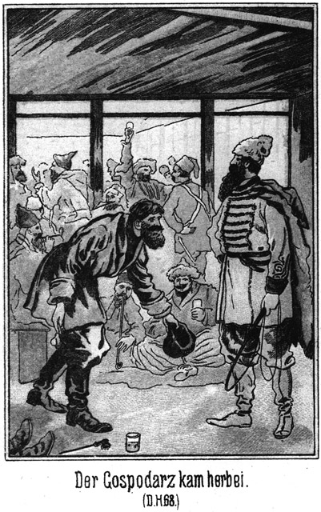Dieses Wirthshaus bestand aus drei Theilen. Rechts lag der Gastraum und das Wohnzimmer des Wirthes, links die große, geräumige Stallung, für viele Pferde berechnet, und dazwischen ein langer, breiter aber niedriger Raum, welcher Miejsce do tanza geschimpft wurde. Das ist russisch und heißt auf deutsch Tanzplatz oder Tanzsaal. Von einer Diele war da keine Rede. Der Fußboden bestand aus hart geschlagenem Lehm, doch hatte derselbe durch den fleißigen Gebrauch eine Glätte erhalten, welche eine Vergleichung mit dem besten Parquetboden aushalten konnte. Erleuchtet wurde dieser Tanzsaal des Abends durch einige Oellampen, welche von der Decke herunterhingen. Die Tagesbeleuchtung besorgte die Sonne, welcher man den Eingang durch die geöffneten Läden verschaffen konnte. Der Saal und überhaupt das ganze Gebäude hatte zwar Fenster, welche mit Läden verschlossen werden konnten, aber nur ein einziges dieser Fenster war mit Glastafeln versehen.
Hier in Ostsibirien ist Fensterglas eine große Seltenheit. Es giebt da zum Beispiel eingeborene Fürsten, deren Heerden nach Zehntausenden zählen, in deren Wohnung aber nicht ein einziges Glasfenster ist. Die sehr Reichen befestigen vor den Fensteröffnungen ein Stück Glimmerschiefer, was schon für vornehm, für Luxus gilt. Die Armen begnügen sich mit einem Stück Rinderblase, welche sie vor ein kleines Loch spannen. Das nennen sie auch Fenster und sind stolz darauf, durch dasselbe ein Stück Dämmerung hereinfallen zu sehen, welches sie Sonnenlicht benamsen.
Natürlich ging es heute in dem erwähnten Wirthshause hoch her. Die Russen haben die eingeborenen Völkerschaften Sibiriens natürlich vor allen Dingen mit dem Branntwein bekannt gemacht. Der Sibirier aber kann nicht viel vertragen. Er wird sehr schnell betrunken. Und eigenthümlicher Weise ist seine Betrunkenheit nicht eine schwere, aber eine dafür desto längere. Von einem kleinen Glase Wodka wird er für zwei Tage lang betrunken, ohne jedoch den Verstand so zu verlieren, wie es bei der Betrunkenheit eines Anderen der Fall ist. Er springt und reitet dann doppelt selig allüberall herum und trinkt, wenn er nüchtern geworden ist – gleich wieder ein Gläschen.
In der Wirthsstube gab es weder Tische noch Stühle. Rund um die Wände lagen Schilfmatten und auf diesen saßen mit untergeschlagenen Beinen die schlitzäugigen Gäste mit ihren weit hervorstehenden Backenknochen. Sie tranken alles Mögliche, was vorhanden war – saure Milch, Wodka, Mehlwasser oder auch einen Topf voll Ziegelthee. Und dabei standen ihre Zungen nimmer still.
Wer sie schreien hörte, der hätte denken mögen, daß es hier sogleich Mord und Todschlag geben werde, und doch war es nur eine höchst freundliche und nach ihren Begriffen auch höchst anständige und noble Unterhaltung, welche sie führten.
Plötzlich standen alle Zungen still. Es war ein ›Herr‹ eingetreten. Unter ›Herr‹ versteht der Eingeborene jeden Mann, welcher kaukasische Gesichtszüge zeigt und eine gute Kleidung trägt.
Der Eingetretene war von nicht zu hoher und nicht zu breiter Gestalt. Er hatte weite, blaue Pumphosen an, welche in den Schäften der hohen Stiefeln verliefen. Ueber den Hosen trug er einen langschößeligen Schnurenrock und darüber einen leichten Ziegenpelz. Auf dem Kopfe saß eine Lammfellmütze, wie sie gern in Persien und den Kaukasusländern getragen wird.
Sein Gesicht war unter einem dichten, schwarzen Vollbarte fast ganz versteckt. Nur die Augen konnte man deutlich sehen. Aber ihr Blick war stechend und unruhig; er machte keinen Vertrauen erweckenden Eindruck. Ein russisches Gesicht hatte dieser Mann nicht. Seinen Zügen nach mußte man ihn eher für einen Franzosen oder Mittelasiaten halten.
Er grüßte vornehm und überflog die Anwesenden mit einem stolzen, verächtlichen Blicke.
Der Gospodarz kam eilig herbeigerannt, stieß mehrere der Gäste über den Haufen, verbeugte sich beinahe bis zur Erde und sagte:
»Willkommen, Herr, willkommen in meinem armen Hause! Was befiehlst Was wünschest Du? Was ist Dir recht?«
»Kann ich bei Dir wohnen?«
»Ja, jawohl, Herr! Aber doch nicht etwa nur Du allein?«
»Nein. Ich habe meinen Diener mit.«
»Wo befindet er sich?«
»Draußen bei der Kibitka.«
»O heiliger Gott von Astrolenka! Du hast eine Kibitka? Du bist mit einem Wagen gekommen? Und ich habe es nicht bemerkt? Verzeihe, Herr! Ich werde meinem Hauspatron, dem heiligen Nicodemus, ein neues Bilderbuch schenken, damit er mir diese Nachlässigkeit nicht nach meinem Tode anrechnet. Ich werde gleich nach Deinem Fuhrwerke sehen.«
»So komm!«
Sie gingen Beide hinaus. Dort stand eines jener leichten, zweispännigen Fuhrwerke, welche man mit dem Namen Kibitka bezeichnet. Mehrere Koffer waren aufgeladen. Der bärtige Kutscher stand bei den Pferden. Auch er machte mit seinem finsteren Gesichte keinen sehr guten Eindruck und musterte den Wirth mit einer Miene, wie zum Beispiel ein Bandit einen Menschen darauf hin geprüft hätte, ob derselbe genügend Geld bei sich habe, daß ein Raubanfall lohnend sei.
»Ich werde sofort Alles hereinschaffen lassen,« sagte der Wirth. »Wie lange willst Du hier bei mir wohnen?«
»Das weiß ich noch nicht. Ich weiß nicht, wie lange ich von meinen Geschäften hier festgehalten werde. Ich habe gehört, daß Jahrmarkt hier ist?«
»Ja, Herr, ja.«
»Ich sehe doch nichts davon! Wo ist der Markt?«
»O, einen Marktplatz giebt es hier in Platowa nicht. Der Markt wird draußen vor der Stadt im Freien abgehalten. Darf ich erfahren, woher Du kommst?«
»Aus Irkutsk.«
»Also aus Westen. Da konntest Du freilich nichts von dem Jahrmarkte sehen. Er wird im Osten vor der Stadt abgehalten.«
»Kommen da auch Zobeljäger her?«
»Viele, Herr, sehr viele.«
»Ich möchte mir eine Anzahl derselben engagiren.«
»Du willst Zobeljäger in Deinen Dienst nehmen? Hm, Herr, das ist gefährlich, aber auch lohnend. Du kannst da eine sehr große Summe Geldes gewinnen und auch verlieren.«
»Wer gewinnen will, muß auch wagen.«
»Es fragt sich auch, welche Männer Du engagiren willst.«
»Nun, Zobeljäger! Ich habe es ja gesagt!«
»Sehr wohl. Aber es giebt da verschiedene Leute. Man hat freie Männer, welche meist Alles schießen, was ihnen begegnet. Die sind wohl mehr oder weniger Sonntagsjäger. Sodann giebt es Verbannte, welche an jedem Frühjahre gezwungen sind, eine bestimmte Anzahl Felle abzuliefern. Die haben in Folge dieses Zwanges ihr Handwerk gelernt und wissen ihr Wild zu treffen und in ihren Besitz zu bringen.«
»Solche will ich haben.«
»Ich rathe Dir auch dazu, wenn Du einmal den Jagdherrn machen willst. Freilich riskirst Du einen bedeutenden Verlust.«
»Aber ich kann auch gewinnen.«
»Es kommt darauf an, welche Art Leute Du bekommst. Du hast für ihre ganze, vollständige Ausrüstung zu sorgen, sie zu commandiren und, wenn Ihr eine schlechte Jagd macht, an die Regierung den Werth der Felle zu bezahlen, welche sie eigentlich in Natura abliefern müssen.«
»Ich werde nur Leute engagiren, welche ihr Fach gut verstehen.«
»Da mußt Du auch mehr zahlen.«
»Das versieht sich ganz von selbst. Kannst Du mir vielleicht einige gute Jäger nennen? Ich würde mir aus ihnen meine Gesellschaft bilden.«
»Das würdest Du nicht fertig bringen, Herr.«
»Warum nicht?«
»Diese Leute suchen sich ihren Umgang selbst. Keiner von ihnen würde sich von Dir einen Kameraden geben lassen, den er sich nicht selbst gewählt hat. Du mußt Dir einen tüchtigen Jäger suchen, mit ihm abschließen und es ihm selbst überlassen, sich die nöthige Anzahl von Gefährten zu suchen.«
»Ich werde diesen Rath befolgen. Vielleicht kannst Du mir nun einen solchen Jäger nennen.«
»O, mehrere, Herr. Der Allerberühmteste ist – ja, Herr, wenn Du den bekommen könntest!«
»Wen denn?«
»Nummer Fünf.«
»Nummer Fünf? Wie ist sein Name?«
»Das weiß Niemand, als nur seine Vorgesetzten, welche ihn verurtheilt haben. Nicht einmal die hiesige Behörde kennt seinen Namen. Jeder Verbrecher bekommt eine Nummer. Der, den ich meine, ist Nummer Fünf.«
»Läßt er sich denn bei dieser Nummer anreden?«
»Natürlich. Sie ist ja sein gegenwärtiger Name. Er ist der beste Jäger weit und breit. Er spricht nicht viel. Jeder will ihn zum Gefährten haben. Er wählt sich seine Leute stets selbst und bringt mit seiner Gesellschaft immer die reichste Beute heim.«
»Ist er noch jung?«
»Nein; er mag wohl fünfzig Jahre zählen. Er ist auch nicht groß und stark, wie man von einem solchen Jäger denken sollte, sondern klein. Sein Gesicht ist fein und weißgelb. Ich habe einmal zufälliger Weise gehört, daß der Kreishauptmann sagte, Nummer Fünf habe ein Gesicht wie ein vornehmer Indier.«
»Vielleicht ist er ein Indier?«
»Wohl kaum. Wie könnte ein vornehmer Mann aus Indien von den Zaaren nach Sibirien deportirt werden? Und wie könnte Einer, der aus dem heißen Indien stammt, das sibirische Klima so gut vertragen, wie Nummer Fünf es verträgt?«
»Das ist wahr? Ist er schon hier?«
»Ich habe ihn noch nicht gesehen. Gehe hinaus und frage nach ihm. Jeder kennt ihn und Jeder wird Dir ihn zeigen. Vorher aber mußt Du dem Kreishauptmanne einen Besuch machen.«
»Vorher? Hat das solche Eile?«
»Ja. Erstens darfst Du ohne seine Erlaubniß keine Stunde lang in meinem Hause oder überhaupt in Platowa verweilen. Sodann darfst Du ohne seine Genehmigung nicht den Jahrmarktsplatz besuchen, und drittens kannst Du keinen Menschen engagiren oder überhaupt mit irgend Einem einen Vertrag abschließen, ohne daß der Kreishauptmann ihn unterzeichnet und besiegelt.«
»Und eine Abgabe dafür empfängt?«
»Natürlich! Und diese Abgabe wird zur Strafe desto höher bemessen, je länger Du, nachdem Du hier angekommen bist, zögerst, Dich ihm pflichtschuldigst vorzustellen. Ich kann Dir wirklich keinen besseren Rath geben, als augenblicklich zu ihm zu gehen.«
»Ich muß mich doch wenigstens erst umziehen!«
*
Der Wirth schüttelte lächelnd den Kopf und sagte:
»Warum?«
»Weil er es mir übel nehmen wird, wenn ich in Reisekleidern zu ihm komme.«
»O nein; Du irrst. Deine Kleider sind bereits vornehm. Du mußt bedenken, je besser Dein Anzug ist, desto mehr Geld wird er fordern.«
»Desto mehr? Es muß doch eine Taxe geben!«
»Die giebt es. Aber der Kreishauptmann macht sie selbst.«
»Aha! Der Himmel ist hoch und Zaar ist weit!«
»Um Gotteswillen, Herr, sage das nicht so, daß Jemand es hört! Du könntest sehr streng bestraft werden. Der Zaar ist weit, aber das Gefängniß ist nahe!«
»Verdammtes Ruß–«
Er sprach das Wort nicht aus, murmelte einen Fluch in den Bart und fuhr dann laut fort:
»Gut, so werde ich gehen. Bis ich zurückkehre, werdet Ihr wohl mein Zimmer in Ordnung gebracht haben.«
Er brauchte gar nicht zu fragen, wohin er sich wenden solle. Der Wirth hatte, als er vorhin den Kreishauptmann nannte, mit der Hand auf das große Gebäude gezeigt, in welchem der Genannte residirte. Der Fremde schritt auf dasselbe zu und trat durch die Hauptthür ein. Da war über einer Stubenthür das wunderliche Wort »Prissutstwije« zu lesen. Das heißt auf deutsch so viel wie »Amtsstube«.
Er mußte natürlich glauben, daß er sich in dieses Zimmer zu wenden habe. Er klopfte an und trat ein. Auf einem alten Sopha saß ein langer, dürrer Mann mit einer ebenso langen, dürren Frau. Der Mann musterte den Eingetretenen, erwiderte dessen Gruß nur mürrisch und fragte:
»Zu wem willst Du?«
»Zum Kreishauptmann.«
»Schön! Was ist Dein Wunsch?«
»Meinen Paß vorzeigen.«
»Gieb ihn her!«
Der Fremde gab den Paß. Der Dürre öffnete und las denselben, faltete ihn wieder zu, streckte die Hand aus und sagte:
»Kostet fünf Rubel.«
Der Fremde zog den Beutel, zahlte das Geld und erhielt den Paß zurück. Dann erkundigte er sich:
»Darf ich im Gasthause wohnen?«
»Kostet zwei Rubel.«
Dieses Mal aber streckte die Frau die Hand aus und erhielt das Geld von dem Fremden, welcher dabei die Frage aussprach:
»Darf ich mir eine Gesellschaft Zobeljäger engagiren?«
»Kostet vier Rubel,« sagte die Frau, indem sie schnell die Hand wieder ausstreckte. Der Fremde gab ihr die vier Rubel. Ihr Mann aber entriß ihr rasch einen davon und sagte:
»Ich habe erst fünf und Du nun sechs. Ich bin der Zasjedatel, Du aber nur die Zasjedatela. Der Mann muß mehr haben als die Frau.«
Zasjedatel heißt so viel wie Beisitzer. Also war dieser Mann gar nicht der Kreishauptmann. Der Fremde schluckte seinen Aerger hinab und sagte im Tone leichten Vorwurfes:
»Du könntest mir eher sagen, daß Du nur der Beisitzer bist!«
»Warum? Auch ich habe meinen Zoll von Dir und Jedem zu verlangen. Gehe da hinein!«
Er zeigte auf eine zweite Thür, über welcher dasselbe famose Wort »Prissutstwije« zu lesen war. Der Fremde folgte diesem Gebote und trat dort ein. Als er grüßte, wendete der Herr, welcher schreibend an einem Tische saß, ihm das Gesicht zu und fragte kurz und streng:
»Zu wem?«
»Zum Isprawnik (Kreishauptmann).«
»Gut. Was willst Du?«
»Hier mein Paß!«
Er gab ihn hin. Der Beamte las und sagte:
»Zehn Rubel!«
»Herr, ich habe bereits im Vorderzimmer fünf gegeben!«
»Geht mich nichts an. Zehn Rubel, oder der Paß bleibt hier liegen!«
Wohl oder übel zählte der Fremde das Geld hin und fragte dabei:
»Ich kann doch im Gasthofe logiren?«
»Vier Rubel!«
»Ich habe da vorn schon zwei bezahlt!«
»Vier Rubel!«
Das wurde in einem so drohenden Tone gesagt, daß der Supplicant sofort zahlte, dann aber sich weiter erkundigte:
»Ich beabsichtige, eine Gesellschaft von Zobeljägern zu engagiren, um mit ihnen in –«
»Acht Rubel!« unterbrach ihn der Beamte sehr schnell.
Der Andere wollte eine zornige Bemerkung machen, erhielt aber einen solchen Blick zugeschleudert, daß ihm das Wort stecken blieb. Er bezahlte. Der Beamte gab ihm jetzt seinen Paß zurück, zeigte auf eine andere Thür und sagte:
»Geh da hinein!«
Ueber dieser Thür stand das Wort »Perednjaja«. Das heißt nämlich Vorzimmer. Jetzt konnte der Fremde sich nicht enthalten, zu fragen:
»Das ist erst das Vorzimmer? Bist Du denn nicht der Isprawnik?« »Nein,« antwortete der Gefragte in jetzt sehr freundlichem Tone. »Ich bin nur der Obschtschestnik von Platowa, und Der, bei dem Du erst warst, ist mein Beisitzer.«
»Aber, zum Teufel, ich will ja nicht zu Euch, sondern zu ihm!«
»Mein Söhnchen, zu ihm kannst Du nur, wenn Du bei uns gewesen bist. Sei ruhig und ärgere Dich nicht! Es ist Jahrmarkt, an welchem ein Jeder sein Geschäft machen will. Du und ich und alle Anderen auch.«
»So werde ich auch noch bei dem Isprawnik zu bezahlen haben?«
»Ja, und zwar mehr als bei uns.«
»Höre, ist das recht von Euch?«
»Sehr recht! Niemand kann auf Erden Etwas umsonst erhalten. Und nun frage nicht weiter, sonst lasse ich Dich nicht hinein zu dem Kreishauptmanne, und Du wirst ganz im Gegentheile nach Irkutsk zurückgeschickt.«
Der Fremde hielt es für gut, diesem Rathe Folge zu leisten. Er ging durch die bezeichnete Thür. Dort stand ein junger Mann in der Uniform eines gewöhnlichen Kosaken. Er schenkte ihm keine weitere Aufmerksamkeit und fragte nur:
»Wo finde ich den Isprawnik?«
Er erhielt nicht gleich eine Antwort. Der Kosak hielt das Auge wie erschrocken auf ihn gerichtet, trat zurück, fixirte ihn abermals und sagte dann:
»Florin! Ist das möglich! Du in Sibirien!«
Als der Angeredete diesen Namen hörte, erbleichte er. Das sah man sogar trotz seines Vollbartes ganz deutlich. Vor Schreck fuhr er um einige Schritte zurück, faßte sich aber sehr schnell wieder und sagte in dem gleichgiltigsten Tone, welcher ihm jetzt möglich war:
»Du verkennst mich!«
»O nein!«
»O doch! Ich kenne Dich nicht.«
»Das ist möglich. Aber desto besser kenne ich Dich. Es sind zwar Jahre vergangen, seit wir uns gesehen haben, und es mag sein, daß mein Gesicht sich verändert hat, aber Deine Züge sind so, daß man sie nie vergessen kann, wenn man sie einmal gesehen hat.«
»So, so! Wer soll ich denn sein?«
»Der Kammerdiener Florin.«
»Kammerdiener? Bei wem denn?«
»Bei dem Baron Alban von Adlerhorst.«
»Diesen Namen habe ich in meinem ganzen Leben noch nicht gehört!«
»Verstelle Dich nicht!«
»Warum sollte ich mich verstellen!«
»Vielleicht hast Du Ursache, Deine frühere Existenz zu verleugnen.«
»Höre, ich will nicht hoffen, daß Du die Absicht hast, mich zu beleidigen!«
»Das kann mir nicht einfallen.«
»Ich würde es mir auch auf das Strengste verbitten. Du trägst das Abzeichen eines Deportirten, bist also zur Strafe in ein sibirisches Regiment gesteckt worden. Es würde mich nur ein einziges Wort kosten, Deine Strafe verschärfen zu lassen. Du könntest leicht aus der zweiten Classe in die fünfte versetzt werden!«
Die russischen Verbannten sind nämlich in fünf Classen vertheilt. Diese folgen auf einander: Aufenthalt unter Aufsicht in einer Stadt, Dienst in einem sibirischen Regiments, Colonisation, öffentliche Arbeiten, namentlich in den Bergwerken, und endlich Einstellung in eine Straf- oder Arrestantencompagnie. Die erstere Strafe ist die leichteste, die letztere aber die härteste.
Als der Fremde diese Drohung aussprach, blieb der Kosak dennoch nicht ruhig. Er antwortete:
»Und trotzdem möchte ich wetten, daß ich mich nicht irre. Es können unmöglich zwei Menschen eine solche Aehnlichkeit besitzen.«
»Was soll es anders sein, als eine Aehnlichkeit! Ich habe nicht nöthig, mit einem Strafkosaken eine Unterhaltung anzuknüpfen, aber Du bist, so zu sagen, doch auch ein Mensch, und darum will ich Dir beweisen, daß Du Dich irrst. Hier ist mein Paß. Lies ihn!«
Er zog den Paß hervor und reichte ihn dem Kosaken hin, welcher ihn öffnete, ohne auf die Beleidigung, welche die soeben ausgesprochenen Worte enthielten, zu antworten. Der Paß lautete auf den Namen Peter Lomonow, Kaufmann aus Orenburg, und war von der dortigen Behörde ausgestellt und außerdem von dem militärischen Gouverneur contrasignirt. Es konnte keinen Zweifel geben. Dennoch begann der Kosak das Signalement mit der vor ihm stehenden Person zu vergleichen.
»Hier steht ›zwei Vorderzähne fehlen‹, und Du hast keine Zahnlücke,« sagte er. »Wie stimmt das?«
Der angebliche Kaufmann, welcher wirklich kein Anderer als der ehemalige Derwisch war, riß ihm den Paß aus der Hand und antwortete:
»Weil ich sie mir habe einsetzen lassen. Sie sind natürlich falsch. Uebrigens bist Du nicht der Kreishauptmann und hast den Paß nicht zu beurtheilen. Ich bin mit Dir fertig und frage Dich nur, ob der Isprawnik zu sprechen ist.«
»Er ist da drin. Gehe hinein!«
Das Vorzimmer hatte drei Thüren. Eine, durch welche der Kaufmann gekommen war, eine, durch welche er jetzt eintrat, und eine dritte, welche direkt in das Freie führte.
»Und er ist es dennoch! Er ist es!« sagte der Kosak für sich hin. »Was will er hier? Wo hat er sich während dieser Jahre befunden und warum verleugnet er sich?«
Er hatte keine Zeit, weiter über diesen Gegenstand nachzudenken, denn die eben erwähnte dritte Thür wurde geöffnet und es traten drei Personen ein, welche eine Beschreibung verdienen.
Voran kam ein kleiner, dicker Kerl mit schief geschlitzten Augen, hervortretenden Backenknochen und einer riesigen Bärenmütze auf dem Kopfe. Er hatte Pelzstiefel an, das Haar nach Außen gekehrt, Hosen auch aus Pelz und einen langen Rock ebenso aus Pelz. Ueber diesen hatte er einen schweren Sarras geschnallt und in der rechten Hand hielt er eine gewaltige Reitpeitsche. Diese Peitsche aber schien bei ihm nicht sehr gefährlich zu sein, denn sein kleines Näschen zuckte außerordentlich naiv in die Welt und um seinen breiten Mund lag ein Lächeln, welches gar nicht gutmüthiger hätte sein können.
Hinter ihm trat eine Frau ein, welche ganz genau ebenso gekleidet war wie er. Auch sie hatte eine Peitsche in der Hand. Nur die Bärenmütze fehlte. Sie trug das schlichte Haar in zwei dünnen Zöpfen über den Rücken hinab, in den Ohren zwei seht große goldene Ringe und über der Brust eine schwere, silberne Kette. Ihr Gesicht war womöglich noch gutmüthiger als dasjenige ihres Mannes. Auch war sie noch dicker als er, so daß sie sich nur mit Mühe zur Thüröffnung hereinzwängen konnte.
Hinter diesen Beiden kam oder vielmehr leuchtete und glänzte, blitzte und flimmerte es herein, so rein, so zart, so schön und herrlich wie die Morgenröthe, wenn sie mit Gold und Purpur das jungfräuliche Weiß eines Gletschers bestrahlt.
Ein Mädchen war es hoch und stolz gewachsen, wie es unmöglich unter den eingeborenen Völkern und Stämmen Sibiriens ein weibliches Wesen geben kann.
Diese wunderbar schöne, schlanke und doch so üppig volle Gestalt trug eine ganz eigenartige Kleidung. Die kleinen Füßchen staken in langen, feingearbeiteten Schnürstiefeletten aus rothgegerbtem Leder vom Bauche des Elennthieres. Blendend weiße Strümpfe umschlossen die drallen Waden, welche man sehen konnte, weil das Röckchen nur wenige Zolle über die Kniee herabreichte. Dieses Röckchen aber bestand aus dem kostbarsten Zobel, jener seltenen und darum so theuren Art, deren glänzend schwarzes Fell sich nach jeder Richtung streichen läßt, ohne struppig zu werden, mit silberweiß glänzenden Grannenspitzen. Dieses silbernen Glanzes wegen werden die Thierchen Silberzobel genannt.
Ueber diesem Röckchen, dessen enger Schnitt die herrlichen, voll gerundeten Hüften deutlich erkennen ließ, umschloß ein Mieder von demselben Pelzwerk die seine Taille, vorn geöffnet und oben so weit ausgeschnitten, daß die Fülle des Busens, vom feinsten, schneeweißen Linnen bedeckt, zur verführerischen Geltung kam. Die langen Aermel dieses Mieders waren, nach orientalischer Art, nach den Händen zu immer weiter gehalten und bis oben in die Nähe der Achsel aufgeschnitten. Goldene Spangen hielten den Aufschnitt so weit zusammen, daß der weiße, verführerisch gerundete Arm wie Schnee aus dem glänzenden Dunkel des Pelzwerkes hervorleuchtete.
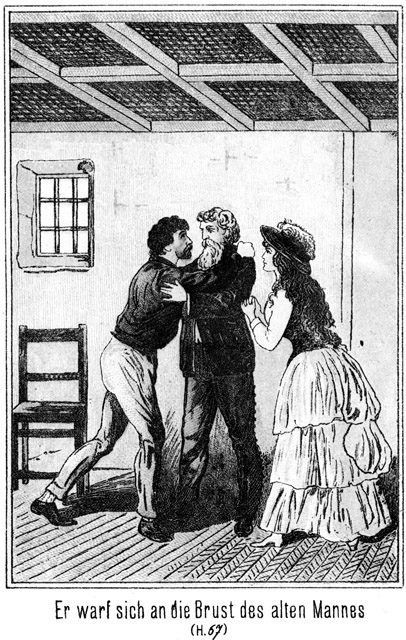Um den nackten, schlank und doch kräftig auf die üppigen Schultern gesetzten Hals flimmerte ein Schmuck von viereckigen Goldplatten. Das schwarze, lange, schwere Haar war mit eben solchen Goldplatten und silbernen Ketten durchflochten, sonst aber unbedeckt. Die kleinen, rosig angehauchten Ohren waren ohne Schmuck. Dafür aber lagen um die hohe, schön gewölbte Stirn mehrere Lagen von Goldmünzen, von silbernen Kugeln zusammen gehalten, auf deren jeder ein Diamant funkelte.
Doch über das Alles blickte man gern hinweg, um das Gesicht zu schauen, ein Gesicht, wie die schaffende Natur es einem Menschenkinde nur unter der allerglücklichsten Constellation der Sterne einmal verleiht.
Das waren Augen, schwarz und groß, von einem mächtigen und doch dabei so milden Blicke! Es glänzte so kindlich rein aus denselben hervor, als habe noch nie ein Hauch des Zornes und des Hasses die Seele dieses außerordentlichen Mädchens getrübt. Und doch machten diese Augen auf den Beschauer den Eindruck, als ob sie so zornig und gewaltig aufleuchten könnten, daß selbst die personificirte Kühnheit von ihrem Blitze vernichtet werden müsse.
Die Wangen waren voll und doch nicht so sehr fleischig, daß dem herrlichen Profile dadurch ein Eintrag geschehen wäre. Es war, als sähe man es ihnen an, daß noch kein fremder Mund sie geküßt, nicht einmal die Spitze eines fremden Fingers sie nur leicht liebkosend berührt hätte.
Das Kinn, so zart gezeichnet, war doch kräftig geformt, auf einen kräftigen Character schließen lassend. Dazu paßte das leicht gebogene, aber nicht etwa zu scharfe, energische Näschen, welches in kein anderes, als nur in dieses Gesicht zu passen schien.
Ueber den Mund hätte selbst Correggio nichts zu sagen gewußt, aber er hätte es als ein Glück angesehen, ihn immer und immer wieder studiren zu dürfen. Es schienen Götter und Menschen zu gleicher Zeit an demselben gezeichnet und geformt zu haben, so himmlisch und so irdisch schön schlossen die vollen, ganz eigenartig gebogenen Lippen die kleinen, prächtigen Zähnchen als köstliche Kleinode ein. Wer diesen Mund sah, dem kam ganz unwillkürlich die Ueberzeugung, daß wohl der würzigste Athem demselben entströmen, nie aber ein absichtlich böses Wort ihm entfliehen könne.
Die kleine und dabei doch kräftige Hand hielt auch eine Reitpeitsche. Diese und die beiden kleinen Sporen, welche an den Stiefelchen klirrten, konnte man einem Mädchen nicht übel nehmen, welches gewöhnt ist, nur zu Pferde den heimathlichen Heerd zu verlassen.
Der Schmuck, welchen dieses entzückende Wesen trug, ließ auf einen außerordentlichen Reichthum schließen. In Sibirien circulirt fast nur papierenes Geld und noch dazu ist ein bedeutender Theil desselben gefälscht. Selbst kleinere Silberstücke sind im gewöhnlichen Verkehre selten. Man kann mit einer Silbermünze, die einen Werth von nur wenigen Kopeken hat, bei den Eingeborenen schon ziemlich viel bezahlen. Diese Leute nehmen niemals Papiergeld. Sie können meist nicht lesen, weshalb sie sehr leicht betrogen werden könnten. Darum ziehen sie lieber den Tauschhandel vor, Waare gegen Waare, dann sind sie sicher, nicht übervortheilt zu werden.
Aus diesem Grunde repräsentirte der Schmuck des Mädchen ein Capital, welches auf einen ganz bedeutenden Reichthum schließen ließ.
Aber nun vor allen Dingen die Frage: War dieses Mädchen mit den beiden dicken Leuten verwandt? Jeder hätte sofort mit einem schnellen »Unmöglich!« geantwortet, und doch –
Der kleine Mann wälzte sich lächelnd auf den Kosaken zu und sagte:
»Hast Du hier die Wache, mein Söhnchen?«
Es muß hier erwähnt werden, daß alle Völker, welche sich der russischen Sprache bedienen, gern den höflichen, freundlichen Diminutiv gebrauchen, also Väterchen, Mütterchen, Brüderchen, Schwesterchen, anstatt dem kälteren Vater, Mutter, Bruder und Schwester. Zuweilen wird diese Ausdrucksweise zu oft angewendet, wobei oft sehr spaßhafte Ausdrücke zum Vorschein kommen.
»Kennst Du mich?« fragte der Dicke weiter.
»Nein, doch werde ich wohl die Freude haben, zu erfahren, wer Du bist.«
Das Gesicht des Dicken glänzte noch freundlicher, als er bereitwillig antwortete:
»Ja, mein liebes Söhnchen, diese große Freude werde ich Dir gern machen. Ich bin nämlich Bula, der Tejsch der Tungusen. Kennst Du mich nun, mein Herzchen?«
Tejsch heißt so viel wie Fürst.
»Ja, Väterchen, jetzt kenne ich Dich.«
»Und nun, mein Liebling, will ich Dir auch mein Frauchen zeigen, die Fürstin. Sie heißt Kalyna. Findest Du nicht, daß dieser Name sehr richtig ist?«
Kalyna heißt ›die Dicke‹. Darum antwortete der Kosak:
»O, er ist sehr richtig, mein liebes Väterchen. Darf ich dem Mütterchen die Hand küssen?«
Da erglänzte das Gesicht der Fürstin vor heller Wonne. Sie wälzte sich näher, streckte ihm die Finger entgegen, welche so fett waren, daß sie dieselben gar nicht mehr zusammen bringen konnte, und flötete mit ihrem lieblichsten Tone:
»Ja, hier, mein Söhnchen, hast Du meine Hand. Drücke immerhin ein Küßchen darauf. Oder möchtest Du lieber alle Beide küssen?«
»Ja, gönne mir dieses Vergnügen!«
»Warum denn nicht, wenn man einem so netten Bürschchen so ein kleines Vergnügen machen kann, so soll man es ihm auch machen. So, mein Kindlein! Und nun wird Dir der Fürst, mein gutes Männchen, eine Frage vorlegen.«
Der Kosak hatte beide Hände der Dicken geküßt und dabei gar nicht gethan, als ob er auch die dritte Person gesehen habe. Jetzt fragte ihn der Anführer der Tungusen:
»Weißt Du vielleicht, ob das gute Kreisamtmännchen zu Hause ist?«
»Ja, Väterchen. Er ist drinnen in seinem Zimmer.«
»So werden wir einmal hineingehen. Wir sind nämlich gekommen, ihm ein Visitchen zu machen.«
»Ich muß Dich bitten, noch einen Augenblick zu warten, gutes Väterchen.«
»Warum?«
»Weil Jemand bei ihm ist.«
»Wer?«
»Ein fremder Kaufmann, welcher seinen Paß vorzeigen will.«
»Nun gut, so warten wir. Doch hoffe ich, daß sich der Kreishauptmann nicht allzu lange mit dem Päßchen des Kaufmännchens beschäftigen werde. Ich bin zum Jahrmarkt gekommen und habe viel einzukaufen.«
»Der Isprawnik wird sich beeilen. Soll ich Dich vielleicht anmelden?«
»O nein. Stören will ich ihn nicht. Gar so eilig habe ich es nicht. Und damit uns die Zeit nicht so lang wird, werde ich Dir einmal hier mein Töchterchen zeigen, mein Herzchen, mein Juwelchen, mein weißes Lämmchen. Siehe sie Dir einmal an! Sie heißt Karparla. Ist das recht?«
Die Tungusen haben von allen Turk-Völkern die Sprache am reinsten erhalten. Kar heißt der Schnee, und parlamak heißt leuchten, glänzen. Der Name Karparla also bedeutet: wie Schnee leuchten.
Die Naturvölker geben die Namen sehr oft nach in die Augen fallenden Eigenschaften der betreffenden Person. Der Fürst hätte für seine Tochter keinen bezeichnenderen Namen finden können als Karparla.
Jetzt war der Kosak gezwungen, seine Augen voll auf sie zu richten. Seine kräftige, wohlgegliederte Gestalt schien sich in die Höhe zu richten, sein Auge glänzte und seine Wangen rötheten sich. Er antwortete:
»Ja, dieser Name ist bezeichnend wie kein anderer. Du hast ihn sehr gut gewählt, Väterchen.«
Der Fürst war über dieses Lob so sehr erfreut, daß er, auf seine Tochter deutend, sagte:
»Hast Du nicht Lust, auch ihr die Händchen zu küssen?«
»Du bist voller Güte, mein Väterchen; aber was Du mir da erlaubst, das darf ich doch nicht wagen.«
»Warum nicht?«
»Das kann ich Dir nicht erklären. Ich würde die Worte nicht finden, welche nöthig wären, Dir zu sagen, warum ich es nicht darf.«
Da trat Karparla schnell auf ihn zu, reichte ihm die Rechte entgegen und sagte mit einer Stimme, deren reiner, sonorer, kräftiger Klang ihm in die tiefste Seele drang:
»Du darfst es. Aber nicht küssen sollst Du meine Hand. Das würde wie eine Unterwürfigkeit erscheinen. Sondern reichen wollen wir uns die Hände wie Bekannte, welche einander nicht vergessen haben.«
Sie ergriff seine Hand und drückte sie herzlich. Vater und Mutter blickten erstaunt auf die Tochter. Der Erstere sagte:
»Wie Bekannte? Habt Ihr Euch denn schon einmal gesehen?«
»Ja, ja,« antwortete sie, bedeutungsvoll mit dem Kopfe nickend.
»Nun, was thut das, mein Seelchen! Er kann Dir trotzdem die Hand küssen, wenn es auch wie eine Unterwürfigkeit aussieht. Er ist ein gemeiner Kosak, ein Deportirter, und Du bist eine reiche, vornehme Fürstentochter. Er muß Dir also unterthänig sein, und es ist eine sehr große Ehre und Gnade für ihn, daß ich ihm erlaube, Dir das Händchen zu küssen.«
Diese Worte hätten aus jedem andern Munde eine Beleidigung enthalten; er aber sagte das so unbefangen, so freundlich und lächelnd, und dabei blickte er so wohlwollend zu dem Kosaken hinüber, daß dieser, welcher übrigens diese unbeleckten Naturmenschen bereits kennen gelernt hatte, ihm gar nicht bös sein konnte.
Prinzessin Karparla aber sagte in einem sehr ernstem Tone:
»Er mir unterthan? Nein. Er steht mir gleich. Er ist mein Bruder.«
»Dein Bruder? Machst Du vielleicht ein kleines Scherzchen, mein Engel?«
»Nein. Ich habe mich lange, lange darnach gesehnt, ihn wieder zu sehen. Ihn heut hier zu treffen, konnte ich nicht ahnen. Höre es, Väterchen, und höre es, Mütterchen! Er ist mein Retter!«
Da stemmten Beide ihre Hände in die Seiten und riefen zu gleicher Zeit:
»Dein Retter?«
»Ja.«
Da schlugen sie zu gleicher Zeit die Hände vor Verwunderung zusammen, daß beide Peitschen auf den Boden fielen.
»Der Dich aus dem Eise gezogen hat?« fragte der Fürst im Tone des größten Erstaunens.
»Ja, er,« antwortete sie.
»Ist das nicht ein kleines Irrthumchen?«
»Nein. Ich habe ihn sogleich erkannt, als ich hier eintrat und ihn erblickte.«
»Es war doch ein Arbeiter, welcher Dich errettete, nicht aber ein Kosak!«
»So ist er indessen Kosak geworden.«
»Welch ein Wunder. Ist es denn wahr, daß Du ihr Retter bist, mein liebes Kosakchen?«
»Ja, ich bin es,« antwortete der Gefragte.
»So ist es also keine Täuschung! Du bist es! Laß Dich umarmen!«
Er zog den Kosaken an sich und schob ihn dann der Fürstin zu, mit den Worten:
»Mütterchen, drücke ihn auch an Dein Herzchen! Er hat es verdient, daß Du Dich bedankst!«
»Ja,« antwortet« sie. »Komm in meine Arme mein Söhnchen, mein Retterchen! Ich bin bereit.«
Sie öffnete die dicken Arme. Der Kosak trat hinzu und duldete es, daß sie ihm die Hände auf die Arme legte. Sie wollte ihn im überquellenden Gefühl umarmen, brachte aber die Hände nicht weiter; sie war eben zu corpulent dazu. Sie hatte sogar die Absicht, ihn auf die Wange zu küssen, da aber ihre Gestalt einen zu großen Durchmesser hatte, so konnte sie ihn mit ihren Lippen nicht erreichen und der schallende Schmatz explodirte wie eine Wurfgranate in der Luft.
Der Fürst war mit großem Vergnügen Augenzeuge dieser außergewöhnlichen Zärtlichkeit seiner Gattin, meinte aber jetzt in verwahrendem Tone:
»Nun darfst Du aber nicht denken, daß auch mein Töchterchen Dich umarmen und küssen soll. Das ist verboten. Sie ist ein Mädchen und eine Prinzessin. Und dazu ist sie die Verlobte des Rittmeisters, welcher der Sohn meines Freundes, des Kreishauptmännchens ist. Beide würden es nicht dulden, daß sie Dich umarmt. Sage uns lieber, wie Du so plötzlich Kosak geworden bist!«
Bei der letzteren Eröffnung hatte Karparla sich unwillkürlich abgewendet, und die Wangen des Kosaken waren blaß geworden.
»Ach! Also darum!« sagte er halblaut.
»Was?«
»Ich hatte einen Fehler begangen,« fügte er schnell und lauter hinzu. »Zur Strafe dafür wurde ich in die Sotnie gesteckt.«
»Du Armer! Aber da bist Du selber schuld. Ich werde indeß Fürbitte für Dich einlegen. Meinst Du nicht?«
»Nein. Thue es nicht.«
»Warum nicht?«
»Es würde mir nichts nützen sondern nur schaden, mein Väterchen.«
»Glaube das nicht, mein Söhnchen. Ich gelte sehr viel bei dem Rittmeister.«
Da trat Karparla auf den Kosaken zu, gab ihm die Hand und sagte:
»Willst Du auch mir nicht erlauben, für Dich zu bitten.«
»Nein.«
»Meinst Du, daß er mir, seiner Braut, die erste Bitte abschlagen werde?«
Da zog er rasch seine Hand aus der ihrigen und antwortete in beinahe schroffem Tone:
»Auf diese Weise nun gar nicht! Ich mag von ihm keine Gnade haben!«
»Das ist mir sehr unlieb. Aber vielleicht kann ich Dir eine andere Liebe erweisen, welche Du von mir annimmst. Jetzt erlaube mir, Dir einstweilen das hier zum Andenken zu geben!«
Sie zog einen Ring vom Finger und ergriff seine Hand, um ihm denselben anzustecken.
In diesem Augenblicke trat der einstige Derwisch aus dem Nebenzimmer. Er öffnete dabei die Thür so weit, daß man sehen konnte, wer sich in dem Letzteren befand, nämlich der Kreishauptmann, sein Sohn der Rittmeister, und außer ihnen noch ein Kosakenlieutenant.
Alle Drei erblickten die Gruppe.
»Bula, der Fürst!« rief der Kreishauptmann.
Während der Derwisch sich schnell entfernte, trat der Rittmeister ebenso schnell heraus und fragte:
»Was geht hier vor?«
»Ich habe meinen Retter gefunden,« antwortete das schöne Mädchen.
»Ja, ihr Retterchen!« fiel der Fürst ein. »Freust Du Dich nicht auch darüber, Rittmeisterchen?«
Der Genannte fragte, anstatt zu antworten:
»Und was ist da geschehen? Was ists mit diesem Ringe?«
»Ich habe ihm denselben geschenkt.«
»Wie? Ihm, einem Deportirten einen Brillant geschenkt? Das muß ich mir denn doch verbitten. Komm, Bursche!«
Er ergriff die Hand des Kosaken, zog ihm den Ring vom Finger, steckte denselben sich selbst an und sagte, zu Vater, Mutter und Tochter gewandt:
»Kommt herein! Hier ist kein Ort für Euch!«
Der Kosak stand vollständig regungslos da, ein Bild eiserner Disciplin, aber auch eiserner Selbstbeherrschung. Keins seiner Glieder bewegte sich. Nur um dem Schnurrbart zuckte es kaum bemerkbar, und die Lider senkten sich nieder, damit der Blick seines Auges nicht verrathen möge, was in seinem Herzen vorging.
Im Vorübergehen flüsterte Karparla ihm zu:
»Gräme Dich nicht! Ich sehe Dich wieder.«
Die Thür schloß sich hinter ihr.
Jetzt kam Bewegung in den Kosaken. Er ballte die Faust und erhob sie drohend.
»Meine Stunde wird auch schlagen!« knirrschte er. »Die Ketten werden fallen, und dann – – –! Welch ein Tag! Zuerst dieser Diener der Adlerhorst! Er war es. Ich schwöre darauf! Und nun Karparla – die Verlobte des Rittmeisters! Das habe ich nicht geahnt! Welch eine Schönheit! Wie erhaben, wie rein, wie stolz und doch wie mädchenhaft! Schon glaubte ich, ihr Bild sei aus meiner Seele gewichen, und nun – nun – – o Zykyma, arme Zykyma! Wartest Du vielleicht immer noch auf den Hauptmann Orzeltschasta, welcher seinen guten deutschen Namen Adlerhorst in dieses russische Wort verwandeln mußte? Vielleicht wartest Du vergebens.
Ich glaube, die Wellen verschlingen
Am Ende Schiffer und Kahn.
Und das hat mit ihrem Singen
Die – – Karparla gethan!
Als der Fürst mit seiner Frau und Tochter bei dem Isprawnik eingetreten war, hatte der Letztere die Drei sehr freundlich begrüßt. Aber der Menschenkenner hätte sofort bemerkt, daß diese Freundlichkeit keine wirklich aus dem Herzen kommende sei.
Er war ein ächter Russe, lang, breitschulterig, mit niedriger Stirn, stumpfer Nase, dicken Lippen und struppigem Vollbarte. Sein Sohn war ihm sehr ähnlich. Der Rittmeister mußte seiner Hünengestalt nach eine ungemeine Körperkraft besitzen.
Der Lieutenant hatte Miene gemacht, sich zurückzuziehen, war aber durch einen Wink des Rittmeisters bedeutet worden, zu bleiben.
»Du störst gar nicht,« flüsterte ihm der Letztere zu. »Sollst sogar Zeuge sein, wie ich diesem dicken Fürsten meinen Standpunkt klar mache.«
Und sich zu dem Fürsten wendend, fuhr er laut fort:
»Höre, Väterchen, wie kannst Du denn eigentlich Karparla erlauben, einem Verbrecher ihren Ring zu schenken?«
»Er ist ja ihr Retter!« antwortete der Gefragte erstaunt.
»Du bist wohl sehr froh, ihn gefunden zu haben?«
»Sehr! Und das Mütterchen auch. Wir haben ihn vor Freude umarmt.«
»Umarmt? Auch das Mütterchen?«
»Natürlich!«
»Und Karparla wohl auch?«
»Nein, das habe ich ihr verboten.«
»So war dieses Verbot wohl nothwendig? Ohne dasselbe hätte auch sie ihn umarmt?«
Er sagte das in einem so höhnischen Tone, daß er sogar diesen kindlichen Gemüthern auffallen mußte. Der Fürst wollte antworten, doch Karparla that es rasch an seiner Stelle:
»Hättest Du Etwas dagegen gehabt?«
Sie stand stolz und hoch aufgerichtet vor ihm. Er verschlang ihre Schönheit förmlich mit seinem Blicke, ließ sich aber durch dieselbe doch nicht besiegen.
»Sehr viel sogar!«
»Mit welchem Rechte?«
»Du bist meine Braut!«
»Ich wußte kein Wort davon und habe es erst heut erfahren.«
»Es ist so zwischen uns und Deinen Eltern ausgemacht worden. Dein Väterchen hat dem Schamanen seinen Schwur gegeben und darf ihn nun nicht brechen.«
Die Schamanen sind die Priester der Tungusen und haben mehr Einfluß auf die Gewissen der Laien und selbst der Fürsten als unsere christlichen Priester auf die Glieder ihrer Gemeinden.
Das Mädchen wendete den Blick auf den Fürsten und fragte mit leiser, stockender Stimme:
»Ist das wahr, Väterchen?«
»Ja, meine Seele, mein Liebchen.«
»Warum hast Du das gethan?«
»Ich werde Dir den Grund sagen, wenn Du das Weib Deines Männchens geworden bist.«
»Und nun kann es nicht anders sein?«
»Nein. Du mußt! Du weißt, daß es ganz unmöglich ist, einen solchen Schwur zu brechen.«
»Ich weiß es und werde gehorchen.«
Ihre Wimpern sanken nieder, als ob eine Thräne zu verbergen sei, und sie selbst auch sank auf einen Stuhl. Sie fühlte sich plötzlich so schwach und fuhr mit beiden Händen nach dem Herzen, als ob sie dort einen großen Schmerz empfinde.
Der Rittmeister trat einen Schritt näher herbei und sagte in zärtlich sein sollendem Tone:
»Du siehst also, Schätzchen, daß Du mir gehörst und daß schon der Blick eines solchen Hundes, wenn er ihn auf Dich richtet, ein Verbrechen ist.«
Da blickte sie schnell und zornig zu ihm auf.
»Du nennst meinen Retter einen Hund?«
»Er ist noch schlimmer als ein Hund; er ist ein Verbrecher, welcher bestraft ist.«
»Was hat er begangen?«
»Das weiß ich nicht. Niemand erfährt die That, wegen deren Einer nach Sibirien verbannt wird. Aber er ist auch bereits hier wieder in Strafe gefallen.«
»Weshalb?«
»Wegen einer Frechheit, welche ihres Gleichen sucht: Er hat Dich geküßt.«
Sie erglühte über und über.
»Mich – geküßt.«
»Ja. Schau, wie zornesroth Du wirst!«
»So ist er unschuldig bestraft worden!«
»Nein.«
»Ich weiß nichts davon, daß er mich geküßt hat.«
»Er hat es gethan. Es war ein Zeuge da.«
»Wer?«
»Ich selbst.«
Er blickte sie triumphirend an, erreichte aber grad das Gegentheil. Sie erhob sich langsam von ihrem Sitze, trat einen Schritt näher zu ihm heran und sagte:
»Du warst Zeuge, daß er mich küßte. So warst Du wohl auch in der Nähe?«
»Natürlich.«
»Als ich über den Fluß ritt und das Eis unter mir und dem Pferde brach?«
»Ja.«
»Ich hatte die Besinnung verloren. Als ich wieder zu mir kam, lag ich hier bei Euch.«
»Ich habe Dich hergetragen.«
»Wer aber hat mich aus dem Flusse, unter dem Eise hervor geholt.«
»Dieser Nummer Zehn.«
»Du kanntest ihn?«
Er hatte ihre schnellen Fragen ebenso rasch beantwortet, ohne zu fragen, was nun darauf folgen werde. Jetzt richtete sie sich höher vor ihm empor.
»Er rettete mich und Du sahst zu?«
»Nun, er war ja da. Ich rief ihn herbei.«
»Ah, Du riefst ihn erst herbei; er hatte mich gar nicht gesehen. Und weil Du keinen Muth hattest, weil Du für Dein Leben fürchtetest, mußte er das seinige wagen?«
»Pah! Ein Deportirter!«
»Und als ich mich dann nach meinem Retter erkundigte, verleugnetest Du ihn. Du sagtest, Du hättest ihn nicht gekannt?«
»Was konnte es Dir nützen ihn kennen zu lernen! Du hattest, als er Dich an das Ufer brachte, die Augen aufgeschlagen und ihn angesehen. Damit konnte er sich begnügen.«
»Mit diesem einzigen Blick! Ich wußte nicht, daß ich ihn angesehen hatte, aber sein Bild blieb doch in meiner Seele. Ich kannte meinen Retter. Ich gab Euch Auftrag, nach ihm zu forschen. Ihr aber habt, anstatt das zu thun, ihn von mir fern gehalten. War das recht von Euch?«
»Es war ganz richtig gehandelt. Der Hund wagte es, Dich zu berühren. Er hatte Dich an das Ufer gerettet. Dort saß er im starren Schilfe. Er mochte glauben, daß er unbeobachtet sei. Er hatte Dein Mieder geöffnet, der freche Schuft – –!«
»Damit ich Athem finden möge!«
»Nein, sondern um sein verdammtes Auge an Deinem Körper zu weiden. Lieber hätte er Dich sterben lassen sollen. Es ist besser für Dich, todt zu sein, als von einem solchen Vieh begafft zu werden!«
»Nun, ich ziehe es doch vor, am Leben geblieben zu sein.«
»Das aber war noch nicht Alles. Grad als ich hinzutrat, ohne daß er es hörte, hatte er Dich auf dem Schooße und küßte Dich auf die Lippen. Ich habe ihm die Peitsche über sein Gesicht gezogen, daß sofort die Haut aufsprang. Er schnellte sich empor und sah mich einen Augenblick lang an, als ob er mich verschlingen wolle. Dann aber wendete er sich um und entfloh.«
»Er entfloh?« fragte sie. »Er, der sich zwischen die thürmenden Eisschollen stürzte, um ein unbekanntes Mädchen zu retten, welche zu retten Du zu feig warst, obgleich Du bereits damals wußtest, daß sie Deine Braut sei?«
Sie hatte das mit sehr erhobenem Tone gesagt. Sein Gesicht röthete sich, und die Adern seiner Stirn schwollen an.
»Hüte Dich, mich feig zu nennen!«
»Bist Du es etwa nicht gewesen?«
Sie standen einander gegenüber, sie mit einem Blicke voll deutlich ausgesprochener Verachtung, er mit wuthblitzenden Augen. Der Kreishauptmann wollte sie trennen; sein Sohn aber wies ihn mit einer heftigen Armbewegung zurück. Der Fürst hatte Angst bekommen. Er bat:
»Kinderchens, vertragt Euch! Noch seid Ihr nicht Männchen und Weibchen. Warum wollt Ihr also jetzt bereits zanken! Das kommt später ganz von selbst!«
Und seine dicke Frau schob sich zu der Tochter heran und sagte:
»Komm zu mir, mein Liebchen! Sei doch nicht zornig. Er liebt Dich ja!«
»Er mag mir antworten!« bestand Karparta auf ihrem Willen.
»Ja, ich werde antworten,« meinte der Rittmeister zornig. »Ich soll feig gewesen sein! Ich hätte Dich gerettet, hatte es aber doch gar nicht nöthig. Dir konnte es ganz egal sein, wer Dich herauszog. Jener Mensch war da. Er konnte sich an meiner Stelle naß machen!«
»So kann er auch an Deiner Stelle auf die Belohnung Anspruch erheben!«
»Beim heiligen Andreas, meinem Schutzpatron, welche Belohnung meinst Du?«
»Hierauf brauche ich Dir nicht zu antworten.«
»Oho! Ich befehle es Dir!«
»Mir? Einer fürstlichen Prinzessin?«
»Ja, Dir! Und Du wirst mir gehorchen!^
»Nie!«
»So werde ich Dich zwingen!«
Der rohe Mensch erhob den Arm.
»Willst Du mich etwa schlagen!« rief sie, keinen Zoll breit zurückweichend.
Sie blickte ihm furchtlos in die Augen. Er besann sich, ließ den Arm wieder sinken und antwortete in höhnischem Tone:
»Nein, Dich nicht. Es giebt ja einen Prügeljungen. Vielleicht thun Dir die Hiebe weh, wenn er sie bekommt.«
Er ergriff die Glocke, läutete und rief zugleich:
»Nummer Zehn!«
Der Kosak trat ein. Er zog die Thür hinter sich zu, blieb in demüthiger Haltung stehen, und kein Zug seines Gesichtes zeigte, was er dachte oder fühlte.
»Die Prinzessin hat Dir einen Ring schenken wollen?« fragte der Rittmeister.
»Ja, Herr.«
»Du hast ihn nicht zurückgewiesen?«
»Nein, Herr.«
»Hund! Kennst Du Deine Pflicht nicht besser! Da hast Du den Lohn!«
Er nahm die Peitsche vom Tische und schlug auf den Armen los. Dieser zuckte nicht mit der Wimper; nur drehte er sich seitwärts und hielt den Arm empor, damit die Hiebe nicht sein Gesicht treffen möchten.
Die Andern standen da, ohne sich zu rühren.
Dem Kreishauptmann fiel es gar nicht ein, das Verhalten seines Sohnes vor den Ohren des Kosaken zu tadeln. Der Fürst und die Fürstin getrauten sich nicht, ein Wort fallen zu lassen. Dem Lieutenant war es sehr gleichgiltig, ob ein Kosak Prügel bekam oder nicht, und Karparla – sie hatte die Arme über die Brust gekreuzt und sah ebenso zu wie die Andern. Was in ihrem Innern vorging, ließ sie nicht merken.
Jetzt war der Arm des Rittmeisters müde geworden. Er warf die Peitsche von sich und schrie:
»So! Jetzt hast Du den Lohn, und nun packe Dich hinab in den Stall!«
»Zu Befehl, Herr!« antwortete der Geschlagene demüthig und ging.
Der Rittmeister drehte sich zu Karparla um und fragte sie voller Hohn:
»Nun, wie hat es gethan?«
»Wehe nicht,« antwortete sie, ihm kalt in die Augen blickend.
»Ah! Wirklich?«
»Nein. Nur Du warst der Theil, dem es in meinen Augen schaden konnte. Sollte mir das wehe thun, so müßtest Du mir nicht so verächtlich sein, wie Du es bist. Er aber ist der Held.«
»Alle Teufel! Ein Held!«
»Ja, ein Held und ein Märtyrer. Ein Held, weil er nicht nur die Schmerzen verbiß sondern weil er sich trotz der tödlichen Beleidigung beherrschte und sein Herz zur Ruhe zwang. Ein Märtyrer aber, weil er unschuldig für mich litt.«
Der Rittmeister stampfte mit dem Fuße auf, daß Alles erdröhnte.
»Eine tödtliche Beleidigung! Als ob ein Offizier einen Verbrecher beleidigen könnte! Und unschuldig für Dich gelitten! Er muß froh sein, daß er für Dich leiden darf. Das nächste Mal schlage ich ihn todt! Und Du sollst mich nicht daran hindern!«
»Ich hindere Dich an nichts. Was Du thust, ist mir so gleichgiltig, daß ich sogar jetzt gehe, obgleich ich weiß, daß jetzt über den Kalym verhandelt werden soll. Macht was Ihr wollt. Ich bin nicht nöthig dabei. Der einzige Kalym (Aussteuer), welchen ich ihm mitbringen sollte, ist eine Peitsche, um sie ihm alle Tage kräftig fühlen zu lassen!«
Sie hieb mit ihrer Peitsche dem Rittmeister am Gesicht vorüber und ging, ohne von Jemand zurückgehalten zu werden. Vor dem Hause standen die drei Pferde, auf denen sie mit ihren Eltern gekommen war. Sie stieg auf das ihrige, gab ihm die Sporen und jagte davon.
Als sich die Thür hinter ihr geschlossen hatte, sagte der Kreishauptmann zu seinem Sohne:
»Iwan, Du hast Dich zu sehr von Deinem Zorne hinreißen lassen. Du brauchtest den Kerl nicht zu peitschen.«
»Pah! Er hat es verdient!«
»Meinetwegen! Aber so Etwas tut man nicht in Gegenwart einer Dame. Sie lernt Dich hassen anstatt lieben!«
»Ich werde schon dafür sorgen, daß sie Liebe zu mir findet!«
»Wie nun, wenn sie zurücktritt!«
»Zurücktreten? Das ist unmöglich.«
»Weiber sind unberechenbar!«
»Denke an den Schwur, welchen der Fürst vor dem Schamanen abgelegt hat!«
»Er hat geschworen, sie aber nicht!«
»Und dennoch ist dieser Eid auch bindend für sie. Sie muß dem Vater gehorchen. Oder meinst Du, Väterchen, daß sie Dir den Gehorsam aufsagen werde?«
Diese Frage war an den Fürsten gerichtet. Er antwortete:
»Karparla ist eine gehorsame Tochter. Sie wird thun, was ich geschworen habe. Freilich ist es mein Wunsch, daß sie nicht nur Deine Strenge sondern auch Deine Milde kennen lernt.«
»Das soll sie, denn ich hoffe, daß sie einsieht, wem das Weib Gehorsam zu leisten hat. Jetzt ist sie fort, und ich bin unnütz hier. Ihr könnt Euch besprechen auch ohne mich. Komm, Lieutenant, wir wollen einen Ritt machen!«
Die beiden Offiziere entfernten sich. Als sie draußen vor dem Hause angekommen waren, sagte der Rittmeister:
»Sie hegt ein solches Interesse für den Schuft, daß man meinen möchte, er könne einem gar gefährlich werden.«
»Du meinst doch nicht etwa in Beziehung auf Dein Leben!«
»Fällt mir gar nicht ein. Dazu hat dieser Mensch den Muth gar nicht. Ich sage Dir, wenn ich geschlagen würde wie er, ich – – ah!«
»Nun, was würdest Du machen?«
»Ich würde den Betreffenden erschießen oder auch niederstechen, ganz wie es eben paßte.«
»Auch wenn er Dein Offizier wäre?«
»Auch dann.«
»Das wäre Dein sicherer Tod!«
»Natürlich. Aber lieber todt als eine solche Schande auf mir ruhen lassen!«
Der Lieutenant blickte ihn ungläubig von der Seite an. Er mochte seinen Rittmeister besser kennen als dieser sich selbst und sagte:
»Wenn Du an seiner Stelle wärst, so würdest Du diese Beleidigung eben gar nicht als Beleidigung empfinden. Also wenn nicht in Beziehung auf Dein Leben, in welcher Weise soll er Dir dann gefährlich werden?«
»In Beziehung auf Karparla.«
»Sapperment! Du denkst – –?«
»Daß sie im Stande sei, sich in ihn zu verlieben.«
»Sie, eine Prinzessin!«
»Eine Prinzessin ist eben auch nur ein Weib. Und was hat überhaupt der Titel einer Prinzessin der Tungusen zu bedeuten!«
»Du solltest nicht so von Deiner Braut sprechen.«
»Nun ja. Ich sage es auch nur gegen Dich. Sie ist außerordentlich reich. Ich würde sie schon um dessenwillen heirathen, selbst wenn sie häßlich wäre. Aber sie ist außerdem eine vollendete Schönheit, eine Schönheit, mit welcher man selbst den kaiserlichen Hof in Entzücken versetzen könnte.«
»Hm! Du hast also wirklich Feuer gefangen?«
»Ich brenne; ich glühe!«
»Davon zeigt Dein Verhalten gegen sie gar nichts.«
»Ich gehöre nicht zu denjenigen Männern, welche aus Liebe in einen kleinen, hübschen Pantoffel kriechen. Ich kann lieben und doch dabei herrschen. Ich halte es, wie gesagt, für möglich, daß sie sich für diesen Nummer Zehn zu interessiren beginnt. Ich werde da gleich vorbeugen. Ich muß mir ihn aus dem Wege schaffen.«
»Auf welche Weise? Etwa durch – – –?«
Er deutete dabei auf seinen Säbel.
»Mord? Nein. Dieser Kerl ist kein Mensch mehr sondern nur noch eine Nummer. Dennoch könnte eine solche Gewaltthätigkeit mir von großem Nachtheile sein.«
»Also ihn irgendwo anders hin versetzen?«
»Auch nicht. Das dauert zu lange; das bedarf der Genehmigung des Obersten, und ehe die Berichte hin und her gegangen sind, kann mir der Kukuk längst das Ei in das Nest gelegt haben.«
»So weiß ich nicht, wie Du es anfangen willst.«
»Hm! Es giebt so kleine Zufälligkeiten, kleine Unfälle, an denen eigentlich kein Mensch schuld ist, obgleich sie sich doch ereignen. Da habe ich zum Beispiel den neu eingefangenen Hengst aus dem Tabun. Er hat noch niemals einen Menschen getragen. Was meinst Du?«
»Nicht übel!« lachte der Lieutenant.
»Wollen wir einen Spazierritt machen?«
»Um Gotteswillen! Soll ich mich etwa auf die Bestie setzen? Ich danke sehr!«
»Du natürlich nicht, aber er!«
»Schön! Setze darauf, wen Du willst, aber nur mich nicht. Ich reite mit. Es giebt das ein ganz famoses Vergnügen.«
»So komm!«
Sie schritten dem Stalle zu. Dort hatten Beide ihre Pferde. Der Kosak befand sich bei denselben. Er war zur persönlichen Bedienung des Rittmeisters kommandirt. Dieser fuhr ihn an:
»Wir reiten spazieren. Sattle Dir den neuen Tabunhengst!«
Unter einem Tabun versteht man eine Heerde halb wilder Pferde. Ein solches Pferd zu reiten, welches noch niemals eine Last auf dem Rücken gefühlt hat, ist lebensgefährlich. Der Kosak verzog keine Miene, spitzte aber die Lippen leicht und ließ einen leichten Pfiff hören.«
»Warum pfeifst Du!« donnerte der Rittmeister.
Er stellte sich in ehrfurchtsvolle Positur und antwortete in demüthigem Tone:
»Weil ich begreife.«
»Was begreifst Du denn?«
»Warum die Herren spazieren reiten.«
»Nun, warum?«
»Weil so gutes Wetter ist. Ich glaube, es wird trotz des Hengstes nicht schlimmer werden.«
Er wollte dem Pferde seines Herrn den Sattel auflegen; dieser aber gebot ihm:
»Ich thue das selbst. Mach schnell, daß wir nicht zu warten brauchen!«
Als der Kosak fort war, lachte der Lieutenant:
»Er merkt den Braten!«
»Und ist frech genug, es uns wissen zu lassen. Ich werde so reiten, daß er den Hals bricht.«
»Pah, er wird ihn brechen, noch ehe wir die Stadt verlassen haben. Ich bin neugierig, wie er den Sattel auf das Thier bringt. Schon das allein ist lebensgefährlich.«
Und der Kosak meinte unter einem stillen Lächeln vor sich hin:
»Sollen sich verrechnet haben. Wie gut, daß mir jener alte Schamane das Kraut entdeckt hat, mit dessen Geruch man selbst das wildeste Pferd sofort gefügig macht! Und wie gut, daß ich es bereits bei diesem Hengste versucht habe und schon dreimal des Nachts mit ihm ausgeritten bin, ohne daß es Jemand bemerkte. Der Rittmeister will mich umbringen! Nun wohl er oder ich!«
Drüben saßen die Kosaken vor ihren Hütten. Als sie sahen, daß er nach dem Stalle ging, in welchem sich das wilde Pferd befand, kamen sie eiligst herbei.
»Willst Du füttern, Brüderchen?« fragte Einer.
»Nein, sondern mit dem Rittmeister ausreiten.«
»Auf diesem Hengste?«
»Ja. Er hat es befohlen.«
»So ist er – oh oh, er ist der Herr und man muß ihm gehorchen. Aber, Brüderchen, ich glaube, wir werden zwar Dich wiedersehen, Du aber uns nicht.«
Das hieß natürlich, daß man ihn todt zurückbringen werde. Er aber antwortete lächelnd:
»Man muß gehorchen. Du selbst hast es gesagt.«
Er öffnete den Stall und trat hinein. Keiner folgte. In einer Ecke zwischen zwei Brettern steckte ein kleines Büschelchen derjenigen Moosart, welche von den Tungusen Lepta genannt wird. Der Kosak nahm ein Wenig davon in den Mund, kaute es, trat zu dem Pferde, welches angebunden und an allen vier Beinen gefesselt war und blies ihm den Odem in die Nüstern. Die Augen des Thieres, welche zuvor wild gefunkelt hatten, wurden sofort sanfter. Es schnaubte wohlgefällig durch die Nüstern. Jetzt nahm er den Sattel und trug ihn hinaus vor den Stall.
»Du sattelst nicht drin?« wurde er gefragt.
»Nein. Wer von Euch hat den Muth, hinein zu gehen und das Thier loszubinden?«
Sie blickten einander zögernd an. Endlich erklärten sich Zwei bereit dazu und gingen hinein.
Eben nahm der Kosak die Nogaika, welche an der Außenwand des Stalles hing, vom Nagel, als auch bereits die beiden Offiziere herbeikamen. Sie saßen auf ihren Pferden.
Die Nogaika ist die schwere, aus starken Riemen zusammengeflochtene und mit kurzem Stiele versehene Peitsche der Tabuntschiks (Hirten wilder Pferdeheerden). Ein gewandter Tabuntschik schlägt mit dieser Peitsche den stärksten Wolf mit einem einzigen wohlgezielten Hiebe todt.
»Kerl!« donnerte der Rittmeister. »Bist Du noch immer nicht im Stalle! Was lungerst Du da herum? Hinein mit Dir!«
»Darf ich nicht hier satteln?«
»Hier? Bist Du wahnsinnig!«
Da aber kam der Hengst schon aus der Thür gebraust, daß alle Anwesenden angstvoll aus einander stoben. Er galoppirte einmal rundum, bis der Kosak ihm entgegen trat. Dieser Letztere hatte das gekaute Moos unbemerkt aus dem Munde genommen und hielt es dem Thiere hin, indem er so that, als ob er es am Kopfe liebkosen wolle. Der Hengst schnaubte zwar noch einige Male unheimlich, als aber der Kosak ihm die Hand auf das Maul legte, nahm er das Moos aus derselben mit den Lippen auf und ließ sich geduldig den Sattel auf- und die Zügel anlegen. Laute Rufe der Verwunderung erschallten. So Etwas war noch niemals gesehen worden. Auch die Offiziere trauten ihren Augen kaum, als der Kosak jetzt so ruhig in den Sattel stieg, als ob er eine alte Mähre reiten wolle. Der Rittmeister trieb sein Pferd vorsichtig herbei und sagte:
»Mensch ist das auch der Hengst?«
»Herr, siehe Dir ihn an!« antwortete der Gefragte unterwürfig.
»Und er ist so lammfromm!«
»Ein Anderer dürfte es nicht wagen.«
»Warum aber darfst Du es?«
»Weil ich einen jeden Feind zu bezähmen weiß, gleichviel ob Mensch oder Thier.«
»Unverschämt! Was soll die Peitsche?«
»Ich nehme sie mit, um, wenn ich auf diesem Ritte verunglücken sollte, noch in letztem Augenblicke Dem, der daran schuld ist, mit der Nogaika das Rückgrat einzuschlagen.«
Er sagte das im höflichsten Tone und indem er seinen Vorgesetzten ganz unterwürfig anblickte. Dieser aber merkte gar wohl, wem diese Drohung galt und fragte zornig:
»Wen meinst Du?«
»Ah, das ist Dein Glück! Ich dachte. Du hättest irgend ein menschliches Wesen gemeint. Wirf die Peitsche fort und folge uns!«
Er wendete sein Pferd dem Flusse zu. Der Kosak gehorchte. Er warf die Nogaika von sich und ritt hinter den beiden Offizieren her. Alle blickten ihm nach. Einer bekreuzigte sich und sagte:
»Herr führe uns nicht in Versuchung, sondern erlöse uns von allem Uebel! Er hat den Teufel. Der wilde Hengst gehorcht wie ein krankes Lamm!«
Platowa liegt an der Amgha, welche sich in den Altan, einen Nebenfluß der Lena ergießt. Unweit der Stadt ist eine Furth, durch welche die Offiziere ritten. Das Wasser ging jetzt, zum Herbste, den Pferden nicht bis an den Leib. Drüben auf dem andern Ufer angekommen, setzten sie ihre Thiere erst in Galopp und dann in Carrière. Der Kosak folgte in demselben Tempo, ohne daß ihm der Hengst die geringste Schwierigkeit bereitete.
Der Rittmeister, welcher sich zuweilen nach ihm umblickte, bemerkte dies.
»Der Kerl hat den Satan im Leibe!« knurrte er. »Wie er es nur angefangen hat!«
»Auch mir ist es unbegreiflich,« meinte der Lieutenant.
»Und hast Du seine Drohung gehört?«
»Die mir galt!«
»Dir das Rückgrat einzuschlagen! Der Mensch scheint also doch nicht so unbefangen zu sein, wie Du bisher angenommen hast.«
»Ich werde ihm Mores lehren. Wollen doch einmal sehen, ob der Hengst auch im Wasser so geduldig ist.«
»Wie, Du willst wieder durch den Fluß?«
»Ja, dort!«
Er deutete nach dem Ufer, welches in ziemlicher Entfernung von ihm lag.
»Dort ist der Fluß am tiefsten und am reißendsten. Du meinst doch nicht etwa, daß wir da hindurchreiten wollen!«
»O nein, wir nicht, sondern nur er.«
»Unter welchem Vorwande?«
»Da drüben, weit jenseits des andern Ufers, sehe ich einen Wagenzug, welcher nach der Stadt zum Jahrmarkte fährt. Er soll fragen, woher diese Leute kommen.«
»Er kommt nicht hinüber. Es ist zu gefährlich!«
»Eben deshalb! Weißt Du, es ist grad der Ort, an welchem er im vorigen Frühjahre, als das Eis zu gehen begann, Karparla aus dem Wasser holte. Sie hatte geglaubt, noch über den Fluß reiten zu können; aber das Eis brach, und sie versank zwischen die Schollen. Er mag jetzt versuchen, ob er nochmals glücklich herauskommt.«
Er lenkte nach dem Ufer ein, blieb aber sehr bald wieder halten und sagte, vorwärts deutend:
»Weidet dort nicht ein Pferd am Wasser?«
»Ja.«
»Und dabei liegen Frauenkleider!«
»Ein Röckchen und ein Leibchen aus Zobel! Ach!«
»Doch nicht etwa Karparla! Sollte sie baden?«
»Warum nicht? Der Ort ist abgelegen, und das Ufer ist hoch und von Büschen eingefaßt; da kann es selbst ein Frauenzimmer wagen zu baden.«
»Aber grad an diesem gefährlichen Orte!«
»Hm! Die Tungusinnen sind ausgezeichnete Schwimmerinnen. Sie bewohnen ein Land, welches reich an Wasser, an Flüssen und Morästen ist. Es ist für sie gradezu eine Nothwendigkeit, Schwimmen zu lernen. Uebrigens ist der Fluß hier hüben nicht so reißend wie drüben.«
»Wollen einmal hin!«
»Wie? Du willst sie beobachten?«
»Ja. Ist sie schon in den Kleidern reizend, welch eine Venus muß sie erst im Bade sein! Komm!«
»Bedenke, ein Weib beobachten!«
»Sei kein Thor! Sie sieht uns nicht. Wir bleiben hinter den Büschen. Und es gewährt mir ein Vergnügen, Dir zeigen zu können, welch eine entzückende Frau ich bekomme.«
Sie ritten also dem Ufer entgegen, gar nicht daran denkend, daß der Kosak ihnen folgte, ja ihnen sogar folgen mußte, weil er gezwungen war, eine ganz bestimmte Distanz einzuhalten.
Hinter den Büschen versteckt, erblickten sie bald die schwanenweisse Gestalt der Badenden, welche sich gewandt und angstlos in entzückenden Bewegungen in der Fluth tummelte.
Auch sie war durch die Furth geritten. Sie wollte durch einen Parforceritt den Gefühlen, mit denen sie die Wohnung des Kreishauptmannes verlassen hatte, das Gleichgewicht halten.
So jagte sie über die Ebene dahin. Sie wollte den widerwärtigen Gedanken, daß sie die Braut eines rohen Menschen sei, von sich werfen. Es gelang ihr nicht. Ein heiliger, jungfräulicher Zorn erfüllte ihre Seele. Die Frau dieses Mannes! Sich von ihm liebkosen lassen! Bis zum Tode bei ihm zu sein! Niemals!
Aber der Eid des Vaters, welchen er dem Schamanen gegeben hatte! Er mußte erfüllt werden. Wie war dieser Zwiespalt auszugleichen? Sie wußte es nicht. Sie sann und sann und fand doch kein Mittel.
Sie dachte an den Kosaken. Sie erkannte noch gar nicht, welchen tiefen Eindruck er auf ihre Seele, auf ihr Herz gemacht hatte; aber sie wurde innerlich ruhig bei dem bloßen Gedanken an ihn. Sie fühlte ein seelisches Wohlbehagen, ein Etwas, was sie bis jetzt noch nicht gekannt hatte. Sie hätte laut aufjubeln mögen. Unwillkürlich erklang es freudig von ihren Lippen:
»Nummer Zehn! Nummer Zehn!«
Sie, die Fürstentochter, rief die Nummer eines Verbrechers, eines namenlosen, verachteten Menschen aus, und – sie schämte sich dessen nicht. Ja, sie wurde sich vielleicht gar nicht einmal genau bewußt, daß sie den Lüften diese zwei Worte anvertraut hatte.
Da winkten ihr rechts die glänzenden Wasser des Flusses. Dort hatte er sie gerettet. Sie lenkte hin und betrachtete sich die Stelle. Da hatte er mit ihrer erstarrten Gestalt im Schilfe gelegen, ihr die Brust geöffnet – bei diesem Gedanken legte sie sich erröthend die Hand an den vollen, herrlichen Busen. Doch zugleich zitterte ein mädchenhaftes glückliches Lächeln um ihre Lippen. Wenn auch sein Blick in dieses Heiligthum ihrer Schönheit eingedrungen war, sie brauchte sich dessen nicht zu schämen; sie war sich ihrer Vollkommenheit bewußt, ohne sich erst fragen zu müssen, ob sie auch wirklich vollkommen sei.
Und dann hatte er ihr den Odem eingehaucht und sie auf den Mund geküßt. Ihre Hand klopfte bei diesem Gedanken ganz absichtslos den Hals ihres Pferdes, als ob sie grad jetzt ein Wesen haben müsse, welches sie liebkosen dürfe.
Da aber war der Rittmeister dazu gekommen, dieser unbeschreiblich widerwärtige Mensch! Sie schlug kräftig mit der Peitsche durch die Luft. Sie hätte das gethan, wenn der Rittmeister jetzt neben ihr gehalten und also ihr Hieb ihn getroffen hätte. Sie schüttelte energisch den Kopf, daß das goldene Haargeschmeide laut erklang. Gar nicht an ihn denken! Lieber an den Andern, der für sie das Leben gewagt und sich in die eiskalte Fluth gestürzt hatte, um sie zwischen und unter den wirbelnden Eisschollen hervorzuholen.
Das hier war derselbe Fluß, dieselbe Stelle, dasselbe Wasser. Aber es war nicht ein kalter Vorfrühlings- sondern ein warmer Herbsttag, ein Tag, wie ihn nur Sibirien im Herbste zeigt, wenn die Sonne noch einmal ihre ganze Wärme herniederstrahlt, um bald, vielleicht morgen schon für die Zeit der langen Wintermonate zu erkalten. In jenen Gegenden jagen sich die Jahreszeiten mit rapider Schnelligkeit.
In diesem Wasser hatte der Retter um ihr Leben gekämpft. Wie schön, sich einmal von denselben Finthen umspülen lassen zu können! Sollte sie? Ihr Blick schweifte forschend umher. Die Stadt lag weit, weit oberhalb jener Stelle. Ringsum war kein Mensch zu sehen. Bebautes Feld, welches Menschen angezogen hätte, gab es nicht. Die Ufer lagen hoch, das Wasser tief. Sie war eine gute Schwimmerin.
Noch während ihr diese Gedanken kamen, war sie vom Pferde gesprungen und hatte begonnen, das Gewand und den Schmuck abzulegen. Bald schwamm sie in der Fluth.
Sie hatte keine Ahnung, daß indessen die beiden Offiziere herbeigekommen waren. Ganz in Vertrauen, daß sie sich mutterseelenallein hier befinde, gab sie sich der Wonne des Bades hin. Die Augen des Rittmeisters glühten förmlich zwischen den Zweigen hindurch.
»Nun?« fragte er. »Was sagst Du dazu?«
»Mensch, ich beneide Dich!«
»Nicht wahr! Sie ist herrlich!«
»Aber bemerkst Du denn nicht, daß der Kosak hinter uns hält und Alles ebenso sehen kann!«
Der Rittmeister blickte sich um und sagte dann:
»Der? Erstens ist es ganz ebenso, als ob er gar nichts sehe; ein Deportirter ist kein Mensch. Und sodann hat er sich ja umgedreht. Dieser Hallunke thut wirklich, als ob er uns eine Lehre geben wolle. Schau, er reitet sogar zurück! Warte, Bursche, Du sollst mir schon selbst noch in das Wasser heut!«
»Natürlich aber jetzt noch nicht!«
»Nein. Erst muß sie heraus, denn sie darf nicht ahnen, daß – – Donnerwetter! Da kommen noch andere Lauscher! Sie kommen jedenfalls von dem erwähnten Wagenzuge.«
Er deutete nach dem jenseitigen Ufer, welchem sich drei Reiter langsam näherten, nicht ahnend, welcher unerwartete Anblick sich ihnen bieten werde. Es waren zwei dürre, unendlich lange Kerls und ein kleiner, aber außerordentlich dicker Mensch. Sie ritten auf kleinen, hagern, schwerköpfigen burätischen Pferden welche wohl müde oder durstig geworden waren. Darum hatten sie für einige Augenblicke den Wagenzug verlassen, um den Fluß aufzusuchen und dort ihre Pferde zu tränken.
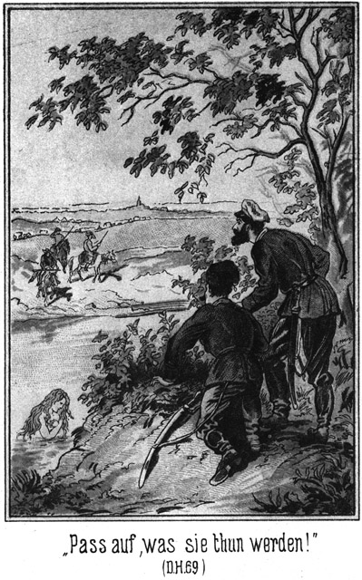»Paß auf, was sie thun werden!« lachte der Rittmeister.«
»Jedenfalls bleiben sie und lauschen!«
»Natürlich. Schau, jetzt sind sie da!«
Die drei Reiter erblickten jetzt die Schwimmerin. Sie stutzten einen Augenblick, schienen sich einige Worte zu sagen und zogen sich dann zurück.
»Ah, die kennen das sechste Gebot!« höhnte der Lieutenant.
»Ja. Aber Sie haben auch uns gesehen. Schau, was der Dicke wollen mag?«
»Er winkt nach uns herüber.«
»Ich glaube gar, er meint, daß auch wir uns entfernen sollen!«
»Natürlich! Das ist ja aus der Art und Weise, wie er winkt, zu ersehen.«
»Laß ihn winken so lange er will!«
»Jetzt droht er gar mit der Faust!«
»Mag er!«
Der kleine dicke Reiter jenseits des Flusses hob wirklich die Faust drohend empor. Dann winkte er abermals, und als auch das keinen Erfolg hatte, sah man, daß er aus dem Sattel stieg und einen langen Gegenstand von dem letzteren losschnallte.
»Donnerwetter! Eine Flinte!« sagte der Rittmeister.
»Er wird doch nicht schießen wollen!«
»Er soll es wagen!«
Aber der fremde Reiter schien das für gar kein Wagniß zu halten. Er winkte noch einmal sehr energisch. Als das nichts half, legte er das Gewehr an! der Schuß krachte. Der Rittmeister fuhr zusammen, sich nach dem Kopfe greifend. Er hatte dort einen Ruck verspürt.
*
»Bei Gott, der Hund schießt!« rief der Lieutenant. »Bist Du verwundet?«
»Getroffen wurde ich irgendwo.«
»Ah, hier in den Kalpak. Die Agraffe mit der Feder ist verschwunden.«
Da ertönte es in sehr gebrochenem Russisch von drüben herüber:
»Der erste Schuß in die Mütze zur Warnung, der zweite aber sicher in den Kopf.«
»Hund, wer bist Du?« brüllte der Rittmeister voller Wuth hinüber.
»Sam Barth ist mein Name. Lauf, mein Junge, sonst treffe ich Dich!«
Er erhob das Gewehr zum zweiten Male.
»Komm, komm!« warnte der Lieutenant. »Er schießt ganz gewiß!«
Er zog den Rittmeister schleunigst mit sich fort, hin zu den Pferden. Während sie diese bestiegen und schnell davonritten, polterte der Genannte:
»Auf mich zu schießen. Nicht blind, sondern mit einer wirklichen Kugel. Hast Du den Namen auch verstanden?«
»Ja.«
»Der Kerl war also noch frech genug, uns zu sagen, wie er heißt!«
»Wenn er nicht einen falschen Namen gesagt hat.«
»Selbst in diesem Falle ist er leicht zu finden. So dick wie er, giebt es hier Niemand, meine zukünftigen Schwiegereltern ausgenommen.«
»Der Sprache nach war er kein Russe.«
»Nein. Sam Barth. Barth ist deutsch.«
»Sam aber Englisch oder Amerikanisch. Die beiden Anderen waren echte Yankeegestalten. Reiten wir, um über die Furth zu kommen. Dann können wir diese drei Gesellen sofort empfangen und arretiren.«
Sie drückten den Pferden die Sporen in die Weichen und jagten der Stadt entgegen.
Karparla war natürlich sehr erschrocken, als sie den Schuß hörte und aus demselben erkannte, daß sie sich nicht allein an dieser einsamen Stelle befinde. Dann, als der Dicke seine Drohung herüber rief, hörte sie aus seinen Worten, daß sie vom linken Ufer aus belauscht worden sei. Und wer dieser freche Mensch gewesen war, das hörte sie aus dem Rufe des Rittmeisters, dessen Stimme sie sofort erkannte.
Sie war gleich bei dem Schusse so weit untergetaucht, daß nur der Kopf aus dem Wasser hervorblickte. Jetzt war es ihr, als ob sie Pferdegetrappel höre, welches sich entfernte. Und vom rechten Ufer herunter ertönte dieselbe Stimme, welche sie vorher gehört hatte:
»Töchterchen, wir haben uns so gestellt, daß wir Dich nicht sehen können. Hörst Du uns?«
»Ja,« rief sie beherzt zurück.
»Steig in Gottes Namen aus. Sie sind fort.«
»Wir sind drei fremde Männer und wollen unsere Pferde tränken. Wir sitzen mit dem Rücken gegen den Fluß und werden uns nicht umdrehen, bis Du es uns erlaubst.«
»Ist das wahr?«
»Wir geben Dir unser Ehrenwort!«
Der Fluß war nicht sehr breit, so daß sich die Sprechenden sehr leicht verstehen konnten.
»So haltet Wort!«
Im Vertrauen auf die Ehrlichkeit dieser Fremden, stieg sie an das Ufer. Ein schneller Blick nach hinüber überzeugte sie, daß der Mann die Wahrheit gesagt hatte. Die drei Männer saßen unbeweglich, mit dem Rücken dem diesseitigen Ufer zugewandt. Sie kleidete sich schnell an. Dann rief sie:
»Jetzt könnt Ihr Euch umdrehen.«
Die Fremden thaten es.
»Wer seid Ihr?« fragte sie, nun auch ihren Schmuck mit mehr Muße anlegend.
»Ich bin ein Deutscher, meine Kameraden aber sind Amerikaner.«
»Habt Ihr Denjenigen gesehen, welcher mich belauschte?«
»Ja; ich habe ihm dafür eine Kugel durch die Mütze geschossen. Es waren Mehrere. Zwei Offiziere und ein Diener.«
»Hat auch der Diener mich gesehen?«
»Nein. Er war so weit zurückgeblieben, daß dies unmöglich war.«
»Der Brave! Aber Euch wird es schlimm ergehen.«
»Warum?«
»Der, nach welchem Du geschossen hast, ist der Sohn des Kreishauptmannes.«
»Welch ein vornehmer Kerl!«
»Ja. Er wird davon geritten sein, um Euch sofort arretiren zu lassen.«
»Wunderschön!«
»Spotte nicht! Er ist mächtig hier. Man wird Euch wegen Mordes anklagen.«
»Wegen des Mordes einer Mütze.«
»Du hast auf ihn geschossen; das ist genug. Ich aber will Euch retten.«
»Du? Wieso?«
»Tränkt Eure Pferde nicht. Ihr dürft keine Zeit verlieren. Reitet im Galopp nach dem Jahrmarktslager und fragt nach dem Fürsten der Tungusen, welcher Bula heißt. Kommt Ihr dort vor den Offizieren an, so wird er Euch nicht ausliefern.«
»Kennt er Dich denn?«
»Ich bin seine Tochter.«
»Ich danke Dir! Du meinst es gut, aber wir fürchten uns nicht vor einem Kosaken.«
»Ihr sollt Euch aber fürchten, mir zu Liebe!«
»Dir zu Liebe? Alle Wetter, ja. Dir zu Liebe wollen wir uns gern einmal fürchten.«
»So reitet also schnell! Ich komme gleich nach. Ich will versuchen, die Offiziere zu überholen.«
»Gut, mein Töchterchen. Auf Wiedersehen!«
Die Drei stiegen auf und trabten davon. Karparla war jetzt auch fertig. Sie setzte sich auf und jagte im Carrière dem diesseitigen Ufer entlang, der Stadt entgegen. Ihr Pferd war weit besser als diejenigen der Offiziere. Aus diesem Grunde holte sie die Letzteren an der Furth ein. Sie trieb ihr Pferd in einem weiten Sprunge in das Wasser.
»Plutja, Lejdak – Schuft, Schurke!« rief sie dem Rittmeister zu, an ihm vorüberschießend, so daß seine ganze Gestalt mit Wasser bespritzt wurde.
Er antwortete nicht, hieb aber sein Pferd auf das Aeußerste an, ohne sie jedoch einholen zu können.
Als sie das Lager erreichte, waren die Drei noch nicht da. Ihre Eltern waren bereits wieder von dem Isprawnik zurückgekehrt und befanden sich in ihrer großen, sehr geräumigen Jurte. Sie stieg gar nicht ab, rief ihnen nur einige erläuternde Worte zu und eilte weiter, den Erwarteten entgegen.
Sie fand dieselben schon nach wenigen Secunden, sich nach dem Zelte des Fürsten erkundigend. Sie brachte sie zu demselben, noch ehe der Rittmeister eingetroffen war.
»Steigt schnell ab und geht hinein!« gebot sie.
Selbst auch abspringend, führte sie die Drei in das Innere des Zeltes. Kaum war dies geschehen, so kamen auch die Offiziere angeritten. Sie warfen sich von den Pferden und betraten das Zelt. Der Rittmeister vergaß, zu grüßen. Er erblickte den Dicken und sagte:
»Da ist er! Mensch, Du bist mein Gefangener!«
»Oder Du der meinige!« lachte Sam in seinem gebrochenen Russisch.
Wie er das erlernt hatte, wird man später hören.
»Ich der Deinige?« rief der Offizier erstaunt.
»Ja, denn ich habe Dich und Du hast mich. Oder vielmehr, es hat noch Keiner den Anderen.«
»Keine Frechheit! Ich dulde sie nicht! Ich bin der Sohn des Kreishauptmannes von Platowa!«
»Und ich der Sohn des Knopfmachers von Herlasgrün!«
»Ich bin der Befehlshaber der hiesigen Militärmacht!«
»Und ich bin der Oberstcommandirende dieser beiden Armee-Corps!«
Er deutete dabei auf Jim und Tim, welche zu seiner Rechten und Linken standen.
»Du scheinst wahnsinnig zu sein!«
»Und Du nicht recht gescheidt! Ich befinde mich unter dem Schutze eines tungusischen Fürsten!«
»Aber auf russischem Boden! Er muß Dich an uns ausliefern.«
Da sagte Karparla in festem Tone:
»Er ist mein Gast und wird nicht ausgeliefert.«
»So hole ich meine Kosaken!«
»Hole sie. Es sind fünfmal mehr Tungusen bei uns. Sie werden es nicht dulden, daß Du ihre Prinzessen entehrst und deren Beschützer beschimpfest und arretirst.«
»So wird es zum Kampfe kommen!«
»Jawohl! Waffe gegen Waffe!«
»Bedenke, was Du thust!«
»Hast Du bedacht, was Du thatest?«
»Du bist meine Braut und hast mir zu gehorchen.«
Der Fürst und die Fürstin saßen auf ihren Polstern. Sie befanden sich in einer ziemlich heiklen Lage und hielten es für das Beste, weder für ihre Tochter, noch für den Offizier Partei zu nehmen. Das lag so in ihrem friedlichen Character und langsamen Naturell.
Sam bemerkte das gar wohl. Er kannte die einschlagenden Verhältnisse gar nicht, aber sein Scharfblick brachte ihn auf das Alleinrichtige. Er fürchtete den Kosaken nicht und hatte auch nicht die Absicht, die braven Tungusen in Schaden zu bringen. Darum sagte er jetzt:
»Zankt Euch nicht, Kinder. Wir werden freiwillig mit zu dem Kreishauptmann reiten.«
»Freiwillig?« meinte der Rittmeister. »Ihr müßt. Ihr seid meine Gefangenen. Ich werde Euch binden lassen und in das Gefängniß bringen.«
»Nein,« lachte Sam; »das wirst Du bleiben lassen, mein Söhnchen.«
»Wer will es mir verbieten?«
»Wir Drei. Wir würden einen Jeden erschießen, welcher es wagen sollte, uns anzurühren. Aber wir werden jetzt unsere Pferde besteigen und freiwillig dem Isprawnik, Deinem Vater, unseren Besuch machen.«
»Das klingt lustig!«
»Es ist auch lustig. Laß es ja dabei, sonst wird es Ernst! Siehe her!«
Er zog zwei Revolver hervor, hielt sie drohend vor sich hin und schritt dem Zeltausgange zu. Jim und Tim folgten, ebenso bewaffnet. Die Offiziere wichen zur Seite.
»Ich verlasse Euch nicht. Ich reite mit Euch,« sagte Karparla und stieg in den Sattel.
Es hatte sich vor dem Zelte eine große Menge Volkes versammelt, besonders Tungusen vom Stamme des Fürsten. Karparla erklärte ihnen mit lauter Stimme:
»Hört, Ihr Krieger! Diese beiden Offiziere haben sich nicht gescheut, mich zu belauschen, als ich vorhin im Flusse badete. Diese wackeren Fremden kamen dazu und haben sie vertrieben. Dafür sollen sie in das Gefängniß geworfen werden. Duldet Ihr diese Beschimpfung Eurer Herrscherin und ihrer Beschützer?«
»Nein, nein!« erklang es rund umher. »Bestraft die Kosaken und belohnt die Fremden!«
Den Offizieren, welche sich inmitten der Menge befanden, wurde es ziemlich schwül. Karparla wollte jetzt keine Gewaltthätigkeit. Darum mahnte sie:
»Ich werde diese drei Freunde der Tungusen zum Kreishauptmann begleiten. Wartet meine Rückkehr ab. Dann wird sich finden, was zu thun ist.«
Die gehorsamen Leute machten Platz, so daß die sechs Personen das Zeltlager verlassen konnten. An ein formelles Arretiren der drei Fremden dachten die Offiziere unter diesen Umständen nun allerdings nicht mehr.
Es ging im Galopp der Stadt entgegen. Vor dem Regierungsgebäude wurde abgestiegen. Der Rittmeister flüsterte dem Lieutenant einige Worte zu und dieser ging, um die Ausgänge des Gebäudes von seinen Kosaken besetzen zu lassen.
Karparla mußte mit ihren drei Schützlingen im Vorzimmer warten. Der Rittmeister ging allein zu seinem Vater, um diesem vorher Bericht zu erstatten. Bald trat er unter die Thür, um die Anderen herein zu rufen.
»Ich bleibe hier,« sagte das Mädchen. »Ich habe mit Euch nichts zu schaffen. Ich will nur erfahren, was Ihr mit diesen Männern thun werdet.«
»Sie werden eingesteckt und nach Irkutsk transportirt, wo man ihnen zeigen wird, was es heißt, auf einen Offizier zu schießen.«
»Das wird sich finden, mein Liebling!« lachte Sam, indem er ihn zur Seite schob, um eintreten zu können.
Der gestrenge Herr Kreisrichter empfing die drei Delinquenten mit seinem finstersten Blicke.
»Du hast auf diesen Offizier geschossen?« herrschte er Sam an.
»Nein.«
»Leugne nicht!«
»Ich sage die Wahrheit!«
»Er behauptet es!«
»So lügt er.«
»Mensch, wahre Deine Zunge, sonst lasse ich Dir die Knute geben.«
Da stellte sich Sam in Positur und antwortete:
»Du? Mir die Knute? Mir? Du wärst mir der richtige Kerl dazu. Wenn Du es noch einmal wagst, die Knute zu erwähnen, so haue ich Dir ein Dutzend Ohrfeigen herunter, daß Du denken sollst, unter Deinem alten Schädel ritten zehn Millionen Kirgisen spazieren! Ich weiß ganz genau, was des Kaisers Rock bedeutet; ich würde nie mich an einem braven Offizier vergreifen, aber kann ich einen Menschen, der sich hinter die Büsche steckt, um ein badendes Mädchen zu belauschen, für einen Offizier halten? Ein Flegel ist er, ein neugieriger Affe und unverschämter Bengel! Wenn Du das nicht zugiebst, so mag der Generalgouverneur von Sibirien und der Zaar darüber entscheiden!«
»Du hast hier zu schwei–«
»Halte das Maul!« brüllte Sam ihn nun erst recht an. »Jetzt rede ich, und dann kommst erst Du daran! Du bist der Isprawnik von Platowa, ich aber bin Samuel Barth aus Herlasgrün! Kennst Du das?«
»Nein,« entfuhr es dem Eingeschüchterten.
»So rede auch nicht drein, wenn ich Dir die Ehre gebe, mit Dir zu reden! Wenn Du Deinem famosen Sohne helfen willst, so bist Du noch famoser als er selbst, Du – Du – Du Isprawnikel Du! Du scheinst überhaupt gar nicht zu wissen, daß man sich erst erkundigt, was für Leute man vor sich hat. Der heilige Zaar in Petersburg wird sich freuen, wenn er von mir erfährt, was es hier für Hornissen giebt. Da hast Du meinen Paß. Siehe Dir ihn an! Und kannst Du nicht lesen, so will ich Dir das ABC mit Kreide auf den Stuhl schreiben; wenn Du Dich drauf setzest, so hast Du es an den Hosen kleben und es wird dann gehen!«
Er zog seine Brieftasche hervor, nahm den Paß heraus und legte denselben dem Isprawnik vor. Er hatte seine Rede so schnell und in einem Kauderwelsch vorgebracht, daß der Beamte wohl nicht viel mehr als die Hälfte der Höflichkeiten, welche sie enthielt, verstand. Es wäre dem guten Sam aber ebenso lieb gewesen, wenn Alles verstanden worden wäre. Furcht kannte er ja gar nicht.
Der Isprawnik öffnete den Paß, las ihn langsam durch, rieb sich die Augen und begann wieder von vorn. Sein Gesicht wurde immer länger. Auf einen Wink Sam's legten auch Jim und Tim ihre Legitimationen vor, welche ebenfalls von dem Beamten geprüft wurden.
Diesem Letzteren begann es zu schwitzen. Sein Sohn bemerkte seinen Zustand, trat hinzu und nahm auch Einsicht in die Pässe. Da meinte Sam:
»Diese Pässe sind eigentlich nicht ausgestellt, um von Leuten geprüft zu werden, welche solche Jugendstreiche begehen. Ich befinde mich aber gegenwärtig in guter Stimmung und will es erlauben, daß vier Augen hinein sehen, anstatt nur zwei.«
Weder Vater noch Sohn gaben eine Antwort. Der Erstere legte die Documente sorgfältig wieder zusammen und stellte sie den Eigenthümern wieder zurück.
»Und nun?« fragte Sam.
»Ihr seid frei!«
»Frei? Das sind wir bis jetzt gewesen. Ich hoffe, eine andere Antwort zu erhalten.«
»Was geschehen ist, beruht auf Mißverständnissen –«
»Oho! Ich habe auf die Mütze gezielt und sie auch getroffen; das ist kein Mißverständniß. Dein Sohn hat ein badendes Mädchen sehen wollen und es auch gesehen; ist da etwa ein Mißverständniß vorhanden?«
»Du hast kein Recht zu schießen!«
»Und er kein Recht, zu lauschen. Dennoch hat er mich arretiren wollen. Ich hoffe, daß er sich entschuldigt, sonst melde ich es dem Gouvernement, was mich veranlaßt hat, eine Kugel nach einer Mütze zu senden.
Sam stand erwartungsvoll da. Vater und Sohn blickten einander an. Da drehte sich der Letztere mit einem gewaltsamen Ruck zu dem Dicken um und sagte:
»Ich gebe zu, daß ich zu schnell handelte.«
»Und? Weiter –«
»Und bitte um Entschuldigung!«
»So ist es recht, mein Söhnchen! Wer den Muth hat, Fehler zu begehen, muß auch den Muth haben, sie einzugestehen. Hoffentlich giebt es keine ferneren Mißverständnisse. Eigentlich hatten wir die Absicht, hier im Gebäude um Gastfreundschaft zu bitten –«
»Gern, sehr gern sind wir bereit!« beeilte sich der Kreishauptmann zu bemerken.
»Danke! Wir sind nun bereits Gäste des Tungusenfürsten und werden ihm treu bleiben. Leb wohl, Väterchen! Leb wohl, Brüderchen! Wir wollen den Tag nicht vergessen, an welchem wir uns so schön kennen gelernt haben!«
Er trat mit Jim und Tim ab.
Die Zurückbleibenden blieben noch eine ganze Weile stumm. Dann brach der Vater los:
»Welch eine Blamage!«
»Oder vielmehr, welch ein Aerger!«
»Nein, es ist Blamage. Und nur Du bist daran schuld.«
»Ich? Nur ganz allein Nummer Zehn ist schuld. Wäre ich nicht mit ihm ausgeritten, so – so – aber er soll seine Strafe finden. Aber konnte man das diesen drei Kerls ansehen!«
»Ihrem Aeußeren war nichts davon zu entnehmen. Eigenhändig vom Zaaren unterzeichnet, ebenso von dem Großfürsten-Thronfolger als obersten Hetman der sibirischen Kosaken.«
»Und ihnen auf Verlangen sogar militärische Hilfe zur Verfügung stellen!« »Ja, wenn es diesem dicken Barth beliebte, Dich noch heute mit Deinen Kosaken in die Sümpfe zu schicken –«
»So müßte ich gehorchen!«
»Also vorsichtiger in Zukunft sein! Es ist ja bei solchem Verhalten wohl gar möglich, daß Du die reiche, schöne Braut verlierst. Und Du kennst unsere finanziellen Calamitäten.«
»Pah! Die verlieren! Dazu sind ihre Alten zu gutmüthig und pflichtgetreu. Die werden ihr Wort niemals brechen.« –
Es war eine Art Triumphzug, als Karparla mit ihren Gästen zurückkehrte. Als sie ihren Eltern erzählte, daß sich diese selbst vertheidigt hätten, ohne eines anderen Schutzes zu bedürfen, wuchs die Achtung des dicken Fürstenpaares bis in das Unendliche.
Der Tungusenherrscher reichte den Dreien seine Hände dar und sagte:
»Erst jetzt ist es mir vergönnt, Euch bei mir willkommen zu heißen. Vorher war keine Zeit dazu. Sagt mir, bei welchem Namen ich Euch nennen soll!«
»Ich heiße Sam Barth. Dieser ist Jim Snaker und Jener Tim Snaker.«
»Ich – Dieser – Jener! Samahrt – Jimscheker – Timscheker! Das ist zu schwer für meine alte Zunge, meine lieben Brüderchens. Erlaubt, daß ich Euch mit bekannteren Worten nenne, wie es mir beliebt!«
»Thue es!«
»So wird Dein Name Tjikwa sein.«
»Sapperment! Das heißt Kürbis, wohl weil ich so ein rundes Bäuchlein habe.«
»Und die beiden anderen Brüderchen werde ich Planka und Rogatjina nennen.«
»Was heißt das?« fragte Jim.
»Latte und Stange,« erklärte Sam.
»Da bin ich nicht einverstanden!«
»Ich auch nicht,« stimmte Tim bei.
In Folge dessen wurde es dem dicken Tungusen klar gemacht, daß er die Familiennamen weglassen könne und nur die drei einsylbigen Worte Sam, Jim und Tim zu merken habe. Das leuchtete ihm mehr ein. Von Familiennamen ist bei jenen Völkern nicht die Rede.
Jetzt bewirthete der Fürst seine Gäste, wobei die schöne Tochter dieselben bediente. Sam ließ das Auge nur selten von ihr und flüsterte den beiden langen Brüdern wiederholt zu:
»Beinahe noch schöner als meine Auguste!«
Dann wurde ausgegangen, um den Markt zu besehen und Einkäufe zu machen. Dabei stieß Jim Sam plötzlich so kräftig an, daß der Dicke beinahe auf die Erde gekollert wäre.
»Was giebt es denn?«
»Bill Newton!
»Unsinn!«
»Freilich, er war es.«
»Wie sollte der hierher nach Sibirien kommen!«
»Wer kann das sagen. Komm schnell!«
Er zog Sam zwischen mehreren Zelten hindurch, blickte nach allen Seiten, konnte die betreffende Persönlichkeit aber nicht wieder entdecken.
»Es hat Jemand dem früheren Derwisch ähnlich gesehen, das ist Alles,« meinte Sam.
»Und ich möchte fast darauf schwören, daß er es gewesen ist. Er hatte das ganze Gesicht voller Bart; das war der einzige Unterschied.«
Und er hatte Recht. Bill Newton war es gewesen. Als dieser in die Expedition des Kreishauptmannes getreten war, hatte dieser ihn ebenso ausgefragt wie die beiden Unterbeamten vorher:
»Was willst Du?«
»Meinen Paß vorzeigen.«
Bei diesen Worten legte er ihn hin. Der Beamte nahm das Document, legte es, nachdem er es durchgesehen hatte, zur Seite und sagte:
»Zwanzig Rubel!«
»Herr, ich habe bereits zweimal bezahlt!«
»Mir nicht. Zahlst Du nicht, so erhältst Du den Paß nicht zurück.«
Er bezahlte also mit stillem Ingrimme.
»Willst Du noch Etwas?«
»Darf ich im Wirthshause wohnen?«
»Ja. Kostet acht Rubel.«
»Bei dem Wirthe doch?«
»Bei mir. Der Wirth mag für sich selbst verlangen. Ich bin sein Diener nicht.«
»Noch ein Anliegen?« fragte der Kreishauptmann, als die acht Rubel auch auf dem Tische lagen.
»Ich möchte mir eine Anzahl Zobeljäger engagiren. Darf ich?«
»Kostet sechzehn Rubel.«
»Ein- für allemal?«
»Ja. Ich nehme es nicht in Raten.«
Er bezahlte auch diese Summe und erhielt dann den Paß zurück. Da fragte er:
»Herr, bedarf es eines Contractes, wenn ich mir die Pelzjäger engagire?«
»Nein.«
»Ich denke, Du hast ihn zu unterschreiben!«
»Nein. Eure Sache ist Eure Sache, aber nicht die meinige.«
»So hätte ich wohl auch ganz gut im Gasthofe wohnen können, ohne Dich zu belästigen?«
»Ja.«
»Und habe doch dreimal bezahlen müssen! Ich war am Ende auch nicht gezwungen, meinen Paß vorzuzeigen?«
»Auch nicht. Ich habe nicht die Zeit, um mich um die Reiseangelegenheiten aller Welt zu bekümmern.«
»Und doch habe ich an Dich, den Gemeindeältesten und seinen Beisitzer nun in Summa siebenundsiebzig Rubel bezahlt, ohne das Geringste dafür zu erhalten!«
»Ja, aber Du mußt Dich trösten. Die Siebenundsiebzig ist stets eine unglückliche Zahl.«
»Der Wirth hat mich zu Dir gewiesen. Das war gar nicht nöthig.«
»Das war sehr nöthig. Meinst Du, daß ich von der Luft leben kann! Wenn er Niemand zu mir sendet, so verdiene ich nichts – er aber auch nicht! Verstanden! Damit Du aber das Geld nicht allzu sehr bereust, will ich Dir das Blanket eines Contractes ausfertigen. Es hat doch vielleicht mehr Gewicht, wenn ich mich mit unterzeichne.«
»Vielleicht!« Der Derwisch hätte diesen Mann am Liebsten beohrfeigen können.
Ehe der Kreishauptmann den Bogen fand und unterzeichnete, kam dessen Sohn aus einem inneren Gemache zu ihm herein und holte nachher, als der Derwisch ging, die fürstliche Tunjusenfamilie aus dem Vorzimmer herbei, wie bereits erwähnt worden ist.
Der Derwisch, oder vielmehr Peter Lomonow, wie er sich jetzt nannte, begab sich zunächst nach dem Gasthofe, wo er aß und dem Wirthe einige Grobheiten dafür sagte, daß dieser ihn zu dem Kreishauptmann geschickt hatte.
Sodann begab er sich nach dem Markte, wo er so glücklich war, den berühmten Jäger Nummer Fünf sehr bald anzutreffen. Dieser war, da Lomonow sehr gute Preise bot, bereit, aus den Vorschlag einzugehen und machte sich sogleich daran, Gefährten zu einer Gesellschaft zu vereinigen, was ihm bei dem Rufe, in welchem er stand, in kürzester Frist gelang. Nun waren nur noch die nöthigen Einkäufe zu machen.
Während dies geschah, spielte sich die Scene mit Sam, Jim und Tim vor dem Zelte des Tungusen ab. Da sich dort viele Neugierige versammelten, wurde Lomonow auch mit dorthin gezogen. Zu seinem Erstaunen oder vielmehr gradezu zu seinem Entsetzen erkannte er die drei Jäger, denen er in dem Thale des Todes mit so großer Mühe und noch größerem Glücke entgangen war. Er glaubte natürlich nicht anders, als daß sie von jenem Tage an auf seiner Spur geblieben seien, und beschloß die schleunigste Abreise.
Die Einkäufe waren gemacht und verpackt. Ein gutes Geldgeschenk machte den Jägern die schnelle Abreise plausibel, und so wurde aufgebrochen. Grad als Lomonow sich nach dem Versammlungsplatz begeben wollte, wurde er von Jim gesehen, den er glücklicher Weise selbst auch erblickt hatte. Er wand sich schlau zwischen mehreren Zelten hindurch und entkam, herzlichst froh, Platowa, wo er hatte länger verweilen wollen, so rasch hinter sich zu haben. Jetzt senkte sich die Dämmerung hernieder, und der Abend brach herein. In dem Tanzsaale der Schankwirthschaft wurden die wenigen Lampen angebrannt, denn es verstand sich ganz von selbst, daß es heut am ersten Tage des großen Marktes einen Ball gab.
Im hintern Theile des Saales wurde durch eine bretterne Scheidewand ein separater Raum abgeschlossen, welcher für die »Herrschaften« bestimmt war. Es herrschte der Gebrauch, daß diese Honorationen jeden zehnten Tanz für sich allein hatten.
Kaum hatte eine alte Trompete das Zeichen gegeben, so strömten die Tanzlustigen in Menge herbei. Der Ball begann. Die ersten »Herrschaftstänze« fielen aus, weil die »Herrschaften« noch nicht eingetroffen waren. Bald aber stellten sie sich ein.
Den obersten Platz nahm natürlich der Kreishauptmann mit seinem Sohne ein; dann folgten die anderen Offiziere, der Pope und die Unteroffiziere. Nach nicht gar langer Zeit gesellten sich angesehene Häuptlinge der umwohnenden Völker hinzu, und endlich kam auch der Vornehmste derselben, Fürst Bula mit seiner Frau und seiner Tochter.
Sein Erscheinen erregte allgemeines Aufsehen, nicht allein der Schönheit seiner Tochter wegen, sondern weil Sam und Jim und Tim sich bei ihm befanden. Sie waren die Helden des Tages geworden. Daß Sam nach dem Rittmeister geschossen hatte und doch die Freiheit genoß, verlieh ihm in den Augen dieser einfachen Leute ein außerordentliches Relief.
Der Rittmeister, sein Vater und die Offiziere erhoben sich, um Karparla Platz zu machen. Als sie sich setzen wollten, machten sie die verblüfftesten Gesichter, welche man sich nur denken kann. Ihre Sitze waren nicht mehr leer. Sam saß auf des Kreishauptmanns, Jim auf des Rittmeisters und Tim auf des Oberlieutenants Platz. Und dabei machten sie Mienen, als ob dies so ganz und gar selbstverständlich sei.
»Unverschämt!« brummte der Jsprawnik.
Sein Sohn stimmte bei. Sam hörte es ziemlich deutlich, nickte dem Ersteren freundlich zu und sagte gelassen:
»Nenne es nicht unverschämt, daß man uns keine Kissen hergelegt hat. Wir verzichten gern darauf und sind zufrieden, daß Du uns unsere Plätze bis zu unserm Kommen bewahrt hast. Ich wünsche, daß Karparla sich zwischen mich und Jim und Kalyna, die Fürstin, sich zwischen mich und Tim setzt. Mein Freund Bula, der tapfere Fürst der Tungusen, wird dann zwischen Jim und Dir sitzen, liebes Väterchen.«
Der einstige Knopfmachergeselle machte dabei ein Gesicht, als ob er in seinem ganzen Leben nur Hofrangslisten studiert habe. Innerlich thaten sich die drei Jäger freilich eine außerordentliche Güte.
Zu essen gab es nichts, zu trinken nur Thee, Schnaps, Mehltrank und saure Milch. Die Musik wurde erzeugt von einer Trompete, einer alten Guittarre mit nur drei Seiten und einer Posaune, deren einst so grade und einfache Züge jetzt verwickelt waren wie ein Kalbsgekröse. Es war, wie der Dichter sagt, ein Concert, welches Steine erweichen und Menschen rasend machen kann.
Den Vorzug hatten nationale Tänze, wie Balalaika und ähnliche. Trotz des schlechten Getränkes und der noch schlechteren Musik begann sich bald eine ausnehmende Fröhlichkeit zu entwickeln, selbst auf dem Herrschaftsplatze.
Der Rittmeister war finster und wortkarg. Er erhielt von Karparla nicht einen einzigen Blick. Da, während eines Herrentanzes, stand er auf und trat zu ihr, um sie zu engagiren. Sie schüttelte den Kopf, ohne ihn nur anzusehen.
»Du tanzest nicht?« fragte er.
»Nein.«
»Heut gar nicht?«
»Weiß noch nicht.«
»Oder nur mit mir nicht?«
»Niemals!«
Er wurde bleich wie der Tod. Aller Blicke hatten an ihm gehangen; er war öffentlich blamirt.
»Wohl mit der Nummer Zehn etwa!« zischelte er ihr ergrimmt in das Ohr.
»Vielleicht.«
Natürlich nahm er diese Antwort des schönen Mädchens nicht für Ernst. Es schien ja eine Unmöglichkeit zu sein, daß die Tochter eines reichen Anführers mit einem armen Kosaken, der noch dazu ein Verbannter war, tanzen könne. Dennoch warf er einen wüthenden Blick über die Schranken hinweg, dorthin, wo im niedern Range der Kosak an der Mauer lehnte und dem Tanze zuzusehen schien, heimlich aber mit dem Blicke an Karparla hing.
Später verkündigte ein Trompetenstoß wieder einen Herrschaftstanz. Da stand Karparla auf, ging hinaus in den vorderen Raum und reichte dem Kosaken die Hand.
»Komm, tanze mit mir!«
Er fuhr bei diesen Worten zusammen, als ob ihn ein Hieb getroffen habe. Aber rasch richtete er sich hoch auf. Seine Augen leuchteten, und seine Wangen glühten. Er hatte gar wohl, bemerkt, daß der Rittmeister von ihr abgewiesen worden war. Jetzt kam sie, die Tänzerin zu ihm! Er machte sich auch augenblicklich die möglichen Folgen dieses ihres Schrittes klar; doch kümmerten ihn dieselben in diesem Augenblicke sehr wenig. Er legte ihr kleines, weißes Händchen auf seinen Arm und führte sie in die Mitte des Saales.
Ein allgemeines »Ah!« des Staunens war erschollen. Jetzt richteten sich aller Augen auf den Rittmeister. Die Farbe seines Gesichtes glich derjenigen einer getünchten Wand.
Die Musik begann. Nur dieses eine Paar tanzte. Die Untergeordneten durften nicht theilnehmen, und die »Herrschaften« wollten sich nicht blamiren, neben einem Deportirten sich zu drehen. Dieser aber schien an nichts zu denken, als an seine Tänzerin. Den Arm um ihre herrliche Taille geschlungen, dirigirte er sie in leichten, zierlichen Windungen hin und zurück. Sie gab sich ihm hin, den schönen Kopf leise an seine Schulter gelehnt. Ihre Augen waren halb geschlossen; ihr Gesicht hatte einen innigen Ausdruck angenommen. Zwischen den leise geöffneten Lippen glänzten die Zähnchen küßlich hervor. Wegen der Kürze und Enge des Zobelröckchens konnte man den rythmischen Bewegungen ihres Körpers in allen seinen Theilen verfolgen. Die prächtige Tungusin war ein Bild der Reinheit, Unberührtheit und doch wollustathmend zugleich.
Ihre Eltern schienen den Schritt, den sie gethan hatte, nicht übel zu deuten, denn sie blickten dem Paare fröhlich und unbefangen zu.
Jetzt war der Tanz zu Ende.
»Komm!« sagte Karparla.
Sie wollte ihn dorthin zurückführen, wo er vorhin gestanden hatte.
»Nein,« flüsterte er, »Du bist die Dame. Ich führe Dich.«
»Darfst Du denn hinauf?«
»Ich will sehen, wer es mir verbieten möchte. Ich will nicht oben bleiben, sondern nur Dich zurückbringen. Wer da mich beleidigen wollte, würde auch Dich beleidigen.«
Sie waren während dieser leisen Reden langsam bis an die Scheidewand gekommen und traten nun in den abgegrenzten Raum. Da schnellte der Rittmeister von seinem Sitze empor.
Hatten seine Augen vorher die Tanzenden mit glühendem Blicke verfolgt, so sprühten sie jetzt förmlich Feuer. Er trat auf die Beiden zu. Der Kosak that, als ob er ihn gar nicht bemerke; er aber stellte sich ihm in den Weg und rief so laut, daß seine Worte von allen im Saale Anwesenden deutlich verstanden werden konnten:
»Du wagst es, hierher zu kommen, Hund! Was willst Du da?«
Der Angeredete antwortete furchtlos und in ruhigem Tone:
»Meine Dame an ihren Platz führen. Dann aber gehe ich wieder.«
» Deine Dame? Welch eine unerhörte Frechheit. Wie kann die Prinzessin die Dame eines hundsgemeinen Verbrechers sein! Sie ist meine Verlobte. Packe Dich! Sonst werfe ich Dich hinaus und lasse Dir die Knute geben und Dich dann krumm schließen.«
Er griff nach der Knute, welche er wie gewöhnlich an seiner Seite hängen hatte.
Ein lautloses Schweigen herrschte rund umher. Alle waren gespannt, was der Kosak thun würde. Die meisten, natürlich gewöhnliche, Leute glaubten, er werde in tiefster Demuth und Unterwürfigkeit dem an ihn gerichteten Befehle Gehorsam leisten. Niemand sprach vor Erwartung ein Wort. Nur Einer, nämlich der dicke Sam, flüsterte Jim leise zu:
»Das ist stark. Wir werden uns des armen Teufels von Kosaken annehmen.«
Dieser Letztere, nämlich der Kosak, zeigte aber weder Demuth noch Unterwürfigkeit. Aufrecht vor dem Offizier stehend, antwortete er, allerdings in einem gemessen höflichen Tone:
»Ich werde thun, was die Dame mir befiehlt.«
Er blickte Karparla fragend an. Diese fürchtete ihrerseits den Rittmeister nicht. Sie glaubte, dem Kosaken eine Ehrenrettung schuldig zu sein. Darum legte sie ihren Arm fester in den seinigen und sagte:
»Du hast mit mir getanzt, darum mußt Du mich nach meinem Platze bringen. Dann kannst Du ja wieder zu Deinem Orte zurückkehren.«
»So komm!«
Er wollte mit ihr weiter. Da aber hielt der Rittmeister ihn beim Arme fest und rief:
»Halt! Laß sie augenblicklich los!«
»Du siehst, daß sie nicht will. Wenn sie wirklich Deine Verlobte ist, so solltest Du ihr Deine Achtung dadurch beweisen, daß Du sie nicht beleidigest indem Du mich blamirst.«
»Räudiger Hund! Gehorchst Du oder nicht!«
Er erhob den Arm mit der Knute. Der Kosak entgegnete furchtlos:
»Ich bin weder ein Hund noch ein hundsgemeiner Verbrecher, wie Du mich vorhin nanntest. Ich bin wegen eines politischen Verbrechens angeklagt und ohne Untersuchung nach Sibirien gesandt worden. Uebrigens bin ich ebenso wie Du Offizier und außerdem ein Edelmann. Ich traue Dir den Verstand zu, zu überlegen, ehe Du handelst. Ein Mann wie ich läßt sich nicht die Knute geben!«
»Nicht? Ah, Schurke, da hast Du sie!«
Er holte mit dem bereits erhobenen Arme zum Schlage aus, konnte aber den Hieb nicht ausführen. Sam war herbeigetreten, ergriff seinen Arm und sagte in freundlichem Tone:
»Beruhige Dich, Brüderchen! Wir sind hier, um uns zu freuen, nicht aber, um Zank zu hören.«
Der wüthende Rittmeister aber brüllte ihn an:
»Hast etwa Du mir Etwas zu befehlen?«
»Diese Frage will ich nicht beantworten; bisher habe ich nicht befohlen, sondern nur gebeten. Achte Deine Verlobte, indem Du es schweigend geschehen lässest, daß ihr Tänzer die Pflicht der Höflichkeit gegen sie erfüllt! Es kann Dir ganz gleichgiltig sein, daß er für einen Augenblick hierher kommt!«
»Nein, es ist mir nicht gleichgiltig! Er darf nicht dahin, wo ich bin!«
»Schön! So darf er aber dahin, wo ich bin. Ich bin der Gast des Fürsten, und ich will sehen, ob Du mich auch beleidigst, indem Du mir versagst, was ich thun will!«
Und sich zu dem Kosaken wendend, sagte er:
»Brüderchen, führe Deine Dame an ihren Platz und trinke mit mir ein Gläschen auf ihr Wohl. Dann kannst Du wieder gehen!«
Er trat an den Tisch, um die Gläser zu füllen; also mußte er den Arm des Offiziers wieder fahren lassen. Dieser Letztere benutzte diese Gelegenheit. Abermals zum Hiebe ausholend, rief er aus:
»Zurück! Fort mit Dir, Kerl! Sonst zeichne ich Dich für das ganze Leben!«
Sam wollte schnell wieder Einrede erheben; aber der Anblick, welchen der Kosak jetzt bot, ließ ihn nicht zu Worte kommen. Stolz wie ein Fürst richtete sich der Verbannte vor dem Rittmeister empor. Sein Blick funkelte wie derjenige eines Löwen, den ein armseliger Schakal anzukläffen wagt. Er sagte nur zwei Worte:
»Versuche es!«
Das rief er nicht laut und drohend; er sprach es beinahe freundlich aus; aber seine Stimme klang belegt und zitterte leicht.
»Jawohl thue ich es! Da!«
Bei diesen Worten wollte der Rittmeister zuschlagen. Bereits sauste die Knute durch die Luft. Da aber ließ der Verbannte Karparla's Arm, den er selbst jetzt noch festgehalten hatte, fahren und griff blitzschnell nach der Faust des Offiziers, in welcher dieser die Knute hielt. Ein Ruck, und er hatte sie ihm entrissen. Dann aber donnerte er ihm zu:
»So! Und nun laß es aber genug sein. Ich schone Dich nicht mehr! Setze Dich, und gieb Ruhe!«
Da fuhr der Offizier einen Schritt zurück. Er fand für den Augenblick gar keine Worte für seinen Grimm. Dann aber brüllte er pfeifend:
»Wie! Du gebietest mir Ruhe. Du entreißest mir die Peitsche! Her damit, daß ich Dich haue, bis die Fetzen fliegen!«
Er sprang auf den Verbannten ein; dieser aber trat schnell zur Seite und versetzte ihm eine schallende Ohrfeige, so kräftig, daß der Rittmeister an die Barriere flog und, diese umreißend, mit ihr in den Saal stürzte. Freilich raffte er sich sofort wieder auf, um den Gegner zu fassen; dieser aber packte ihn noch schneller, hob ihn empor und schleuderte ihn so gegen die Wand, daß er an derselben zusammen knickte und da für einige Secunden am Boden liegen blieb.
Das war so schnell geschehen, daß es keinem Menschen möglich gewesen war, es zu verhindern. Jetzt nun bot der Kosak der schönen Fürstentochter die Hand und sagte so ruhig, als ob gar nichts geschehen sei:
»Bitte, komm zu Deinem Platze!«
Er führte sie hin. Sie ließ sich nieder. Sie war blaß wie eine Leiche; sie konnte kein Wort sagen; auch alle Anderen schwiegen. Nur der Verbannte wandte sich zu Sam:
»Brüderchen, wolltest Du nicht ein Gläschen mit mir auf ihr Wohl trinken?«
»Ja, komm! Bei Gott, Du bist ein tüchtiger Kerl. Es ist mir ein Vergnügen, mit Dir anzustoßen! Komm!«
Er goß ein, war aber noch nicht fertig damit, so ertönte des Rittmeisters Stimme durch den Saal:
»Auf! Hin! Arretirt ihn! Augenblicklich!«
Er hatte sich wieder aufgerafft und bot ein Bild ungezügelten Grimmes. Sein Gesicht war dunkelroth, und die Adern seiner Stirn schienen zerspringe zu wollen. Natürlich war kein Mensch sitzen geblieben. Auch in dem Herrschaftsraume hatten Alle sich erhoben. Es waren zahlreiche Kosaken vorhanden, welche natürlich meinten, ihrem Vorgesetzten gehorchen zu müssen. Sie thaten dies freilich nicht gern, vielmehr gönnten Alle ihm die erhaltene Züchtigung von Herzen, aber doch befolgten sie sein Gebot, indem sie sich dem Verbannten näherten, freilich langsam und zögernd.
»Schnell, schnell, Ihr Canaillen!« donnerte der Rittmeister.
Da tippste Jim dem dicken Sam in die Seite und fragte ihn in seinem amerikanischen Englisch:
»Wollen wir das dulden? Wollen wir nicht vielleicht diesen Rittmeister ein wenig lynchen?«
»Ja, wir wollen ihn theeren oder federn!« fügte Tim hinzu.
»Wartet es ab!« antwortete Sam.
Er näherte sich dem Verbannten. Dieser erkannte die wohlwollende Absicht, machte aber eine abwehrende Handbewegung und sagte:
»Keine Unvorsichtigkeit, Brüderchen! Es giebt hier Gesetze, welche Du als Ausländer doppelt respectiren mußt.«
Das sah Sam freilich ein. Er flüsterte Jim zu:
»Wollen es einstweilen gehen lassen. Schleiche Dich immer vorher hinaus, um zu erfahren, wohin sie ihn schaffen.«
»Warum Du nicht?«
»Weil ich ein kleines Wörtchen mit diesem Herrn Offizier reden will.«
»Ein Wörtchen? Pah! Mit solchen Leuten redet man am Besten mit der Faust. Schreibe ihm mit den zehn Fingern das chinesische A B C in das Gesicht; das wird ihm bester bekommen, als alle Worte!«
Er ging, ohne daß seine Entfernung auffiel, da die Aufmerksamkeit Aller auf den Kosaken gerichtet war, welcher die Knute, die er seinem Vorgesetzten abgenommen hatte, von sich warf und seinen Kameraden entgegen ging.
»Hier habt Ihr mich,« sagte er. »Euch leiste ich keinen Widerstand.«
»Bindet ihn! Fesselt ihn! Legt ihn in Ketten!« gebot der Offizier.
Es war nur ein einziger Kosakenunteroffizier anwesend, welcher als nächster Vorgesetzter des Verbannten die Arretur vorzunehmen hatte. Dieser zupfte ganz verlegen an den silbernen Tressen seiner blauen Jacke und meinte zu dem Offizier:
»Binden? In Ketten legen?«
»Ja.«
»Womit, Väterchen? Hast Du einen Strick? Hast Du vielleicht Ketten?«
»Der Wirth hat Stricke!«
Da gebot der Unteroffizier einem seiner Leute:
»Lauf, Brüderchen, laß Dir vom Wirthe Stricke geben, etwa zwanzig oder dreißig! Wir wollen diesen Kerl fesseln, daß ihm das Blut aus allen Adern spritzt!«
Zu dem Arrestanten aber sagte er leise:
»Glaube es nicht! Habe keine Sorge! Ich binde Dich so, daß Du denken sollst, ich hätte Dich in Watte eingeschlagen. Mach aber ja ein recht schlimmes Gesicht dazu!«
Und laut fragte er wieder den Rittmeister:
»Wohin schaffen wir ihn?«
»Auf die Hauptwache, in das Verließ der allerschlimmsten Verbrecher.«
Der fortgesandte Kosak kam zurück, mit allen Stricken, welche er vorgefunden hatte, beladen. Sie hätten ausgereicht, ein halbes Schock wild gewordener Stiere zu fesseln. Man umschlang den Verbannten so damit, daß er unmöglich entfliehen konnte. Dann wurde er fortgeführt.
Karparla hatte das mit angesehen. Sie hatte sich vom Stuhle erheben wollen, um Fürbitte für ihn einzulegen; aber Sam war ihr rasch mit den Worten zuvorgekommen:
»Was willst Du thun. Töchterchen? Etwa diesem Menschen gute Worte geben? Das wird Dir doch nicht einfallen!«
»Ich muß doch! Ich bin schuld an Allem!«
»Grad deshalb mußt Du schweigen. Hast Du den Muth gehabt, mit dem Verbannten zu tanzen, nicht aber mit dem Rittmeister, so darfst Du Dich nun nicht erniedrigen, indem Du zu dem Letzteren als Bittende kommst.«
»Aber es wird dem armen Teufel schlecht ergehen!«
»Das hättest Du Dir vorhin sagen sollen, bevor Du ihn zum Tanze einludest. Uebrigens braucht es Dir gar nicht sehr angst um ihn zu sein.«
»Wenn Du das sagst, so kennst Du den Rittmeister und die Gesetze nicht.«
»O, die Gesetze gehen mich nicht viel an, und den Rittmeister brauche ich nicht zu kennen. Er soll vielmehr ja nicht wünschen, mich kennen zu lernen.«
»Man wird den Kosaken schlitzen.«
Um schwere Verbrecher zu zeichnen, damit ihnen die Flucht erschwert werde, pflegt man sie nämlich an der Nase zu schlitzen; das heißt, man schneidet ihnen rechts und links aus jedem Nasenflügel ein Stückchen heraus.
»Wer das wagt, den schlitze ich auch, und wie!«
»Und ihn in die Bergwerke stecken.«
»So weit kommt es nicht.«
»Nein, so weit dürfen wir es gar nicht kommen lassen. Er muß fliehen.«
»Das soll aber außerordentlich schwierig sein!«
»O, ich helfe ihm!«
»Ist Dir das möglich?«
»Keiner kann entfliehen ohne unsere Hilfe. Wenn ich will, daß er entkommen soll, so werden ihn alle Tungusen unterstützen. Es fragt sich nur, wie wir ihn aus dem Gefängnisse bringen.«
»Na, das wird nicht so sehr schwer sein. Ich bin bereit, ihm und Dir beizustehen. Aber jetzt still davon! Der Rittmeister kommt.«
Der Genannte war mit bis zur Saalthür gegangen, um sich zu überzeugen, daß die Arretur in gehöriger Weise vor sich gehe. Jetzt kehrte er an seinen Platz zurück, konnte aber, noch ehe er sich setzte, es nicht unterlassen, Sam einen wüthenden Blick zuzuwerfen und dabei zu sagen:
»Der Kerl hat das Leben verwirkt. Ein Kriegsgericht wird ihm den Prozeß machen. Wie aber ein Fremder es wagen kann, ihn in Schutz zu nehmen, das begreife ich nicht; das ist nur dadurch zu erklären, daß dieser Fremde wahnsinnig ist.«
»Meinst Du mich, Väterchen?« fragte Sam.
»Ja.«
»Und Du denkst, ich bin verrückt?«
»Ich denke es nicht nur, sondern Du bist es ganz gewiß. Das behaupte ich.«
»Nun, Du giebst doch zu, daß es eine sehr große Beleidigung ist. Jemand verrückt zu nennen?«
»Einen Verrückten kann man nicht beleidigen.«
»Bis jetzt ist es noch nicht erwiesen, daß ich wirklich wahnsinnig bin. Du wirst also die Güte haben, mich jetzt noch als einen Mann zu behandeln, welcher bei vollem Verstände ist. Ich habe vorhin mit dem Kosaken trinken wollen. Das hast Du nicht zugegeben. Auch das ist eine Beleidigung. Weißt Du vielleicht, wie man solche Beleidigungen beantwortet, mein Brüderchen?«
»Verklage mich!«
»Pah! Das fällt mir nicht ein. Ein Mann muß für das, was er sagt und thut, mit der Waffe einstehen können.«
»Heiliger Andreas! Meinst Du ein Duell?«
»Ja.«
Sam sagte das sehr ernst. Der Rittmeister aber stieß ein schallendes Gelächter aus und antwortete:
»Schau, das ist der Beweis, daß Du verrückt bist. Ich – und mich mit Dir duelliren!«
»Nun, warum denn nicht?«
»Donnerwetter! Ich bin Offizier! Ich bin sogar Rittmeister! Verstanden!«
»Rittmeister, das ist auch etwas Rechtes!«
»Bist Du etwa mehr?«
»Jedenfalls.«
»Was denn?«
»Knopfmacher aus Herlasgrün!«
»Hole Dich der Teufel!«
»Ich danke! Hoffentlich hält er Dich für schmackhafter als mich.«
Die Scene war sehr ernst geworden. Der Kreishauptmann hatte bisher geschwiegen, selbst zu der Züchtigung, welche sein Sohn erhalten hatte. Innerlich aber kochte die Wuth. Er war Willens, an dem Verbannten ein Exempel statuiren zu lassen. Sein Grimm wurde durch das Verhalten Sams gesteigert. Es war ihm unmöglich, länger zu schweigen. Darum wendete er sich an den Dicken:
»Ich befehle Dir, zu schweigen! Du hast hier gar nicht zu sprechen!«
Sam lachte ihm ganz freundlich in das Gesicht und antwortete:
»Aber Du wohl?«
»Ja. Ich bin der Kreishauptmann!«
»Na, da bist Du nicht etwa ein sehr großes Thier. Es giebt noch viel bedeutenderes Viehzeug.«
»Was sagst Du? mit einem Thiere vergleichest Du mich.«
»Ich bin bereit. Dich mit jedem Vieh zu vergleichen, welches Dir gefällig ist. Du bist hier anwesend, ich bin es auch. Ich habe hier grad so viel oder so wenig zu sprechen wie Du. Du hast in Deiner Amtsstube vor mir die Flagge gestrichen; hier im Saale, wo ein Jeder gleiches Recht mit dem Andern hat, lasse ich mir von Dir den Mund erst recht nicht schließen. Ich sage Dir vielmehr, liebes Väterchen, Du bist ein ganz bedeutender Dummkopf, und Dein Sohn ist ein rücksichtsloser, grober Flegel, dem es gar nichts schadet, wenn er tüchtige Hiebe bekommt!«
Da fuhren die beiden Genannten von ihren Sitzen empor, die anwesenden Offiziere mit ihnen.
»Mensch!« rief der Kreishauptmann. »Ach, lassen wir ihn! Er ist wirklich verrückt!«
»Höre Väterchen, laß Dich warnen! Ich bin ein ganz gemüthlicher Kerl und kann wochenlang Sauerkraut mit Dir essen, ohne daß ich Dich dabei verschlinge. Wenn Du es mir aber zu dumm treibst, so verschlinge ich Dich mit Haut und Haar! Den Bauch habe ich dazu: Schau her! Dein Sohn hat mich beleidigt. Ich verlange Genugthuung. Und wenn er sie mir verweigert, so ist er ein Feigling. Verstanden?«
Einige blickten ihn vor Erstaunen steif an; den Andern wurde angst und bange. Im Saale war Alles mäuschenstill. Die Musikanten hatten noch gar nicht wieder begonnen. Tim saß auf seinem Platze, lächelte vergnügt vor sich hin und streckte die langen, dürren Beine aus, um mit freundlichen Fußstößen Sam aufzumuntern, sich ja nichts gefallen zu lassen.
Was dieser Letztere gesagt hatte, war dem Kreishauptmann noch nie gesagt worden. Darum gebot er in seinem strengsten Tone:
»Ich befehle Dir, zu schweigen. Wenn Du nicht gehorchst, so wirst auch Du arretirt!«
»Ach! Von wem?«
»Von mir!«
»Hoffentlich hast Du noch nicht vergessen, was in meinem Passe steht.«
»Nein; ich weiß noch jedes Wort genau. Aber steht etwa darinnen, daß wir zu Deinen Grobheiten schweigen sollen?«
»Nun, steht etwa darinnen, daß ich mich von dem ersten besten Kosakenrittmeister beleidigen lassen muß? Er hat mich zweimal beleidigt, und ich fordere ihn!«
»Er schlägt sich nicht mit Dir. Und selbst wenn er es wollte, würde ich es ihm verbieten.«
»Warum?«
»Du bist ihm nicht ebenbürtig und kein Offizier.«
»Donnerwetter! Das ist stark. Denkst Du denn, ich wisse nicht, welche Offiziere man hier bei Euch anstellt? Frage an, ob man Dein Söhnchen bei der Linie oder gar bei der Garde dulden würde. Keinen Augenblick. Ebenbürtig! Wenn er zur ebenen Erde geboren ist, so darf er sich gar nichts einbilden. Ich bin in einem Luftballon zur Welt gekommen, und der Chimporasso und der Dawalagiri haben bei mir Pathe gestanden; der Mond ist mein Onkel und die Sonne meine Tante. Nun zeigt mir einmal Eure Verwandtschaft! Uebrigens ist vor einigen Tagen ein kaiserlicher Kurier hier durchgekommen. Oder nicht?«
Der Kreishauptmann machte bei dieser letzteren Frage sofort ein ganz anderes Gesicht.
»Was weißt Du von einem Kurier?«
»Alles, Alles weiß ich!«
»Er war ja geheim!«
»Und doch redest Du von ihm? Du giebst zu, daß er da war? Du verräthst sogar, daß er ein geheimer Kurier war? Das muß ich dem Zaar erzählen, wenn ich mit ihm wieder einmal Kaffee trinke und Scat spiele.«
Aller Augen richteten sich mit fragendem Ausdrucke auf den Sprecher, welcher seine Worte im größten Ernste vorbrachte.
»Kaffee? Scat? Du mit dem Zaar?«
»Ja, ich! Du freilich nicht! Und da sagst Du, ich sei Euch Preußelbeerkreaturen nicht ebenbürtig! Ist der Kurier nicht dagewesen, um Dir zu melden, daß ein sehr vornehmer Herr kommen werde, welcher einstweilen nur bei dem Namen Steinbach genannt werden will?«
Da machte der Kreishauptmann eine Bewegung des größten Erstaunens.
»Ja, das ist so,« stieß er stotternd hervor.
»Ihr sollt ihm die Ehre eines Ministers, eines Freundes des Zaaren erweisen?«
»Herr, das weißt Du?«
Der Beamte zeigte ein vollständig verblüfftes Gesicht, und die anderen Anwesenden beeilten sich, den Ausdruck der Hochachtung in ihre Mienen zu legen.
»Natürlich weiß ich es!«
»So kennst Du ihn?«
»Ja. Ich bin sein Secretair!«
»Mein Gott! Ist das wahr, Blagorodië?«
Dieses Wort bedeutet Ew. Hochwohlgeboren.
»Ich bin sogar sein Geheimsecretair!«
»Das wußte ich nicht, Wasche Wysoko Blagorodië!«
Das heißt Ew. Sehrhochgeboren.
»Oder vielmehr, ich bin eigentlich sein geheimer, sein ganz und gar geheimer Haus-, Hof- und Leibsecretair!«
»Warum hast Du mir das denn nicht schon längst gesagt, Prewoskoditelstvo?«
Dieses russische Wort heißt so viel wie Ew. Excellenz. Während der Höflichkeitssteigerung Hochwohlgeboren, Sehrhochgeboren und Ew. Excellenz hatte sich die Gestalt des Kreishauptmannes immer strammer emporgerichtet. Zuletzt machte er nun eine tiefe, tiefe Verneigung, als ob er ein gekröntes Haupt vor sich sehe.
»Warum ich es Dir nicht gesagt habe?« fragte Sam. »Weil es mir so gefällig war. Unsereiner thut nur das, was Einem beliebt, nicht aber das, was Andern erwünscht ist. Du wirst uns schon noch besser kennen lernen. Und nun frage ich Dich, ob ich Dir und Deinem Sohne ebenbürtig bin?«
»O verzeihe! Du stehst hoch über uns.«
»Jawohl! Es ist eine große Ehre für ihn, daß ich ihn fordere.«
»Darum meine ich, daß Du nicht auf Deiner Forderung bestehen wirst.«
»Warum nicht? Wohl weil er Angst hat?«
»O nein. Er ist sehr tapfer. Du könntest Schaden davon haben.«
»Donnerwetter! Meinst Du etwa, daß ich nicht auch tapfer bin?«
»O nein, o nein! Dir ist ja die größte Tapferkeit anzusehen. Aber einer Kugel gegenüber hilft alle Tapferkeit nichts.«
»Pah! Auch ich verstehe es, mit Kugeln umzugehen. Das habe ich heute bewiesen, als ich ihm ein Loch in seine Pelzmütze schoß.«
»Aber der Säbel ist noch gefährlicher!«
»Für mich nicht. Er ist hager; ich zerhaue ihm beim ersten Hiebe einige Knochen, die er dann nicht wieder zusammenbringt. Ich aber bin fett. Er kann mir höchstens eine Fleischwunde machen – ein Bischen Heftpflaster darauf, und es ist gut!«
Dem Beamten war es angst geworden. Er machte noch einen Versuch, indem er meinte:
»Könnte es Dir nicht in Deiner Stellung schaden, wenn Du Dich bei einem Duell betheiligtest?«
»Nein. Ich befinde mich doch im Auslande und kann also nicht bestraft werden. Uebrigens ist der hohe Herr, dessen Liebling ich bin, selbst ein sehr großer Freund des Duells. Er hat an jedem Monate wenigstens eins auszufechten und geht allemal als Sieger hervor. Nein, Schaden kann ich gar nicht haben; denn wenn ich Deinen Sohn tödte, so kräht kein Hahn nach ihm; wenn er aber mich auch nur leicht verwundet, so mag er sehen, wo er bleibt. Ich stehe unter dem ganz besondern Schutz des Zaaren.«
Der Kreishauptmann blickte seinen Sohn an und dieser ihn. Die Offiziere sahen vor sich nieder. Keiner wollte in diese Angelegenheit verwickelt werden. Sie sehnten sich weit fort, um die Aufforderung, Secundant zu sein, vermeiden zu können. Da hielt der Rittmeister es für gerathen, ein Wort zu sagen:
»Ich hoffe demnach um Deinetwillen, daß Du nur Scherz gemacht hast.«
»Warum?«
»Ich bin ein Meister im Gebrauche aller möglichen Waffen.«
»Grad das ist mir außerordentlich lieb. Mit einem Stümber duellire ich mich nie. Es bleibt dabei. Ich fordere Dich!«
Der Offizier antwortete nicht. Er war sehr blaß geworden.
»Nun? Weigerst Du Dich etwa?«
»Nein. Ich bin Offizier und muß es annehmen.«
»Gut. Machen wir es kurz. Hier mein Freund, welcher mich immer mit dem Fuße stößt, wird mein Secundant sein. Er stößt mich, weil er darauf brennt, einige Maaß Blut fließen zu sehen. Wer bestimmt die Waffen?«
»Der Beleidigte.«
»Also ich. Schießen wir uns mit Büchse auf fünfhundert Schritte!«
Der Rittmeister athmete ein Wenig auf. Fünfhundert Schritte ist doch immerhin eine Entfernung. Sam bemerkte das und fügte schnell hinzu:
»Oder wollen wir sagen tausend Schritte? Ich schieße nämlich noch auf fünfzehnhundert Schritte ganz gut eine Fliege von der Nase weg.«
»Wie Du willst!« stieß der Geängstigte hervor.
»Lassen wir es bei Fünfhundert. Der Schuß ist doch sicherer, und es ist besser, man ist sofort gleich todt, als wenn man sich noch eine Stunde oder zwei mit dem Tode plagen muß. Morgen früh sechs Uhr draußen vor dem Jahrmarktsplatze auf der Grasebene.«
»Herr, warum so öffentlich?«
»Weil doch wohl ein Jeder gern einmal ein Duell sehen will. Die guten Leute werden noch lange Zeit von uns erzählen; das giebt mir Spaß. So! Jetzt ist das geordnet. Und nun will ich nur noch bemerken, daß ich mich in sehr guter Stimmung befinde. Es sollte mich herzlich freuen, wenn ich noch Einen oder Einige für morgen früh fordern könnte. Vielleicht geben sich die Herren Offiziere Mühe, mir eine kleine Veranlassung dazu zu bieten; sie braucht nicht so gar groß zu sein. Also lustig! Die Musikanten mögen nun endlich wieder beginnen!«
Der Kreishauptmann gab das Zeichen, und der Tanz fing von Neuem an. In der Herrschaftsabtheilung wollte die Musik keine erheiternde Wirkung hervorbringen. Der Kreishauptmann sprach kein Wort. Verlegenheit, Angst um das Leben seines Sohnes und verborgener Grimm nagten in ihm. Der Rittmeister sprach kein Wort. Seine Kameraden machten einige kurze Bemerkungen und fielen dann immer wieder in ihr Schweigen zurück.
Nur Sam und Jim und Tim waren bei guter Laune. Jim war nämlich wieder zurückgekehrt. Er konnte nicht viel berichten. Auf Sams Frage antwortete er:
»Er ist in einem eigenthümlichen Gebäude untergebracht worden, welches hinter den Wohnungen der Kosaken liegt. Es ist auf sechs Pfählen errichtet und hat ein Dach aus Schilf. Ich konnte natürlich nicht nahe heran, und viele Menschen liefen mit, welche mir die Aussicht nahmen.«
»Wird er bewacht?«
»Ja; es stehen zwei Posten dort.«
»Hoffentlich bleiben sie auch stehen, wenn er davonläuft.«
»Holen wir ihn dann heraus?«
»Ja.«
»Eigentlich geht er uns gar nichts an!«
»Nein. Aber unserer Karparla zu Gefallen und diesem Rittmeister zu Liebe müssen wir ihm zur Freiheit verhelfen. Oder habt Ihr keine Lust? So thue ich es allein.«
»Pah! Wir sind allemal dabei!«
Drei Personen gab es, welche nicht wußten, ob sie sich freuen oder sich ärgern sollten: Karparla und ihre Eltern.
Das schöne Mädchen hatte selbst keine Ahnung von dem, was in seinem Herzen vorging. Ihr Inneres war engagirt; darum war sie äußerlich still. Ihre Eltern ärgerten sich über das ganze Vorkommniß, freuten sich aber auch wieder über den braven Sam. Außerdem nahmen sie es für eine außerordentliche Ehre, einen solchen Gast zu haben.
Bereits nach kurzer Zeit brach der Kreishauptmann auf. Sein Sohn begleitete ihn ganz natürlich, und seine Kameraden folgten bald. Nun konnten die Andern ungestört und unbeobachtet sprechen.
»Brüderchen,« fragte der Fürst, »bist Du wirklich der Haus-, Hof- und Leibsecretair eines so hohen Herrn?«
»Ja. Und ich bin noch viel mehr.«
»So sei der Tag gesegnet, welcher Dich in unsere Jurte geführt hat. Bemitleidest Du diesen guten Kosaken nicht auch?«
»Natürlich. Das hast Du doch gemerkt.«
»Ja. Du wirst Dich sogar seinetwegen duelliren. Das würde ich nicht thun.«
»Warum?«
»Eine Kugel ist ein sehr überflüssiges Ding, wenn sie in den Körper fliegt.«
»Das ist sehr richtig, mein Brüderchen.«
»Und es sollte mir sehr leid thun, wenn Du erschossen würdest.«
»Da sei nur nicht bange. Ich werde morgen um die jetzige Abendzeit wenigstens ebenso munter sein wie heut.«
»Das will ich herzlich wünschen. Was meinst Du wohl, was sie mit dem Kosaken machen werden?«
»Nach Vorschrift und Gesetz werden sie ihn nach Irkutsk transportiren, wo er vor ein Kriegsgericht gestellt wird.«
»Und wie wird seine Strafe lauten?«
»Erschossen oder einige hundert Hiebe mit der Knute, was ganz dasselbe ist.«
Da fiel Karparla schnell ein:
»Das darf nicht sein!«
»Was können wir dagegen thun?« fragte ihr Vater.
»Wir retten ihn.«
»Wie denn?«
»Wir bringen ihn über die Grenze.«
»Ja, das können wir; aber er steckt ja in dem Gefängnisse!«
»Da holen wir ihn heraus.«
»Das ist unmöglich.
»Warum denn?«
»Erstens müßte es noch heut geschehen.«
»Natürlich!«
»Da haben wir keine Gelegenheit. Er wird bewacht. Und bedenke, mein Kind, was ich für Folgen zu tragen hätte, wenn es ruchbar würde, daß ich einen Gefangenen befreit hätte. Mein Väterchen, der Zaar, würde sehr bös auf mich werden. Ueber die Grenze kann ich Jemanden bringen; dabei ist nicht viel gewagt. Aber in das hiesige Gefängniß dringen, das ist etwas ganz Anderes.«
»Ja, das geht nicht,« meinte auch Kalyna, die dicke Fürstin, bedächtig.
»Aber, Mütterchen, er ist doch mein Retter!«
»Leider, mein Töchterchen!«
»Er hat mich aus dem Wasser geholt!«
»Ja, das hat er gethan, das gute Söhnchen.«
»So müssen wir ihn aus dem Gefängnisse holen.«
»Mein Liebling, das Gefängniß ist kein Wasser. Retten wir ihn; aber es darf nicht gefährlich sein und keine große Mühe machen.«
Die gute Frau legte die Arme gemächlich in einander und blickte um sich wie Eine, welche mit Gott und der Welt zufrieden ist und sich in ihrem Glücke nicht stören lassen will.
»Rathe Du uns, Väterchen!« bat Karparla, zu Sam gewendet.
»Kindchen,« antwortete er, »ich kann Dir da wirklich nicht rathen.«
»Nicht? Ich hatte auf Dich gerechnet. Gut! Wenn Ihr Alle mich verlaßt, so handle ich allein!«
Der zornige Trotz kleidete ihr schönes Gesichtchen ganz vorzüglich. Es war ihr anzusehen, daß sie wirklich Etwas unternehmen werde.
»Allein?« sagte Sam. »Nein; das geben wir Drei nicht zu. Wir helfen.«
»Du wolltest ja nicht!«
»Einen Rath geben wollte ich nicht. Mit einer That aber ist es ein ganz anderes Ding. Also Ihr haltet es für möglich, ihn über die Grenze zu bringen?«
»Ja, nach China hinein. Er muß sich die Haare scheeren, damit man ihn für einen Kirgisen hält. Aber vorher muß er doch aus dem Gefängnisse!«
»Das wird er auch.«
»Wie denn?«
»Das weiß ich jetzt noch nicht, mein Töchterchen. Dir braucht das indeß keine Sorge zu machen. Wir Drei werden ihn holen.«
»Aber es wird ungeheuer schwer sein!«
»Für uns nicht so sehr, wie Du denkst.«
»Ja, Ihr seid ganz andere Männer als diejenigen, welche ich bisher kennen gelernt habe – einen Einzigen ausgenommen.«
»Welchen?«
»Den Kosaken. Er stürzte sich sofort in die Fluthen, um mich zu retten. Wenn Ihr ihn befreit, werde ich Euch sehr dankbar sein.«
»So? Was wirst Du uns denn geben?«
»Was Du verlangst – wenn ich es habe.«
»Du hast es, mein Kindchen.«
»Was denn?«
»Einen recht herzlichen Händedruck.«
»Den sollst Du jetzt schon haben. Hier! Aber sag, wann Du ihn befreien willst?«
»Du hast es sehr eilig!«
»Ja. Man darf reine Zeit versäumen.«
*
»Nun, wir werden jetzt aufbrechen. Die Zeit, wenn es uns gelingen wird, können wir natürlich nicht angeben. Wir gehen jetzt mit Euch hinaus in Eure Jurte; damit die Leute denken, wir seien schlafen gegangen. Sodann schleichen wir uns fort und bringen ihn, wenn es uns gelingt, ihn zu befreien, mit zu Euch.«
»Nein, nicht zu uns. Man könnte Euch mit ihm bemerken. Es soll möglichst Niemand wissen, daß wir die Hand bei dieser Sache im Spiele haben. Seine Spur darf nicht aufgefunden werden. Führt ihn lieber an einen verborgenen Ort, um uns dann zu benachrichtigen. Ich lasse ihn dann sogleich durch einige unserer Reiter sofort in Sicherheit bringen.«
»Gut, so soll es geschehen. Gehen wir jetzt?«
»Ja. Batjuschka und Matuschka (Väterchen und Mütterchen) haben ausgetrunken. Kommt!«
Sie bezahlten ihre kleine Zeche und gingen.
Der Kosakenunteroffizier, welcher den Verbannten Nummer Zehn arretirt hatte, war indessen wiedergekommen. Er hatte Karparla mit den Augen fixirt, als ob er ihr Etwas zu sagen hätte. Jetzt, als sie mit ihren Eltern und den drei Jägern aufbrach, ging er hinaus, eine Strecke weit fort, wo es dunkel und einsam war, und wartete dort. Als sie kamen und an ihm vorüber wollten, trat er an sie heran und sagte:
»Verzeihe mir, Schwesterchen, daß ich Dich störe! Ich habe Dir Etwas zu sagen.«
»Was?«
»Einen Gruß.«
»Von wem?«
»Von Nummer Zehn. Eigentlich darf ich das nicht, denn er ist Verbannter und Gefangener. Aber wir Alle haben ihn lieb, und der Rittmeister ist ein böser Mann. Es wird nicht gefährlich sein, wenn ich Dir seinen Gruß ausrichte.«
»O nein. Ich danke Dir, Brüderchen.«
»Ich soll Dir Dank sagen, daß Du so gut mit ihm gewesen bist. Er würde noch tausendmal in das Wasser springen, wenn er Dir damit einen Gefallen thun könnte. Auch bei dem guten, dicken Väterchen läßt er sich bedanken. Er bittet Euch aber, Euch seinetwegen nicht in Schaden zu bringen.«
»Wie meint er das?«
»Er meint, daß Ihr für ihn bitten werdet, und das will er nicht. Er ist nur Kosak, aber ein stolzer Mann, der es sehr bedauern würde, wenn Ihr die Absicht hättet, Euch durch eine Fürbitte bei dem Rittmeister zu erniedrigen.«
»Kommst Du wieder mit ihm zusammen?«
»Ja.«
»Wann?«
»Morgen am Vormittag. Ich habe ihn da nach Irkutsk zu transportiren.«
»So sage ihm dann, daß ich seinen Wunsch erfüllen werde.«
»Ich werde es ihm gern sagen. Hast Du vielleicht noch Etwas auszurichten?«
»Nein.«
»So schlafe wohl, Schwesterchen!«
Er wollte sich entfernen. Sam aber hatte in die Tasche gegriffen und ein Geldstück hervorgezogen. Er reichte es ihm hin und sagte:
»Hier hast Du Etwas für Wodka (Schnaps).«
In einem Lande, wo ein Pfund besten Rindfleisches drei Kopeken, also vier Pfennige kostet, ist das Baargeld sehr selten. Der Unteroffizier war also über ein so rares Geschenk hoch erfreut.
»Väterchen,« sagte er, »Du bist ein sehr nobler Herr. Man merkt es, daß Du der Haus-, Hof-, Leib- und Geheimsecretär eines berühmten Mannes bist. Ich bin nun bereits achtzehn Jahre Soldat und habe noch kein Trinkgeld erhalten. Du aber bist noch nicht achtzehn Jahre lang hier, sondern erst einen halben Tag und giebst mir doch bereits Etwas für Wodka. Der Himmel schenke Dir dafür so viel Fässer voll Wodka, daß Du täglich von früh bis abends trinken kannst. Du und Deine Nachkommen, bis in das hundertste und tausendste Glied!«
»Da müßte der Himmel eine Schnapsbrennerei für meine Familie anlegen, zu welcher mehrere Millionen Rubel Anlagecapital erforderlich wären. Ich bin zufrieden mit täglich nur einem Faß. Der Gefangene hat wohl nichts zu trinken.«
»Welche Frage! Er bekommt weder zu essen, noch zu trinken.«
»Und er steckt im schlimmsten Gefängnisse?«
»Ja, im allerschlimmsten. Eigentlich ist es besser als alle anderen, weil er auf dem Werg sehr weich ruhen kann. Das Schlimmste aber ist es deshalb, weil eine Flucht unmöglich ist.«
»Wieso?«
»Weil er in der Ognie sztuczna steckt.«
»Was ist das?«
»Das Feuerwerkshaus, in welchem die Stoffe aufbewahrt werden, welche zur Beleuchtung dienen: Talg, Oel, Dochte und auch Pech, Theer, Sägespäne und Werg zu Fackeln. Es ist nur auf sechs Holzsäulen gebaut. Man kann also unten hindurchblicken. Da würde die Wache die Flucht sofort bemerken.«
»Sie würde ihn wohl nicht entlaufen lassen?«
»Nein. Es stehen zwei Mann dort, welche den Befehl haben, scharf aufzupassen und ihn sofort zu erschießen, wenn er einen Fluchtversuch wagen wollte.«
»Das wird nicht geschehen. Das Gefängniß ist ja verschlossen.«
»Ja. Es hat eine Thür mit einer Krampe und einem Vorstecker. Leider aber ist daneben ein Loch, so daß man also auch herauslangen und von innen öffnen kann. Damit er das nicht benutzen soll, haben wir ihn an einen Balken angebunden. Jetzt aber muß ich fort. Ich habe ein kleines Täubchen im Saale, welches auf mich zum Tanze wartet.«
Er ging und auch die Anderen setzten ihren Weg fort. Sam konnte besser russisch verstehen als sprechen. Er mußte Jim und Tim die Worte des Unteroffiziers übersetzen.
»Nun, was meinst Du?« fragte dann Jim.
»Daß es gelingen wird.«
»Ja, das denke ich auch.«
»Trotz der scharf geladenen Gewehre der beiden Wächter!«
»Pah! Auf solche Blasrohre gebe ich nicht das Geringste. Mit einem Dutzend solcher Kerls würden wir fertig werden, und es sind doch nur Zwei. Freilich wäre es weit besser, wenn wir List anwenden könnten. Unsere Gestalten verrathen uns. Du bist zu dick und wir sind zu lang.«
»Wir werden zunächst recognosciren und dann sehen, was zu machen ist.«
Sie erreichten das Jahrmarkts-Zeltlager und traten in die Jurte des Tungusen. Es brannte rundum kein Feuer mehr, und da die Nacht stockfinster war, machte es den drei gewandten und erfahrenen Jägern gar keine Mühe, sich heimlich wieder aus dem Lager zu entfernen.
Jim machte den Führer, weil er wußte, wo das Feuerwerksgebäude lag. Es war glücklicher Weise vor dem Orte, hinter den Wohnungen der Kosaken im Freien errichtet, und zwar, wie der Unteroffizier gesagt hatte, auf sechs hölzernen Säulen. Doch konnte man den Boden leicht mit der ausgestreckten Hand erreichen.
Als die Drei in die Nähe des Gebäudes gekommen waren, ließ Sam die beiden langen Brüder zurück, um zu recognosciren. Er legte sich auf den Boden nieder und kroch auf das Gebäude zu. Es war so dunkel, daß man einen Menschen auf zehn Schritte hin kaum noch erkennen konnte.
Die beiden Wächter hatten es sich bequem gemacht. Sie saßen unter dem Gebäude und sprachen mit einander so laut, daß man sie bereits von Weitem hören konnte. Und von wem sprachen sie? Von dem Gefangenen, obgleich dieser sich gerade über ihnen befand und jedes Wort verstehen mußte.
Sam kroch ganz nahe an sie heran. Unter dem Gebäude war es womöglich noch finsterer als im Freien. Sie hätten ihn nicht sehen können, selbst wenn sie sich nach ihm umgedreht hätten. Dennoch bemerkte er, daß eine kurze Leiter angelegt war. Er hatte eben die Augen eines nordamerikanischen Trappers.
Im Verlaufe ihres Gespräches hatte er einige Male Mühe, das Lachen zu verbeißen. Zwar verstand er nicht ein jedes einzelne Wort, aber der Sinn war ihm vollständig begreiflich.
Man muß wissen, was für ein treuherziger, gutmüthiger, kindlicher, abergläubischer und auch – dummer, einfältiger Mensch der sibirische Kosak ist, um sich in seine Anschauungen hineindenken zu können.
»Ja, wenn es ihm gelänge, auszureißen, so würden wir Jeder hundert Knutenhiebe erhalten,« sagte der Eine.
Der Andere langte mit der Hand nach hinten, um sich bei dem Gedanken an die Hiebe den Rücken zu reiben – vielleicht wußte er aus Erfahrung, wie so Etwas schmeckt – und antwortete:
»Glücklicher Weise kann er nicht fort. Er ist angebunden.«
»Wenn er aber die Stricke zerreißt!«
»Er sollte mir freilich leid thun.«
»Mir auch. Ich würde vorher zu ihm sagen: ›Brüderchen, bleib da und binde Dich wieder an, wir müssen sonst auf Dich feuern. Entkommen lassen dürfen wir Dich nicht wegen der Knute, die wir erhalten würden. Also nimm Verstand an, bedenke, was Du thust, und kehre wieder um!‹ So würde ich sagen und –«
»Und ehe Du damit fertig wärst, wäre er bereits verschwunden!«
»Meinst Du? Er wird doch wahrhaftig stehen bleiben, wenn ich mit ihm spreche!«
»Ein Flüchtling bleibt nicht stehen, selbst wenn der Zaar mit ihm spräche.«
»Das ist schlimm, sehr schlimm! Wir müßten also schießen, ohne ihn vorher warnen zu dürfen.«
»Freilich!«
»Hoffentlich bleibt er ruhig stecken.«
»Das denke ich auch. Er ist ja ein verständiger Kerl, der sich nicht um das Leben oder uns unter die Knute bringen wird. Freilich – hm, da wäre noch viel schlimmer, hm!«
»Was?«
»Wenn er nicht selbst ausriß, sondern wenn es Anderen einfallen sollte, an –«
»An seiner Stelle auszureißen?«
»Brüderchen, Du bist ein Dummkopf! Es kann kein Mensch für einen anderen ausreißen. Ich meine vielmehr, daß es irgend Jemandem einfallen könnte, ihn zu befreien.«
»Himmel! Welch ein Gedanke!«
»Nicht wahr!«
»Ja. Es wird doch Keiner –«
»Das wäre sehr bös. Was sollten wir da thun!«
»Das weiß ich nicht, Brüderchen.«
»Ich auch nicht. Sollten wir es dulden?«
»Auf keinen Fall. Wir sind ja hier, den Gefangenen zu bewachen.«
»Also sollen wir uns wehren?«
»Dazu haben wir keinen Befehl.«
»Oder sollen wir gar Denjenigen erschießen, welcher ihn befreien will?«
»Kein Mensch hat das gesagt. Der Befehl, welchen wir erhalten haben, lautet, den Gefangenen zu erschießen, wenn er einen Fluchtversuch machen sollte. Das ist klar.«
»Aber wenn Andere den Fluchtversuch machen und ihn fortschleppen –«
»So muß Einer von uns Beiden sofort zum Rittmeister laufen und ihn wecken, um zu erfahren, was geschehen soll.«
»Könnten wir das nicht jetzt schon thun?«
»Brüderchen, auch Du bist ein großer Dummkopf! Es ist ja noch gar Niemand hier, um den Gefangenen zu befreien!«
»Ah, das ist wahr. Du hast Recht. Machen wir uns also keine Sorgen. Ich bin überhaupt sehr überzeugt, daß Alles sehr gut ablaufen wird.«
»Warum?«
»Weil heute der glücklichste Tag im Jahre ist. Weißt Du schon, daß es glückliche und unglückliche Tage giebt?«
»Das habe ich schon als Kind gewußt. Es giebt besondere Tage, an denen man nichts unternehmen darf, weder säen, noch ernten, keine Reise antreten, keinen Kauf abschließen, keinen Proceß beginnen – gar nichts, gar nichts.««
»Richtig! Die drei unglücklichsten Tage sind der erste März, weil da Sodom und Gomorrha untergegangen ist, der erste August, weil da der Teufel vom Himmel heruntergeworfen wurde, und der erste December, weil an diesem Tage sich Judas Ischarioth erhenkt. Ebenso giebt es drei glücklichste Tage; der allerglücklichste aber ist der heutige, der Tag des heiligen Iwan Wassiljewitsch.«
»Warum ist der der glücklichste?«
»Das weißt Du nicht?«
»Nein.«
»Nun sehe Einer an! Brüderchen, Du bist wirklich kein gewöhnlicher Dummkopf, sondern ein sehr ausgezeichneter. Heute ist doch der Tag des Schatzhebens!«
»Was Du sagst!«
»Ja, ich weiß es genau. Meine Großmutter hat einen gehoben.«
»War er groß?«
»Ungeheuer groß! Es waren viele tausend Millionen Rubel.«
»Und dennoch bist Du ein so armer Kosak!«
»Dummkopf! Sie hat ihn nicht ganz heraus gebracht. Sie ist so unvorsichtig gewesen, zu sprechen. Es sind gewisse Worte vorgeschrieben. Etwas Anderes darf man bei Leibe nicht sagen, sonst verschwindet Alles wieder mit einem furchtbaren Donnerschlag.«
»Kennst Du diese Worte?«
»Ja, sehr genau. Meine Großmutter hat sie mir gesagt und ich lernte sie auswendig. Aber nur Sonntagskinder sind im Stande, Schätze zu heben.«
»Ich bin an einem Sonnabende geboren!«
»Ich auch!«
»Du, wenn wir einen Schatz fänden!«
»O heilige Theodosie! Ich würde ihn nicht lange liegen lassen!«
»Ich auch nicht.«
»Würdest Du Dich nicht fürchten?«
»Fällt mir gar nicht ein! Wer kann sich denn vor einem Schatz fürchten!«
»Aber vor den Geistern?«
»Auch nicht. Ein Geist, der mir einen Schatz zeigt, der ist jedenfalls ein sehr guter Geist.«
»Richtig! Ich habe niemals in der Nacht des Tages Iwan Wassiljewitsch geschlafen, sondern ich habe stets im Freien gesessen bis zum Anbruch des Morgens. Man kann ja nicht wissen, ob man einen Schatz sieht. Darum habe ich mich auch heute sofort zur Wache gemeldet. Meine Großmutter hat mir das anbefohlen. Weil ihr Schatz wieder verschwunden ist, wird mir einmal einer erscheinen, da ich ein Sonntagskind bin.«
»O, das sollte etwa heute passiren, da auch ich eins bin!«
»Das ist immerhin möglich.«
»Wie aber geht es denn dabei her, wenn Einem ein Schatz erscheint?«
»Das hat mir meine Großmutter deutlich beschrieben. Zuerst läßt sich ein Licht sehen –«
»Von welcher Farbe?«
»Das ist sehr verschieden. Je dunkler das Licht, also zum Beispiel dunkelgrün, desto weniger beträgt der Schatz. Ein helles, gelbes Licht ist das Beste, weil gelb auf Gold deutet. Sodann erscheint der Geist.«
»In welcher Gestalt?«
»Auch dies ist sehr verschieden. Meiner Großmutter ist er als Bjaguschka (Frosch) erschienen. Je größer das Thier ist, desto größer ist der Schatz. Der Bjaguschka meiner Großmutter war zweimal so groß wie meine Pelzmütze und hat gequakt, daß man es sehr weit hören konnte. Sie meint, daß mir der Geist auch einmal als Frosch erscheinen werde. Die Thierart pflegt nämlich sich bei Familiengliedern gleich zu bleiben.«
»Ah! Wenn uns heute ein Bjaguschka erschiene!«
»Am Liebsten ein recht großer!«
»Weiter!«
»Nun muß man dem Geiste langsam nachgehen, bis zur Stelle, an welcher er verschwindet.«
»Aber sprechen darf man nicht?«
»Jetzt darf man noch reden. Man kann sogar den Geist nach verschiedenen Dingen fragen.«
»Und er antwortet?«
»Ja, natürlich mit der Stimme desjenigen Thieres, in dessen Gestalt er erscheint. Zuweilen aber, wenn man nämlich ein recht sehr glückliches Sonntagskind ist, spricht der Geist auch in menschlichen Worten. Auf der Stelle, wo er verschwindet, findet man die Erde bereits aufgegraben. Das hat der Geist gethan, zum Zeichen, daß hier der Schatz liegt.«
»Und da muß man graben?«
»Natürlich!«
»Und wohl sogleich?«
»Sofort, weil mit Tagesanbruch der Schatz wieder verschwindet. Aber von dem Augenblicke an, daß man zu graben anfängt, darf kein anderes Wort als nur allein die Beschwörungsformel gesagt werden, mag auch passiren, was da wolle, sonst geht der Schatz verloren. Bei meiner Großmutter war der Schatz bereits aus dem Erdboden heraus, da wurde sie gerufen; sie vergaß sich und antwortete; da versank der Kasten mit einem Gekrach, als ob die Erde auseinander bräche.«
»Also Du kennst die Formel?«
»Ja.«
^O, wenn ich sie hören könnte.«
»Ich habe darüber geschwiegen. Dir aber will ich sie mittheilen, denn es ist ja möglich, daß uns heute ein Geist erscheint. Man hat, während man hackt und schaufelt, immer halb laut vor sich hin zu sagen:
An diesem Platz
Da liegt ein Schatz.
Ich hol' ihn 'raus,
Schaff ihn nach Haus.
Ihr lieben Geister, steht mir bei;
Ich halte Euch mit Wodka frei!
Das hat man immerfort zu sagen, bis der Schatz heraus ist; dann fällt das Loch ganz von allein wieder zu, so daß kein Mensch sehen kann, was hier geschehen ist. Von diesem Augenblicke an kann man wieder alles Mögliche sprechen.«
»Trinken denn die Geister Wodka?«
»Natürlich!«
»Das habe ich noch gar nicht gewußt.«
»Eben weil Du ein so großer Dummkopf bist, Brüderchen. Die Geister
stecken doch in der Erde, wo sie den Schatz bewachen. In der Erde ist es
kalt und feucht. Ist es da ein Wunder, wenn sie sich erkälten und den
Schnupfen kriegen?«
»Das ist wahr.«
»Darum muß man ihnen den Schatz mit Wodka bezahlen.«
»Wie bekommen sie ihn denn?«
»Man muß sieben mal sieben Tage lang gerade um Mitternacht eine Maaß voll Schnaps auf die Stelle gießen, wo sich der Schatz befand.«
»Hat das Deine Großmutter auch gethan?«
»Nein, weil ihr Schatz wieder niedersank.«
»Ich wäre bereit, alle Nächte ein ganzes Faß des besten Wodka zu opfern, wenn mir heute ein Geist erschiene.«
»So viel darf man nicht geben, denn auch die Geister werden betrunken und zwar viel leichter als der Mensch, weil sie nicht so oft Branntwein bekommen. Im Rausche dann könnten sie allerlei Dummheiten machen, vielleicht gar den Schatz wieder holen, um abermals Wodka zu verdienen. Man muß sie also kurz halten und ihnen nur so viel geben, daß sie sich den Magen erwärmen.«
Mehr wollte Sam nicht anhören. Sein Plan stand fest. Er kroch zu den Gefährten zurück und sagte:
»Laßt Euch nicht stören, wenn Ihr das Licht eines Streichholzes aufflammen seht und einen Frosch quaken hört!«
»Was ist es mit dem Frosche?«
»Ich habe keine Zeit zu einer langen Erklärung. Die beiden Wächter sollen einen Schatz graben. Sie sitzen unter dem Gebäude. Schleicht Euch vorsichtig hin. Sobald sie fort sind, komme ich, und dann holen wir den Gefangenen heraus.«
Er ging fort und machte einen Bogen, bis er sich in einer Entfernung von ungefähr dreihundert Schritten, das Gesicht den Wächtern zugekehrt, dem Gebäude gegenüber befand. Dort zog er sein Messer und begann, die Erde in einem ungefähr drei Ellen langen und zwei Ellen breiten Vierecke einige Zoll tief aufzugraben. Dann kroch er auf das Gebäude zu, zog ein Streichholz hervor und nahm die Mütze ab. Wenn er die Mütze nahe an die Erde hielt und das Hölzchen unter ihr entzündete, konnte man ihn selbst nicht sehen, und es hatte den Anschein, als ob der Lichtschein aus der Erde empordringe.
Jim und Tim hatten ihn nicht recht begriffen, doch merkten sie gar wohl, daß er die Wächter von ihrem Posten fortlocken wolle, indem er ihnen einen Schatz in Aussicht stelle. Wie er auf diesen Gedanken gekommen sei und auf welche Weise er ihn ausführen wolle, das wußten sie nicht. Sie konnten nichts Anderes thun, als seiner Weisung Folge zu leisten.
Darum näherten sie sich, gerade so wie er kriechend, dem Gebäude und blieben beinahe genau an derselben Stelle liegen, an welcher Sam vorher gelegen hatte. Aus diesem Grunde verstanden auch sie jedes Wort des Gespräches, welches die Kosaken führten.
»Zu welcher Zeit pflegen denn die Geister zu erscheinen?« fragte der Eine.
»Beinahe stets um Mitternacht.«
»Du, das wäre jetzt so ziemlich die richtige Zeit. Ich glaube, es ist Mitternacht.«
»Das meine ich auch. Also Du würdest Dich nicht fürchten?«
»Keinen Augenblick!«
»Ich auch nicht. Ich würde dem Geiste nachgehen, wie man einem jungen, hübschen Mädchen nachläuft, welches man küssen will. Darum wollte ich, daß – Du, da – da – da – da – i – i – i – i – ist ein Li – li – li– li – licht!«
Er hatte den Arm des Anderen ergriffen, hielt ihn krampfhaft fest und brachte die letzten Worte nur stotternd hervor. Trotz seiner Versicherung, daß er sich nicht fürchten würde, lief es ihm kalt wie Eis auf dem Rücken hinab.
Dem Anderen ging es ebenso. Er starrte erschrocken in den scheinbar unterirdischen Lichtschein und sagte, indem auch seine Stimme stockte:
»I – i – ist das et – et – etwa der Ge – gei – geist?«
»Wahr – sche – sche – schein – lich.«
»Heiliger Iwan Wassiljewitsch! Dort hockt ein mächtiger Frosch!«
»Ein Fro – ro – ro – ro – rosch!«
»Der Fro – ro – ro – ro – rosch De – De – De – Deine« Gro – ro – ro – ro – roßmutter!«
»Ja, das i – i – i – ist er.«
»Aber viel grö – rö – rö – rößer!«
»Er ist gewa – wa – wa – wachsen. Das sind nun fast achtzig Jahre her. Die Geisterfrö – rö – rösche wachsen doch a – a – auch!«
»Das ist mö – mö – mö – möglich.«
»Quaaaaäk!« ertönte es da vor ihnen.
»Horch! Hörst Du es?«
»Ja.«
»Er quakt.«
»Er ruft uns.«
»Sollen wir ihm folgen?«
»Fürchtest Du Dich etwa?«
»Nein. Du?«
»Keine Spur!«
»So komm!«
Sie standen auf. Aber Jeder von ihnen bemerkte, daß ihm die Kniee zitterten, hütete sich aber natürlich, es zu sagen. Vielmehr schnitt der Enkel jener berühmten Großmutter ganz bedeutend auf, indem er versicherte:
»Ich bin so kaltblütig, als wenn es ein ganz gewöhnlicher Frosch wäre.^
»Und ich bin so ruhig, als sähe ich eine Kröte da vor mir.«
»Ich folge ihm, und wenn er mich eine Meile weit fortführen sollte!«
»Und ich liefe hinterher, selbst wenn es in die Hölle ginge!«
»Lästere nicht! Das darf man nicht. Komm!«
Sie ergriffen einander bei den Händen.
»Du, Du zitterst ja!«
»Unsinn! Du zitterst, und da denkst Du, ich bin es. Warum sollte ich zittern? So ein Geist ist mir ganz Schnuppe, ist mir ganz Frosch. Vorwärts!«
Der Geist sprang mit froschähnlichen Bewegungen zurück. Sie folgten langsam.
»Quaaaak!« machte er es und blieb halten.
Sofort hielten auch sie an.
»Schau, wie groß er ist und wie dick!«
»Desto besser. Der Schatz muß ungeheuer sein! Wollen wir auf ihn sprechen?«
»Ja.«
»Du natürlich!«
»Nein, versuche Du es!«
»Nein, Du! Es ist ja der Frosch Deiner Großmutter!«
»Meinetwegen.«
Und einen kleinen Schritt vortretend, fragte er mit bebender Stimme:
»Quaaaak!« antwortete es, indem dieses gedehnte »aaaa« in die Höhe gezogen wurde, als ob Einer Nein sage und dabei den Kopf schüttele.
»Nicht. Wohl ein Geist?«
»Quack!« klang es kurz, wie ein festes Ja.
»Willst Du uns einen Schatz zeigen?«
»Quack!«
»Sollen wir Dir folgen?«
»Quack!«
»Wird es uns vielleicht schaden?«
»Quaaaaak!« antwortete es verneinend.
Dann sprang die Erscheinung weiter, und sie folgten ihr weiter und immer weiter. Endlich blieb er wieder halten. Der Enkel der Großmutter hatte jetzt Muth gewonnen. Er fragte:
»Wo liegt der Schatz?«
»Quack!«
Das klang wie ein kategorisches »Hier«. Und zur Bekräftigung that der Frosch einen hohen Satz in die Luft und dann einen sehr lauten Plumps auf die Erde zurück.
»Sollen wir da nachgraben?«
»Quack!«
»Und wir werden den Schatz finden?«
»Quaaaak – quak – quack – quack – quarrrrk!«
Das klang, als ob ein Frosch, der am Teichesrande sitzt, zum Abschied seine Stimme noch einmal hören läßt und dann in dem Wasser verschwindet. So auch hier: Der Geisterfrosch verschwand im Dunkel der Nacht.
Sie gingen langsam vorwärts. Ihre Pulse klopften fast hörbar. Als sie die Stelle erreichten, wo sie ihn zum letzten Male gesehen hatten, bückten sie sich nieder, um die Erde zu untersuchen.
»O Du heiliger Stanislaus Theophilus! Es ist ein Loch!«
»Ja, ein großes Loch!«
»Graben wir?«
»Natürlich!«
»Womit?«
»Mit den Säbels?«
»Nein; das dauert zu lange. Gleich da drüben ist das Gärtchen des jungen Alex Philippowitsch, in dessen hinterster Ecke Hacke und Schaufeln liegen, wie ich genau weiß. Ich gehe, sie zu holen.«
»Wo bleibe ich? Hier?«
»Ja, Du darfst nicht von der Stelle weichen, sonst fällt das Loch wieder zu. Bete, wenn ich fort bin, den Spruch. Und wenn ich zurückkehre, wird kein anderes Wort gesprochen, als eben nur dieser Spruch.«
Er ging, und der Andere begann, den Spruch zu murmeln. Bald kam der Erstere zurück. Er brachte die erwähnten Werkzeuge, und nun begannen die Beiden zu arbeiten, daß ihnen der Schweiß von den Stirnen troff.
Bereits war das Loch eine Elle tief oder wohl gar noch tiefer, da bemerkten sie in der Richtung der Stadt einen Lichtschein, welcher sich ihnen näherte. Sie begannen, bange zu werden. Das Licht kam näher und näher. Zwei Männer waren es, deren einer eine Laterne trug. Da Glas dort selten ist, so war die Laterne aus geöltem Papier gemacht.
Unglücklicher Weise kamen diese Männer gerade auf die Stelle des Schatzes zu. Jetzt standen sie vor den beiden Arbeitenden, welche jetzt nicht nur vor Anstrengung, sondern auch vor Angst schwitzten, denn die zwei Männer waren – der Kreishauptmann und sein Sohn, der Rittmeister.
»Donnerwetter!« rief der Letztere. »Was geht hier los?«
Keine Antwort.
»Was Ihr hier macht, frage ich!«
»Ich hol' ihn 'raus!« murmelte es.
»Wen denn?«
»Ihr lieben Geister, steht mir bei!«
»Alle Teufel! Ich selbst werde Euch beistehen!«
»Ich halte Euch mit Wodka frei!«
Dabei arbeiteten sie im Schweiße ihres Angesichtes weiter. Sie waren Beide der Meinung, daß diese zwei Männer nicht wirklich ihre Vorgesetzten, sondern Truggebilde seien, hervorgebracht von den bösen, neidischen Geistern, welche ihnen den Schatz nicht gönnten.
»Wodka?« sagte der Rittmeister. »Ja, den sollt Ihr bekommen. Aber nicht aus der Flasche, sondern auf diese Weise.«
Er zog die Knute und begann, die Rücken der in dem Loche Arbeitenden aus allen Kräften zu bläuen. Diese aber nahmen die Hiebe geduldig hin, hackten und schaufelten weiter, und murmelten ihre Beschwörung dazu. So wehe ihnen die kräftigen Hiebe auch thaten, die Beiden ertrugen die Schmerzen und hörten nicht auf, zu arbeiten, bis der Arm des Rittmeisters erlahmte. Er ließ ihn sinken und donnerte sie zornig an:
»Habt Ihr denn kein Gefühl, Ihr Hallunken? Wollt Ihr heraus aus dem Loche!«
»Schaff sie heraus!« murmelte der Eine.
»Ja, heraus sollt Ihr, und zwar sofort!«
»An diesem Platz –« sagte der Andere.
»Kerl, was faselst Du!«
»Da liegt ein Schatz –«
»Ein Schatz? Ja, den sollt Ihr bekommen, nämlich mit der Knute, vollwichtig ausgezahlt und dazu – ah! Beim heiligen Cyprianus, jetzt wird es mir klar, was sie thun. Ahnst Du es, Vater?«
»Nein,« antwortete der Kreishauptmann.
»Nicht? Der Schuft hat es ja soeben gesagt. Ein Schatz soll hier liegen. Einen Schatz wollen sie heben! Dazu graben sie hier ein Loch, anstatt auf ihrem Posten zu bleiben. Kerls, wer hat Euch denn das weiß gemacht? Ihr seid ja so dumm, daß es Einen eigentlich erbarmen müßte!«
Das war dem Einen doch zu viel. Für dumm wollte er nicht gelten. Er fiel aus seiner Rolle. Er dachte nicht daran, daß er nicht sprechen dürfe, und antwortete:
»Dumm? Nein, Väterchen, dumm sind wir nicht, sondern im Gegentheile sehr klug.«
Da stieß der Andere einen Laut des Schreckes aus und rief:
»O heilige Veronica! Nun ist Alles verloren. Dieser Mensch hat gesprochen.«
Jetzt erkannte sein Kamerad, welch einen Fehler er begangen hatte. Er ließ die Hacke, welche er in der Hand gehabt hatte, sinken und meinte in jammerndem Tone:
»Mein Himmel! Was habe ich gethan?«
»Geplaudert hast Du! Kannst Du Dein Maul denn nicht halten! Du sagst, Du seiest nicht dumm, sondern sehr klug, und nun hast Du bewiesen, daß es keinen alberneren Menschen giebt, als Du bist!«
»Hast Recht, Brüderchen, sehr Recht!«
»Ich wollte, daß der Teufel käme und führte Dich durch alle Lüfte! Heute war der richtige Tag. Jahrelang habe ich auf den Frosch meiner Großmutter vergeblich gewartet. Heute endlich erschien er uns, und wie groß, wie groß war er! Millionen liegen hier, ganz gewiß, ganz gewiß, denn je größer der Frosch, desto größer der Schatz. Ich habe mir den Rücken wund schlagen lassen, ohne zu muksen, und nun war's doch vergeblich. Du hast geschwatzt und der Schatz ist wieder gesunken.«
»Vielleicht kommt er über's Jahr wieder in die Höhe!«
»Er wird sich hüten. So bald erscheint mir der Frosch nicht wieder. Was bin ich doch für ein unglückseliger Mensch. Wäre ich allein gewesen, so hätte ich das viele, viele Geld erhalten, denn Nichts auf der Welt hätte mich zum Reden gebracht.«
»Vielleicht doch, Brüderchen.«
»Nein, nein! Da aber mußt Du Kameel bei mir sein, und nun ist Alles, Alles aus!«
Die beiden Vorgesetzten hatten dieses kurze Zwiegespräch nicht unterbrochen; jetzt aber sagte der Rittmeister:
»Du irrst Dich! Es ist noch nicht Alles aus, sondern die Hauptsache wird nun erst beginnen, nämlich die Strafe für Euer Verhalten. Ich werde Euch in Fesseln legen lassen. Spießruthen müßt Ihr laufen, Ihr Hallunken!«
Da sprangen die Beiden aus der Grube heraus und knieten vor ihm nieder.
»Väterchen, das wirst Du nicht thun!« rief der unglückliche Enkel der ebenso unglücklich gewesenen Großmutter.
»So? Ich werde es nicht thun? Wer oder was soll mich denn davon abhalten?«
»Wir haben unsere Strafe ja bereits erhalten. Mein Rücken ist von Deiner Knute so wund, daß die Kleider ankleben.«
»Das freut mich, das freut mich sehr. Aber es ist noch nicht genug, 's ist nur ein kleiner Vorgeschmack von dem, was noch kommen wird.«
»Du lieber Heiland! Das werden wir nicht aushalten, mein gutes Väterchen!«
»Das sollt Ihr auch nicht. Ich lasse Euch peitschen, bis Ihr todt zusammenbrecht. Ihr seid Deserteure.«
»Nein, das sind wir nicht. Wir sind noch da, wir sind nicht fort. Es ist uns gar nicht eingefallen, zu entweichen.«
»Aber Euern Posten habt Ihr verlassen. Und wenn ich Euch das aus übergroßer Barmherzigkeit verzeihen wollte, so müßte ich Euch doch wegen Eurer Dummheit bestrafen. Schatzheben wollen sie! Sollte man so Etwas denken! Sie glauben an einen Schatz! Vielleicht sogar an Geister, welche ihn bewachen!«
»Ja, daran glauben wir, Väterchen.«
»So! Also wirklich! Ihr Strohköpfe Ihr! Es giebt keine Geister und keine Schätze.«
»Es giebt welche. Wir haben diesen Schatz brennen sehen, ganz deutlich.«
»In Eurem Hirn hat es gebrannt! Eure Dummheit ist in Flammen aufgegangen.«
»O nein. Das kannst Du glauben. Und den Geist haben wir nicht nur gesehen, sondern wir haben mit ihm gesprochen, und er antwortete uns auf unsere Fragen.«
»Ah, einen Geist haben sie gesehen! Es wird immer toller! Und gesprochen haben sie mit ihm! Wie sah er denn aus?«
»Wie ein Frosch.«
»Ein schöner Geist! Und was sagte er denn?«
»Er sagte Quaaaak.«
»Ein sehr geistreicher Geist! Natürlich konnte er als Frosch nichts Anderes sagen. Wo habt Ihr Kerls denn Eure Gewehre?«
»Sie liegen dort, wo wir standen.«
»Schön, sehr schön! Also auch die Waffen habt Ihr von Euch geworfen! Das macht den Fall doppelt strafbar. Ich werde Euch prügeln lassen, bis Ihr gerade auch so geistreich redet wie Euer Geisterfrosch! Wir kommen, um uns zu überzeugen, daß der Gefangene sich in festem Gewahrsam befindet; Ihr sollt das Gefängniß bewachen, und anstatt dies zu thun, grabt Ihr nach einem Schatze. Indessen kann der Gefangene über alle Berge sein!«
»Das kann er nicht, mein gutes Väterchen. Er ist ja angebunden!«
»Das wäre noch ein Glück für Euch. Wir werden jetzt nach ihm sehen. Wehe Euch, wenn nicht Alles in Ordnung ist. Ihr bleibt hier stehen, bis wir wiederkommen. Dann werde ich bestimmen, was mit Euch zu geschehen hat. Also keinen Schritt weicht Ihr von hier! Verstanden?«
»Keinen Schritt, Väterchen, bis Du wiederkommst. Wir werden Dir gehorchen.«
Der Rittmeister ging mit seinem Vater nach dem Feuerwerkshause. Dort sahen sie die Gewehre liegen.
»Entflohen ist er also nicht,« meinte der Kreishauptmann. »Wäre er herabgestiegen, so hätte er sich sicherlich der Gewehre bemächtigt, denn für ihn als Flüchtling wären sie vom allerhöchsten Werthe gewesen. Wir brauchen also gar nicht hinauf.«
»O doch! Sehen muß ich ihn. Weiden will ich mich an seinem Anblicke!«
»Was hast Du davon?«
»Das ist eine Seelenqual, welche wir ihm bereiten, eine Verschärfung seiner Strafe. Er hat gesagt, daß er Offizier gewesen sei, daß er ein Edelmann sei. Wenn das wahr ist, so wird ihm unser Anblick Schmerzen bereiten. Also komm!«
Sie hatten nicht laut gesprochen, damit der Gefangene sie nicht hören könne. Jetzt nun stiegen sie die Leiter empor, voran der Rittmeister und hinter ihm sein Vater, welcher die Papierlaterne trug. Der Erstere befühlte, als er oben angekommen war, den Verschluß der Thür.
»Ist Alles in Ordnung?« fragte der Kreishauptmann.
»Ja; aber das beweist noch nichts. Er kann trotzdem entflohen sein.«
»So mach auf.«
Der Rittmeister zog den Vorstecker aus der Krampe, schob die Thür auf und trat hinein. Ein kleines Geräusch erscholl, fast wie das unterdrückte Aufstöhnen eines Menschen.
»Was hast Du? Was giebt es?« fragte der Vater des Offiziers.
»Nichts. Komm nur!« antwortete es von innen.
Er bemerkte nicht, daß es nicht die Stimme seines Sohnes sei, und folgte diesem. –
Während die beiden Wachtposten nach dem Schatze gegraben hatten, hatte der dicke Sam Bart sich auf einem Umwege zu seinen beiden Gefährten geschlichen, welche unter dem Feuerwerkshause auf ihn warteten.
»Was spielst Du denn für eine Comödie mit ihnen?« fragte ihn Jim, als er bei ihnen ankam.
»Eine höchst scherzhafte. Die Kerls glauben nämlich, ich sei ein Geist gewesen, noch dazu ein Geisterfrosch. Habt Ihr das famose Quaken nicht gehört?«
»Freilich. Und das Licht haben wir auch gesehen.«
»So dumm wie diese Menschen kann man wirklich nur in Sibirien sein. Wir haben vollkommen Zeit, den Gefangenen in aller Ruhe und Gemächlichkeit heraus zu holen.«
»Wenn Du Dich nur nicht etwa täuschest!«
»O nein. Sie werden graben, bis zum frühen Morgen. Sie werden Schweiß vergießen literweise und natürlich nichts finden. Indessen ist der eigentliche Schatz, den sie zu bewachen haben, verschwunden.«
Er erzählte ihnen nun das Gespräch, welches er belauscht hatte, und nun waren auch sie überzeugt, daß sie sich gar nicht zu beeilen brauchten.
»Steigen wir alle Drei hinauf?« fragte Tim.
»Das ist nicht nöthig,« antwortete Sam. »Ihr bleibt unten und haltet Wache. Man weiß niemals, was geschehen kann. Ich bin ganz sicher, daß keine Störung eintreten wird, aber wenn der Teufel sein Spiel hat, so kann doch eine Ueberraschung über uns kommen. Also paßt scharf auf.«
Er stieg empor, zog den Vorstecker heraus, machte die Thür auf und trat hinein.
»Nummer Zehn!« sagte er halblaut.
»Hier,« antwortete es aus ziemlicher Entfernung.
»Wo steckst Du?«
»Hier an der Wand. Wer ist's?«
»Dein Freund. Weißt Du, der kleine Dicke, der Dich in Schutz genommen hat.«
»Das ist eine große Ueberraschung. Ich bin hier an den Balken festgebunden.«
»Werde Dich gleich losmachen. Aber es ist so dunkel hier, wie in einem Bärenmagen. Es liegt mir doch nichts im Wege, worüber ich stolpern und fallen könnte?«
»Nein. Der Weg ist frei.«
»Schön. Ich komme.«
Er ging der Richtung nach, aus welcher er die Stimme des Kosaken gehört hatte, und hielt die Hände vor, bis er den Gesuchten fühlte.
»So, hier bin ich. Und nun will ich Dich sogleich losbinden.«
»Nein, das darfst Du nicht.«
»Nicht? Warum?«
»Man würde morgen merken, daß Jemand bei mir gewesen ist.«
»O nein. Man wird nur bemerken, daß Du nicht mehr hier bist.«
»Wie? Meinst Du etwa, daß ich fliehen soll?«
»Natürlich!«
»So bist Du gekommen, mich zu befreien. Das ist äußerst lobenswert von Dir, aber ich darf von dieser Güte keinen Gebrauch machen.«
»Donnerwetter! Du machst doch Spaß?«
»Nein. Es ist mein Ernst.«
»So bist Du der größte Esel, den ich in meinem Leben kennen gelernt habe. Nimm mir das nicht übel, aber wahr ist es.«
»Nenne mich, wie Du willst. Dir werde ich es nicht übel nehmen, denn ich weiß, daß Du es gut mit mir meinst.«
»Ja, ich meine es gut, und darum hoffe ich, daß Du mit mir gehen wirst.«
»Ich kann nicht.«
»Aus mehreren Gründen. Zunächst würde der Verdacht, mich befreit zu haben, auf Dich fallen und Du hättest die Folgen zu tragen.«
»Aus diesen Folgen würde ich mir gar nichts machen. Euer braver Kreishauptmann ist ein Schafskopf ersten Ranges. Er kann mir nicht den mindesten Respect einflößen. Uebrigens kann mir kein Mensch nachweisen, daß ich hier gewesen bin.«
»Hm! Werden die beiden Posten nicht auf den Gedanken kommen? Du bist dick und der Frosch war auch so dick.«
»Sapperment! So weißt Du also, wie ich sie überlistet habe?«
»Ja. Sie sprachen doch so laut, daß ich ein jedes Wort verstand. Und als sie sich entfernt hatten, hörte ich es unter mir flüstern. Ich glaube, Deine beiden Gefährten sind unten.«
»Sie sind es.«
»Das dachte ich mir. Ich hörte einige Worte, welche sie halblaut sagten, als die Wächter fort waren. Es war englisch.«
»Verstehst Du denn das?«
»Ja.«
»Alle Teufel! Ein sibirischer Kosak, welcher englisch versteht! Alle Achtung vor Dir!«
»Es ist kein Wunder. Ich bin kein Kosak, überhaupt kein Asiat und auch kein Russe.«
»So? Was denn?«
»Ein Deutscher.«
»Himmeltausend – pst, pst! Jetzt hätte ich beinahe so laut geschrieen, daß die Posten es hören konnten. Ist's möglich, ist's möglich! Ein Deutscher!«
Da er das in deutscher Sprache sagte, fiel der Kosak in entzücktem Tone ein:
»Mein Gott! Du bist auch einer?«
»Ja. Wofür hast Du mich gehalten?«
»Für einen Engländer oder Amerikaner.«
»Dummheit! Amerikaner mit so einem Bäuchlein, wie ich habe, sind verteufelt selten. Nein, nein! Sollte man so Etwas für möglich halten! Und ein Deportirter bist Du? Wie kann man einen Deutschen nach Sibirien verbannen!«
»Ich war russischer Offizier.«
»Das ist etwas Anderes. Also Offizier! Da werde ich mir das Du sofort abgewöhnen. Und nun, da Sie mein Landsmann sind, müssen Sie los! Sie dürfen sich nicht weigern, jetzt mit mir zu gehen.«
»Wie gern möchte ich, wie unendlich gern! Aber es ist kaum daran zu denken. Ich lechze nach Erlösung, nach Befreiung, aber ich kenne die Verhältnisse Sibiriens. Wenn ich fliehe, so muß ich in den unwegbaren Sümpfen dieses Landes ersticken, wenn man mich nicht ergreift, in welchem Falle mein Loos ein doppelt schreckliches sein würde.«
»Pah! Sie werden weder ersticken noch wieder ergriffen werden.«
»O doch. Jetzt ist noch Herbst. Eine Flucht aus Sibirien kann nur im Winter gelingen, wenn der Frost die unendlichen Einöden wegsam gemacht hat.«
»Das weiß ich auch. Aber Sie werden bis dahin ein Asyl finden.«
»Vielleicht. Aber – aber – hm! Ich sehne mich, wie bereits gesagt, nach Erlösung, und doch giebt es Etwas, was mich hier festhält.«
»So? Sonderbar! Was ist das?«
»Fast schäme ich mich, es Ihnen zu sagen.«
»So! Nun, so will ich es Ihnen ersparen, denn ich kann mir ohnedies denken, was Sie meinen.«
»Wirklich?«
»Ja. Sie meinen nämlich – Karparla. Habe ich richtig gerathen?«
»Ja. Lachen Sie mich aus!«
»Fällt mir gar nicht ein. Auch ich habe so eine Karparla, nur daß sie einstweilen Auguste oder Gustel heißt. Uebrigens ist diese Karparla ein so entzückendes Geschöpf, daß ich es wohl begreife, wie selbst ein Deutscher um ihretwillen hier in dieser unglücklichen Gegend verbleiben könnte. Aber meinen Sie wirklich, daß Sie Etwas davon haben werden?«
»Ja.«
»Aber was? Meinen Sie, die sie Ihre Frau werden könne?«
»Nein. Ein Verbannter darf sich ohne die Einwilligung seiner Aufsichtsbehörde nicht verheirathen. Und diese Erlaubniß würde ich niemals bekommen.«
»Besonders, da der Rittmeister sie heirathen wird.«
»Der wird sie nicht bekommen.«
Er sagte dies im Tone so fester Ueberzeugung, daß Sam warnend meinte:
»Sie können sich da doch vielleicht irren.«
»Nein. Ehe ich zugäbe, daß er diesen Engel bekäme, würde ich ihn tödten.«
»Was hätten Sie davon? Den Tod! Keinesfalls aber dürfte dadurch die Hoffnung wachsen, daß sie die Ihrige werden könne.«
»Das ist richtig. Ich will aber in Ihrer Nähe sein, so lange es möglich ist.«
»Sapperment, das sollen Sie doch auch! Die schöne Prinzessin will Sie durch Ihre Tungusen über die Grenze bringen lassen.«
»Hat sie das gesagt?«
»Ja.«
»Sie kommen also nicht aus Ihrem eigenen Antriebe, mich zu befreien?«
»Aus eigenem Antriebe und zugleich auf Karparla's Wunsch.«
»Dann wäre also eine Hoffnung vorhanden, daß ich glücklich entkommen kann. Wenn die Tungusen sich meiner annehmen, so ist mir geholfen.«
»Gut, daß Sie das einsehen. Fort also von hier! Wo sind Ihre Fesseln?«
»Halt! Noch einen Augenblick! Ich mochte doch lieber hier bleiben und erst später entweichen.«
»Warum denn?«
»Wegen der beiden Kameraden, welche mich zu bewachen haben. Wenn ich ihnen entfliehe, geht es ihnen traurig.«
»Das darf Sie nichts kümmern.«
»O doch. Ich mag sie nicht unglücklich machen.«
»Sie sind ein wunderlicher Heiliger. Und das läßt sich sehr gut begreifen, da Sie ein Deutscher sind. Auch ich habe so ein dummes, weiches Gemüth. Heute aber dürfen Sie nicht auf die Stimme Ihres Herzens hören, denn eine solche Gelegenheit zur Flucht bietet sich Ihnen nicht wieder.«
»Sehr bald, sehr bald sogar. Ich werde dem Rittmeister entfliehen, ihm selbst, so daß er sich nicht an einem Andern rächen kann. Ich ergreife die erste Gelegenheit, wenn ich auf dem wilden Tabunhengste sitze. Da holt mich kein Verfolger ein.«
»Diese Hoffnung ist vergebens. Sie werden dieses Pferd wohl niemals wieder reiten, denn morgen werden Sie forttransportirt.«
»Gott! Transportirt? In die Bergwerke vielleicht! Ists wahr?«
»Ja. Ich weiß es genau.«
»Dann freilich bleibt mir keine Wahl. Ich gehe also jetzt mit Ihnen, obgleich ich die beiden armen Teufel herzlich bemitleide, denn –«
Er hielt inne, denn vom Eingange her ertönte es leise in englischer Sprache:
»Pst! Macht doch rasch! Es kommen Leute. Keine Minute ist zu verlieren.«
»Jim, Du bists,« antwortete Sam. »Warte.«
Er eilte nach der Thür. Dort stand Jim auf der Leiter. Sam sah dort, wo die beiden Posten bisher gehackt und geschaufelt hatten, den Schein der Laterne, und zugleich ertönte die laute, zornige Stimme des Rittmeisters.
»Sapperment, das ist der Rittmeister,« sagte er.
»Ja. Er kommt jedenfalls, um nach dem Gefangenen zu sehen. Schnell also herab mit demselben.«
»Fällt mir nicht ein. Das geht gar nicht an.«
»Warum denn nicht?«
»Wenn seine Flucht schön jetzt entdeckt würde, so könnte man ihn sehr leicht ergreifen. Nein. Mir kommt ein prachtvoller Gedanke. Hole schnell Tim herauf!«
»Unsinn! Soll man uns hier erwischen?«
»Frage nicht, sondern mach rasch, rasch!«
»Na, wenn Du es partout haben willst, so wollen wir unsere Köpfe mit in diese Schlinge stecken.«
Er stieg rasch hinab und kam dann mit Tim wieder herauf.
»So!« meinte Sam. »Schnell herein. Ich will die Thür verschließen.«
Wie bereits erwähnt, befand sich neben der Thür ein Loch, durch welches man hinausgreifen und den Vorstecker in die Haspe schieben konnte. Sam that dies. Dann lachte er leise vor sich hin und sagte:
»Welch eine Ueberraschung, wenn sich, anstatt daß der Gefangene fort ist, vier hier befinden. Das giebt einen Jux.«
»Den wir aber dann bezahlen müssen,« brummte Jim.
»Fällt uns nicht ein.«
»Nun, so sag, was Du eigentlich vor hast!«
»Das erräthst Du nicht? Wenn der Rittmeister, wie zu erwarten steht, heraufgestiegen kommt, so nehme ich ihn bei der Parabel. Ein tüchtiger Griff um seinen Hals und er wird besinnungslos sein. Dann binden wir ihn hier an Stelle des Gefangenen fest.«
»Tausend Donner! Das ist allerdings ein famoser Streich. Ja, wenn Du das beabsichtigst, so mache ich sehr gern mit.«
»Zuvor aber will ich erst den Gefangenen losmachen.«
Während er das that, hörte man deutlich die Knutenhiebe, mit denen der Rittmeister die beiden Posten regalirte. Sodann vernahmen sie seinen lauten Befehl:
»Ihr bleibt hier stehen, bis wir wieder kommen!«
»Er sagt ›wir‹. So ist er also nicht allein!« meinte Sam. »Das ist fatal!«
Er trat an das Loch und blickte hinaus. Dann wendete er sich mit der Meldung zurück:
»Der Kreishauptmann ist mit dabei. Das freut mich ungeheuer. So bekommen wir sie alle Beide.«
»Ist das nicht zu gefährlich?« fragte der Kosak.
»O nein, mein Lieber. Wir Drei sind solche Dinge gewöhnt. Den Ersten nehme ich; den zweiten nehmt Ihr Beide. Aber Keiner darf Zeit haben, uns genau anzusehen. Aufgepaßt! Sie kommen.«
Er trat seitwärts. Der Vorstecker klirrte und die Thür wurde geöffnet. Der Rittmeister stieg herein. Er wollte sich nach seinem Vater zurückdrehen; da aber legte ihm Sam die Hände um den Hals. Ein kraftvoller Druck, ein kurzes, halblautes Stöhnen und der Offizier war besinnungslos.
Der Kreishauptmann hörte dieses leichte Stöhnen und fragte von der Leiter her. Der geistesgegenwärtige Kosak gab die bereits erwähnte Antwort, wobei er die Stimme des Rittmeisters nachzuahmen suchte. Es gelang. Der Kreishauptmann trat herein. Jim riß ihm sofort die Laterne aus der Hand. Das war höchst nothwendig, denn wenn sie ihm entfallen wäre, so konnte leicht ein Unglück geschehen. Tim aber hatte ihn bei der Gurgel gefaßt und zwar so kräftig, daß der Beamte sofort die Arme herabfallen ließ. Er röchelte einmal auf und war dann ebenso bewußtlos wie sein Sohn.
Beide wurden nebeneinander auf den Fußboden gelegt. Sam ergriff die Laterne, leuchtete ihnen in die Gesichter und sagte dann:
»Sie werden wohl Taschentücher einstecken haben. Bindet ihnen diese vor allen Dingen über die Augen, daß sie uns nicht sehen können, wenn sie erwachen.«
»Das ist nicht nothwendig,« antwortete Jim. »Wir werden uns doch nicht herstellen, bis sie erwachen. Das wäre eine Thorheit.«
»Bist Du wieder einmal klüger als ich? Ich habe große Lust, mich noch ein Viertelstündchen hier zu verweilen.«
»Wozu aber?«
»Um dieser Angelegenheit einen lustigen Anstrich zu ertheilen. Ihr kennt Euren alten Sam Barth und müßt also wissen, daß er ein lustiger Kerl ist.«
»Hier aber haben wir wohl keine Zeit zu lustigen Streichen.«
»Warum nicht?«
»Wenn die beiden Posten uns überraschen.«
»Das fällt ihnen gar nicht ein. Ihr habt ja eben so deutlich wie ich gehört, daß der Rittmeister ihnen befahl, nicht von der Stelle zu weichen, bis er zurückkehren werde. Sie werden also gehorsam stehen bleiben und sich sehr hüten, hierher zu kommen.«
»Aber nachher, wenn die Ablösung kommt!«
»Sind wir jedenfalls fertig.«
Dieses kurze und leise Gespräch war in englischer Sprache geführt worden. Jetzt sagte der Kosak im reinsten Englisch:
»Die Ablösung haben wir nicht zu fürchten. Es kommt gar keine. Die beiden Posten unterhielten sich nämlich so laut, daß ich jedes Wort verstehen konnte und da hörte ich, daß sie die ganze Nacht hier bleiben würden. Sie hatten das mit dem Unteroffizier, welcher mich arretirte, ausgemacht.«
»Alle Teufel!« meinte Tim erstaunt. »Ihr sprecht englisch! Ein Kosak!«
»Er ist ein Landsmann von mir, ein Deutscher,« erklärte Sam.
»Wer hätte das denken mögen!«
»Ja, es passiren oft seltsame Dinge. Doch davon können wir später reden. Jetzt wollen wir uns beeilen. Ich werde zunächst einmal hier umherleuchten, um zu sehen, was Alles zu finden ist.«
»Aber Vorsicht mit der Laterne,« warnte der Kosak. »Es befinden sich lauter Feuerwerksrequisiten hier.«
»Weiß schon. Habs gehört.«
Er schritt von einem Ende des Raumes bis zum andern und sah sich dabei ganz genau um. Dann lachte er:
»Vortrefflich, ganz vortrefflich! Wir werden sie lynchen.«
»Was fällt Dir ein?« sagte Tim.
»Nun, nicht eigentlich lynchen; aber eine echt amerikanische Procedur werden wir an ihnen vornehmen. Ihr seid doch schon öfters dabei gewesen, wenn Einer getheert und gefedert wurde.«
»Alle Teufel, dieser Gedanke ist freilich gar nicht übel.«
»Nicht wahr? Ja, Sam Barth hat überhaupt keine üblen Ideen. Federn können wir sie nicht, denn hier giebt es keine Federn, dafür aber ist Werg genug vorhanden. Und dort steht ein Kübel voller Theer. Das paßt ganz vortrefflich. Schnell, zieht sie aus, bevor sie wieder zu sich kommen.«
»Da bin ich gern dabei. Das soll morgen eine Lust sein.«
»Diese Blamage! Die beiden stolzen, eingebildeten Kerls haben es reichlich verdient.«
Er hing die Laterne an einen Nagel und nun waren acht Hände eifrig beschäftigt, die Beiden ihrer Oberkleider zu entledigen. Das geschah sehr schnell. Dann erhielten sie aus Werg geformte Knebels in den Mund. Die Augen waren ihnen bereits zugebunden. Stricke gab es reichlich hier. Sie wurden mit denselben gefesselt. Dann tauchte man sie bis an den Hals in den Theerkübel, worauf sie in kurz gezupftes Werg gerollt wurden. Dieses Letztere klebte in Folge des Theers sofort fest an, und nun wurden Beide an den Balken festgebunden, an welchem der Kosak vorher angefesselt gewesen war.
»Jetzt sind wir fertig,« schmunzelte Sam. »Seht Ihr es, daß der Rittmeister sich bewegt?«
»Ja, der Alte auch.«
»Wir wollen uns überzeugen, daß sie genug athmen können, denn ersticken sollen sie nicht. Ein Mörder mag ich doch nicht sein.«
Die beiden Gefesselten machten krampfhafte Bewegungen loszukommen, doch konnte ihnen das unmöglich gelingen, da sie zu fest angebunden waren. Zu athmen vermochten sie durch die Nase ganz gut, wenn ihnen der Mund auch zugestopft war.
»So!« flüsterte Sam. »Sie mögen sich abmühen an ihren Stricken. Ich möchte freilich nicht an ihrer Stelle sein. Eine ganze Nacht in diesem Zustande zuzubringen, das ist Etwas, was man im ganzen Leben nie vergessen kann. Es mag ihnen eine Lehre sein. Kommt nun! Wir sind fertig.«
Sie stiegen hinab, nachdem die Laterne verlöscht worden war. Sam als der Letzte verschloß die Thür. Sie verließen den Ort natürlich so, daß sie von den beiden Posten nicht bemerkt werden konnten. Dann schlugen sie die Richtung nach dem Lager ein, indem sie in einem Halbkreise um die Stadt schritten.
»Wohin führt Ihr mich nun?« erkundigte sich der Kosak. »In das Lager darf ich ebenso wenig wie in die Stadt.«
»Wir halten in der Nähe des Lagers an,« antwortete Sam. »Von da aus benachrichtigen wir Bula, den Tungusenfürsten. Der wird dann bestimmen, was geschehen soll.«
»Das ist freilich das Allerbeste. Ich bin überzeugt, daß er mir einen Vorschlag machen wird, welcher genau mit meinen eigenen Ansichten stimmt. Er wird mir ein verborgenes und sicheres Asyl anweisen, in welchem ich, ohne Furcht, entdeckt zu werden, den Anbruch des Winters erwarten kann.«
»Vielleicht wird es auch noch anders. Ich habe so meine Gedanken.«
»Welche?«
»Hm! Ich soll nicht davon sprechen. Aber da Sie ein Deutscher sind, so werde ich es wagen, mich Ihnen anzuvertrauen.«
»Seien Sie überzeugt, daß ich Ihr Vertrauen nicht mißbrauchen werde.«
»Ich hoffe das. Doch nicht jetzt werde ich reden, sondern sodann, wenn wir an Ort und Stelle angekommen sind.«
Es gelang ihnen, unbemerkt um die Stadt zu kommen. Dann schritten sie am Ufer des Flusses entlang noch eine Strecke vorwärts, bis sie an ein Buschwerk gelangten, wohin bis jetzt wohl kein anderer Mensch kam.
»Hier bleiben wir,« sagte Sam. »Ihr Beiden, Jim und Tim, begebt Euch nun in das Lager, doch möglichst so, daß Ihr nicht bemerkt werdet, und macht dem Fürsten Eure Meldung. Er mag dann thun, was ihm beliebt. Wir Beiden sind auf alle Fälle hier zu finden.«
Das Brüderpaar entfernte sich und die beiden Zurückbleibenden setzten sich nebeneinander nieder.
»So, da haben wir uns,« meinte Sam Barth. Wir sind auf eine gar seltsame Weise zusammengetroffen. Zwei Deutsche finden sich hier im Innern Sibiriens. Der Eine ist ein Verbannter und der Andere – hm!«
»Nun, bitte, sprechen Sie weiter. Was sind Sie? Es versteht sich ganz von selbst, daß ich gern wissen möchte, wer der Mann ist, welcher mich aus der Gefangenschaft befreit und sich dabei so unerwartet als ein Landsmann entpuppt hat. Sie glauben gar nicht, welches Entzücken es für mich ist, die Laute meiner Muttersprache zu hören.«
»O, ich glaube es gern. Ich weiß auch, wie es ist, wenn man in der Fremde auf Einen trifft, welcher aus der alten lieben Heimath stammt. Wer ich bin, das sollen Sie gern erfahren. Freilich, einen werthvollen Fang haben Sie an mir nicht gemacht. Für was halten Sie mich wohl?«
»Das weiß ich nicht. Sie sind mir ein Räthsel.«
»Und zwar ein sehr dickes.«
»Ja. Ihr Auftreten ist ein außerordentlich selbstbewußtes und sicheres.«
»Und mein Aeußeres stimmt damit ganz und gar überein. Nicht wahr, das wollten Sie doch wohl sagen?«
»So ähnlich, ja.«
»Nun, das Räthsel soll gelöst werden. Ich bin weder von Adel noch war ich Offizier. Eines schönen Tages wurde ich in Herlasgrün geboren. Das ist keine Metropole, aber es liegt in Sachsen und darauf bin ich stolzer, als ob ich in Paris oder London das erste Licht der Welt erblickt hätte. Einige Zeit später widmete ich mich derjenigen Kunst, deren Jünger zu Deutsch Knopfmacher genannt werden. Noch etwas später verliebte ich mich. So Etwas kommt nämlich sogar auch in Sachsen vor. Die betreffende Auguste wurde mir untreu und ich ging aus Gram und Aerger nach Amerika, wo ich Prairiejäger wurde.«
»Ah, das erklärt Alles.«
»Nicht wahr?«
»Ja. Ihr Auftreten ist das eines Mannes, welcher gelernt hat, alle Furcht und Angst zu vergessen.«
»Fürchten kann ich mich freilich nicht, nicht einmal in Sibirien.«
»Wie aber kommen Sie aus den Vereinigten Staaten hierher?«
»Ah, Sie wollen Zobel fangen?«
»Nebenbei auch wohl mit, nämlich wenn mir einer grad so über den Weg läuft. Eigentlich befinde ich mich auf der Menschenjagd.«
»Wieso?«
»Wir suchen einen Verbannten.«
»Sonderbar! Ein amerikanischer Jäger, ein geborener Sachse, kommt nach Sibirien, um einen Verbannten zu suchen.«
»Das mag freilich sonderbar sein, aber das Leben ist eben der beste Romanschriftsteller. Kein Dichter kann sich die wunderlichen Sachen aussinnen, welche im wirklichen Leben geschehen.«
»Was wollen Sie denn bei diesem Verbannten?«
»Das ist eine Frage, welche sich eigentlich ganz von selbst beantwortet. Befreien wollen wir ihn.«
»Was? Befreien? Ist er unschuldig verurtheilt worden?«
»Darüber kann ich keine Auskunft ertheilen, da ich es selbst nicht weiß.«
»Aber Sie wollen ihn doch von der Behörde zurückfordern.«
»Vielleicht. Vielleicht aber fragen wir die Behörde gar nicht, sondern wir schaffen ihn ohne Erlaubniß derselben über die Grenze.«
»Das dürfte Ihnen wohl nicht gelingen.«
»Warum nicht?«
»Weil ein solches Unternehmen bereits von vornherein aussichtslos ist.«
»Das schadet gar nichts. Grad das, was Andere nicht fertig bringen, das macht uns die allergrößte Freude. Wir haben schon ganz andere Sachen glücklich hinausgeführt. Ich möchte Den sehen, der unseren Steinbach hindern wollte, Das zu thun, was ihm beliebt.«
»Steinbach? Sind Sie das?«
»Ich? Wo denken Sie hin? Ich heiße mit meinem Namen Samuel Barth, werde aber gewöhnlich kurzweg Sam genannt. Die beiden Kameraden, welche ich bei mir habe, heißen Jim und Tim Snaker. Steinbach aber ist, so zu sagen, unser Anführer, unser Hauptheld, unser Oberst, welcher alle Abenteuer leitet, welche wir bestehen wollen. Er ist es, welcher den betreffenden Gefangenen sucht.«
»Was für ein Mann ist dieser Verbannte gewesen?«
»Das weiß ich nicht. Steinbach schweigt sehr beharrlich darüber. Vielleicht hängt es mit der Geschichte der Adlerhorst zusammen.«
Der Kosak machte eine schnelle Bewegung.
»Adlerhorst?« fragte er. »Wer heißt so?«
»Eine adelige Familie, welche unter höchst seltsamen und traurigen Schicksalen leidet. Steinbach interessirt sich für dieselbe so sehr, daß er bereits in Afrika und Amerika gewesen ist, um die zerstreuten Mitglieder derselben zusammenzusuchen.«
»Herr Barth, ich bin ganz –«
»Halt! Ich bin kein Herr Barth. Nennen Sie mich Sam und damit Punktum. Ich bin diesen Namen einmal gewöhnt. Und sagen Sie mir, wie ich Sie rufen soll!«
»Mein hiesiger Name ist Nummer Zehn.«
»Unsinn! Sie werden doch von mir nicht verlangen, daß ich Sie mit dieser Ziffer bezeichne. Sie müssen doch einen Namen gehabt haben.«
»Ein Verbannter verliert denselben und wird ihn wohl auch nicht sogleich einem Andern nennen. Mein Vorname ist Georg. Nennen Sie mich bei diesem.«
»Georg, gut! Uebrigens ists grad noch ein Georg, welcher uns fehlt und den wir suchen.«
»Mit welchem Familiennamen?«
»Adlerhorst.«
»Einen Georg von Adlerhorst suchen Sie? Sam, Sam, ist das wahr?«
Er war aufgesprungen. Er stand vor dem Dicken mit allen Zeichen einer plötzlichen und großen Aufregung.
»Was haben Sie? Warum fragen Sie so?« erkundigte sich Sam.
»Weil es mir so wunderbar vorkommt, daß Sie alle Erdtheile durchsuchen, um die zerstreuten Glieder einer Familie zusammenzusuchen.«
»Ja, unglaublich ist es fast, aber gelungen ist es bisher ganz ausgezeichnet. Wir haben Alle, Alle, nur der Georg fehlt uns noch.«
»Und Sie wissen, daß er sich hier in Sibirien befindet?«
»Nein. Wir haben nicht die mindeste Ahnung, wo er zu suchen ist.«
»Aber weshalb sind Sie denn da? Nicht seinetwegen?«
»Schwerlich. Es wird wohl ein ganz Anderer sein, welchen Steinbach hier sucht. Aber sagen Sie mir doch, was Sie plötzlich so aufregt?«
»Das will ich Ihnen nachher sagen, wenn Sie mir vorher mitgetheilt haben, wie Sie dazu kommen, nach jener Familie zu suchen.«
»Das ist sehr einfach. Ich lernte drüben in Amerika diesen Steinbach kennen und durfte mich ihm anschließen. Warum er nach den Adlerhorsts sucht, das hat er mir nicht gesagt, aber gefunden haben wir sie.«
»Wirklich? Wirklich? Welche Personen?«
»Die Mutter, eine nachgeborene Tochter, welche Magdalene heißt, und dann einen Sohn Namens Martin. Eine andere Tochter hatte Steinbach bereit vorher in Constantinopel entdeckt, wo sich ein Hermann Adlerhorst mit seinem englischen Vetter Lord Eagle-nest befand.«
»Herr, mein Gott! Da ist ja die ganze Familie genannt und nur der Vater fehlt!«
»Ja freilich, der Vater und jener Georg, dessen Aufenthalt nicht zu entdecken ist. Aber woher wissen Sie, daß dies die ganze Familie ist?«
»Ich – ich – ich habe einmal einen Adlerhorst getroffen und glaube, daß sein Vorname Georg war.«
»Sapperment! Welch ein Zufall! Jetzt entdecke ich eine Fährte. Sagen Sie mir schnell, wo Sie ihn getroffen haben!«
*
»Am Kaukasus. Er stand in russischen Diensten und bekleidete den Rang eines Hauptmanns.«
»Wie lange Zeit ist das her?«
»Fünf Jahre.«
»Thut nichts, thut nichts! Und wenn es zehn Jahre wären, die Spur ist nun da und Steinbach wird ihn nun ganz sicher finden. Wer hätte das gedacht, hier in Sibirien auf die Fährte des Gesuchten zu gerathen! Wie wird Steinbach sich freuen, wenn er es erfährt.«
»Wo ist dieser Steinbach?«
»Er ist noch in Irkutsk, wird aber sehr bald nachkommen.«
»Und wer ist er?«
»Das weiß der Kuckuck. Er nennt sich Steinbach, aber ich will gleich gelyncht sein, wenn er nicht ein ganz vornehmer Kerl ist. Und unermeßlich reich muß er auch sein. Wäre uns der verdammte Derwisch nicht entschlüpft, so wären wir längst fertig.«
»Welcher Derwisch?«
»Hm, ich vergesse, daß Sie ja von alledem gar nichts wissen. Dieser Derwisch hat sich nämlich unter den verschiedensten Namen in der Welt herumgedrückt. Er ist von Steinbach oft verfolgt worden, aber allemal glücklich entronnen. Er heißt eigentlich Florin und war Diener der Familie Adlerhorst.«
»Florin! Florin!«
Er rief diesen Namen laut in die Nacht hinaus, so aufgeregt war er.
»Leise, leise!« warnte Sam. »Bedenken Sie, daß Sie Flüchtling sind. Ist Ihnen denn dieser Name bekannt?^«
»O, nur zu gut.«
»Woher?«
»Jener Georg Adlerhorst hat ihn mir genannt.«
»Ah so! Sonderbarer Weise glaubte heute mein alter Tim, den Kerl gesehen zu haben.«
»Wo?«
»Hier zwischen den Zelten. Das ist aber doch gar nicht möglich.«
»Warum nicht? Es giebt bei Gott keine Unmöglichkeit.«
»Das ist wohl wahr. Aber was wollte der Kerl hier in Sibirien?^
»Was wollen Sie hier? Ebenso wie es zu verwundern ist, daß Sie sich hier befinden, kann sich seine Gegenwart auch erklären lassen.«
»Freilich, freilich. Vielleicht ist er es doch gewesen. Das wäre eine ganz verteufelte Geschichte, wenn er uns entkommen wäre. In seinen Händen liegt nämlich der Schlüssel zu den Geheimnissen der Familie Adlerhorst. Wenn wir ihn ergreifen könnten, so wäre es mit aller Noth zu Ende.«
»So muß und soll er ergriffen werden. Er ist nämlich wirklich hier.«
»Was? Was?« rief Sam, indem nun auch er aufsprang.
»Ja.«
»Kennen Sie ihn denn?«
»Persönlich sogar.«
Er hielt inne, trat nahe an den Kosaken heran, legte ihm die Hand auf die Achsel und sagte:
»Herr – Herr Georg, wollen Sie aufrichtig mit mir sein?«
»Was soll ich sagen?«
»Daß Sie – ja, daß Sie jener Georg von Adlerhorst sind!«
Der Gefragte zögerte einige Augenblicke, dann antwortete er:
»Dieser Name sollte nie wieder über meine Lippen kommen. Da es aber so steht, wie Sie mir sagen, so sollen Sie die Wahrheit hören: Ja, ich bin es.«
Da holte Sam tief, tief Athem und seufzte:
»Gott sei Dank! Wahrhaftig, es geschehen noch immer Zeichen und Wunder! Georg Adlerhorst als Verbannter in Sibirien! Und ich finde ihn, ich, Sam Barth aus Herlasgrün! Herr, hier, nehmen Sie meine Hand. Für Sie hat alle, alle Noth ein Ende.«
»Wenn mir die Flucht gelingt, ja.«
»Auch ohne dies. Verstecken Sie sich nur so lange, bis Steinbach kommt. Dann brauchen Sie gar nicht zu fliehen.«
»Sie denken viel zu sanguinisch. Ich bin ohne Untersuchung und Urtheil, nur allein auf den Befehl des Kaisers verbannt worden. Das kann Ihr Steinbach nicht rückgängig machen, selbst wenn er so ein vornehmer Herr ist, wie Sie denken.«
»Wessen waren Sie beschuldigt?«
»Davon später. Jetzt vor allen Dingen möchte ich von den Meinigen erfahren; das können Sie sich denken. Also erzählen Sie mir, aber nur ganz kurz und in Umrissen. Zu einem ausführlichen Berichte haben wir keine Zeit.«
Er setzte sich wieder nieder. Sam that dasselbe und berichtete nun in weiten Conturen, was er wußte. Er war damit noch nicht zu Ende, als sich Pferdegetrappel vernehmen ließ. Die Pferde wurden in der Nähe angehalten, und sodann kamen zwei menschliche Gestalten heran. Karparla war es mit einem Tungusen.
»Du bist frei,« sagte sie, als er ihr entgegentrat. »Ich erfuhr es von den beiden fremden Männern. Vater sendet mich. Er will Dir wohl, mag aber nicht selbst kommen, da der Kreishauptmann dies erfahren könnte. Er ist der Treueste unter unsern Männern. Er wird Dich an einen Ort bringen, wo Du von keinem Verfolger gefunden werden kannst. Später kommen wir nach und führen Dich über die Grenze.
Er reichte ihr die Hand und antwortete:
»Ich danke Dir! Vielleicht mache ich Gebrauch von Deiner Güte, vielleicht auch nicht. Setze Dich eine kurze Zeit zu uns her! Dieser Fremdling hat mir noch Etwas zu erzählen. Wenn er fertig ist, werde ich Dir sagen können, was ich thue.«
Sie folgte schweigend seiner Aufforderung, und Sam brachte nun seinen Bericht vollends zu Ende.
»Was werden Sie nun thun?« fragte er sodann.
»Fort gehe ich, in die Heimath, zu den Meinen. Etwas Anderes giebt es nicht. Mein Herz treibt mich mit aller Macht zu ihnen.«
»Aber Karparla?«
»Fragen Sie nicht! Diese Frage geht mir wie ein tödtlicher Stich in die Seele. Die Liebe zu diesem Mädchen hält mich mit allen Banden hier fest; aber die Meinen haben größere und heiligere Ansprüche auf mich. Weiß ich denn überhaupt, ob sie meine Liebe jemals erwidern würde? Und wenn sie mich liebte, müßte ich sie nicht dennoch aufgeben? Ich bin ein Flüchtling, geächtet und vogelfrei. Hier könnte ich auf keinen Fall bleiben.«
»Sie haben Recht. Nehmen Sie also das Anerbieten des Mädchens an. Bleiben Sie in dem Ihnen von ihr gebotenen Asyle, bis Steinbach kommt. Dieser wird diejenigen Maßregeln ergreifen, welche am geeignetsten sind, Ihnen die Heimkehr zu ermöglichen.«
»Und Florin, der Derwisch?«
»Der geht Sie jetzt nichts an.«
»Und doch. Soll er abermals entkommen?«
»Steinbach wird ihn zu finden wissen.«
»Aber wo?«
»Hier. Der Mensch wird sich doch wohl noch einige Zeit hier aufhalten.«
»Glauben Sie das nicht. So wie Ihr Kamerad ihn gesehen hat, ebenso gut kann er auch Sie gesehen haben. In diesem Falle ist er bereits fort, und wir müssen wissen, wohin er sich gewendet hat. Er ist jedenfalls im Wirthshause abgestiegen. Dort bleibt man heut wegen des Marktes und Tanzes die ganze Nacht wach. Wir müssen uns sofort nach ihm erkundigen.«
»Sie mögen Recht haben; aber das darf doch an Ihrem Entschlusse nichts ändern.«
»Vielleicht doch. Ich werde hier den Tungusen hinschicken. Er mag den Wirth fragen.«
»Das ist mir nicht sicher genug. Lieber gehe ich selbst.«
»Aber wissen Sie, wie er sich hier genannt hat?«
»Nein.«
»Er war beim Kreishauptmanne, wo ich ihn mir genau betrachtet habe. Ich will ihn Ihnen beschreiben, und darnach kann Ihnen der Wirth Auskunft geben.«
Er beschrieb den einstigen Derwisch ganz genau, und dann eilte Sam fort. Er hatte nur fünf Minuten bis an das Wirthshaus zu gehen.
Nun saß der Kosak mit Karparla beisammen. Der Tunguse hatte sich discret zurückgezogen.
»Wo ist der Ort, nach welchem Du mich bringen lassen willst?« fragte er.
»Er liegt am Mückenflusse zwischen Felsen, in welche ein Unbekannter keinen Weg findet. Der Fluß heißt so wegen den vielen Mücken, die zur Zeit des Frühjahres dort so schrecklich sind, daß sich kein Rennthier da aufzuhalten vermag. Jetzt aber zur Herbstzeit giebt es keine dort.«
»Wie weit ist es bis dorthin?«
»Man reitet zwei Tage lang. In einigen Tagen kommen wir nach.«
»Ich werde mich sehr freuen, Dich dort zu sehen, und dennoch wird mich Dein Anblick schmerzen.«
»Warum?«
»Du wirst als die Braut des Rittmeisters kommen.«
Sie senkte das Köpfchen und antwortete nicht. Darum fragte er:
»Habe ich nicht Recht?«
Anstatt ihm direct mit Ja oder Nein zu antworten, sagte sie:
»Das würde Dich also schmerzen?«
»Ja.«
»Warum?«
»Weil ich überzeugt bin, daß Du an der Seite dieses Mannes sehr unglücklich sein würdest.«
»Wer den Eltern gehorcht, wird stets glücklich.«
»Nicht immer. Die Eltern haben nur dann Gehorsam zu verlangen, wenn sie für das Wohl ihres Kindes bedacht sind. Warum wünschen die Deinigen, daß Du die Frau dieses Russen werden sollst?«
»Weil der Schamane es ihnen geboten hat.«
»Aus welchem Grunde aber hat er dieses Gebot ausgesprochen?«
»Ich weiß es nicht.«
»Hast Du denn den Rittmeister lieb?«
»O nein. Ich hasse ihn. Er hat mich heute sogar schlagen wollen.«
»So bitte Deinen Vater, daß er mit dem Schamanen reden möge!«
»Er hat es bereits versucht; aber der Schamane bleibt bei seinem Befehle.«
»Und Du wirst gehorchen?«
»Noch weiß ich es nicht. Aber wenn man mich zwingt, so wird der Rittmeister mich ganz anders finden, als er jetzt denkt. Ich werde sein Weib sein, aber berühren dürfen wird er mich nie.«
»Sollte das wahr sein?«
»Ja. Ich kann es beschwören.«
»Aber er ist stärker als Du. Er wird Dich zwingen.«
»Das kann er nicht. Ich bin die Tochter eines Fürsten. Ich trage meine Waffen. Wollte er mich zwingen, so wäre es sein Tod. Berühren darf mich nur Derjenige, den ich liebe.«
»Und wer ist das?«
Sie antwortete nicht. Er fuhr fort:
»Du bist ja bereits berührt worden von Einem, den Du nicht liebst.«
»Nein, nie!«
»O doch!«
»Wer soll das sein? Wie kannst Du das sagen? Weißt Du nicht, daß dies eine große Schande für mich sein würde.«
»U»d doch ist es so!«
»Wer Dir das gesagt hat, der ist ein sehr großer Lügner.«
»O nein; er ist ein Mann, welcher niemals eine Unwahrheit sagt. Du warst in das Wasser gefallen, weil das Eis unter Deinen Füßen und unter den Hufen Deines Pferdes zerborst. Da holte Dich Einer heraus. Du hattest das Bewußtsein verloren. Weißt Du das noch?«
»Ja,« antwortete sie mit leiser Stimme.
»Er legte Dich am Ufer nieder und nahm Dich an seine Brust. Du warst so unendlich schön, so schön selbst im Scheintode, so daß es ihn mit unwiderstehlicher Gewalt erfaßte. Er küßte Dich. Habe ich also nicht Recht? Ist es eine Lüge, was ich vorhin sagte?«
»Es ist nicht die richtige Wahrheit. Ich war ja ohne Besinnung. Ich konnte mich nicht wehren, als ich in Deinen Armen lag.«
»Ja, das ist wahr. Aber wenn Du das Bewußtsein gehabt hättest, hättest Du Dich da auch gewehrt?«
»Ja,« antwortete sie, aber erst nach einer Pause des Nachsinnens und in einem halb und halb neckischen Tone.
»Ist das wahr, Karparla?«
»Ja, Du kannst es glauben; ich hätte mich gewehrt.«
»Aber wie lange?« fragte er, seinerseits nun auch in scherzendem Tone.
»So lange, wie es nöthig gewesen wäre.«
»Das wäre sehr unrecht und grausam von Dir gewesen. Also zürnest Du mir wohl, daß ich Dich damals ohne Deine Erlaubniß geküßt habe?«
»Nein. Du hattest mir ja das Leben gerettet. Da hast Du Dir den Lohn gleich selbst genommen, und nun bin ich Dir nichts mehr schuldig.«
»Darüber freust Du Dich wohl sehr?«
»Ja. Eine Fürstin soll keinem Menschen Etwas schuldig sein.«
Diese kindlich neckische Hin- und Gegenrede wurde gestört. Sam kehrte zurück.
»Nun, haben Sie Etwas erfahren?« fragte der Kosak.
»Ja. Er ist dort abgestiegen, aber er befindet sich nicht mehr hier in Platowa. Er nennt sich Peter Lomonow, Kaufmann aus Orenburg, und ist gekommen eines Jagdunternehmens wegen. Er hat eine Gesellschaft Zobeljäger engagirt und ist bereits heut mit ihnen aufgebrochen.«
»Wohin?«
»Der berühmte Zobeljäger Nummer Fünf ist der Anführer der Gesellschaft. Er ist kurz vor dem Aufbruche bei dem Wirthe gewesen und hat diesem mitgetheilt, daß der Zug zunächst nach dem Mückenflusse gehe.«
»Dorthin? Das ist mir ungeheuer lieb, denn dorthin führt mich auch mein Weg.«
»Wirklich? Das wäre ja ein überaus günstiger Zufall. Der Derwisch, kennt Sie natürlich?«
»Nein. Ich bin so viel älter geworden und habe mich so viel verändert, daß ich nicht glaube, daß er mich erkannt hat.«
»Wenn das der Fall wäre, so könnten Sie sich und uns einen sehr großen Gefallen thun.«
»Recht gern, natürlich. Welchen Gefallen meinen Sie aber?«
»Sie könnten jene Jagdgesellschaft unter irgend welchen Vorwänden verhindern, den Mückenfluß zu verlassen, damit Steinbach den Derwisch dort antrifft.«
»Sie meinen, daß er hinkommen werde?«
»Unbedingt. Es muß ihm ja Alles, Alles daran liegen, diesen gefährlichen Menschen zu ergreifen. Freilich, wenn nur eine Ahnung vorhanden wäre, daß der Derwisch weiß, wer Sie find, so müßten Sie sich hüten, sich von ihm sehen zu lassen.«
»Ich bin überzeugt, daß er nicht weiß, wer ich bin.«
»Seien Sie trotzdem äußerst vorsichtig. Dieser Mensch hat sich ganz außerordentlich in der Gewalt. Er wird nur selten merken lassen, was er denkt.«
»Kommen Sie auch mit?«
»Auf alle Fälle. Ich würde gleich jetzt mit Ihnen reiten, aber ich habe die strengste Weisung von Steinbach, ihn hier zu erwarten.«
»Dieser Weisung müssen Sie natürlich Folge leisten.«
»Aber Sie reiten ohne allen Schutz.«
»Es fragt sich, ob Sie, wenn Sie mich begleiten würden, mir Schutz gewähren könnten.«
»Hm!« lächelte der Dicke. »Ich möchte mich rühmen, daß meine Begleitung noch keinem Menschen Etwas geschadet hat.«
»Das glaube ich sehr gern. Unter Umständen aber ist es zuweilen vortheilhafter, man reist nicht in zu großer Anzahl. Und meine gegenwärtige Lage ist vielleicht eine solche, für welche dieser Ausspruch paßt.«
»Mag sein. Im Uebrigen beruhigt mich der Umstand, daß Sie doch nicht ganz allein sind. Sie haben ja einen Tungusen bei sich.«
»Und zwar einen treuen, wie Karparla mir sagte. Ich kann Ihnen mittheilen, daß diese Tungusen zwar sehr friedlich gesinnte Leute sind, aber wenn es nöthig ist, so stellen sie ihren Mann. Sie glauben also, daß Steinbach mir nachfolgen werde?«
»Ich bin vollständig überzeugt davon.«
»So wünsche ich, daß er recht bald hier eintreffen möge. Nur fragt es sich, ob er mich auch finden wird.«
»Warum sollte er nicht?«
»Ich werde also am Mückenflusse sein. Das ist eine so allgemeine und unsichere Ortsbezeichnung, daß es ja fast unmöglich ist, mich auf dieselbe hin aufzusuchen.«
Der dicke Sam stieß ein lustiges Lachen aus und antwortete:
»Mein lieber Freund, ich will Ihnen sagen, daß Sie keine Ahnung von dem Spür- und Scharfsinne eines Prairiejägers haben. Reiten Sie jetzt nach dem Mückenflusse und geben Sie sich Mühe, sich dort zu verstecken. Ich komme in einer Woche nach und werde Sie doch ganz sicher auffinden. Und Steinbach ist ein noch ganz anderer Kerl als ich. Uebrigens können Sie ja dazu beitragen, daß wir Ihre Spur leicht finden. Sie brauchen uns doch nur ein Zeichen zurückzulassen.«
»Welches?«
»Legen Sie heimlich, so daß es von Niemandem bemerkt wird, überall, wo Sie sich befinden und so oft es Ihnen paßt, zwei Steine über einander und daneben einen dritten in derjenigen Richtung, in welcher Sie den Ritt fortsetzen.«
»Das wird doch auffallen, besonders dem einstigen Derwisch, der ja auch in Amerika gewesen ist und also diese Jägergebräuche kennt.«
»Pah! Sie denken wohl, wenn ich von Steinen spreche, so müssen es Mauerquadern sein?«
»Groß genug müssen sie doch jedenfalls sein, damit sie leicht bemerkt werden.«
»Es genügt, wenn sie die Größe eines Pfennigs haben.«
»Wirklich?«
»Ja. Zwei über einander und einer daneben, das ist für ein Prairieauge vollständig hinreichend.«
»Schön! Aber da, wo es keine Steine giebt?«
»Da stecken Sie drei Aestchens in die Erde. Dorthin, wohin die Spitzen zeigen, sind Sie geritten. Haben Sie noch eine Frage, eine Erkundigung?«
»Nein.«
»So brechen Sie auf. Mit Allem, was wir heut gethan und gesprochen haben, ist die Nacht beinahe vergangen. Bald wird der Morgen grauen, und Sie müssen doch einen genügenden Vorsprung vor etwaigen Verfolgern haben.«
»Die fürchte ich nicht. Der Fürst hat jedenfalls zwei der schnellsten Pferde für uns ausgesucht. Und meine Flucht wird wohl erst spät entdeckt werden. Ein einziger Umstand macht mir Bedenken. Ich bin nämlich ohne alle Waffen. Und deren bedarf ich doch auf alle Fälle.«
»Das ist freilich beklagenswerth. Ich kann Ihnen da nicht helfen. Und in die Kaserne können Sie sich nicht wagen?«
»Auf keinen Fall.«
»Vielleicht helfen Ihnen die Tungusen aus.«
»Ich werde Karparla fragen.«
Als er diese Frage aussprach, antwortete das Mädchen:
»Ich habe für Alles gesorgt, denn ich wußte, daß Du keine Waffen hattest und sie doch brauchen würdest. Dort am Sattel findest Du eine gute Flinte, und in der Tasche steckt ein Messer und auch Munition. Mundvorrath für viele Tage liegt hinter dem Sattel quer über das Pferd.«
Sam verstand diese in russischer Sprache gesagten Worte. Er dachte sich, daß der Kosak vielleicht noch einen Augenblick mit dem schönen Mädchen allein zu sein wünsche, darum meinte er:
»So sind Sie ja mit allem Nöthigen versehen, und wir können uns verabschieden. Ich will nicht mit Karparla nach dem Lager gehen. Man braucht uns nicht bei einander zu sehen. Es würde das Veranlassung zu dem Verdachte geben, daß wir an Ihrer Flucht betheiligt seien. Also leben Sie wohl! Reiten Sie glücklich, und seien Sie überzeugt, daß wir uns bald wiedersehen werden! Aber nehmen Sie sich vor diesem sogenannten Peter Lomonow, dem angeblichen Kaufmanne aus Orenburg, in Acht. Er ist nicht nur gewaltthätig, sondern auch schlau. Ihn zu täuschen, dazu gehört viel.«
»Haben Sie keine Sorge! Ich fürchte ihn nicht.«
»Und noch Eins, woran ich soeben denke. Machen Sie da ja keinen Fehler! Was sagen Sie, wenn er Sie fragt, was Sie bei ihm wollen?«
»Hm! Darüber muß ich vorher nachdenken.«
»Sie müssen sich bald klar werden, denn Sie können von einem jeden Begegnenden gefragt werden.«
»Leider trage ich die Uniform und muß also eingestehen, daß ich Kosak bin.«
»Vielleicht ist dieser Umstand grad mehr von Vortheil als von Nachtheil.«
»Schwerlich. Trüge ich einen Civilanzug, so hätte ich weniger zu befürchten.«
»Nun, können Sie nicht zum Beispiel sagen, daß Sie mit Andern ausgeschickt worden seien, um den verborgenen Aufenthalt eines entflohenen Verbannten auszukundschaften?«
»Da haben Sie sehr Recht. Das ist eine sehr gute Erklärung. Wenn ich dies vorgebe, so ist ein Jeder geradezu verpflichtet, mir alle mögliche Unterstützung angedeihen zu lassen.«
»Freut mich, Sie bemerken also bereits jetzt, daß so ein alter Prairiejäger kein übler Junge ist. Könnte ich bei Ihnen sein, so würde ich für Sie nicht das Allermindeste befürchten. Nun jetzt ein Lebewohl!«
»Adieu, und baldiges Wiedersehen!«
Sam schritt von dannen. Der Kosak wendete sich an Karparla:
»Wann werdet Ihr nach dem Mückenflusse kommen?«
»Wir bleiben hier, bis der Markt zu Ende ist. Ich würde gern noch eher aufbrechen, aber das könnte auffallen. Man wird uns so im Verdacht haben, Dir bei Deiner Flucht behilflich gewesen zu sein.«
»Hoffentlich bereitet man Dir keine Unannehmlichkeiten. Ich würde das sehr beklagen.«
»Ich fürchte mich nicht. Ich werde mir alle Mühe geben, die Verfolger irre zu leiten.«
»So freue ich mich auf die Stunde, an welcher ich Dich wiedersehen werde.«
»Freust Du Dich wirklich auf dieselbe?«
»Du darfst nicht daran zweifeln.«
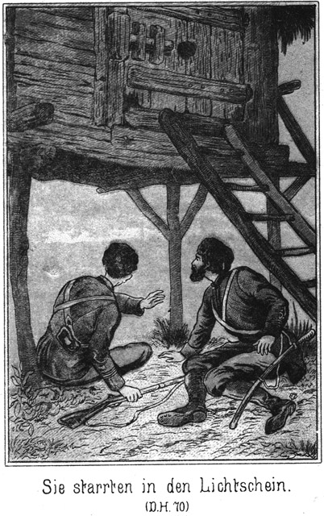»Aber dieses Wiedersehen wird ein sehr kurzes sein, denn sobald wir kommen, werden Dich einige unserer Leute über die Grenze schaffen. Dann gehst Du in Deine Heimath und kehrst dann wieder.«
Sie sagte das in traurigem Tone, so daß er ihre Hand ergriff und sie fragte:
»Thut Dir das Scheiden denn leid?«
»Ja, von ganzem Herzen leid. Du bist ja mein Retter. Den Ring, welchen ich Dir gegeben habe, hat Dir der Rittmeister abgenommen. Nun hast Du nicht einmal ein Andenken an mich.«
»Du ja auch keins an mich!«
»O doch. Ich werde immer an Dich denken. Du hast mir das verlorene Leben zurückgegeben. Ist das nicht genug? Ist das nicht das werthvollste Andenken, was man sich zu geben vermag? Ich möchte Dir gern einen anderen Ring geben, wenn ich wüßte, daß Du ihn annehmen würdest.«
»So sind zwei Ringe für Dich verloren.«
»Das ist mir gleich. Du weißt ja, daß wir reich sind. Darf ich?«
»Ja, aber unter einer Bedingung.«
»Sage sie. Wenn ich kann, werde ich sie erfüllen.«
»Laß Dir den ersten Ring von dem Rittmeister zurückgeben.«
»Das werde ich thun. Noch heut muß er ihn mir wiedergeben.«
»Wird er es thun?«
»Er muß. Wenn ich es will, so setze ich es auch durch. Er soll einen Ring, den ich für Dich bestimmt habe, nicht tragen dürfen. Und nun nimm diesen hier!«
Sie zog ihn vom Finger und gab ihn dem Kosaken hin. Dieser steckte ihn an, zog ihre Hand an sein Herz und sagte:
»Karparla, es mag kommen, was da wolle, dieses Andenken werde ich so heilig halten wie kein zweites. Du sagst, daß Du oft an mich denken werdest, und ich versichere, daß mein Sinnen gar nicht von Dir lassen wird.«
»So sagst Du jetzt. Ich wohne auf der weiten, stillen einsamen Ebene; da stört mich nichts an Dich zu denken. Du aber gehst in ein Land, wo es ganz anders ist als hier. Da wirst Du bald keine Zeit haben, Dich an Karparla zu erinnern, und gar bald wird es geschehen sein, daß Du mich vergessen hast.«
»Nie, nie werde ich Deiner vergessen.«
»Wenn Dein Heimathland doch nicht gar so weit von hier läge, so daß man einmal hinreiten könnte!«
»Würdest Du kommen?«
»Ganz gewiß. Wie lang müßte man reiten, um es zu erreichen?«
»Viele, viele Monate lang.«
»Das ist traurig. So kann ich nicht zu Dir, und Du kannst nicht zu mir. Warum mußt Du fort von hier?«
Sie sagte das in wirklich aufrichtiger Trauer. Es überwallte ihn heiß. Er antwortete:
»Wir würden uns täglich sehen.«
»Meinst Du, daß uns das erfreuen könnte? Du wärst das Weib des Rittmeisters. So oft ich Dich erblickte, würde mich der Grimm übermannen.«
»Nein, ich wäre nicht sein Weib. Wenn Du hier bliebst, würde ich ihn abweisen.«
»Aber weil ich fortgehe, wirst Du ihm seinen Wunsch erfüllen.«
Sie entzog ihm ihre Hand, drückte dieselbe gegen ihr klopfendes Herz und sagte:
»Ich habe bis jetzt es für möglich gehalten, daß ich ihm angehören kann, in diesem Augenblicke aber fühle ich es, daß das ganz und gar unmöglich ist.«
»Darf ich das glauben?«
»Ich sage es Dir, und so ist es wahr. Ich werde lieber sterben, als daß ich ihm nur einen freundlichen Blick gebe.«
Da beugte er sich zu ihr nieder und fragte:
»Warum merkst Du es erst jetzt, in diesem Augenblicke?«
»Warum? Das weiß ich nicht. Ich fühle es deutlich; aber woher diese Erkenntniß kommt, das kann ich nicht sagen. Ich möchte – ich möchte am Liebsten – –«
Sie hielt inne. Es klang, als ob sie mit Thränen kämpfe.
»Was möchtest Du? Sage es!« bat er in innigem Tone.
»Das darf ich nicht.«
»Du darfst es! Warum wolltest Du Dich scheuen, es zu sagen?«
»Weil – weil – – weil Du wohl gar darüber lachen würdest.«
»Ich darüber lachen. Karparla, wie kannst Du mir mit diesen Worten so wehe thun!«
»Wenn es Dir wirklich wehe thut, so könnte ich es doch vielleicht sagen.«
»Ja, theile es mir mit! Ich bitte Dich recht herzlich darum.«
»Ich wollte sagen: Wenn der Vater nicht wäre und die Mutter nicht, – so –«
»Nun? Weiter, bitte, bitte!«
»So möchte ich am Allerliebsten mit Dir fortgehen in Deine Heimath.«
Sie sagte das langsam, traurig; er hörte es ihr an, daß es ihr Ernst mit diesen Worten sei.
»Mit mir gehen? Und dort bleiben?«
»Ja«
»Für immer? Nie wieder nach hier zurückkehren?«
»Nie wieder. Wo Du wärst, da würde ich gern bleiben.«
Da legte er seinen Arm um sie und zog sie leise, leise an sich. Sie duldete es, aber nicht ganz. Sie hielt ihre Arme so, daß dieselben sich zwischen ihnen befanden.
»Wenn Du wüßtest, wie glücklich Du mich durch diese Worte machst!« flüsterte er.
»Freut es Dich wirklich?«
»Unendlich. Es hat mich, so lange ich lebe, noch nichts so sehr gefreut wie das.«
»So denke daran, wenn Du daheim bist. Du wirst Dir dann sagen können, wie traurig ich sein werde.«
»Du wirst doch bald Trost finden.«
»Nein. Es giebt da keinen Trost.«
»Du wirst einen Mann haben, mit welchem Du glücklich bist.«
»Ich werde allein bleiben, so lange ich lebe, und mir nie einen Mann nehmen. Das weiß ich nun.«
»Wenn ich nun kein Verbannter wäre und dafür reich und vornehm, und ich bät um Deine Hand bei Deinem Vater, würdest Du da Ja sagen, Karparla?«
»Ich würde Ja sagen, wenn Du auch nicht reich und vornehm wärst.«
»Aber ein Verbannter!«
»Du bist trotzdem besser als alle Andern. Ich fürchte mich nicht, das Weib eines solchen Verbannten zu werden.«
»Karparla, ist das wahr!«
»Soll ich es Dir beweisen?«
»Wie könntest Du das?«
»Bleib hier, so werde ich Deine Frau!«
»Ich bin ein Flüchtling!«
»Ich fliehe mit, an einen Ort, wo Niemand Dich findet. Aber nicht so weit fort, wo ich den Vater und die Mutter nicht mehr sehen kann.«
»Du liebes, liebes Mädchen! Es treibt mich mit aller Gewalt, Dir diesen Wunsch zu erfüllen. Welche Seligkeit wäre es, Dich besitzen zu dürfen! Und doch ist es unmöglich.«
»Warum?«
»Weil es ein Verbrechen an Dir wäre, wenn ich Dein ganzes, bisher so lichtes und ungetrübtes Dasein an das Leben eines Verfehmten binden wollte, der sich vor Niemand sehen lassen darf.«
»Wir Beide würden uns ja sehen, und dies wäre genug, um glücklich zu sein.«
»Das denkst Du jetzt, weil Du das Leben nicht kennst. Bald würde das Unglück die gierigen Krallen nach uns ausstrecken, ohne daß wir uns zu wehren vermöchten. Du wirst erst später einsehen, wie Recht ich jetzt habe.«
»Ich glaube, daß Du Recht hast, denn Du sagst nur die Wahrheit und bist klüger als ich.«
»Mich würden bittere Vorwürfe peinigen, welche ich Dir verbergen müßte. Ich hätte Dich um eine schöne Zukunft gebracht und die Sehnsucht nicht gestillt, welche die Meinigen nach mir empfinden.«
»Hast Du Viele, die Dich erwarten?«
»Eine Mutter und mehrere Brüder und Schwestern. Wir sind seit langen Jahren getrennt gewesen, und erst heut habe ich erfahren, daß die Anderen nun vereinigt sind und heißes Verlangen nach mir empfinden.«
»Dann darfst Du sie nicht warten lassen, wenn diese Trennung, auch eine so traurige für mich ist. Ich möchte nicht von meinen Eltern fort. Wie könnte ich da verlangen, daß Du bei mir bleiben sollst.«
»Ja, wir müssen scheiden, auf ewig und auf immerdar. Aber nicht schon heut. Wir sehen uns erst noch wieder. Jetzt aber will ich aufsteigen. Mein Begleiter sitzt schon im Sattel. Damit will er mich mahnen.«
»Ja, Du mußt fort. Im Osten beginnt schon der Horizont sich zu lichten. Vertraue diesem Begleiter. Er ist ein Mann, auf den Du Dich verlassen kannst.«
»Wie heißt er?«
»Gisa. Er gehört zu den Tapfersten und Klügsten unseres Stammes.«
»So laß uns scheiden, Karparla. Nicht wahr. Du hast mich lieb?«
Sie blickte still vor sich nieder und zögerte mit der Antwort. Sie hatte ihm so aufrichtig gesagt, daß sie ihm angehören möchte, trotzdem er ein Verbannter sei, daß sie mit in seine Heimath gehen würde, wenn ihre Eltern nicht wären, und nun er diese directe Frage an sie richtete, fiel es ihr schwer, das erwartete Wort zu sagen.
»Magst Du mir nicht antworten?« fragte er zärtlich.
»Warum soll ich das? Muß es sein?«
»Nein. Ich weiß, daß Deine Seele mir gehört, aber es erhöht das Glück, von Deinen Lippen zu hören, daß Du mich lieb habest.«
»So meinst Du, daß das, was ich fühle, die Liebe ist?«
»Ganz gewiß.«
»O, dann ist die Liebe freilich etwas unbeschreiblich Herrliches. Wenn meine Freundinnen davon sprachen, so hörte ich ihnen zu, ohne es begreifen zu können. Wenn ich einen Mann erblickte, blieb mein Herz so ruhig wie vorher. Ich konnte mir gar nicht denken, daß die Liebe etwas so Außerordentliches sei, bis – bis – bis –«
»Sprich weiter, sprich weiter!« bat er.
»Bis ich damals die Augen öffnete,« fuhr sie leise fort.
»Und –?«
»Und ich an Deinem Herzen lag.«
»Das war wohl sehr bös und schlimm?«
»O nein, nein!«
»Aber ich war Dir fremd. Du kanntest mich doch gar nicht. Fürchtetest Du Dich denn nicht vor mir?«
»Gar nicht. Es war mir gar nicht so, als ob ich mich in den Armen eines fremden Mannes befände. Deine Augen hatten mich so – so – so gut angeblickt. Ich kann es nicht sagen, wie das in meinem Herzen war.«
»Und da mußte dieser Rittmeister dazwischen kommen. Eben wollte ich Dich wieder küssen, als er hinzutrat. Er schlug mich mit der Peitsche, daß ich die Schwiele noch lange Zeit im Gesicht trug.«
»Du Armer, Lieber, Guter!«
Sie schlang die Arme um ihn und drückte sich innig an seine Brust. Das Mitleid siegte über die mädchenhafte Scheu, mit welcher sie vorhin seine Umarmung zu einer nur halben gemacht hatte.
»Wohl war und bin ich ein Armer!« seufzte er tief, tief auf. »Karparla. Du hast keine Ahnung von den Leiden, welche ich zu tragen gehabt habe. Nur wenn Du mein Weib werden und mit mir in meine Heimath ziehen könntest, würdest Du nach und nach begreifen können, was es bedeutet, ein Verbannter zu sein, ohne Recht, ohne Willen, ohne Namen und ohne Schutz.«
»Wie oft bist Du geschlagen worden!«
»Das ist nicht das Allerschlimmste. Was den Körper schmerzt, das ist leicht zu ertragen; aber es giebt Seelenqualen, welche unbeschreiblich sind. Doch fort mit solchen finstern Gedanken! Jetzt habe ich Dich, Dich, Dich, Du Liebe, Du Einzige. Dieser Augenblick macht Vieles, Vieles wieder gut.«
»Ich wollte, ich könnte Alles, Alles von Dir nehmen und an Deiner Statt tragen.«
»Das wolle Gott verhüten, daß Du jemals nur eine einzige Stunde erlebst, wie ich tausende hinter mir habe. Doch schau, Gisa reitet fort, langsam zwar, aber doch so beredt, daß ich ihn verstehe. Leb wohl, meine liebe, liebe Karparla!«
»Leb wohl, mein lieber, lieber –«
Sie sagte das, indem sie ihr Köpfchen fest und innig an seine Brust drückte; nun aber blickte sie schnell zu ihm auf und fuhr fort:
»Wie soll ich Dich nennen?«
»Nummer Zehn!« antwortete er in plötzlich überquellender Bitterkeit.
»Nein, nicht bei diesem häßlichen Wort.«
»Ich habe ja keinen Namen mehr?«
»Auch für mich nicht, für Deine Karparla nicht. Du Böser?«
»O ja. Du sollst mich so rufen, wie Vater und Mutter und Brüder und Schwestern mich genannt haben. Ich heiße Georg.«
»Georgi heißt es bei uns. Georgi – Georgi – Georgi – –
Sie sagte den Namen in einer Weise hin, als ob sie kosten und schmecken wolle, ob er ihr angenehm sei oder nicht.
»Gefällt er Dir nicht?« fragte er.
»Er gefällt mir sehr. An Dir gefällt mir ja Alles, Alles. Nun werde ich Dich nennen können, wenn ich an Dich denke.«
»Bisher hast Du keinen Namen für mich gehabt.«
»O doch, einen hatte ich, und zwar einen sehr schönen.«
»Darf ich ihn erfahren?«
»Ja. Oft, wenn ich allein war und an Dich dachte, wie Dein Auge damals in das meinige geleuchtet hatte, da habe ich die Arme ausgebreitet und gerufen: Mein Retter, komm, komm, mein Retter! Ist dies nicht auch ein schöner Name?«
»Ja, ein sehr schöner.«
»Aber Georgi ist mir noch lieber. Ich werde, wenn ich mich nach Dir sehne. Dich sehr oft bei demselben rufen.«
»So nimm an, daß ich in demselben Augenblicke auch an Dich denke. Jetzt leb nochmals wohl, meine herrliche Karparla!«
Er zog sie an sich und küßte sie. Sie hielt ihm ihre frischen, vollen Lippen still entgegen und duldete es, daß er seinen Mund wieder und immer wieder auf dieselben legte. Dann aber ließ er sie plötzlich los, eilte zum Pferde und sprang in den Sattel.
»Auf Wiedersehen, mein Leben!«
Er wandte sein Pferd herum und jagte davon, dem vorausgerittenen Gisa nach.
»Auf Wiedersehen, mein Georgi, mein – lieber – lieber – Georgi!«
Sie rief er laut und breitete dabei die Arme aus, wie sie vorhin es beschrieben hatte. Dann ließ sie dieselben sinken und blickte ihm nach, so lange es die beginnende Morgendämmerung gestattete. Als er verschwunden war, ging sie langsam nach dem Lager.
Dort lagen die Schläfer noch auf ihren Filzdecken, aber nicht mehr lange. Hunde bellten bereits, und Pferde wieherten. Das Leben begann zu erwachen.
Als sie das väterliche Zelt erreichte, öffnete sich dasselbe und ihre Mutter trat heraus. Die gute, dicke Kalyna sah ein Wenig übernächtig aus. Sie pflegte, ebenso wie ihr Mann, der Fürst, zur frühen Stunde schlafen zu gehen. Die vergangene Nacht aber war so sehr unruhig gewesen.
»Ist er fort?« fragte sie leise.
»Ja. Soeben.«
»Und Du warst bei ihm?«
»Ja.«
»Eine so lange Zeit. Was habt Ihr da gethan und gesprochen.«
Karparla erröthete zwar, antwortete aber der Wahrheit gemäß:
»Das haben wir gethan.«
Dabei umschlang sie die Mutter und küßte sie. Freilich eine regelrechte Umarmung und ein richtiger Kuß war das nicht. Selbst der mit den längsten Armen begabte Mann hätte nicht vermocht, die Taille der Tungusenfürstin zu umspannen. Und der Kuß kam anstatt auf den Mund auf den untern Theil der Wange zu sitzen. Die Mama war selbst für die Tochter unnahbar, wenigstens in Beziehung auf solche körperliche Zärtlichkeiten.
Sie schlug die festen Hände zusammen, daß es schallte, blickte ihre Tochter fast fassungslos an und sagte:
»Das – das habt Ihr gemacht?«
Ja.«
»Geküßt habt Ihr Euch?«
»Du ihn oder er Dich?«
»Ich ihn und er mich. Beide zugleich.«
»Kind, Kind, was fällt Dir ein! Das ist ja verboten!«
»War es dem Vater auch verboten?«
»Nein, denn ich war keinem Andern versprochen. Du aber wirst die Frau des Rittmeisters.«
»Nein, die werde ich nicht!«
Sie sagte das in einem so bestimmten Tone, daß ihre Mutter ganz bestürzt zurücktrat.
»Nicht? Hast Du Dich denn anders besonnen?«
»Nein. Ich bin gleich erst so gesonnen gewesen wie jetzt.«
»Aber wir haben es ihm versprochen!«
»Ich nicht.«
»Denke an den Schamanen!«
»Gebt ihm ein Geschenk, so giebt er Euch Euer Wort zurück.«
»Was denkst Du! Ein Schamane thut für Geschenke nichts, gar nichts.«
Das glaubte die gute Fürstin in Wahrheit, obgleich jeder Schamane Geschenke nehmen muß, wenn er nicht verhungern will. Ja, es ist grad das Schamanenthum durch die Raffineri berüchtigt, mit welcher seine Angehörigen die Laien auszubeuten wissen.
»So behaltet die Geschenke, und ich thue doch, was ich will!« antwortete die Tochter.
»Was höre ich! Du bist plötzlich eine ganz Andere geworden. Dich kenne ich gar nicht mehr wieder.«
»Ja, ich weiß, daß ich anders geworden bin, plötzlich, in einem einzigen Augenblick! Weißt Du wer daran schuld ist?«
»Wer denn?«
»Die Liebe.«
Die Fürstin riß die Augen weit auf und vermochte dabei auch nicht, den Mund geschlossen zu halten.
»Die – Liebe!« stöhnte sie förmlich. »Was ist das? Was verstehst. Du von der Liebe, Du kleines Mädchen!«
»O, ich kenne sie, ich kenne sie!«
Wie kam es doch nur, daß die Tochter so ohne alle Zurückhaltung zu ihrer Mutter sprach. Eine »civilisirte« Tochter hätte das für höchst unweiblich, ja noch für viel schlimmer gehalten. Dieses Naturkind aber sagte, was es fühlte und dachte.
Zur Seite der Zeltjurte lagen mehrere Sattels auf einander, eine Art Bank bildend. Darauf setzte sich die Fürstin. Die Gute war von Dem, was sie sah und hörte, ganz schwach geworden, so schwach, daß sie nicht mehr stehen konnte.
»Du kennst sie? Du kennst sie?« fragte sie, höchst nachhaltig den Kopf schüttelnd. »Wie ist sie denn eigentlich?«
»So süß, so köstlich, so – ich kann es gar nicht sagen.«
»Die Heiligen alle mit einander mögen Dir gnädig beistehen. Du willst etwas verstehen, was Deine Mutter nicht kennt!«
»Du, Du kennst die Liebe nicht?«
»Nein. Ich habe niemals Etwas davon gefühlt.«
»Aber Du hast doch einen Mann!«
»Was hat das bei der Liebe zu thun?«
»Man muß ihn doch lieben?«
»Das verstehst Du nicht. Gehorchen muß man ihm. Speise und Trank bereiten muß man ihm. Angenehm muß man sich ihm machen. Und widersprechen darf man ihm nicht. Trotzdem kann man hinter seinem Rücken machen, was man will. Das ist die Liebe, die richtige Liebe.«
»O, Mutter, wie falsch denkst Du!«
Bei diesen Worten leuchteten die Augen des schönen Mädchens vor lauter Glück und Wonne auf. Die Mutter machte ein möglichst noch erstaunteres Gesicht als vorher.
»Willst Du klüger sein als ich?« fragte sie.
»Nein. Du bist viel klüger als ich. Aber vielleicht ist grad Deine Klugheit daran schuld, daß Du die wirkliche Liebe nicht kennen gelernt hast.«
»Die meinige ist die wirkliche.«
»So? Könntest Du für den Vater sterben?«
»Ja, wenn die Todesstunde einmal nahe gekommen ist, so hilft kein Weigern.«
»Das meine ich nicht; ich meine, ob Du Dein Leben mitten in vollster Gesundheit hingeben könntest, wenn es zum Wohle des Vaters diente?«
»Kind, wie redest Du! Das würde ich gewiß niemals thun. Es kann doch unmöglich zu seinem Wohle dienen, wenn ich sterbe. Vielmehr, je länger ich lebe, desto besser ist es für ihn.«
»So hast Du die richtige Liebe nicht. Ich könnte mich für Georgi gleich jetzt tödten lassen.«
»Herrgott! Gleich jetzt! Du hast doch nicht etwa Etwas vor! Kind, sei aufrichtig mit Deiner Mutter, denn Du hast keine andere. Willst Du Dich ermorden?«
»O nein, das fällt mir gar nicht ein!« lachte Karparla laut auf.
»Gott sei Dank! Welch einen Schreck hast Du mir eingejagt! Den werde ich nur sehr schwer überwinden. Du wolltest Dich doch jetzt gleich tödten lassen für diesen, diesen – wie nanntest Du ihn?«
»Georgi. Ist das nicht ein wunderschöner, ein einziger Name?«
»Ich finde, daß er grad ebenso klingt wie ein jeder andere auch. Aber wer heißt denn so?«
»Das weißt Du noch nicht?«
Sie fragte das wirklich im Tone des größten Erstaunens. In den wenigen Minuten war der Name ihr so vertraut geworden, als ob er ihr bereits seit Jahren geläufig gewesen sei.
»Ich weiß es nicht. Mir ist kein einziger Georgi bekannt.«
»Nun, Er heißt doch so!«
»Er? Welcher Er?«
»Georgi! Ach so, da weißt Du es ja noch immer nicht. Den Kosaken meine ich.«
»Bei mir nicht mehr. Er hat mir seinen Namen anvertraut; denke Dir, seinen Namen!«
»Das ist wohl etwas sehr Großes?«
»Ja, denn einer Anderen hätte er ihn gewiß nicht gesagt.«
»Vielleicht hat er ihn schon Vielen mitgetheilt.«
»Keiner Einzigen! Da kennst Du meinen Georgi schlecht! Du darfst mir meinen Georgi nicht verleumden! Ich dulde das nicht.«
»Deinen – Deinen Georgi! Kind, mit Dir ist Etwas geschehen, was ich gar nicht begreifen kann. Ich weiß nur, daß Ihr Euch geküßt habt und daß Du ihn lieb haben willst. Laß ja Deinem Vater davon nichts merken. Du wirst den Rittmeister zum Mann erhalten, und da ist es verboten. Einen zu haben, den man meinen Georgi nennt!«
»Den Rittmeister mag ich nicht!«
»Rede nicht so unverständig! Er wird Dein Mann, und Denjenigen, welcher der Mann wird, den muß man doch nehmen!«
»Er wirds ja aber nicht!«
»So? Wer sagt es denn?«
»Ich!«
»Da siehst Du, daß Du die richtige Liebe doch nicht kennst. Man darf seinem Manne niemals widersprechen; Du aber widerstehst dem Rittmeister, noch ehe er Dein Mann ist! Wie soll das erst später werden?«
»Ich mag ihn nicht; ich nehme ihn nicht, und folglich kann ich ihm ungehorsam sein.«
»So, ach so meinst Du es! Jetzt verstehe ich Dich endlich! Dem Georgi aber würdest Du wohl gehorchen?«
»Ja, gern und allezeit.«
»Wunder über Wunder! So soll wohl gar er Dein Mann werden?«
»Das wäre mein größtes Glück, und ich wollte mir weiter gar nichts wünschen. Aber er kann mein Mann nicht werden.«
»Gott sei Dank! Jetzt wird sie wieder vernünftig. Ich hatte wirklich eine ganz entsetzliche Angst in mir, als ich Dich so reden hörte. Der Kosak ist fort, und das, was Du Liebe nennst, wird auch bald fort sein. Komm herein und trinke Deinen Thee.«
»Heut nicht. Ich habe keine Ruhe. Ich muß hinaus, fort, fort. Geh weg!«
Sie schob ihre Mutter von dem Sitze empor, nahm einen der Sättel weg und begann ihr Pferd, welches neben der Jurte angebunden war, zu zäumen und zu satteln. Dann stieg sie auf.
»Fort willst Du?« fragte die Mutter. »Mir wird schon wieder Angst! Du hast vom Sterben gesprochen. Du willst Dir doch kein Leid anthun?«
»Daran ist nicht zu denken. Sehe ich etwa wie Eine aus, welche sterben will?«
»Nein. Du siehst viel eher wie Eine aus, welche Fliegenpilzwasser getrunken hat. Du wirst mir doch nicht etwa krank werden?«
»Nein. Ich will nur einen tüchtigen Ritt machen, dann komme ich wieder.«
Sie ritt davon und trieb, als sie das Lager hinter sich hatte, ihr Thier zur größten, fast halsbrechenden Schnelligkeit an. Sie war eine echte Jakutin. Der inneren Erregung mußte durch etwas Aeußerliches das Gleichgewicht gehalten werde», und dazu war ein kühner Ritt am Allertauglichsten.
Die ersten Strahlen der Sonne umflutheten den östlichen Horizont und kamen in glühenden Garben über die weite Ebene herbeigeschossen. Als sie die Reiterin mit klarem, warmem Golde umwebten, breitete diese die Arme aus und rief jubelnd:
»Georgi, mein Georgi – Georgi!«
Drüben, vom Süden her, näherten sich einige kleine Punkte. Karparla bemerkte dieselben und lenkte nach dieser Richtung hin. Je näher sie ihnen kam, desto deutlicher sah sie, daß es vier Wagen waren, welche in scharfem Trabe auf Platowa zuhielten. Die beiden vorderen waren Troika's, mit drei Pferden bespannt, deren mittelstes, zugleich das größte und kräftigste, einen Bogen über dem Kopfe trug, an welchem ein Glöckchen hing. Die beiden anderen Wagen waren leichte Kibitken, nur mit zwei Pferden bespannt.
In der vorderen Troika saß ein Herr, in der zweiten eine verschleierte Dame. Die beiden Kibitken waren mit Gepäck gefüllt, welches von einem Diener und einer Dienerin bewacht wurde.
Die Wagen flogen ganz – eng hinter einander her. In ihrer rosigen Stimmung war Karparla zu einem Scherze geneigt, wie er eben nur einer Jakutin oder Tungusin in den Sinn kommen kann. Sie trieb ihr Pferd zu noch größerer Eile an, ritt rechtwinklich auf die Wagen ein und schoß im Carriére zwischen dem ersten und zweiten hindurch, obgleich der Zwischenraum zwischen der vorderen Troika und den Pferden des zweiten Wagens kaum eine Elle betrug.
Ein lauter Angstschrei erscholl aus dem Munde der Dame. Karparla hatte ihn gehört. Sie riß ihr Pferd auf den Hachsen herum und dirigirte es zu der erschrockenen Reisenden, welche ihre Troika hatte anhalten lassen.
»Bist Du über mich erschrocken, mein Schwesterchen?« fragte sie, am ganzen Gesicht lachend und dabei ihre köstlichen Zähnchen zeigend.
»Sehr,« ertönte die Antwort von einer sonoren Stimme.
»Verzeihe mir! Ich thue es nicht wieder.«
»Das möchte ich Dir rathen. Du kannst doch einmal zu Falle kommen!«
»O nein; das ist ja ganz unmöglich! Wie sollte das geschehen?«
»Wenn Du nun am Wagen oder an meinen Pferden hängen geblieben wärest!«
»Auch das war unmöglich. Ich sah doch, daß ich durchkommen konnte, sonst wäre ich über Deine Pferde weggeritten.«
»Hilf Himmel! Bist Du toll!«
»O nein! Wir reiten hier gern so!«
»Ich reite auch; aber so Etwas würde ich doch niemals wagen.«
»So bist Du keine Tungusin?«
»Nein.«
»Wo bist Du her?«
»Ich komme aus weiter Ferne, aus Indien.«
»Und wohin willst Du?«
»Nach Irkutsk wollen wir. Vorher aber werden wir einen Tag in Platowa rasten.«
»Hast Du da Bekannte?«
»Nein.«
»So bitte ich Dich, bei uns abzusteigen. Du wirst uns sehr willkommen sein. Mein Vater ist Bula, der Fürst der Tungusen.«
»Ich danke Dir! Es ist bereits beschlossen, daß wir bei dem Kreishauptmann bleiben.«
»Schade, sehr schade! Aber wenn Ihr bei diesem bleibt, so seid Ihr wohl sehr vornehme Leute?«
»Der dort ist ein Graf.«
Sie deutete dabei nach der vorderen Troika, welche nicht angehalten, sondern ihren Weg fortgesetzt hatte. Dann befahl sie dem Kutscher, die Fahrt fortzusetzen. Als der Wagen wieder in den früheren scharfen Trab gekommen war, blieb Karparla an der Seite desselben, als ob sich das ganz von selbst verstehe.
»Ein Graf?« sagte sie. »Da bin ich doch noch vornehmer. Nicht?«
»Ja, wenn Du eine Fürstentochter bist, eine Tungusenprinzessin, so hast Du Recht.«
»Geh! Was bedeutet bei Euch ein Tunguse! Gar nichts! Ich weiß das wohl; ich habe es gehört und auch gesehen. Dein Graf aber ist wohl ein Russe?«
»Ja.«
»Da steht er, obgleich er nur Graf ist, viel, viel höher als mein Vater, und Du bist eine vornehmere Dame als ich. Da möchte ich gar gern einmal Dein Gesicht sehen.«
»Das sollst Du gern.«
Die im Wagen Sitzende legte den Schleier zurück. Karparla machte eine ganz unwillkürliche Bewegung des Erstaunens. Ein Paar solcher Augen, wie ihr jetzt in diesem Augenblicke entgegenstrahlten, so mild und doch so mächtig, hatte sie in ihrem ganzen Leben noch nicht gesehen.
»Wie schön bist Du! Wie wunderbar schön!« entfuhr es ihr.
»Du scherzest!«
»O nein! Du bist schöner noch als ein Engel!«
»Nun, Du bist wohl nicht minder schön als ich. Das kannst Du mir glauben.«
»Meinst Du wirklich?«
»Ja. Wie glücklich wird Derjenige sein, welchem Du Dein Herz schenkst!«
»O, er hat es bereits!« antwortete die Tungusin, indem sie über das ganze Gesicht lachte.
»Liebt er Dich sehr?«
»Unendlich!«
»Das gönne ich Dir. Bitte, wie ist Dein Name?«
»Karparla.«
»Das heißt, die wie Schnee Glänzende. Du trägst ihn mit vollem Rechte. Du gleichst dem Schnee, auf welchem das Morgenlicht seinen leisen, zarten Purpur wirft. Es ist oft wunderbar, wie genau der Name zur Person paßt.«
»Wie ist der Deinige?«
»Gökala.«
»Das heißt, die Himmelblaue. Auch Du trägst ihn mit vollem Rechte. Ob es wohl noch ein zweites Paar so herrlich blauer Augen giebt, wie die Deinigen sind? Ich glaube es nicht.«
»Wie es scheint, finden wir Wohlgefallen an einander,« lächelte die Dame.
»Ja, ich habe Dich bereits sehr lieb. Wenn Du mich auch ein Wenig leiden könntest, so hätte ich große Freude. Dann könntest Du mich in unserem Lager besuchen, welches vor der Stadt liegt.«
»Oder Du könntest auch zu mir kommen.«
»Nein; das ist unmöglich.«
»Warum?«
»Weil Du beim Kreishauptmann wohnen wirst. Zu diesem komme ich nicht.«
»Warum nicht? Bist Du ihm feindlich gesinnt? Hat er Dich etwa beleidigt?«
»Ja, ganz entsetzlich!«
Sie machte dabei ein so grimmiges Gesicht, daß Gökala ein Lachen vernehmen ließ.
»Du lachst mich aus!« sagte Karparla. »Ich habe allen Grund, ihn zu hassen!«
»Ist die Beleidigung denn gar so groß?«
»Die größte, welche es geben kann. Willst Du es errathen?«
»Ich bitte Dich, es mir lieber zu sagen.«
»Denke Dir, er will mich zwingen, seinen Sohn zu heirathen!«
»Und Du magst ihn nicht?«
»Nein.«
»Das ist allerdings eine ganz ungeheure, eine eigentlich ganz undenkbare Beleidigung,« stimmte Gökala bei, indem sie sich Mühe gab, ein verrätherisches Lächeln zu verbergen. »Aber er kann Dich doch nicht zwingen!«
»Er hat meine Eltern auf seine Seite gebracht.«
»O wehe! Was ist denn sein Sohn?«
»Blos Rittmeister. Weiter gar nichts.«
»Nicht schön?«
»Pfui!«
Sie machte eine sehr sprechende Bewegung des Abscheues.
»Wohl auch nicht sehr klug?«
»Sehr dumm sogar.«
»Aber tapfer?«
»Höchst feig. Nur seine Untergebenen prügelt er. An Andere wagt er sich nicht.«
»So ist er aber doch wohl reich?«
»Auch nicht. Er ist meinem Vater bereits sehr viel schuldig!«
»So nehme ich es Dir gar nicht übel, daß Du ihn nicht lieben kannst und daß Du Dein Herz weiter verschenkt hast.«
»Ja. Weißt Du, wann ich es verschenkt habe?«
»Natürlich nicht.«
»Erst heute.«
»So früh am Tage?«
»Je früher, desto besser! Und weißt Du, wie er heißt?«
»Da ich fremd bin, ist es mir unmöglich, es zu wissen.«
»Georgi. Wie gefällt Dir dieser Name?«
»Er ist nicht übel.«
»Nicht wahr? Wir Beide passen sehr gut zusammen. Schade, daß Du nur einen Tag hier bleiben willst. Du solltest länger verweilen. Dann könnte ich Dir vielleicht einmal meinen Georgi zeigen.«
»Er ist wohl ganz das gerade Gegentheil von dem Rittmeister?«
»Ganz und gar.«
»Sehr reich?«
»Blutarm.«
»Nun, das ist kein Gegentheil. Klug aber?«
»O, ungeheuer!«
»Hübsch und liebenswürdig?«
»Natürlich! Sonst würde ich ihn nicht lieben.«
»Hochgestellt und vornehm?«
»Beileibe nicht! Er ist ein – Verbannter.«
Sie sagte dieses letzte Wort mit gesenkter Stimme und nickte Gökala traurig zu.
»Ein Verbannter?« sagte diese. »Armes, armes Kind! Ist er denn wenigstens in einer guten Situation?«
»Gar nicht. Er war gemeiner Kosak und hat gestern Abend den Rittmeister geohrfeigt. Nun ist er auf der Flucht.«
»Mein Himmel! Kind, Du bist unglücklich!«
»Ach ja! Ich bekomme ihn nur noch ein einziges Mal zu sehen; dann geht er in seine Heimath.«
»Oder man greift ihn auf, und dann ist sein Schicksal ein sehr trauriges.«
»Aufgegriffen wird er nicht, denn er steht unter meinem Schutze,« sagte sie, indem sie sich stolz im Sattel emporrichtete.
»So bist Du ihm zur Flucht behilflich gewesen?«
»Ja, und ich werde ihn über die chinesische Grenze bringen.«
»Um Gotteswillen, sage das keinem Andern! So aufrichtig darf man mit keiner unbekannten Person sein. Wie nun, wenn ich Dir schaden wollte?«
»Du mir? Das kannst Du ja gar nicht!«
»Meinst Du? Du könntest Dich da doch sehr leicht getäuscht haben.«
»Gewiß nicht! In Deinen Augen und Deinen Zügen ist nicht eine Spur von Unwahrheit oder Hartherzigkeit zu lesen.«
»Gut, ich danke Dir! Aber wie nun, wenn ich die Frau eines Beamten wäre?«
»Um Gotteswillen! Das bist Du doch nicht etwa?«
»Glücklicher Weise nein. Hast Du schon Anderen davon erzählt?«
»Kein Wort.«
»So schweig auch fernerhin darüber. Du kannst sonst nicht nur Dich und Deine Familie, sondern Deinen ganzen Stamm in Schaden bringen. Weiß vielleicht der Rittmeister, daß Du diesen armen Georgi liebst?«
»Vielleicht denkt er es sich, denn gestern habe ich dem Rittmeister den Tanz abgeschlagen und dann Georgi selbst aufgefordert.«
»Karparla! Das hättest Du gethan?«
»Ja.«
»Wie kühn!«
»O, ich fürchte mich nicht!«
»Aber auch ebenso unvorsichtig. Ich nehme an, daß Du grad dadurch Deinen Geliebten zur Flucht getrieben hast.«
»Meinst Du?«
»Ich möchte es behaupten.«
Die Tungusin blickte vor sich auf den Sattelknopf nieder und sagte dann kleinlaut:
»Du hast wohl Recht. Daran hatte ich gar nicht gedacht. Ja, ich bin sehr, sehr unvorsichtig gewesen, und nun hat er es zu tragen.«
»Schau, nun kannst Du es an ihm gut machen. Was ist er denn ursprünglich?«
»Bevor er dem Rittmeister die Ohrfeige gab, warnte er ihn und sagte, er sei auch Officier und Edelmann.«
»Und woher ist er?«
»Nicht aus Rußland, sondern aus einem anderen Lande, viel weiter als Rußland.«
»Wie heißt dieses Land?«
»Ich weiß es nicht.«
»Er hat es Dir nicht sagen wollen?«
»Ich habe ihn gar nicht gefragt.«
»Wieder unvorsichtig!«
»Und Du hast wieder Recht. Aber ich komme ja noch einmal mit ihm zusammen, und da werde ich ihn fragen.«
»Dann kann es Dir auch nichts mehr nützen. Dein Schicksal interessirt mich sehr. Wir werden heut noch mehr mit einander sprechen. Eine unglückliche Liebe ist das Schlimmste und Schwerste, was dem Menschenherzen auferlegt werden kann.«
Sie zeigte während dieser Worte ein sehr ernsthaftes Gesicht. Karparla warf einen forschenden Blick auf sie und fragte:
»Hast Du das selbst auch erfahren?«
»Zur Genüge, mein liebes Kind.«
»Und bist die Frau eines Grafen! So bist Du wohl unglücklich verheirathet?«
»Nein. Ich bin nicht seine Frau. Ich reise nur unter seinem Schutze. Ich habe Niemand auf der weiten Welt, der sich in Liebe meiner annehmen darf. Und Diejenigen, mit denen zu verkehren ich gezwungen bin, sind meine ärgsten Feinde.«
»Jage sie doch fort!«
»Das kann ich nicht.«
»Warum nicht?«
»Darüber darf ich nicht sprechen.«
»So bist Du ebenso unglücklich wie ich. Laß diesen Grafen allein weiter reisen und bleibe bei mir. Wenn Du das wolltest, so solltest Du es sehr gut haben, und wir könnten den ganzen Tag von meinem Georgi reden. Das wäre doch schön! Nicht?«
»Ja,« antwortete Gökala, indem sie ein Lächeln unterdrückte. »Hat denn der Kreishauptmann eine Frau?«
»Ja.«
»Was ist das für eine Dame?«
»Sie ist die Schlimmste von Allen, hochmüthig, giftig; ich mag nicht mit ihr sprechen.«
»So habe ich ja die Gastfreundschaft einer sehr interessanten Familie zu genießen. Ist das Platowa?«
»Ja, links die Stadt und rechts unser Lager. Es ist eben Markt hier.«
Sie waren in der Nähe der Stadt angekommen, und der Graf hatte seinen Wagen langsamer fahren lassen, damit die drei anderen ihn einholen möchten.
»Soll ich Euch führen?« fragte Karparla ihre neue Freundin.
»Ich danke Dir! Der Graf wird die Wohnung des Kreishauptmanns schon selbst finden. Uebrigens gehst Du doch nicht gern hin.«
»Ja freilich. Wie aber kommen wir da zusammen?«
»Ich komme zu Euch oder sende Dir, wenn ich verhindert sein sollte, einen Boten.«
»Das ist mir lieb, sehr lieb. So laß uns nun scheiden. Ich freue mich außerordentlich. Dich kennen gelernt zu haben, meine liebe, prächtige Gökala!«
»Und ich verschweige Dir nicht, daß ich Dich in den wenigen Minuten bereits recht lieb gewonnen habe, meine gute Karparla. Lebe wohl, wir sehen uns also wieder!«
Die Tungusin ritt nach rechts hinüber und wendete sich aber einige Male um, um grüßend mit der Hand zu winken. Gökala dankte auf dieselbe Weise. Der Graf, welcher das bemerkte, machte ein sehr finsteres Gesicht dazu.
Er fragte keinen Menschen nach der Wohnung des Ortsoberhauptes. Er war bereits früher in Platowa gewesen, und wenn damals auch das Regierungsgebäude noch nicht gestanden hatte, so verstand es sich doch ganz von selbst, daß der Kreishauptmann in dem ansehnlichsten Hause des Ortes wohnen müsse. –
Als er vor dem Eingange halten ließ, kam ein Untergebener herbei.
»Der Kreishauptmann wohnt hier?« fragte er in hochmüthigem Tone.
»Wie Du befiehlst, Väterchen.«
»Ist er zu sprechen?«
»Er wird wohl noch schlafen.«
»Wecke ihn und führe uns einstweilen nach der Expedition!«
»Das darf ich nicht.«
»Warum nicht?«
»Es ist mir verboten. Du mußt warten, bis er aufgestanden ist. Du wirst doch wohl im Gasthause wohnen. Fahre hin. Ich werde Dich benachrichtigen, wenn er ausgeschlafen hat.«
»So! Hat er Familie?«
»Ja. Eine Frau, unser Mütterchen, und einen Sohn, unseren Rittmeister.«
»So ist der Rittmeister wenigstens zu sprechen, wie ich vermuthe?«
»Nein. Auch dieser schläft.«
»Donnerwetter! So schläft ja die ganze Familie! Die Frau wohl auch.«
»Nein. Das Mütterchen ist wach. Ich habe ihr vorhin den Thee vorsetzen müssen.«
»So lauf zu ihr und melde uns!«
»Das darf ich nicht.«
»So! Nun werde auch ich Dir bald mittheilen, was Du darfst und was nicht. Wenn Du nicht augenblicklich gehorchest, lasse ich Dich peitschen! Sage diesem guten Mütterchen, der Graf Alexei Polikeff wünsche, sich ihr vorzustellen, und habe keine Zeit, lange auf Bescheid zu warten!«
Jetzt rannte der Diener davon. Der Graf reichte Zykyma seinen Arm und führte sie in das Gebäude. Ein kurzer Blick über den Flur belehrte den Grafen, wo die Wohngemächer zu suchen seien. Sein Scharfsinn führte ihn ganz richtig, und eben, als er an der betreffenden Thür angekommen war, trat der Diener heraus und wendete sich sogleich wieder rückwärts, um ihn anzumelden.
*
Als die Beiden eintraten, stand die Frau Kreishauptmann in der Mitte des Zimmers und empfing sie mit einer tiefen Verneigung. Dann aber, als sie das Gesicht wieder erhob, war es nicht etwa ein freudiger Blick, den sie auf die Ankömmlinge warf. Gökala machte eine sehr frostige Verneigung. Der Graf aber grüßte gar nicht, sondern er fixirte die Frau mit einem scharfen, stechenden Blicke, und dann glitt ein Lächeln über sein Gesicht, dessen Bedeutung sehr schwer zu enträthseln war.
»Sie sind die Frau des Kreishauptmannes?« fragte er hochmüthig.
»Zu Ihrem Befehl,« antwortete sie, ihrerseits nun auch stolz.
»Ihr Name?«
»Rapnin.«
»Jedenfalls früher in Irkutsk?«
»Allerdings.«
»Wo ist Ihr Mann?«
»Er pflegt noch der Ruhe.«
»Und Ihr Sohn?«
»Ebenso.«
Der Graf hatte ganz die Miene und Haltung eines Examinators angenommen. Gökala, welche ihn mehr als genau kannte, sah es ihm an, daß er hier von etwas ganz Unerwartetem und für ihn Angenehmem überrascht worden sei, dies aber zu verbergen suchte. Er fuhr fort:
»Die Herren schlafen wohl immer so lange?«
»Sie schlafen natürlich, wenn es ihnen beliebt!« antwortete die Frau pikirt.
»Habe eigentlich auch nichts dagegen. Ich wollte mir für heut Ihre Gastfreundschaft erbitten und morgen früh weiterfahren, habe mich indessen anders entschlossen. Ich werde längere Zeit bei Ihnen wohnen.«
Die Frau machte ein Gesicht, in welchem der Ausdruck des Erstaunens sich mit demjenigen des Aergers stritt. Sie antwortete:
»Ich meine, daß dazu das Gasthaus vorhanden sei.«
»Ich ziehe das Ihrige vor.«
»Sind Sie in Ihrem Passe ermächtigt, Ihr Logis in den Regierungshäusern aufzuschlagen?«
»Nein, sondern ich thue das nur in Folge einer langjährigen Gewohnheit.«
»Auch wir haben unsere Gewohnheiten und Bequemlichkeiten, welche einem Fremden zu opfern wir nicht verpflichtet sind.«
»Das ist unhöflich, Madame!«
»Ihr Auftreten und Ihre Ansprüche sind nicht nur unhöflich, sondern mehr als das!«
»Wollen Sie immerhin das Wort aussprechen, welches Sie meinen?«
»Sie sind Graf. Ich schweige.«
»O, sprechen Sie immerhin! Ich will mich keineswegs unter den Schutz meines Ranges begeben.«
»Nun wohl. Ich finde Ihr Verhalten nicht nur unhöflich, sondern geradezu unverschämt.«
»Das nehme ich Ihnen nicht übel. Die Ansichten einer Frau Rapnin sind aber freilich nicht maßgebend.«
»Bitte, der Name meines Mannes ist Rapnin, aber er ist der Herr und ich bin also die Frau Kreishauptmann!«
»Ich zweifle nicht daran.«
»Sie scheinen mich nicht zu verstehen. Ich nenne Sie Graf und bitte mir meinen Titel auch aus. Uebrigens haben Sie sich noch nicht einmal als Graf legitimirt.«
»Und Sie sich ebenso wenig als Frau Rapnin!«
Die Augen des Grafen funkelten vor Vergnügen. Die Kreishauptmännin, deren Aerger immer größer wurde, fügte zornig hinzu:
»Bei mir bedarf es keiner Legitimation. Wir wohnen hier. Sie aber sind fremd. Es ist leicht, sich für einen Grafen auszugeben und dabei die Ansprüche eines Kaisers zu machen.«
»Vielleicht ist es ebenso leicht, sich für eine Frau Rapnin auszugeben und doch eigentlich eine Frau Saltikoff zu sein.«
Diese Worte waren mit einer geradezu beißenden Schärfe gesprochen, und die Wirkung, welche der Graf beabsichtigt hatte, trat augenblicklich ein. Die Frau fuhr zurück, maß den Grafen mit dem Blicke einer Schlange und fragte:
»Wie meinen Sie das? Ich verstehe Sie nicht.«
»Ich meine, daß es sich baldigst als sehr nothwendig erweisen könne, daß Sie sich wieder Frau Saltikoff nennen.«
Jetzt zog eine tiefe, leichenhafte Blässe über ihr Gesicht. Ihre Nase wurde zusehends spitz.
»Ich verstehe Sie noch immer nicht,« stammelte sie.
»Desto besser wird mich der jetzige Herr Kreishauptmann verstehen. Ich bitte dringend, ihn zu wecken. Sie können wenigstens ahnen, daß ich nicht nur zum Scherze mich zu Ihnen einlade.«
Jetzt knickte sie förmlich zusammen; doch raffte sie sich fester auf, verbeugte sich und sagte in plötzlich höchst freundlichem Tone:
»So nehmen Sie Platz! Mein Mann wird sogleich die Ehre haben, zu erscheinen.«
Sie verließ das Zimmer.
Der Graf strich sich in höhnischem Vergnügen den Schnurrbart und fragte:
»Wie gefiel Dir die Alte, Gökala?«
Die Gefragte antwortete nicht.
»Willst Du etwa auch Comödie mit mir spielen wie sie? Du würdest ganz denselben Mißerfolg haben. Also, wie gefällt sie Dir?«
»Immer noch besser als Sie!«
Gökala nannte den Grafen noch immer Sie, während er stets Du zu ihr gesagt hatte.
»Sehr hübsch ausgedrückt!« lachte er. »In kurzer Zeit werde ich Dir aber ausnehmend gut gefallen.«
»Schande über Sie, Schande!«
»Warum wohl?«
»Wer sich fremden Leuten in solcher Weise aufdringen kann, ist nicht werth, daß man nur ein Wort mit ihm spricht!«
»So schweig! Ganz nach Belieben.«
»Und hier soll ich mit wohnen! Welch eine Scham! Und als wen werden Sie mich wohl vorstellen?«
»Ich werde sehr rücksichtsvoll sein. Du bist eine Cousine von mir.«
»Da muß ich doch bestens danken. Wenn einmal gelogen sein soll, so geben Sie mich für Ihre Nichte aus.«
»Weil bei diesem Grade von Blutsverwandtschaft eine gewisse nähere Berührung weniger denkbar ist? Gut, ich bin wie immer. Du bist also meine Nichte, und ich junger Mensch bequeme mich, als Dein Oheim zu gelten. Aber ich hoffe, daß Du das dankbar anerkennst!«
Sie antwortete nicht, sondern trat an das Fenster und kehrte ihm den Rücken zu. Er zog das Etui aus der Tasche und brannte sich ungenirt eine Cigarre an, ganz so, als ob er sich in seiner eigenen Behausung befände.
Wohl über zehn Minuten vergingen, und weder kehrte die Frau zurück, noch kam ihr Mann herbei. Dafür aber wurden laute Stimmen und hin und her, auf und ab eilende Schritte hörbar. Endlich wurde die Thür aufgerissen, und die Frau trat herein. Sie hatte ein sehr echauffirtes, ja sogar erschrockenes Aussehen.
»Verzeihung!« sagte sie. »Soeben bemerken wir erst jetzt, daß weder mein Mann noch mein Sohn ihre Betten berührt haben. Sie sind nicht zu sehen und nicht zu finden. Es muß ein Unglück geschehen sein.«
»Ja,« lachte der Graf, »ein Unglück ist geschehen, ein sehr großes.«
»Herrgott, Sie wissen es? Welches, welches? Was ist geschehen?«
»Der Graf Alexei Polikeff ist angekommen.«
Sie blickte ihn verständnißlos an.
»Verstellen Sie sich nicht!« rief er.
»Verstellen? Es ist keine Rede davon, daß ich mich verstelle.«
»Pah! Mir machen Sie nichts vor! Ich durchschaue Sie!«
»Aber ich bitte ganz unterthänigst; es ist wirklich so, wie ich sage.«
»So? Nun, ich will mich herablassen, Sie über sich selbst aufzuklären. Ich komme ganz plötzlich und unerwartet zu Ihnen; Sie wissen, was ich will, und um sich der betreffenden Schlinge wenigstens für einstweilen zu entziehen, wird mir gemeldet, daß die beiden Herren nicht daheim sind. Inzwischen aber haben sie sich heimlich aus dem Staube gemacht.«
»Daran ist nicht zu denken. Was Sie von meinem Manne wollen, weiß ich nicht. Ich kenne Sie nicht und habe auch niemals Ihren Namen gehört. Ich weiß nur, daß Sie die beiden Namen Rapnin und Saltikoff genannt haben. Daraus läßt sich freilich vermuthen, daß Sie über eine unserer Familienangelegenheiten unterrichtet sind, aber einen Grund für meinen Mann und meinen Sohn, sich heimlich aus dem Staube zu machen, wie Sie sich auszudrücken beliebten, kenne ich nicht und kann auch keinen einsehen oder errathen!«
Es war ihr anzusehen, daß sie die Wahrheit sprach. Auch der Graf erkannte das. Er fragte in weniger strengem Tone:
»So sind Sie nicht mit in jenes Geheimniß gezogen worden?«
»Ich weiß nicht, von welchem Geheimnisse Sie sprechen.«
»Hm! Ich will annehmen, daß Sie sich unmöglich so meisterhaft verstellen können und daß Sie also jetzt die Wahrheit sagen. Wann sahen Sie die beiden Herren zum letzten Male?«
»Gestern Abend, als wir vom Abendvergnügen heimkamen, begaben Beide sich nach der Expedition meines Mannes. Ich aber ging zur Ruhe. Ich habe natürlich angenommen, daß sie dasselbe auch gethan haben. Da nun in den beiden Schlafzimmern keinerlei Bewegung wahrgenommen worden ist, haben wir geglaubt, daß sie noch schlafen. Erst auf Ihre Weisung hin wurden die Zimmer betreten. Sie waren leer und während der Nacht unbenutzt.«
»Eigenthümlich! Ich glaube an kein Unglück, sondern an einen Zufall, welcher sich bald aufklären wird. Werden Sie mir erlauben, die Schlafzimmer einmal zu betreten? Ich spreche diesen Wunsch in Ihrem eigenen Interesse aus.«
Diese Worte sprach er in einem höflicheren Tone als vorher. Dennoch gab sie nicht sogleich die gewünschte Antwort. Darum fuhr er fort:
»Ich müßte sonst wirklich denken, daß hier eine Absicht vorliege, mich zu täuschen.«
Das nahm sie als eine halbe Beleidigung auf. Sie erwiderte:
»Ich bin natürlich bereit, mich einer jeden berechtigten, das heißt obrigkeitlichen Haussuchung zu unterwerfen. Sie aber sind mir leider vollständig fremd.«
Er lächelte beinahe impertinent, machte ihr eine ironische Verbeugung und sagte:
»Ganz wie Sie wollen! Ich kann mich natürlich nicht ohne Ihre gütige Erlaubniß in Ihre Gemächer drängen, bin also auch nicht im Stande, den für Sie unangenehmen Ereignissen, vor denen wir stehen, eine friedliche Lösung zu geben. Sie stellen sich auf den Kriegsfuß zu mir; gut, so mag der Kampf beginnen. Ich weiß vorher, daß Sie die Unterliegende sein werden.«
Das machte sie freilich besorgt.
»Von einem Kampfe ist keine Rede,« erklärte sie. »Ich wünsche mit Allen, mit denen ich zu verkehren habe, in Frieden zu leben. Sie aber haben mir den Verkehr mit Ihnen aufgezwungen, also trage nicht ich die Schuld, wenn Sie hier anders empfangen wurden, als Sie es beanspruchen zu wollen scheinen.«
»Sie sagen, daß von einem Kampfe keine Rede sei, und dennoch befinden wir uns bereits im schönsten Plänkler- oder Vorpostengefechte. Sie sollen, wie bereits gesagt, Ihren Willen haben. Der Sieg wird mir gehören, und Sie werden ihn mit der Absetzung des Herrn Kreishauptmannes bezahlen.«
Das erschreckte sie natürlich sehr.
»Was sagen Sie?« fragte sie. »Mein Mann abgesetzt?«
»Ja, wenn nämlich Ihr Mann früher Saltikoff hieß und sich jetzt Rapuin nennt.«
»Das ist allerdings der Fall.«
»So befinde ich mich also an der richtigen Adresse. Dennoch bin ich galant genug, Ihnen meine Gegenwart nicht aufzuzwingen. Ich verzichte auf Ihre Gastfreundschaft und ziehe mich zurück. Im Gasthofe werde ich bereitwilligere Aufnahme finden als hier, und Sie werden dann auch keine Berechtigung besitzen, irgend eine Bereitwilligkeit von mir zu erwarten. Leben Sie wohl!«
Er that, als ob er gehen wolle. Da aber stellte sie sich ihm in den Weg und sagte:
»Bitte, Graf, warten Sie noch. Ich ängstige mich bereits über das unerklärliche Verschwinden meines Mannes und Sohnes, und Sie verzehnfachen diese Angst durch die Drohungen, welche Sie gegen mich aussprechen. Erlauben Sie mir einige kurze Fragen?«
»Gern!«
»Sie kennen meinen Mann?«
»Ja.«
»Haben Sie in geschäftlicher oder auch amtlicher Beziehung zu ihm gestanden?«
»Beides.«
»Hat er dabei einen Fehler begangen?«
»Einen sehr bedeutenden sogar.«
»Doch nicht einen strafbaren?«
»Einen solchen, welcher mit dem Tode oder wenigstens lebenslänglicher Zwangsarbeit in den Bergwerken von Nertschinsk bestraft wird.«
»Herr, mein Gott!« rief sie, die Hände zusammenschlagend. »Täuschen Sie mich nicht?«
»Ich sage Ihnen die Wahrheit.«
»Hängt das, wovon Sie sprechen, mit der Veränderung unseres früheren Namens zusammen?«
»Sehr innig sogar.«
»Und sind die Folgen dieses Fehlers nicht noch zu umgehen?«
»Nur ganz allein mit meiner Hilfe. Ich bin der Einzige, der Ihren Mann retten kann, so daß er sogar in seiner jetzigen amtlichen Stellung verbleibt.«
»Dann bitte ich Sie dringend, sich ja nicht nach dem Gasthofe zu begeben. Unser ganzes Haus steht Ihnen zur Verfügung. Sie werden sehen, daß Sie uns höchst willkommen sind. Ich hoffe, daß Sie mir meine bisherige Aufregung verzeihen!«
Sie war plötzlich ungeheuer liebenswürdig geworden. Er machte ihr eine zustimmende Verbeugung und antwortete:
»Ich bin viel zu versöhnlichen Gemüthes, als daß ich nicht auf Ihren freundschaftlichen Vorschlag eingehen sollte. Ich nehme also Ihre Gastfreundschaft an.«
»So bemühen Sie sich mit mir nach den Gemächern, welche ich Ihnen anweisen werde. Freilich befinden wir uns hier in Sibirien, und ich kann Ihnen also nicht den Comfort bieten, den Sie sicherlich gewöhnt sind.«
Sie wollte aus der Thür schreiten; da wurde an dieselbe geklopft und ein Lieutenant trat ein. Er hatte es so eilig, daß er den Gruß vergaß, und erkundigte sich!
»Der Herr Rittmeister?«
»Ist nicht hier,« antwortete die Kreishauptmännin.
»Oder der Kreishauptmann?«
»Auch nicht anwesend.«
»Alle Teufel! Da befinde ich mich in einer schauderhaften Verlegenheit. Da draußen am Gefängnisse stehen zwei Posten, welche ich nicht ablösen kann, ohne den Herrn Kreishauptmann und den Herrn Rittmeister um die Erlaubniß dazu gebeten zu haben. Die beiden Herren haben den Posten den strengen Befehl ertheilt, nicht von der Stelle zu gehen, bis sie wiederkommen.«
»Gott sei Dank! Das giebt eine Spur!« rief die Frau. »Wann ist es gewesen, daß mein Mann und Sohn mit den Posten gesprochen haben?«
»Das weiß der Teufel! Ich habe die beiden Kerls ausfragen wollen, aber keine Antwort erhalten. Sie stehen vor einem neu ausgegrabenen Loche und sprechen nur immer von einem großen Frosche.«
»Und wo sind die beiden Herren hingegangen?«
»Auch das kann ich nicht erfahren.«
»Sie sind nämlich seit gestern Abend fort, und ich befinde mich in großer Angst um sie.«
»So wird doch nicht etwa ein Unglück geschehen sein. Haben Sie keine Ahnung, wohin sie sich begeben haben können?«
»Nicht die mindeste.«
»So muß man suchen.«
»Ich bitte sehr, dies sofort zu thun, und mich über das Resultat schnell zu benachrichtigen.«
Der Offizier entfernte sich, und die Frau führte den Graf und Gökala nach den für sie bestimmten Gastzimmern.
Als der Lieutenant unten aus dem Hause trat, waren drei Männer grad im Begriff, zur Thür herein zu kommen. Er machte ein finsteres Gesicht, denn Sam, Jim und Tim waren es. Er war gestern mit auf dem Tanz gewesen und hatte also auch Alles mit gesehen und gehört, was geschehen war.
»Was wollen Sie?« fuhr er sie an.
Der dicke Sam blickte ihm lächelnd in das Gesicht und fragte nun seinerseits:
»Wohnen Sie in diesem Hause?«
»Nein. Antworten Sie!«
»Ich pflege nur solchen Leuten zu antworten, welche eine Berechtigung zu der Frage haben oder wenigstens mich höflich fragen.«
»Ich habe die Berechtigung.«
»Das bezweifle ich. Sie wohnen nicht hier, und so kann es Ihnen sehr gleichgiltig sein, was wir hier wollen.«
»Ich bin Offizier!«
»Ich auch!«
»Dies ist das Regierungsgebäude!«
»Das weiß ich.«
»Und ich bin Regierungsbeamter. Also habe ich zu fragen.«
»So fragen Sie meinetwegen, so viel Sie wollen! Thun Sie sich diese Güte; eine Antwort aber werden Sie nicht erhalten.«
»Wissen Sie, daß ich sie mir erzwingen kann!«
»Hm! Sind hier die Offiziere zugleich Polizisten und Nacht- und Tagewächter?«
»Das geht Sie nichts an! Also ich verlange Antwort!«
Da machte nun Sam auch ein ernstes Gesicht und fuhr ihn an:
»Mensch, denkst Du vielleicht, wir seien gekommen, uns von einem Kosaken schulmeistern zu lassen! Das bilde Dir ja nicht ein! Wenn Du noch ein einziges unhöfliches Wort sagst, so schreibe ich meinem Freunde, dem Gouverneur von Ostsibirien. Der wird dann dafür sorgen, daß Du höflicher wirst!«
Das war die richtige Art und Weise, sich in Respect zu setzen. Der sibirische Kosak will angeschnauzt sein.
»Verzeihung, Väterchen!« bat der Lieutenant sogleich. »Ich habe nicht gewußt, daß der mächtige Gouverneur Dein Freund sei!«
»Du sollst auch ohnedies höflich sein. Wir wollen zum Kreishauptmann.«
»Den kannst Du nicht antreffen, denn er ist verschwunden, und wir müssen ihn uns erst suchen.«
»So gehen wir zu seinem Sohne, dem Rittmeister.«
»Der ist bei seinem Vater.«
»Also auch verschwunden?«
»Ja.«
»Wohin denn?«
»Das weiß kein Mensch. Wir werden es aber bald erfahren.«
»Hm! Vielleicht weiß ich, warum der Rittmeister verschwunden ist.«
»So! Das würde mir vielleicht einen Anhalt bieten.«
»Ja. Du wirst wissen, daß er mich beleidigt hat, und ich forderte ihn auf Flinten in einer Entfernung von fünfhundert Schritten. Das Duell sollte jetzt in der Frühe stattfinden. Alle Bewohner der Lagers draußen sind begierig, diesem Duelle als Zuschauer beizuwohnen. Sie befinden sich an Ort und Stelle, und auch ich habe gewartet, aber der Rittmeister ist nicht gekommen. Sollte er sich vielleicht aus Angst versteckt haben?«
»Angst? Ein Offizier hat keine Angst!«
»So! Nun er aber nicht kommt, denken die Leute, er habe Angst. Also ist es in seinem Interesse, daß wir ihn suchen, damit er sich von seinem Verdachte reinigen kann.«
»Du brauchst nicht zu suchen. Du würdest ihn doch nicht finden, denn Du bist hier ja nicht bekannt.«
»Das thut nichts. Ein Fremder hat oft ein schärferes Auge als ein Einheimischer. Was sind denn das für zwei Kerls, welche da drüben so steif stehen, als ob sie Spazierstöcke verschlungen hätten?«
Man konnte nämlich hier von der Thür aus die beiden Schatzgräber stehen sehen.
»Das sind die Wachtposten vor dem Gefängnisse.«
»Seit wann stehen sie da?«
»Seit gestern Abend.«
»Wer hat sie hingestellt?«
»Der Rittmeister selbst.«
»Nun, so wissen sie vielleicht, wohin er sich begeben hat. Sie können ja ganz gut bis hierher sehen. Vielleicht haben sie ihn bemerkt, als er das Regierungsgebäude verließ.«
»Ich habe sie bereits gefragt. Sie wissen es nicht.«
»Vielleicht hast Du nicht richtig gefragt. Ich war einst ein hochgestellter Gerichtsbeamter und habe gelernt, die Fragen so zu stellen, daß die Antworten, welche ich haben will, unbedingt kommen müssen.«
»So wollen wir hingehen.«
Sein Respect vor dem kleinen Dicken war plötzlich außerordentlich gewachsen. Ein Freund des Gouverneurs, dazu hoher Gerichtsbeamter gewesen! Das war sehr viel für das kleine sibirische Städtchen. Er ließ also die Drei vorausschreiten und ging höflich hinter ihnen her. Als sie bei den Posten ankamen, fragte Sam:
»Meine lieben Söhnchens, wißt Ihr, wo der Herr Rittmeister steckt?«
»Nein,« antwortete der Eine.
»Das ist schlimm, denn wenn Ihr es nicht sagen könnt, werdet Ihr die Knute bekommen. Ich rathe Euch also, Eure Köpfchen anzustrengen. Wer hat Euch denn hier hergestellt?«
»Unser Väterchen, der Rittmeister.«
»Dann ging er fort?«
»Ja.«
»Ist er wiedergekommen und brachte er Jemanden mit?«
»Ja, unser Väterchen, der Kreishauptmann.«
»Was wollten sie da?«
»Wir wissen es nicht.«
»Sie haben doch mit Euch gesprochen?«
»Allerdings.«
»Was denn?«
»Das wissen wir nicht mehr.«
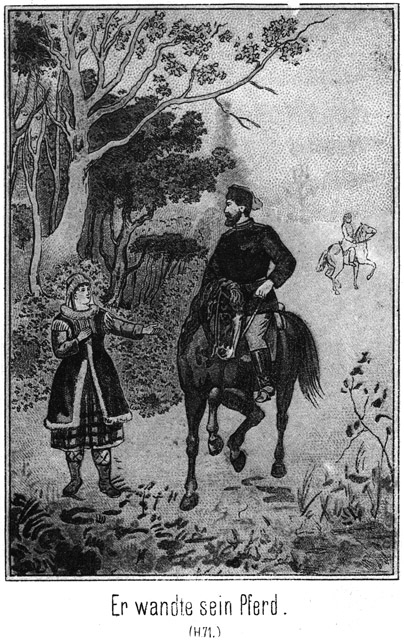Die beiden Posten standen in Achtung vor dem Kleinen. Sie befanden sich in der größten Verlegenheit, denn sie wußten nicht, ob es besser sei, zu schweigen anstatt zu erzählen. Um dies unterscheiden zu können, dazu reichten ihre armen Verstandeskräfte nicht aus. Sam fragte weiter:
»Sie müssen doch irgend Etwas gesagt haben, was Ihr Euch habt merken können! Uebrigens, zeig doch einmal her! Deine Jacke hat eine Menge Striemen und Schwielen. Du hast also Prügel erhalten. Von wem denn wohl?«
»Von dem Väterchen, dem Rittmeister.«
»Wann?«
»Gestern Abend.«
»Also als er mit seinem Vater hier war?«
»Ja.«
»Gut! So wissen wir doch wenigstens Einiges von Dem, was sie mit Euch gesprochen haben. Warum haben sie denn die Knute reden lassen?«
»Wegen dem Frosch.«
»Welchen Frosch?«
»Dem dicken.«
»Kinderchens, so kommen wir nicht weiter. Ich muß Euch ein jedes Wort abkaufen, und das erfordert doch gar zu viele Zeit und Geduld. Ich werde die Sache einmal anders anfangen.«
Er nahm die Peitsche, welche er hier in Sibirien bei sich trug, aus dem Gürtel, hob sie drohend empor und fragte:
»Was wollte der Frosch?«
»Er wollte uns den Schatz zeigen.«
»Schön! Seht Ihrs, die Peitsche macht Euch gesprächiger. Also einen Schatz hat er Euch zeigen wollen. Der hat wohl hier an dieser Stelle gelegen?«
»Ja.«
»Ihr habt ihn ausgraben wollen?«
»Und da kamen wohl gar die beiden Väterchen dazu?«
»Sie kamen dazu. Dann befahl uns das junge Väterchen, diesen Ort nicht eher zu verlassen, als bis er zurückgekehrt sei und es uns erlaubt habe. Wir stehen noch hier.«
»Ja, das sehe ich freilich. Er ist also gar nicht wiedergekommen?«
»Nein.«
»Wo mag er also sein?«
»Dort, wo er hingegangen ist.«
»Wißt Ihr das nicht?«
»Nein.«
»Alle Teufel! Ihr müßt doch die Richtung kennen, in welche die beiden Väterchen gegangen sind. Habt Ihr ihnen denn nicht nachgeblickt?«
»Nein. Wir mußten ja grad so stehen bleiben, wie wir standen.«
Da konnte Sam sich nicht mehr halten. Er brach in ein wieherndes Gelächter aus. Die dummen Gesichter dieser beiden Kerls, das nicht viel intelligentere des Lieutenants, die ganze Situation,, das war doch viel zu lächerlich, als daß man dabei hätte ernst bleiben können! Das waren ächt russische Soldaten: reine Maschinen, welche nicht denken können und grad da stehen bleiben, wohin sie gestellt worden sind. Dort lassen sie sich niederschießen, ohne zu muxen. Diese beiden Kerls hatten mit dem Rücken nach dem Gefängnisse gerichtet gestanden, als der Rittmeister mit seinem Vater von ihnen gegangen war, und weil sie den Befehl erhalten hatten, hier stehen zu bleiben, so hatten sie die ganze Nacht wie angenagelt ausgehalten, ohne sich zu bewegen. Sie hatten sich nicht ein einziges Mal umgedreht und also gar nicht gesehen, daß ihre Vorgesetzten zur Leiter emporgestiegen waren.
Jetzt nun sehen Sie den Dicken in starrer Verwunderung an, denn sie konnten sich sein Lachen gar nicht erklären. Es war doch gar nichts Lustiges hier geschehen oder geredet worden. Ueber diese Gesichter aber mußte er wieder und, wieder lachen, so daß es eine ziemliche Weile dauerte, ehe er seine nächste Frage aussprechen konnte.
Uebrigens war der Platz nicht mehr leer. Es hatten sich Leute eingefunden, zumeist Kosaken, welche neugierig waren, was hier verhandelt werde. Sie bildeten einen Kreis um die kleine Gruppe.
»Ihr wißt also nicht, wohin die Väterchen gegangen sind,« fuhr Sam fort. »Aber vielleicht werdet Ihr es uns doch sagen können, ohne daß Ihr es wollt. Spazieren sind sie nicht gegangen. So viel ist gewiß. Sie müssen einen bestimmten Zweck verfolgt haben. Wer einen Zweck hat, der hat auch die Mittel. Hatten sie denn irgend Etwas bei sich?«
»Ja, die Knuten.«
»Weiter nichts?«
»Die Laterne.«
»Ah, schön! Das ist von großer Wichtigkeit. Wer eine Laterne hat, der geht damit nicht über Land, sondern er will sich in der Nähe umsehen, sicherlich in einem Gebäude. Welches Gebäude aber liegt hier in der Nähe?«
Diese Frage war an den Lieutenant gerichtet. Er antwortete:
»Das Gefängniß.«
»Sie haben also in das Gefängniß gewollt. Ist Jemand darinnen?«
»Kosak Nummer Zehn.«
»So haben sie zu ihm gewollt. Sie sind inspiciren gegangen. Aber sie sind nicht zurückgekehrt. Das ist sehr auffällig. Es wird ihnen doch nichts geschehen sein! Ist der Kosak ein böser Kerl?«
»Er ist gut; aber der Rittmeister hatte ihn nicht lieb.«
»Das klingt gefährlich. Es steigt ein Verdacht in mir auf.«
»Heilige Katharina! Er wird sie doch nicht ermordet haben!«
»Es ist Alles möglich. Man muß sofort hin, um nachzuschauen.«
»Das darf man nicht.«
»Warum nicht?«
»Der Rittmeister hat es verboten. Er hat sich vorbehalten, ganz allein zu dem Gefangenen zu gehen. Kein Anderer darf zu ihm.«
Das war jedenfalls in einer bestimmten Absicht geschehen. Er hatte den Kosaken quälen wollen, ohne einen Zeugen bei sich zu haben.
»Aber hinein muß doch Jemand!« meinte Sam. »Die Väterchen sind zu dem Gefangenen gegangen und nicht zurückgekehrt. Sie sind also noch bei ihm. Wer weiß, was geschehen ist. Wenn sie sich in Noth und Gefahr befinden, und es kommt Niemand zu ihrer Rettung, so kannst Du sehr leicht eine Strafe erhalten. Wenn der Rittmeister abwesend ist, muß Du das Commando übernehmen.«
Dies leuchtete dem Lieutenant ein. Aber er bequemte sich nur zögernd und widerwillig, einen Schritt zu thun.
»Allein gehe ich nicht hin!« erklärte er. »Willst Du nicht lieber mit? Du bist doch der Freund des Gouverneurs!«
»Ja, ich werde mitgehen, und meine beiden Kameraden auch.«
Sie setzten sich in Bewegung, die Menge der Zuschauer hinter ihnen her. An dem Feuerwerksgebäude hielten sie an. Der Offizier überlegte es sich noch einmal, ob er es wagen dürfe, selbstständig zu handeln. Sam redete ihm zu, und nun stieg der Lieutenant langsam die Leiter empor.
Man muß hier bedenken, daß ein sibirischer Kosakenlieutenant in keiner Beziehung mit einem deutschen Offizier gleichen Ranges verglichen werden kann. So ein Kosak zeichnet sich aus durch den Mangel aller und jeder Bildung. Hat er es zu einem nothdürftigen Lesen gebracht, so ist es schon sehr gut. Versteht er nun gar einige unleserliche Zeilen zu schreiben, so gilt er bereits für einen gescheidten und sehr brauchbaren Menschen. Nur die Stabsoffiziere müssen eine Schule besucht haben. Von ihnen verlangt man freilich mehr, gar zu viel aber auch nicht.
Die Zuschauer standen in lautloser Erwartung von ferne. Einmal interessirten sie sich Alle außerordentlich für den Kosaken Nummer Zehn, den die fürstliche Prinzessin gestern so ausgezeichnet hatte und der so muthig gegen den Rittmeister gewesen war. Und nun kam dazu das geheimnißvolle Verschwinden der beiden bedeutendsten Männer der Stadt. Man stand jetzt vor der Aufklärung dieses Geheimnisses und war begierig, Zeuge derselben zu sein.
Der Lieutenant zog, als er die sechs oder sieben Sprossen hinaufgestiegen war, den Vorstecker heraus und öffnete die Thür, aber höchst vorsichtig und langsam, um ja nicht von irgend einem Unglücke überrascht zu werden. Er blickte hinein.
»Alle Heiligen!« schrie er auf.
»Was giebts?« fragte Sam.
Anstatt der Antwort sprang der Offizier mit einem einzigen Satze von oben herunter. Sein Gesicht war kreideweiß geworden, und er zitterte am ganzen Körper.
»Nun, was ist denn los?« fragte Sam.
Der Lieutenant stammelte etwas Unverständliches, als ob der Schreck ihm die Sprache geraubt habe.
»Deutlicher, deutlicher!« sagte Sam.
»De – de – der Teu – teu – teufel!« brüllte jetzt der Gefragte.
Sam that, als ob er so ein Ereigniß gar nicht für unmöglich halte.
»Ists wahr?« fragte er.
»Ja ja ja! Da da da oben!«
Dabei deutete der tapfere Offizier mit zitternder Hand hinauf nach der offenstehenden Thür. Die Menge drängte sich näher, um Alles deutlich zu hören.
»Irrst Du Dich nicht?« fragte der Dicke.
»Nein, nein! Ich seh es ganz deutlich. Es ist der Teufel, das Väterchen, mit dem Mütterchen, seiner Großmutter!«
»O Himmel! Es sind Zwei?«
»Ja, er und sie!«
»Der Teufel, das Väterchen, und das Mütterchen, seine Großmutter!« ertönte es im Halbkreise der neugierigen Zuschauer, und sofort zogen sie sich weit zurück.
»Fast möchte ich es nicht glauben,« meinte Sam.
»Sie sinds, sie sinds! Ich kann sogleich einen Schwur ablegen, daß sie es sind!«
»Leibhaftig?«
»Ja, grad aus der Hölle heraus!«
»Alle guten Geister – – –!«
»Loben ihren Meister! Gott schütze uns vor dem Verderben und der Verdammniß!«
»Wo befinden Sie sich denn?«
»Sie lehnen ganz gemächlich an den beiden Balken und schauen nach der Thür.«
»Thaten oder machten sie Etwas?«
»Nein. Sie bewegten die scheußlichen Körper, als ob sie Leibschneiden hätten, waren aber ganz still dabei.«
»Warum kommen sie da nicht vor die Thür oder gar herab zu uns?«
»Das weiß ich nicht. Wir wollen es aber auch nicht wünschen.«
»Vielleicht ist es gar nicht der Teufel!«
»O, es giebt gar keinen Zweifel!«
»Wie sehen sie denn aus?«
»Gräßlich! Ihre Haut war mit langen, stinkigen Haaren bewachsen. Es war schrecklich, es zu sehen.«
»Und sie haben Dir nichts gethan?«
»Nein, sonst ständ ich nicht hier.«
»Ich möchte sie mir auch ansehen.«
»Thue das nicht, um Gotteswillen nicht,« warnte der Offizier. »Es hat nicht Jeder einen solchen Muth wie ich. Du könntest sehr leicht vor Schreck sterben.«
»O, ich habe ein sehr zähes Leben, und den Teufel habe ich schon einige Male gesehen.«
»Und er hat Dir nichts gethan?«
»Nein. Aber er stank allemal ganz gehörig.«
»Der da droben auch.«
»Nach was roch er denn?«
»Nach Höllenstank und Schwefelpfuhl.«
»Sapperment, das muß ich mir auch einmal anriechen!«
Er setzte den Fuß an die Leiter.
»Halt! Hüte Dich!« rief der Lieutenant erschrocken. »Willst Du Deine ewige Seligkeit auf das Spiel setzen!«
»Die kann er mir nicht nehmen, denn ich bin in der Christnacht geboren worden.«
»Ja, wenn das ist, so bist Du freilich gefeit gegen alle Angriffe der Hölle. Also steig hinauf und siehe ihn Dir an!«
Sam kletterte empor. Der Anblick, welcher sich ihm bot, war allerdings ein derartiger, daß auch ein Anderer als ein ungebildeter und abergläubischer Kosak sich über denselben hätte entsetzen können. Zu seiner Beruhigung bemerkte er, daß die Beiden sich bewegten. Sie machten krampfhafte Anstrengungen, von den Stricken loszukommen. Sie hatten also an Leib und Leben keinen Schaden genommen.
Der Dicke that natürlich auch ganz so, als ob er außerordentlich erschrocken sei. Er stieß einen lauten Schrei aus und sprang von der Leiter herab.
»Ist Alles in Ordnung?« fragte Jim, und zwar in englischer Sprache, um von dem Offizier nicht verstanden zu werden.
»Alles. Sie bewegen sich. Schaden genommen haben sie also nicht.«
»Ich kann das Russische nicht verstehen. Was meint denn dieser Kosakenoffizier dazu. Er macht doch ein Gesicht, als ob er den Teufel gesehen hätte.«
»Das denkt er auch. Er hält sie für den Teufel und seine Großmutter.«
»Nicht übel! Sehen sie denn gar so schrecklich aus?«
»Zum Anbeißen allerdings nicht.«
»Aber er muß sie doch gleich erkennen, wenn er genau hinsieht. Wir haben ihnen ja die Gesichter frei gelassen.«
»Das macht der Schreck. Ich habe sie sogleich erkannt, wenn die Gesichter auch nicht vor allzu großer Reinlichkeit erglänzten; Ihren Theil von dem Theer und Werg haben sie doch wegbekommen.«
»Ich möchte sie mir doch auch einmal betrachten. Du nicht auch, Tim?«
»Natürlich! Der Meister wird sich doch sein Werk besehen dürfen. Oder sollen wir es lieber lassen, Sam?«
»Schaut immerhin einmal hinauf. Aber Ihr müßt auch so thun, als ob Ihr erschrocken wäret.«
Beide stiegen nach einander hinauf und kamen mit allen Anzeichen eines heftigen Schreckes wieder herab.
»Deine Freunde sind ebenso muthig wie Du und ich,« sagte der Kosak. »Was meinen sie dazu?«
»Sie meinen auch, daß es der Teufel ist mit seiner Großmutter.«
»Du mußt sagen Väterchen und Mütterchen, denn das hören sie gern und bekommen gute Laune. Wer aber nicht höflich mit ihnen ist, dem werden sie gehässig und spielen ihm allerlei Schabernack. Was aber ist nun zu thun?«
»Das ist Deine Sache. Der Kreishauptmann fehlt, sein Sohn auch, und so bist Du wohl nun auch der Gebieter dieser Stadt.«
»Jawohl!« antwortete der Lieutenant stolz. »Ich bin aber bereit, Deinen Rath anzuhören.«
»Es fragt sich hier nur um Zweierlei: Willst Du sie drin lassen oder sollen sie heraus?«
»Am Besten ists, sie müssen fort.«
»Ja, das ist richtig. Aber wie willst Du das anfangen?«
»Darüber zerbreche ich mir den Kopf nicht. Ich laß den Popen kommen. Der ist der Geistliche und wird schon wissen, wie man dem Teufel einen Schreck einjagt.«
»Ja, Du hast sehr Recht. Wir sind Laien, und wenn wir uns auch selbst vor dem Teufel nicht fürchten, so wissen wir doch nicht, was wir mit ihm anfangen sollen. Wir könnten leicht einen Fehler machen, und dann hätten wir ihn für immer auf dem Halse. Also sende schnell nach dem Popen, und sage den guten Leuten hier, um was es sich handelt. Ist es wirklich der Satanas mit seiner Großmutter, so weiß ein Geistlicher am Allerbesten, wie er herauszubekommen ist und wie wir uns seiner entledigen können. Also schicke schnell fort, damit nicht indessen ein Unheil geschieht. Der Bote mag laufen, so schnell wie er kann.«
Dieser Vorschlag wurde angenommen und auch sofort ausgeführt. Der Kosakenunteroffizier mußte eiligst den Popen aufsuchen und ihm mittheilen, was geschehen war. Dann kehrte er zurück und meldete, daß der geistliche Herr sofort erscheinen werde.
Die Anwesenden erwarteten den Genannten mit ungeheurer Spannung. Die anwesenden Griechischkatholischen waren, wohl mit alleiniger Ausnahme des Grafen, wirklich überzeugt, daß es sich um den bösen Geist der Hölle handele. Viele von ihnen waren mit dem Boten fortgelaufen, doch nicht zum Popen, sondern um den Ihrigen und auch Anderen, die noch nichts von dem Vorkommnisse wußten, die große und ebenso erschreckende wie hochinteressante Nachricht zu bringen, daß der leibhaftige Satanas sich mit seiner ebenso leibhaftigen Großmutter im Feuerwerksgebäude befinde.
Diese Kunde wurde mit ungeheurer Schnelligkeit weiter getragen. Sie verbreitete sich auch rasch draußen auf dem Jahrmarktsplatze, und so kam es, daß Russen, Kosaken, Ostjaken, Wogulen, Samojeden, Tungusen, Sojoten, Kalmüken, Buräten, Tataren, Karakirgisen, Kirgiskaisaken, Bucharen, Jakuten, Tschuktschen, Korjäken, Giljaken, Jukahiren und wie die Völkerschaften, zu diese Leute gehörten, alle heißen mögen, in höchster Aufregung nach dem Platze vor dem Feuerwerksgebäude strömten, um bei der Teufelsbannung zugegen zu sein.
Da kam eine solche Menge Volkes zusammen, daß diese Leute Brust an Rücken gedrängt eng zusammen standen. Kein Apfel hätte zur Erde fallen können. Selbst diejenigen unter ihnen, welche keine Christen waren, obgleich sie officiel zum Christenthume gehörten, auch die Anhänger des Lamaismus und Buddhaismus, waren von einer heiligen Furcht erfüllt. Sie theilten sich ihre verschiedenen Ansichten darüber mit, was der Teufel thun werde. Höchst wahrscheinlich fuhr er in Einen von ihnen. Auch stand mit Gewißheit zu erwarten, daß seine Großmutter in eine der anwesenden alten Frauen fahren werde. Jeder aber dachte, daß er der Betreffende nicht sein werde, und so wurde die Ankunft des Popen zwar mit scheuer Spannung aber doch in frommer Ruhe erwartet.
Der geistliche Herr hatte es für nothwendig gehalten, zu dem schwierigen Werke gewisse ebenso nothwendige wie umfassende Vorbereitungen zu treffen. Er selbst hatte zwar während seiner ganzen langjährigen Amtsthätigkeit den Teufel noch nicht ein einziges Mal gesehen, aber in alten, vergilbten Büchern und Handschriften war er Anweisungen über das Austreiben und Bannen des Satanas begegnet. Jetzt schlug er nach und fand, was er suchte, eine kurze Anweisung, wie der Teufel zu zähmen sei wie ein wildes Thier, welches dein Bändiger Gehorsam leistet, obgleich diese Folgsamkeit ganz und gar gegen seine ursprüngliche Natur ist.
Er las diesen Aufsatz einige Male durch, steckte dann das Buch in die Tasche seines geistlichen Gewandes, griff zu Bibel und Crucifix und machte sich auf den Weg.
Gar sehr wohl zu Muthe war ihm freilich nicht. Wer kann sich auf den Teufel verlassen, zumal wenn derselbe seine Großmutter bei sich hat, von welcher in dem Buche gar nichts stand. Man kann dabei Leben und Seligkeit riskiren. Und darum nahm der Pope sich vor, mit der außerordentlichsten Vorsicht zu verfahren.
Als er auf dem Platze ankam und die Menschenmenge erblickte, welche ihm ehrfurchtsvoll Platz machte, hatte er das Gefühl, als ob er die Seekrankheit habe. Und je weiter er sich dem Feuerwerkshause näherte, desto schlimmer wurde es ihm im Sinne. Der Teufel hole den Teufel!
Seine Beine begannen zu zittern; es sauste ihm vor den Ohren, und vor den Augen war es ihm, als ob er lauter rothe Wolken sähe, durch welche stechende Blitze zuckten.
So kam er bei der Gruppe an, welche von dem Grafen, dem Offizier und den drei Prairiejägern gebildet wurden. Diese drei Letzteren hatten sich in einer kleinen Entfernung von den beiden Erstgenannten gehalten. Der Graf kam ihnen so wenig sympathisch vor, daß sie es für besser hielten, nicht mit ihm in ein Gespräch verwickelt zu werden.
Auch er hatte ihnen keine große Beachtung geschenkt, so schien es wenigstens. Jetzt trat er dem nahenden Popen entgegen, freilich nicht in der Art eines Mannes, welcher vor einem Geistlichen und dessen Amte große Ehrfurcht empfindet, und sagte in einem mehr strengen als höflichen Tone:
»Warum kommst Du so spät?«
Der Pope war gewohnt, hier mit größter Hochachtung behandelt zu werden. Er blickte den Frager erstaunt an und antwortete:
»Wer bist Du?«
»Einer, dem Du zu gehorchen hast.«
»Ich kenne Dich nicht.«
Da erklärte ihm der Lieutenant:
»Dieser hohe Herr ist der Graf von Polikoff, welcher die Liebe des Zaren genießt, den Gott segnen möge.«
Darauf entschuldigte sich der Pope, nachdem er eine tiefe Verneigung gemacht hatte:
»Verzeihung, mein hohes Väterchen! Das habe ich leider nicht gewußt.«
Der Graf nahm eine stolze, selbstbewußte Haltung an und meinte
»Dir soll für dieses Mal verziehen sein; aber wir haben bereits vor weit über drei Viertelstunden zu Dir gesandt, und ich will wissen, warum Du erst jetzt kommst.«
»Ich hatte noch Vorbereitungen zu treffen.«
»Du hattest Deinen Talar umzulegen, weiter nichts. Das konnte in fünf Minuten geschehen sein.«
»Meinst Du, daß der Teufel nur vor meinem Talare weicht?«
»Ich hoffe es.«
»O nein!«
»Er ist doch geweiht!«
»Das genügt nicht. Ich habe mich zu reinigen, um ohne Fehl vor ihm zu erscheinen.«
»Warst Du so schmutzig?«
Der Pope hatte freilich noch jetzt ganz das Aussehen, als ob er sich seit einigen Monaten nicht gewaschen habe. In Sibirien verhält man sich leider so, als ob das Wasser Gift sei und ein Pfund Seife eine ganze Million koste. Dennoch antwortete der Geistliche im Tone der tiefsten Kränkung:
»Wie kannst Du so fragen, Väterchen. Ich wasche mich täglich zu sieben Malen, denn sieben ist eine heilige Zahl.«
»Ja, das sieht man Dir an. Aber wann Du Dich so sehr oft wäschest, so konnte Deine jetzige Reinigung unmöglich eine so lange Zeit erfordern.«
»Ich hatte außerdem in alten Büchern nachzuschlagen, um die richtige Beschwörungsformel zu finden.«
»Hast Du sie denn nun?«
»Ja, ich habe sie!«
»Nun, so kannst Du ja beginnen.«
»Gleich. Aber wo befindet sich der Teufel mit seiner Großmutter? Wie sehen Beide aus, und wie haben sie sich bisher verhalten?«
Es wurde ihm Alles ausführlich mitgetheilt, und dann sagte der Graf:
»Du wirst ihn Dir natürlich erst einmal ansehen müssen.«
Der Pope machte eine schnelle Bewegung des Schreckes und der Abwehr.
»Welch ein Gedanke! Welch ein Gedanke! Das ist nicht nöthig; nein, das ist nicht nöthig!«
»Warum nicht?«
»Das weiß ich nicht, aber ebenso wenig weiß ich, warum es nothwendig sein sollte.«
»Weil man den Feind sehen muß, gegen den man kämpft.«
»O nein, nein! Ich mag ihn nicht sehen. Ich kann mir denken, daß er ein gräuliches Aussehen haben muß?«
»So fürchtest Du Dich?«
»Wer sollte sich nicht vor dem Teufel fürchten, Väterchen!«
»Ein Diener Gottes darf den Satan nicht scheuen, und wenn er ihn scheut, so ist er nicht würdig, sein Amt zu bekleiden!«
»Du sprichst zu streng.«
»Nein. Christus hat sich auch nicht gescheut, weder vor dem Tode noch vor dem Teufel. Er ist Euer Vorbild, dem Ihr nachzufolgen habt. Wenn Du Dich fürchtest, so werde ich Dich anzeigen. Der Protopope mag dann kommen, um Dich schimpflich Deines Amtes zu entsetzen.«
»Heiliger Martinius! Eine solche Strenge habe ich nicht verdient!«
»Lamentire nicht! Wirst Du Dir den Teufel ansehen oder nicht?«
»Zwinge mich nicht dazu! Er geht ja umher wie ein brüllender Löwe und sucht, wen er verschlinge, so steht es in dem Buche der Bücher geschrieben.«
»Und in den Verordnungen des Zaren steht nicht nur geschrieben, sondern sogar gedruckt, daß ein unwürdiger Diener seines Amtes enthoben werden muß!«
Dem Popen trat der Angstschweiß auf die Stirn. Der Offizier versuchte, ihm Muth zu machen, indem er in aufmunterndem Tone sagte:
»Fürchte Dich nicht, frommes Väterchen! Auch wir haben ihn uns angesehen.«
»Ohne Schaden zu nehmen an Eurem Leibe?«
»Er hat uns nichts gethan. Versuche es nur!«
»Ja, ich! Das ist etwas ganz Anderes. Ihr könnt ihm nichts anhaben. Darum hat er Euch gar nicht beachtet. Ich aber bin sein persönlicher Feind. Ich soll ihn bannen. Ich soll ihn in die Hölle zurücktreiben. Darum wird er sich gegen mich ganz anders verhalten als gegen Euch. Ihr habt gut reden!«
»Gut, so werden wir nicht mehr reden, sondern handeln,« sagte der Graf. »Mag also der Teufel in dem Hause bleiben. Wir wollen fortgehen; ich aber werde diesen ungetreuen Diener der christlichen Kirche sofort zur Anzeige bringen.«
Er wendete sich um, als ob er gehen wolle. Da wurde dem Popen angst. Er rief:
»Bleib, bleib, hohes Väterchen! Wenn Du denkst, daß es meine Pflicht ist, so werde ich ihn mir ansehen.«
»Natürlich ist es Deine Pflicht. Aber stelle meine Geduld nicht länger auf die Probe! Ich entferne mich, wenn Du nicht augenblicklich beginnst.«
»Ich gehe ja schon!«
Er nahm die lange Mütze vom Kopfe, um sich den Schweiß vom kahlen Schädel zu trocknen, setzte sie dann wieder auf und schritt langsam und zagend auf die Leiter zu.
Leise Gebete murmelnd trat er auf die erste Stufe. Es dauerte fast eine Minute, ehe er den Fuß auf die zweite setzte.
»Vorwärts! Schnell!« rief der Graf.
»Ich steige ja schon! Ich steige!«
»Aber rascher! Sonst helfe ich!«
Der Graf trat näher, und das trieb dem Popen eine solche Bangigkeit ein, daß er gleich mehrere Stufen emporstieg. Seine Stirn befand sich jetzt in gleicher Höhe mit der unteren Thürlinie. Jetzt hob er die Bibel empor, um sie dem Teufel zu zeigen.
»Siehst Du das heilige Buch?« fragte er.
Ein stöhnendes Röcheln antwortete.
»Es ist mein Schutz und Schirm. Denke nicht etwa, daß Du mir Etwas anhaben kannst, wenn ich die Bibel bei mir habe!«
Es grunzte drinnen, was er für eine zustimmende Antwort nahm. Das gab ihm so viel Muth, daß er noch eine Stufe höher stieg. Jetzt nun konnte er in das Innere des Raumes blicken. Er sah hinein erkannte die beiden Gestalten.
»Helft mir, Ihr Engel des Himmels, helft!«
Mit diesem lauten Angstschrei ließ er die Bibel fallen und rutschte von der Leiter herab, so daß er mit breit ausgestreckten Beinen auf den Erdboden zu sitzen kam.
»Memme!« rief der Graf.
»Schrecklich, schrecklich!« stöhnte der Pope.
»Du bist ein Hase!«
»Nein, ich bin ein muthiger Mann: aber so Etwas ist entsetzlich!«
»Wirst Du sofort wieder hinaufsteigen! Aber gleich!«
Da raffte sich der Pope vom Boden auf, ergriff die neben ihm liegende Bibel und antwortete in flehendem Tone:
»Verlange nicht zu viel von mir, Väterchen! Du hast mir befohlen, daß ich mir den Teufel ansehen soll, und das habe ich doch auch gethan!«
»Hat er auch Dich gesehen?«
»Ja.«
»Was sagte er?«
»Er macht mir eine höllische Grimasse, ließ einen infernalischen Gestank fahren und brummte mich drohend an.«
»Das hat er bei uns auch gethan. Damit kommen wir aber nicht weiter!«
»O doch! Ich werde ja nun meine Beschwörung beginnen.«
»So siehe zu, daß sie von gutem Erfolge sei, sonst helfe ich nach!«
Er trat mit den Anderen zurück.
Der Pope versuchte, sich zu fassen. Er nahm die Bibel unter den Arm und schlug das alte Zauberbuch auf. Halblaut aus demselben vorlesend, schritt er dreimal um das Haus und machte, so oft er an eine Ecke desselben kam, das Zeichen des Kreuzes. Gegenüber der offenen Thür aber schlug er drei Kreuze.
Als er dann nach der dritten Runde wieder vor der Treppe stand, begann er mit lauter Stimme die Beschwörungsformel zu sprechen.
Die anwesende Menge hörte mit frommem Schauder zu. Was würde nun geschehen? Der Pope hatte geendet.
»Komm heraus!« gebot er jetzt.
Aber er wich sehr vorsichtig eine ganze Strecke zurück. Der Teufel kam nicht, seine Großmutter noch weniger.
»Ich befehle Dir: Komme heraus!«
Auch dieser Ruf blieb ohne Erfolg.
»Ich befehle Dir zum dritten und letzten Male: Komme heraus!«
Es schien der höllischen Mutter sammt ihrem Sohne in dem Hause zu gefallen.
»Frommes Väterchen, warum soll er denn herauskommen?« fragte der Kosakenoffizier den Popen.
»Damit ich ihm dann befehlen kann, zu verschwinden.«
»Das kannst Du doch auch jetzt, ohne ihn vorher erscheinen zu lassen.«
»Es steht aber so in meinem Buche hier. Und schau – – Herrgott! Er gehorcht! Er kommt!«
Die beiden Gefangenen hatten natürlich eine geradezu entsetzliche Nacht gehabt. Als es Tag wurde, hofften sie, aus ihrer Lage befreit zu werden, doch vergebens. Dann später hörten sie endlich Leute kommen. Sie sahen Diejenigen, welche die Thür öffneten und hereinblickten. Aber diese verschwanden wieder, ohne Hilfe zu bringen.
Da bemächtigte sich des Rittmeisters eine fürchterliche Wuth. Er zerrte an seinen Fesseln, daß seine Flechsen und Muskeln zu zerreißen drohten. Die Stricke lockerten sich.
Da blickte der Pope herein, die Bibel in der Hand, stürzte aber auch vor Schreck von der Leiter herab. Jetzt wurde die Wuth des Rittmeisters zum fast wahnsinnigen Grimme. Er zerrte, zog und riß mit aller Gewalt – es gelang; er bekam doch wenigstens einen Arm frei.
Nun riß er sich vor allen Dingen den Knebel aus dem Munde, damit er athmen konnte. Die frische Luft gab ihm neue Lebenskraft. Er brachte auch den anderen Arm frei, und nun war es nicht sehr schwer, auch die anderen Stricke zu entfernen.
Er reckte und dehnte seine Glieder, die ihm in Folge der Fesselung wie gelähmt waren.
»Himmeldonnerwetter!« fluchte er. »Das war eine Nacht, eine – –«
Er hielt inne. Ein lautes Stöhnen machte ihn darauf aufmerksam, daß auch sein Vater frei sein wolle.
»Gleich, gleich!« sagte er.
Er begann, ihm die Fesseln zu lösen, nachdem er ihm den Knebel aus dem Munde gezogen hatte.
»Endlich, endlich!« stöhnte der Kreishauptmann. »Fast wäre ich erstickt!«
»Ich auch. Komm!«
Er ergriff ihn beim Arme.
»Wohin?«
»Nach Hause.«
»Das ist ja unmöglich.«
»Warum?«
»Man sieht uns ja!«
»Aber hier können wir auch nicht bleiben. Vielleicht giebt es nicht viel Menschen draußen.«
Er trat einige Schritte vor, um hinaus zu lugen, fuhr aber erschrocken zurück.
»Alle Millionen Teufel! Sind sie verrückt?«
»Wer?«
»Die ganzen Bewohner der Stadt und des Zeltdorfes stehen draußen.«
»Wer hat sie hergerufen?«
»Das weiß der Satan!«
»Ich werde ihnen befehlen, sich nach Hause zu scheeren.«
Er wollte vor an die Thür, aber sein Sohn hielt ihn zurück.
»Halt! Wo denkst Du hin! Da merken sie es ja, daß wir es sind.«
»Das werden sie auf jeden Fall erfahren.«
»Nein. Wenn wir es klug anfangen, können wir es vielleicht noch vertuschen.«
»Daran glaube ich nicht. Dieses verdammte Volk wird nicht eher von dannen weichen, als bis man weiß, wer wir sind.«
»Nein. Rufen wir einen Bekannten herauf!«
Er trat wieder vor, aber vorsichtig, von der Seite, um nicht gesehen zu werden. Da lugte er hinaus.
»Dort steht der Lieutenant,« sagte er, »neben den drei verfluchten Fremden und – – es ist noch ein Vierter dabei, der mir außerordentlich bekannt vorkommt. Alle Wetter! Ists möglich!«
»Was?« fragte sein Vater, indem er auch näher trat.
»Siehe den Herrn, welcher neben dem Lieutenant steht! Kennst Du ihn?«
Der Kreishauptmann blickte in die angedeutete Richtung.
»Der Graf!« sagte er erschrocken.
»Ja, es ist Polikeff.«
»Was will der hier?«
»Wer kann das wissen!«
»Gerad heut, in diesem Augenblicke! Er darf uns in einer solchen Lage nicht sehen!«
»Unmöglich.«
»Aber wie fortkommen! Durch diese Menschenmenge! Und keiner von diesen Hallunken wird sich entfernen, bevor er erfahren hat, wer wir sind!'«
»Wir bleiben am Besten hier bis – – ah, wer kommt da?«
»Der Pope.«
»Er bleibt stehen und macht drei Kreuze. Alle Teufel! Man hält uns für böse Geister!«
»Vielleicht gar für den Teufel selbst!«
»Natürlich! Daran ist gar kein Zweifel. Der Pope soll uns beschwören, also ist es gewiß, daß man uns für Höllengeister hält.«
»Wir sehen allerdings auch ganz darnach aus! Aber das bringt mich auf einen Gedanken.«
»Wenn es nur einer ist, der uns Hilfe giebt.«
»Ein solcher ist es allerdings.«
»Dann heraus damit!«
»Ich denke nämlich, wenn wir jetzt hinaussteigen und gerad auf das Volk losrennen, so reißt Alles aus.«
»Du, das ist möglich. Wollen wir?«
»Wenn Du denkst?«
»Es bleibt uns nichts Anderes übrig. Sind wir einmal daheim in unserem Hause, so können wir den Leuten ein X für ein U vormachen.«
»Schön! Also vorwärts?«
»So komm!«
Er trat vor, und der Andere folgte ihm.
Sie hatten geglaubt, während der Beobachtung, welche sie angestellt hatten, nicht bemerkt worden zu sein. Das war aber ein Irrthum. Der dicke Sam hatte doch den Theil des Gesichtes gesehen, welches ein Jeder, der um eine Ecke blicken will, bloß geben muß.
Ueberhaupt hatte er noch außerdem eine für ihn sehr wichtige Beobachtung gemacht. Der Lieutenant hatte dem Popen den Namen des Grafen gesagt, und Sam hatte das gehört.
»Der Kerl heißt Polikeff und ist ein Graf,« flüsterte er seinen beiden Gefährten zu. »Ist dieser Name Euch bekannt?«
»Hm!« antwortete Jim. »Gehört habe ich diesen Namen schon.«
»Ich auch,« meinte Tim.
»Aber wo?«
»Ich glaube, Steinbach hat ihn genannt.«
»Ja, ganz gewiß!« nickte Sam. »Ich erinnere mich, daß er mit Herrn Adlerhorst von Konstantinopel sprach. Da kam dieser Name vor.«
»Ganz richtig! Polikeff! Der Kerl hatte eine Gefangene bei sich. Wie war doch nur ihr Name?«
»Gökala, wenn ich mich nicht irre.«
»Ja, Gökala. Nena, der Indier, hat den Namen auch genannt. Sie soll eine Herzogstochter sein, und Steinbach sucht ja ihren Vater hier. Donner und Doria! Wenn das dieser Graf wäre! Das wäre ja ein Fund, der gar nicht werthvoller sein könnte!«
»Natürlich! Lassen wir den Kerl also nicht aus den Augen!«
»Er soll mir nicht entgehen. Aber schaut! Ich glaube, der Teufel hat sich seiner Fesseln entledigt. Da oben guckt er heimlich herab.«
»Wahrhaftig!«
»Ist mir lieb. Nun wird das Theater beginnen. Ich setze meinen Kopf zum Pfande, daß die beiden Kerls herabkommen.«
»Werden sich hüten,« meinte Jim.
»Und Du wirst Dich irren.«
»Sie werden doch nicht so dumm sein und dieser Menschheit wissen lassen, wer sie sind!«
»Das wird man gerad dann erfahren, wenn sie oben bleiben. Kommen sie aber herab, so reißt voraussichtlich Alles aus. Ich wette – – – hm! Hört, ich will Euch Etwas sagen: Ich trolle mich fort.«
»Wohin.«
»Ins Regierungsgebäude.«
»Ich möchte wissen, wozu und weshalb.«
»Ich habe so meine eigenen Gedanken. Dort in diesem Gebäude wird das Theater zum Abschlusse kommen, und ich möchte das Ende belauschen. Die Anwesenheit dieses Grafen giebt mir zu denken.«
»Aber wie willst Du es anfangen, dort den Lauscher zu machen?«
»Das weiß ich noch nicht. Also, ich drücke mich.«
Gerad jetzt stellte sich der Pope vor die Treppe hin und gebot dem Teufel, zu erscheinen.
Sam schlich sich fort, um die dicht zusammengedrängte Menge herum und ging schnell nach dem Regierungsgebäude. Kein Mensch achtete auf ihn. Er gelangte ganz unbemerkt an sein Ziel.
Wenn seine Vermuthung richtig war, nämlich daß die beiden Teufels aus dem Feuerwerkshause kommen würden, so stand zu erwarten, daß sie ganz natürlich nach ihrer Wohnung laufen und da die Thür hinter sich verschließen würden, damit kein Unberufener hereindringen könne. Also galt es für Sam zunächst, im Hause einen Ort zu finden, an welchem er wenigstens vorerst nicht bemerkt werden konnte.
Als er eingetreten war, sah er sich um. Da gab es ihm zur Rechten eine Thür, an welcher das russische Wort für den deutschen Ausdruck ›Keller‹ zu lesen stand.
In diesem Augenblicke aber erhob sich auch bereits ein fürchterliches Geschrei draußen.
»Ah!« schmunzelte der Dicke. »Sie kommen. Meine Ansicht war also doch richtig. Ich habe nicht einmal Zeit, mich nach einem anderen Verstecke umzusehen. Ich muß in den Keller.«
Es steckte glücklicher Weise der Schlüssel im Schlosse. Er schloß auf und trat hinein. Eine Reihe Stufen führte hinab. Er blieb auf der ersten stehen und untersuchte das Schloß. Es bestand nur in einem eisernen Riegel, welcher durch den Schlüssel hin und her bewegt wurde. Man konnte also auch von innen aufschließen.
»Schön! Das ist beruhigend,« nickte er.
Er schob den Riegel zu und lauschte.
Das Geschrei schien sich zu nähern. Zugleich aber ertönten eilige Schritte, und die Hausthür wurde aufgerissen. Eine keuchende Stimme sagte:
»Schließ zu! Es darf kein Mensch herein!«
Der Riegel der Hausthür knarrte, und eine andere Stimme sagte:
»Aber hinauf in die Stube können wir doch auch nicht.«
»Warum?«
»In diesem Aufzuge! Das Gesinde darf uns ja nicht sehen.«
»Hast Recht. Ich muß die Mutter rufen.«
Er eilte nach der Treppe und rief:
»Natalia, Natalia!«
Der Ruf war oben gehört worden, denn es antwortete von oben:
»Was giebts?«
»Schnell herab! Ich bin es. Aber kein Gesinde darf kommen!«
»Gleich, gleich!«
Trotz des Lärmens, welcher draußen auf der Straße tobte, hörte Sam doch bald Schritte, welche zur Treppe herab nach dem Flur kamen. Dann ertönte ein Schrei des Schreckes.
»Alle heiligen Nothhelfer! Der Teufel!«
»Unsinn! Ich bin es. Ich und Iwan!«
»Mein Heiland! Ihr! Was ist mit Euch!«
»Wirst es nachher erfahren. Wir können uns so nicht sehen lassen. Wir müssen in den Keller.«
»Kommt doch herauf!«
»Das geht nicht. Den Theer bringen wir nur mit Petroleum oder Kienöl weg, und Beides befindet sich im Keller. Bring zwei andere Anzüge herab und Wasser, auch Licht. Aber lasse keinen Menschen ins Haus!«
»Auch den Grafen nicht? Er sucht Euch.«
»Der Teufel soll ihn holen!«
»Was habt Ihr mit ihm? Er sprach davon, daß er Dich absetzen lassen will.«
»Hat er denn eine Macht über Euch?«
»Nein. Aber weißt Du, es ist besser, Du bist höflich gegen ihn und lässest ihn herein. Aber ja nicht zu uns in den Keller. Also Licht, Wasser und Anzüge! Schnell! Wir warten hier! Hast Du uns denn nicht kommen sehen?«
»Nein. Ich war einen Augenblick lang in der Küche. Ich hörte freilich, daß der Teufel – – ah! Seid Ihr etwa diese Teufels gewesen?«
»Ja. Aber nun lauf, lauf!«
»Wartet! Ich komme gleich!«
Sie eilte wieder die Treppe empor.
»Alle Wetter!« dachte Sam. »Da sitze ich in der Patsche! Was thue ich? Na, vielleicht ists grad gut. Ich muß hinab. Ein Glück ists für mich, daß sie da warten wollen, bis die Lady zurückkehrt.«
Er tappte sich leise die Stufen des Kellers hinab. Unten angekommen, brannte er einige Hölzchen nach einander an, um sich zu orientiren.
Der Keller war nicht groß. Er enthielt eine Anzahl Fässer von verschiedener Größe, wahrscheinlich auch verschiedenen Inhaltes, mehrere andere Gegenstände, wie man sie im Keller aufzubewahren pflegt, und vorn, der Thüre gegenüber eine hölzerne Stellage, auf welcher Weinflaschen lagen.
Diese Stellage stand nicht direct an der Mauer, sondern quer vor der Ecke, in welcher ein kleines Fäßchen lag.
»Dort hinein!« lachte Sam. »Besser kann es ja gar nicht passen.«
Er huschte trotz seiner Dickheit hinter die Stellage und setzte sich auf das kleine Faß. Er konnte da gar nicht gesehen werden, außer wenn man geradezu in den Winkel kroch, um das Faß herausholen zu wollen.
Kaum hatte er dort Platz genommen, so wurde oben die Thür geöffnet. Der Kreishauptmann und der Rittmeister kamen herab, gefolgt von der Kreishauptmännin, welche ihnen leuchtete. Sie trug außerdem einen großen Wasserkrug, während die beiden Männer die verlangten Kleidungsstücke in den Armen hatten und auf die Fässer legten, als sie unten angekommen waren.
Sie setzte das Licht in eine Mauernische, den Krug auf den Boden und fragte:
»Aber was habt Ihr nur um Gotteswillen gemacht? Das ist ja fürchterlich!«
»Schweig jetzt!« gebot ihr Mann. »Du wirst es schon erfahren.«
»Wo habt Ihr seid gestern gesteckt?«
»Frag jetzt nicht. Geh lieber nach oben, und sorge dafür, daß wir hier nicht gestört werden. Marsch fort!«
Sie ging jammernd die Treppe hinan, die Thür oben verschließend.
Nun begannen die Beiden, sich ihrer stinkenden Hüllen zu entledigen, wobei es freilich nicht an Flüchen und Schimpfreden fehlte.
»Daß mir Das passiren muß!« sagte der Kreishauptmann. »Wenn man es erfährt, so bin ich blamirt in alle Ewigkeit!«
*
»Wenn man nur wüßte, wie es zugegangen ist!«
»Auch ich kann es mir nicht erklären.«
»Ich weiß nur, daß ich beim Halse gepackt wurde und einen Hieb bekam. Als ich aus der Ohnmacht erwachte, war ich angebunden, hatte einen Knebel im Munde und die Nase voller Theergestank.«
»Gerad so war es auch bei mir.«
»Wer ists gewesen?«
»Ja, wenn ich das wüßte! Ich wollte den Kerl todtknuten!«
»Jedenfalls der Kosak!«
»Nummer Zehn? Ich kann es nicht begreifen! Er war ja angebunden!«
»So hat er sich losgemacht.«
»Aber er allein kann doch mit uns Beiden nicht fertig werden.«
»Das ist gewiß. Es müssen unbedingt Mehrere gewesen sein.«
»Vielleicht einer von diesen verteufelten Fremden.«
»Wenn ich das wüßte!«
»Wir müssen es erfahren.«
»Haben sie ja die Hand im Spiele, so sollen sie sehen was geschieht!«
»Vor allen Dingen nehmen wir die beiden Wachen vor!«
»Die tragen die Hauptschuld. Schatzheben zu wollen! Sie sollen einen Schatz bekommen, an den sie Zeitlebens denken werden! Na, vor allen Dingen habe ich jetzt das Werg herab. Nun den Theer wegwaschen.«
»Dort steht das Petroleum. Aber nimm Dich in Acht, daß kein Unglück geschieht, da wir Licht hier haben.«
Sie hatten sich vollständig ausgezogen und gossen aus einem großen Thongefäß Petroleum in ein hölzernes kleineres Gefäß. Sie rieben sich mit dem Oele ein. Einander helfend, befreiten sie sich von dem schwarzen Theer, doch indem sie sich von dem Geruchs desselben befreiten, sorgten sie dafür, daß sie nun desto mehr nach Petroleum stanken.
Da kam die Frau wieder herab. Sie brachte einige Handtücher und meldete zugleich;
»Es steht eine ungeheure Menge Volks vor dem Hause. Sagt mir nur um Gotteswillen, was ich machen soll!«
»Laß sie stehen!«
»Aber dieser Lärm!«
»Sie werden schon aufhalten.«
»Alles schreit, daß der Teufel bei uns sei!«
»Laß uns nur erst hier fertig sein, so will ich ihnen das Schreien schon verbieten.«
»Und an die Thür klopft dieser Graf Polikeff. Er will herein.«
»So mach ihm auf. Aber nur er allein darf herein, kein Anderer.«
»Er hat eine Dame mit.«
»Jetzt? Ich habe keine gesehen.«
»Er ließ sie bei mir, ehe er fort ging. Er will bei uns wohnen.«
»Das fehlt nun grad noch. Was für ein Frauenzimmer ist es denn?«
»Sie ist jung und außerordentlich schön.«
»Blond etwa?«
»Ja, herrlich blond mit himmelblauen Augen.«
»Ah! Kenne sie!«
»Wer ist sie? Seine Frau?«
»Ob sie es schon ist, das weiß ich nicht; aber sie wird es jedenfalls werden. Aber geh jetzt hinauf und laß ihn herein. Nur zu uns herab darf er nicht! Auf keinen Fall!«
Sie stieg wieder nach oben und ging zur Hausthür, um diese zu öffnen. Der Graf trat ein. Mit ihm wollten sich Andere hereindrängen, er aber schob sie zurück und verschloß nun selbst die Thür.
»Wo ist Ihr Mann?« fragte er.
»Ich weiß es noch nicht,« antwortete sie.
»Und Ihr Sohn?«
»Auch das kann ich nicht sagen.«
Er lächelte sie überlegen an.
»Meinen Sie, daß ich ebenso dumm bin wie Ihre Jakuten und Ostjacken? Sagen Sie nur wenigstens, wo die beiden Teufels sind!«
Sie bemühte sich, eine erstaunte Miene zu zeigen.
»Die beiden Teufels?«
»Na freilich.«
»Welche denn?«
»Die hier hereingesprungen sind.«
»Ich weiß von keinem Teufel Etwas.«
Da nahm er eine strenge Miene an und warnte:
»Hören Sie, ich habe Ihnen bereits gesagt, daß ich keinen Spaß verstehe. Wenn Sie mir nicht augenblicklich die Wahrheit sagen, so öffne ich die Thür und laß das Volk herein. Dann wird man die beiden Gespenster wohl sehr bald finden!«
Diese Drohung brachte sie in große Verlegenheit, zumal er sich der Thür wieder näherte und so that, als ob er sie öffnen wolle.
»Um Gotteswillen! Lassen Sie zu!« bat sie.
»So antworten Sie! Wer sind die beiden Gestalten, welche hier herein kamen?«
»Mein – Mann und mein Sohn,« antwortete sie zögernd.
»Wo befinden Sie sich?«
»Hier im Hause.«
»Natürlich! Das weiß ich. In welchem Raume?«
»Oben.«
»Schön! Führen Sie mich zu ihnen!«
»Das ist leider unmöglich.«
»So? Warum?«
»Sie befinden sich in einem Zustande, in welchem – –«
»Pah! Grad in diesem Zustande will ich sie sehen.«
»Erlaucht! Das geht doch nicht!«
»Und ich sage Ihnen, daß es geht! Also bitte, führen Sie mich!«
Er schritt vorwärts, und sie folgte ihm in größter Verlegenheit. Als er an der Kellerthür vorüber kam, blieb er stehen und sog die Luft durch die Nase.
»Ah! Das riecht ja prächtig nach Theer und nach Petroleum! Wo befinden sich die beiden Herren?«
»Oben in ihren Zimmern.«
»So? Hm!«
Er blickte sie scharf an. Sie schlug die Augen nieder. Da drehte er schnell den Schlüssel der Kellerthür auf. Er gewahrte den Lichtschein unten und hörte auch sprechende Stimmen.
»Ah – –! Hm – –! Wer ist da unten?« fragte er flüsternd.
»Es ist – es ist – –«
»Es sind die Teufels! Nicht?«
»Ja,« antwortete sie, da es ihr nun unmöglich war, ihn zu täuschen.
»Lügnerin!«
»Es war mir verboten!«
»So! Sie können gehen. Ich aber steige hinab.«
»Um Gotteswillen, Herr Graf!«
»Pst! Still! Sie schweigen. Gehen Sie jetzt! Daß uns kein Mensch da unten stören kann, dafür will ich sorgen.«
Er zog den Schlüssel ab und steckte ihn ein. Dann schob er die Frau zurück, trat auf die Kellertreppe, machte die Thür von innen zu und schlich sich so leise wie möglich die Stufen hinab. Er hörte, was die Beiden sprachen. Sie hatten keine Ahnung, daß er sie belauschte.
»Allemal, wenn er kommt, passirt uns ein Unglück,« sagte soeben der Kreishauptmann. »Jetzt ist er da, und wir werden eingetheert.«
»Wäre er doch an unserer Stelle gewesen!« zürnte der Rittmeister.
»Was mag er heut wieder wollen?«
»Das wirst Du schon erfahren. Er wird kein Geheimniß daraus machen. Wir sind von seiner Gnade und Barmherzigkeit abhängig. Wenn ich ein gutes Mittel wüßte, ihn für immer los zu werden, es käme mir nicht auf – –«
»Nun, auf was käme es Dir nicht an?«
»Auf eine Dosis Gift oder einen guten Schuß Pulver.«.
»Das wäre das Allerbeste. Freilich ist er ein zu großer Schlaukopf, als daß wir ihm Etwas anhaben könnten. Und daß er uns jetzt erkannt hat, das ist sicher. Dadurch gewinnt er wieder eine Macht über uns. Ich möchte wissen, ob er wirklich so angesehen beim Zaaren ist.«
»Ich bezweifle es nicht; sein Auftreten ist ganz darnach. Aber trotz seiner Schlauheit ist er doch ein großer Esel. Er schleppt diese Gökala überall mit sich herum. Ich an seiner Stelle hätte sie längst gezwungen, meine Frau oder meine – Maitresse zu werden. Wenn ich – – na, ich werde ja erfahren, was er will. Verlangt er zu viel, so bekommt er Fliegenschwamm.«
»Die Völkerschaften Sibiriens genießen nämlich den Fliegenschwamm in verschiedenen Gestalten als Reiz- und Betäubungsmittel. Ebenso wissen sie ein langsam aber sicher tödtendes Mittel aus demselben zu bereiten. Auf dieses Mittel spielte der jetzige Sprecher an. Er erschrak freilich fürchterlich, als jetzt von der Treppe her die Frage ertönte:
»Wird er denn auch so albern sein, Euern Fliegenschwamm zu fressen?«
Die Beiden schrieen laut auf. Er trat von der letzten Stufe herab und auf sie zu.
»Der Graf!« meinte der Kreishauptmann.
»Ja, ich bin es. Leider höre ich, daß ich Euch nicht willkommen bin.«
»O – o – oh! Sogar außerordentlich!«
»Wirklich?«
»Bei allen Heiligen!«
»Schwöre nicht, Kerl! Ich habe ja gehört, was Ihr jetzt gesprochen habt!«
»Es war ja gar nichts Unrechtes?«
»Was? Daß Ihr mir Fliegenschwamm geben wollt, das ist nichts Unrechtes?«
»Erlaucht, Sie waren nicht gemeint.«
»Schweig! Es hat kein anderer Mensch eine Gökala bei sich. Ihr seid zwei Schufte, wie sie größer gar nicht geboren werden können, und doch auch wieder so große, so gewaltige Dummköpfe, daß man vor lauter Mitleid die bittersten Thränen vergießen möchte.«
Durch diese höchst aufrichtigen Worte fühlte sich der Kreishauptmann auf das Tiefste beleidigt. Darum antwortete er in zornigem Tone:
»Ueber uns zu weinen, das haben Sie nun doch wohl nicht nöthig!«
»Doch, denn ich habe ein menschlich fühlendes Herz,« spottete der Graf. »Seht Euch nur an! Wer da keine Thräne des Mitleides für Euch vergießt, der ist gar kein Mensch. Was habt Ihr denn nur gemacht, Ihr albernen Kerls!«
Die Beiden hatten in diesem Augenblicke nämlich nichts als nur die Hemden an. So weit und nicht weiter waren sie in ihrer Toilette gediehen. Desto köstlicher sah sich der Zorn an, mit welchem der Kreishauptmann, einen Schritt auf den Grafen zutretend, diesem antwortete:
»Herr, wer giebt Ihnen das Recht, uns in solcher Weise zu beleidigen?«
»Ich! Ich selbst gebe mir es.«
»Das muß ich mir verbitten!«
»Ich lasse mir nicht verbieten, die Wahrheit zu sagen!«
»Alberne Kerls sind wir nicht!«
»So! Was denn?«
»Wir sind – –«
Er stockte und kam nicht weiter. Er wußte wirklich nicht, was er sagen wollte.
»So rede doch!« sagte sein Sohn. Und sich zu dem Grafen wendend, fuhr er fort: »Ich bin Offizier, kaiserlich russischer Offizier, Herr, und mein Vater ist Kreishauptmann!«
»Ah, so! Und wer hat Euch zu dem gemacht, was Ihr seid?«
»Der Kaiser!«
»Pah, dem Grafen Polikeff, nämlich mir habt Ihr es zu verdanken! Doch streiten wir uns nicht. Wir kennen einander doch zu gut, um nicht zu wissen, woran wir mit einander sind. Machen wir es uns lieber gemüthlich. Wir haben mit einander zu sprechen.«
Er setzte sich auf eins der Fässer, nachdem er vorher sein Taschentuch untergelegt hatte, um sich nicht schmutzig zu machen.
»Das können wir oben auch thun,« bemerkte der Kreishauptmann.
»So gut nicht wie hier.«
»Sie sehen, daß ich nicht in der Fassung bin, eine Conferenz zu halten.«
»Warum nicht?« lachte der Graf. »Ziehen Sie sich nur an!«
»Das pflegt man nicht in Gegenwart Anderer zu thun.«
»O, genirt Euch nicht. Wir sind ja Männer. Ich möchte hier bleiben, denn erstens können wir hier weniger beobachtet werden als oben, und zweitens gefällt mir die hiesige Atmosphäre. Ich liebe den Petroleumgeruch. Ich beneide Euch sogar um das Glück, Euch mit dieser angenehmen Essenz gewaschen zu haben. Ich wollte, mir könnte dieser Genuß auch einmal zu Theil werden. Ist schon der Geruch belebend und erfrischend, wie wonnig muß es erst sein, wenn es Einem erlaubt ist, den ganzen Körper in einem solchen Aether zu baden.«
»Gnädiger Herr, wir sind wirklich nicht hier, um Ihnen als Zielscheibe schlechter Witze zu dienen.«
»Das glaube ich ganz gern. Ihr seid, wie ich ja ganz deutlich rieche, zu andern Zwecken hier; aber um gute Witze wäre es jammerschade; Ihr würdet sie nicht verstehen, und so muß ich eben schlechte machen.«
»Machen Sie lieber gar keine! Wir sind zwar in diesem Augenblicke nicht grad salonfähig; aber wir können es in einer Viertelstunde sein, wenn es uns beliebt. Einem Jeden seine Ehre. Sie sind Graf, und so nenne ich Sie. Ich bin Kreishauptmann, und mein Sohn ist Rittmeister. Wir müssen dieses Sie auch für uns in Anspruch nehmen. Was Sie bezwecken, indem Sie uns Ihr und im Einzelnen gar Du nennen, das kann ich mir wirklich nicht denken.«
»Nicht?« lachte der Graf. »Es geschieht, weil wir alte Bekannte sind.«
»Nun wohl, ich bin gern einverstanden. Die Bekanntschaft ist eine gegenseitige, und so mag das Du und Euch auch gegenseitig sein.«
»Das müßte ich mir verbitten!« sagte der Graf, indem er die Stirn runzelte.
»So verbitten wir uns das Dutzen ebenfalls.«
»Vergeßt nicht, wer und was Ihr seid!«
Bei diesen Worten sprang er von seinem Fasse auf und stand in drohender Haltung vor dem Kreishauptmanne. Dieser ließ sich keineswegs erschrecken; er fuhr gemächlich mit dem Beine in die Hosen und antwortete:
»Wir wissen das sehr genau.«
»Nun, wer?«
»Ich habe es Ihnen bereits gesagt: Bezirkshauptmann und Rittmeister.«
»Aber was seid Ihr eigentlich?«
»Hm! Nun, was denn?«
»Spitzbuben!«
»Oho!«
»Ja. Oder habt Ihr das vergessen?«
»Ich weiß wirklich nichts davon.«
Er lachte bei diesen Worten dem Grafen höhnisch in das Gesicht. Dieser fühlte sich dadurch auf's Höchste geärgert und sagte:
»Haben Sie nicht vielleicht einen gewissen Saltikoff gekannt?«
»Nein.«
»Ah, nicht? Schön! Dieser Saltikoff war ein Verbrecher.«
»Geht mich nichts an.«
»Zu lebenslänglicher Verbannung nach Sibirien verurtheilt.«
»Das ist seine Sache.«
»Er fand einen Freund oder vielmehr einen Gönner, der ihn errettete.«
»Das wird ihn gefreut haben.«
»Dieser Freund besorgte ihm Legitimationspapiere, welche auf einen ganz andern Namen lauteten, nämlich auf den Namen Rapnin.«
»So heiße ich ja auch.«
»Ganz natürlich! Dieser Saltikoff entging nicht nur mit Hilfe dieser Papiere der lebenslänglichen Verbannung, sondern er machte auch eine gute Carrière, so daß er jetzt Kreishauptmann ist.«
»Grad wie ich!«
»Allerdings. Sie selbst sind ja dieser Mann.«
»Wirklich? Freut mich sehr! Es ist so selten, daß aus einem Verbannten ein Kreishauptmann wird.«
»Sagen Sie lieber, es ist niemals vorgekommen; es ist ganz unmöglich, weil es gegen die Gesetze ist.«
»Desto stolzer kann ich auf meine Stellung sein.«
»Aber diese Stellung ist eine sehr precäre. Es kostet mich ein Wort, so werden Sie ja abgesetzt. Sie befinden sich in meiner Hand.«
»Und Sie sich in der meinigen!«
Der Graf hatte drohend gesprochen und der Kreishauptmann ihm in ruhiger Ironie geantwortet.
»Was? Das wagen Sie mir zu sagen?« rief der Erstere.
»Ja, denn es ist die Wahrheit.«
»Das denken Sie ja nicht. Sie sind ein – ein Wurm gegen mich. Ich kann Sie zertreten!«
»Pah! Treten Sie doch einmal zu!«
»Ich brauche ja nur zu sagen, wer Sie sind!«
»Sie können das, was Sie sagen, nie beweisen.«
»Wirklich? Ah, jetzt verstehe ich Sie! Ich habe gewisse Papiere von Ihnen in den Händen!«
»Das glaube ich nicht.«
»Sie wollen sagen, Sie meinen, daß ich mich nicht im Besitze derselben befinde?«
»Ja.«
»Da irren Sie sich freilich sehr. So oft ich nach Sibirien komme, trage ich alle Papiere bei mir, von denen sich vermuthen läßt, daß ich sie brauche.«
»Ich weiß wirklich von keinen Papieren.«
»Sie sagen das, weil sie wirklich fest glauben, daß ich sie nicht mehr besitze. Aber ich trage sie sogar in dieser Tasche bei mir.«
Er klopfte an die linke Seite der Brust, wo sich die Tasche befand. Der Kreishauptmann richtete sein Auge funkelnden Blickes auf diese Stelle und meinte:
»Das können Sie zwar behaupten aber nicht beweisen.«
Der Graf lachte höhnisch auf.
»Ich verstehe Sie wirklich sehr gut. Sie wollen mich so weit bringen, die Papiere heraus zu nehmen. Dann fallen Sie über mich her, um sie mir zu entreißen. Sie sind ja Ihrer Zwei, während ich allein bin, und so steht zu erwarten, daß ich unterliegen würde.«
»Fällt mir nicht ein!«
»O, ich habe Ihren gierigen Blick wohl gesehen. Aber ich fürchte mich doch nicht vor Ihnen. Ich werde Ihnen das beweisen.«
»Das werden Sie bleiben lassen!«
»Oho! Ich bin keine Memme, und ich bin vorsichtig. Ich werde Ihnen beweisen, daß ich die Papiere bei mir habe, aber ich werde doch zugleich dafür sorgen, daß dieselben nicht in Ihre Hände gerathen können.«
»Thun Sie das, Graf!«
Der Graf zog ein elegantes Doppelterzerol aus der Tasche, spannte beide Hähne und sagte:
»Sie kennen mich! Sie wissen, daß ich in solchen Dingen Wort halte. Ich werde Ihnen die Papiere von Weitem zeigen. Aber sobald Sie nur die geringste Bewegung machen, sie mir zu entreißen, schieße ich Sie nieder.«
»Vater!« sagte der Rittmeister in warnendem Tone.
»Was willst Du?« fragte der Kreishauptmann.
»Keine Gewaltthat!«
»Pah! Unsinn!«
»Er schießt wirklich!«
»Das weiß ich. Es ist ihm zuzutrauen. Es fällt mir auch gar nicht ein, ihm eins der Papiere abzunehmen. Er mag sie behalten. Sie können mir nichts schaden.«
»Nicht?« lachte der Graf höhnisch.
»Nun, so sehen Sie einmal!«
Er zog eine Anzahl Papiere aus der Brusttasche und trat mit denselben an das brennende Licht. Er nahm jedes einzelne und sagte, welches der Inhalt sei, hielt aber dabei das Terzerol schußbereit.
»Hier zum Beispiel ist Ihr Geburts- und auch Ihr Taufschein!«
»Der meinige? Pah!«
»Ich meine den Geburts- und Taufschein Saltikoff's.«
»Das geht mich nichts an.«
»Hier die Legitimationen Ihrer Frau, einer geborenen Karanin, der Trauschein dabei.«
»Ist nicht meine Frau.«
»Hier der Geburts- und Taufschein von Iwan Saltikoff, Ihrem Sohne.«
»Ist ja gar nicht mein Sohn! Ich heiße eben Rapnin.«
»Diese Behauptung werden Sie nicht lange aufrecht erhalten. Hier ist ein Document, in welchem Sie amtlich bescheinigen, daß Sie eigentlich Saltikoff heißen.«
»Das wäre wunderbar!«
»So hören Sie doch!«
Er faltete das Papier auseinander und las:
»Bekenntniß.
Auf Verlangen des Herrn Grafen Alexei von Polikeff bescheinige und gestehe ich der Wahrheit gemäß, daß ich eigentlich jener Wassilai Saltikoff bin, welcher zur lebenslänglichen Deportation und Zobeljagd verurtheilt worden ist. Meine auf den Namen Rapnin lautenden Legitimationen sind gefälscht.
Parankow, den 11. October 1879.
Wassilai Rapnin.
Kreishauptmann.«
Er faltete das Papier wieder zusammen und steckte es mit den übrigen in die Brusttasche zurück. Dann fragte er in triumphirendem Tone:
»Sind Sie nun zufrieden gestellt?«
»Ja,« lachte der Kreishauptmann.
»Sie geben also zu, daß Sie sich ganz und gar in meiner Hand befinden?«
»Das fällt mir nicht im Traume ein.«
»Ich brauche nur diese Papiere bei der Behörde zu deponiren!«
»Sie würden sofort erfahren, wie ungeheuer Sie sich irren.«
»O bitte, denken Sie das ja nicht!«
»Ich denke es nicht, sondern ich bin überzeugt davon. Sie freilich treten ganz so auf, als ob mein Leben und meine Seligkeit von Ihrer Gnade abhingen. Sie haben meiner Frau gedroht. Dies kann meine Frau erschrecken aber mich nicht. Sie befinden sich noch mehr in meiner Hand als ich mich in der Ihrigen.«
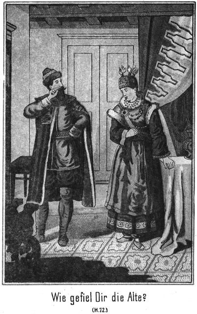»Das kann nur ein Wahnwitziger behaupten.«
»Oder nur ein Wahnwitziger kann es bezweifeln.«
»Wollen Sie etwa leugnen, daß die Papiere die Ihrigen sind und daß das Bekenntniß von Ihnen niedergeschrieben wurde?«
»Vor Gericht würde ich es freilich leugnen; hier aber unter sechs Augen gebe ich es Ihnen offen zu. Aber mit diesen Schreibereien haben Sie nicht die geringste Macht über mich erhalten.«
»Das ist lächerlich.«
»Ich kann es Ihnen beweisen.«
»Beweisen Sie es!«
»Schön! Wer hat das Bekenntniß, welches Sie soeben vorgelesen haben, geschrieben und auch untersiegelt?«
»Sie selbst.«
»Wer hat es entworfen, ich meine, dem Wortlaute nach?«
»Sie.«
»Ja. Sie hätten auch eine große Dummheit begangen, wenn Sie das entworfen hätten. Aber ebenso dumm waren Sie, daß Sie sich mit diesem Wortlaute einverstanden erklärten.«
»Schneiden Sie nicht auf!«
»Das thue ich nicht.«
»O doch! Ich möchte doch wissen, worinnen die Dummheit zu suchen sei.«
»In den Anfangsworten. Sie lauten ja doch ›Auf Verlangen des Herrn Grafen Alexei von Polikoff.‹ Ist's nicht so?«
»Ja.«
»Nun, diesen Anfang habe ich sehr mit Berechnung niedergeschrieben. Wenn ich auf Ihr Verlangen meine Sünde bekenne, so müssen Sie doch von derselben gewußt haben und auch heut noch wissen. Sie sind also der Mitschuldige von mir.«
Der Graf machte ein etwas undefinirbares Gesicht.
»Donnerwetter!« fluchte er.
»Ja,« lachte der Andere. »Sie sind überlistet. Sehen Sie das ein?«
»Den Teufel sehe ich ein!«
»Uebrigens habe ich meine Handschrift verstellt.«
»Das schadet nichts. Ich beschwöre, daß Sie es geschrieben haben.«
»Damit beschwören Sie Ihre Mitschuld. Und nun komme ich, nachdem Sie vorhin mit so viel Selbstbewußtsein mir meine Armseligkeit vorgeworfen haben. Ich kann Ihnen alle Ihre Trümpfe überstechen.«
»Das bilden Sie sich wirklich ein?«
»Ja.«
»Lassen Sie das bleiben!«
»Nicht doch! Ich bilde es mir übrigens nicht ein, sondern es ist eine unumstößliche Gewißheit. Warum haben Sie mir die auf Rapnin lautenden Papiere verschafft?«
»Aus Mitleid, um Sie zu retten.«
»Ja, Sie sind so eine grundgütige, mitleidige Seele! Ihre Barmherzigkeit ist gradezu unendlich. Ist Ihnen nicht vielleicht ein kleines indisches Ländchen Namens Nubrida bekannt?«
»Das geht Sie nichts an!«
»Vielleicht doch. Der Fürst dieses Landes hieß Banda. Er wurde von Ihnen über die Grenze gelockt und für mich ausgegeben, für Wassilai Saltikoff. Sie wollten seine Tochter haben, und darum mußte der Alte an meiner Stelle in die Wälder, um den Zobel zu jagen. Wenn er aber Saltikoff sein sollte, so mußte Saltikoff einen andern Namen erhalten. Darum brachten Sie mir die auf Rapnin lautenden Papiere. Sie haben nur Ihre Pläne verfolgt, aber keineswegs aus Mitleid gehandelt.«
»Und doch. Ich hätte den Maharadscha für einen jeden andern Verbrecher ausgeben können. Ich wählte grad Sie, weil ich mich für Sie interessirte.«
»Nun, so wünsche ich, daß Sie sich nicht mehr für mich interessiren. Es würde mir lieb sein, wenn Sie mich vergäßen, ganz vergäßen, mich niemals wieder aufsuchten.«
Der Graf war kleinlaut geworden. Er blickte vor sich nieder und meinte:
»Ich habe Sie auch keineswegs gesucht.«
»Aber Sie sind doch zu mir gekommen.«
»Zufall!«
»Das glaube ich nicht.«
»Fragen Sie Ihre Frau!«
»Wie kann die das wissen?«
»Sie hat erkennen müssen, daß ich nur gekommen bin, mir bei dem hiesigen Kreishauptmanne Gastfreundschaft zu erbitten. Das Sie es sind, habe ich nicht gewußt. Erst als Ihre Frau den Namen Rapnin nannte, erfuhr ich es. Ich habe stets geglaubt, daß Sie sich noch immer in Parankow befinden. Ihre Versetzung hierher war mir völlig unbekannt.«
»Wenn das wahr ist, warum treten Sie dann so feindselig gegen mich auf?«
»Habe ich nicht gute Gründe?«
»Keineswegs!«
»Sogar zwei!«
»Lassen Sie hören!«
»Erstens verhielt Ihre Frau sich feindselig und abweisend gegen mich.«
»Sie werden ihr Ursache dazu gegeben haben. Ich kenne ja die Art und Weise, in welcher Sie Andre behandeln. Und nun den zweiten Grund?«
»Sagten Sie nicht vorhin, daß Sie Lust hätten, mich mit Fliegenschwamm zu vergiften?«
»Nun ja. Ich will es nicht leugnen. Ich habe es gesagt.«
»Und da soll ich etwa herzlich zu Ihnen sein?«
»Herzlich? Das verlangt kein Mensch, der Sie kennt, ich aber am Allerwenigsten. So oft Sie sich bei uns sehen ließen, hat es stets ein Unheil gegeben. Wir sind also sehr wohl berechtigt, Ihren Besuchen mit Mißtrauen entgegen zu blicken. Es würde jedenfalls für beide Theile von Vortheil sein, wenn sie so thäten, als hätten sie einander niemals gekannt.«
»Ich würde darauf eingehen, wenn es mir möglich wäre.«
»Warum sollte es nicht möglich sein?«
»Weil ich Sie vielleicht noch brauchen kann.«
»Als Werkzeug Ihrer Pläne? Denken Sie nicht daran! Ich thu nicht wieder mit. Der Gebrannte scheut das Feuer. Was für einen Plan verfolgen Sie denn gegenwärtig?«
Die beiden Rapnin hatten ihre Anzüge nun angelegt. Sie rochen schrecklich nach Petroleum, sonst aber war ihnen keine Folge des nächtlichen Abenteuers mehr anzumerken. Der Graf schien ein ganz Anderer geworden zu sein. Er sah ein, daß er von Rapnin überlistet worden war. Er befand sich im Nachtheile gegen den Bezirkshauptmann, den er bisher für seine Kreatur gehalten hatte. Das machte ihn nachdenklich. Er durfte seinen Gegner ja nicht noch mehr herausfordern.
Still saß er wieder auf seinem Fasse, die Arme über die Brust verschränkt. Er überlegte. Dann nach einer kleinen Weile antwortete er:
»Nun wohl, ich will aufrichtig mit Ihnen sein. Wir können in Frieden auseinander kommen.«
»Das wäre ganz nach meinem Wunsche. Sie brauchen mir nur die Papiere herauszugeben, welche Sie vorhin vorzeigten.«
»Warum das? Ich denke, Sie fürchten diese Papiere nicht?«
»Ich fürchte sie auch nicht; aber unbequem können sie mir doch werden. Erst wenn sie vernichtet sind, kann ich ruhig und sicher sein.«
»Das glaube ich wohl. Aber meinen Sie, daß man solche Papiere aus der Hand giebt, ohne irgend welche Gegenleistungen dafür zu erhalten?«
»Ah! Sie spekuliren?«
»Natürlich!«
»Nun, so bedenken Sie, daß mein Bekenntniß Ihnen selbst gefährlich wird, falls Sie einen mir feindseligen Gebrauch davon machen wollen.«
»Hierin irren Sie sich höchst wahrscheinlich.«
»Ich glaube nicht.«
»O doch! Sie vergessen dabei Zweierlei. Erstens bin ich kein Kind, auch kein unvorsichtiger Mensch, welcher sich nicht reiflich überlegt, was er thut. Und zweitens giebt mein Rang mir volle Sicherheit, mich auf das Leichteste derjenigen Unannehmlichkeiten, an welche Sie wohl denken mögen, zu erwehren.«
»Wenn wir gegen einander aufrichtig sein wollen, so kann ich Ihnen einigermaßen, wenn auch nicht ganz Recht geben. Es ist immer am Allerbesten, wenn wir uns friedlich zu einander stellen.«
»Daran thun Sie sehr wohl. Ich bin unter Umständen bereit, Ihnen die Papiere auszuhändigen.«
»Welche Umstände sind dies?«
»Zunächst die Mittheilung, daß ich Gökala bei mir habe – –«
»Ich weiß es.«
»Von meiner Frau.«
»Die darf und soll aber doch Gökala gar nicht kennen!«
»Sie kennt sie auch nicht. Sie sagte mir, daß sich eine Dame in Ihrer Begleitung befinde. Ich ließ mir dieselbe beschreiben und erkannte aus dem Signalement natürlich sofort, wer sie ist.«
»Das stellt mich zufrieden. Also nun die weitere Mittheilung, daß ich den Maharadscha, ihren Vater, suche.«
Es glitt ein sehr befriedigtes Lächeln über das Gesicht des Kreishauptmannes, doch zeigte er dann sofort ein bedenkliches Kopfschütteln und meinte:
»Ein sehr schwieriges Beginnen.«
»Ich weiß das auch.«
»Wie wollen Sie ihn finden? Selbst Beamte wie ich, haben keine Kenntniß der Namen vieler ihrer Aufsicht unterstehenden Verbannten.«
»So muß man sich sofort an den obersten Beamten direct wenden.«
»An den Gouverneur? Er darf keine Mittheilung machen.«
»Ich hoffe, daß er gegen mich nicht zurückhaltend sein werde.«
»Möglich, aber nicht wahrscheinlich.«
»Mein Rang – – –«
»Bitte, bitte! Ihr Rang kann wohl einem Unterbeamten imponiren, nicht aber dem Gouverneur, welcher bei der Entfernung, die den Czaren und Petersburg von uns trennt, fast als ein unbeschränkter Herrscher bezeichnet werden kann.«
»So greift man zur List.«
»Der Gouverneur wird sich schwerlich überlisten lassen.«
»Ich meine natürlich die Bestechung. Irgend ein Unterbeamter wird die betreffenden Bücher zu führen haben. Einige Hundert oder meinetwegen auch Tausende von Rubeln reichen sicherlich aus, einen solchen Mann zu veranlassen, einmal nachzuschlagen.«
»Zugestanden. Aber bestenfalls erfahren Sie da, in welcher Gegend der Maharadscha aufzusuchen ist, und welche Nummer er führt. Sie erfahren das Jrkutsk und wissen dann, daß der Gesuchte droben in Kamtschatka sein Jagdgebiet hat. Dorthin können Sie nur, wenn die Sümpfe zugefroren sind, also im Winter. Sie müssen bis dahin warten. Dann unternehmen Sie die monatelange, gefährliche Reise. Bei Ihrer Ankunft dort erfahren Sie, daß er auf die Jagd ausgezogen ist. Wohin, das weiß Niemand. Nun können Sie ihn in den dichten Urwäldern und endlosen Mooren suchen.«
»Das Alles habe ich mir auch bereits gesagt; aber es muß eben unternommen werden. Ich muß ihn haben, falls er noch lebt.«
»Sie müssen? Warum?«
»Hm! Das zu beantworten, hieße wohl, meine Aufrichtigkeit zu weit treiben.«
»Nein, es hieße nur, klug gehandelt zu haben. Vielleicht bin ich im Stande, Ihnen irgend welche Auskunft zu ertheilen.«
»Wirklich?« fragte der Graf schnell.
»Ich habe nur gesagt, vielleicht,« antwortete der Kreishauptmann zurückhaltend.«
»Ich sehe es Ihnen aber an, daß Sie Etwas wissen!«
»Hm! Wenn es Ihnen an Aufrichtigkeit mangelt, habe ich auch keine Verpflichtung mittheilsam zu sein.«
»Wollen Sie mich etwa ausquetschen wie eine Citrone?«
»O nein; aber ich selbst soll, wie es scheint, ausgequetscht werden.«
»So sagen Sie mir vorher, ob ich in Wirklichkeit eine Mittheilung von Ihnen erwarten darf!«
»Nun, ich bin vielleicht im Stande, Ihnen eine Auskunft zu ertheilen, mit deren Hilfe Sie den Gesuchten bald zu finden vermögen.«
»So will ich reden. Ich befinde mich auf dem Wege nach Irkutsk. Gökala ist starr wie Eis. Ich habe mir bisher vergebliche Mühe gegeben, sie nachgiebig zu stimmen.«
»So ist sie noch immer nicht Ihre Frau?«
»Nein.«
»Donnerwetter! Nach so langer Zeit!«
»Sie ist wie Eisen.«
»Aber Sie haben sie doch in Ihrer Gewalt! Wenn Sie keine Liebe erhalten, so können Sie sich doch die erwünschten Zärtlichkeiten erzwingen.«
»Dasselbe habe ich mir auch gedacht. Aber ich habe mich ebenso in ihr geirrt, wie Sie sie falsch beurtheilen. Sie umhüllte sich mit solchen Vorsichtsmaßregeln, daß an einen Zwang gar nicht zu denken ist.«
»Pah! Ein Mann bezwingt ein Mädchen stets.«
»Dieses Mädchen nicht.«
»Sie sind ja tausendmal mit ihr allein!«
»Nein. Sie ist keinen Augenblick ohne Dienerschaft.«
»So jagen Sie diese dienstbaren Geister zum Teufel!«
»Das kann ich nicht. Sie ist bewaffnet. Sie würde sich wehren und dann unter keinem Umstände eine Minute länger bei mir bleiben.«
»Sie haben sie aber doch bisher gezwungen, bei Ihnen zu sein!«
»Nur dadurch, daß ich ihr zugeschworen habe, daß ihr Vater sterben muß, sobald sie mich verlassen sollte. Aus Liebe zu ihm, um ihm am Leben zu erhalten, bleibt sie bei mir. Aus keinem andern Grunde.«
»Nun, wenn sie ihm ein so schweres Opfer bringt, so sagen Sie ihr doch, daß er sterben muß, wenn sie sich länger weigert, die Ihre zu werden.«
»Das habe ich bereits oft versucht, aber vergeblich. Ihr Haß gegen mich ist doch noch stärker als ihre Kindesliebe.«
»Welche Dummheit!« lachte der Kreishauptmann. »Die Liebe eines Mannes von Ihren Qualitäten von sich zu weisen!«
»Spotten Sie nicht! Uebrigens würde ich es dennoch mit dem Zwang versuchen. Es ist ja gar nicht so unmöglich, sie zu isoliren und dann zu bezwingen; aber ich habe noch andere Rücksichten zu hegen als Diejenigen, welche mir die Liebe zu ihr gebietet.«
»Darf man erfahren, welche Rücksichten das sind?«
»Eigentlich nicht. Aber wir sind ja in diesem Falle Verbündete. Also hören Sie: Ich will Maharadscha von Banda werden.«
Der Kreishauptmann fuhr um einige Schritte zurück.
»Donnerwetter! Das wäre kühn!« rief er aus.
»Ja, kühn, aber doch zu erreichen.«
»Ein Maharadscha ist ja so viel wie ein Großherzog, ein souverainer Herrscher!«
»Meinen Sie etwa, ich hätte nicht das Zeug dazu?«
»Ganz von dieser Frage abgesehen. Wie aber wollen Sie das anfangen?«
»Dadurch, daß ich Gökala zwinge, freiwillig meine Frau zu werden.«
»Zwingen und freiwillig! Hahahaha!«
»In diesem Falle ist dies kein Widerspruch. Werde ich kirchlich mit ihr verbunden, mit ihr, der einzigen Erbin ihres Vaters, so muß ihr, also auch mir, die Herrschaft zufallen.«
»Er ist nicht daheim. Wie kann er da herrschen!«
»Ich erlöse ihn aus der Verbannung.«
»Ach so! Aber das Land hat ja bereits einen andern Herrscher!«
»Es ist ein entfernter Verwandter, ein Schwachkopf. Er behandelt seine Unterthanen mit solcher Härte und Grausamkeit, daß sie die Rückkehr des verschollenen Herrschers mit Jubel begrüßen würden.«
»Es scheint, daß Sie sich genau unterrichtet haben. Was aber hat dieser diplomatische Plan mit Ihrer jetzigen Anwesenheit hier zu thun?«
»Sehr viel. Ich will den Maharadscha aufsuchen, um mit ihm zu sprechen. Ich verheiße ihm Freiheit und Rettung, falls er einwilligt, mir seine Tochter zur Frau zu geben.«
»Sie denken, daß er Ja sagen wird?«
»Unbedingt! Er muß ja die Freiheit, in welcher er Herrscher ist und sein Kind bei sich hat, der Verbannung vorziehen.«
»Hm! Man kann einen Menschen sehr falsch beurtheilen und sich grad dann in ihm irren, wenn man seine Rechnung auf das Sicherste gestellt hat.«
»Auch daran habe ich gedacht. In diesem Falle appellire ich an Gökala's Kindesliebe.«
»An die Sie sich bereits vergebens gewendet haben, um die ersehnten Zärtlichkeiten zu erlangen!«
»Weil sie nicht genau weiß, wo sich ihr Vater befindet. Erfährt sie, daß er als verbannter Pelzjäger auf den eisumstarrten Ebenen Sibiriens friert und hungert, so wird sie wohl gern meine Frau werden, um ihn zu retten.«
»Sehr schön gedacht. Aber wenn sie sich dennoch weigert?«
»Nun, so greife ich zum letzten Mittel: Er muß sterben, und sie wird mein durch Gewalt. Haben muß ich sie, und wäre es nur für die kurze Zeit eines Tages.«
»Sie sind ja ganz und gar desperat verliebt in dieses Frauenzimmer!«
»Diese Liebe ist die einzige Schwäche, welche ich besitze, freilich eine geradezu ungeheure und verhängnißvolle Schwäche. Ich bin der Herr, der Peiniger Gökala's, und dennoch bin ich ihr Sclave. Es ist der Satan selbst, der mich dieses herrliche Wesen erblicken läßt. Ich trage, seit ich sie zum ersten Male sah, eine Hölle in mir herum.«
Er ballte die Fäuste und knirrschte mit den Zähnen. Der Kreishauptmann lachte!
»Wenden Sie sich an unsern Popen. Der wird Sie von dieser Hölle befreien. Sie haben ja heut erfahren, welch ein gewaltiger Teufelsbanner er ist.«
»Lassen Sie solchen Scherz! Mir ist sehr ernst zu Muthe. Ich erkenne, daß ich selbst mein größter Feind bin, und doch kann ich gegen diesen Feind nichts machen.«
»So rufen Sie doch um Hilfe! Vielleicht finden Sie Einen, der Sie von diesem Feinde befreit.«
»Wer sollte das sein?«
»Nun, ich zum Beispiel.«
»Sie? Sie wären der Kerl!«
»Ja, Sie halten mich für einen Schwachkopf. Na, ich habe nichts dagegen; wenigstens will ich darüber nicht mit Ihnen streiten. Aber wenn der kleine David den riesigen Goliath erlegte, so kann es vielleicht auch einmal einem notorischen Schwachkopf gelingen, Ihnen die erwartete Hilfe zu bringen.«
»Worin soll diese Hilfe bestehen?«
»Darin, daß ich Ihnen den Weg zum Maharadscha zeige.«
»Alle Wetter! Wissen Sie, wo er ist?«
»Ja.«
»Aber Sie haben doch keine Liste!«
»Ist auch nicht nothwendig.«
»Doch, doch! Wie können Sie seine Nummer und den Ort kennen, an welchem er lebt?«
»Die Nummer brauche ich nicht zu kennen, da ich ihn selbst kenne, wie Sie ja wissen.«
»Oh! Sie haben ihn gesehen?«
»Ja.«
»Wann? Wo? Schnell, schnell!«
»Nur Geduld! So augenblicklich, wie Sie meinen, ist die Angelegenheit doch nicht zu erledigen.«
»Warum nicht? Sie brauchen mir doch nur seine Nummer zu nennen und seinen Aufenthaltsort zu sagen!«
»Da muß ich Ihnen ganz so antworten wie Sie vorhin mir: Glauben Sie, daß man eine solche Mittheilung ohne eine entsprechende Gegenleistung macht?«
»Und ich antworte Ihnen ebenfalls so, wie Sie vorhin mir: Sie wollen speculiren?«
»Natürlich!«
»Er lebt und ist gesund.«
»Befindet er sich weit von hier?«
»Ich habe keinen Grund, diese Frage zu beantworten.«
»Kreuzmillionendonnerwetter! Reden Sie doch!«
Er befand sich in einer bedeutenden Aufregung. Er hatte den Kreishauptmann am Arme gepackt und schüttelte denselben.
»Lassen Sie mich los!« lachte der Beamte. »Sie befinden sich doch ganz in Exstase!«
»Ist das ein Wunder? Also reden Sie schnell, damit ich ruhiger werde.«
»Werde mich hüten! Was habe ich davon?«
»Was verlangen Sie?«
»Die Papiere.«
»Gut. Sie sollen sie haben.«
»Wann?«
»Sobald ich den Gesuchten gefunden habe.«
»Danke sehr! Auf diese Weise werden Sie ihn niemals finden.«
»Wieso?«
»Weil ich mich hüten werde, Ihnen zu sagen, wo er ist. Ich mißtraue Ihnen.«
»Zum Teufel! Das sagen Sie mir so grad in das Gesicht!«
»Ich habe Ursache dazu.«
»Ich halte mein Wort!«
»Das sagen Sie jetzt. Aber Ihr Versprechen bietet mir keine Garantie.«
»Herrrrrr!« brauste der Graf auf. »Ich bin Edelmann!«
»Meinetwegen! Es haben tausende von Edelmännern ihr Wort gebrochen.«
»Aber ich noch nicht!«
»Darüber habe ich kein Urtheil. Ich gehe sicher.«
»Was verlangen Sie denn?«
»Ich muß gewärtig sein, Sie suchen und finden den Maharadscha und gehen fort, ohne mir die Papiere auszuhändigen. Darum – – –«
»Ich halte mein Wort!« unterbrach ihn der Graf.
»Vielleicht haben Sie wirklich jetzt den besten Willen dazu. Aber wenn Sie den Gesuchten zum Beispiele im fernen Urwalde finden, wie erhalte ich dann die versprochenen Papiere?«
»Ich bringe sie Ihnen.«
»Aus solcher Ferne her? Pah!«
»Ist mirs zu weit, so sende ich sie Ihnen.«
»Danke sehr! Da können sie geöffnet werden, und ich sitze in der Tinte. Nein, das ist mir zu gefährlich. Wir machen einen ehrlichen Tauschhandel, bei welchem der Grundsatz gilt, Waare gegen Waare.«
»Schön! Aber welche Waaren sollen umgetauscht werden?«
»Die Papiere gegen meine Mittheilung, wo der Maharadscha zu finden ist.«
»Das ist für mich ein sehr schlechter Tausch.«
»O nein, denn Sie erhalten die Papiere, also etwas Reales, etwas Greifbares; ich aber empfange eine blose Mittheilung und habe nicht die mindeste Garantie, daß sie sich bewähren werde.«
»Ich sage die Wahrheit!«
»Welche Bürgschaft haben Sie? Ich spreche jetzt so wie vorhin Sie. Ich traue Ihnen nicht.«
»Nun, so haben Sie mich doch immer in Ihrer Hand. Selbst wenn Sie die Papiere nicht mehr besitzen, können Sie anzeigen, daß ich nicht Rapnin, sondern Saltikoff heiße und eigentlich ein Verbannter bin.«
»Recht haben Sie da freilich. Sie können dann abgesetzt und bestraft werden.«
»Gewiß! Wenn es auch längere Zeit dauern wird, bis man mir beweisen kann, daß Sie die Wahrheit gesagt haben. Sie riskiren also gar nichts.«
»Hm! Verdammte Geschichte! Sagen Sie mir nur das Eine vorher: Habe ich mich weit von hier zu entfernen?«
»Werden wir jetzt gleich einig, so können Sie ihn in zwei Tagen einholen. Entschließen Sie sich aber nicht rasch, so schweige ich auch später. Dann können Sie ihn unten am Eismeere suchen.«
»War er etwa hier?«
»Ja.«
»So mache ich den Handel mit! Sagen Sie mir, was ich wissen muß. Hier sind die Papiere dafür zurück.«
Er zog sie aus der Tasche und hielt sie ihm hin, mußte sich aber nicht wenig wundern, daß der Kreishauptmann nicht schnell zugriff, sondern abwehrend sagte:
»Gemach, gemach! Noch sind wir nicht fertig.«
»Was denn noch?«
»Ich würde sofort zugreifen; aber eine Bemerkung, welche Sie machten, hindert mich daran. Ich muß vorher mit meinem Gewissen zu Rathe gehen.«
»Der Teufel hole Ihr Gewissen!«
»O nein. Vielleicht wüßte er gar nicht, was er damit anfangen sollte.«
»Das glaube ich wohl, denn es ist so durchlöchert wie ein Sieb.«
»Sie scheinen mein Inneres sehr eingehend betrachtet zu haben, dennoch aber bin ich zu gewissenhaft, als daß ich einen Mord auf meine Seele nehmen möchte.«
»Wer spricht denn von einem Morde?«
»Sie doch!«
»Oho!«
»Vorhin. Oder sagten Sie nicht, daß Sie im letzten Falle den Maharadscha tödten würden?«
»Aber nur im letzten Falle!«
»Nun, dieser Fall kann ja doch eintreten, und dann hätte ich Antheil an diesem Morde.«
»Das wird Sie wenig geniren. Seit wann sind Sie denn gar so zartfühlend geworden?«
»Seit ich mich in Verhältnissen befinde, welche nicht die zartesten sind.«
Der Graf blickte ihn forschend an und fragte sodann:
»Aha! Geldnoth?«
»Leider.«
»Aus welcher ich Ihnen helfen soll?«
»Hoffentlich!«
»So verlangen Sie nicht nur die Papiere, sondern auch noch Geld?«
»Versteht sich!«
»Das ist unverschämt!«
»So brauchen Sie sich ja gar nicht mit mir zu unterhalten. Als unverschämt zu gelten, dazu habe ich keine Lust. Komm, Iwan!«
Er nahm seinen Sohn bei der Hand. Der Graf trat ihnen schnell in den Weg und sagte:
»Macht keine Dummheiten! Wir brauchen unsere Ausdrücke doch wahrlich nicht auf die Goldwage zu legen. Ich bin bereit, eine Summe zu bezahlen.«
»Schön! Das giebt der Sache eine andere, eine bessere Wendung.«
»Wie viel verlangen Sie?«
»Wie viel geben Sie?«
»Ich zahle – sagen wir fünfhundert Rubel.«
»Fünftausend Ru – – –«
»Hundert, nicht tausend!« fiel der Graf schnell ein.
Der Kreishauptmann aber fuhr unbeirrt fort:
»Fünftausend Rubel? Hm, bei so einem Angebote läßt sich die Sache wenigstens überlegen. Ich denke jedoch, daß – – –«
»Hole Sie der Teufel!« unterbrach ihn der Graf. »Wer hat denn von fünftausend Rubeln gesprochen?«
»Sie doch!«
»Ist mir nicht eingefallen. Ich habe fünfhundert geboten, keine Kopeke mehr.«
»Fünfhundert? Schämen Sie sich, Graf! So bezahlt man einen Bettler, nicht aber mich. Lassen wir da lieber unser Thema fallen und gehen wir endlich hinauf nach der Wohnung. Die Luft behagt mir hier nicht mehr.«
Er wollte gehen. Der Graf aber hielt ihn zurück.
»Mann! Bedenken Sie doch! Fünftausend Rubel!«
»Eine Kleinigkeit für Sie.«
»Sie sind ein Gurgelabschneider!«
»Es steht ja ganz in Ihrem Belieben, mit mir zu verkehren oder nicht.«
»Sapperment! Seien Sie doch verständig.«
»Das bin ich ja.«
»Reden Sie ernsthaft. Wie viel wollen Sie haben?«
»Ich habe es bereits gesagt: Bei fünftausend Rubel läßt sich die Sache überlegen.«
»Auch noch blos überlegen?«
»Ich verlange eine feste Forderung. Auf das Ueberlegen kann ich mich nicht einlassen. Ich habe keine Zeit dazu.«
»Nun gut. Ich will auch nicht unbillig sein und also nur fünftausend verlangen.«
»Hole Sie der Teufel!«
»Das haben Sie mir heut schon einige Male angewünscht. Er scheint aber Ihre Befehle nur ungern zu vollziehen.«
»Ich will Ihnen sagen, daß wir die Sache kurz machen wollen. Sind Sie mit dreitausend zufrieden? Ja oder nein?«
»Nein!«
»So sind wir mit einander fertig.«
»Schön! Gehen wir. Das Licht wird sogleich heruntergebrannt sein.«
Er wendete sich zum dritten Male nach der Treppe. Der Graf befand sich in äußerster Verlegenheit.
»Noch einen Augenblick!« sagte er.
»Was noch?«
»Sie gehen nicht herab?«
»Nein, keine Kopeke.«
»Spitzbube!«
»Bitte, keine Komplimente! Sie sind bei mir nicht angebracht.«
»Sie wissen, daß ich nothwendig erfahren muß, was ich wissen möchte. Darauf pochen Sie und stellen nun einen so horrenden Preis.«
»Ein Jeder sucht das Seine.«
»Sie handeln Unrecht an mir.«
»Pah! Streiten doch wir Beide uns ja nicht darüber, was Recht oder Unrecht ist. Wir sind Beide gleich hart gesotten. Also machen Sie mit oder nicht.«
»Ich bin ja gezwungen.«
»Gut, so sind wir einig.«
»Unter einer Bedingung.«
»Auch noch Bedingungen. Welche?«
»Wissen Sie wirklich genau, daß ich den Maharadscha binnen zwei Tagen haben werde?«
»Ganz gewiß.«
»Ich muß aber schleunigst aufbrechen?«
»Natürlich, denn er hat Eile, und je weiter er sich entfernt, desto später holen Sie ihn ein, vielleicht auch gar nicht.«
»Das giebt also einen Parforceritt.«
»Allerdings.«
»Da kann ich Gökala unmöglich mitnehmen.«
»Das ist wahr. Lassen Sie sie hier. Sie können sie ja abholen.«
»Ist sie mir aber auch bei Ihnen sicher?«
»Vielleicht sicherer als bei Ihnen.«
»Sie lassen sie natürlich nicht aus dem Hause.«
»Ganz nach Ihrem Wunsche.«
»Und kein Mensch darf zu ihr, ausgenommen Sie, Ihre Frau und Ihr Sohn.«
»Einverstanden.«
»So breche ich gleich auf und gebe Ihnen die Papiere. Nach meiner Rückkehr erhalten Sie das Geld.«
»Warum erst dann?«
»Auch ich will einige Sicherheit haben. Sie sind doppelt gedeckt und geschützt. Sie haben die Papiere und auch Gökala.«
»Hm! Ich will nicht unbillig sein und gehe auf Ihren Vorschlag ein. Aber zweitausend zahlen Sie jetzt, die andern dreitausend nach Ihrer Rückkehr.«
»Sind Sie denn gar so geldhungrig.«
»Nein, aber geldbedürftig.«
»Wenn das ist, so sollen Sie Ihren Willen haben. Sie sehen, wie anständig ich bin. Ich hoffe, Sie werden sich ebenso gegen mich verhalten.«
»Natürlich. Also bitte, zahlen Sie!«
»Nur nicht gleich. Erst will ich Ihre Mittheilung hören.«
»Gut! Der Maharadscha hat die Nummer Fünf. Er war bis gestern zum Jahrmarkt hier und hat sich einer Jagdgesellschaft angeschlossen, welche von einem Kaufmanne gegründet wurde, der aus Orenburg ist und Peter Lomonow heißt. Nummer Fünf ist als der beste Zobeljäger bekannt und wird in Folge dessen als Anführer der Gesellschaft fungiren.«
»Auf diese Mittheilung kann ich mich wirklich verlassen?«
»Ich beeide sie, wenn Sie wollen.«
»Gut! Wohin hat sich die Gesellschaft gewendet?«
»Sie hat die Richtung nach dem Mäckenflusse eingeschlagen. Er ist von hier aus in zwei Tagen zu erreichen.«
»Werden sich die Leute dort verweilen?«
»Sie müssen auf alle Fälle einen Tag dort Rast halten.«
»So reite ich sofort ab. Können Sie mir frische Pferde besorgen?«
»Wenn Sie gut zahlen, ja.«
»Ich geize nicht. Eine Bedeckung muß ich aber auch haben.«
»Ich gebe Ihnen zehn Kosaken mit, die Sie allerdings zu bezahlen und auch zu unterhalten haben.«
»Einverstanden! Hoffentlich kennen diese Leute die Gegend, durch welche wir kommen?«
»Ich gebe Ihnen Einen mit, auf dessen Ortskenntniß Sie sich verlassen können.«
»Wann kann ich da aufbrechen?«
»Bereits in einer Stunde, wenn es Ihnen so angenehm ist.«
»Ich bin mit dieser Schnelligkeit einverstanden.«
»So besprechen wir das Uebrige oben. Jetzt aber bitte ich um die Papiere und die Zweitausend Rubel.«
»Taugenichts! Damit könnten Sie doch auch warten, bis wir oben sind. Aber sie sollen es auch hier haben. Da, nehmen Sie!«
Er gab ihm die vielfach erwähnten Papiere und dann aus einer wohlgefüllten Brieftasche zwei Tausendrubelscheine. Der Kreishauptmann prüfte Alles genau, steckte dann das Empfangene in die Außentasche seines Rockes und sagte:
»Abgemacht! Jetzt sind wir Beide unsere Sorge los und können hoffentlich in Zukunft in Freundschaft an einander denken.«
»Wenigstens mich haben Sie nicht zu fürchten. Es ist das letzte Mal, daß ich in Sibirien bin. Ich mag keine Fliegenpilze essen.«
»Pah! Reden mir nicht mehr davon, denn – – Sapperment! Da ist das Licht verlöscht, grad im letzten Augenblicke.«
»Na, wir brauchen es glücklicher Weise nicht mehr. Wir sind ja fertig.«
Kein Umstand konnte dem verborgenen Lauscher so willkommen sein, wie das Auslöschen des Lichtes. Er zitterte fast vor Begierde, die betreffenden Papiere an sich zu bringen. Er war mit sich zu Rathe gegangen, auf welche Weise dies am Besten zu erreichen sei, hatte aber keinen ausführbaren Gedanken finden können.
Von seinem Verstecke aus hatte er ganz deutlich gesehen, wohin die Papiere von dem Kreishauptmanne gesteckt worden waren. Jetzt nun, da das Licht verlöschte, kam ihm mit einem Male die richtige Idee.
Er huschte hinter der Flaschenstellage vor und stellte sich auf die Lauer.
»Ja, fertig sind wir,« stimmte der Kreishauptmann bei. »Gehen wir also!«
»Vorher aber die Bemerkung, daß kein Mensch erfahren darf, was hier vorgegangen und verhandelt worden ist!«
»Diese Bemerkung ist sehr überflüssig.«
»Ich machte sie wegen Gökala. Diese darf am Wenigsten eine Ahnung haben.«
»Verlassen Sie sich auf uns! Wir sind verschwiegen wie geräucherte Sardinen. Nun aber fort von hier. Werden Sie den Weg finden?«
»Ganz leicht.«
»Iwan mag vorangehen, Sie in der Mitte und ich hinterher.«
Die Drei setzten sich in Bewegung. Sie hatten sich jenseits der Treppe, Sam aber sich diesseits derselben befunden. Jetzt huschte er hin und streckte die Hand aus, aber nur so weit, wie die Mauer reichte, so daß die Röcke der sich Entfernenden seine Finger streifen mußten.
Auf diese Weise fühlte er erst den Rittmeister, dann den Grafen und endlich auch den Kreishauptmann. Hinter dem Letzteren stieg er leise mit empor. Man konnte ihn nicht hören, da die Drei stark auftraten.
Er langte nach der Tasche, vorsichtig, außerordentlich vorsichtig. Es glückte prächtig. Bereits auf der vierten Stufe hatte er den Inhalt der Tasche in seiner Hand. Nun fiel es ihm natürlich nicht ein, ihnen zu folgen, sondern er huschte zurück, wieder in den Keller hinab. Dort unten an der Treppe blieb er lauschend stehen.
Die Drei öffneten oben die Thür und blieben dort ebenfalls stehen. Sam hörte den Kreishauptmann sagen:
»Das Volk da draußen habe ich ganz vergessen. Mach einmal die Thür ein Wenig auf, Iwan, und schau nach, ob die Leute noch draußen sind.«
Der Sohn folgte dieser Aufforderung und gab eine Antwort, welche Sam nicht verstand.
»Habe es mir gedacht,« meinte der Kreishauptmann. »Die gehen nicht eher fort, als bis sie Prügel bekommen. Was thun wir da?«
»Was hat es denn eigentlich gegeben?« fragte der Graf. »Wie sind sie in die fatale Lage gekommen?«
»Durch einen Schurkenstreich, den wir uns jetzt noch nicht zu erklären vermögen. Wir werden aber die Sache untersuchen, und wehe dann dem Schuldigen!«
»In Werg mit Theer eingewickelt zu werden! Das ist doch ungeheuerlich. Wie ist das eigentlich möglich gewesen?«
»Das wissen wir, wie gesagt, jetzt noch nicht.«
Er erzählte in kurzen Worten das Vorkommniß. Als er geendet hatte, sagte der Graf:
»Das ist freilich ungeheuer geheimnißvoll. Der Kosak ist also fort?«
»Natürlich. Er ist entkommen.«
»So haben ihm einige Kameraden geholfen.«
»Das glaube ich nicht.«
»Warum nicht?«
»Die wagen das nicht.«
»Oho! Unter den Kosaken herrscht ein ganz besonderer Corpsgeist.«
»Er ist ja gar kein Kosak.«
»Was denn?«
»Ein Verbannter, dem erlaubt war, Soldat zu werden. Das müssen Sie ja bereits aus seiner Nummer ersehen.«
»Welcher Nationalität?«
»Russe. Wenigstens ist sein Name russisch.«
»Ich denke, den wissen Sie gar nicht, sondern nur die Nummer.«
»Sobald ein Verbannter in das Militär treten darf, kommt sein Name, obgleich er nur bei der Nummer genannt wird, mit in die Liste.«
»Wie hieß er?«
»Orzeltschasta.«
Der Graf mochte nur gefragt haben, ohne eine besondere Absicht dabei zu hegen. Er interessirte sich für den jungen Mann, dem die Flucht auf eine so eigenartige Weise gelungen war. Als er aber diesen Namen hörte, ergriff er den Arm des Kreishauptmannes, zog ihn wieder auf die Kellertreppe zurück und sagte:
»Orzeltschasta! Wissen Sie das gewiß?«
»Sie irren sich wirklich nicht?«
»Nein. Sein Name ist ein so seltener, daß man ihn sich leicht einprägt. Nicht wahr, Iwan, er heißt so?«
»Ja,« antwortete der Rittmeister, welcher von der Hausthür wieder herbeigekommen und zu ihnen getreten war.
»Alle Teufel! Orzeltschasta! Das ist doch wohl eigentlich gar kein russischer Name.«
»Wieso?«
»Haben Sie ihn schon einmal gehört?«
»Nein, nie.«
»Ich auch nicht. Vielleicht ist es eine Uebersetzung aus einer anderen Sprache. Kennen Sie seinen Vornamen?«
»Ich nicht. Iwan, kennst Du ihn?«
»Sehr genau. Der Kerl hat sich stets in der Weise gegen mich verhalten, daß ich mich mehr um ihn kümmerte, als um jeden Anderen. Er heißt Jurji.«
»Donnerwetter! Sollte das möglich sein. Welch ein Zufall wäre das!«
»Was?«
»Ich kenne eine deutsche Familie, eine ganz verdammte Sippe, der ich Tod und Rache geschworen habe. Ihr Name ist Adlerhorst. Das heißt auf russisch Orzeltschasta. Ein Sohn dieser Familie heisst Georg, also Jurji Orzeltschasta. Sollte das dieser Kerl sein.«
»Hm!« brummte der Rittmeister. »Was war dieser Georg?«
»Offizier.«
»Das stimmt, das stimmt!«
»Wieso?«
»Als ich gestern mit ihm zusammengerieth, rühmte er sich, Offizier und Edelmann zu sein.«
»Verflucht! Die Sache wird immer wahrscheinlicher. Wissen Sie nicht, ob er Deutsch versteht?«
»Er hüllte sich in dieser Beziehung in das tiefste Geheimniß, aber ich habe doch entdeckt, daß er Französisch, Englisch und Deutsch verstand.«
»So ist er es, so ist er es! Seine Spur führte damals nach Rußland. Weshalb wurde er mit der Verbannung bestraft?«
»In der Liste steht, wegen Aufwiegelung.«
»Das hat nichts zu sagen. Er wird sich bei einem seiner Oberen mißliebig gemacht haben. Da sind die Herren gleich mit der Verbannung da. Also wenn ist er desertirt?«
»Heut Nacht.«
»Ah, wäre ich doch gestern schon gekommen! Ich hätte ihn erkannt.
»Kennen Sie ihn denn?«
»Ich habe ihn noch niemals gesehen. Aber die Glieder dieser Familie haben eine solche Aehnlichkeit unter einander, daß man sich gar nicht irren kann. Haben Sie eine Ahnung, wohin er ist!«
»Nein.«
»Aber Sie haben bereits Maßregeln zu seiner Ergreifung getroffen?«
»Auch nicht.«
»Donnerwetter! Warum nicht? Das ist doch Ihre Pflicht.«
»Das weiß ich auch. Aber sagen Sie mir gefälligst, wenn ich diese Maßregel, hätte treffen können.«
»Natürlich sofort nach seiner Flucht.«
»Da steckte ich doch angebunden in diesem verteufelten Feuerwerksgebäude.«
»Ah ja! Richtig!«
»Und bin erst jetzt wieder frei und dispositionsfähig.«
»Bitte um Entschuldigung! Daran habe ich gar nicht gedacht.«
»Ueberhaupt habe ich mich noch gar nicht überzeugen können, ob er auch wirklich fort ist.«
»Na, hier geblieben wird er nicht sein.«
»Das denke ich auch. Er sollte in eine härtere Klasse versetzt und heut früh forttransportirt werden.«
»Hat er das gewußt?«
»Schwerlich. Aber er konnte es sich gar wohl denken.«
»So ist er fort.«
»Ich werde mich sofort überzeugen.«
»Schön! Thun Sie das aber schnell, noch ehe ich abreise, damit ich das Resultat erfahre.«
»Dieses kann ich Ihnen sagen. Ich wette, daß er echappirt ist.«
»Sie werden ihn aber verfolgen lassen?«
»Das versteht sich doch ganz von selbst. Es ist meine Pflicht, wie Sie vorhin sagten. Uebrigens hat er mich tödtlich beleidigt und ich werde schon aus diesem Grunde, ja ganz besonders aus diesem Grunde nicht eher ruhen, als bis ich ihn ergriffen habe.«
»Es frägt sich, ob er sich mit Hilfsmitteln versehen hat.«
»Was verstehen Sie darunter?«
»Nun, Proviant, Munition, ein Pferd und so weiter.«
»Das kann ich sehr leicht erfahren.«
»Rapportiren Sie mir auch das. Ich verlange es nicht umsonst. Ergreifen Sie ihn, und ich finde, daß er der betreffende Georg Adlerhorst ist, so zahle ich Ihnen freiwillig eine Prämie von tausend Rubeln.«
»Heiliger Bastian! Wirklich?«
»Ja, ich halte Wort.«
»Nun, so lasse ich alle Mienen springen, und es ist bereits jetzt so gut, als ob er schon wieder eingefangen sei.«
»Nur nicht zu sanguinisch!«
»Pah! Ich kenne mich und meine Leute. Aus Pflicht, aus Haß und Rache und um tausend Rubel zu verdienen, werde ich alle Kräfte anstrengen.«
*
»So eilen Sie! Versäumen Sie keine Minute. Selbst eine Secunde kann unter solchen Verhältnissen kostbar sein.«
»Daß weiß ich gar wohl. Drum werde ich sofort meine Maßregeln treffen. Aber draussen wartet das Volk noch. Was soll ich sagen, Vater, wenn ich hinaus trete.«
»Das weiß ich nicht. Sinne Dir irgend eine Ausrede aus!«
»Ja, welche?«
»Strenge Deinen Kopf nur selbst an!«
»Das ist leicht gesagt. Nach der Ansicht dieser Dummköpfe ist der Teufel mit seiner Großmutter hier ins Haus herein. Wohin sind sie da?«
»Machen Sie ihnen doch Etwas weiß,« lachte der Graf. »Haben Sie keinen Schwefel in Ihrer Hauswirthschaft?«
»Schwefelfaden genug.«
»Nun, Sie wissen ja, daß der Teufel nach Schwefel stinkt!«
»So sagt man!«
»Brennen Sie in irgend einem Kamine oder vor einem Ofen Schwefel an, so daß es darnach stinkt. Dann sagen Sie, der Satan sei mit seiner Großmutter durch die Feueresse verschwunden.«
»Schön! Diese albernen Leute werden das ganz gern glauben. Aber soll ich das ganze Volk herein lasten, damit es sich überzeugen kann, daß es hier nach Schwefel riecht?«
»Das geht nicht. Ist vielleicht der Pope noch mit draußen?«
»Er steht ganz in der Nähe der Thür.«
»Nun, so holen Sie den herein. Wenn er es riecht und es glaubt, so glauben es die Andern auch. Also kommen Sie. Wir haben genug geschwätzt und müssen nun handeln. Ich muß mit Gökala sprechen, um ihr zu sagen, wie sie sich nach meiner Abreise zu verhalten hat. Und dann treffe ich meine Reisevorbereitungen. Sie aber mögen sich zunächst um Schwefel bekümmern.«
»Der ist droben in der Küche. Wir gehen hinauf.«
»So kommen Sie!«
Sie verließen die Kellerstufen, traten in den Hausflur und schlossen die Thür von draußen zu. Im Nu war Sam auf der obersten Stufe und lauschte. Er hörte deutlich, daß die hölzerne Treppe unter den Schritten dreier Männer knarrte.
Der Hausflur war leer. Sam schob den Riegel auf, trat hinaus und zog die Thür hinter sich zu, so daß der Riegel wieder einschnappte. Dann wendete er sich zur Flucht.
Aber wohin? Zur Hausthür hinaus konnte er nicht, denn da sah man ihn. Also nach der Hinterthür! Als er diese geöffnet hatte, befand er sich in einem kleinen, schmalen, von Planken eingefaßten Hof. Die Planken waren alt, aber über mannshoch. Schon dachte er daran, diesen Zaun zu überspringen oder einige Planken auszureißen, wobei er aber leicht gesehen oder gehört werden konnte, da bemerkte er glücklicher Weise eine Pforte in dem Zaune, und zwar ganz am Hause liegend, so daß er sich bis zu ihr an der Mauer hinschleichen konnte.
Das war ihm natürlich hoch willkommen. Er huschte hin zu ihr und öffnete. Er befand sich auf einem größeren freien Platze, welcher als Küchengarten benutzt wurde. Das war ihm außerordentlich willkommen.
Ein Rundblick, den er hielt, zeigte ihm links eine zweite Pforte, welche aus diesem Garten weiter führte. Wohin, das wußte er freilich nicht; aber es kam ihm vor allen Dingen darauf an, aus der Nähe des Hauses zu kommen. Darum schlich er sich an der andern Seite des Plankenzaunes nach dieser Pforte hin. Sie war nur mit einem hölzernen Riegel verschlossen. Er schob ihn zurück und lugte vorsichtig hinaus. Er befand sich in einer Art engen Gasse, welche von ähnlichen Plankeneinfassungen gebildet wurde. Kein Mensch war zu sehen.
»Gott sei Dank!« seufzte er erleichtert auf. »Das Abenteuer hat ein glückliches Ende gefunden!«
Jetzt eilte er weiter, bog um mehrere Ecken und Häuser und gelangte nun von einer ganz andern Seite auf den Platz, auf welchem das Publikum versammelt war, um zu erfahren, welch ein Unheil der Teufel im Regierungsgebäude angerichtet habe.
Bemerkt muß werden, daß Sam sich nie von seiner alten Büchse zu trennen pflegte. Er hatte sie auch jetzt mit gehabt, und dadurch war ihm die Ausführung seines Vorhabens nicht wenig erschwert worden.
Seitwärts standen einige Pfähle, zu irgend einem Zwecke in die Erde gerammt. An zweien derselben lehnten Jim und Tim, welche mit besorgten Mienen die Fronte des Regierungsgebäudes beobachteten. Sie wußten ihren Freund Sam im Innern desselben und glaubten ihn in einer Lage, in welcher er wahrscheinlich ihrer Hilfe bedurfte. Darum heiterten sich ihre Gesichter sofort auf, als sie ihn kommen sahen.
»Aber, alter Sam, wo kommst Du her?« fragte Jim. »Wir meinen. Du seist dort links in dem alten Wigwam des hiesigen Regenten, und da kommst Du von rechts her herbeigeschlichen. Wir haben beinahe Angst um Dich gehabt.«
»Angst? Was fällt Euch ein! Bin ich denn ein Grünschnabel, daß Ihr Euch um mich ängstigen müßt?«
»Das nicht. Du hast ja da drüben in der Prairie so oft gezeigt, welch ein verfluchter Junge Du bist. Aber hier sind wir weder im Urwalde noch in der Savanne, sondern in dem schönen Sibirien, wo man eine Sprache redet, die kein Teufel versteht und Alles so ganz anders ist. Wie ist es denn in dem Palaste?«
»Sehr gut! Sogar ausgezeichnet, sage ich Euch.«
»Das läßt sich hören!«
»Es ist so gut gegangen, daß ich sogar zwei solche Zettel mitbringe.«
Er zog sie heraus und zeigte sie ihnen.
»Was sind das für Liebesbriefe? Etwa gar Dollarsnoten?«
»Beinahe. Es sind zwei Tausendrubelscheine.«
»Heiliger Bimbam! Wie bist Du zu diesem vielen Gelde gekommen?«
»Wie jeder Spitzbube.«
»Alle Teufel! Hast Du sie etwa gemaust?«
»Ja.«
»Und wem denn?«
»Dem Herrn Kreishauptmann.«
»Doch nicht etwa direct aus seinem Geldkasten?«
»Nein, ein Einbrecher bin ich nicht, sondern ein grundehrlicher Kerl. Ich habe sie ihm nur aus der Tasche genommen.«
»Tim, hörst Du es?«
»Well!«
»Aus der Tasche genommen! Und da nennt sich dieser Mensch einen grundehrlichen Kerl! Aber, Sam, eine besondere Bewandtniß hat es mit dem Gelde. Nicht?«
»Natürlich.«
»Ein Spitzbube bist Du nicht; also denke ich, daß diese Banknoten Dir bei einer Gelegenheit in den Fingern kleben geblieben sind.«
»Hasts errathen.«
»Welche Gelegenheit war es?«
»Ich mauste etwas Anderes, und da steckten sie mit dabei.
»Also dennoch gemaust!«
»Ja. Wenn ein ehrlicher Kerl einmal auf das Zuchthaus lossteuert, so greift er gleich mit vollen Händen zu. Ich will lieber wegen einer Million als wegen lumpigen zwei Dollars bestraft werden.«
»Weiß Gott, der Kerl redet wie der reine Räuberhauptmann!«
»Bin es auch, und Ihr Beiden seid meine Räuberbande.«
»Danke für die Ehre! Habe keinen Appetit, eines schönen Tages am Galgen vorüber zu laufen und mich zu meinem großen Schrecke daran baumeln zu sehen.«
»So weit ist es noch nicht. Dazu sind wir zu klug. Erwischen lassen, das ist nicht unsere Gewohnheit. Freilich war ich jetzt nahe daran und bin froh, so heiler Haut davon gekommen zu sein.«
»Was gab es denn?«
»Allerlei, was ich Euch erzählen werde. Aber schaut, da wird die Thür geöffnet. Der Herr Rittmeister tritt heraus. Er hat wahrhaftig die Kosakenuniform an. Soeben war er noch in Civil.«
»Du meinst in Theer und Werg?«
»Nein, das hatte er sich mit Petroleum weggewaschen; dann zog er ganz gewöhnliches Zeug an, Rock, Hose und Weste. Er hat sich also, seit er aus dem Keller ist, in einen andern Gottfried Adam gesteckt.«
»Keller? War er im Keller?«
»Ja, er, zwei Andere und auch ich. Seht, er ruft den Popen hinein, diesen frommen Master Teufelsbanner. Er wird ihm eine famose Anecdote aufbinden.«
»Das weißt Du?«
»Ja. Ich habe Alles gehört. Er wird sagen: ›Sir, kommt einmal her und riecht an dieses Kamin! Stinkt es nicht nach Schwefel?‹« Und der gottselige Sir wird antworten:›Verdamm mich, wenns nicht so ist! Es stinkt ganz gewaltig nach Hölle und Schwefel!‹« Und darauf wird man ihm erklären: »›Das kommt davon, daß der Teufel mit seiner ehrwürdigen Großmutter hier durch diese Esse gefahren ist!‹« Das lügenhafte Volk hat nämlich Schwefelfäden angebrannt.«
»Ah! Um die guten Leute hier irre zu führen? Kein Indianer würde sich damit täuschen lassen.«
»Ja, aber diese Heiden hier haben alle ein solches Brett vor dem Kopfe, daß man sie bemitleiden möchte. Aber da schaut nur einmal nach rückwärts! Sind das nicht die beiden Posten, welchen wir gestern Abend einen so riesigen Frosch aufgebunden haben?«
»Ja. Die beiden armen Teufel stehen jetzt noch da.«
»Das ist ganz russisch. Der Rittmeister hat ihnen befohlen, Wache zu stehen, bis er selbst sie ablösen läßt. Und da er sie nicht hat ablösen lassen können, stehen sie jetzt noch da. In einem andern Lande kann so Etwas nicht vorkommen. Schaut, jetzt kommt der Pope wieder. Er wird das Volk zerstreuen. Horcht!«
Wirklich erhob der Pope seine Stimme. Jim und Tim verstanden zu wenig Russisch, als daß sie hätten wissen können, was er sagte. Sie fragten also Sam. Er antwortete:
»Ganz so, wie ich Euch prophezeite. Er sagt, der Teufel sei mit seiner Großmutter in Folge der glücklichen Beschwörung in das Regierungsgebäude geflohen und dort vor Angst zur Esse hinaus gefahren, und alle Gefahr sei vorüber. Man solle sich nun ruhig und getrost nach Hause begeben. Seht, die Leute schlagen drei Kreuze und trollen sich von dannen. So wird es in Sibirien gemacht. In Amerika würde der Pope todt geschlagen oder an den nächsten Laternenpfahl aufgehängt.«
»Gehn wir auch?«
»Nein. Der Herr Rittmeister wird gleich kommen. Wahrscheinlich geht er zunächst zu den beiden Posten. Ich möchte gern hören, was er sagt.«
»Warum?«
»Davon nachher!«
Er schritt mit seinen beiden Gefährten so nahe zu den Posten heran, daß er ein mit ihnen gehaltenes Gespräch belauschen konnte, ohne gradezu als Lauscher zu gelten, zumal er sich den Anschein gab, als ob er mit den beiden Andern in ein sehr angelegentliches Gespräch vertieft sei.
Er hatte ganz richtig gerechnet. Noch war die Menge nicht ganz verlaufen, so trat der Rittmeister wieder aus dem Hause. Er kam herbei und sah die drei Fremden stehen, welche ihm gestern Abend so viel Anlaß zu Aerger gegeben hatten. Sie waren ihm den verlangten Respect schuldig geblieben; darum glaubte er, sich jetzt bei ihnen in Respect setzen zu müssen. Aber da er sich an sie selbst nicht getraute, so bediente er sich zu diesem Zwecke der beiden Posten.
Er erhob die Peitsche, welche er als sibirischer Officier bei sich führte, zog sie jedem der beiden Kosaken einige Male über den Rücken herüber und schnauzte sie an:
»Da, Ihr Hunde, habt Ihr eine Abschlagszahlung! Anstatt Eure Pflicht zu thun, habt Ihr Allotria getrieben, und nun ist der Teufel mit seiner Großmutter gekommen und hat den Gefangenen befreit, der mit ihm im Bunde stand. Daran seid Ihr ganz allein schuld, und so sollt Ihr Eure Strafe haben!«
»Väterchen,« sagte einer der Beiden, »es war gestern der Tag, an welchem – – –«
Er wollte Etwas zu seiner Entschuldigung sagen, aber der Rittmeister versetzte ihm einen wuchtigen Hieb und schrie ihn an:
»Schweig, Bube! Willst Du Dein Maß noch voller machen! Eigentlich sollte ich Euch in Eisen legen lassen; aber das ist noch viel zu wenig. Ihr habt die ganze Nacht hier gestanden, und Ihr sollt noch bis gegen Abend hier stehen, ohne Essen und Trinken. Das ist schlimmer als Arrest. Und nachher erhält Jeder vor der Front hundert Knutenhiebe auf den nackten Rücken.«
»Väterchen, da müssen wir ja sterben,« sagte der Andere. »So lange stehen und dann hundert Hiebe, das hält Keiner aus.«
»Ihr sollt es auch gar nicht aushalten. Ich werde Euer verdammtes Fleisch dann den Wölfen vorwerfen lassen.«
»Väterchen, übe Gnade! Fünfzig sind auch genug!«
»Schweig, sonst gebe ich Euch noch extra eine Verschärfung und lasse Euch eine Stunde vor der Execution binden und dann Pfeffer in die Augen streuen.«
Das war eine fürchterliche Drohung. Sie schwiegen, und er schritt erhobenen Hauptes von dannen.
Als Sam den beiden Andern erklärte, was der Rittmeister gesagt hatte, meinte Tim voller Grimm:
»Hundert Knutenhiebe! Mein guter Sam, wie wäre es, wenn er sie selbst bekäme?«
»Wollen sehen!«
»Und Pfeffer in die Augen! Ich würde mich sehr freuen, wenn er einmal an sich selbst erführe, wie das thut.«
»Vielleicht läßt es sich machen, wenigstens so ähnlich. Ich will einmal hin zu den beiden armen Kerls.«
»Darfst Du denn mit ihnen reden?«
»Weiß es nicht, doch will ich es immerhin darauf ankommen lassen.«
Er ging langsam auf sie zu und fragte:
»Hört, Ihr guten Leute, darf man mit Euch sprechen, wenn Ihr auf Posten steht?«
»Nein.«
»Wenn ich Euch nun etwas Nothwendiges zu sagen oder zu fragen habe?«
»Das ist erlaubt. Zum Beispiel nach dem Wege fragen oder sonst um eine kurze Auskunft bitten, das darfst Du, aber eine lange Unterredung ist verboten. Die wird bestraft.«
»An Euch oder auch an mir?«
»An uns und an Dir.«
»Schade! Ich hätte Euch gern über Einiges gefragt, was sich nicht so schnell beantworten läßt.«
»So! Wir würden uns da nichts draus machen, denn wir werden ja so wie so gegen Abend todtgeschlagen. Aber auch Du würdest die Knute bekommen.«
»Ich fürchte mich nicht. Und es ist ja jetzt Niemand hier, der es sieht.«
»Nun, wenn Du die Strafe nicht fürchtest, so haben wir gar nichts dagegen, daß Du mit uns sprichst. Was willst Du denn von uns wissen, Väterchen?«
»Ich habe Alles gehört, was der Rittmeister zu Euch gesagt hat. Wird er das wirklich wahr machen?«
»Er wird es thun. Darauf kannst Du Dich verlassen.«
»Alle Teufel! Das ist ja Euer Tod!«
»Wir wissen das und müssen es uns doch gefallen lassen.«
»Ist denn die Charge eines Rittmeisters hoch genug, daß er Euch so mir nichts, Dir nichts das Todesurtheil sprechen darf?«
»Wer will ihn hindern?«
»Giebts denn kein Kriegsgericht?«
»Eigentlich, ja. Aber wenn wir ohne Kriegsgericht todtgepeitscht worden sind, so sind wir eben todt, und Niemand wird es wagen, ihn darüber zur Rede zu stellen.«
»Auch keiner seiner Vorgesetzten?«
»Es ist ja keiner hier. Er ist der Höchste hier in Platowa, und sein Vater ist der Kreishauptmann. Da ist nichts zu machen.«
»Mensch, das sagst Du so ruhig!«
»Soll ich etwa heulen? Das würde doch nichts ändern. Ich bin Soldat und weiß zu sterben.«
»Giebt es denn keinen Menschen, der um Euch weinen wird?«
Da nahm das Gesicht des Kosaken einen ganz andern, einen sehr betrübten Ausdruck an, und er antwortete:
»Ich habe ein altes, gutes Mütterchen daheim, die wird sich todt weinen. Und meine Marianka wird sterben vor lauter Herzeleid.«
»Marianka ist Deine Geliebte?«
»Ja. Ich bin nun zwei Jahre Soldat im activen Dienst. Ich hätte noch volle acht Jahre activ zu dienen gehabt, und so lange wollte Marianka warten. Dann wäre sie mein gutes Weibchen geworden. Nun ist das Alles aus. Ich werde erschlagen wie ein Wolf.
Auch der andere Kosak fuhr sich mit der Hand nach den Augen.
»Und Du?« fragte ihn Sam. »Hast Du auch ein Liebchen?«
»Ja,« nickte er. »Sie heißt Ruschinka und wollte auch auf mich warten. Sie ist arm und ernährt meine zwei kleinen Geschwister, weil meine Eltern gestorben sind.«
»So ist sie ein sehr braves und gutes Mädchen.«
»Sie ist besser als eine Seele. Mein Kamerad kennt sie, denn er und ich, wir sind aus einem und demselben Dorfe. Nun muß ich sterben, und sie wird den Waisen eine Mutter sein.«
Es war rührend, diese einfachen Menschen in dieser Weise reden zu hören. Ein heiliger Grimm erfaßte Sam. Er fragte:
»Aber warum wollt Ihr die Ausführung dieses ungerechten, unmenschlichen Urtheiles so widerstandslos über Euch ergehen lassen?«
»Was sollten wir dagegen thun?«
»Euch Eurer Haut wehren!«
»Väterchen, das geht ja nicht.«
»Warum nicht?«
»Wir sind Soldaten.
»Pah! Das ist kein Grund.«
»So bist Du wohl nicht Soldat gewesen?«
»Nein.«
»Siehst Du, das kann ich mir denken. Der Soldat muß gehorchen.«
»Aber die Vorgesetzten müssen die Gesetze achten!«
»Sie sind es ja, welche die Gesetze machen. Was sollte unser Väterchen in Petersburg, der Czar anfangen, wenn selbst seine Kosaken nicht mehr gehorchen wollten!«
»So sagt Ihr? Alle Wetter. Wenn mich ein solcher Kerl wie der Rittmeister todtpeitschen lassen wollte, so würde ich ihm eine Kugel durch den Kopf jagen.«
»So wärest Du ein Mörder!«
»Besser, ich tödte ihn als daß er mich ermordet!«
»Was hättest Du davon? Du würdest dann erst recht zu Tode geknutet.«
»Nein, denn ich würde fliehen.«
»Desertiren? Väterchen, das verstehst Du nicht. Man würde Dich wieder einfangen, und dann wäre Deine Lage schrecklicher noch als vorher.«
»Ihr seid verdammt ehrliche und treue Kerls. Ich wollte, ich könnte Euch helfen.«
»Das ist unmöglich.«
»Pah! Ich werde es doch versuchen.«
Der Kosak betrachtete ihn vom Kopfe bis zu den Füßen. Ein kleines Lächeln glitt über sein Angesicht, als er antwortete: »Verzeihe mir, Väterchen! Du siehst nicht so aus, als ob Du uns helfen könntest!«
»Meinst Du? Hm!«
»Ja. Bist Du denn etwa ein General?«
»Nein.«
»Oder wenigstens ein Oberst?«
»Auch nicht.«
»Dann kannst Du gar nichts für uns thun.«
»Möglich aber nicht wahrscheinlich. Wird denn ein Jeder bei Euch Soldat?«
»Nein. Nur Derjenige, den das Loos trifft. Und wer Geld besitzt, der kann einen Stellvertreter bezahlen.«
»Habt Ihr denn keins?«
»Väterchen, wie kannst Du so fragen! Ich habe einmal zehn Rubel in der Hand gehabt; das war die größte Summe, die ich zwischen meinen Fingern gefühlt habe, und diese Rubel waren – nicht einmal mein Eigenthum. Und mein Kamerad hier ist ebenso arm.«
»Wie viel würde Euch denn jetzt ein Stellvertreter kosten?«
»Das ist gar nicht mehr möglich, weil wir todtgeknutet werden.«
»Ich setze aber den Fall, daß der Rittmeister sein Urtheil zurücknimmt. Wie viel Geld müßtet Ihr haben?«
»Er nimmt es nicht zurück. Das ist gewiß. Aber weil Du so fragst, will ich Dir antworten. Für zweihundert Rubel fänden wir welche, für dreihundert Rubel aber so viele, daß man die Wahl hätte.«
»So billig!«
»Ist das billig, dreihundert Rubel?«
»Ja.«
»O, das ist doch ein richtiger Reichthum.«
»Mag sein, hier bei Euch zu Lande. Wie fängt man es denn an, wenn man einen Stellvertreter sucht?«
»Man sagt es dem Polizisten. Wenn man dem Polizisten von Platowa hier fünf Rubel schenkt, so bringt er in einer halben Stunde gleich zehn Ratniki.«
»Was sind das für Leute.«
»Das sind junge, militärtaugliche Männer, welche sich aber freigeloost haben.«
»Und bei wem würde der Stellvertretungscontract abgeschlossen?«
»Beim Rittmeister.«
»Wenn er nun die Ratniki zurückwiese?«
»Das kann er nicht, weil sie eben tauglich sind.«
»So! Ich danke Euch für die ertheilte Auskunft. Nun sagt mir noch Eure Namen. Ich will sie mir aufschreiben.«
»Warum?«
»Das werdet Ihr vor Eurem Tode noch erfahren.«
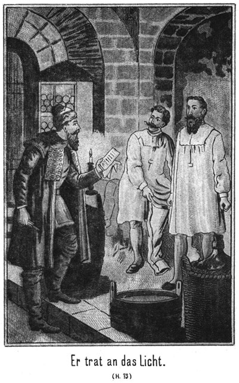Sie nannten sie ihm. Er notirte sich dieselben und ging dann fort, während sie ihm kopfschüttelnd nach blickten. Eben als er bei den Gefährten anlangte, wurde der Seitenhof des Regierungsgebäudes geöffnet, und es kamen zwei gut bespannte Wagen hervor.
»Wer mag da verreisen?« fragte der lange Jim.
»Graf Polikeff.«
»Der? Ich denke, er bleibt hier.«
»Nein. Kommt! Laßt uns bei Seite treten, dort hinter jenen Plankenzaun Ich will Euch erzählen, was ich vorhin erlauscht habe.«
Sie folgten ihm nach dem angegebenen Orte, und als sie sich dort überzeugt hatten, daß sie unbeobachtet seien, erstattete er ihnen ausführlichen Bericht. Sie hörten ihm mit der größten Spannung zu, und als er geendet hatte, meinte Tim in ziemlicher Erregung:
»Also Kosak Nummer Zehn ist ein Adlerhorst; das wußten wir bereits. Aber der Vater von Gökala ist da, und der Graf will ihm nach! Das müssen wir natürlich verhüten.«
»Auf welche Weise.«
»Wir halten ihn fest.«
»Womit?«
»Dumme Frage! Wir lassen ihn einfach arretiren.«
»Etwa durch den Kreishauptmann?«
»Ja.«
»Dumme Ansicht! Der ist ja sein Verbündeter. Der würde uns betrügen.«
»So willst Du Dich also seiner Abreise gar nicht widersetzen?«
»Nicht im Geringsten.«
»Sam, das ist ein großer Fehler!«
»Ich glaube nicht.«
»Weißt Du denn, was geschehen kann, wenn er den Maharadscha erreicht. Sie sind Todfeinde, und er hat ja gesagt, daß er ihn im äußersten Falle tödten werde.«
»Pah! So schnell geht das nicht!«
»Und Nummer Zehn, nämlich Georg Adlerhorst, ist ganz desselben Weges geritten. Er hat Gisa, den Tungusen, als einzigen Begleiter bei sich. Wie nun, wenn der Graf diesen erreicht!«
»Das kann ich nicht hindern.«
»Es wird Mord und Todtschlag geben!«
»Schwerlich! Wir dürfen uns nicht von unsern augenblicklichen Gefühlen hinreißen lassen. Steinbach hat uns streng befohlen, nicht von Platowa fortzugehen, sondern ihn hier zu erwarten. Schon morgen trifft er hier ein. Das ist zeitig genug. Er mag dann selbst bestimmen, was geschehen soll.«
Jim und Tim waren zunächst nicht mit ihm einverstanden. Aber als er sich ihnen näher erklärte, gaben sie ihm doch noch Recht. Dann meinte der Erstere:
»Also dieser famose Kreishauptmann ist selbst ein Verbannter! Den werden wir beim Schopf nehmen?«
»Natürlich! Auch das überlassen wir unserm Steinbach. Der hat so eine eigene Art und Weise, mit solchen Leuten umzuspringen. Wir haben das Geschick gar nicht dazu. Aber ich werde ihnen doch bereits heut einen kleinen Vorgeschmack beibringen.«
»Was willst Du thun?«
»Das – werdet Ihr gleich sehen. Dort kommt grad Derjenige, den ich dazu brauche.«
»Wer ist das?«
»Ein Polizist, wie ich an der Kleidung sehe.«
»Was hast Du mit ihm?«
»Ihr werdet es hören. So viel Russisch versteht Ihr schon, um unser Gespräch leidlich zu verstehen.«
Der Polizist war aus einem nahen Hause getreten und kam so herbei, daß er an ihnen vorüber mußte. Er hatte eine echt russische Physiognomie, einen mächtigen Vollbart und ein kleines Stumpfnäschen, welches höchst naiv unter den beiden treuherzigen Augen hervor blickte. Dieses Näschen hatte eine intensive blaurothe Farbe, vielleicht weniger davon, daß es einmal erfroren worden war, sondern davon, daß der Besitzer einen guten Wutky liebte.
Er grüßte und wollte vorüber.
»Halt, Väterchen!« sagte Sam. »Hast Du Zeit, um mir eine Frage zu beantworten?«
Der Mann blieb stehen, betrachtete den Dicken eine Weile, fühlte ihm dann an die beiden Seitentaschen und antwortete:
»Hast Du ein Fläschchen bei Dir, Väterchen?«
»Was für ein Fläschchen?«
»Nun, aus welchem man trinkt.«
»Nein.«
»So habe ich auch keine Zeit!«
Er wendete sich um und wollte weiter. Sam aber erwischte ihn noch am Arme und sagte:
»Du hast wohl Appetit auf einen Schluck?«
»Stets.«
»Den sollst Du haben.«
»Wann und wo?«
»Wann und wo es Dir beliebt.«
»So komm mit mir!«
Er wollte abermals fort, aber Sam hatte ihn fest, griff in die Tasche, hielt ihm einen Rubel entgegen und fragte:
»Wie viel Wutky wirst Du wohl dafür bekommen?«
»Heilige Katinka! Mehr als ich in einer ganzen Stunde zu trinken vermag.«
»Hier! Er ist Dein.«
Der Wächter des Gesetzes griff schnell nach dem Geldstück, versenkte es in seine weite Hosentasche und sagte:
»Väterchen, Du bist ein Prachtkerlchen. Womit kann ich Dir ein Vergnügen machen?«
»Damit, daß Du mir einen Auftrag ausrichtest.«
»Sehr gern. Aber welchen?«
»Sind hier Ratniki zu finden?«
»Genug. Es giebt Viele, welche sich freigeloost haben, und ich kenne sie alle.«
»Sind unter ihnen welche, die man als Stellvertreter ankaufen könnte?«
»Jawohl! Willst Du fünf oder zehn oder zwanzig?«
»Nur zwei.«
»Doch nicht etwa für Dich oder diese beiden langen Väterchens?«
»Nein, sondern für zwei Bekannte von mir.«
»Wie lange haben diese noch zu dienen?«
»Acht Jahre. Wie viel hätte ich da für die Stellvertretung zu bezahlen?«
»Wenn Du sehr nobel sein willst, so zahlst Du zweihundertundfünfzig Rubel.«
»Die will ich gern bezahlen.«
»So kann ich Dir die zwei tüchtigsten aussuchen. Soll ich zu ihnen gehen?«
»Ich bitte Dich darum.«
»Gut. Aber soll ich auch gleich gehen?«
»Natürlich!«
»Das kann ich nicht.«
»Warum?«
»Weil Du die Hauptsache vergessen hast.«
»Die Hauptsache? Was wäre das?«
Der Polizist machte ein sehr würdevolles Gesicht, zeigte mit dem Spitzfinger gegen sich selbst und antwortete:
»Mich!«
»Ja, Du hast Recht,« lachte Sam. »Du bist die Hauptsache oder vielmehr der Hauptkerl dabei. Wieviel verlangst Du, vorausgesetzt, daß der Handel zu Stande kommt?«
»Er kommt zu Stande, denn ich bin dabei!«
»Schön! Also wie viel?«
»Du bist ein nobles Väterchen, und so will auch ich nobel sein. Du bezahlst mir für den Mann drei Rubel, zusammen also sechs.«
»Die gebe ich nicht.«
»Ist es Dir zu viel? Du bist wohl aus einer weiten Fremde gekommen und kennst die Verhältnisse nicht.«
»Nein, es ist mir nicht zu viel sondern zu wenig. Ich gebe Dir für den Mann fünf, zusammen also zehn Rubel.«
Da ergriff der Polizist Sams Hand, küßte sie inbrünstig und rief:
»Ja, ja, Väterchen, ich dachte es gleich. Du bist ein coulanter Herr. Ich werde Dich fein bedienen.«
»Und außerdem bezahle ich noch, was Du mit den beiden Stellvertretern heut trinken wirst.«
Der Mann sperrte das Maul weit auf, starrte dem Dicken eine Weile in das lächelnde Gesicht und fragte dann:
»Ist das Dein Ernst?«
»Ja.«
»Aber ich bin ein ehrlicher Mann und muß Dich also fragen: Weißt Du, wie viel drei solche Männer, wie ich bin, trinken können?«
»Ich kann es mir denken.«
»Nun, wie viel denkst Du denn?«
»Ich denke, Ihr trinkt so viel, bis Ihr unter dem Tische liegt.«
»Siehst Du, daß Du es nicht weißt! Wir trinken auch unter dem Tische noch.«
»Das soll mich freuen.«
»Und Du willst das wirklich bezahlen?«
»Ja.«
Da breitete der Polizist voller Entzücken seine Arme aus, zog den Dicken an seine Brust, schmatzte ihn, daß es laut klatschte, und schrie:
»Väterchen, Herzchen, Liebchen, Du bist ein Engel unter den Menschen, ein Erlöser aus aller Trübsal, ein Tröster der Traurigen, ein Retter aller –«
»Schon gut, schon gut!« beschwichtigte Sam den Wonnetrunkenen, indem er sich von ihm losriß. »Ich zahle, und damit Punktum! Aber ich mache eine Bedingung.«
»Sage mir nur, welche! Ich hoffe, daß ich auf dieselbe eingehen kann.«
»Ganz leicht. Ihr trinkt nicht eher einen Schluck, als bis wir beim Rittmeister gewesen sind und den Vertrag zu Ende gebracht haben.«
»Das nennst Du sehr leicht?« fragte der Mann im Tone größten Erstaunens.
»Natürlich!«
»O nein! Das ist vielmehr schwer, sehr schwer. Das wird wohl kaum auszuhalten sein!«
»Ich muß aber darauf bestehen!«
»Wenn Du es befiehlst, so müssen wir freilich gehorchen. Aber mir wirst Du doch erlauben, vorher meinen Rubel zu vertrinken?«
»Nein. Du könntest mir betrunken werden.«
Da zog der Polizist ein betrübtes Gesicht und klagte in vorwurfsvollem Tone:
»Väterchen, wie beleidigst Du mich! Für einen Rubel bekomme ich nur fünf Flaschen voll Wutky. Wie kann ich davon betrunken werden! Das ist ja kaum genug, den Durst eines Säuglings zu stillen.«
»Donnerwetter! Ihr scheint da allerliebste Säuglings zu haben.«
»Bekommen Sie bei Dir daheim keinen Schnaps?«
»Nein.«
»Die armen Kinder!«
»Es ist sogar gesetzlich verboten.«
»Welch eine Regierung. Nicht wahr, der Zaar regiert nicht bei Euch?«
»Nein.«
»Das kann ich mir denken. Er würde Mitleid mit den armen Würmchen haben, die ja massenhaft sterben müssen, wenn sie keinen Wutky bekommen! Also ich darf den Rubel vertrinken?«
»Nein. Du würdest die Zeit versäumen, welche mir kostbar ist.«
»Du irrst. Ich brauche nur eine Viertelstunde dazu.«
»Herr meines Lebens! Fünf Flaschen Wutky in einer Viertelstunde! Mensch, bist Du denn bei Troste?«
»Bei Trost? Dann noch lange nicht. Wenn ich ganz voll Trost sein soll, so mußt Du verschiedene Rubels bezahlen.«
»Bitte, zeig mir mal den Deinigen her!«
»Den Du mir soeben gegeben hast?«
»Ja. Hast Du noch anderes Geld bei Dir?«
»Keine Kopeke. Hier ist er. Warum willst Du ihn noch einmal sehen?«
Er zog den Rubel aus der Tasche und hielt ihn dem Dicken hin. Dieser nahm ihn schnell weg, steckte ihn ein und antworteten
»Weil ich ihn doch lieber behalten will.«
»Väterchen, was machst Du! Willst Du mich betrügen?«
»Nein; ich bin ein ehrlicher Mann; aber ich liebe Nüchternheit beim Geschäft. Bringe zwei Ratniki, und dann kannst Du meinetwegen saufen, daß Dir der Wutky aus allen Poren läuft.«
»Ist das wahr? Wirst Du mir dann den Rubel wiedergeben?«
»Natürlich. Ich halte Wort.«
»So will ich Dir glauben. Aber wohin soll ich die Ratniki bringen?«
»Bringe sie nach dem Gasthofe. Ich werde in einer halben Stunde dort sein.«
»Gut, Väterchen, ich eile!«
»Halt! Noch eine Frage! Wirst Du denn Deine Pflicht nicht versäumen, wenn Du nachher so viel trinkst?«
»Nein. Wenn ich trinke, bin ich nicht mehr Polizist.«
»Aber wenn Du gebraucht wirst!«
»Das ist unmöglich, denn dann bin ich zu nichts Anderem zu gebrauchen.«
»Das glaube ich! Also vorwärts!«
»Ja, ich eile.«
Er ging schnell fort, blieb aber dann stehen, wendete sich um, kam zurück und fragte:
»Also nur ich und die beiden Ratniki dürfen trinken, so viel wir wollen?«
»Ja.«
Er eilte, aber nur einige Schritte weit, dann kehrte er abermals um und sagte:
»Verzeihe, Väterchen! Ich habe ein Weibchen, ein gutes, folgsames Weibchen. Sie liebt den Wutky sehr. Darf sie nicht mittrinken? Ich möchte sie gern mitbringen.«
»Meinetwegen!«
»So viel sie will?«
»Ja.«
»Ich danke Dir! Du bist die Sonne der Gnade und Freigebigkeit. Jetzt eile ich!«
Aber er kam abermals zurück.
»Mein gutes Väterchen. Dein gutes Herz wird nicht wollen, daß eine Unschuldige leer ausgehe. Ich habe ein Töchterchen. Ihre Wangen sind wie Syrup und ihre Augen wie wilde Schlehen so rund. Darf sie auch mittrinken?«
»Wie alt ist sie?«
»Fünfzehn Sommer und sechzehn Winter.«
»Trinkt sie etwa für jeden Sommer eine Flasche und auch für jeden Winter eine?«
»Wenn sie Durst hat, mag sie es fertig bringen.«
»Alle Wetter! Aber ich sehe, man muß sehr vorsichtig sein. Erst Du, dann die Frau; nachher die Tochter! Hast Du etwa noch eine Person, welche eine so durstige Leber hat.«
»Noch eine.«
»Wirklich noch eine nur?«
»Ja, dann weiter Niemand.«
»Wer ist diese Einzige?«
»Meine Schwiegermutter, die Mutter meines Weibchens.«
»Nicht übel! Kann sie das Trinken?«
»O die trinkt mich unter den Tisch.«
»Saubere Brut! Na, bring die Beiden mit, nämlich die Tochter und die Schwiegermutter. Für die Frau hast Du meine Erlaubniß bereits.«
»Väterchen, mir fehlt die Sprache, Dir zu sagen, wie lieb ich Dich habe!«
»Schon gut!«
»Meine Frau wird Dich achten – – –«
»Sehr schön!«
»Meine Tochter Dich lieben – –«
»Noch schöner!«
»Und meine Schwiegermutter an Deinem Halse hängen – – –«
»Alle Wetter! Das will ich mir verbitten! Mach Dich von dannen! Wenn Du noch einmal umkehrst, so ziehe ich meinen Auftrag zurück, und es wird aus der ganzen Sache nichts!«
»Das mögen alle achthundert Heiligen verhüten. Ich laufe, ich eile, ich renne! In einer halben Stunde ist Alles besorgt.«
Er rannte davon, als ob er um sein Leben zu rennen habe.
»Habt Ihrs verstanden?« fragte Sam lachend die beiden Freunde.
»Ja, wenn auch nicht jedes Wort,« antwortete Tim. »Donnerwetter, was ist das hier für eine Gesellschaft!««
»O ich habe gelesen, daß die Russen, als sie im Napoleonischen Kriege nach Deutschland kamen, allerorts im Nu den sämmtlichen Branntwein weggetrunken hatten. Und als dann keiner mehr vorhanden war, erstürmten sie die Apotheken und tranken verdünntes Scheidewasser, in welches sie noch extra Pfeffer thaten.«
»Das geht ja über alle Begriffe!«
»Ja. Wir müssen uns den Spaß machen und die Sippschaft besuchen, wenn sie bei den Flaschen sitzt.«
»Aber zahlen wirst Du müssen!«
»Das kann ich. Ich habe ja Geld, sehr billiges Geld – zweitausend Rubel!«
»Willst Du das wirklich als Dein Eigenthum betrachten?«
»Nun, wem gehört es denn eigentlich?«
»Dem Grafen.«
»Der hat es ja weggegeben.«
»Dem Kreishauptmann?«
»Nein, denn er hat es erhalten für ein Vergehen, welches er begangen hat.«
»So hat es gar keinen rechtmäßigen Herrn!«
»Allerdings nicht.«
»Was willst Du aber denn damit machen?«
»Ich will diesen zwei Scheinen zwei rechtmäßige Herren verschaffen. Ahnt Ihr denn noch nicht, was ich vorhabe?«
»Hm! Die beiden Ratniki – – –?«
»Die sind nur Stellvertreter und erhalten ja ihre zweihundertfünfzig Rubel.«
»Kannst nicht rathen, alter Tim!« meinte Jim. »Ich weiß, wer die Rubel erhalten soll. Der Sam ist ein Schlaukopf und ein seelensguter Kerl. Die beiden Posten dort am Feuerwerksgebäude sollen losgekauft werden. Habe ich recht, Dicker?«
»Hast getroffen.«
»Aber sie sollen doch erschlagen werden!«
»Das will ich mir verbitten. Ich werde mit dem Herrn Rittmeister ein Wort sprechen, daß ihm die Haare zu Berge stehen sollen. Er wird mir – horch, Wagengerassel! Da müssen wir nachschauen!«
Sie traten um die Ecke und zwar noch zur rechten Zeit, um zu sehen, daß der Graf mit seinen zwei Wagen abfuhr, begleitet von zehn gut berittenen Kosaken. Die Wagen enthielten die Requisiten, welche er zu dieser Reise für nothwendig gehalten hatte. Bei seiner Ankunft hatte er, wie bereits erwähnt, drei Wagen gehabt. Den dritten hatte er zurückgelassen, einestheils weil er ihn nicht brauchte und anderntheils weil es derjenige war, dessen sich Gökala bediente. Er war nicht für Männer eingerichtet.
»Da ist er also fort,« sagte Jim. »Weißt Du, wohin?«
»Ja,« antwortete Sam. »Wir werden später noch darüber sprechen. Jetzt aber wollen wir zu diesem Herrn Rittmeister gehen.«
»Wir alle Drei?«
»Natürlich.«
»Wohl wegen dieses famosen Duelles?«
»Ich. Ich werde es ihm natürlich nicht schenken.«
»Du, Dicker, ist das nicht vielleicht etwas zu übermüthig?«
»Pah! Meinst Du, daß ich mich vor ihm fürchten soll?«
»Das nicht. Furcht ist ja weder Deine noch auch unsere Schwäche. Aber er ist Offizier, und es steht zu erwarten, daß er schießen kann.«
»Na, ein Kosakenoffizier in Sibirien und zum Beispiel ein deutscher Lieutenant, das ist ein himmelweiter Unterschied. Ich lasse mich auffressen, wenn dieser Rittmeister etwas Anderes schießen kann als nur ein Loch in die Luft.«
»Möglich; aber weißt Du, alter Sam, daß zuweilen auch der Dumme etwas Gescheidtes thut, freilich ohne es zu wissen?«
»Ja, das habe ich an Euch beobachtet.«
»Pfui, Teufel! Beleidige Deine besten Freunde nicht! Wenn Du Dich mit diesem Kosaken duellirst, so kann es doch passiren, daß er Dich ausnahmsweise trifft, grad weil er albern zielt.«
»Wird sich finden. Ich hoffe, daß er mir in diesem Falle ein Loch, welches sich bald wieder verstopfen läßt, durch den Leib schießt. Ich habe so eine Ahnung, daß er eher sich selbst treffen wird als mich. Ihm aber werde ich eine heilsame Lehre ertheilen.«
»Willst Du ihn verwunden?«
»Natürlich!«
»Wo?«
»Hm! Darüber bin ich mir noch nicht klar. Es soll auf sein Verhalten ankommen. Zeigt er sich so, daß er eine Züchtigung verdient, so mache ich ihn einfach unschädlich für seine Untergebenen, indem ich dafür sorge, daß er dienstuntauglich wird. Also kommt!«
Die drei Männer schritten langsam und gravitätisch dem Regierungsgebäude zu. Waren sie schon anderwärts, drüben in Amerika, geeignet, die öffentliche Aufmerksamkeit auf sich zu ziehen, wie viel mehr erst hier im Osten von Sibirien. Sie, der kleine Dicke mit den zwei baumlangen, dünnen Beinen stachen von aller Welt so sehr ab, daß sie die Blicke aller ihnen Begegnenden auf sich zogen. Sie machten sich nicht nur nichts daraus, sondern fanden sogar ein sehr großes Vergnügen daran.
Als sie die Thür des Gebäudes erreicht hatten, trat ihnen ein Bediensteter entgegen und fragte sie nach ihrem Begehr.
»Ich möchte den Rittmeister sprechen,« antwortete Sam.
»Den Herrn Rittmeister, meinst Du wohl!«
»Meinetwegen.«
»Was willst Du von ihm?«
»Etwas, was Du nicht zu wissen brauchst, mein Brüderchen.«
»So melde ich Dich nicht.«
»Das magst Du machen, ganz wie es Dir beliebt; aber ich werde doch zu ihm gehen.«
»Unangemeldet darfst Du das nicht.«
»Wer will es mir verbieten?«
»Ich.«
»So! Nun, so verbiete es mir doch einmal.«
»Das will ich hiermit gethan haben.«
»Schön! So kannst Du nun abtreten.«
Er nahm ihn und warf ihn zur Thür hinaus, so daß er sich draußen niedersetzte. Dann ging er mit den beiden Anderen nach der Treppe und stieg dieselbe empor.
Der Diener raffte sich auf und kam ihnen nach. Er faßte Sam beim Arme und rief:
»Halt! Ihr bleibt!«
»Natürlich bleiben wir hier. Du aber kannst Dich fort machen, sonst thust Du noch einen solchen Sprung wie soeben.«
»Du hast Dich an mir vergriffen.«
»Und Du vergreifst Dich eben jetzt an mir. Laß mich los, sonst passirt Etwas.«
»Ich darf Dich nicht hinauf lassen.«
»So lasse ich Dich hinunter. Da!«
Er gab ihm einen Stoß, so daß er die Treppe hinunterflog. Der Mann fiel zu Boden, stand aber wieder auf und kam ihnen nach, wagte es aber nicht wieder, Sam zu berühren, erhob aber dafür ein überlautes Geschrei.
Droben wurde eine Thür aufgerissen. Der Kreishauptmann trat heraus.
»Was giebts denn zu lärmen?« fragte er zornig.
»Diese Männer wollen zum Herrn Rittmeister,« antwortete der Diener.
»Der ist nicht zu sprechen.«
»Das habe ich den Herren auch schon gesagt. Sie aber haben mich dafür erst zur Thür hinaus- und sodann auch zur Treppe heruntergeworfen.«
»Donnerwetter! Das wagt man in meinem eigenen Hause!«
»Rede keinen Unsinn, theures Väterchen!« lachte Sam. »Das ist gar nicht Dein Haus.«
»So! Wessen denn?«
»Das gehört dem guten Czaren, und wenn Du Deine Pflicht nicht thust, so wirst Du ganz ebenso an die Luft gesetzt, wie ich diesen braven Mann hinausgesetzt habe. Also Dein Sohn ist nicht zu sprechen?«
»Nein.«
»Er hat keine Zeit.«
»So werde ich ihm gleich Zeit machen. Wo befindet er sich?«
»Das geht Euch nichts an.«
Sam hatte seine alte Prairiebüchse im Arme. Jetzt ließ er sie fallen, so daß ihr Kolben dröhnend auf den Fußboden schlug.
»Mensch, ich frage, wo er ist.«
Der Dicke rief ihm diese Worte so drohend ins Gesicht, daß der Beamte ganz erschrocken zurückfuhr.
»In seiner Stube,« antwortete er.
»Zeige sie uns.«
»Kommt!«
Er wagte nicht, noch einmal zu widersprechen, sondern öffnete eine Thür und trat mit ihnen ein. Der Rittmeister saß, eine Cigarette rauchend, behaglich auf dem Sopha.
»Ah!« sagte Sam. »Man sieht, daß er keine Zeit hat. Guten Morgen, Herr Rittmeister.«
Der Genannte stand auf, musterte ihn mit zornigen Blicken und fragte, ohne ihren Gruß zu erwidern:
»Hat man Euch nicht gesagt, daß ich keine Zeit habe?«
»Allerdings.«
»Warum drängt Ihr Euch trotzdem herein?«
»Weil auch wir keine Zeit haben. Wir müssen mit Dir reden.«
»Kommt später wieder.«
»Das geht nicht, denn die Angelegenheit erleidet keinen Aufschub.«
»Was ists?«
»Das Duell.«
»Donnerwetter! Geht zum Teufel!«
»Auch dazu haben wir keine Zeit. Aber wenn Du meinst, daß der Teufel Gesellschaft braucht, so werde ich Dich zu ihm senden.«
»Ich duellire mich nicht.«
»So! Ist das Dein Ernst?«
»Ja.«
»So nimmst Du die Beleidigung ruhig hin?«
»Ihr könnt mich nicht beleidigen.«
»Bist Du ein so vornehmer Herr? Das hätte ich Dir wirklich nicht angesehen. Na, Du magst es halten wie Du willst; aber Du hast auch uns beleidigt, und das lassen wir nicht auf uns sitzen. Schau Dich also nach einem Secundanten um.«
»Fällt mir nicht ein!«
»So zwinge ich Dich.«
»Versucht es!«
»Pah! Wir können das gleich hier machen. Versucht wird es gar nicht erst. Es geht auch ohne alle Vorbereitung.«
»Wenn Du mir die Genugthuung verweigerst, so bist Du ein ehrloser Kerl, und ich behandle Dich als solchen. Wo und wann ich Dich sehe, bekommst Du Ohrfeigen.«
Der Rittmeister erbleichte.
»So lasse ich Euch knuten!« rief er aus.
»Pah! Wir sind nicht Unterthanen des Czaren. Wir stehen unter dem Schutze des amerikanischen Gesandten und haben weder Dich noch Deine Knute zu fürchten. Also entschließe Dich. Schießest Du Dich mit mir?«
»Nein.«
»So bist Du ein ehrloser Bube und mußt als ein solcher gezüchtigt werden. Da!«
Er holte aus und gab ihn, eine solche Ohrfeige, daß der Getroffene gegen die Wand flog. Sein Vater wollte zur Thür hinaus, um nach Beistand zu rufen; aber Jim und Tim hielten ihn fest.
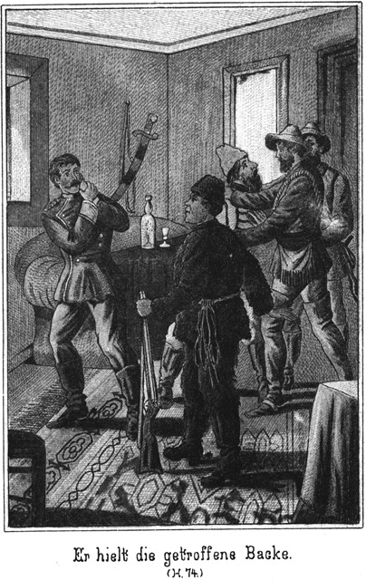Der Rittmeister war zunächst wie sprachlos. Er hielt sich mit der Hand die getroffene Backe; dann stieß er einen Schrei der Wuth aus, griff nach der Knute, welche auf dem Tische lag und holte zum Schlage aus. Sam aber stieß ihm den Kolben des Gewehres an den Leib, daß er zurücktaumelte und sagte lachend:
»Laß die Peitsche, mein Brüderchen! Sobald Du mich mit derselben zu berühren wagst, schieße ich Dir eine Portion Blei ins Gehirn. Mir bist Du nicht gewachsen.«
»Vater, Vater, laß sie einsperren, und zwar sofort, sofort!« schrie der Rittmeister.
»Laß Dich doch nicht auslachen,« antwortete Sam. »Uns einsperren! Dazu seid Ihr alle Beide die Kerls nicht.«
»Meinst Du, daß wir Euch nicht bändigen?« brüllte der Offizier.
»Ja, das meine ich.«
»Vergiß nicht, daß ich der Commandant der hiesigen Militärmacht bin.«
»Na, diese Macht gleicht ganz ihrem Commandanten. Versuche es doch einmal mit ihr gegen uns.«
»Das soll sogleich geschehen.«
Er trat an das Fenster.
»Halt!« gebot Sam. »Was willst Du?«
»Meine Leute rufen.
»Sobald Du das Fenster öffnest, schieße ich Dir eine Kugel durch den Kopf.«
Er legte das Gewehr an. Der Rittmeister fuhr angstvoll zurück und rief:
»Bist Du toll!«
»Nein. Aber bei mir heißt es: Wie es in den Wald schallt, so schallt es wieder heraus. Ich bin ganz so gegen Euch, wie Ihr es verdient.«
»Poche ja nicht so viel auf Deinen Consul.«
»Ein anderer Kerl ist er als Du. Verstanden! Du hast keine Ehre. Wo ich Dich sehe, werde ich Dich durch Ohrfeigen zwingen. Dich mit mir zu schießen. Das merke Dir. Und dann sollen auch Alle erfahren, wer vorhin er Teufel und wer seine Großmutter gewesen ist.«
»Ah! Wer denn?«
»Ihr Beide.«
»Ah! Wer sagt das?«
»Ich.«
»Wer hat Dir diese Lüge aufgehängt?«
»Lüge? Glaubt Ihr, daß wir Amerikaner so dumme Kerls find wie Eure Tungusen?«
»Wie können wir es gewesen sein?«
»Wir haben Euch erkannt.«
»Das ist unmöglich. Wir waren daheim.«
»So! Und der Graf hat Euch hier so ganz vergeblich gesucht.«
»Was weißt Du von dem Grafen!«
»Mehr als Ihr. Wer sich in Werg wickeln und mit Theer beschmieren läßt, mit dem machen wir kein langes Federlesen. Also merkt Euch, was ich gesagt habe. Jetzt gehen wir; aber sobald Du Dich vor mir sehen lässest, erhältst Du die versprochenen Ohrfeigen. Ich halte Wort.«
»Und ich lasse Dich einstecken und prügeln.«
»Ihr habt unsere Legitimationen gesehen. Wagt es. Der Gouverneur soll es erfahren, was für einen Militaircommandanten er hier in Platowa hat.«
Er ging. Jim und Tim folgten ihm. Die beiden Russen blickten sich an. Sie waren ganz rathlos.
»Schreckliche Kerls!« stieß der Vater hervor, indem er mit der Faust drohte.
»Mich zu ohrfeigen!«
»Und noch ohrfeigen zu wollen!«
»In Deiner Gegenwart!«
»Ich bin ganz überzeugt, daß dieser Kerl seine Drohung ausführt.«
»Aber, müssen wir es uns denn so ruhig gefallen lassen?«
»Was wollen wir machen!«
»Sie arretiren.«
»Das geht nicht. Nach den Regeln der Ehre hast Du Dich mit ihm zu schießen.«
»Fällt mir nicht ein!«
»Warum nicht?«
»Ich werde in den sichern Tod rennen.«
»Ist das so ausgemacht?«
»Ganz gewiß. Der Mensch schießt wie ein Teufel.«
»Du kannst ihn aber auch treffen.«
»Er hat den ersten Schuß.«
»Sapperment! Das wäre freilich schlimm. Am Allerbesten ist es, Du lässest Dich, so lange sie hier sind, gar nicht sehen.«
»Eine verdammt langweilige Geschichte!«
»Vielleicht reisen sie bald wieder ab.«
»Was wollen sie eigentlich hier?«
»Jenen geheimnißvollen Steinbach erwarten. Wenn Der uns nur nicht auch noch Unannehmlichkeiten bringt!«
»Woher wissen sie es, daß wir die Teufels gewesen sind!«
»Das frage ich auch.«
»Vielleicht liegt die Antwort sehr nahe. Ich habe meine Gedanken.«
»Wie?«
»Sollten – – sollten sie es sein, welche die Nummer Zehn befreit haben?«
»Donnerwetter!«
»Zu vermuthen ist es. Sie haben sich schon gestern seiner angenommen. Sie sind äußerst gewaltthätige Leute. Kennst Du irgend einen hiesigen Menschen, dem es zuzutrauen ist, uns in dieser Weise zu behandeln?«
»Nein.«
»Ich auch nicht. Und das Theeren eines Menschen ist eine ganz amerikanische Manipulation. Ich wette, sie sind es gewesen.«
»Wenn ich das gewiß wüßte – –!«
»Was würdest Du da thun?«
»Da würde ich sie allerdings arretiren lassen. Sie stehen zwar unter dem Schutze ihres Gesandten; aber wenn sie sich gegen unsere Gesetze vergehen, so sind sie strafbar.«
»Aber da käme es sicher heraus, was für eine klägliche Rolle wir gespielt haben.«
»Leider! Eine ganz verdammte Geschichte!«
»Und wer ist schuld daran? Die Nummer Zehn und die beiden Kosaken, welche Posten standen. Ich habe ihnen hundert Knutenhiebe versprochen.«
»Sie sollen sie erhalten!«
»Auf alle Fälle. Jetzt aber laß mich in Ruhe. Ich muß ein Wenig schlafen. Ich habe natürlich während der ganzen Nacht kein Auge zugethan.«
»Ich ebensowenig. Auch ich lege mich nieder.«
Er ging. Beide sollten indeß die gewünschte Ruhe nicht lange genießen.
Sam war nämlich mit den beiden Brüdern nach dem Wirthshause gegangen. Dort saß der Polizist mit zwei jungen, kräftigen Kerlen. Zwei Frauenzimmer, eine jüngere und eine ältere waren dabei. Jedenfalls war daß seine Frau und Tochter, welche auf den versprochenen Schnaps wartete.
Als er die Eintretenden erblickte, stand er auf, kam ihnen entgegen und sagte:
»Väterchen, hier sind die beiden Männer, die ich Dir versorgt habe. Du wirst mit ihnen und also auch mit mir sehr zufrieden sein.«
»Wollen sehen. Haben sie ihre Freischeine mitgebracht?«
»Ja. Sie müssen Dir doch beweisen, daß sie wirklich Ratniki sind.«
»Zeigt einmal her!«
Sie gaben ihm die Scheine, und er überzeugte sich, daß Alles stimmte. Sie wurden handelseins. Er versprach ihnen einen anständigen Preis und forderte sie auf, sich sofort mit ihm nach dem Rittmeister zu verfügen.
»Aber, Väterchen,« meinte der Polizist. »Wie steht es denn mit dem Wutky, den Du uns versprochen hast?«
»Den erhaltet Ihr.«
»Und auch mein Geld?«
»Ja«
»So gieb es und bestelle den Branntwein.«
»O, so haben wir doch nicht gehandelt. Noch weiß ich nicht, ob der Herr Rittmeister diese beiden Ratniki annimmt.«
»Was soll er gegen sie haben?«
»Vielleicht sehr viel. Zahlen werde ich erst dann, wenn die Sache in Ordnung ist.«
»Du hast Recht. Aber wir dürsten. Sollen wir so lange warten. Das können wir nicht aushalten.«
»So laßt Euch einstweilen eine Flasche geben!«
»Eine – eine einzige?«
Er machte dabei ein Gesicht, als ob er die größte Unbegreiflichkeit der Welt gehört habe.
»Ja, eine.«
»Soll mein Weib verdursten und meine Tochter mit ihr!«
»Ich denke, Ihr habt genug, bis wir wiederkommen. Die Flaschen sind ja groß.«
Er deutete nach einem Tische, auf welchem eine ganze Anzahl gefüllter Bouteillen stand.
»Groß!« rief der Polizist. »Soll ich Dir einmal zeigen, wie groß sie sind?«
»Ja.«
»Du bezahlst sie?«
»Natürlich.«
Er nahm eine der Flaschen vom Tisch, entkorkte sie, setzte sie an den Mund und trank sie vollständig leer. Dann schnalzte er mit der Zunge, verdrehte die Augen und rief:
»Das ist ein Trank. Zwanzig solcher Flaschen in einer Stunde! Das wäre grad, als ob man sich im Himmel befände!«
»Ja, selig würdest Du wohl dann sein. Aber ich will nicht grausam gegen Euch sein. Nimm Dir noch eine Flasche und gieb auch Deiner Frau und Tochter jeder eine!«
Das ließ sich der Mann nicht zweimal sagen. Die Flaschen waren im Augenblick entkorkt. Er leerte seine zweite. Die beiden Frauenzimmer nahmen sich mehr Zeit; aber sie hatten auch ein solches Gefälle, daß sie voraussichtlich 'n fünf Minuten keinen Tropfen mehr hatten.
Sam machte sich mit den Ratniki und Jim und Tim auf den Weg.
Im Regierungsgebäude angekommen, sahen sie denselben Diener wieder Er saß auf einer der Treppenstufen und aß Knoblauch. Als er sie erblickte, stand er auf. Ihnen einen haßerfüllten Blick zuwerfend, fragte er:
»Was wollt Ihr schon wieder?«
»Dir eine Ohrfeige geben.«
Bei diesen Worten holte Sam aus. Der Mann that einige Sprünge und verschwand durch die Hinterthür. Er hatte erfahren, daß mit diesen fremden Männern nicht zu scherzen sei.
Das Kommen derselben wurde doch anderweit bemerkt. Die Frau des Kreishauptmannes trat eben zufälliger Weise aus ihrem Zimmer. Sie sah die Männer und erfuhr auf ihre Frage von denselben, daß sie zu ihrem Sohne wollten.
»Der ist nicht zu sprechen,« sagte sie.
»Ist er fort?«
»Nein. Er schläft.«
»So bitte ich, ihn zu wecken.«
Sie war ganz entrüstet über diese Zumuthung. Den Militärcommandanten wecken, falls er schlief! Das klang ja geradezu wie Hochverrath!
»Ihn wecken!« sagte sie im Tone des tiefsten Erstaunens. »Weißt Du vielleicht auch, was Du sagst?«
»Sehr gut, liebes Mütterchen.«
»Du verlangst das Unmögliche.«
»Ich habe noch nie gehört, daß es unmöglich sei, einen Menschen zu wecken.«
»In diesem Falle, ja. Ich darf es nicht wagen. Bedenke, einen Rittmeister im Schlafe zu stören, was das zu bedeuten hat!«
»Nun, was hat es zu bedeuten?«
Sie blickte ihm so verblüfft in das Gesicht, daß er sie fast ausgelacht hätte.
»Das weißt Du nicht?« fragte sie.
»Freilich weiß ich es. Es bedeutet, daß er aufstehen soll.«
»Das wird er aber nicht thun.«
»Ich glaube doch. Wenn Du nicht den Muth hast, ihn zu wecken, so werde ich es selbst thun.«
Er wendete sich nach der Seite, in welcher die Stube des Rittmeister lag. Da ergriff sie ihn beim Arme und rief:
»Halt! Das darfst Du nicht! Was fällt Dir ein. Er würde Dich bestrafen.«
»Pah! Das soll er versuchen.«
»Komm später wieder!«
»Fällt mir gar nicht ein! Ich bin einmal da und kann nicht eher wieder gehen, als bis ich mit dem Herrn Rittmeister gesprochen habe. Also muß ich sehr bitten, ihn sofort aus den Federn zu holen.«
Er liegt nicht im Bette, sondern auf dem Sopha. Dennoch aber darf ich es unmöglich wagen, ihn zu stören. Er würde mich – –«
»Was denn?« donnerte er sie an. »Etwa fressen? Dazu siehst Du mir doch nicht appetitlich genug aus.«
So Etwas war ihr noch niemals passirt! Das mußte gerochen werden. Sie stemmte beide Hände in die Hüften, pflanzte sich vor ihm auf und öffnete die Schleußen ihrer Beredtsamkeit. Ihre Strafrede floß so laut und ununterbrochen wie ein Platzregen. Die drei Männer lachten aus vollem Halse. Das verzehnfachte ihren Grimm und verwandelte den Platzregen in ein schauerliches Hagelwetter. Das prasselte, dröhnte, zischte, schnatterte, kreischte und donnerte so laut auf, daß es durch das ganze Haus zu hören war. Daher war es nicht zu verwundern, daß eine Thür aufgerissen wurde, aus welcher der Kreishauptmann ganz erschrocken hervorstürzte.
»Was – was ist denn las!« rief er. »Das ist ja ein – – ah, diese Drei wieder!«
Er machte Augen, als ob er sie mit einem einzigen Blicke erstechen wolle. Der dicke Sam aber sagte, laut lachend:
»Höre, Väterchen, giebt es vielleicht einen tüchtigen Arzt hier in Platowa?«
»Wa – rum?«
»Schicke sofort zu ihm. Es ist Deinem Mütterchen auf die Sprache gefallen. Wenn Du nicht schleunige Hilfe holst, wird sie nie wieder reden können.«
Das war zu viel. Die Schleußen öffneten sich abermals. Der Beamte aber unterbrach seine Frau, indem er ihr Ruhe gebot und schrie voller Wuth den Dicken an:
»Eine solche Frechheit ist geradezu unerhört! Was wollt Ihr denn wieder bei mir?«
»Bei Dir? O, auf Dich haben wir es dieses Mal gar nicht abgesehen; das kommt später. Wir wollen zu Deinem Sohne.«
»Der ist für Euch nicht zu sprechen.«
»Das sagte auch Dein Weibchen; aber wir glauben es nicht.«
»Er schläft.«
»Na, wenn er bei diesem Skandale schlafen kann, so muß ihn die Teufelsgeschichte heute Nacht sehr kaput gemacht haben! Er schläft da so fest, daß zu befürchten ist, er werde gar nie wieder aufwachen. Darum muß er augenblicklich geweckt werden.«
Er schritt auf die betreffende Thür zu; aber der Kreishauptmann hielt ihn fest und rief:
»Halt! Keinen Schritt weiter. Ihr macht Euch schleunigst fort, sonst –!«
»Sonst –?« fuhr Sam ihn drohend an. »Was ist sonst?«
»Sonst weiß ich, was ich zu thun habe!«
»Gott sei Dank! Endlich weißt Du einmal Etwas. Du siehst nämlich ganz so aus, als ob Du ganz und gar nichts wissest. Und bisher habe ich gefunden, daß sich das bestätigt.«
»Willst Du mich beleidigen?«
»Dich? Du bist gar nicht der Kerl, mit dem ich mir die Mühe geben möchte, ihn extra zu beleidigen. Mach, daß Du mir aus dem Wege kommst!«
*
Er ließ den Gewehrkolben auf den Boden fallen, daß es krachte. Jim und Tim stießen ebenso wie er ihre langen Büchsen nieder. Jim war dabei einen Schritt näher getreten und traf in Folge dessen – wohl mehr absichtlich als zufällig, den Fuß des Kreishauptmannes so kräftig, daß dieser einen lauten Schmerzensschrei ausstieß und einen Luftsprung machte, den ein Bajazzo gar nicht besser hätte fertig bringen können.
Nun riß der Rittmeister seine Thüre auf und stürzte hervor, grimmig fragend;
»Was ist denn das für ein Höllenspektakel? Hat man denn keine – – Donnerwetter! Wieder diese Kerls!«
»Ja, wir sind es wieder,« lachte Sam. »Hoffentlich sind wir willkommen?«
»Ihr? Was wollt Ihr abermals?«
»Dieses Mal kommen wir nicht wegen des Duells, sondern in einer rein militärischen Dienstangelegenheit.«
»Dazu ist jetzt keine Zeit. Jetzt wird nichts expedirt.«
»So! Wann denn? Des Nachts steckst Du im Feuerwerksgebäude und des Tages schläfst Du. Wann soll man da seine Angelegenheit erledigen? Ich sage Dir: Wenn Du uns nicht sofort anhörst, so geht ein Brief nach Irkutsk an den Gouverneur. Ich werde mir schon Gehör verschaffen!«
»Ihr seid ja soeben hier gewesen!«
»Thut nichts. Das war eine Privatsache; jetzt aber kommen wir dienstlich!«
»Ihr seid keine Soldaten. Dienstlich habe ich mit Euch gar nichts zu schaffen.«
»Aber wir mit Dir. Machen wir es kurz. Hast Du Zeit, oder soll ich den Brief schreiben?«
Das Auftreten des kleinen Dicken war so selbstbewußt und imponirend, daß der Rittmeister es nicht wagte, Nein zu sagen.
»Kommt herein!« befahl er.
In diesem Augenblicke ging eine andere Thür auf, aus welcher Gökala trat. Sam blieb unwillkürlich stehen, um sie zu betrachten. Sie war so gekleidet, daß man ihr ansah, sie wolle ausgehen. Der Dicke sagte sich, daß er noch niemals ein so herrliches Mädchen gesehen habe. Er ahnte sogleich, wer sie sei.
»Was willst Du, mein Töchterchen?« fragte sie der Kreishauptmann, dessen Gesicht noch immer schmerzlich verzogen war von dem Kolbenstoße, den er erhalten hatte.
»Ich gehe aus,« antwortete sie.
»Wohin?«
»Ich will Karparla, die Prinzessin der Tungusen besuchen.«
»Kennst Du sie denn?«
»Wir trafen uns heute früh draußen auf der Steppe. Sie hat mich eingeladen.«
»Du kannst nicht zu ihr.«
»Warum?«
»Der Graf hat es verboten. Du darfst das Haus nicht verlassen.« Sie blickte ihm hoheitsvoll in das Gesicht und antwortete:
»Mir hat Niemand Etwas zu befehlen, weder der Graf, noch Du. Ich gehe.«
Sie that einige Schritte vorwärts. Er aber stellte sich ihr in den Weg und antwortete:
»Ich bin gezwungen, die Befehle des Grafen auszuführen. Ich bitte Dich, in Dein Stübchen zurückzugehen, sonst muß ich Gewalt anwenden.«
Sie erbleichte vor innerer Erregung.
»So bin ich eine Gefangene?«
»Ja.«
»Dann bitte ich Dich, zu Karparla zu senden. Sie mag die Güte haben, zu mir zu kommen.«
»Auch das geht nicht an. Du darfst keine Besuche empfangen.«
»Ah! Also vollständig isolirt!«
»Ja.«
»Nun, so sage ich Dir, daß ich mich als frei betrachte und ganz nach meinem eigenen Ermessen handeln werde.«
»Ich mache Dich auf die Folgen aufmerksam. Ich habe Dich unter strenger Wacht zu halten und wundere mich, daß der Graf Dir nichts darüber mitgetheilt hat. Handelst Du unüberlegt, so hast Du die Folgen zu tragen. Gehe jetzt wieder in Dein Zimmer!«
Er öffnete die Thür desselben. Sie wendete sich mit einer stolzen Bewegung derselben zu, um einzutreten. Da aber stand auch schon Sam an ihrer Seite. Er fragte in deutscher Sprache, während bis jetzt natürlich nur russisch gesprochen worden war:
»Verzeihung! Ihr Name ist Gökala?«
Bei diesen Lauten machte sie eine Bewegung des größten Erstaunens.
»Welche Ueberraschung!« sagte sie, auch deutsch. »Sie sind ein Deutscher?«
»Ja.«
»Und kennen meinen Namen?«
»Wie Sie hören.«
»Woher?«
»Davon später! Bitte, gehen Sie einstweilen in Ihr Zimmer. Sie sollen Karparla sehen und auch sprechen.«
»Haben Sie hier solchen Einfluß?«
»Ich denke es.«
Da rief der Kreishauptmann:
»Was ist das für eine Sprache? Was habt Ihr mit einander zu verkehren und zu sprechen? Ich darf das nicht dulden.«
»Das war die Hottentottensprache,« lachte Sam. »Und die solltest Du doch kennen, alter Kaffer! Uebrigens kannst Du mit uns kommen. Es schadet nichts, was wir mit Deinem Sohne zu verhandeln haben.«
Gökala war in ihr Zimmer getreten. Der Kreishauptmann schloß die Thür desselben hinter ihr zu und folgte dann den Andern.
Im Zimmer des Rittmeisters angekommen, setzte Sam sich sofort nieder. Jim und Tim thaten dasselbe.
»Ihr habt zu warten, bis ich Euch die Erlaubniß zum Sitzen ertheile,« zürnte der Officier.
»Bitte, mein Junge,« antwortete Sam, »gieb Dir kein höheres Aussehen, als Du hast. Die Hosen, auf welche ich mich setze, gehören mir; also habe ich ganz allein zu bestimmen, in welcher Weise ich sie strapaziren will.«
»Und was wollen diese beiden Männer mit Euch?«
»Es sind Ratniki.«
»Das weiß ich. Ich kenne sie.«
»Freut mich! Da wird sich unser Geschäft vereinfachen. Sie wollen nämlich für zwei Andere eintreten. Darum kommen wir jetzt zu Dir.«
»So! Wer bezahlt?«
»Ich.«
»Ah! Bist Du hier so bekannt, daß Du zwei Kosaken freikaufen kannst?«
»Ja. Und hoffentlich werde ich auch noch bekannter werden. Ich bitte, die nöthigen Formalitäten vorzunehmen.«
»Wer sind Diejenigen, für welche diese Zwei eintreten wollen?«
»Bitte, sieh erst zu, ob sie als Ersatzmänner angenommen werden können.«
»Ich kenne sie. Sie sind tüchtig.«
»Du weisest sie also nicht zurück?«
»Ich könnte; aber damit Ihr seht, daß ich gefällig bin, will ich sie acceptiren. Aber ich hoffe, daß auch Ihr gefällig seid.«
»Gern. Welche Gefälligkeit erwartest Du von uns?«
»Schweigen über die Teufelsgeschichte.«
»Wenn Du nicht selbst uns die Veranlassung giebst, werden wir gern schweigen.«
»Ich weiß nicht, wie Ihr hinter diese Angelegenheit, gekommen seid. Habt Ihr Euch etwa gestern Abend im Feuerwerksgebäude befunden?«
»Wüßte nicht, was wir da zu suchen haben sollten.«
»Gut! Lassen wir also die ganze Angelegenheit für immer ruhen.«
»Ist das wirklich Dein Wille?«
»Ja.«
»Das ist mir sehr recht. Lassen wir sie also ruhen. Ich hoffe also, daß Du nicht selbst wieder davon anfängst.«
»Gut! Wir sind einig. Nun wollen wir die Stellvertretungscontracte ausfertigen. Sie sind von beiden Theilen zu unterschreiben und von mir zu bestätigen.«
Er entnahm einem Kasten zwei Formulare, griff zum Schreibzeuge und begann, die Rubriken auszufüllen. Dabei richtete er die dazu nöthigen Fragen an die beiden Ratniki. Bei der Erkundigung, für wen sie eintreten wollten, zeigte der Eine auf Sam und antwortete:
»Das wissen wir selbst noch nicht. Hier unser Väterchen wird es Dir sagen.«
Dabei schaute er auf den Dicken. Dieser antwortete:
»Die wirst Du selber wissen. Es sind die beiden Posten, welche heute Nacht am Feuerwerksgebäude gestanden haben.«
Da sprang der Rittmeister schnell auf.
»Diese!« rief er. »Das geht nicht!«
»So! Warum nicht?«
»Die kann ich nicht losgeben.«
»Aus welchem Grunde?«
»Weil sie frei sind, sobald ich diesen Contract unterzeichne.«
»Natürlich. Sie sollen ja eben frei sein.«
»Aber dann kann ich sie nicht bestrafen!«
»Sehr schön!«
»Und bestraft müssen sie werden. Ich habe Jedem von ihnen hundert Knutenhiebe zugesprochen.«
»Das ist sehr viel! Wofür willst Du sie denn eigentlich bestrafen?«
»Weil sie ganz allein schuld sind an dem, was heute Nacht geschehen ist.«
»Ah! Du wolltest doch nicht wieder davon sprechen!«
»Donnerwetter! Wer konnte denken, daß Du gerade diese Beiden meinst!«
»Ganz wie Du willst! Giebst Du sie frei?«
»Nein.«
»So soll ganz Platowa in einer halben Stunde wissen, wer die beiden Teufels gewesen sind, und auch der Gouverneur soll es erfahren!«
»Mensch, Du bist selbst auch ein Teufel!«
»Aber ein sehr guter! Ob ein Mann, der sich in dieser Weise blamirt hat, fernerhin noch Officier bleiben kann, das mag ein Ehrengericht entscheiden.«
»Sie müssen, müssen und müssen aber bestraft werden!«
»Ich habe gar nichts dagegen. Da behalte ich mein schönes Geld; Du aber verlierst ganz gewiß Deine Stelle!«
Der Rittmeister schritt erregt im Zimmer auf und ab. Er blieb endlich vor seinem Vater stehen und fragte:
»Was soll ich machen?«
»Thue, was Du willst!«
»Sollen die Kerls straflos ausgehen?«
»Sie haben die Knute verdient.«
»Aber soll ich mir selbst Unannehmlichkeiten bereiten?«
»Denke auch an das Duell!« warnte Sam. »Giebst Du die beiden Posten frei, so will ich so thun, als ob gar nichts geschehen sei. Es wird dann weder von heute Nacht, noch von dem Duell die Rede sein.«
Der Rittmeister besann sich. Er konnte lange zu keinem Entschlusse kommen, bis Sam endlich ungeduldig aufstand und in künstlichem Zorne sagte:
»So lange kann ich nicht warten. Entweder, oder! Zu was bist Du entschlossen?«
»Mag Dich der Teufel holen! Mit Dir ist nichts anzufangen!«
»Ganz recht! Darum wollen wir es lieber gleich beim richtigen Ende anfassen. Fertigst Du die Contracte aus?«
»Ja.«
»Und den beiden Posten geschieht nicht das Mindeste?«
»Nein.«
»Sie können ungehindert in ihre Heimath gehen?«
»Wohin sie wollen, am liebsten gleich in die Hölle!«
»Da dürfte es ihnen zu heiß sein. Eine solche Hitze ist ein sibirischer Kosak nicht gewöhnt. Sei so gut und laß sie rufen.«
»Das können wir kürzer haben. Sie stehen noch auf ihrem Posten und können mich sehen und hören.«
Er öffnete das Fenster und rief sie herbei. Sie kamen mit Zittern und Zagen, denn sie waren überzeugt, daß sie jetzt ihre Strafe empfangen würden. Als sie eintraten und den Dicken erblickten, dämmerte eine Spur von Hoffnung in ihnen auf.
»Kommt her, Ihr Hunde!« knurrte der Officier sie grimmig an. »Ich habe Euch die Knute versprochen, will aber Gnade für Recht ergehen lassen und sie Euch schenken!«
Da stürzten sie sich auf ihn und küßten knechtisch den Saum seines Rockes.
»Väterchen, ist's wahr?« sagte der Eine, während der Andere ganz wortlos vor Glück war. »Das mögen Dir sämmtliche Heiligen des Himmels danken.«
»Ihr seht, welch einen milden, nachsichtigen Officier Ihr habt. Ein Anderer würde Euch hauen lassen, bis – – –«
»Dummheit!« rief Sam dazwischen. »Schmücke Dich nicht mit falschen Federn! Dir haben sie die Straflosigkeit nicht zu danken. Wenn es auf Dich ankäme, so wären sie todte Männer. Mach, daß die Contracte fertig werden, und sage nicht mehr, als was auf Wahrheit beruht!«
Der Rittmeister würgte einen Fluch hinab. Hätte er den Dicken zerreißen können, er hätte es mit tausend Freuden gethan. So aber war er gezwungen, seinen Grimm zu verbergen. Er griff wieder zur Feder und schrieb weiter, hie und da die nothwendigen Fragen aussprechend.
Die beiden Kosaken hatten keine Ahnung, um was es sich handelte. Sie schwammen bereits in Seligkeit darüber, daß ihnen die Strafe erlassen war.
»So! Nun unterschreibt!« gebot der Officier. »Hier ist die Feder. Und welcher Hund nicht schreiben kann, der macht ein Kreuz anstatt seines Namens.«
Vom Schreibenkönnen war allerdings keine Rede, doch hatten sie unter großer Mühe gelernt, ihre Namen leidlich auf das Papier zu kritzeln. Sie thaten es, wobei ihnen vor Anstrengung der helle Schweiß auf die Stirnen trat. Der Rittmeister contrasignirte die beiden Documente und wendete sich dann an Sam:
»Fertig! Bist Du endlich nun zufrieden?«
»Bis jetzt, ja.«
»Nur bis jetzt? Hoffentlich hast Du weiter keine Schmerzen!«
»Gegenwärtig juckt mich noch nichts.«
»Ich meine, wir sind für immer mit einander fertig.«
Und sich an die Kosaken wendend, fragte er sie:
»Ihr wißt natürlich, was Ihr unterzeichnet habt?«
Sie schüttelten die Köpfe.
»So!« sagte er verwundert. »Ihr wißt nichts? Man hat Euch also noch gar nichts gesagt?«
»Väterchen,« antwortete der Eine, »wir haben keine Ahnung, was wir hier sollen. Du hast uns befohlen, unsere Namen zu schreiben, und wir haben das gethan, weil wir Dir Gehorsam schuldig sind.«
»Das ist stark! Ja, es ist wahr: Den Dummen schickt es der liebe Gott im Schlafe! Kerls, Ihr seit vom Militäre frei. Ihr braucht nicht weiter zu dienen!«
»Heilige Mutter Gottes von Kasan, ist das auch wahr?«
»Ja. Ich sage es Euch ja.«
»Wem hätten wir das zu verdanken?«
»Hier diesem Manne.«
Er zeigte dabei auf Sam.
Die Beiden blickten Sam eine Weile starr und ungläubig an. Sein Habitus war freilich gar nicht derjenige eines reichen Mannes, welcher Geld genug übrig hat, zwei ihm stockfremde Leute vom Militär loszukaufen.
»Du, Du bist es?« fragte der Enkel jener berühmten Großmutter, welche den Geisterfrosch zum ersten Male gesehen hatte.
»Ja,« lachte der Dicke. »Oder hast Du keine Lust, es zu glauben?«
»Das geht über mein Vermögen.«
»Nun, liebes Brüderchen, so viel Gehirn wirst Du doch haben, einzusehen, daß Du nun frei vom Militär bist. Hier habt Ihr Eure Freischeine, und so lange Ihr diese in den Händen haltet, könnt Ihr nicht wieder zum Dienste eingezogen werden!«
Als Sam diese Worte sagte und die beiden Kosaken ihre Freischeine fürsorglich in die Tasche steckten, machte der Rittmeister ein ganz eigenthümliches, schadenfrohes Gesicht dazu. Es sah ganz so aus, als ob er sagen wolle:
»Dummer Kerl, Du bist doch im Irrthume. Es kommt doch nur ganz auf mich an, ob diese Kerls ihre Freiheit genießen sollen oder nicht.«
Sam bemerkte das sofort. Seinen scharfen Augen konnte so Etwas nicht entgehen. Darum sagte er zu ihm:
»Jedenfalls giebst Du zu, daß ich mich da nicht irre?«
»Das werde ich mir überlegen!« lachte der Gefragte.
»Ja, Du hast wohl die Zeit zum Ueberlegen, aber ich nicht. Darum werde ich handeln. Ich sehe Dir an, daß Du gewisse Hintergedanken hegest; aber ich glaube, Du hast Dich verrechnet.«
»Ah! Welche Gedanken sollte ich hegen?«
»Du meinst, Du könntest mich und in Folge dessen diese braven Burschen betrügen, weil ich fremd bin und die hiesigen Gesetze nicht kenne.«
»Was! Du willst mich zu einen Betrüger stempeln!«
»Sei still! Ich stemple Dich nicht. Ich brauche aus Dir nicht Etwas zu machen, was Du bereits bist. Aber Du hast Dich in mir geirrt. Du wirst so freundlich sein, mir einige Fragen der Wahrheit gemäß zu beantworten.«
»Ich stehe aber nicht da, um Dir Auskunft zu geben.«
»Gut! Du kannst thun, was Dir beliebt. Dann aber rede ich auch, was ich will.«
»Donnerwetter! Du drohst schon wieder!«
»Ja. Wenn Dir das nicht gefüllt, so ist es sehr leicht für Dich, Dich sicher zu stellen. Du brauchst nur zu thun, was ich wünsche.«
»Nun, was willst Du wissen?«
»Ein Ratnik ist ein Freigelöster, welcher nicht activ zu dienen braucht, aber doch zur Reserve gehört?«
»Ja.«
»Als Reserve kann er eingezogen werden?«
»Natürlich.«
»Und wenn kann der Fall eintreten?«
»Wann er gebraucht wird?«
»Und wer hat darüber zu urtheilen, ob ein Reservemann gebraucht wird oder nicht?«
»Es geht natürlich nach dem Aufgebot und der Reihenfolge.«
»Aber diese Reihenfolge kann unterbrochen werden?«
»Ja, wenn der Oberst es will.«
»Schön! Und der Oberst will natürlich, wenn Du willst.«
»Was meinst Du damit?«
»Ich meine, daß diese beiden Kosaken jetzt frei sind; aber wenn es Dir beliebt, so machst Du dem Obersten die Sache plausibel und er zieht sie sofort als Reservemänner wieder ein.«
Der Rittmeister war kurzsichtig genug, diese Gelegenheit zu benutzen, mit seinem Einflusse zu prahlen.
»Ja, das kann ich thun,« antwortete er lachend. »Jetzt sind sie dienstfrei, aber wenn ich will, so werden sie wieder einberufen.«
»Und dann können sie natürlich auch wegen früherer Vergehen im Dienste bestraft werden?«
»Natürlich.«
»Hm! Brüderchen, ich durchschaue Dich. Du bist ein schlauer Patron, aber Du hast es leider mit einem Schlaukopfe zu thun, dem Du nicht gewachsen bist. Ich werde dafür sorgen, daß die guten Leute ruhig daheim bleiben können.«
»Wie willst Du das anfangen?«
»Zufälliger Weise weiß ich, daß die Ratniki in zwei Aufgebote eingetheilt werden. Zum ersten Aufgebote gehören die vier ersten Jahrgänge. Du wirst also so freundlich sein, jedem der Beiden eine Bescheinigung ausstellen, daß er zum zweiten Aufgebote gehört.«
»Ganz wie Du willst,« lachte Sam. »Dann rede ich aber, und das Duell findet statt.«
Der Rittmeister stieß einen grimmigen Fluch aus und sagte:
»Mann, mit Dir ist kein verständiges Wort zu reden!«
»Ja, mit dem geringen Maße Deines Verstandes kommst Du freilich bei mir nicht aus. Also wie wird es? Ja oder nein?«
Der Rittmeister besann sich, lachte dann grimmig vor sich hin und sagte:
»Gut! Sie sollen diese Bescheinigung haben.«
»Dann bitte, schnell!«
Der Officier setzte sich hin, schrieb die beiden Documente nieder, unterzeichnete sie, setzte das Siegel darauf und gab sie sodann dem Dicken.
»Da! Lies! Bist Du nun zufrieden?«
Der Dicke prüfte die Papiere, gab sie ihren Eigenthümern und antwortete:
»Ja, so weit bin ich nun vollständig zufrieden gestellt. Aber was machst Du da für ein schlaues Gesicht?«
»Schlau? Ich denke eben daran, daß Du Dich vorhin einen Schlaukopf genannt hast.«
»Und Du hältst mich nicht für einen solchen?«
»Nein.«
»Schau, mein Herzchen, da irrst Du Dich abermals. Oder solltest Du wirklich gescheidter sein als ich?«
»Das wird sich finden!«
»Ja, später, wenn ich fort bin. Nicht?«
»Das ist meine Sache!«
»Ganz richtig. Jetzt aber bin ich noch da. Und so lange ich hier bin, werde ich dafür sorgen, daß Deine große Schlauheit später keinen Schaden mehr anrichten kann.«
»Wie wolltest Du das anfangen?«
»Wirsts gleich sehen. Deine Gedanken kenne ich. Sie stehen Dir so deutlich auf der Stirn geschrieben, daß man sie sehr leicht errathen kann. Du kannst meine beiden Schützlinge nun zwar nicht sogleich einziehen; aber später können sie als zweites Aufgebot einbeordert werden, wenn Du die Sache richtig anfassest. Dann stehen sie wieder unter den militärischen Strafgesetzen und können für das büßen, was sie früher im Dienste verbrochen haben. Oder ist es nicht so?«
»Hm!« brummte der Rittmeister verlegen.
»Schau, ich sehe es Dir an, daß ich Dich errathen habe, und werde dafür sorgen, daß sie nicht in Schaden kommen. Du wirst Dich abermals an den Tisch setzen und zwei Zeugnisse schreiben.«
»Alle Teufel! Was für welche?«
»Du wirst bezeugen, daß sie sich tadellos geführt haben.«
»Das fällt mir nicht ein.«
»O doch! Du wirst mit Deiner Unterschrift und dem Siegel bescheinigen, daß sie sich so geführt haben, daß Du sie bei nächster Gelegenheit zum Avancement vorgeschlagen hättest.«
»Das sollte mir einfallen!«
»Na, zwingen werde ich Dich nicht.«
»Das brächtest Du auch nicht fertig.«
»Nein. Aber etwas Anderes bringe ich desto sicherer fertig.«
»So! Was?«
»Ich schieße Dich im Duell über den Haufen. Wer die Mütze trifft, der trifft auch den Kopf.«
»Ich schieße mich nicht mit Dir!«
»Papperlapapp! Werde Dich schon zwingen. Und sodann werde ich jetzt gleich aller Welt verkündigen, wer heut Nacht die Teufels gewesen sind. Es wird ein famoses Hallo geben, wenn der Gouverneur erfährt, was der Kreishauptmann und der Rittmeister für Streiche spielen.«
»Mensch!« brauste der Offizier auf.
»Bleib ruhig! Der Zorn hilft Dir gar nichts. Also, soll ich gehen, oder willst Du die Zeugnisse anfertigen?«
»Lauf zum Teufel!«
»Gut! Leb wohl, Brüderchen!«
Er stand vom Stuhle auf und that, als ob er sich entfernen wolle. Da bekam der Kreishauptmann Angst. Er sagte zu seinem Sohne:
»Iwan, schreib die Zeugnisse.«
»Nein!«
»Was liegt uns daran, ob die beiden Kerls straflos ausgehen oder nicht.«
»Sehr viel!«
»Nein, gar nichts. Wollen wir uns blamiren lassen? Schreib die paar Zeilen, so ist Alles gut.«
»Aber eine verdammte Geschichte ists! Soll ich mir von einem fremden Menschen Befehle ertheilen lassen!«
»Pah!« lachte Sam. »Wenn es mir einfällt, ertheile ich Dir noch ganz andere Befehle.«
»So! Bist Du etwa gar der Generalgouverneur oder gar der heilige Beherrscher von Moskau und Petersburg?«
»Ich bin Sam Barth aus Herlasgrün. Das genügt.«
»Wo liegt dieser Ort? Ich kenne ihn nicht.«
»Er liegt an der jenseitigen Grenze von China. Wenn Du unhöflich und ungefällig gegen mich bist, so kann Rußland in einen Krieg mit China verwickelt werden, und der Zaar wird es Dir dann natürlich Dank wissen.«
»Spotte nicht!«
»Was soll ich sonst mit Dir thun? Wer nicht einmal weiß, wo die gewaltige Haupt- und Residenzstadt Herlasgrün liegt, welche fast zwei Millionen Einwohner hat, dem ist überhaupt nicht zu helfen.«
»Liegt sie denn bei London?«
»Grad zwischen London und Paris. Diese beiden Orte sind nur Vorstädte von Herlasgrün.«
»Donnerwetter! Davon habe ich nichts gehört.«
»Du wirst noch Manches hören, was Dir bisher unbekannt gewesen ist. Also meine Zeit ist abgelaufen. Ich gehe. Lebt wohl!«
»Warte noch!«
»Wozu?«
»Ich werde die beiden Zeugnisse schreiben.«
»Dachte es mir!«
»Oho! Ich schreibe sie nicht etwa, weil Du mich zwingst, sondern weil es mir so beliebt. Zwingen lasse ich mich nicht.«
»Schön!« nickte Sam. »So schreibe sie also freiwillig. Mir ist das sehr egal.«
Der Rittmeister schrieb. Sam prüfte dann auch diese beiden Schriftstücke, gab sie den beiden Kosaken und sagte zu ihnen:
»Jetzt hat Jeder von Euch drei Papiere. Wißt Ihr denn auch, was jedes einzelne von ihnen zu bedeuten hat?«
»Ja, Brüderchen,« antwortete Einer.
»So merkt es Euch! Solltet Ihr es aber ja vergessen, so zeigt sie daheim Euerm frommen Popen vor und fragt ihn um guten Rath, falls dieser Herr Rittmeister Euch ja noch an den Kragen will. Der Pope wird Euch dann gern sagen, was Ihr zu thun habt. Wie weit habt Ihr nach Hause?«
»Einige Tagesritte.«
»Ritte? Habt Ihr Pferde?«
»Leider nein. Und es geht durch ganz unbewohnte Gegenden.«
»So müßt Ihr Euch Pferde kaufen und Fourage und Proviant, damit Ihr glücklich nach Hause kommt.«
»Väterchen, das kannst Du wohl sagen, aber thun können wir es nicht.«
»So! Warum nicht?«
»Weil wir kein Geld haben?«
»Das ist freilich schlimm. Könnt Ihr denn keins bekommen? Sagt es doch hier dem guten Herrn Rittmeister. Der muß Euch ja geben, was Ihr braucht!«
»Ja, das werde ich,« lachte dieser. »Sie werden laufen. In drei Tagen sind sie daheim, wenn sie sich beeilen. Darum will ich meiner Pflicht gemäß ihnen drei Tageslöhnungen und für drei Tage Kommisbrod geben lassen.«
»Weiter nichts?«
»Mehr haben sie nicht zu verlangen.«
»Das ist sehr väterlich für sie gesorgt. Da ist es freilich gut, daß der Frosch mehr Verstand gehabt hat.«
»Welcher Frosch?«
»Der Geist. Ihr wißt doch, wen ich meine?«
Diese Frage war an die beiden Kosaken gerichtet. Der Eine antwortete:
»Sprichst Du etwa von demjenigen Frosche, welcher den Schatz behütet?«
»Ja.«
»Dann, Väterchen, rede schnell! Was weißt Du von ihm?«
»Sehr wenig; aber das Wenige, was ich weiß, das will ich Euch sagen. Nämlich heut in der Nacht wurde es mir im Zelt zu warm und dunstig. Darum trat ich heraus und ging nach dem Flusse, wo eine bessere und frischere Luft war. Die Nacht war schön, und die Frösche quakten, indem sie die Köpfe aus dem Wasser steckten. Sobald ich aber einem nahe kam, tauchte er unter. Plötzlich aber vernahm ich ein so tiefes, kräftiges »Quaaaak«, wie ich es noch nie in meinem Leben gehört habe. Ich schritt darauf zu und gewahrte nun einen Frosch, welcher grad so groß und dick war, wie ich selbst.«
»Heilige Kathinka! War das etwa der Geisterfrosch?«
»Ja. Das wußte ich freilich nicht, jetzt aber weiß ich es.«
»Was that er?«
»Er klotzte mich zunächst mit großen Augen starr und steif an.«
»Hast Du Dich nicht gefürchtet?«
»Nein. Ich dachte, wenn ich recht höflich wäre, so würde er mir nichts thun. Darum entblößte ich mein Haupt, machte eine tiefe Verneigung und sagte: Guten Abend, mein liebes Väterchen. Wie geht es Dir?«
»Antwortete er?«
»Ja.«
»Was sagte er?«
»Er meinte: ›Guten Abend, mir geht es sehr schlecht.‹«
»Weiter!«
»Was nun weiter geschah, das ist so abenteuerlich, daß man es kaum glauben sollte. Ich muß es Euch erzählen. Ich fragte ihn natürlich sogleich:
»›Warum geht es Dir schlecht.‹
»›Weil ich mich geärgert habe.‹
»›Kann sich denn ein Frosch ärgern?‹
»›Und wie! Wenn man gern erlöst sein will und immer kommt eine so verdammte Störung darein, da könnte man gleich aus der Haut fahren.‹
»›Erlöst? Bist Du denn etwa gar ein verzauberter Frosch?‹
»›Natürlich,‹ antwortete er, indem er das breite Maul aufriß und einen Seufzer ausstieß, welcher klang, als ob die Räder eines Wagens nicht geschmiert sind. ›Ich bin ein verwünschter Prinz.‹
»›Ja, das sieht man Dir an. Wer hat Dich denn verzaubert?‹
»›Dem hiesigen Kreishauptmann seine Urgroßmutter. Die war eine Hexe. Nun sitze ich Tag und Nacht unter der Erde und habe einen Schatz zu bewachen.‹
»›Sapperment! Sage mir, wo er liegt, so will ich ihn heben.‹
»›Oho! Das geht nicht so schnell und leicht, wie Du denkst. Den Schatz, welchen ich bewache, dürfen nur Kosaken heben, und Du bist ja keiner.‹
»›So will ich es einigen Kosaken sagen, damit Du erlöst wirst.‹
»›Das thut auch nicht gut, denn die Nachkommen jener verfluchten Hexe kommen allemal dazu, um die Hebung des Schatzes zu hintertreiben. Vorhin haben sie es wieder gethan.‹
»›Wo denn?‹
»›Da drüben am Feuerwerkshaus. Da liegt der Schatz. Es waren zwei brave Burschen da, die ihn heben wollten. Ich erschien ihnen, um ihn ihnen zu zeigen, und sie begannen auch zu graben. Da aber kamen eben jene Abkömmlinge der Hexe und störten sie. Der Schatz sank wieder nieder bis in den Mittelpunkt der Erde, und nun muß ich wieder hundert Jahre warten, ehe ich Jemandem erscheinen darf. Ist das nicht gradezu zum Todtärgern?‹
»›Freilich! Das glaube ich wohl. Trink einen Wutki darauf!‹
»›Ja, wenn man einen hätte! Um meinen Aerger hinabzuspülen, sitze ich hier im Flusse und saufe Wasser. Die beiden guten Kosaken meinten es gut mit mir. Sie wollten mir einen Wutki bringen. Darum möchte ich ihnen gern eine Freude machen. Du scheinst mir ein guter Kerl zu sein. Willst Du mir einen Gefallen thun?«
»›Sehr gern, liebes Väterchen.‹
»›So warte einen Augenblick. Ich will nach dem Mittelpunkte der Erde hinabtauchen. Ich hole Etwas. Es dauert gar nicht lange. Ich komme gleich wieder.‹
»Er plumpste in das Wasser und verschwand. Fünf Minuten lang stand ich allein und dachte darüber nach, was für eine Strafe so einer Hexe gehöre, die einen braven Geist als Frosch erscheinen läßt. Dann fuhr er wieder empor.
»›Pfui Teufel!‹ sagte er, indem er sich schüttelte wie ein Pudel. ›Erst die glühende Hitze da drin in der Erde, und nun das kalte Flußwasser. Werda nicht ganz fest auf den Nerven ist, der kann sich den allerschönsten Schnupfen holen. Hast Du eine Prise?‹
»›Nein. Aber ein Prieschen Schießpulver thuts vielleicht auch.‹
»›Ja, mußts aber anbrennen.‹
»Ich schüttete ihm den ganzen Inhalt meines Pulverhornes in die beiden Nasenlöcher, hielt ein Streichholz daran, und als das Pulver aufzischte, nieste er einige Male und sagte dann:
»›Ich danke Dir! Jetzt wird mir wieder wohl. Man muß sich vorsehen, wenn man bei guter Gesundheit bleiben soll. Und nun komm her! Siehst Du, was ich da habe?‹
»›Das sind wohl Papiere?‹
»›Ja, aber was für welche. Ich bin unten beim Schatz gewesen und hab einen kleinen Griff hinein gethan, um den beiden Kosaken eine Freude zu machen.‹
»›Du, das freut mich von Dir! Du hast ein sehr gutes Herz!‹
»›Ja, das habe ich. Wir Geister wissen auch, was ein gutes Gemüth zu bedeuten hat. Schau, das sind lauter Fünfzigrubelscheine. Ich hoffe, daß Du ein ehrlicher Kerl bist.‹
»›Natürlich.«
»›So will ich sie Dir anvertrauen. Aber Du darfst mich nicht bemausen.‹
»›Fällt mir nicht ein!‹
»›Ich würde Dir alle Tage um Mitternacht erscheinen und Dir keine Ruhe lassen!‹
»›Das ist nicht nöthig. Eine solche Arbeit und Unbequemlichkeit will ich Dir nicht bereiten. Ich bin ehrlich. Sage mir nur, was ich mit den Scheinen beginnen soll?‹
»›Du suchst zwei kräftige Ratniki, welche für die Kosaken eintreten wollen, und bezahlst sie. Was dann übrig bleibt, das vertheilst Du unter die beiden guten Kerls, damit sie sich Pferde kaufen und heimreiten können, um dort ihre Mädels zu heirathen.‹
»›Prächtig! Das werde ich sehr gern thun. Hast Du sonst noch Etwas auszurichten?‹
»›Nein. Höchstens kannst Du ihnen sagen, daß sie sparsam sein und nicht zu viel Wutki trinken sollen. Wenn sie etwa meinen, daß sie das schöne Geld vertrinken können, so irren sie sich. Ich würde kommen und es mir wiederholen. Es würde verschwinden und sie wären so arm wie vorher.‹«
Sam war mit seiner Fabel zu Ende. Er hatte sie im größten Ernste vorgetragen. Der Kreishauptmann und der Rittmeister hatten ihn nicht unterbrochen. Ihre Augen ruhten befremdet auf ihm. Sie waren keineswegs frei vom Aberglauben; sie sahen seine ernste Miene und wußten nicht, was sie denken sollten.
Die Ratniki und Kosaken aber hingen mit ihren Blicken an seinem Munde. Besonders die letzteren Beiden waren ganz starr und unbeweglich vor Aufmerksamkeit. Jetzt, als er geendet hatte, sagte jener Enkel der mehrfach erwähnten Großmutter:
»O, Ihr Heiligen alle! Sollte das wirklich unser Frosch gewesen sein!«
»Jedenfalls!« nickte Sam ihm zu.
»Du redest doch die Wahrheit?«
»Natürlich! Du siehst ja, daß ich Euch losgekauft habe!«
»So hat er Dir wirklich Geld für uns mitgegeben?«
»Lauter Fünfzigrubelscheine. Dann stieß er wieder einen Seufzer aus, sagte ›gute Nacht‹ und tauchte in das Wasser zurück, um in das Innere der Erde niederzufahren.«
»Mein Himmel! Wie viel ist es?«
»Das werden wir gleich sehen. Aber da fällt mir noch Eins ein. Er machte nämlich eine Bedingung, die ich beinahe vergessen hätte.«
»Welche?«
»Ich selbst soll Euch die Pferde, den Proviant und die Fourage kaufen, damit Ihr nicht betrogen werdet.«
»Das ist ja sehr gut.«
»Und sodann sollt Ihr Euch keinen Augenblick hier aufhalten, sondern sofort aufbrechen.«
»O, wie gern werden wir das thun!«
»So kommt her an den Tisch und seht, wie viel ich Euch aufzähle!«
Er legte zunächst so viel hin, wie der Betrag für die beiden Ratniki war. Diese steckten das Geld schmunzelnd ein.
»So,« lachte Sam. »Ihr seid bezahlt. Euch hat der Frosch keine Bedingung gemacht. Ihr könnt also Wutki trinken und, wenn es Euch beliebt, das ganze Geld versaufen.«
Sie sahen sich an und dann ihn, blickten auf das Geld, lachten mit weit gezogenen Mäulern und dann sagte der Eine:
»Meinst Du, Väterchen, daß dieses Geld nicht verschwindet, wenn wir trinken?«
»O ja, das meine ich.«
»Der Frosch holt es?«
»Nein; aber ich befürchte, Ihr werdet so lange trinken, bis Ihr kein Geld mehr habt. Dann ist es natürlich verschwunden.«
»Heiliger Pablo! So ein Geld! Wie viel Wutki man dafür bekommt! Ganze Fässer voll! Willst Du nicht mit uns gehen?«
»Nein.«
»So gehen wir. Im Wirthshause sind wir zu finden.«
Sie sprangen schleunigst zur Thür hinaus. Wenn der Rittmeister sie nicht eher zur Einkleidung holen ließ, so hörten sie gewiß nicht eher auf zu trinken und dazwischen hinein die Räusche zu verschlafen, als bis das Geld alle sein werde.
Nun zählte Sam das weitere Geld in zwei gleichen Theilen auf, so daß es in Summa gerade so viel machte, wie er aus der Tasche des Kreishauptmannes genommen hatte. Er zählte es in kleineren Scheinen auf, denn hätte er einen Tausendrubelschein sehen lassen, so würde der Kreishauptmann wahrscheinlich Verdacht geschöpft haben. Uebrigens hatte der Letztere seinen Verlust noch gar nicht bemerkt.
»So. Hier liegt's,« sagte er. »Das ist Dein und das ist Dein. Nun zählt einmal nach! Jeder muß gleich viel haben.«
Die beiden Kosaken hingen mit trunkenen Blicken an den Scheinen. Sie fanden keine Worte für ihr Entzücken.
»Wir – wir – wir können – das ja gar nicht – zählen!« stammelte der Eine.
»Warum nicht! Seht es Euch nur richtig an.«
»Ja, wir sehen es. Aber so weit zu zählen, das haben wir gar nicht gelernt. Wie viel ist es denn?«
Sam nannte die Summe.
Beide stießen laute Rufe aus, sanken, vor ihm in die Kniee und ergriffen seine Hände, um sie zu küssen.
»Unsinn!« sagte er gerührt. »Steht auf! Ihr habt es doch nicht mir zu verdanken, sondern dem wackeren Frosch! Schmatzt doch dem die Pfoten!«
»Der ist doch nicht da. Und Dir haben wir es ja auch zu danken. Du hättest es doch behalten können.«
»Fällt mir nicht ein. Der Frosch wäre mir zu jeder Mitternacht erschienen.«
»Aber wenn Du nicht an den Fluß gegangen wärst, so hättest Du ihn nicht getroffen; also schulden wir Dir auf alle Fälle unseren Dank.«
»Na, meinswegen! Wenn Ihr danken wollt, so dankt mir dadurch, daß Ihr jetzt aufsteht und Euch verständig betragt. Steckt Euer Geld ein!«
»Dürfen wir denn?«
»Natürlich.«
»O Gott, welch ein Glück, welch ein Glück!«
Sie wollten zugreifen; da aber trat der Kreishauptmann schnell hinzu, schob sie zurück und sagte:
»Halt! So schnell geht das nicht. Hier habe auch ich ein Wort zu sprechen.«
»Wieso?« fragte Sam.
»Dieses Geld entstammt einem Schatze?«
»Ja«
»Welcher in der Nähe des Feuerwerksgebäudes begraben lag?«
»Ja.«
»So habt Ihr kein Recht darauf.«
»Ah! Wieso?«
»Alle Schätze gehören der Regierung.«
»Meinst Du?«
»Ja, dem Zaaren. Ich lege also Beschlag auf dieses Geld.«
Er wollte zugreifen; da aber legte Sam die Mündung seiner Büchse auf den Tisch und zog den Hahn auf.
»Pst!« meinte er. »Nimm Dich in Acht! Die Hand, welche ohne meine Erlaubniß einen dieser Scheine berührt, schieße ich entzwei!«
»Wage es!« rief der Kreishauptmann, indem er aber doch schnell zurücktrat.
»Da giebt es gar nichts zu wagen. Bestehlen lasse ich mich nicht.«
»Das ist kein Diebstahl, sondern meine Pflicht, welche ich thun muß.«
»Mache Dich nicht lächerlich! Du hast hier gar nichts zu befehlen und gar nichts zu confisciren oder in Beschlag zu nehmen!«
»Doch. Das Gesetz gebietet es mir.«
»Wie heißt denn dieses Gesetz?«
»Alles unter russischer Erde Vergrabene ist Eigenthum des Zaaren.«
»Schön. Also geht Dich dieses Geld gar nichts an und dem Zaaren auch nicht.«
»Es lag doch unter russischer Erde!«
»Beweise das!«
»Nun, wir befinden uns doch hier in Rußland?« fragte der Beamte erstaunt. »Oder ist Sibirien nicht ein russisches Reich?«
»Das ist es.«
»Nein, sondern Du hast Unrecht.«
»Das zu beweisen, wird Dir unmöglich sein!«
»Es ist sogar sehr leicht. Ein jedes Kind kann den Beweis führen.«
»Oho! Führe ihn doch einmal!«
»Mit Vergnügen! Freilich ist es für Dich keineswegs eine Ehre, daß ich Dir erst noch beweisen muß, daß ich Recht habe. Also sage mir, wo der Schatz gelegen hat?«
»Bei der Feuerwerkerei.«
»Nein.«
»Nicht? Du hast es ja vorhin selbst gesagt!«
»Du mußt mich nur richtig verstehen. Bei der Feuerwerkerei ist er zur Oberfläche der Erde gekommen. Eigentlich aber liegt er im Innern der Erde.«
»Das ist doch gerade unter uns, also russisch.«
»Hm! Welche Gestalt hat denn die Erde?«
»Sie ist eine Kugel.«
»Schön. Also haben alle Länder der Erde das gleiche Eigenthumsrecht am den Mittelpunkt derselben. Nicht?«
»Hm! Verdammt!«
»Nicht der Zaar allein darf als Eigenthum verlangen, was da unten liegt.«
»Ja. Aber der Geist hat es nach Sibirien gebracht!«
»Um es mir für diese beiden Männer zu geben. Der Schatz gehört dem Geiste. Er kann damit machen, was er will.«
»Höre. Dein Geist existirt gar nicht!«
»Meinst Du?«
»Ja. Es ist Schwindel.«
»Von wem sollte ich das Geld haben?«
»Wer weiß es!«
»Was ziehst Du für ein Gesicht? Meinst Du etwa, daß ich es gestohlen habe!«
»Nein. Ich – ich – ich denke, daß Du es aus Deiner eigenen Tasche genommen hast, um uns zum Aerger diese beiden Menschen loszukaufen.«
»Nun, wenn dies so wäre, so hättest Du noch viel weniger Recht, es zu confisciren. Uebrigens fällt es mir gar nicht ein, eine solche Summe auszugeben, nur um Euch zu ärgern. Wenn ich Euch ärgern will, so kann ich es thun, ohne eine solche Summe auszugeben.«
»So ist sie also nicht von Dir?«
»Nein.«
»Von wem denn?«
»Von dem Frosche.«
»Mensch, hältst Du uns denn wirklich für so alberne Kerle, daß wir das glauben?«
»Ja. Und es wäre gar nicht gut für Euch, wenn Ihr es nicht glaubtet! Ihr werdet wahrscheinlich heut von diesem Frosche noch viel mehr erfahren, was Euch gefährlich wäre, wenn es nicht nur das Gequake eines Frosches wäre.«
»Was denn?«
»Wartet es ab! Jetzt muß ich fort. Wir haben mehr zu thun, als uns darüber zu streiten, wem der Mittelpunkt der Erde gehört.«
»Fahre Du selbst hinab.«
»Danke! Ich kann kein Schießpulver schnupfen und könnte mich also leicht erkälten. Nehmt getrost Euer Geld und kommt mit mir!«
Diese Worte wurden an die beiden Kosaken gerichtet. Sie ließen sich das nicht zweimal sagen. Sie griffen zu und im Nu waren die Scheine in ihren Taschen verschwunden. Der Kreishauptmann wagte es nicht mehr, dieses zu verhindern.
»So!« nickte Sam. »Nun sind wir fertig. Lebt wohl!«
»Lebt wohl!« knirschte der Beamte. »Ich hoffe, daß ich Euch nicht so bald wiedersehe.«
»Und ich denke, wir kommen heut noch einmal.«
»Für Euch bin ich nie mehr da.«
»Wird sich finden!«
Er schritt hinaus. Die Kosaken folgten. Jim und Tim standen auch langsam von ihren Stühlen auf.
»Good day, alter Schelm!« sagte der Erstere, indem er dem Kreishauptmann im Vorübergehen einen Rippenstoß versetzte.
»Fare well, Hallunke!« grinste der Letztere den Rittmeister an und fuhr ihm mit der Faust in die Seite.
Dann schloß die Thür sich hinter ihnen.
Die beiden Zurückbleibenden befanden sich in einer unbeschreiblichen Stimmung. Sie, die den ganzen Kreis fast verantwortungslos beherrscht hatten, mußten jetzt plötzlich so fremden, hergelaufenen Leuten zu Diensten sein.
»Der Teufel soll mich holen, wenn ich diesem Kerl nicht noch Eins anhänge!« zürnte der Rittmeister, indem er mit der Faust auf den Tisch schlug.
»Auf meine Beihilfe kannst Du rechnen,« stimmte sein Vater bei.
»Mich mit der Faust in die Seite zu stoßen! Welch eine Frechheit!«
»Der Eine von den langen Kerls stieß mich ebenfalls!«
»Und das Schlimmste ist, daß wir uns nicht zu wehren vermögen.«
»Eine verdammte Geschichte! Was sagst zu dem Gelde?«
»Wie es mit demselben zugeht, das weiß der Teufel.«
»Glaubst Du an Geister?«
»Hm!«
»Oder an Gespenster?«
»Es soll welche geben.«
»Ja, es giebt welche, und allemal ist auch ein Schatz dabei. Es wäre doch möglich –«
»Hier nicht. Das hat eine andere Bewandtniß.«
»Meinst Du? Es wäre doch möglich, daß es sich wirklich um einen vergrabenen Schatz handelt.«
»So? Aller wie viele Jahre darf der Geist wiederkommen, wie dieser verdammte Dicke sagte?«
»Aller hundert Jahre.«
»Wie lang also ist der Schatz wenigstens vergraben?«
»Wenigstens grad so lange Zeit, also hundert Jahre.«
»Gut! Hast Du Dir die Scheine angesehen?«
»Ja.«
»So hast Du doch wohl bemerkt, daß auch ganz neue dabei waren?«
»Gewiß.«
»Nun, können die von einem Schatze sein, der vor so langer Zeit vergraben worden ist?«
»Nein.«
»Also ist das mit dem Schatze ein Schwindel. Ich weiß, woran ich bin.«
»Nun, was denkst Du denn?«
»Das Gold ist aus des Dicken Tasche.«
»Er gab es doch nicht zu!«
»Natürlich! Er steckt mit den beiden Hunden von Kosaken unter einer Decke.«
»Denkst Du?«
»Ja; es ist nicht anders zu erklären.«
»Und ich halte die beiden Kerls für zu dumm, als daß sie dem Dicken von Nutzen sein könnten.«
»Pah! Es kommt nur darauf an, was von ihnen verlangt wird. Es giebt ja Tausenderlei, was selbst der dümmste Mensch ganz leicht zu Stande bringt, zum Beispiel das Schweigen.«
»Ich verstehe Dich nicht.«
»Das wundert mich, da Du doch sonst nicht so langsam von Begriffen bist. Ich meine, daß der Dicke mit seinen beiden langen Zaunslatten die Nummer Zehn befreit hat.«
»Ah! Dieser Gedanke ist nicht übel.«
»Ich treffe damit ganz gewiß das Richtige. Und die beiden Kosaken haben geholfen. Sie haben das Versprechen erhalten, daß sie losgekauft werden und auch noch Geld dazu erhalten.«
»Das glaube ich nicht.«
»Warum nicht?«
»Dazu sind sie denn doch zu pflichtgetreu.«
»Traue diesen Hunden nicht zu sehr! Ich sage, daß ein Hiesiger es nimmermehr gewagt hätte, in die Feuerwerkerei zu gehen, um den Gefangenen zu befreien.«
»Hm! Vielleicht doch.«
»Und sich in dieser Weise auch an uns zu vergreifen?«
»Da weiß ich allerdings Keinen, dem ich das zutrauen möchte!«
»Uns in Theer und Werg zu wickeln! Das kann nur solchen verfluchten Amerikanern einfallen.«
»Ich möchte wirklich annehmen, daß sie es gewesen sind. Woher weiß dieser dicke Kerl denn gar so genau, daß wir es gewesen sind! Aber wehe ihm!«
»Ich bin im Stande, sie alle Drei heimlich niederzuschießen.«
»Nur nicht zu hitzig! Wir rächen uns. Es wird sich schon eine Gelegenheit dazu finden. Die beiden losgekauften Kosaken aber sind unschuldig.«
»Unsinn!«
»Du meinst wirklich, daß sie erkauft sind? Das stelle ich entschieden in Abrede. Sie gruben so eifrig nach ihrem Schatze, daß man annehmen muß, sie haben es wirklich ernst damit gemeint.«
»Das schien freilich so.«
»Und vorhin die Freude, als sie das Geld sahen! War die etwa nur geheuchelt?«
»Nein, gewiß nicht.«
»Ihre Ueberraschung war ganz aufrichtig und natürlich. Man sah es ihnen deutlich an, daß sie vorher nicht das Mindeste gewußt hatten.«
»Nun, wenn sie nicht wissentlich Verbündete dieser Amerikaner waren, so sind sie es ohne ihr Wissen gewesen. Sie haben nicht aufgepaßt.«
»Es ist allerdings stark, sich vom Posten zu entfernen, um einen Schatz zu heben.«
»Ich bin überzeugt, daß der Amerikaner ihnen das Märchen von dem Schatze aufgebunden hat, um sie von dem Gefängnisse zu entfernen.«
»Warum aber zahlt er ihnen ein solches Geld, wenn er ihnen nichts versprochen hat?«
»Das weiß freilich nur der Teufel. Er hat auf alle Fälle dabei eine Absicht und wir wollen uns nur vor ihm in Acht nehmen. Er hat noch irgend Etwas gegen uns, da er vorhin sagte, er werde wahrscheinlich wiederkommen.«
»Der Frosch hätte ihm Etwas gesagt.«
»In die Hölle mit diesem verdammten kindischen Frosche! Es ist Etwas gegen uns im Werke. Daß ich diese zwei Kosaken frei lassen muß, das wurmt mich gewaltig.«
»Eigentlich ist mir das sehr gleichgiltig, aber es kann mich doch ärgern, daß sie anstatt der Strafe eine solche Summe Geldes erhalten haben.«
»Ich möchte sie ihnen doch noch abnehmen.«
»Wie und wo? Es giebt keinen rechtlichen Grund dazu.«
»Was thue ich mit rechtlichen Gründen! Ich nehme ganz einfach ein paar meiner Leute mit, laure die Beiden ab, wenn sie die Stadt verlassen und nehme ihnen Alles weg, das Geld und auch die Papiere, welche ich ihnen gezwungener Weise habe ausstellen müssen.«
»Das geht nicht!«
»Sogar sehr leicht. Ich bin ihr Vorgesetzter und werde leicht Mittel finden, mein Verhalten beim Obersten zu rechtfertigen.«
»O, das wäre das Wenigste. Aber dieser dicke Mensch aus – aus – wie hieß die große Stadt?«
»Her– Her– Herlas– weiter weiß ich es nicht; geht mich auch nichts an. Was ists denn mit ihm?«
»Wenn er erfährt, daß Du seinen Schützlingen Alles abgenommen hast, so kommt er uns wieder auf den Hals.«
»Muß er es denn erfahren?«
»Hm! Ja! Nothwendig ist es nicht.«
»Ich muß ja doch meine ganzen Leute aussenden, um nach den Spuren von Nummer Zehn zu suchen!«
»Was! Das hast Du noch nicht gethan?«
»Hatte ich bisher Zeit, um mich in eingehender Weise damit zu befassen? Ich war von heut Nacht so kaput, daß ich unbedingt schlafen mußte. Freilich ists mit dem Schlafe auch nichts geworden. Ich denke, die beiden Lieutenants werden an meiner Stelle bereits die nöthigen Maßregeln getroffen haben. Zwei Pferde zu kaufen, das dauert nicht lange. Dann sollen die Kerls sofort aufbrechen. Also könnte das in allerhöchstens zwei Stunden sein. Den Weg, welchen sie einschlagen, kenne ich auch. Ich kann sie sehr leicht draußen an dem Weidensteine ablauern. Und das werde ich thun. Dort müssen sie vorüber.«
»Es wäre freilich erwünscht, die Papiere zurückzuerhalten.«
»Und das Geld dazu. Der Dicke denkt, sie sind fort, und bekümmert sich nicht weiter um sie. Sobald er dann Platowa verlassen hat, lasse ich sie wiederkommen und sie erhalten die hundert Knutenhiebe, welche ich ihnen versprochen habe. So wird von mir ganz dasselbe erreicht, was Du mit dem Grafen erreicht hast.«
»Ja. Ich habe meine Papiere wieder und auch das Geld dazu.«
»Hast Dir doch Beides gut aufgehoben?«
»Ja. Eingeschlossen habe ich es nicht.«
»Sapperment! Warum nicht?«
»Konnte ich denn? Erst die Besprechung mit dem Grafen, dann mit seiner Gökala. Nachher überkam mich die Müdigkeit. Aber schlafen konnte ich nicht wegen diesen drei amerikanischen Hallunken, die uns ja keine Ruhe gelassen haben.«
»So muß es jetzt Dein Erstes sein. Alles gut aufzubewahren, daß es in keine falschen Hände kommt.«
»Unsinn, aufbewahren!«
»Etwa nicht?«
»Die Papiere nicht. Wozu soll ich sie aufheben? Was können sie mir noch nützen? Sie können mir nur schaden, wenn sie von Jemandem entdeckt werden. Ich muß sie einfach vernichten. Aber das Geld werde ich einschließen, denn wenn Deine Mutter es bemerkte, so hätte sie sofort tausenderlei Bedürfnisse, so daß es in einigen Tagen alle wäre.«
»Wo hast Du es denn? Etwas muß ich freilich auch davon bekommen.«
»Du? Wozu denn?«
»Meinst Du, daß ich ohne Geld leben kann?«
»Du verbrauchst zu viel.«
»Nicht weniger als Du, nämlich im Verhältnisse.«
»So! Hm! Wieviel willst Du?«
»Nun, wieviel giebst Du?«
»Das möchte ich lieber von Dir hören, und ich hoffe, daß Deine Forderung nicht allzusehr unbescheiden sein wird. Das Geld und die Papiere habe ich da in – – –«
Er schlug mit der Hand nach der Brusttasche seines Rockes. Als er da nichts fühlte, machte er ein höchst erschrockenes Gesicht.
»Was hast Du? Was ists?« fragte sein Sohn.
»Alle – – alle – Teu – – Teufel!«
»Donnerwetter! Was machst Du für ein Gesicht? Ich will doch nicht fürchten, daß Du das Geld – – –!«
»Es ist weg!«
»Unmöglich!«
»Weg, weg ist es!«
»So sieh doch nach!«
Der Kreishauptmann hatte voller Schreck beide Hände starr auf die Stelle seines Rockes gehalten, an welcher sich die Brusttasche befand. Er drückte und drückte darauf, aber er fühlte nichts darin.
»Hölle und Teufel! Es ist wirklich fort.«
»So greif doch nur hinein.«
»Ja – – ja – – –!«
Er öffnete den Rock und steckte die Hand in die Tasche. Sein Gesicht wurde länger und immer länger.
»Nun? So rede doch!«
»Leer – – leer!«
»Das ist doch unglaublich.«
»Da – da, greif herein!«
Der Rittmeister griff auch hinein und fand die Tasche leer.
»Himmeldonnerwetter!« fluchte er. »Das ist doch ganz und gar unmöglich. Du mußt Dich irren.«
»Nein, nein.«
»Hast Du vielleicht die Röcke gewechselt?«
»Habe gar keine Zeit dazu gehabt.«
»So hast Du diesen hier unten im Keller angezogen?«
»Freilich!«
»Und das Geld hineingesteckt?«
»Ja, das Geld und die Papiere.«
»Auch wirklich in diese Innentasche auf der Brust?«
»Ja, denn ich stecke niemals Geld oder Werthsachen in eine andere. Es war noch dazu – –ah, Sapperment! Da fällt mir ein: Ich hatte doch den Rock gleich zugeknöpft. Also habe ich das Geld nicht in diese Tasche stecken können. Er legte es mir hin, und ich nahm es und – – – oh, ich Esel, ich gewaltiger Esel!«
Er schlug sich mit der Hand vor die Stirn.
»Was denn?«
»Erschrecke ich mich und Dich so unnöthiger Weise. Es ist nicht verloren; es ist ja da!«
»Wo denn?«
»Ich weiß es ganz genau. Ich nahm es und steckte es hier in diese Seitentasche. Da ist es noch.«
»Gott sei Dank, daß – – Himmelsakkerment! Etwa auch nicht?«
Der Alte war, vor Freude im ganzen Gesichte strahlend, mit der Hand in die Seitentasche gefahren. Jetzt ließ er die Hand drin und stierte dem Sohne ins Gesicht. Er war ein Bild des Schreckes. Er vergaß, zu antworten.
»Nun! Rede doch!« rief der Rittmeister.
»Auch da ists nicht!« stammelte der Kreishauptmann.
»Mensch! Vater! Du bist wohl toll!«
»Fort – fort – fort.«
»Oder irrst Du Dich?«
»Nein, gewiß nicht.«
»Hasts vielleicht in die Tasche auf der andern Seite gesteckt?«
»Nein. Jetzt weiß ich es ganz genau. Ich steckte es hier hüben hinein und nicht da drüben.«
»So sieh doch wenigstens nach.«
»Nützt nichts. Da, da hast Du.«
Er zog auf beiden Seiten das Futter aus den Taschen. Beide waren leer.
»Oder hast Du es in den Hosentaschen?«
»Nein. Will nachsehen.«
Seine Hände zitterten, so aufgeregt war er. Er suchte und suchte, fand aber nichts.
»Vater, es muß dennoch ein Irrthum vorliegen. Du hast das Geld wohl gar nicht eingesteckt!«
»Natürlich hab ichs eingesteckt.«
»Du täuschest Dich.«
»Nein. Ich weiß es sehr genau.«
»Es muß noch unten im Keller liegen. Sehen wir einmal nach.«
»Ja, sehen wir nach.«
Sie brannten eine Laterne an und gingen hinab. Trotz alles Suchens und trotzdem sie in jeden Winkel und hinter jedes Faß und Gefäß leuchteten, es war keine Spur des Verlorenen zu finden.
»Bei Gott! Es ist Alles weg!« rief der Rittmeister zornig.
»Ich – ich kanns – kanns nicht begreifen!« stammelte sein Vater.
»Ich noch viel weniger. Das schöne Geld und solche wichtige Papiere hebt man doch heilig auf.«
»Ich hab Alles eingesteckt. Alles! Hier ist es nicht aus meiner Tasche gekommen.«
»Wo aber denn?«
»Nur oben kann es geschehen sein.«
»So denke nach.«
»Ja, nachdenken.«
»Denke nach, wo Du überall gewesen bist.«
»Wo soll ich gewesen sein! Nur in der Wohnung. Aus dem Haus hinaus bin ich gar nicht gekommen.«
»Das weiß ich auch. Aber in welchen Stuben bist Du gewesen?«
»Bei Dir, bei mir und in derjenigen, welche Gökala erhalten hat.«
»So müssen wir dort suchen. Wir müssen auch die Mutter fragen.«
»So erfährt sie ja, daß ich Geld habe.«
»Wir fragen nur, ob sie nichts gefunden hat.«
Das geschah. Sie suchten und fragten überall. Selbst Gökala's Thür wurde wieder aufgeschlossen, um das Zimmer zu durchsuchen. Sie saß am kleinen Fenster und blickte traurig hinaus auf die an Abwechslung so arme Ebene. Als die Beiden eintraten, fragte der Kreishauptmann höflich:
»Töchterchen, ich war hier bei Dir und habe Etwas verloren. Hast Du es vielleicht gefunden?«
»Nein.«
»Sage mir die Wahrheit.«
Er blickte ihr mit angstvollen Augen in das Gesicht. Sie bemerkte das; darum antwortete sie:
»Du scheinst etwas sehr Wichtiges verloren zu haben, darum will ich Dir verzeihen, daß Du mich aufforderst, die Wahrheit zu sagen. Ich bin keine Diebin.«
»Das weiß ich, das weiß ich, das glaube ich gern. Du hast ja gar nicht nothwendig, zu stehlen. Der Herr Graf, der Dich so lieb hat, sorgt ja für Dich. Du hast Alles, was Dein Herz nur wünschen mag, aber – –«
Er hielt inne und blickte ihr forschend und sichtlich mißtrauisch in das Gesicht.
»Was aber?« fragte sie daher ernst.
»Verzeihe mir. Töchterchen! Du willst mich nicht bestehlen, ganz gewiß nicht; aber Du könntest es doch behalten haben.«
»Das wäre ja eben Diebstahl.«
»Nein. Du willst es gar nicht behalten. Du willst mich nur ein Weilchen erschrecken, aus Rache.«.
»Aus Rache? Wofür?«
»Daß ich Dich eingeschlossen habe.«
»Das wäre eine sehr niedrige Gesinnung. Ich bitte Dich sehr, anders von mir zu denken. Ich räche mich nie, und am Allerwenigsten an solchen Personen, wie Ihr seid.«
»So hast Du also wirklich nichts gefunden?«
»Nein. Das sage ich nun zum letzten Male.«
»Mein Gott! Welch ein großes, großes Unglück.«
Als er so fassungslos und jammernd vor ihr stand, fühlte sie trotz seiner Schlechtigkeit doch Mitleid mit ihm.
»Was hast Du denn verloren?« fragte sie ihn.
»Ein wichtiges Papier.«
»Was betraf es denn?«
»Es betraf – den – – den Grafen und mich.«
»Ah! Darf ich den Inhalt erfahren?«
»Nein, unmöglich.«
»So enthielt es den Beweis einer Schlechtigkeit, welche Ihr gemeinschaftlich begangen habt.«
»Nein, o nein! Du irrst. Und sodann war viel, viel Geld dabei.«
»Wohl in Scheinen?«
»Ja.«
»So hast Du es bei mir nicht verloren.«
»Nicht! Was soll ich thun! Auf Dich hatte ich meine letzte Hoffnung gesetzt. Ich war überzeugt, daß ich es hier bei Dir verloren hätte. Nun ist auch das vorbei.«
»Komm, Vater!« mahnte der Rittmeister, welcher still hinter ihm gestanden hatte.
»Ja, aber wohin?«
»Nur heraus jetzt.«
Sie traten hinaus und verschlossen die Thür wieder.
»Glaubst Du ihr?« fragte der Alte.
»Ja.«
»Sie lügt aber doch vielleicht.«
»Nein, die macht keine Lüge. Was sie sagte, das war die volle Wahrheit.«
»Das kannst Du doch nicht wissen.«
»O doch! Der sieht man es an, daß sie keiner Unwahrheit fähig ist. Und wenn sie eine Lüge sagte, so würde dieselbe deutlich auf ihrem Gesicht geschrieben stehen. Sie würde vor Scham über sich flammend erröthen.«
»Meinst Du? Ich traue keinem Menschen, einem Weibe am Allerwenigsten. Sie sind alle falsch und heuchlerisch. Aber, was thun wir nun?«
»Weiß ich es?«
»Weiter suchen!«
»Aber wo?«
»Ueberall!«
*
»Dazu habe ich keine Zeit. Wie man eine solche Summe und solche wichtige Papiere verlieren kann, das ist mir gradezu unfaßbar. Du bist doch kein kleines Kind mehr! Und sollte es Altersschwäche sein!«
»Keins von Beiden! Ich weiß ganz genau, daß ich es gut eingesteckt habe.«
»So wäre es doch da!«
»Es ist mir gestohlen worden!«
»Pah! Von wem denn?«
»Das weiß der Teufel, ich aber nicht. Jemand hat es mir aus der Tasche genommen. Es ist nicht anders möglich.«
»Ist Dir denn Jemand so nahe gekommen?«
»Weiß nicht.«
»Sinne nach. Einer, der Dich auf solche Weise bestiehlt, muß doch ganz nahe bei Dir gestanden haben.«
»Natürlich.«
»Und es darf Niemand dabei gewesen sein, der den Diebstahl hätte bemerken können.«
»Das ist sehr richtig.«
»Nun, so besinne Dich! Wer könnte das gewesen sein?«
»Hm!«
Indem er diesen Brummlaut ausstieß, nahm sein Gesicht einen Ausdruck eigenartiger, höhnischer Spannung an.
»Wer hat so nahe und ganz allein bei Dir gestanden?« wiederholte der Rittmeister.
»Nur Einer, ein Einziger.«
»Na, wer denn?«
»Du.«
»Ich – – –?« rief der Offizier, indem er seinen Vater erstaunt ansah.
»Ja, Du!«
»Was willst Du damit sagen?«
»Deine Frage will ich beantworten.«
Der Offizier errieth die Gedanken seines Vaters.
»Du denkst doch nicht etwa – – –?«
»Was?«
»Daß ich Dich bestohlen habe!«
Jetzt war auf dem Gesichte des Alten das deutlichste Mißtrauen zu lesen. Sein Blick wurde stechender und seine Miene finsterer, als er fragte:
»Wie kommst Du auf diesen Gedanken?«
»Dein Verhalten ist grade so, als ob Du mir mißtrauest.«
»Ich habe ja gar kein Wort gesagt.«
»Aber es steht Dir klar und deutlich im Gesicht geschrieben!«
»Das denkst Du nur, das böse Gewissen macht mißtrauisch.«
»Vater!« brauste der Rittmeister auf.
»Iwan!« donnerte der Alte noch stärker.
»Warum nicht?«
»Das ist Wahnsinn!«
»Pah! Du selbst bringst mich auf diesen Gedanken!«
»Aber er ist ein ganz und gar verrückter.«
»Wohl nicht!«
»Vater, ich verbitte mir denn doch allen Ernstes eine solche Beleidigung!«
»Spiele nicht Komödie! Zwischen Vater und Sohn kann keine Beleidigung fallen. Bist Du etwa ein solcher Engel, daß man Dir so Etwas nicht zutrauen dürfte?«
»Ein Engel bin ich nicht, aber auch kein Dieb!«
»Lächerlich.«
»Nu ja! Aber Dich werde ich nicht bestehlen.«
»Pah! Denke zurück, wie oft Du mir über mein Casse gegangen bist!«
»Das waren nur Bagatellen, hundert Rubel, zuweilen auch zweihundert höchstens, mehr aber nie!«
»Die Summe beträgt doch Tausend.«
»Aber Tausend auf einmal, das habe ich niemals gethan!«
»Bisher. Aber heut hast Du es wohl einmal versucht!«
»Himmeldonnerwetter! Vater, bringe mich nicht auf!«
»Nein, sondern bleiben wir ruhig. Du befindest Dich in Noth. Du brauchst Geld!– – –!«
»Was soll das?«
»Wer Geld braucht, hilft sich leicht auf eine ungesetzliche Weise. Und den Vater zu bestehlen, daß ist doch eine Handlung, welche das Strafgesetzbuch nicht direct bedroht.«
»Ja, nur auf Antrag des Vaters wird der Sohn bestraft. Das ist sehr richtig. Also bitte ich, diesen Antrag gegen mich zu stellen.«
Er drehte sich scharf auf dem Absätze um und ging fort
»Iwan!« rief sein Vater.
Er erhielt keine Antwort.
»Iwan!«
»Was?« fragte der Sohn, stehen bleibend.
»Wo will Du hin?«
»Fort, um die beiden, Kosaken aufzulauern.
»Das ist jetzt Nebensache.«
»Nein, sondern Hauptsache!«
»Wir müssen über dieses Geld sprechen!«
»Ich bin fertig mit dem, was ich darüber zu sagen habe.«
»Also, aufrichtig! Ich verspreche Dir, nicht zu zürnen. Hast Du es?«
»Nein.«
»Wirklich nicht?«
»Donnerwetter! Mach mir es nicht zu bunt! Ich habe es nicht, und damit pasta!«
Der Alte hatte wirklich Hoffnung gehabt, daß der Rittmeister es heimlich zu sich gesteckt habe. Jetzt verschwand auch diese seine letzte Hoffnung.
»Daß Gott erbarm!« seufzte er tief und schmerzlich auf. »Also verloren, wirklich verloren!«
Da legte der Rittmeister dem Vater die Hand auf die Achsel und fragte:
»Du, spielst Du etwa Komödie mit mir?«
»Komödie? Wieso?«
»Wieso? Das brauchst Du gar nicht zu fragen. Du wirst mich schon verstehen.«
»Keine Ahnung!«
»Du thust nur so, als ob das Geld verloren sei.«
»Was? Ich thue nur so?«
»Ja, um mir nichts davon geben zu brauchen. Verstanden!«
»Himmel! Wenn ich es nur hätte, Du solltest sofort Deinen Theil erhalten.«
»So! Nun, ich will glauben, daß Du es verloren hast; glaube Du aber auch, daß ich es nicht gefunden habe! Wir können nichts thun, als nur suchen.«
»Das ist vergeblich.«
»Fang dennoch von vorn an, und such das ganze Gebäude durch! Ich will indessen dafür sorgen, daß wir Geld bekommen.«
»Ach, ja! Wir brauchen es!«
»Und zwar höchst nothwendig. Wenn das Deinige wirklich verloren ist, was ich aber gar nicht begreifen kann, so ist es desto nöthiger, uns anderes zu verschaffen. Und da muß ich schnell machen. Es ist bereits zu viel Zeit vergangen.«
Er stand während dieser Worte am Fenster und warf einen Blick hinaus.
»Siehst Du, wie Recht ich habe!« sagte er. »Da vor dem Gasthofe stehen zwei Pferde. Kennst Du sie?«
Der Alte trat herbei, blickte auch hinaus und antwortete:
»Die Schwarzen des Gastwirthes.«
»Er hat sie den Kosaken verkauft.«
»Woher weißt Du das?«
»Ich vermuthe es. Schau! Da tritt der Dicke aus der Thür. Er betrachtet die Pferde! Es ist gewiß, daß sie jetzt den Kosaken gehören. Die werden bald aufbrechen, und ich muß ihnen doch zuvorkommen.«
Er eilte fort, hinüber nach den Pferdestellen, ließ schnell satteln und ritt nach kaum einer Viertelstunde mit noch sechs Kosaken davon – unbemerkt, wie er meinte.
Aber er wurde nur gar zu wohl bemerkt. Sam Barth hatte scharfe Augen.
Dieser Letztere war mit den beiden frei gewordenen Kosaken nach dem Gasthofe gegangen. Der Wirth desselben hatte, wie sie ihm sagten, zwei kleine, schwarze, kräftige Steppenpferde zu verkaufen.
Als sie dort eintraten, bot sich ihnen ein sehr unpoetischer Anblick dar.
Der Polizist lag unter dem Tische und schnarchte wie eine Lokomotive. An diesem Tische aber saßen die beiden Ratniki; der Eine hatte die Frau und der Andere die Tochter des Polizisten auf dem Schooße. Sie herzten und küßten sich und gossen sich dabei große Gläser von Wutki ein und tranken.
Die fünf Eintretenden wurden von Ihnen mit Jubel bewillkommnet. Sie sollten sich gleich zu ihnen setzen. Sam aber schlug es ab, es gab mehr zu thun.
Vor Allem mußten die beiden Kosaken fort. Kamen die einmal zum Schnapstrinken, so gab es sicher sobald kein Aufhören. Darum mußte der Wirth gleich seine Pferde vorführen. Sie gefielen und wurden billig gekauft.
Proviant und Anderes, was nöthig war, wurde auch sogleich vom Wirthe besorgt. Als die Thiere dann vor dem Gasthof geführt worden waren, trat Sam einmal hinaus, um sie nochmals zu betrachten. Da gewahrte er den Rittmeister, welcher eiligen Schrittes aus dem Regierungsgebäude kam und nach den Stallungen ging. Er warf dabei einige so eigenthümliche Blicke nach den beiden Pferden, daß Sam aufmerksam wurde.
Eine einzige kleine, ganz unscheinbare Bewegung, ein einziger Blick kann die innerste, verborgenste Absicht eines Menschen verrathen. Sam war ein Menschenkenner.
»Sapperment!« sagte er sich. »Das sah gefährlich aus! Fast, als ob es auf uns abgesehen sei. Werde mal aufpassen lassen.«
Er ging weiter hinein und sandte die beiden Kosaken heraus. Sie sollten heimlich spähen, wohin der Rittmeister sich wenden werde.
Bereits nach ziemlich kurzer Zeit kamen sie wieder zurück. Der Eine von ihnen war stets schweigsam; der Andere hatte bisher immer den Sprecher gemacht. Er meldete auch jetzt:
»Väterchen, der Rittmeister ist fort.«
»Wohin?«
»Nach Westen, in die Steppe hinein.«
»Wohin geht Euer Weg?«
»Auch dorthin.«
»So! Hm!«
Er redete einige Worte in englischer Sprache mit Jim und Tim und frug dann weiter:
»Traut Ihr dem Rittmeister?«
»Warum sollten wir ihm jetzt trauen oder nicht? Er geht uns nichts mehr an. Wir sind frei.«
»Ja, einstweilen. Wie nun, wenn er Euch vorangeritten ist, um Euch Euer Geld abzunehmen?«
»Heiliger Himmel. Du erschreckst mich!«
»Und Eure kostbaren Papiere!«
»Das wäre doch Unrecht.«
»Ja, aber er hat sich nie vor dem Unrecht gefürchtet. Ihr hättet kein Geld und könntet nicht fort, denn vielleicht nähme er Euch gar auch die Pferde.«
»Das wolle die heilige Jungfrau verhüten!«
»Die kommt nicht vom Himmel herab, um es zu verhüten.«
»O ja, Väterchen. Die Gottesmutter kommt, wenn man sie nur recht inbrünstig bittet.«
»Wenn sie aber doch nicht kommt?«
»So hat sie nicht gewollt.«
»Sehr gut! Ich denke, sie wird bereits von vornherein nicht wollen. Ihr selbst müßt wollen, aber nicht nur wollen, sondern auch handeln. Nimmt Euch der Rittmeister die Papiere ab, so werdet Ihr wieder eingezogen und erhaltet die Knute.«
»Herr, behüte uns vor allem Uebel.«
»Ja. Aber Ihr selbst müßt Euch zunächst behüten. Kennt Ihr die Gegend genau, in welche Ihr reiten müßt?«
»Ja.«
»Wie ist sie? Bergig?«
»Nein, sondern ganz eben.«
»Giebt es nicht eine Unterbrechung?«
»Keinen Wald und gar nichts. Nur eine gute Stunde von hier liegen viele Felsen wirr durch einander. Es ist eine feuchte Gegend; darum wachsen zahlreiche Weiden dort. Aus diesem Grunde heißen die Steine die Weidensteine.«
»Sind die Weiden Bäume oder Büsche?«
»Beides.«
»Haben die Felsen einen großen Umfang?«
»Man reitet wohl zehn Minuten, ehe man an ihnen vorüberkommt.«
»Wie hoch sind sie?«
»Es sieht aus, als ob ein großes Gebäude, in welchem Riesen gewohnt hätten, eingestürzt wäre. Es giebt Haufen, welche hoch sind wie ein Thurm; andere aber sind niedriger.«
»Wer sich dort befindet, kann einen Jeden sehen, der von der Stadt her kommt?«
»Nein. Wenn Du dort bist, so kannst Du mich nicht sehen, wenn ich hier durch die Furth reite und einen Bogen nach rechts schlage, so daß ich dann anstatt von hier aus von Norden nach den Weidensteinen komme.«
»Das ist sehr gut, sehr gut. Diese Richtung werde ich einschlagen.«
»Wie? Willst Du nach den Felsen hin, Väterchen?«
»Warum? Willst Du uns vielleicht eine Strecke begleiten?«
»O nein. Das fällt mir gar nicht ein. Das wäre die größte Dummheit, welche ich in meinem Leben gemacht hätte.«
»Warum willst Du denn aber hin?«
»Um Euch zu beschützen.«
»Gegen wen?«
»Gegen den Rittmeister.«
»So denkst Du wirklich, daß er uns aufhalten wird?«
»Ja, und zwar dort bei den Weidensteinen. Er ist ja Offizier und muß als solcher wissen, daß sich dieser Ort zur Ausführung seines Planes am allerbesten eignet. Also ich schlage den erwähnten Bogen, und meine zwei Gefährten begleiten mich. Ihr Beide aber reitet einige Minuten nach uns von hier fort und grad auf die Weidensteine zu, aber langsam, nur im Schritt, wie man reitet, wenn man viel Zeit übrig hat.«
Es gab einen sehr triftigen Grund, diese Männer zum langsamen Reiten zu veranlassen. Während z. B. der Indianer das Pferd nur dann anstrengt, wenn die Veranlassung dazu vorhanden ist, strengt der Orientale es ohne alle Noth so an, daß es sehr schnell altert und zu Schanden wird. Das Pferd des Indianers ist dessen Gefährte, dessen Leben von seinem Thiere abhängt; das Pferd des Asiaten aber ist sein Sclave. Wie wunderlich Sams Weisung den Beiden vorkam, zeigte gleich die außerordentlich verwunderte Frage:
»Wie? Langsam sollen wir reiten? Im Schritt?«
»Ja.«
»Warum denn?«
»Weil Ihr sonst eher hinkommt als wir, die wir einen bedeutenden Umweg zu machen haben. Und doch müssen wir eher dort sein als Ihr!«
»Was schadet es, wenn wir eher hinkommen als Ihr?«
»Sehr viel. Ihr werdet von dem Rittmeister angehalten, ohne daß wir Euch dann beistehen können.«
»Ach so! Wir werden also thun, was Du uns sagst.«
»Gut! So wartet jetzt bis ich unsere Pferde geholt habe.«
Er ging hinaus in das Zeltdorf, wo in der Nähe vom Zelte des Tungusenfürsten sein Pferd nebst den Thieren Jims und Tims weideten.
Karparla stand vor der Thür. Als sie ihn kommen sah, kam sie ihm entgegen. Sie fragte ihn:
»Mann, wirst Du Dich mit dem Rittmeister schießen?«
»Jetzt nicht und vielleicht gar nicht.«
»Warum nicht.«
»Er fürchtet sich.«
»O, das ist sehr gut!«
»Warum?«
»Weil er Dich treffen könnte.«
»So! Das soll er wohl nicht?«
»Nein. Du bist mein Freund, und ich müßte bitterlich weinen, wenn Du verwundet würdest. Woher kommst Du jetzt?«
»Vom Kreishauptmanne.«
»Ach! Kannst Du mir sagen, ob ein Besuch bei ihm ist?«
»Ja. Die Dame, welche Du heut getroffen hast.«
»Wer sagte das?«
»Sie selbst.«
»Sie wollte zu mir kommen.«
»Sie kommt nicht.«
»Nicht? Warum nicht?«
»Sie darf nicht. Der Mann, mit welchem Sie angekommen ist, hat es ihr verboten.«
»Weißt Du vielleicht, aus welchem Grunde?«
»Ich weiß es, doch ist die Zeit zu kurz, es Dir zu erklären.«
»Sie braucht sich aber doch an dieses Gebot gar nicht zu kehren, denn er ist nicht mehr da.«
»Das weißt Du?«
»Ja. Er ist mit zehn Kosaken fort nach dem Mückenflusse.«
»Das weißt Du also auch und zwar gewiß?«
»Ja. Sie mußten hier bei uns vorüber, und einer der Kosaken hat es einem unserer Leute gesagt.«
»Sie muß ihm dennoch gehorchen, denn der Herr hat dem Kreishauptmann den Befehl ertheilt, sie in strenger Wacht zu erhalten.«
»Mein Gott! So ist sie ja ganz und gar wie eine Gefangene!«
»Leider ja!«
»Nun gut! Wenn Sie nicht zu mir darf, so gehe ich zu ihr. Wir haben das so mit einander verabredet.«
»Auch das ist verboten. Es darf kein Mensch zu ihr.«
»Sam, lieber Sam, was ist da zu thun? Ich habe sie nur ein einziges Mal gesehen, aber ich habe sie bereits so lieb gewonnen, als ob sie meine Schwester sei. Ich vermuthe, daß sie zu einem Manne in einem Verhältnisse stehe, welches sie sehr unglücklich macht.«
»Das ist freilich der Fall.«
»So muß ich ihr helfen!«
Sie sagte das in sehr energischem Ausdrucke. Sam überflog das schöne gute Mädchen mit einem wohlgefälligen Blicke und antwortete:
»Du? Du willst ihr Hilfe bringen?^«
»Ja, ich! Ich muß!«
»Wie willst Du das anfangen?«
»Wie? Das weiß ich freilich noch nicht. Ich werde mit Vater und Mutter darüber sprechen.«
»Die werden auch keinen Rath wissen, denn um ihr helfen zu können, muß man natürlich mit ihren Verhältnissen vertraut sein.«
»So werde ich mich nach denselben erkundigen?.«
»Bei – bei – ja, das weiß ich freilich auch nicht.«
»Schau, da wirst Du Dich doch wieder einmal auf einen verlassen müssen, dem es ein großes Vergnügen ist, Dir einen Gefallen zu erweisen.«
»Wer ist denn das?«
»Der alte, gute, dicke Sam.«
»Du, Du also! Ja, Du bist ein Mann, der alles fertig bringt, wie es scheint. Zu Dir habe ich das allergrößte Vertrauen. Du hast gleich gestern, als Du kamst und dann auch am Abende, gezeigt, daß Du den Rittmeister und auch den Kreishauptmann nicht fürchtest. Du hast dann den Nummer zehn befreit. Ich glaube, Dir müßte es auch gelingen, es möglich zu machen, daß ich Gökala besuchen darf.«
»Wenn Du es befiehlst, so werde ich es freilich möglich machen.«
»Befehlen, befehlen werde ich es nicht, aber ich bitte Dich recht dringend darum.«
Sie reichte ihm ihr kleines, volles, quatscheliges Händchen hin. Er drückte es an seine Lippen und antwortete:
»Na, diese Bitte soll ganz gewiß erfüllt werden, schon um dieses Händchens willen. Weißt Du, liebe Karparla, es ist für so einen alten Esel, wie ich bin, eine wahre Wonne, so ein appetitliches Händchen küssen zu dürfen. Und weil Du mir diese Seligkeit bereitet hast, so sollst Du mit Gökala reden dürfen.«
»Ich danke Dir! Aber wenn? Doch sogleich?«
»Sachte, sachte! So schnell geht das nicht, denn ich möchte Dir sogar die Freude machen, daß Sie Dich besuchen darf.«
»So viel Macht traust Du Dir zu?«
»Ja.«
Sie blickte ihn mit Erstaunen an.
»Höre, so bist Du ein viel vornehmerer Herr als es scheint.«
»Meinst Du? Ja, es steckt etwas dahinter! Oder vielmehr, es steckt inwendig in mir, und darum bin ich auch so dick. Habe nur ein Wenig Geduld. Ich muß erst einen Ritt machen, doch werde ich in zwei Stunden wieder hier sein.«
»Wohin willst Du?«
»Hinaus in die Steppe. Der Rittmeister hat, wie es scheint, eine Schlechtigkeit vor, und diese will ich verhüten.«
»Sam, Du bist wirklich ein Held, ein ganz gewaltiger Held!«
»Na, es giebt noch ganz andere Helden! Morgen zum Beispiel kommt Einer hier an, der ist noch ein ganz anderer Kerl als ich. Gegen den bin ich, was ein dummer Ochse gegen ein Vollblutpferd ist.«
»Wer ist er?«
»Das wirst Du später erfahren. Er kommt auch wegen Nummer Zehn.«
»Wirklich?«
»Ja. Er will ihn befreien.«
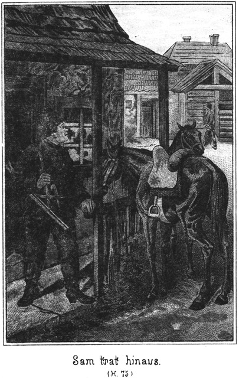»Das ist gut! Das ist sehr schön! Ich habe solche Angst, Nummer Zehn will nach dem Mückenflusse. Jener Herr, mit welchem Gökala gekommen ist, will auch hin, und denke Dir, der Oberlieutenant ist auch mit zwanzig Mann bereits nach dort unterwegs.«
»Donnerwetter! Der Oberlieutenant? Was fällt dem ein?«
»Ich bin so sehr erschrocken, als ich es erfuhr. Es ist heut früh, nachdem Du fort warst, ein jakutischer Händler hier angekommen, welcher sehr oft hier ist und die Nummer Zehn sehr gut kennt. Beide sind einander begegnet. Der Jakute hat hier erfahren, daß Nummer Zehn gesucht wird, weil er entflohen ist, und ist sofort zum Oberlieutenant gelaufen, um ihm zu sagen, daß der Flüchtling die Richtung nach dem Mückenflusse eingeschlagen hat. Darum ist dieser Offizier mit zwanzig Mann schleunigst hinterher.«
»Davon weiß ich doch gar nichts, obgleich ich zweimal beim Rittmeister war, welchem doch so Etwas gemeldet werden muß!«
»Du kennst die Verhältnisse nicht. Der Oberlieutenant ist der eigentliche Commandant. Der Rittmeister ist zu träge und zu feig. Er trachtet nur darnach, den Rang zu besitzen. Der Oberlieutenant läßt sich von ihm auch nicht viel sagen.«
»So, so! Das hätte ich wissen sollen.«
»Du kannst Dir also denken, welche Angst ich habe.«
»Nun, beruhige Dich, mein Kind. Angst brauchst Du nicht zu haben. Ich bin auch noch da.«
»Ja. Du bist da. Das ist freilich wahr, aber das ist eben auch der Fehler. Du solltest am Mückenflusse sein.«
»Dort werde ich auch sein!«
»So! Wirklich? Wann?«
»Morgen geht es hin.«
»Gewiß?«
»Ja. Ich erwarte nur die Ankunft jenes Helden, den ich vorhin erwähnte.«
»Aber das ist zu spät. Der Oberlieutenant kommt einen ganzen Tag eher dort an.«
»Das ist gleichgültig. Ich komme doch noch zur rechten Zeit. Und übrigens weißt Du gar nicht, was für Reiter wir sind. Wir werden an einem Tage wenigstens achtzig Werst zurücklegen.«
»Das ist unmöglich!«
»Nein.«
»Unsere besten Reiter bringen das nicht fertig, und die haben doch von Kind auf im Sattel gesessen.«
»Ja, die sind auch keine Prairiejäger.«
»Was sind das für Leute?«
»Davon ein anderes Mal. Auch haben wir Pferde – ah, Pferde!«
Er schnippste mit den Fingern, als ob er an etwas ganz Außerordentliches denke.
»Nun,« lächelte sie, die sollen wohl so ganz seltene Exemplare sein?« Dabei deutete sie auf die drei Thiere, welche Sam, Jim und Tim gehörten.
»Ja.«
»Sie sehen aber nicht darnach aus. Sie scheinen sogar halb verhungert zu sein.«
»Denkst Du, daß man mit einem solchen Bauche, wie ich habe, gut laufen kann?«
»Nein. Du bist jedenfalls ein sehr schlechter Läufer.«
»O, wenn es sich nur um zehn Minuten oder eine Viertelstunde handelt, so nehme ich es wohl mit einem Jeden auf. Zu einem Dauerlauf aber habe ich kein Geschick.«
»Und das Reiten hältst Du aus?«
»Das ist meine Wonne. Also habe keine Angst um Nummer Zehn. Er ist so gut wie in Sicherheit.«
»Du machst mir das Herz sehr leicht. Ich vertraue ganz auf Dich.«
»Du wirst Dich sicherlich nicht täuschen.«
Ich glaube es, und darum – – –« .
Sie blickte vor sich hin. In ihrem Gesichtchen war eine gewisse Verlegenheit zu erkennen.
»Was wolltest Du sagen?« fragte er.
»Etwas, was ich doch nicht wagen darf.«
»Mir gegenüber darfst Du Alles.«
»O nein. Es ist zu viel verlangt. Du hast bereits so viel gethan und noch zu thun.«
»Darum eben bin ich ganz der richtige Mann, auch Anderes zu übernehmen. Also sage mir Deinen Wunsch!«
»Jetzt nicht. Erst muß ich wissen, wie Du über die Sache denkst.«
»Ganz wie Du.«
»Du weißt doch noch gar nicht, wovon ich sprechen will.«
»Das freilich! Aber wenn ich Dir in das Gesicht und in die Augen gucke, so kann ich gar keine andere Meinung als die Deinige haben.«
»Wenn das auch wahr wäre!«
»Du kannst es glauben.«
»Nun, so sage einmal, wie Du über die armen Verbannten denkst.«
»Eben grad so wie Du!«
Sie schüttelte ungeduldig den Kopf.
»Grad so wie ich? Du weißt doch meine Gedanken gar nicht.«
»O, ich kenne sie sehr gut.«
»Woher?«
»Du hast sie mir ja mitgetheilt.«
»Wann denn?«
»Soeben, jetzt.«
»Ich weiß kein Wort davon!«
»Hast Du nicht gesagt, die ›armen‹ Verbannten?«
»Du bedauerst sie also; Du fühlst Mitleid mit ihnen. Ist das nicht so?«
»Ja, wenn Du so scharfsinnig bist, so habe ich Dir allerdings meine Ansicht mitgetheilt. Du bemitleidest sie also auch?«
»Ja.«
»Es sind arme, gute, bedauernswerthe Menschenkinder?«
»Hm! Es mag wohl auch viele sehr schlimme Subjecte darunter geben; aber im Großen und Ganzen habe ich Sympathie für sie. Genügt Dir das?«
»Ja. Und nun sage mir, ob Du vielleicht einmal von dem Engel der Verbannten gehört hast.«
»Ja, und zwar erst in den letzten Tagen. In Irkutsk wurde von ihm gesprochen und unterwegs auch.«
»Weiß man, wer er ist?«
»Nein.«
»Und wo er sich befindet?«
»Auch nicht. Man ergeht sich da in verschiedenen Vermuthungen. Die Ungebildeten glauben, es sei wirklich ein Engel, der vom Himmel herabkommt oder wenigstens ein guter Geist, eine Fee oder so etwas Aehnliches. Die Klügeren wissen natürlich, daß es ein Mensch ist, sind aber nicht einig darüber, ob er männlichen oder weiblichen Geschlechtes ist.«
»So! Und was sagt man von ihm?«
»Daß er jeden Verbannten befreit, welcher in seine Nähe kommt, nämlich, wenn der Mann der Hilfe werth ist. Unwürdige liefert der Engel sogar an die Behörden zurück.«
»Ja, das ist wahr.«
»Das weißt auch Du?«
»Ja,« nickte sie.
»Woher?«
»Nun, man spricht doch überall davon. Eine gewisse Röthe der Verlegenheit hatte sich über ihr Gesicht verbreitet. Er bemerkte dies, sagte aber kein Wort darüber, sondern meinte:
»Für gar Manchen mag ein solcher Engel wirklich als ein Himmelsbote erscheinen. Es giebt wohl viele, viele Verbannte, welche ihr trauriges Loos nicht verdient haben.«
»O, Hunderte, Tausende!« rief sie schnell und in begeistertem Tone. »Eben darum hat der Engel es sich zur Aufgabe gestellt, einen jeden Würdigen sicher über die Grenze zu geleiten.«
»Man sagt, daß das Militair sehr dahinter ist, ihn einmal kennen zu lernen.«
»O, das wird nie geschehen.«
»Meinst Du?«
»Ja. Nur die eigenen Leute kennen ihn und würden lieber sterben als ihn verrathen.«
»Nur die eigenen Leute? Hm! Ich weiß einen sehr fremden Menschen, der diesen Engel ganz genau kennt.«
»Das ist unmöglich!«
»O doch!«
»Nein, nein! Ein Fremder kann ihn nicht kennen.«
»Wollen wir wetten?«
»Ja.«
»Um was?«
»Sage Du es. Ich weiß mit voller Gewißheit, daß ich gewinnen werde, darum sollst Du den Preis unserer Wette bestimmen.«
Man sah es ihr an, daß sie ihrer Sache sicher war. Es war ein Blick liebenswürdiger Ueberlegenheit, mit welchem sie die Gestalt Sams überflog. Dieser begegnete diesem Blicke seinerseits auch mit einem selbstbewußten Lächeln und antwortete:
»Aber Du mußt auch darauf eingehen, wenn ich den Preis nenne.«
»Ja, wenn ich kann.«
»Du kannst.«
»Nun, so sage ihn!«
»Wir wetten um einen Kuß. Gewinne ich, giebst Du mir einen, und verliere ich, bekommst Du von mir einen.«
Sie lachte lustig auf.
»Auf diese Weise gewinnst Du natürlich allemal.«
»Warum?«
»Ob Du den Kuß von mir bekommst oder ihn mir giebst, es ist doch immer ein Kuß.«
»Natürlich! Was weiter?«
»Also ein – ein – Glück für Dich.«
»Sapperment! Und da soll ich es sein, der auf alle Fälle am Besten wegkommt?«
»Ja.«
»O nein. Du bist es!«
»Wieso?«
»Ob Du mir den Kuß giebst oder ob Du ihn von mir empfängst, es ist doch immer und immer ein Kuß von mir. Denke Dir! Ein Kuß von dem dicken Sam! Tausende von Mädchens und Frauen würden viel für diese Seligkeit geben, nach der sie bisher vergebens gelechzt haben.«
»Du bist ein Spaßvogel!«
»Es ist mein völliger Ernst. Also, machst Du mit?«
»Nein. Ich will diesen tausend Frauen das Glück, nach welchem sie sich so sehr sehnen, nicht verkümmern.«
»Donnerwetter! Und grad Dich hätte ich am Allerliebsten einmal glücklich gemacht. So wird also aus unserer Wette nichts?«
»Nein.«
»Schade! Ich hätte sie ganz sicher gewonnen.«
»Du irrst Dich.«
»O, ich weiß ganz genau, daß Du den Engel der Verbannten nicht kennen kannst.«
Sie sagte das außerordentlich eifrig. Sams Lächeln wurde immer siegesgewisser. Er sagte:
»Nichts weißt Du, gar nichts weißt Du, mein Töchterchen.«
Da stampfe sie in ihrem Eifer mit dem Füßchen auf und antwortete:
»Ich wüßte nichts? Grad ich, grad ich muß es am Allerbesten wissen!«
»So! Aber ich kann es Dir ja beweisen, daß ich den Engel kenne.«
»Nun, so beweise es!«
»Schön! Er ist weiblichen Geschlechtes. Ist das richtig?«
»Ja.«
»Er ist unverheirathet, also ein Mädchen.«
»Auch richtig.«
»Er ist kein gewöhnliches Mädchen, sondern die Tochter eines sehr angesehenen Anführers.«
»Ja.«
»Er hat auch einen sehr hübschen Namen.«
»Wie lautet der?«
»Karparla.«
Sie trat um einige Schritte zurück.
»Kar – – –! Wen meinst Du?«
»Dich natürlich.«
»Mich? Du denkst, ich sei der Engel der Verbannten?« fragte sie im Tone des größten Erstaunens.
»Ja, mein Herzchen.«
»Woher weißt Du das?«
»Von Dir selbst.«
»Kein Wort habe ich Dir gesagt.«
»O doch!«
»Keine Silbe!«
»Ausführlich, ganz ausführlich hast Du es mir eingestanden.«
»Wenn denn?«
»Während unserer Unterhaltung. Hast Du nicht bereits vorhin meinen Scharfsinn anerkannt? Hörbare Worte hast Du allerdings darüber nicht gesprochen, aber Dein Verhalten, Deine Ausdrucksweise war sprechend. Du hast Dich eben verrathen.«
»Sam, Du bist ein gefährlicher Mensch!«
»O nein. Ich bin ein selensguter Kerl.«
»Alles, Alles kannst Du errathen.«
»Ja, errathen, das thue ich gern; aber verrathen, das thue ich niemals. Also sage mir, habe ich Recht?«
Sie antwortete nicht sogleich.
»Sam, Dir traue ich. Du wirst es nicht weiter sagen.«
»Eher beiße ich mir den Kopf ab!«
»Ja, ich bin Diejenige, die man so nennt.
»Siehst Du, Kindchen. Na, hier nimm meine Hand. Dein Geheimniß ist bei mir sehr gut aufgehoben. Ich will Dir ehrlich sagen, daß ich ganz erstaunt über Dich bin.«
»Warum?«
»Dieser Engel der Verbannten zu sein, dazu gehört ein außerordentlicher Muth. Und den habe ich Dir nicht zugetraut.«
Sie nickte leise vor sich hin und antwortete:
»Ja, wir Frauen haben einen anderen Muth als Ihr. Ihr habt den Muth der Vernichtung und wir den Muth der Errettung, der Befreiung.«
Ihr Gesicht hatte einen tiefernsten Ausdruck angenommen. Sie schien jetzt eine ganz Andere geworden zu sein. Um den weichen, vollen Mund ging ein kurzes, energisches Zucken, und aus den Augen blitzte eine Entschlossenheit, der man schon etwas Ungewöhnliches zutrauen konnte.
»Karparla, ich erstaune nicht nur, sondern ich bewundere Dich,« sagte Sam. »Du kannst doch keinen Gefangenen befreien, ohne Dich in die eigene, größte Gefahr zu begeben.«
»Ja, gefährlich ist es,« lächelte sie.
»Und ich habe Dich für ein Wesen gehalten, welches vor so Etwas zurückschreckt.«
»Nun, gar so schlimm ist es freilich mit meinem Muthe nicht. Du müßt nämlich wissen, daß ich viele, viele Verbündete habe. Alle Stämme der Tungusen helfen mir.«
»Ah, ist es so!«
»Ja. Wir nehmen die entflohenen Verbannten bei uns auf, verbergen sie einzeln an verschiedenen Orten und holen sie dann zusammen, wenn wir nach der Grenze ziehen. Sie sind dann als Tungusen verkleidet und können nicht erkannt werden.«
»Hm! Das ist kein Lob für die hiesige Polizei.«
»Aber weißt Du, so ganz leicht ist es dennoch nicht. Wir begegnen sehr oft Militair, welches sich auf einem Streifzuge nach Geflohenen befindet. Da ist es oft sehr schwierig, der Entdeckung zu entgehen.«
»So wissen auch Deine Eltern um die Sache?«
»Natürlich. Das ganze Volk weiß es. Ich sollte ja grad aus diesem Grunde die Frau des Rittmeisters werden.
»Ah! Wie hängt das zusammen?«
»Das ist so: Mein Vater und der Schamane haben einst verschuldet, daß ein großer Trupp von Flüchtlingen, welcher sich bereits ganz nahe an der chinesischen Grenze befand, vom Militair umzingelt wurde. Die Aermsten beschlossen, sich nicht zu ergeben, sondern lieber zu sterben. Sie stürzten sich in das Wasser des Flusses und ertranken Alle.«
»Ja. Dies hat einen solchen Eindruck auf die Beiden gemacht, daß sie das Gelübde ablegten, fortan einen jeden würdigen Flüchtling zu retten. Seit jener Zeit sind von ihnen Hunderte glücklich über die Grenze gebracht worden. Jetzt nun vor einiger Zeit kam der Schamane auf den Gedanken, daß das Alles für uns leichter sein würde, wenn ich die Frau eines russischen Offiziers wäre, und so mußte mein Vater ihm versprechen, daß ich das Weib des Rittmeisters werden solle, um Alles, was gegen die Verbannten unternommen wird, sofort zu erfahren.«
»Wie kurzsichtig!«
»Meinst Du?«
»Ja. Es fragt sich, ob Dein Mann Dich in seine dienstlichen Geheimnisse und Angelegenheiten eingeweiht hätte. Es fragt sich, ob er selbst bei seinen Vorgesetzten ein solches Vertrauen besessen hätte, daß ihm Alles eröffnet worden wäre. Und endlich wärst Du ja für immer an seine Person gefesselt gewesen und hättest direct nichts mehr für Deine Schützlinge thun können.«
»Das ist wahr.«
»Und wenn es einmal entdeckt worden wäre, daß Du die verächtliche Rolle einer Spionin, einer Verrätherin gespielt hättest, was wäre Dein Loos und dasjenige Deines Mannes geworden? Lebenslängliche, unterirdische Arbeit in den Bergwerken von Nertschinsk.«
Sie schauderte.
»Ich? Eine Fürstentochter?«
»Pah! Diese Würde gilt nichts mehr, sobald Du die Frau eines russischen Soldaten wirst. Du wärst Frau Rittmeister gewesen, weiter nichts.«
»So ists wahrhaftig ein großes Glück, daß ich mich so gegen diesen Plan gesträubt habe.«
»Ganz gewiß. Du wärst einem Elende verfallen, aus welchem es keine Rettung gegeben hätte. Jetzt kannst Du für die Unglücklichen viel mehr thun als wenn Du die Frau dieses brutalen, feigen, ordinären Menschen wärst.«
»Ja, ich gebe Dir Recht. Grad jetzt haben wir einen Zug nach der Grenze vor. Aber es fehlt uns Etwas, was wir uns hier holen wollten. Leider aber bekommen wir es nicht.«
»Was?«
»Das möchte ich Dir lieber nicht sagen.«
»Warum nicht?«
»Weil ich nicht weiß, wie Du darüber denkst.«
»O, wie vorhin: ganz wie Du!« lachte er.
»Hier vielleicht nicht.«
»O, ganz gewiß.«
»Nein, nein; das ist ja etwas ganz Anderes.«
Da ergriff er ihre Hand und versicherte ihr in überzeugendem Tone:
»Kindchen, ich habe Dich lieb. Dir zu Gefallen kann ich Alles thun.«
»Wirklich Alles?«
»Auch – – auch stehlen?«
»Ja stehlen, das – das – hm, das ist nun eigentlich nicht meine Passion.«
»Siehst Du, daß ich ganz richtig zweifelte!«
»Hm! Es kommt auf die Verhältnisse an. Aufrichtig gestanden, halte ich Dich für keine Diebin.«
»Die bin ich nicht.
»Also muß es sich um einen Diebstahl handeln, zu dem es Veranlassung und Entschuldigung giebt.«
»Wir bekommen einen sehr großen Trupp Flüchtlinge zusammen. Wir können nicht länger warten; wir müssen nach der Grenze, weil wir die Unglücklichen in solcher Anzahl nicht mehr verbergen können. Aber zugleich haben wir gehört, daß grad jetzt die Grenze scharf und eng besetzt ist und daß dort zahlreiche Truppen herumschweifen. Es wird sicher zum Kampfe kommen, und uns fehlen die Waffen.«
»Sapperment! Das ist dumm! Aber ich habe geglaubt, daß Ihr gut bewaffnet seid!«
»Mit Pfeil und Bogen, Schild und Lanze, ja. Viele haben auch Flinten, aber es fehlt Pulver und Blei.«
»So kauft Euch welches!«
»Wo?«
»Ah, ja! Munition kann man hier ja nur von der Regierung erhalten.«
»Und die sorgt natürlich in ihrem eigenen Interesse dafür, daß wir nichts erhalten. Und sodann denk an die armen Flüchtigen. Für sie ist es ja die Hauptsache, daß sie bewaffnet sind. Sie müssen sich mit Hilfe der Waffen ihrer Verfolger erwehren und ihre Nahrung schießen. Ohne Waffen sind sie dem Hungertode preisgegeben. Wir brauchen also Flinten für sie und Pulver und Blei für sie und auch uns.«
»Ich könnt das Alles nicht im Kauf bekommen.«
»Man verweigert es uns.«
»So wollt Ihr es Euch stehlen?«
»Ja.«
»Nicht übel! Das Ding kann mir gefallen. Die Geschichte fängt an, mich zu interessiren.«
»Das freut mich, lieber Sam!«
»Natürlich, denn ich soll Euch mit mausen helfen.«
»O, das ists, was ich Dir nicht gut sagen konnte. Nun hast Du es selbst errathen.«
»Prächtig! Höre, Karparla, habe ich denn wirklich so ein fürchterliches Spitzbubengesicht?«
»O nein, eben gar nicht! Du hast das ehrlichste Gesicht, welches mir jemals vorgekommen ist.«
»Donnerwetter! Und dennoch muthet Ihr mir zu, daß ich mit Euch mausen soll!«
»Ja,« lachte sie.
»Vielleicht gar einbrechen!«
»Einbrechen müssen wir, ganz richtig, sonst kommen wir nicht dazu.«
»Na, Ihr seid mir ein schönes Volk!«
»Ihr? Wen meinst Du?«
»Euch Tungusen, Euch alle, die Ihr daran denkt, mich mit in diese famose Spitzbüberei zu verwickeln.«
»O, das ist ja nur eine einzige, allereinzige Person, die das thut. Sonst weiß Niemand Etwas davon.«
»Also Du allein?«
»Ja.«
»Weiter weiß kein Mensch Etwas davon?«
»Nein. Ich habe ein so unendliches Vertrauen zu Dir, daß – – –«
»Ja,« unterbrach er sie, »ein so unendliches Vertrauen, daß ich ein ganz verfluchter Einbrecher bin! Danke sehr!«
Er sagte das aber keineswegs in einem zornigen Tone. Sie sah es ihm an, daß er gar nicht abgeneigt war, ihr auch hierin zu helfen.
»Sam, lieber Sam!« bat sie.
»Karparla, liebe Karparla! Ich will es thun; ich will einbrechen und stehlen; aber nur unter einer Bedingung!«
»Gut, gut! Welche ists?«
»Du mußt meine Frau werden!«
»O, Sam, was wolltest Du mit mir anfangen!«
»Oder Du mit mir! Einbrechen thäten wir!«
»Das können wir auch, wenn wir ledig bleiben. Aber sprechen wir im Ernste! Kein Mensch weiß von meinem Plane Etwas. Ich allein habe daran gedacht, und ich bin es auch, die sich an Dich wendet, ohne daß ein Anderer eine Ahnung davon hat.«
»Hm! Warum grad an mich?«
»Eben meines Vertrauens wegen.«
»Hm! Giebt es denn unter Deinen lieben Tungusen keine Spitzbuben?«
»Genug.«
»Nun also!«
»Aber die sind zu dumm, einen solchen Streich auszuführen. Und – und – dann möchte ich auch nicht, daß ein Verdacht auf uns fiele.«
»Ja, auf mich soll er aber fallen!«
»O, Du bist viel zu klug dazu!«
»Verdammt zweifelhaftes Lob!«
»Also, bitte, bitte, willst Du?«
»Kind, wie soll ich diese Frage beantworten? Ich weiß doch noch gar nicht, um was es sich handelt.«
»Nicht? Habe ich es Dir denn noch gar nicht gesagt?«
»Nun, der Kreishauptmann hat Pulver und Blei in Menge.«
»Das läßt sich denken, von wegen der Garnison.«
»Und auch Gewehre.«
»Weißt Du das genau?«
»Ja, ganz neue, mit passenden Formen zum Gießen der Kugeln.«
»So! Wo befindet sich denn die Niederlage?«
»Im Regierungsgebäude, neben seiner Schlafstube.«
»Sapperment! Da schläft er also neben dem Pulvermagazin! Wie gefährlich!«
»O nein! Es darf kein Mensch hinein, nicht einmal seine Frau. Und er geht natürlich nur am Tage hinein, nicht des Abends, wenn er Licht brauchen würde.«
»Hm! Ueberdies mag er die Sachen auch aus Vorsicht gleich neben seinem Bette aufbewahren. Es kann da kein Spitzbube dazu.«
»Das sagte er auch.«
»Nicht wahr? Ja, der Kerl ist schlau. Und Du meinst, mein Liebchen, daß ich da in das Cabinet einbrechen soll?«
»Ja.«
»Und Alles ausräumen?«
»Ja, möglichst Alles.«
»Sapperment! Ich muß doch ein verfluchter Einbrecher sein! Mir zuzumuthen, ein ganzes Gewehrcabinet nebst Pulverkammer auszuräumen, woneben der Kreishauptmann schläft! Netter Kerl, der dicke Sam!«
»O, Du bringst es fertig. Du mit Deinen beiden Freunden.«
»Also die haben auch solche Galgengesichter?«
»Scherze nicht! Willst Du, Sam? Du rettest dadurch viele Verbannte vom Untergange.«
»Hm! Wenn das Steinbach wüßte!«
»Wer ist das?«
»Der Mann, welcher morgen kommen wird.«
»O, der würde Dir zureden!«
»Da irrst Du Dich sehr! Er kommt in halb officieller Eigenschaft. Da darf er nichts thun, was gegen die Gesetze verstößt. Grad er würde mir auf das Strengste verbieten, mich in so eine Spitzbubengeschichte einzulassen.«
»So darfst Du ihm um Gotteswillen nichts sagen! Hörst! Du?«
»Ich höre schon.«
»Aber wenn er da ist, so ist es mir unmöglich, die Sache zu Stande zu bringen. Und morgen kommt er bereits. Es müßte also bereits heute geschehen.«
»Um so besser! Also, willst Du?«
»Wetterhexe! Ja, ich will für Dich zum Spitzbuben, Schinderhannes und bayrischen Hiesel werden. Ich will!«
»Du guter, lieber Sam!«
Sie drückte ihm die Hand mit inniger Dankbarkeit. Er aber sagte:
»Kind, Du bist ein ganz gefährliches Geschöpfchen. Jetzt lasse ich die Bedingung, welche ich vorhin machte, mit Freuden fallen. Ich mag Dich nicht zur Frau.«
»Warum?«
»Weil Du aus Einem Alles machen kannst. Zuletzt würde man Dir zu Liebe gar noch morden und plündern.«
»So schlimm ist es nicht. Das verlange ich nicht.«
»Nicht? Wie nun, wenn ich erwischt würde?«
»O, das ist nicht der Fall. Dazu bist Du eben viel zu klug.«
»Oho! Auch der Gescheidteste ist nicht sicher. Also ich setze den Fall, daß ich erwischt würde. Denkst Du, daß ich mich ergreifen ließe?«
»Nein.«
»Ich würde mich wehren.«
»Natürlich!«
»Von meinen Waffen unter Umständen Gebrauch machen. Also ist es doch sehr leicht möglich, daß ich um Deinetwillen zum Mörder werden kann.«
»Ich halte Dich eben für viel zu schlau, als daß Du Dich erwischen lässest. Und selbst dann, wenn man Dich entdeckte, würdest Du in Deiner Klugheit Mittel und Wege finden, zu entkommen ohne Mörder zu werden.«
»Du hast wirklich ein Vertrauen zu mir, welches belohnt werden muß! Also heut wird im Regierungsgebäude eingebrochen! Aber, es hat nur einen Haken, einen sehr dummen Haken.«
»Welchen?«
»Man wird den Einbruch natürlich entdecken, da wir Gewalt anwenden müssen. Dann wird sofort gesucht werden. Wie leicht kann das gestohlene Gut bei Euch gefunden werden.«
»Es wird ja gleich fortgeschafft.«
»Das kann herauskommen.«
»O nein!«
»O ja! Man darf kein gar zu großes Vertrauen haben. Auch Vorsicht ist von Nöthen. Ja, wenn wir die Sachen durch List herausbrächten, ohne daß der Kreishauptmann es merkt! Wenn man die Schlüssels zum Beispiel hätte!«
»O, wo der Schlüssel zur Pulverkammer steckt, das weiß ich.«
»So? Wo?«
»Ueber dem Bette des Kreishauptmanns hängt ein hölzerner Kasten. Da drinnen liegt der Schlüssel.«
»Woher weißt Du das?«
»Er zeigte mir und dem Vater einmal die neuen Gewehre. Da nahm er den Schlüssel heraus.«
»Hm! Da weiß man aber doch nicht, ob dieser Schlüssel sich immer an dem angegebenen Orte befindet.«
»Wahrscheinlich doch!«
»Ja, zu vermuthen ist es, da das Kästchen sich über dem Bette befindet. Aber wie gelangt man in die Schlafstube. Sie ist doch verschlossen.«
»Nein. Man kommt durch die Wohnstube, aber diese Letztere ist verschlossen, wenn die Leute schlafen und wenn sie ausgehen.«
»Verfluchte Geschichte. Der Schlüssel wird also mitgenommen, und die Fenster sind zu eng und niedrig zum Einsteigen. Hm! Aber da fällt mir ein: Ich habe gestern Abend während des Concertes gesehen, daß die Kreishauptmännin einen Pompadour bei sich hatte.«
»Was ist das?«
»Ein kleiner Sack oder Beutel, mit Verzierungen versehen, den man am Arme oder in der Hand trägt, um allerlei Sachen darinnen aufzubewahren.«
»O, diesen Beutel kenne ich. Sie hat, wenn sie des Abends fortgeht, immer auch die Schlüssels darin.«
»Famos! Da könnte es sich machen!«
»Wieso?«
»Weißt Du, wir müssen das Volk aus dem Hause locken.«
»Herrlich! Aber wie?«
»Deine Eltern müssen den Kreishauptmann nebst Frau und Sohn einladen und sie heut Abend möglichst lange festhalten. Wird das gehen?«
»Sehr leicht. Wenn ich mit dem Rittmeister ein Wenig freundlich thue, so sind alle Drei so entzückt, daß sie ganz sicher das Nachhausegehen vergessen.«
»Gut. Während ihrer Abwesenheit wird der Einbruch ausgeführt. Wenn wir nur das Volk los werden könnten, welches noch im Regierungsgebäude wohnt, die Diener.«
»Das sind nur drei. Das wird mir auch leicht werden. Ich sende zwei meiner Tungusen hin, welche sie nach dem Wirthshause holen müssen. Die Drei werden denken, daß sie auch einen Wutki trinken können, wenn ihre Herrschaften sich in unserm Lager lustig machen.«
»Schön! So weit wäre Alles recht gut und schön. Nun handelt es sich nur noch um die Schlüssels.«
»Das ist das Schwierigste.«
»Freilich! Ja, wenn man wüßte, daß sie sich wirklich im dem Beutel befänden!«
»Ganz gewiß. So oft ich hier in Platowa gewesen bin, sind die Glieder der Familie Abende lang unsere Gäste gewesen, und stets hat die Frau die Schlüssels in dem Beutel gehabt.«
»Schön! So werden wir sie ihr heut Abend herausnehmen.«
»Aber wie? Das ist ungeheuer schwer!«
»O nein, gar nicht. Die Alte wird doch den Beutel nicht stets in der Hand behalten!«
»Nein. Sie legt ihn gleich weg oder hängt ihn auf.«
»Nun gut! Da ist uns ja geholfen. Du thust, wenn sie kommt, sehr diensteifrig mit ihr und nimmst ihr Alles ab, was sie von sich legen will, das Tuch, die Haube, den Beutel. Den Letzteren hängst Du aber nicht etwa an einen Zeltpflocke auf, sondern Du legst ihn ganz nahe an der Zeltwand auf eine Decke oder einen Teppich, welchen wir dorthin gelegt haben.«
»Warum?«
»Daß ich zu ihm kann.«
»Bist Du denn mit in dem Zelte?«
»O nein. Erstens würde man es doch bemerken, daß ich mir mit dem Beutel zu schaffen mache, und zweitens wollen wir uns gar nicht sehen lassen.«
»Aber Ihr seid unsere Gäste. Ihr müßt doch mit dabei sein!«
»Wir thun, als hätten wir einen Ritt unternommen. Darum müssen unsere Pferde so weit vom Zelte fortgeschafft werden, daß sie nicht gesehen werden können. Wenn der Einbruch gelingt, so kommen wir heim und thun ganz so, als ob wir soeben von dem Ritte zurückkehrten.«
»Aber wie willst Du zu dem Beutel kommen?«
»Auf die leichteste Weise von der Welt. Es kommt dabei ganz darauf an, daß Du klug handelst. Die Stelle, an welcher Du den Beutel niederlegst, muß schon vorher ganz genau bestimmt sein. Dort lockern wir die Zeltwand unten am Boden, so daß ich unten hereingreifen kann.«
»Ach so! Wie klug!«
»Du setzest die drei Gäste natürlich so, daß keiner von ihnen direkt nach der betreffenden Stelle blicken kann. Dann, wenn der geeignete Augenblick gekommen ist, giebst Du mir ein Zeichen, welches wir genau verabreden.«
»Ich werde eine Melodie trällern.«
»Gut! Sobald Du das thust, greife ich herein und ziehe den Beutel hinaus.«
»So befindest Du Dich draußen vor dem Zelte?«
»Natürlich. Und es ist ja Alles finster, so daß Niemand sehen kann, was ich thue.«
»O, alle unsere Leute, alle Tungusen dürfen es sehen. Keiner wird Dich verrathen.«
»Gut! Aber dennoch ist es mir lieber, wenn Niemand mich beobachtet. Es ist mir überhaupt erwünscht, wenn keiner von Euren Leuten es weiß, daß ich und meine Gefährten die Hand im Spiele haben.«
»Das geht nicht.«
»Warum?«
»Ihr müßt ihnen doch, falls Alles gelingt, die Sachen übergeben.«
»Nein. Höre nur! Natürlich ladest Du die Drei nur erst für den Abend ein. Sie werden es Dir doch nicht abschlagen?«
»Auf keinen Fall. Sie sind froh, wenn ich sie einlade, denn sie denken, daß ich meine Gesinnung gegen den Rittmeister geändert habe. Sie brauchen mein Vermögen, denn sie sind ärmer als Bettler, da sie nichts als Schulden haben und doch nicht betteln dürfen.«
»Es wird sehr bald dafür gesorgt werden, daß sie ihr regelmäßiges Unterkommen finden, ohne betteln zu müssen.«
»Wieso? Willst Du ihnen zu etwas Besserem behilflich sein?«
»Behilflich, ja, aber zu etwas Besserem freilich nicht. Noth werden sie nicht leiden, denn jeder Gefangene bekommt, was er zum Leben bedarf.«
»Gott! Ins Gefängniß sollen sie?«
»Ja.«
»Was haben sie verbrochen?«
»Davon später! Also ich ziehe den Beutel hervor und nehme die Schlüssel heraus. Dann schiebe ich ihn wieder an seine Stelle zurück und eile mit Jim und Tim nach dem Regierungsgebäude.«
»Aber wenn nun die Frau indessen den Beutel braucht? Dann würde sie entdecken, daß die Schlüssel fehlen.«
»So mußt Du gewandt sein. Bedarf sie zum Beispiele des Taschentuches, welches sich wohl auch im Beutel befindet, so mußt Du dienstfertig eilen, es ihr zu holen. Da bekommt sie den Pompadour gar nicht in die Hand.«
»Ja, so wird es gehen. Ich werde meine Sache sehr gut machen.«
»Nun nehme ich an, daß Alles gelingt, so schaffen wir die Waffen und die Munition hinten nach den Garten hinaus, wo eine Plankenthür nach der Gasse führt. Wir kehren dann, nachdem wir Alles gehörig wieder verschlossen haben, nach hier zurück, und ich stecke die Schlüssel heimlich in den Beutel. Dann suchen wir unsere Pferde auf und kehren von unserem Spazierritte heim. Bei der Verwirrung, welche dadurch im Zelte hervorgerufen wird, ist es Dir leicht, hinaus zu gehen und den Deinigen einen Wink zu geben. Sie verfügen sich mit Packpferden nach der Plankenthür und laden Alles auf.«
»Dann können sie sofort aufbrechen und die Sachen in Sicherheit schaffen.«
»Wohin?«
»Ich habe einen sehr sicheren Ort, den Du auch noch kennen lernen wirst.«
»Schön! Wenn also Deine Leute an die Planke kommen, so finden sie Alles dort, ohne zu wissen, wer es hingelegt hat. Das wünsche ich.«
»Werden sie nicht bemerkt werden?«
»Es giebt nur Zäune und Gärten dort. Kein Mensch wohnt in der Nähe. Ich bin heut bereits dort gewesen, ohne daß mich Jemand gesehen hat. Und im Hause selbst, da befindet sich auch Niemand, da Du die Diener fortlocken willst. Also ist Alles so sicher, daß – – – ah, und doch ist Jemand da! Donnerwetter!«
»Wer?«
»Gökala.«
»Die wird Dich nicht verrathen.«
»Nein, ganz gewiß nicht. Aber für mich und vor allen Dingen auch für sie selbst wäre es besser, wann sie sich nicht im Hause befände.«
»Ja, wenn sie eingeschlossen ist, so kann sie nicht fort.«
»Hm! Sie wird dennoch fortgehen.«
»So? Wohin?«
»Mit dem Kreishauptmann zu Euch.«
»Das wäre herrlich, prächtig! Aber wie wolltest Du das so weit bringen?«
»Das laß nur meine Sache sein! Du wirst es sehen. Jetzt nun denke ich, ist Alles besprochen. Hast Du noch einen Wunsch oder eine Bemerkung?«
»Nein. Uebrigens, falls mir noch Etwas einfällt, so sehen wir uns doch vorher noch einmal?«
»Natürlich. Jetzt reiten wir fort. Wenn wir zurückkehren, steigst Du zu Pferde, reitest nach dem Regierungsgebäude, ladest den Kreishauptmann nebst Familie ein und begehrst, Gökala zu sehen, um auch sie mit einzuladen.«
»Das wird man mir verwehren.«
»Ja. Ich bin indessen zu Fuße nachgekommen, und Du trittst ganz wie zufällig an das Fenster, damit ich sehe, daß der Augenblick da ist, an welchem man Dir verweigert hat, Gökala zu sehen. Dann komme ich hinauf.«
»Wozu?«
»Um sie zu zwingen, Gökala Dir zu zeigen und Abends mitzubringen.«
»Mann, Sam, wie willst Du sie zwingen? Welche Macht hast Du über sie?«
»Hm! Auch davon später. Ich habe jetzt keine Zeit mehr. Man wartet auf mich, und ich habe hier eine bereits zu lange Weile verplaudert.«
Karparla trat in das Zelt, und Sam sattelte die drei Pferde.
Obgleich diese Unterredung ziemlich lang gewährt und vor den Augen so vieler Leute stattgefunden hatte, war sie doch Niemandem aufgefallen. Der Fremde konnte natürlich mit der Tochter seines Gastfreundes reden, und Beide thaten dabei, als ob es sich um etwas ganz Gewöhnliches und Unverfängliches handle.
Dann bestieg Sam sein Pferd, nahm die beiden anderen am Zügel und ritt nach dem Gasthofe, wo er schon längst mit Ungeduld erwartet worden war.
»Wo steckst Du denn?« fragte Jim. »Schau uns an! Wir sind vor langer Weile noch einmal so lang geworden, als wir vorher waren. Da ist es kein Wunder, daß wir dünner werden.«
»Gebt Euch nur zufrieden. Es gab etwas Wichtiges, was ich Euch unterwegs erzählen werde. Steigt auf, damit wir vorwärts kommen!«
Sam befahl den beiden Kosaken, nun auch aufzubrechen, aber so langsam zu reiten, wie er ihnen bereits angerathen hatte. Dann brachen die Drei auf.
Bis über die Furth hinüber ritten sie im Schritt, sodann gingen sie in Trab über und endlich in gestreckten Galopp.
Die Gegend war eben und die Luft so rein und frei von Dunst, daß man sehr weit sehen konnte.
Nach der vorausgesehenen Zeit wurden zu ihrer Linken Dunstwolken sichtbar.
»Obs dort ist?« fragte Jim.
»Jedenfalls,« antwortete Sam. »Wo es Weiden giebt, da giebt es Feuchtigkeit, und wo es Feuchtigkeit giebt, da giebt es Dunst. Folglich haben wir nun die Weidensteine fast erreicht. Lenken wir darauf zu!«
»Diese Dunst ist sehr vortheilhaft für uns, denn wir können von dem Rittmeister nicht gesehen werden.«
»Dafür sehen aber auch wir ihn und seine Leute nicht.«
»Hat nichts zu sagen. So alte Savannenmänner wie wir werden seine Fährte schon zu finden wissen.«
Jetzt hatten sie die Weiden von Norden her erreicht. Es gab da Busch- und Baumformen. Sie ritten ein Stück hinein und banden dann ihre Pferde an die Bäume. Abgestiegen, nahmen sie ihre Waffen in die Hand und schlichen sich leise vorwärts.
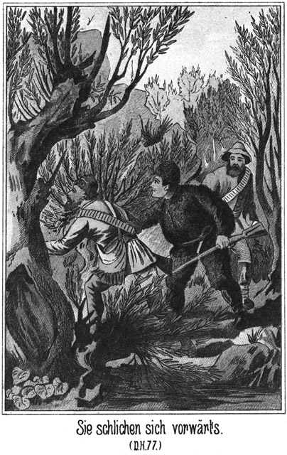Vor ihnen stiegen wirre Steinmassen in die Höhe. Weidengestrüpp und zahlreiche Wasserlachen hinderten sie am schnellen Vorwärtskommen. Endlich erreichten sie die zerbröckelte Felsmasse. Sie sahen, wie lang dieselbe war und daß sie sich gerad in der Mitte der Ausdehnungslinie befanden.
»Das ist sehr gut,« sagte Sam. »Jenseits hält der Rittmeister mit seinen Leuten, um den beiden Kosaken aufzulauern. Jedenfalls hat er sich hinter Felsen versteckt. Steigen wir hinauf und drüben wieder hinab. Aber nehmen wir uns in Acht, daß wir nicht von ihm bemerkt werden können!«
Jetzt kletterten sie empor, doch nur in den Ruinen, die sich ihnen boten. Sie gelangten oben an. Sogleich bemerkten sie einen Kosaken, welcher drunten in der Steppe stand und die nach der Stadt sich erstreckende Ebene musterte.
»Das ist der Wachtposten,« meinte Tim. »Da wird der Rittmeister nicht weit davon sein.«
»Sehe ihn schon,« sagte Sam.
»Wo?«
»Links da unten, hinter dem großen, viereckigen Quader sitzt er mit den Andern. Seht Ihr ihn?«
»Ja, deutlich. Die Pferde stehen dabei.«
»Also habe ich mich doch nicht getäuscht. Er will den beiden armen Teufels an den Leib, soll sich aber verrechnet haben!«
»Steigen wir auch hinab?«
»Natürlich. Hier rechts führt eine Rinne hinab. Da können wir nicht gesehen werden und kommen doch so nahe, daß wir nachher wahrscheinlich jedes Wort hören werden. Und schaut! Seht Ihr den Punkt da draußen?«
Er deutete in der Richtung nach der Stadt.
»Ja,« meinte Jim. »Das sind nun unsere Kosaken.«
»In zwei Minuten werden aus diesem einen Punkte zwei, und in fünf Minuten sind die Beiden da. Schaut, der Posten hat sie auch bereits bemerkt. Er kommt herbei, es zu melden, und nun steigen sie zu Pferde, um wie Strauchdiebe aus ihrem Hinterhalte hervorzubrechen. Famoses Land, dieses Sibirien, und allerliebste Verhältnisse! Aber nun rasch hinab! Je eher wir unten sind, desto besser ist es.«
*
Sie kletterten und stiegen abwärts. Es ging sehr steil hinunter, und das Gestein war loskörnig und locker. Dennoch löste sich nicht ein einziges Steinchen unter ihren Stiefeln, um zur Tiefe zu kollern und ihre Anwesenheit zu verrathen.
Andere Personen hätten eine ganze Lawine von Steinen hinabgetreten. Diese drei Prairiejäger aber verstanden es vortrefflich, auf jeder Art von Boden so zu gehen, daß sie sich nicht verrathen konnten.
Endlich kamen sie unten an. Sie standen eng an einander gedrängt an einem ganz dünnen Felsenstück, welches eine, kaum eine Elle dicke und vielleicht acht Ellen hohe Wand bildete, auf deren anderer Seite sich der Rittmeister mit seinen Leuten befand. Wie Sam vorausgesagt hatte, konnte man jedes Wort der Stegreifritter hören.
Einer der Kosaken war so weit vorgeritten, daß er die Ebene überblicken konnte, anstatt selbst gesehen zu werden.
»Nun, wie weit noch?« fragte ihn der Rittmeister.
»Halbe Werst,« lautete die Antwort.
»Schön! Ich steige wieder ab. Es ist viel besser, die Sache hier zu erledigen als draußen auf der Ebene. Sobald sie kommen, umringt Ihr sie und bringt sie hierher zu mir. Aber, wenn Ihr sie etwa entkommen laßt, so erwartet Euch die Knute, Ihr Hunde!«
»Der Schuft!« flüsterte Sam. »Sogar gegen diese Zwei sendet er nur seine Leute.«
»Wird sich fürchten!« wisperte Jim.
»Natürlich! Die Beiden könnten sich doch wehren und ihm ein Haar krümmen. Na, warte Bursche.«
»Jetzt still! Es wird gleich losgehen.«
Es dauerte kaum noch eine Minute, dann ertönte jenseits des Steines Pferdegetrappel. Einige Flüche wurden laut, ein Schrei, dann kamen die Pferde zurück.
»Sie haben sie!« flüsterte Tim.
»Pst, still! Wir müssen nun Alles hören,« warnte Sam.
Drüben ertönte die Stimme des Rittmeisters:
»Herunter von den Pferden, Ihr Hunde!«
»Aber, Väterchen, warum denn? Warum hältst Du uns hier auf?« fragte der Eine der Angefallenen in höflichem Tone.
»Still! Herab vom Pferde, oder ich helfe nach.«
»Wir haben ja nichts begangen!«
Der Hieb der Peitsche war zu hören.
»Da, das hast Du für das Schwatzen, Kerl! Also herab, sonst setzt es Hiebe.«
»Wir müssen gehorchen, Väterchen – – –«
»Das versteht sich ganz von selber.«
»Weil Du es befiehlst und weil Ihr in der Mehrzahl seid.«
»Ah! Sonst würdest Du wohl nicht gehorchen?«
»Nein.«
»Warum?«
»Ich bin jetzt nicht mehr im Dienst, und Niemand hat mir Etwas zu sagen.«
»Schön! Ich werde Dir zeigen, ob und wer Dir Etwas zu sagen hat. Zählt ihm Zehne auf, aber kräftig!«
Man hörte, daß der Mann ergriffen wurde.
»Wollen wir das dulden?« fragte Jim leise.
»Warum nicht?« meinte Sam.
»Der arme Bursche!«
»Pah! Zehn Knutenhiebe thun einem Kosaken nichts. Desto hübscher sitzt er dann zu Pferde. Uebrigens bekommt der Rittmeister sie zurück. Horcht!«
Drüben erklang die Stimme des Offiziers:
»Eins, zwei, drei, vier – sechs – acht – zehn! Gut für jetzt! Für jedes widersetzliche Wort aber setzt es abermals zehn.«
»Väterchen,« sagte der Geschlagene, »das dürfte der Fremde wissen.«
»Welcher, Du Hund?«
»Der kleine Dicke.«
»Was wäre da?«
»Ich weiß nicht, was er thun würde, aber er würde uns in seinen Schutz nehmen.«
»Meinst Du? Für dieses Wort bekommst Du nachher Zwanzig. Jetzt aber gieb einmal die Papiere heraus, welche ich Dir heut ausgestellt habe!«
»Die gehören ja mir, mein gutes Väterchen!«
»Schweig, Hund! Heraus damit, oder ich lasse Dich schlagen, bis Du sie giebst.«
»Da gebe ich sie doch lieber her. Hier sind sie.«
»So! Und nun das Geld!«
»Väterchen, das habe doch ich geschenkt bekommen.«
»Habe ich nicht bereits heut gesagt, daß es dem Czaren gehört?«
»Das sagte Dein Vater.«
»Ganz gleich!«
»Aber der gute, dicke Fremde hat es doch bewiesen, daß es uns gehört.«
»Schweig! Heraus, oder – – –«
»Nun, wenn Du mich zwingst, so muß ich es geben. Hier!«
Der Rittmeister schien zu zählen, denn erst nach einer Weile sagte er:
»So! Und nun zu dem Andern. Aber damit er gleich von vorn herein gefügig ist, zählt ihm auch Zehne auf.«
Man hörte die Peitsche knallen und den Offizier bis Zehn zählen wie vorher. Dann sagte er:
»Also gieb auch Du das Geld und die Papiere heraus.«
»Mein liebes Väterchen, laß es mir doch. Es ist ja Beides mein Eigenthum.«
»Will der verfluchte Hallunke etwa auch Widerstand leisten. So soll er Zwanzig erhalten. Also, rasch.«
»Aber wie soll ich leben und mir ein Weibchen nehmen, wenn ich kein Geld und keinen Freischein habe.«
»Heirathe Du des Teufels Großmutter. Dann kannst Du Pech und Schwefel fressen. Her mit dem Gelde und den Papieren. Ich gebiete Dir zum letzten Male!«
Er sagte das in so drohendem Tone, daß der Bedrängte willig antwortete:
»So muß ich es geben. Hier, Väterchen, mag es Dir mehr Segen bringen als mir. Mir hat es nur Prügel eingebracht.«
»O, die sind noch nicht zu Ende. So, da seid Ihr nun wieder leer. Ihr Kanaillen freutet Euch wohl gewaltig, als ich diesem fremden Schufte scheinbar nachgab. Nun müßt Ihr einsehen, daß doch ich es bin, der zu befehlen hat. Jetzt sollt Ihr heimreiten dürfen; aber zum Lohne für Eure Freundschaft mit diesem dicken, fremden Fasse erhaltet Ihr vorher ein Kommisbrod und zwanzig Knutenhiebe dazu, damit es besser schmeckt. Und in zwei Wochen werdet Ihr wieder eingezogen, habt diese Pferde mitzubringen und erhaltet die hundert Hiebe, welche ich Euch heut früh zugesprochen habe.«
»Väterchen, wir sind frei. Es ist ja für uns bezahlt worden.«
»Beweist es doch.«
»Es steht auf den Papieren, welche Du uns abgenommen hast.«
»Nun, die gehören mir aber nicht Euch. Jetzt aber werft sie nieder und zählt die Hiebe auf, zwanzig für Jeden. Sie sollen vor Schmerz quacken wie der Riesenfrosch, der ihnen das Geld geschickt hat.«
»Und Du wirst es ihnen erst einmal vormachen!« erklang es hinter ihm.
Er fuhr herum. Da standen Sam, Jim und Tim, alle Drei auf ihre Büchsen gestützt und die gespannten Revolver in den rechten Händen.
»Donnerwetter!« fluchte er, todtesbleich werdend.
»Schau, schau!« höhnte Sam. »Das ist ja eine saubere Geschichte! Ganz so, wie der Geisterfrosch es mir heut Nacht vorhergesagt hat. Dem trifft doch wirklich Alles zu. Darum muß ich nun auch die Befehle ausführen, welche er mir gegeben hat.«
Die Kosaken wußten nicht, wie ihnen geschah und wie sie sich zu verhalten hatten. Sie richteten ihre Augen fragend auf den Rittmeister. Sam aber bedeutete sie:
»Steigt ab, Kinderchens, von den Pferden, aber etwas rasch, sonst helfe ich!«
Bei diesem Tone und dem Anblicke des Revolvers sprangen sie von den Pferden.
»So, meine Lieblinge. Und nun setzt Euch da auf den Stein.«
Auch jetzt gehorchten sie augenblicklich.
»Schön, ich sehe, Ihr seid gehorsam und gutwillig. Darum soll Euch auch gar nichts geschehen, wenn Ihr ruhig sitzen bleibt und kein Wort sprecht und kein Glied bewegt. Sonst aber erhaltet Ihr sofort die Kugel. Es wird Euch wehe gethan haben, daß Eure guten Kameraden so beraubt und noch dazu geprügelt worden sind. Nun sollt Ihr auch Zeuge sein, daß ihnen ihr Recht zugesprochen wird.«
Der Rittmeister stand noch ganz fassungslos da. Er konnte es nicht begreifen, sondern er hielt es geradezu für ein Wunder, daß diese drei Menschen sich hier befanden.
Er hatte den Säbel umgeschnallt und eine Pistole im Gurt, sonst weiter keine Waffen. Jetzt legte er die Hand an die Pistole und schrie:
»Was wollt Ihr hier! Hier bin ich der Gebieter. Weg mit Euch, oder –«
Er wollte die Pistole ziehen.
»Du,« meinte Sam, »laß dieses Ding stecken, es könnte sonst losgehen, und ich dulde so Etwas nicht.«
»Frecher Hund! Ich schieße – – –!«
Er hatte die Pistole gezogen, erhielt aber von Sam einen so blitzschnellen Kolbenschlag auf den Arm, daß dieser herabsank und die Pistole seiner Hand entfiel.
»Was willst Du sein? Herr hier und Gebieter? Lump und Schurke bist Du! Ein Wegelagerer und Straßenräuber! Heraus mit dem Raube!«
»Das Alles, gehört mir!« schrie der Rittmeister erbost.
Er war kein Held, aber er wollte sich vor seinen Leuten denn doch nicht gar so sehr blamiren, und das, was er sagte, war mehr ein Produkt der Angst als des Muthes und der Tapferkeit.
»Wem es gehört, darüber werden wir jetzt berathen. Dabei werden wir uns ganz nach Deinem eigenen Verfahren richten. Du hast diesen beiden guten Menschen Jedem zehn Hiebe geben lassen, um sie von vorn herein gefügig zu machen. Das Mittel ist, wie wir gehört und gesehen hatten, probat. Wir werden es nun bei Dir versuchen. Ehe wir die interessante Verhandlung beginnen, erhältst Du grad so viel Hiebe aufgezählt, wie Du selbst vorhin dictirt hast, zweimal zehn, macht zwanzig.«
Der Rittmeister wurde bleich wie Kalk.
»Wagt es einmal!« knirschte er.
»O, da giebt es nichts zu wagen!«
»Ich trage den Rock des Czaren!«
»Du bist ein Räuber. Was geht mich Dein Rock an. Schnalle den Säbel ab. Er könnte während der Execution Schaden erleiden.«
Jetzt sah der Rittmeister ein, daß es dem Dicken wirklich Ernst mit dem Prügeln war.
»Mensch,« schrie er auf, »wage es nicht, mir um einen Schritt näher zu treten.«
»So. Was würde denn geschehen, wenn ich es wagte?«
»Meine Leute hier würden Euch auf der Stelle niederschießen.«
Sam lachte laut auf.
»Diese guten Leute werden es nicht wagen, mit uns anzubinden. Sie sehen, daß wir nicht mit uns scherzen lassen. Und im Inneren werden sie sich herzlich freuen, daß ihr sauberer, grausamer und gefühlloser Rittmeister endlich einmal an den rechten Mann gekommen ist. Also, den Säbel ab!«
Der Offizier gehorchte nicht.
»Willst nicht? Nun, so müssen wir nachhelfen. Jim! Tim!«
Er hatte die beiden Namen kaum ausgesprochen, so befand sich der Rittmeister auch bereits zwischen den langen, muskulösen Armen Jims, die ihn umspannten wie ein Schraubstock, so daß er sich nicht rühren konnte. Tim schnallte ihm den Säbel ab und wickelte ihm dann das Lasso so um die fest an den Leib gedrückten Arme und um die Beine, daß er sich nicht zu bewegen vermochte.
»So recht, Kinderchens,« lachte Sam. »Legt ihn herum, so daß die Claviatur, auf welcher wir ihm sein Ständchen spielen wollen, nach oben kommt!«
Das wurde gethan. Dann zogen Jim und Tim ihre Knuten aus dem Gürtel, spuckten sich in die Hände und standen nun, Sam's Commando erwartend, rechts und links neben dem Gefesselten.
»Seht, Brüderchens,« wendete Sam sich an die Untergebenen des Offiziers »so kommt Jeder einmal an die Reihe. Ich würde ihn nicht knuten lassen, aber er hat sich aus Angst nicht mit mir duellirt; er ist also ehrlos, und so soll er fühlen, wie die Knute thut. Ihr Alle habt das bereits gefühlt und werdet es ihm gönnen.«
Der Rittmeister schrie und tobte wie ein Verrückter. Er erging sich in allen Schimpfworten, die ihm geläufig waren.
»Mann, sei still!« rief Sam. »Sonst bekommst Du Vierzig anstatt Zwanzig. Jetzt, Jim und Tim, wollen wir beginnen. Macht es ordentlich und gefühlvoll und legt die richtige Melodie hinein. Also eins – – –!«
Jims Hieb sauste nieder – ein Schrei erscholl – Tims Hieb – abermals ein Schrei – – dann war der Executirte still. Er hatte die Zähne zusammengebissen und strengte alle seine Kräfte an, nicht mehr zu schreien.
Natürlich waren die Streiche der beiden Amerikaner von richtigem Gewicht. Als der zwanzigste Hieb gefallen war, sagte Sam:
»So, nun nehmt ihm die Fessel wieder ab und schießt die Ladung aus seinem Pistol, damit er keinen Unfug mit demselben treiben kann.«
Das geschah. Der Rittmeister stand starr vor Schmerz und Grimm. Er blickte auf keine der anwesenden Personen, sondern in die Weite hinaus.
»Jetzt ist die Einleitung vorbei,« sagte Sam. »Die Verhandlung kann beginnen. Vielleicht ist sie in kurzer Zeit vorüber. Das wäre nur gut für ihn. Zeig mal das Geld und die Papiere her!«
Er trat an ihn heran, öffnete die Knöpfe der Uniform und untersuchte die Taschen. Er fand, was er suchte, zählte das Geld durch und prüfte die Papiere. Es war Alles unbeschädigt, und die beiden Kosaken erhielten ihr Eigenthum zurück.
»So!« lachte Sam, sich wieder an den Rittmeister wendend. »Wir sind nun fertig, und ich wünsche, daß Dir der Spazierritt wohl bekommen möge. Schnalle den Säbel wieder um, und stecke die Pistole ein. Du kannst nach Hause reiten.«
Der Rittmeister that, als hörte er es nicht. Mochte er etwa denken, daß die drei Männer sich nun entfernen würden? Dann wehe den Kosaken.
»Nun, vorwärts, schnell!« gebot Sam.
Auch das hatte keinen Erfolg. Da zog der Dicke seine Knute, hieb sie ihm über den Rücken und sagte:
»Dich mache ich schon lebendig. Zur Bildsäule sollst Du mir hier nicht werden!«
Da griff der Rittmeister nieder. Gedankenschnell riß er den Degen auf und schnallte ihn um, steckte die Pistole in den Gürtel, eilte zu seinem Pferde, sprang in den Sattel, drückte dem Thiere die Sporen in die Weichen und sprengte wie ein Rasender davon.
»Der hat genug!« lachte Jim.
»Aber nun die Rache!« meinte Tim.
»Wir könnens abwarten und ruhig mit ansehen,« sagte Sam.
Die beiden Kosaken, welche auf so ungewöhnliche Weise von und dann wieder zu ihrem Eigenthume gekommen waren, bedankten sich mit fast kriechender Demuth bei den Dreien und ritten sodann davon. Die Anderen erhielten von Sam ein Geldgeschenk für Wutki und kehrten heim. Es war ganz so, wie der Dicke gesagt hatte. Sie freuten sich über die wohlverdiente Züchtigung, welche ihr Peiniger erhalten hatte.
Die Exekutoren kehrten zu ihren Pferden zurück. Auf dem Heimwege theilte Sam ihnen mit, was er heut Abend vor habe. Das war ihnen eben recht. Je mehr Abenteuer desto besser. Sie erklärten sich mit Freuden bereit, die Pulverkammer auszuräumen.
Als dann die Häuser der Stadt und besonders das Regierungsgebäude vor ihren Blicken auftauchte, meinte Jim:
»Da drin sitzt er nun und zählt die Schwielen. Bin wirklich neugierig, ob er heut der Einladung folgen wird.«
»Auf alle Fälle!« antwortete Sam.
»Meinst Du?«
»Ja. Er brennt ja vor Verlangen, der Mann der Tungisin zu werden. Da wird der Schmerz der Schwielen leicht überwunden.«
»Verdammt! Das ist nun auch ein Offizier.«
»Ists am längsten gewesen.«
»Natürlich! Und jetzt willst Du nun sogleich zu seinem Vater?«
»Ja.«
»Dicker, wagst Du nicht zu viel?«
»Pah! Solchem Volke gegenüber wagt man eher zu wenig als zu viel.«
»Bin neugierig, wie es ablaufen wird.«
Als sie im Lager ankamen, hatte Karparla schon längst auf Sams Rückkehr gewartet. Sie fragte ihn, wo er gewesen sei, und er erzählte ihr ganz aufrichtig und ausführlich das Abenteuer.
»Das ist recht!« belobte sie ihn. »Aber es wird Dir großen Schaden bereiten!«
»Nicht die Spur!«
»Ich will es hoffen und wünschen. Aber getraust Du Dich denn auch jetzt noch zum Kreishauptmanne?«
»Nun erst recht.«
»Sein Sohn darf mir die Einladung nicht abschlagen. Er muß mitkommen. Da ist er gezwungen, mit seinen Schwielen still zu sitzen und wird entsetzliche Schmerzen leiden, ohne sich dieselben merken lassen zu dürfen. Ich reite.«
»Und ich komme gleich nach. Ich werde mich so stellen, daß ich Dich am Fenster deutlich sehen kann.«
Die Prinzessin stieg in den Sattel und ritt nach der Stadt. Vor dem Regierungsgebäude sprang sie ab, band das Pferd an einen dazu angebrachten Pfahl und trat ins Haus.
Sie kannte das Innere desselben genau. Sie stieg die Treppe hinan und ging nach dem Wohnzimmer des Kreishauptmannes. Die drei Familienglieder befanden sich darin. Sie hörte ihre Stimmen.
»Blutige Rache! Tod, Tod!« schrie der Rittmeister. »Noch heute, spätestens morgen.«
»Das ist entsetzlich! So ein Wagniß gegen uns!« erklang die Stimme seines Vaters.
Und seine Mutter klagte:
»Welche Schmerzen mußt Du leiden! Geh doch in Dein Zimmer und entkleide Dich. Ich will Schnaps und Salbe besorgen.«
Da klopfte Karparla laut an. Man hörte es drinnen. Das Mädchen vernahm jenes Streichen, Rücken und Rascheln, welches man gewöhnlich hört, wenn eine von einem Besuche überraschte Familie sich schnell zum Empfange desselben ordnen muß.
Sie klopfte abermals.
»Herein!« erklang nun erst die Stimme des Kreishauptmannes.
Sie trat ein. Ihr Kommen erregte die größte Ueberraschung, die ganz gewiß eine freudige war.
Der Rittmeister wollte sich stramm von dem Sopha erheben, auf welches er sich seitlich hingehaucht hatte, sank aber mit einem nur halb unterdrücken Schmerzenslaute wieder zurück. Er halte nicht in Betracht gezogen, daß die Beinkleider an den Schwielen klebten.
»Karparla!« sagte der Kreishauptmann. »Wer hätte das vermuthen können!«
»Karparla!« rief seine Frau. »Willkommen, tausendmal willkommen!«
»Hast wohl lange klopfen müssen, ehe wir es gehört haben?«
»O nein. Du kennst ja mein Klopfen. Ich bediene mich dabei der Reitpeitsche. Es ist so kräftig, daß es sofort gehört wird.«
»Und Du, Rittmeister, sagst gar nichts? Bin ich Dir denn nicht auch willkommen?«
Sie lächelte ihn freundlich an. Das ließ ihm alle Schmerzen vergessen. Er stand langsam auf und ergriff ihre Hand, zog aber, da es ihm einen plötzlichen Stich in den Schwielen gab, eine schmerzliche Grimasse.
»Was hast Du? Was fehlt Dir?« fragte sie. »Hast Du Schmerz?«
»O nichts, gar nichts, nur ein Wenig Zahnschmerz,« antwortete er. »Natürlich bist Du mir auch willkommen, wenigstens eben so sehr wie den Anderen.«
»Allen gleich, ganz gleich willkommen!« erklärte seine Mutter, indem sie der schönen Besucherin einen Stuhl hinschob.
Karparla setzte sich, ließ ihren lächelnden Blick heiter von einer Person auf die andere schweifen und sagte sodann:
»Wollt Ihr nicht einmal rathen, weshalb ich jetzt zu Euch komme?«
»Wer sollte das rathen?« sagte die Frau.
»Ich komme, Euch einzuladen, um einen Abend heut bei uns gesellig zu verbringen. Mir werden dieses Mal nicht so lange hier bleiben, wie wir uns eigentlich vorgenommen hatten, und wollen doch gern so viel wie möglich mit Euch beisammen sein. Darum habe ich mich ausgemacht, um Euch diese Einladung zu bringen.«
Die Augen des Rittmeisters leuchteten vergnügt auf.
»Karparla!« rief er. »Von wem ist – – o Du Himmeldonnerwetter!«
Er hatte in seiner Freude eine schnelle, unvorsichtige Bewegung gemacht. Die Hose spannte fest an dem von der Knute getroffenem Theile und bereitete ihm einen solchen Schmerz, daß er seine Frage nicht ganz aussprach den kräftigen Fluch ausstieß.
Sie kannte gar wohl den Grund dieses Verhaltens. Sie hatte beinahe aufgelacht; aber sie bezwang sich doch und fragte in ernstem, verwundertem Tone:
»Was? Was wolltest Du fragen? Warum fluchest Du mich an?«
»Meine – meine Zahnschmerzen! O Himmelelement!«
Er zog ein höchst schmerzliches Gesicht.
»Zahnschmerzen?« lachte sie. »Das ist doch gar nichts!«
»Wie? Gar nichts? Ich möchte Dir, wenn dieses nicht zu unhöflich wäre, wünschen, welche zu haben.«
»Ich habe auch zuweilen Zahnschmerzen!«
»Du? Bei Deinen gesunden Zähnen?«
»Die Deinigen sind, doch auch gut. Wenigstens sehen sie ganz so aus.«
»O sie sind hohl.«
»Ach so!«
»Also wenn Du auch zuweilen Zahnweh hast, so wirst Du wissen, wie da« thut.«
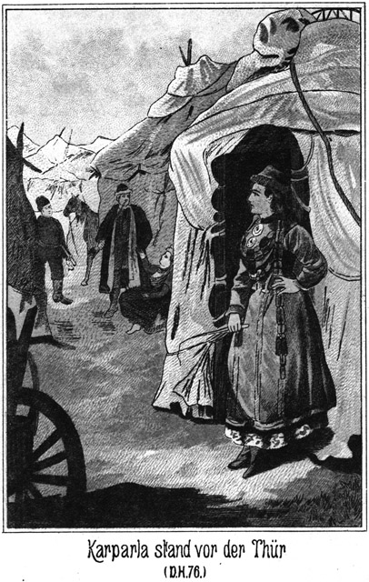»Angenehm ist das freilich nicht; aber ich lasse es mir nie merken. Man muß sich beherrschen. Ich halte es für unmännlich, zu jammern, besonders von einem Offizier, zu dessen Berufe es doch unbedingt gehört, Schmerzen ertragen zu können. Also, was wolltest Du mich fragen?«
»Ich wollte gern wissen, von wem Deine Einladung ausgeht.«
»Nun, natürlich von uns Allen.«
»Und wer hat die eigentliche, die Veranlassung dazu gegeben?«
»Ich.«
»Wie bist Du darauf gekommen?«
»Sonderbare Frage! Ich bin darauf gekommen, wie man überhaupt auf Etwas kommt, was man gern thut oder gern hat.«
»So hast Du uns also gern bei Dir?«
»Natürlich.
Das heißt, meine Eltern!«
Sein Blick ruhte mit Spannung auf ihn. Sie antwortete lächelnd:
»Warum nur Deine Eltern?«
»Also auch mich hast Du gern bei Dir?«
»Gewiß.«
»Das – das kann mich ungeheuer freuen. Ich sage Dir, ich möchte vor Freude Dir gleich mittheilen das – – alle Teufel!«
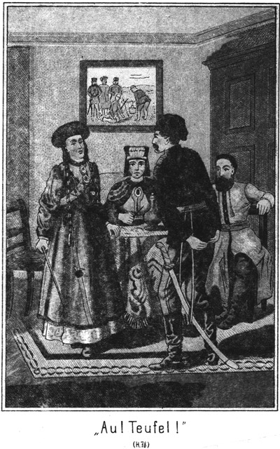Er zog wieder eins seiner Gesichter.
»Was hast Du?«
»Diese – verteufelten Zahnschmerzen!«
Er hielt die Hand an die Wange, um ihr glaubhaft zu machen, daß wirklich einer seiner Zähne schmerze.
»Mache Dich doch nicht lächerlich!« sagte sie. »So ein kräftiger Mann wie Du, ein Rittmeister, wird sich doch nicht von einem Zahne bewältigen lassen!«
»Es ist aber zu schlimm. Es giebt mir solche plötzliche Stiche.«
»So kannst Du mir freilich leid thun. Ists denn ein Backzahn?«
»Ja, da hier, auf der linken Seite.«
»Zeig doch mal her!«
Sie stand auf und trat zu ihm. Er wich zurück und hielt ihr beide Hände abwehrend entgegen.
»Nein, nein! Ich kann ihn Dir nicht zeigen.«
»Warum nicht?«
»Ich kann mir doch nicht von einer Dame in den Mund sehen lassen.«
»Ach Unsinn! Erstens bin ich keine Dame nach Euern Begriffen, und zweitens brauchen doch grad wir Beiden uns nicht in dieser Weise vor einander zu geniren!«
Er lachte wieder im ganzen Gesichte.
»Warum grad wir Beide?«
»Nun,« meinte sie in gut gespielter mädchenhafter Verlegenheit, »Du weißt es doch.«
»Was denn?«
»Wenn wir bald Frau und Mann sein wollen, so ist so eine Zurückhaltung doch nicht am rechten Platze.«
»Mann und Frau! Ich denke, Du willst nicht?«
»Ach so! Hm! Hast Du noch nicht gehört, daß die jungen Mädchens zuweilen nur aus Muthwillen gleichgiltig thun?«
Da rief er ganz glücklich:
»Karparla! Du gestehst also, daß auch in Deinem Herzens ein – heiliges Donnerwetter!«
Er fuhr sich mit beiden Händen nach dem betreffenden Körpertheile, zog sie aber schnell wieder zurück und griff an die Wange, um sich nicht zu verrathen.
Sie machte sehr erstaunte Augen, schüttelte den Kopf und sagte:
»Was soll ich in meinem Herzen haben? Ein heiliges Donnerwetter! Danke sehr. Ein solches Gewitter im Herzen! Davon habe ich noch nie Etwas gespürt oder gehört.«
»Ach geh! Es war eben wieder nur mein armseliges Zahnweh.«
»Wenn es so armselig ist, so unbedeutend, so brauchst Du seiner doch gar nicht zu achten. Ich bin wirklich neugierig, diesen schlimmen Zahn einmal zu sehen. Zeig doch her!«
»Nein, nein!«
»Sei nicht so zurückhaltend! Du thust ja, als ob wir uns ganz fremd seien.«
»Das sind wir jetzt auch noch, nämlich so zu sagen.«
»Aber ich denke, wir sollen so bald zu einander gehören. Wenn das der Fall ist, so kann ich nicht dulden, daß Du Dich genirst. Also her damit. Ich will den Zahn sehen!«
»Höre,« lachte er, »Du entwickelst da eine Energie, die ich Dir nicht zugetraut hätte!«
»Ja, meinen Willen habe ich auch. Also her mit dem Zahne! Mach den Mund auf!«
Sie faßte ihn bei den Achseln und gab ihm eine solche Stellung, daß er grad vor einem Holzstuhle zu stehen kam.
»Laß doch, laß!« wehrte er ab.
»Nein, ich will ihn sehen. Also zeig her!«
»Na, wenn Du nicht anders willst! Da, guck ihn Dir an!«
Er machte den Mund halb auf.
»Weiter!« befahl sie.
Er öffnete ihn ein Wenig mehr.
»Immer weiter!«
Die Eltern hatten ihre Freude an dieser Scene. Sie nahmen dieselbe als Beweis, daß das schöne Mädchen sich doch viel mehr für ihren Sohn interessire, als bisher anzunehmen gewesen war. Sie warfen sich verstohlene Blicke der Befriedigung zu und lachten im Stillen darüber, daß Karparla nach einem Zahn suchte, welcher doch nicht krank war.
Der Rittmeister öffnete den Mund noch weiter, aber immer nicht weit genug.
»Mußt weiter aufsperren!« sagte sie. »Wie kann ich so nach den Backzähnen sehen!«
Jetzt riß er die Kinnladen möglichst weit auseinander.
»So ist's recht!« lachte sie.
Sic blickte ihm in den Mund, that, als ob sie vergebens suche, und sagte dann:
»Ich bin kleiner als Du. Du bist mir viel zu lang. Ich kann also nicht hinter sehen. Setze Dich doch einmal!«
Bei diesen Worten faßte sie ihn fest an und drückte ihn plötzlich und aus allen Kräften auf den Stuhl nieder. Das kam ihn, so unerwartet, daß er einen ganz tüchtigen Plumps auf den harten Holzsitz that.
»O heiliges Element!« brüllte er auf. »Das – das – das halte der Teufel aus!«
Er sprang ebenso schnell, wie er auf den Stuhl gekommen war, von demselben wieder auf, hielt die beiden Hände auf die beiden, hinteren Erdkugeln und sprang rund in der Stube herum.
»Was – was giebts denn?« fragte sie.
»Meine – meine Zahnschmerzen!« wimmerte er.
»Zahnschmerzen? Hast Du denn die Zähne hinten anstatt vorn?«
»Nein, nein! Aber bei diesem Zahnweh thut Einem eben Alles weh.«
»So, so! Man sollte gar nicht glauben, daß der Schmerz von hier aus – –«
Sie hatte, wie eine jede Tungusin, stets die Reitpeitsche mit, sobald sie zu Pferde war. Sie hatte dieselbe noch gar nicht aus der Hand gelegt. Jetzt war sie zu dem Rittmeister heran getreten und zeigte bei den Worten »von hier aus« mit der Peitsche auf seinen Mund und fuhr fort: »von hier aus bis hierher gehen kann.«
Bei den Worten »bis hierher« gab sie ihm einen freundlich sein sollenden, aber ziemlich derb ausfallenden Peitschenhieb auf die bereits erwähnte sehr empfindliche Himmelsgegend.
Er that einen Satz in die Luft, fuhr mit beiden Händen abermals nach hinten und schrie:
»Au! Teufel! Du schlägst mich ja!«
»Pah! Nur eine Liebkosung!«
»Verflucht! Solche Liebkosungen – – oh, wehe, o wehe!«
»Aber, Iwan!« meinte sie in schmollendem Tone.
Iwan! Noch niemals hatte sie ihn bei diesem seinen Vornamen genannt. Er war ganz entzückt davon.
»Karparla!« flötete er, die Hände noch immer hinten.
»Du nennst das schlagen! Ich habe Dich doch nur ganz leise berührt!«
»Ja, leise, ganz leise!« nickte er.
»Und Du thust, als ob ich Dich förmlich geknutet hätte.«
»Nein, gar nicht!«
»O doch! Sieh nur mal in den Spiegel, was für ein Gesicht Du machst!«
»Eben nur wegen diesen niederträchtigen Zahnschmerzen!«
»Und da hältst Du die Hände noch immer hinten drauf?«
Sofort nahm er sie wieder nach vorn.
»Das – das – ist nur so eine alte, dumme Angewohnheit von mir,« versuchte er sich zu entschuldigen.
»Das mußt Du Dir abgewöhnen. Man denkt sonst wirklich, daß Du die Schmerzen gar nicht im Munde, sondern ganz anders wo hast. Setze Dich doch!«
Sie ergriff seinen Arm und wollte ihn zu dem harten Holzstuhle ziehen.
»Bitte, nein!« wehrte er ab. »Ich setze mich lieber hier auf das Kanapee.«
Er setzte sich. Natürlich mußte er sich dabei beugen. Die Hosen spannten und verursachten ihm die peinlichsten Schmerzen; aber er biß die Zähne zusammen und versuchte, sie zu überwinden.
»Hier auf dem Stuhle hättest Du neben mir gesessen!« schmollte sie.
»Aber hier sitze ich Dir gegenüber und kann Dich viel besser sehen,« vertheidigte er sich in zärtlichem Tone.
»Ach so! Da mag es geschehen. Deine Zahnschmerzen müssen wirklich bedeutend sein.«
»Warum denkst Du das?«
»Weil sie Dir einen förmlichen Angstschweiß austreiben. Die Tropfen stehen Dir auf der Stirn.«
»Ja, ich habe noch niemals so heftige Schmerzen gehabt. Aber wir sind ganz von unserm ursprünglichen Thema abgekommen.«
»Ja, wovon sprachen wir eigentlich?«
»Von der Einladung.«
»Richtig! Ihr kommt doch?«
»Gern, sehr gern! Ich freue mich – – oh, da denke ich aber doch daran, das es wohl nicht gehen wird.«
»Nicht? Warum?«
»Weil – hm – wegen diesen drei fremden Kerls.«
»O, die können Dich doch nicht stören.«
»Im Gegentheile stören sie mich sehr. Du weißt ja, wie sie mich gestern beleidigt haben.«
»Ganz recht. Es sollte doch ein Duell stattfinden. Oder nicht?«
»Ja freilich,« antwortete er verlegen.
»Nein.«
»Nun? Ist das bereits ausgefochten?«
»Warum nicht?«
»Weil – weil – ich kann es Dir eigentlich gar nicht sagen.«
»So? Nicht sagen? Mir, die ich doch Deine Frau werden will, und die eigentlich die Ursache dieses Duelles ist?«
»Das ist ganz richtig. Du bist schuld. Hättest Du nicht mit diesem verdammten Kosaken getanzt, so wäre das Alles nicht vorgekommen. Nimm es mir nicht übel, aber ich kann Dich nicht begreifen.«
»Es war so ein schneller Gedanke, der mich überkam.«
»Hast Du oft solche schnelle Gedanken?«
»Nicht oft, sondern nur zuweilen.«
»So muß ich Dich bitten. Dir das abzugewöhnen! Ein Duell ist kein Kinderspiel!«
»Das weiß ich wohl. Darum habe ich mir später die größten Vorwürfe gemacht, und darum möchte ich so gern wissen, wann es stattfinden soll.«
»Es findet gar nicht statt.«
»Das freut mich natürlich ungemein. Aber warum wird es nicht abgehalten?«
»Weil – weil – na, ich will es Dir sagen – weil der dicke Kerl heut früh bei mir war.«
»So! Was wollte er?«
»Er bat mich um Verzeihung und gab gute Worte, daß das Duell nicht stattfinden solle.«
»Ah! Wirklich? Er sieht doch so beherzt aus.«
»Pah, beherzt! Solche Menschen renommiren blos. Denke doch daran, daß ich Offizier bin! Wie will so ein Mensch sich mit mir schießen! Sein Tod wäre gewiß!«
»Und ich habe mich so sehr um Dich geängstigt, Iwan!«
»Das war sehr überflüssig, liebe Karparla. Um ihn hättest Du Dich ängstigen sollen, nicht um mich!«
»Warum um ihn? Er geht mich doch gar nichts an; ich habe ja nur Dich lieb.«
»Wirklich, wirklich mich?«
»Das fragst Du noch? Also gute Worte hat er gegeben? Das muß ich ihm vorhalten, damit er sich schämt. Ich werde ihn auslachen.«
»Das darfst Du nicht!« sagte er schnell.
»Warum nicht?«
»Er hat mich um Verschwiegenheit gebeten, und ich mußte ihm mein Ehrenwort geben, nichts zu sagen.«
»Und trotz dieses Ehrenwortes sagst Du es mir!«
»Das ist etwas Anderes. Wir Zwei, Du und ich, wir sind ja wie Eins. Du wirst doch meine Frau. Also darum wird das Duell nicht stattfinden.«
»So bin ich beruhigt. Ich habe wirklich geglaubt, daß es bereis stattgefunden. habe und daß Du dabei verwundet worden seiest.«
»Warum dachtest Du das?«
»Weil es ganz so aussieht, als ob Du einen Schuß, eine Kugel bekommen hättest.«
»Ich? Wohin?«
»Hinten. Du hast, trotzdem Du sitzest, schon wieder beide Hände dort.«
Er zog die Hände sofort vor.
»Unsinn,« lachte er verlegen. »Aber, was ich sagen wollte, ich habe dem Kerl zwar großmüthig vergeben und auch verzichtet, ihn zu bestrafen, aber daß ich wieder in seine Hände kommen soll, das kann doch Niemand von mir verlangen.«
»Wer verlangt es denn?«
»Du.«
»Dessen bin ich mir nicht bewußt.«
»Und doch. Du ladest uns ja zu Euch ein!«
»Aber nicht zu ihm.«
»Er ist doch Euer Gast!«
»Was thut das?«
»Er wird heut Abend zugegen sein.«
»Nein. Er will mit seinen beiden Gefährten einen weiten Spazierritt machen, von welchem sie erst spät Abends, vielleicht gar erst in der Nacht, zurückkehren.«
»Wenn das so ist, so komme ich.«
»Und die Eltern natürlich mit?«
»Ja, ja, wir kommen ganz gewiß,« nickte der Kreishauptmann eifrig.
»So verlasse ich mich darauf und kann nun wieder gehen.«
»Willst Du denn nicht noch ein Stündchen bleiben, liebes Kind?«
»Habe keine Zeit dazu. Ihr wißt es ja, wenn man Gäste zu erwarten hat, so giebt es vorher gar Mancherlei zu thun.«
Es wurden noch einige höfliche Redensarten gewechselt; dann nahm Karparla einen beinahe herzlichen Abschied und wendete sich nach der Thür.
Der Rittmeister beeilte sich, ihr dieselbe zu öffnen. Dabei gab es wieder einige höchst schmerzhafte Bewegungen; er verbiß aber die Empfindung, welche sie ihm verursachten.
Bereits stand Karparla unter der Thür, da wendete sie sich wieder zurück und sagte:
»Da hätte ich beinahe eine Hauptsache vergessen. Ich muß wieder umkehren.«
Sie zog die Thür hinter sich wieder zu.
»Was hast Du noch, Kind?« fragte der Kreishauptmann.
»Ihr bringt heut Abend doch auf alle Fälle auch Euern Gast mit?«
»Gast? Wer ist das?«
»Nun, Gökala.«
Er erschrak.
»Gökala? Kennst Du sie?«
»Ich traf sie kurz vor ihrer Ankunft hier.«
»So! Das habe ich allerdings gehört.«
»Von ihr? Hat sie von mir gesprochen?«
»Ja.«
»Sie wollte zu Dir.«
»Aber sie war nicht bei mir.«
»Ganz recht. Sie durfte nicht fort.«
»Durfte? Wer verbietet es ihr?«
»Ihr Herr, mit dem sie gekommen ist.«
»Der ist ihr Herr? Und doch hat sie mir gesagt, daß sie vollständig frei sei.«
»Das ist eine Unwahrheit. Sie hat ihm zu gehorchen, und weil er es ihr verboten hat, auszugehen, so konnte sie natürlich auch nicht zu Dir kommen.«
»Sie darf also nicht ausgehen?«
»Es ist ihr verboten, das Haus zu verlassen.«
»Das ist hart. So werde ich also jetzt einmal zu ihr gehen.«
»Auch das geht nicht. Sie darf auch keine Besuche empfangen.«
»Auch das nicht! Aber warum denn?«
Sie trat bei diesen Worten an das Fenster und sie sah, daß er sich sofort in der Richtung nach der Hausthür in Bewegung setzte.
»Warum, das kann ich freilich nicht sagen,« antwortete der Kreishauptmann. »Ihr Begleiter hat alle Veranlassung, sie unter strenger Controlle zu halten. Vielleicht ist sie eine Verbannte. Ich darf keinen Menschen zu ihr lassen.«
»Aber doch wohl mich!«
»Leider auch Dich nicht. Es ist mir sehr streng anbefohlen worden, ja keine einzige Ausnahme zu machen.«
»Aber ich habe ja gar nichts Verdächtiges mit ihr vor.«
»Das ändert nichts an dem Verbote.«
»Du kannst mitgehen und Alles hören, was ich zu ihr spreche. Ich will sie nur begrüßen.«
»Auch das darf ich nicht.«
»O ich habe immer gedacht, daß Du gut und höflich mit mir seiest!«
»Das bin ich auch, so weit ich darf. Meine Pflicht aber darf ich nicht verletzen.«
Da klopfte es an die Thür. Der Kreishauptmann ging hin, um nachzusehen, wer draußen sei. Er öffnete, fuhr aber sofort ganz erstaunt zurück – Sam trat ein.
»Du wieder!« rief der Beamte zornig.
»Ja,« lachte Sam. »Ich habe Euch ja bereits gesagt, daß ich heut wohl noch einmal kommen werde.«
Der Rittmeister streckte den Arm gebieterisch aus, nach der Thür zeigend.
»Hinaus!« schrie er.
»Hinaus willst Du?« fragte Sam freundlich. »Na, so geh doch!«
»Nein, Du!«
»Ich? Ich komme ja soeben erst herein.«
»Aber hinaus packest Du Dich augenblicklich wieder!«
»Nein, mein Brüderchen. Wenn ich einmal gekommen bin, so will ich auch sagen, weshalb ich komme.«
»Wir mögen nichts wissen. Fort mit Dir!«
Da zog Sam die Stirn in Falten und antwortete:
»Du! Soll ich etwa sprechen? Soll ich erzählen, was da draußen bei den Weidensteinen geschehen ist?«
»Willst Du auch noch drohen?«
»Nein. Aber ich will nicht hinausgewiesen sein. Ich dächte, Ihr wüßtet es nun beinahe, daß ich mich nicht in's Bockshorn jagen lasse.«
Es lag nicht in der Absicht des Kreishauptmanns, in Gegenwart Karparla's seinen Sohn blamiren zu lassen. Darum sagte er zu Sam:
»Wenn Du mit mir reden willst, so komm!«
Er wendete sich nach der Thür.
»Wohin?«
»In mein Zimmer.«
»Warum? Ich kann auch hier mit Dir reden.«
»Amtliche Angelegenheiten habe ich in meiner Expedition auszumachen.«
»Wer hat denn gesagt, daß ich in einer amtlichen Angelegenheit komme!«
»Jedenfalls ist es doch so. Familiär haben wir ja nichts mit einander zu thun.«
»Und grad etwas Familiäres oder wenigstens Privates ist es. Das können wir hier abmachen.«
»So rede.«
»Ich komme einfach auf Besuch.«
»Donnerwetter! Doch nicht etwa zu uns?«
»Nein, sondern zu Gökala.«
Der Kreishauptmann trat einige Schritte zurück und fragte im Tone der Bestürzung:
»Kennst Du sie?«
»Ja.«
»Woher?«
»Nur dem Namen nach.«
»Sie geht Dich nichts an.«
»Mehr als Dich. Wo wohnt sie?«
»Bei mir.«
»Das weiß ich natürlich. Ich will aber das Zimmer wissen.«
»Das erfährst Du nicht.«
»Oho! Ist sie etwa Deine Gefangene?«
»Ja.«
»Auf wessen Befehl?«
»Das geht Dich nichts an.«
»Wenn Du wüßtest, wie sehr mich das angeht, so würdest Du ganz anders reden. Du hast kein Recht, irgend Jemand der berechtigten Freiheit zu berauben.«
»Der berechtigten, ja. Aber ihr ist mit vollem Rechte ihre Freiheit abgesprochen worden.«
»So ist sie verurtheilt?«
»Ja.«
»Von wem?«
»Natürlich vom Gerichte.«
»Das ist eine Lüge.«
»Frecher Kerl!« schrie der Rittmeister voller Wuth.
Er wollte sich vom Kanapee erheben, sank aber wieder zurück und stieß ein schmerzliches Stöhnen aus.
»Bleib ruhig sitzen!« warnte Sam. »Es thut so wehe, wenn die Schwielen aufplatzen.«
»Schweig!« herrschte ihn der Officier an. »Gökala ist unsere Gefangene, und Du hast darüber Dir gar kein Urtheil anzumaßen!«
»Sie ist nicht Eure Gefangene. Kein Richter hat sie verurtheilt.«
»So! Wer denn?« fragte der Kreishauptmann höhnisch.
»Nur allein der Graf.«
»Welchen Grafen meinst Du?«
»Graf Alexei von Polikeff.«
»Donnerwetter!« entfuhr es dem bestürzten Beamten.
»Meinst Du etwa, ich kenne ihn nicht?« lachte der Dicke.
»Woher kennst Du ihn?«
»Das kann Dir sehr gleichgiltig sein. Ich sage Dir nur, daß ich ihn kenne; das genügt. Und Gökala habe ich zwar noch nicht gesehen, aber desto mehr habe ich von ihr gehört. Ich muß mit ihr sprechen.«
»Das geht nicht.«
»Es muß gehen!«
»Muß! Was muß! Redest Du in diesem Tone mit mir!«
»Pah! Ich habe in noch keinem anderen Tone mit Euch gesprochen, und vielleicht wird mein Ton noch ganz anders. Wenn Du mir nicht sagst, wo Gökala sich befindet, so suche ich sie mir.«
»Wage es!«
»Wagen? Pah! Bei Euch ist nichts zu wagen. Jedenfalls bewohnt sie das Zimmer, aus welchem ich sie treten sah, als ich vorhin zum letzten Male bei Euch war. Dahin werde ich also jetzt gehen.«
Er wollte gehen.
»Du bleibst!« gebot der Kreishauptmann.
Sam blickte ihn mit großen Augen geringschätzend an.
»Pah, gar nichts!«
»Das denke ja nicht. Ich habe bisher Deine Frechheiten mit Geduld ertragen; aber nun wird es mir denn doch zu toll!«
Da sagte Karparla, scheinbar in begütigendem Tone, zu Sam:
»Beruhige Dich! Du wirst nicht mit ihr reden dürfen. Ich wollte sie zu mir einladen; aber es ist mir auch abgeschlagen morden.«
»Einladen? Wozu?«
»Uns heute Abend zu besuchen. Diese drei lieben Leute werden heute Abend zu uns kommen. Sie sollten Gökala mitbringen; aber sie können nicht; es ist unmöglich. Darum wirst auch Du Dich fügen müssen.«
»Niemand braucht sich zu fügen, ich nicht und Du auch nicht!«
»Warum?«
»Weil ich ganz genau weiß, was ich will und was ich sage. Wenn Du wünschest, heute Abend Gökala bei Dir zu sehen, so soll Dir Dieser Wunsch in Erfüllung gehen.«
»Du thust ja, als ob Du hier bei uns zu gebieten hättest!« rief der Kreishauptmann.
»Zu gebieten habe ich nicht, aber erwarten darf ich, daß meine Wünsche erfüllt werden, wenn sie auf gesetzlichem Wege zu erfüllen sind, und das ist hier der Fall.«
»Nein.«
»Ja! Ich verlange, daß Gökala heute Abend Karparla mit Euch besuchen darf. Zwar werde ich abwesend sein und voraussichtlich nicht sehen, ob sie mitkommt; aber erfahren werde ich es. Wehe dann Euch, wenn der Wunsch Karparlas nicht erfüllt wird!«
Das war freilich stark. Der Kreishauptmann blickte seinen Sohn an und dieser ihn. Sie befanden sich einigermaßen in den Händen des Dicken; aber hätten sie sich denn wirklich gar so viel gefallen zu lassen?
Am meisten ergrimmt war der Rittmeister. Er erhob sich mühsam vom Kanapee und sagte:
»Wehe uns? Hältst Du uns denn für gar so armselige Geschöpfe, daß Du uns in dieser Weise zu drohen wagst? Du pochst auf einige kleine Vortheile, welche Du über uns erlangt hast. Es wäre sehr klug von Dir, Dich mit dem Bisherigen zu begnügen. Wenn Du aber den Bogen zu straff anspannst, so zerreißt die Schnur. Nimm Dich in Acht!«
»Ich habe mich nicht in Acht zu nehmen. Ich weiß, was! ich will!«
»Nein, Du weißt es nicht. Du übertreibst Deine Frechheit. Du meinst, daß wir uns Alles gefallen lassen sollen aus Angst, daß Du erzählen werdest, was heute Nacht geschehen ist. Bisher haben wir auch wirklich darauf Rücksicht genommen; nun aber hört es auf. Erzähle meinetwegen von uns, was Du willst. Kein Mensch aber wird es Dir glauben!«
»Keiner?« fragte Sam. »Alle, Alle werden es glauben!«
»Nicht Einer!«
»Ich beweise es!«
»Das sollte Dir schwer werden!«
»Federleicht!«
»So versuche es! Jetzt aber sind wir fertig. Mache Dich hinaus!«
»Du, nimm Dich in Acht! Wenn ich einmal hinausgehe, so folgt Ihr auch bald nach.«
»Was soll das heißen?«
»Daß dann Eure Rolle hier ausgespielt ist.«
Er sagte das so leicht hin, als ob er von etwas höchst Einfachem spreche, was sich ganz von selbst verstehe. Das empörte den Officier noch mehr. Nicht nur die Worte waren es, die ihn beleidigten, sondern in noch viel höherem Maße der Ton, in welchem sie gesprochen wurden. Er schlug mit der Hand an den Griff seines Säbels und rief:
»Hinaus, hinaus, oder – – –!«
»Was denn? Oder – –?« fragte Sam, zwei Schritte vortretend.
»Oder ich gebe meinem Befehle Nachdruck.«
»Womit?«
»Mit diesem da!«
Er schlug abermals an den Säbel.
»Du, da machst Du Dich doch nur lächerlich. Dieser Degen würde dabei ganz dieselbe Rolle spielen wie draußen an den Weidensteinen: Ich würde ihn Dir abschnallen.«
»Hund, weißt Du, mit wem Du sprichst?«
»Ja.«
»Nein, Du weißt es nicht. Ich will es Dir sagen. Ich bin der Rittmeister Iwan Rapnin, Commandant von Platowa!«
Sam schüttelte den Kopf und antwortete:
»Iwan Rapnin? Ja, wenn Du der wirklich wärst, so wäre das etwas ganz Anderes.«
Der Rittmeister konnte diese Worte nicht begreifen. Er war beinahe das, was man verduzt nennt.
»Was?« sagte er. »Ich wäre es nicht?«
»Nein.«
»So sage mir doch einmal, wer ich bin?«
»Sehr gern. Rittmeister bist Du und Commandant auch. Aber Rapnin, Rapnin? Das stimmt nicht.«
»Wieso?«
»Dein Name ist doch Iwan Saltikoff.«
Die Kreishauptmännin stieß einen Schrei des Schreckes aus. Ihr Mann machte eine Bewegung des Entsetzens, und der Rittmeister fuhr auch erschrocken zurück. Doch war er schnell wieder gefaßt. Er zwang sich zu einem lauten Lachen und sagte:
»Dieser Mensch träumt bei offenen Augen, und was er träumt, das hält er für Wahrheit und plaudert es aus!«
»Ja, wenn es nur ein Traum wäre, so würdet Ihr froh sein. Rapnin! Das kenne ich besser!«
»Nichts, gar nichts kennst Du!«
»Oho! Ich kenne sogar Saltikoff.«
»Nichts. Frage lieber, wer er war! Er war ein Verbrecher, ein Verbannter. Da kam Graf Polikeff und gab ihm den Rath, seinen Namen umzuändern und den Namen Saltikoff zu verschenken.«
»Ah! Wahnsinn.«
»Nein, Wahrheit! Der Name Saltikoff ward verschenkt, oder vielmehr, er wurde Einem aufgezwungen. Und weißt Du vielleicht wem?«
»Nein,« antwortete der Officier.
Er war leichenblaß geworden und zitterte am ganzen Leibe.
»So will ich es Dir sagen. Der Name Saltikoff wurde aufgezwungen dem Maharadscha Banda von Nubrida. Damals –«
»Halt!« gebot der Kreishauptmann, der sich in einer Verlegenheit befand wie noch niemals im ganzen Leben. »Halte auf! Wir wollen nichts mehr hören.«
»Das glaube ich wohl! Aber wenn ich das nicht erzählen soll, so will ich wenigstens eine Frage aussprechen: Wird Gökala heute mit in das Zelt Karparlas kommen?«
»Ja,« erklang es zögernd und gedrückt.
»Schön! Und zwar verlange ich, daß Karparla jetzt zu Gökala geht, um sie selbst einzuladen. Darf sie?«
»Ja. Aber ich muß dabei sein.«
»Nein. Du wirst hier bleiben. Karparla geht allein. Sie braucht keinen Begleiter, der sie beaufsichtigt. Ich werde mich hier niedersetzen und warten, bis sie wiederkommt. Dann begleite ich sie heim.«
Niemand widersprach ihm.
»Darf ich?« fragte das Mädchen, von dem Einen zum Andern blickend.
Weder der Kreishauptmann noch sein Sohn antwortete. Darum sagte Sam:
»Geh getrost! Kein Mensch hat Etwas dagegen.«
»Wie lange darf ich bleiben?«
»So lange es Dir beliebt. Ich habe Zeit.«
Sie ging.
Sam hatte sich auf einen Stuhl gesetzt. Er machte es sich bequem auf demselben, zog eine Cigarre heraus und brannte sie an.
»Geh in die Küche!« befahl der Beamte seiner Frau.
Sie ging. Sie war ganz voller. Angst. Dieser schreckliche Mensch, der Dicke, hatte ganz gewiß etwas sehr Gefährliches vor.
Der Rittmeister hatte sich wieder auf das Sopha niedergelassen. Er starrte fassungslos vor sich hin. Sein Geheimniß in den Händen dieses Mannes, dieses Menschen, der sich ihm bis jetzt nur gefährlich gezeigt hatte. Der Kreishauptmann schritt im Zimmer auf und ab. Er wußte nicht, was er denken und sagen solle. Er war der festen Ueberzeugung gewesen, daß außer ihm selbst und seinem Sohne nur der Graf der Rittmeister sei, und nun trat dieser fremde Kerl hier auf und zeigte, daß er vollständig eingeweiht sei.
Sam selbst that, als ob gar nichts vorgefallen sei. Er blies kunstvolle Ringeln aus dem Munde und gab sich dieser Beschäftigung mit einem Eifer hin, als ob es gelte, bei derselben eine Million zu verdienen.
Da endlich blieb der Kreishauptmann vor ihm stehen, schlug die Hände über der Brust zusammen und fragte:
»Wer bist Du eigentlich?«
Sam schnippste die Asche von der Cigarre und antwortete:
»Ein ehrlicher Kerl.«
»Unsinn! Darnach habe ich nicht gefragt. Wie ist Dein Name?«
»Samuel Barth. Du hast ihn ja bereits gelesen.«
»Was bist Du?«
»Knopfmacher.«
»Das ist nicht wahr!«
»So? Nun, dann brauchst Du es nicht zu glauben. Ich zwinge meine Meinung Keinem auf.«
»Du bist etwas Anderes!«
»Auch möglich!«
»Was denn?«
»Höre, mein lieber Freund, schiebe mir nicht solche unnütze Fragen unter die Nase! Ich bin da sehr kitzlich und könnte Dich etwas derb annießen! Stimmt etwa meine Legitimation nicht?«
»Sie ist richtig.«
»So laß mich in Ruhe!«
»Aber ich muß wissen, wie Du dazu kommst, uns von jenem Saltikoff zu erzählen.«
»Ja, ein Unsinn ist es eigentlich von mir gewesen. Da Du selbst jener Saltikoff bist, so hatte ich gar nicht nöthig, eine Geschichte zu erzählen, die Du doch auf alle Fälle viel besser weißt als ich.«
»Du befindest Dich in einem großen Irrthum.«
Sam legte das eine Bein über das andere und antwortete lächelnd:
»So würde ich Dir sehr dankbar sein, wenn Du mir den Gefallen thun wolltest, mich eines Besseren zu belehren.«
»Ich bin nicht Saltikoff. Ich habe niemals einen Menschen dieses Namens gekannt.«
»Wunderbar.«
»Dabei giebt es gar nichts Wunderbares.«
»O doch! Ein Mensch, der sich selbst nicht kennt und niemals Etwas von sich gehört hat, das ist doch wunderbar!«
»Beweise mir doch, daß ich Saltikoff bin!«
»Pah! Beweise es mir doch, daß Du es nicht bist.«
»Das kann ich dadurch beweisen, daß ich den Beweis führe, daß ich Rapnin bin.«
»Sehr schön! Aber ich würde mir dann sofort das Vergnügen machen, zu beweisen, daß Du Saltikoff bist.«
»Wie wolltest Du diesen Beweis führen?«
»Mündlich und auch schriftlich, ganz wie es verlangt wird.«
Da lachte der Kreishauptmann laut auf und sagte:
»Jetzt hast Du Dich verraten. Ich weiß ganz genau, daß über jene Angelegenheit gar nichts Schriftliches existirt. Wie willst Du also einen schriftlichen Beweis bringen!«
Sam blickte ihm mit fast übermüthig schlauem Ausdruck in das Gesicht.
»So? Ich habe mich verrathen? Ist das nicht eine Täuschung?«
»Nein.«
»O doch! Du selbst hast Dich verrathen, nicht ich. Wenn Du so genau weißt, daß über jene Angelegenheit nichts Schriftliches existirt, so muß sie Dir doch näher bekannt sein.«
Jetzt sah der Kreishauptmann ein, daß er sich vergallopirt habe. Er wurde verlegen und versuchte, sich durch eine Lüge aus der Schlinge zu befreien.
»Ich hörte davon sprechen.«
»So! Die Sache wurde heimlich abgemacht, nur zwischen dem Grafen und Saltikoff. Beide haben alle Veranlassung, nicht von ihr zu sprechen. Wenn Du also davon weißt, so bist Du entweder der Graf, oder Saltikoff. Der Graf bist Du nicht, folglich bist Du Saltikoff.«
»Dein Schluß ist ganz falsch.«
»Oho, mein Brüderchen!«
»Ja. Du weißt doch auch von dieser Angelegenheit, wie Du sagst!«
»Ja.«
»Also könntest Du ebenso gut Saltikoff sein wie ich.«
»Höre, dieser Einwand ist gar nicht so albern. Ich habe wirklich nicht gedacht, daß Du so klug bist, denn aufrichtig gestanden, Dein Gesicht ist kein sehr geistreiches. Aber wie nun, wenn der Graf mir Alles mitgetheilt hätte?«
»Das hat er nicht!« !
»Nun, hast Du etwa Etwas verrathen?«
»Nein.«
»Also muß doch er es mir gesagt haben!«
»Allerdings. Das ist richtig. Niemand hat es weiter gewußt als er und ich.«
Der Rittmeister hustete stark, um seinen Vater auf die Dummheit aufmerksam zu machen, die er jetzt gesagt hatte. Sam aber brach in ein herzliches Gelächter aus und rief lustig:
»Das war nun nicht so schlau wie vorher. Jetzt hast Du zugegeben, daß nur der Graf und Du allein die Wisser gewesen sind, folglich bist Du Saltikoff.«
»Donnerwetter!«
Er schlug sich vor den Kopf.
»Na, zu ohrfeigen brauchst Du Dich deshalb nicht. Du wärst auch ohne dieses Zugeständnisses gar nicht weit gekommen. Ich weiß sogar, daß Du dem Grafen eine Unterschrift, sagen wir, einen Revers gegeben hast.«
»Wer sagt das?«
»Er lügt!«
»Nein.«
»Er mag diesen Revers vorzeigen!«
»Hat er ihn vielleicht verloren?«
»Er kann ihn nicht verlieren, da er gar keinen hat!«
»Hm! Werde ihn fragen lassen.«
»Durch wen?«
»Durch das Gericht.«
»Das Gericht wird sich hüten, einen so hochgestellten Herrn zu beleidigen.«
»Meinst Du? Wenn nun gerade ich vom Gerichte den Auftrag hätte, mir Auskunft von ihm geben zu lassen?«
»Bist Du ein verkappter Polizist?«
»Das wollen wir einstweilen dahingestellt sein lassen.«
»Er ist viel zu stolz, Dir Antwort zu geben.«
»O, was seinen Stolz betrifft, so macht mir derselbe keine Sorge. Ich habe schon manchen Stolzen demüthig gemacht.«
»Nur keine Solchen!«
»Noch ganz andere Kerle. Mein ganzes hiesiges Auftreten muß Dir beweisen, daß ich nicht mit mir spielen lasse. Ihr Beide habt das ja zur Genüge erfahren.«
»Du wirst den Grafen nicht finden.«
»Meinst Du?«
»Ja. Wo ist er denn?«
»Am Mückenflusse, wo er den Nummer Fünf, den Maharadscha, aufsuchen will.«
»Alle Teufel! Woher weißt Du das.«
»Ich weiß eben Alles.«
»Du bist falsch berichtet!«
»So? In diesem Falle werde ich dennoch den Grafen finden. Ich brauche ja nur hier zu bleiben. Er kommt ja zurück, um Gökala zu holen.«
Der Kreishauptmann sah ein, daß er nichts Stichhaltiges vorbringen konnte. Seine Verlegenheit wuchs von Sekunde zu Sekunde. Er begann, wieder im Zimmer hin und her zu laufen.
Sam folgte ihm mit den Augen und lächelndem Blicke. Er fuhr fort:
»Nun wirst Du wohl einsehen, daß es sehr fraglich ist, wer der Herr Kreishauptmann hier ist.«
»Ich! Und ich bleibe es auch!«
»Und wer der Herr Rittmeister und Commandant ist.«
»Der bin ich!« sagte der Officier in stolzem Tone. »Und ich will Den sehen, der das ändern will!«
»Na, ich nicht. Mich geht Ihr gar nichts an. Mir soll es ganz gleichgiltig sein, ob hier zwei Saltikoffs oder zwei Rapnins ihr Wesen treiben. Aber wenn sie mir das Leben sauer machen, dann freilich haben sie es mit mir zu thun. Das mögt Ihr Euch gütigst hinter die Ohren schreiben!«
Da blieb der Kreishauptmann wieder vor ihm stehen.
»Also Du sagst, daß Dir die Sache ganz gleichgiltig sei?« fragte er.
»Ja.«
»Du hast also eigentlich gar keine Ursache, feindlich gegen uns aufzutreten?«
»Nein.«
»Warum thust Du es dennoch?«
»Weil Ihr Euch so brutal gegen mich benommen habt.«
»Das ist nicht wahr. Du selbst bist es, welcher angefangen hat.«
»Da muß ich Dir bemerken, daß, wenn Ihr einen Schützling von mir beleidigt, es ganz genau so ist, als ob Ihr mich selbst beleidigt hättet. Ich lasse mir das eben nicht gefallen.«
»Du nimmst die Sache zu streng. Wenn Du uns besser kanntest, so würdest Du ganz anders von uns denken.«
»Ich glaube das nicht.«
»Ich will es Dir beweisen.«
»Dieser Beweis wird Dir wohl nicht gar zu leicht werden!«
»Sehr leicht. Du brauchst Dich nur einigermaßen gutwillig zu zeigen.«
»Inwiefern?«
»Insofern, als Du den Vorschlag annimmst, den ich Dir machen werde.«
»So laß ihn hören.«
»Du kennst unser Geheimniß. Ich kaufe es Dir ab.«
»Hm! Nicht übel!«
»Nicht wahr? Machst Du mit?«
»Wenn Du gut zahlen könntest, so wäre ich vielleicht bereit dazu.«
»Ich zahle fein.«
»Laß hören!«
»Wieviel verlangst Du?«
»Wieviel bietest Du?«
»Fünfhundert Rubel.«
»So! Fünfhundert Rubel für ein Geheimniß, dessen Enthüllung Dich und Deinen Sohn zu lebenslänglicher Zwangsarbeit in den Bergwerken von Nertschinsk bringt, wo ihr unter die Erde geschafft werdet und das Tageslicht niemals wieder zu sehen bekommt? Bist Du gescheidt?«
»Also tausend?«
»Tausend Rubel? Das ist eine solche Bagatelle, daß ich sie gar nicht in den Mund nehme.«
»Donnerwetter! Ich dächte, daß tausend Rubel eine schöne Summe seien.«
»Für Euch vielleicht.«
»Für Jedermann hier.«
»Gut, aber ich bin eben nicht so ein Jedermann. Und nun sage mir doch vor allen Dingen, wie Du tausend Rubel bezahlen willst.«
*
»Sofort!«
»Das habe ich nicht nöthig. Nach abgeschlossenem Geschäfte wird bezahlt. Wer da fragt, ob ich zahlungsfähig bin, der beleidigt mich.«
»Nun, so muß ich Dich freilich sehr beleidigen, denn ich traue Dir nicht einmal tausend Kopeken, viel weniger tausend Rubel zu.«
»Da irrst Du Dich freilich sehr in uns.«
»O nein. Wenn man den Räuberhauptmann spielt, um zwei armen Kosaken ihr Geld abzunehmen, so muß es mit der Kasse schlecht stehen. Nicht?«
»Das ist nicht des Geldes wegen geschehen, sondern um den Leuten die Macht zu zeigen, vor der sie sich zu beugen haben.«
»Nun, es hat sich ja gezeigt, wer die Macht hatte und wer sich beugen mußte, um die Knute zu empfangen!«
Der Rittmeister rasselte mit dem Säbel, wagte aber nicht, ein zorniges Wort zu sagen. Darum bemerkte sein Vater:
»Was Du da gethan hast, könnte Dich um den Kopf bringen, wenn wir wollen!«
»So bitte ich Euch, doch einmal zu wollen! Mein Kopf ist ein ganz verfluchter Kerl. Er allein ist es ja, der das Alles ausgeheckt hat. Ich glaube, es würde Demjenigen, der ihn mir nehmen wollte, nicht gut ergehen. Bei mir gilt der Wahlspruch: Kopf gegen Kopf. Darum trage ich hier mein Gewehr zu jeder Zeit mit mir herum.«
»Schweigen wir darüber und sprechen wir lieber von unserm Handel! Wieviel willst Du eigentlich haben?«
»Mehr, viel mehr, als Du bietest, überhaupt wohl viel mehr, als Du bezahlen kannst.«
»Bist Du denn gar so unersättlich?«
»Das nicht. Nur pflege ich mit ganz anderen Ziffern zu rechnen als Ihr, denn ich bin sehr reich. Und sodann bin ich ja gezwungen, das Geld, welches ich von Euch erhalte, in drei Theile zu theilen.«
»Warum denn?«
»Weil meine beiden Gefährten auch Alles wissen. Sie wollen also ebenso bezahlt sein wie ich.«
»Donnerwetter! Wer hat es ihnen denn gesagt?«
»Ich natürlich.«
»Bist Du so ein Schwätzer?«
»O nein. Ich bin im Gegentheile sehr verschwiegen. Aber wenn mir diese Beiden helfen sollen, so muß ich ihnen natürlich sagen, was sie wissen müssen.«
»Werden sie denn schweigen, wenn man sie bezahlt?«
»Ja.«
»Nun, so sage, wieviel Du verlangst!«
»Für Jeden fünftausend Rubel, in Summa also fünfzehntausend Rubel.«
»Heiliges Wetter!« schrie der Rittmeister. »Du bist verrückt!«
Er fuhr vom Sopha empor, fiel aber stöhnend wieder zurück. Sein Vater zeigte sich keineswegs so erschrocken über diese hohe Forderung. Er sagte in aller Ruhe:
»Billig seid Ihr nicht.«
»Habens auch nicht nöthig.«
»So ein Heidengeld habe ich freilich nicht daliegen.«
»Habs mir gedacht. Versuche nur, ob Du es beschaffen kannst.«
»Hoffentlich geht Ihr mit Eurer Forderung noch Etwas zurück?«
»Keine Kopeke!«
»Nun, was mich betrifft, so bin ich gar nicht abgeneigt. Euch diese Summe zu bezahlen; aber Du wirst wohl zugeben, daß ich es nicht allein auf mich nehmen kann.«
»Meinst Du den Grafen?«
»Ja. Mit ihm muß ich natürlich erst sprechen.«
»Das sehe ich freilich ein.«
»Du wirst also seine Rückkehr erwarten müssen.«
»Ich bin bereit dazu.«
»Schön! So sind wir also so weit einig?«
»Ja. Und nun will ich gehen, um Karparla zu holen.«
»Warte nur! Sie wird wohl kommen.«
»Du willst nicht haben, daß ich sie bei Gökala hole? Fürchtest Du Dich davor, daß ich mit dieser Letzteren spreche?«
»Wenigstens nöthig hast Du das nicht.«
»Nein. Aber wenn Du mich nicht zu ihr lässest, so ist das ein Beweis, daß Du mir trotz unserer jetzigen Abmachung feindlich gesinnt bist. Meinst Du, daß mich das gefügiger gegen Euch macht?«
»Nein. Gehe meinetwegen zu ihr.«
»Schön! So ist es recht!«
Er ging.
Draußen sah er, daß die Nebenthür offen stand. Es war die Thür der Schlafstube. Schnell huschte er hinein und zog die Thür hinter sich zu. In der Küche klirrte das Geschirr. Die Kreishauptmännin war also beschäftigt. Von ihr hatte er wohl keine Störung zu erwarten.
Eine Seitenthür führte von hier aus nach der Wohnstube, in welcher sich Vater und Sohn befanden. Er hatte dieselbe schon vorhin von drüben aus bemerkt. Er schlich sich zu derselben hin und horchte. Er hörte die Stimme des Rittmeisters:
»Und Du erschrakst nicht einmal über diese Unverschämtheit! Fünfzehntausend Rubel!«
»Erschrecken? Fällt mir gar nicht ein!«
»So! Sind Dir fünfzehntausend Rubel eine solche Kleinigkeit?«
»Nein; aber dennoch war mir gerade das willkommen, daß sie so viel verlangten.«
»Das begreife ich nicht.«
»Weil Du nicht schlau genug bist.«
»Hätten sie nur einige Hundert verlangt, so hätten sie natürlich sofortige Zahlung beansprucht. Bei dieser Höhe der Summe aber mußte ich sie auf den Grafen verweisen. Dadurch haben wir Zeit gewonnen.«
»Wird uns nicht viel nützen.«
»O, sehr viel.«
»Der Graf zahlt das nicht. Und wenn er sich doch dazu bereit finden lassen sollte, so wird er uns dann das nicht geben, was er uns versprochen hat.«
»Er wird uns bezahlen, und sie bekommen keinen Pfennig.«
»Wieso?«
»Dummkopf! Wir brauchen unser Geld selbst so nothwendig, daß es mir gar nicht einfallen kann, auch nur eine einzige Kopeke für Etwas auszugeben, was ich ganz umsonst erlangen kann.«
»Umsonst erlangst Du ihr Schweigen aber keineswegs.«
»Ganz umsonst.«
»So? Wie willst Du das anfangen?«
»Sehr einfach. Meinst Du überhaupt, daß diese drei Menschen wirklich einen ehrlichen Handel beabsichtigen? Ich bin ganz vom Gegentheile überzeugt.«
»Ich freilich auch.«
»Sie werden das Geld einstecken und uns nachher dennoch verrathen.«
»Fast möchte ich darauf schwören.«
»Du würdest keinen Meineid thun. Denke an Das, was sie bereits gegen uns unternommen haben! Denke nur an die Knutenhiebe, die Du erhalten hast.«
»Alle Teufel! Ich werde mich rächen.«
»Natürlich. Wir nehmen Rache und richten diese der Art ein, daß wir uns dabei ihres ewigen Schweigens versichern.«
»Du meinst –?«
»Ja, das meine ich.«
»Sie müssen sterben?«
»Ja. Es bleibt uns nichts Anderes übrig.«
»Das soll mir ein Gaudium sein. Aber wie fangen wir das an?«
»Ich habe es bereits gesagt, daß es sehr einfach ist. Wir haben doch die Flasche mit dem Schnaps von Fliegenpilzen.«
»Hm! Der wirkt in drei Minuten ganz sicher tödtlich.«
»Den müssen sie trinken.«
»Aber wann und wo? Wir müssen es natürlich so einrichten, daß wir nicht in Verdacht kommen.«
»Versteht sich ganz von selbst. Der Dicke wird mit den beiden Andern ausreiten. Er hat noch nicht Abschied von uns genommen und kommt also, bevor er sich mit Karparla entfernt, jedenfalls noch einmal herein. Wir sind da sehr freundlich mit ihm und suchen zu erfahren, welche Richtung sie einschlagen werden. Dann begegnen wir ihnen draußen in der Steppe.«
»Ich auch mit? Ich soll reiten? Bei meinem Zustande!«
»Es geht nicht anders. Du darfst Dich nicht ausschließen. Schmiere Dich mit Schnaps ein und lege ein Kissen auf den Sattel. Da wirst Du es wohl aushalten können».«
»Nun, versuchen will ich es wenigstens. Aber Du stellst Dir die Sache so leicht vor.«
»O nein, gar nicht.«
»Doch! Wenn wir ihnen begegnen, können wir ihnen doch nicht so mir nichts Dir nichts, so ohne weiteres die Giftflasche anbieten.«
»Wer hat denn das gesagt! Wir reiten ein Stück mit ihnen. Da giebt es schon Gelegenheit zu einem Trunke.«
»Sie werden sich aber hüten, allein zu trinken. Wir müssen auch einen Schluck nehmen.«
»Natürlich.«
»So meinst Du, daß auch wir Gift saufen sollen!«
»Kerl, was fällt Dir ein. Wir nehmen noch eine andere, ganz gleiche Flasche mit, welche guten Wutki enthält. Von dieser trinken wir Beide. Ich stecke sie wieder ein. Das siehst Du und machst mich darauf aufmerksam, daß ich ganz unhöflich gegen die Drei gewesen sei, da ich ihnen nicht einen Schluck angeboten habe. Daraufhin nehme ich die Giftflasche heraus und gebe sie ihnen.«
»Sapperment, so wird es gehen!«
»Und zwar sehr leicht.«
»Und was dann?«
»Sobald sie getrunken haben, müssen wir uns natürlich schleunigst verabschieden. Denn wenn wir bei ihnen bleiben wollen, bis das Gift beginnt, in ihren Eingeweiden zu wühlen, so bin ich gewiß, daß sie uns über den Haufen schießen werden.«
»Natürlich! Das würden sie sicher thun. Aber wenn es ihnen nun gelänge, noch vor ihrem Tode im Galoppe die Stadt zu erreichen und uns anzuzeigen!«
»Bei wem denn? Bei mir selbst?«
»Oder beim Kreissekretär. Er ist zwar verreist, wollte aber heute wieder zurück sein.«
»Er ist mein Untergebener und würde über eine solche Anzeige doch nur lachen.«
»Das fragt sich sehr. Ich traue ihm nicht. Der Kerl ist viel zu ehrlich. Er will avanciren. Ihm käme die Anzeige gerade recht.«
»Ich habe gar keine Sorge. Wir müssen uns mit den Fremden eben so weit von der Stadt entfernen, daß es ihnen unmöglich ist, sie in den drei Minuten, nach denen sie der sichere Tod erfaßt, zu erreichen.«
»Gelingt uns das, so sind wir allerdings vollständig des Gelingens sicher.«
Sam hatte genug gehört. Uebrigens war das Risico, welches er auf sich genommen hatte, als Lauscher ertappt zu werden, ein ziemlich großes gewesen. Er brauchte weiter nichts zu erfahren und konnte nun seinen Posten verlassen.
Er ging aus dem Schlafzimmer – – aber doch nur bis zur Thür, denn ihm fiel ein, was er für heute vor hatte. Er blickte sich daher noch einmal genauer um. Dort links gab es eine Thür, gleich neben dem Bette, welches also voraussichtlich dasjenige des Kreishauptmannes war. Ueber demselben befand sich ein kleines Schränkchen. Es hing an einem Nagel und konnte abgenommen werden.
Sam huschte schnell hin. Das Schränkchen war nicht verschlossen. Er machte die Thür auf. Es enthielt verschiedene kleine, unwichtige Gegenstände, einige Fläschchen und dergleichen; aber dabei hing an einem Häkchen ein Schlüssel. War dies der gesuchte?
Sam nahm ihn und steckte ihn in das Schloß der Thür. Der Schlüssel paßte ganz genau, und Sam öffnete. Er sah einen nicht sehr kleinen, zweifenstrigen Raum vor sich. Die Fenster waren mit Läden verschlossen, doch drang durch die geöffnete Thür genug Licht hinein, um sehen zu können, was der Raum enthielt.
Eine nicht unbedeutende Anzahl kleiner Fässer enthielten jedenfalls Pulver. Ungefähr ein Dutzend leicht gezimmerter Kisten schienen Patronen oder Patronenhülsen zu enthalten. Zündhütchenschachteln und Kugelformen waren vorhanden, und neue Gewehre, an der Zahl vielleicht zweihundert, füllten fast die Hälfte des ganzes Raumes.
Das war es, was Sam hatte sehen wollen. Er schloß die Thür wieder zu und hing den Schlüssel in das Schränkchen zurück. Selbst wenn dieses Letztere heute Abend von dem Kreishauptmanne verschlossen werden sollte, konnte es sehr leicht durch das Aufsprengen seiner hinteren Wand, welche aus dünnem Holze bestand, geöffnet werden. Es war also nicht schwer, des Schlüssels habhaft zu werden.
Jetzt nun endlich konnte Sam die Schlafstube verlassen. Sein Lauschen und die Untersuchung des Schränkchens und der Vorrathskammer hatten ihm mehr eingebracht, als er vorher hatte denken können. Er wendete sich nun nach der Thür, aus welcher er heute hatte Gökala treten sehen. Er mußte natürlich annehmen, daß sich da ihre Wohnung befinde.
Sie war von Dem, was sie von dem Kreishauptmanne erfahren hatte, nämlich daß sie wie eine Gefangene behandelt werden solle, sehr niedergeschlagen gewesen, wenn sie es sich auch nicht hatte merken lassen. Von den Worten Sams, welche derselbe gegen den Willen des Hausherrn, und zwar in deutscher Sprache, an sie gerichtet hatte, war sie einigermaßen getröstet und wieder aufgerichtet worden.
Sam war ihr natürlich ein Räthsel. Ein Deutscher hier in Sibirien! Der ihren Namen kannte und auch noch Weiteres von ihr zu wissen schien, das war ihr etwas ganz Unbegreifliches.
Er hatte ihr die Vermuthung gegeben, daß sie noch mehr von ihm hören werde, und so war es kein Wunder, daß sie eine große Wißbegierde hegte, zu erfahren, wer dieser Mann sei, und was er von ihr wolle.
Sie hatte die Zeit bisher ganz allein in ihrem Zimmer verbracht. Die Kreishauptmännin war zwar auf einige Minuten bei ihr gewesen, um ihr Thee und Gebäck zu bringen, von ihr aber so kurz und zurückhaltend behandelt worden, daß sie keine Lust gespürt hatte, länger als unumgänglich nöthig zu verweilen.
Da klopfte es leise an ihre Thür.
»Herein!« sagte sie in ziemlich mürrischem Tone, da sie annehmen mußte, daß der Klopfende eine der zur Familie des Kreishauptmannes gehörigen Personen sei.
Der Thürdrücker wurde bewegt, aber die Thür öffnete sich nicht.
»Ich kann ja nicht hinein,« sagte draußen eine weibliche Stimme.
Das konnte nur eine Person sein, welche nicht im Hause wohnte.
»Wer ist denn draußen?« fragte Gökala.
»Ich bin es, Karparla.«
Also die Prinzessin der Tungusen, welche Gokala nicht hatte besuchen dürfen! Wie kam das? Gökala eilte an die Thür und sagte:
»Ich bin eingeschlossen. Schließ auf; dann kannst Du herein.«
Jetzt schloß Karparla auf. Sie zog dann von außen den Schlüssel ab und kam herein. Die Beiden begrüßten sich auf das Herzlichste. Sie hatten sich nur erst einmal und zwar auf so kurze Zeit gesehen; aber sie fühlten bereits so freundschaftliche Gefühle für einander, als ob ihre Bekanntschaft bereits eine sehr langjährige sei.
»Willkommen, herzlich willkommen!« sagte Gökala, indem sie das schöne Mädchen herzlich umarmte. »Das hätte ich nicht erwartet.«
»Karparla küßte sie schwesterlich auf den Mund und antwortete:
»Weil man Dich gefangen hält, nicht wahr, meine liebe Gökala?«
»Ja. Hast Du das gewußt?«
»Gewiß.«
»Auch daß Niemand mich besuchen darf?«
»Auch das hat man mir gesagt.«
»Und dennoch bist Du zu mir gekommen!«
»Ja. Sam hat nur versprochen, daß ich dennoch mit Dir reden darf.«
»Wer ist das, dieser Sam?«
»Ein Fremder, von welchem wir wohl noch sprechen werden. Jetzt vor allen Dingen nimm diesen Schlüssel. Ich habe ihn abgezogen.«
»Warum?«
»Damit man Dich nicht wieder einschließen kann. Wenn Du den Schlüssel bei Dir hast, bist doch Du die Herrin der Wohnung. Du kannst Dich einschließen und brauchst Niemanden, den Du nicht sehen willst, zu Dir zu lassen. Auch kannst Du öffnen und fortgehen, wenn und wann es Dir beliebt.«
»Fortgehen werde ich trotzdem nicht können, denn man wird mich bewachen und es zu verhindern wissen.«
»So wende Dich nur an diesen Sam. Er wird es nicht dulden, daß man Dich noch länger Deiner Freiheit beraubt.«
»Das klingt ja ganz so, als ob er ein ganz mächtiger Mann sei!«
»Das ist er auch.«
»So bin ich sehr begierig, Näheres über ihn zu erfahren. Komm, setze Dich. Wir werden uns wohl viel zu erzählen haben.«
»Ja, ich möchte gar viel von Dir wissen. Aber schließe vorher die Thür zu, damit Niemand herein kann. Auch wollen mir uns hüten, laut zu sprechen. Es ist leicht möglich, daß man herbei schleicht, um uns zu belauschen.«
»Weiß man denn, daß Du bei mir bist?«
»Natürlich.«
»Und ich wurde bedeutet, daß Niemand zu mir kommen dürfe.«
»Auch ich nicht?«
»Sogar Du nicht. Darum wundere ich mich sehr, Dich nun dennoch bei mir zu sehen.«
Sie verschloß, die Thür von innen, setzte sich dann zu Karparla und nahm deren Hand in die ihrige. Die junge Tungusin blickte liebevoll und bewundernd zu ihrer Freundin auf, welche eine bedeutend höhere Gestalt besaß.
»Wie schön Du bist!« flüsterte sie zärtlich.
»Das hast Du mir bereits einmal gesagt,« lächelte Gökala.
»Ja, aber nun, da Du nicht mehr so verhüllt bist wie im Wagen, sehe ich es noch viel deutlicher als vorher. Du bist nicht nur sehr schlau, sondern auch – auch – auch – –«
Sie sann über den Ausdruck nach, den sie in Anwendung bringen wollte.
»Nun?« fragte Gökala. »Was bin ich denn noch?«
»Ich finde das richtige Wort gar nicht. Du hast auch noch ein so – so – so vornehmes Aussehen.«
»Wirklich?«
»Ja. So habe ich mir immer eine Königin vorgestellt, oder die Kaiserin, die Frau des gewaltigen Zaaren von Rußland.«
»Das sagst Du doch nur aus Freundschaft und Zuneigung zu mir!« meinte Gökala, indem sie Karparla mit freundlichem Blicke musterte, so wie eine erfahrene, weltgewandte Dame ein gutes, schönes, junges Mädchen anblickt, welches in überquellender Bewunderung eine nicht salonfähige aber schmeichelhafte Wahrheit ausspricht.
»O nein!« widersprach Karparla schnell. »Es ist nicht die Freundschaft, die mir diese Worte in den Mund legt. Du hast so ein Etwas an Dir, in Folge dessen man doppelt glücklich ist, in Deiner Nähe sein zu dürfen.«
»Nun,« antwortete Gökala, sie an sich drückend, »Du bist nicht weniger schön. Und zudem strahlt aus Deinen Augen eine Herzensgüte, welche einen Jeden, der Dir begegnet, sofort für Dich gewinnen muß.«
»O, so sehr gut bin ich doch nicht!« lachte die Tungusin. »Lerne mich nur erst näher kennen. Da wirst Du dann wohl ganz anders über mich urtheilen.«
»Das befürchte ich nicht.«
»O doch! Ich bin ein gar tolles und muthwilliges Geschöpfchen.«
»Wirklich? Das hätte ich nicht gedacht, nun, das ist nichts Schlimmes. In Deinen Jahren ist es gern erlaubt, ein Wenig muthwillig zu sein.«
»So sehr muthwillig wie ich? Das glaube ich nicht. Ich bin zuweilen eine gar grausame Tyrannin. Wenn die Eltern nicht so sehr gut wären, so könnte es mir zuweilen sehr bös ergehen.«
»Du entwirfst ja ein ganz erschreckliches Bild von Dir.«
»Es ist aber sehr zutreffend. Weißt Du, wenn Du meine Eltern erblickst, so wirst Du mich sofort beneiden.«
»Das nicht. Ich gönne es Dir, daß Du so gute Eltern besitzest.«
»Ich meine nämlich. Du wirst sehen, daß mein Vater sehr, sehr dick ist, und meine gute Mutter ist noch viel, viel dicker. Und weißt Du, Eltern, welche so dick sind, das sind stets sehr nachsichtige und liebevolle Eltern.«
»Du scheinst in dieser Beziehung viel Erfahrung gesammelt zu haben.«
»Ich habe es an Andern beobachtet.«
»Leider befürchte ich, Deinen Vater und Deine Mutter gar nicht kennen zu lernen.«
»Warum?«
»Weil es mir ja verboten ist, dieses Haus zu verlassen. Da werde ich also nicht zu ihnen gehen können. Oder meinst Du, daß sie zu mir kommen dürfen, so wie Du jetzt?«
»Ja, das dürfen sie jedenfalls, und sie würden sich sehr freuen, Dich besuchen zu dürfen, aber das ist ja gar nicht nöthig, da Du zu ihnen gehen darfst.«
»Ich darf? Wer hat das gesagt?«
»Der Kreishauptmann.«
»Und mir verbot er doch, das Haus zu verlassen!«
»Er ist ja gezwungen worden, diesen Entschluß zu ändern.«
»Von wem?«
»Eben von diesem Sam, von welchem wir bereits gesprochen haben.«
»Wie? Dieser Mann hat es so weit gebracht, nicht nur daß Du zu mir kommen darfst, sondern auch, daß ich hinaus zu Euch gehen kann?«
»Ja. Ich kam hierher, um den Kreishauptmann mit den Seinen für heute Abend zu uns einzuladen. Ich bat sie, auch Dich mitzubringen, aber diese Bitte wurde mir abgeschlagen. Da kam Sam dazu und brachte es schnell so weit, daß sie mir erfüllt werden mußte.«
»Das ist herrlich, herrlich!«
»So kommst Du gern zu uns?«
»Wie gern, wie sehr gern. Erstens ists ja schon Deinetwegen, daß ich diesen Abend gern bei Euch bin, und zweitens bin ich so lange Zeit meiner Freiheit verlustig gewesen, daß ich mich ganz glücklich fühle, einmal Herr meiner selbst zu sein. Dieser Sam muß ein außerordentlicher Mann sein.«
»Ja, er sieht aber gar nicht so aus.«
»Allerdings nicht.«
»Hast Du ihn denn schon gesehen?«
»Ja, heute, bevor der Kreishauptmann mich hier einschloß. Da kam er her und sprach einige Worte zu mir. Er ist eine kleine, dicke Person.«
»Und trägt sich so eigenartig gekleidet. Waren seine beiden Genossen dabei?«
»Ob sie seine Genossen waren, das weiß ich nicht, aber es waren zwei lange, hagere Personen bei ihm, welche beinahe ein noch fremdartigeres Aussehen hatten als er.«
»Das sind sie. Sie heißen Jim und Tim und haben mit geholfen, meinen – meinen –«
Sie hielt erröthend inne.
»Nun, was haben sie mitgeholfen?«
»Meinen Kosaken zu befreien.«
»Ah, Deinen Jurgi, von welchem Du mir bereits erzählt hast?«
»Ja. Die Drei haben ihn heute in der Nacht aus seinem Gefängnisse geholt.«
»Da möchte ich doch gern wissen, wie das zugegangen ist.«
»Soll ich es Dir erzählen?«
»Ich bitte Dich sehr darum.«
Jetzt erzählte Karparla, was seit gestern, seit der Ankunft der drei Amerikaner geschehen war. Natürlich erwähnte sie dabei, daß sie eigentlich die Verlobte des Rittmeisters sei, daß er sie damals beinahe habe ertrinken lassen und daß der Kosak Nummer Zehn sie vom Tode errettet habe. Sie malte das in den ihr eigenthümlichen, hellen Farben, so daß ihr Abscheu gegen den Rittmeister und ihre Zuneigung zu dem verbannten Kosaken aus einem jeden ihrer Worte leuchtete.
»So hast Du diesen Unglücklichen wohl recht sehr lieb?« fragte Gökala, als sie geendet hatte.
»O, so sehr!«
»Aber, Du armes Kind, diese Liebe ist keine glückliche zu nennen.«
»Warum?«
»Du wirst ihn niemals besitzen können.«
»Leider. Aber daran mag ich noch gar nicht denken. Unglücklich zu sein, dazu habe ich später genugsam Zeit. Jetzt muß ich nur dafür leben, ihn zu retten.«
»Und so ist er nach dem Mückenflusse?«
»Ja.«
»Da wird ihn vielleicht der Graf treffen.«
»Dein Graf? Ist der hin?«
»Ja. Er sagte es mir, bevor er abreiste.«
»Hat denn der Flüchtige diesen Grafen zu fürchten?«
»Vielleicht. Zwar kennen sie einander nicht, sie gehen einander gar nichts an, aber der Graf ist des Kreishauptmannes und des Rittmeisters Freund. Wenn er den Kosaken trifft und ihn als den Flüchtling erkennt, so wird er ihn sofort festnehmen.«
»O, mein Geliebter wird sich vertheidigen.«
»Bedenke, daß der Graf zehn Kosaken mitgenommen hat!«
»Ja, das ist wahr. Mein Gott, was ist da zu thun?«
»Nichts, gar nichts. Du mußt einstweilen die Dinge gehen lassen, wie sie eben gehen wollen.«
»Nein, das werde ich nicht thun. Ich werde eine Schaar meiner Tungusen nachsenden.«
»Vielleicht wäre gerade dies ein sehr großer Fehler, den Du begehen würdest.«
»In wiefern denn?«
»Weil Du durch diese Maßregel die Kosaken erst recht auf ihn aufmerksam machen würdest.«
»Das wäre nicht schlimm. Meine Leute würden mit dem Grafen und seinen Kosaken kämpfen.«
»Und sich dadurch die Rache der russischen Behörde zuziehen!«
»Das ist wahr. Aber was soll ich thun?«
»Was ich Dir gesagt habe – abwarten.«
»Das kann ich nicht. Ich würde vor Angst um Jurgi vergehen. Oder – ah, da fällt mir Etwas ein! Ich werde mit Sam sprechen.«
»Meinst Du denn, daß sein Einfluß sogar bis zum Mückenflusse reicht?«
»Sein Auftreten ist ganz darnach.«
»Hm. So versuche es. Erzähle ihm Alles und höre dann, was er sagen wird.«
»So muß ich gleich zu ihm. Es ist keine Zeit zu verlieren.«
Sie wollte aufstehen, wurde aber von Gökala zurückgehalten.
»Nicht so schnell, liebe Karparla,« bat diese. »Dein Sam befindet sich jetzt wohl noch beim Kreishauptmann?«
»Ja.«
»Nun, dort kannst Du ja gar nicht mit ihm über diese Angelegenheit sprechen. Also ist es besser, wenn – horch!«
»Es hat geklopft.«
Gökala begab sich hin nach der Thür.
»Wer ist da?« erkundigte sie sich.
»Ist Karparla noch da?« fragte die Stimme des Dicken von außen.
»Ja.«
»Dann erlaube mir, einzutreten!«
»Wer bist Du?«
»Sam ists, Sam!« antwortete Karparla anstatt seiner. »Ich kenne seine Stimme. Laß ihn herein!«
Gökala öffnete die Thür und der Dicke trat herein. Er sah auf den ersten Blick, daß der Schlüssel innen steckte und verschloß die Thür, bevor er noch grüßte. Sodann zog er seinen alten Hut vom Kopfe, lehnte das Gewehr an die Wand und sagte, natürlich in russischer Sprache, da sein Deutsch von Karparla nicht verstanden worden wäre:
»Gott grüße Dich, Gökala! Nimmst Du es mir übel, daß ich hier eingetreten bin?«
»Nein, gar nicht. Du bist mir im Gegentheile sehr willkommen.«
»Ja, Du kommst eben gerade zur richtigen Zeit,« fügte Karparla hinzu. »Ich wollte zu Dir.«
»Du? Du wolltest zu mir, um nach Hause zu gehen?«
»Nein. Ich wollte Dir etwas sagen.«
»Ah!« lächelte er. »So laß hören!«
»Setze Dich nur erst!«
Sie ergriff ihn beim Arme und führte ihn zu einem Stuhle. Erst als er sich niedergelassen hatte, erklärte sie ihm:
»Jurgi befindet sich nämlich in der allergrößten Gefahr.«
»Ah! Wieso denn?«
»Der Graf ist ihm nach.«
»Das glaube ich nicht. Sie wissen vielleicht gar nichts von einander. Der Graf ist aus einem ganz anderen Grunde nach dem Mückenflusse.«
»Aber wenn er Jurgi dort trifft, so ist dieser verloren.«
»Hm! Das glaube ich nicht.«
»Wirst es schon glauben lernen. Ich will Tungusen nachsenden.«
Er schüttelte, überlegen lächelnd, den Kopf.
»Ist nicht nothwendig,« meinte er.
»Warum nicht?«
»Weil ich morgen selbst hin reite.«
»Wirklich? Gewiß?« fragte sie erfreut. »Was willst Du denn dort?«
»Ich will Dir Deinen Jurgi wiederholen.«
»Um Gotteswillen! Der darf sich hier ja gar nicht sehen lassen.«
»Oho! Ich möchte den Mann sehen, vor dem er sich zu scheuen hätte!«
»Vor Allen! Er ist ja Deserteur!«
»Das ist ja gar nicht so schlimm, wie Du denkst!«
»So kennst Du die hiesigen Verhältnisse nicht. Wenn man ihn ergreift, so wird er zu Tode geknutet.«
»Pah! Wer soll ihn knuten lassen?«
»Der Rittmeister.«
»Nun, Du weißt ja, daß ich diesem Menschen heute selbst die Knute habe geben lassen. Ich möchte ihm nicht rathen, seine Hand an den Kosaken zu legen, obgleich auch der Graf tausend Rubel auf die Wiederhabhaftwerdung desselben gesetzt hat.«
»Der Graf! Und zu uns sagtest Du vorhin, daß dieser ihn gar nicht kennt!«
»Er hat ihn allerdings noch nicht gesehen, aber es giebt Verhältnisse, die es ihm als wünschenswerth erscheinen lassen, daß der Kosak wieder ergriffen wird. Doch brauchst Du keine Sorge zu haben. Selbst wenn man den Flüchtigen erwischt, kann man ihm doch nichts thun. Er steht unter einem sehr mächtigen Schutze.«
»Unter dem Deinigen?«
Sam machte ein eigenthümliches Gesicht, nickte aber und antwortete:
»Ja. Meinst Du vielleicht, daß mein Schutz nicht ausreichend sei?«
»Nach Allem, was ich von Dir gesehen und erfahren habe, genügt Dein Schutz vollständig. Aber Du wirst nicht zugegen sein, wenn Jurgi ergriffen wird.«
»Das ist auch nicht nöthig. Hoffentlich aber werde ich dabei sein, wenn dieser Fall in Wirklichkeit eintreten sollte. Komme es, wie es wolle, so viel ist gewiß, daß sie ihm nichts thun werden.«
»Das sagest Du wohl nur, um mich zu trösten?«
»Nein. Einen Officier knutet man nicht zu Tode!«
»Er ist keiner mehr!«
»Er war einer, und ein Edelmann dazu.«
»Ein Edelmann? Weißt Du das genau?«
»Sehr genau. Ich kenne sogar seine ganze Familie. Er nannte sich Orzeltschasta, war aber eigentlich ein Deutscher und hieß Georg von Adlerhorst.«
Er legte einen besonderen Nachdruck auf diesen Namen, wobei er seinen Grund hatte. Er wußte, daß Steinbach Gökala in Constantinopel getroffen hatte, aber es war ihm unbekannt, ob zwischen diesen Beiden von Adlerhorst gesprochen worden war oder nicht. War es geschehen, so mußte jetzt Gökala von diesem Namen überrascht werden. Aber als er sie jetzt anblickte, zeigte sich nur ein ganz gewöhnliches Erstaunen. Sie fragte:
»Wie? Ein Deutscher ist dieser unglückliche Kosak?«
»Ja, ein deutscher Edelmann.«
»Das ist doch kaum denkbar? Wie kann ein Deutscher, der sogar von Adel ist, als Verbannter nach Sibirien geschafft werden?«
»Er hat in russischen Diensten gestanden.«
»Ach so! Dann ist es freilich möglich. Und Sie kennen seine Familie?«
»Alle Glieder derselben. Es ist ein ganz eigenartiges Unglück, welches auf dieser Familie ruht. Die Mutter war mit einem Bruder und einer Schwester in Amerika gefangen und die andere Schwester ward als Sclavin nach Constantinopel an Ibrahim Pascha verkauft.«
»Ibrahim Pascha! Ah! Kennst Du diesen?«
»Nein.«
»Aber Du weißt von ihm?«
»Ja. Ich hatte einen Bekannten, welcher ihn gekannt hat und sie aus seinen Händen rettete.«
Jetzt wurde ihr Gesicht bleich.
»Wie hieß dieser Bekannte?« fragte sie.
»Oskar Steinbach.«
Sie griff sich mit beiden Händen nach dem Herzen, als ob sie dort einen Stich, einen Schmerz empfunden hätte..
»Steinbach! Oskar Steinbach!« sagte sie. »Ob er es ist?«
»Wer?« fragte Sam, sie scharf beobachtend.
Sie versuchte, eine gleichgiltige Miene zu zeigen, doch zitterte ihre Stimme, als sie jetzt antwortete:
»Ich kannte einen Mann dieses Namens.«
»Vielleicht ists derselbe. War er ein Deutscher?«
»Ja. Kannst Du mir seine Gestalt beschreiben?«
»Sehr gut.«
Er that es und fügte die Bemerkung hinzu:
»Er war damals in Constantinopel, um, glaube ich, mit einer Tochter des Sultans zu sprechen.«
»Das stimmt. Das stimmt! Er ists, er ist es!«
Sie stand auf und that einige Schritte vorwärts. Er machte ein überraschtes Gesicht und sagte:
»Es ist wirklich wunderbar, was für Menschen man in der Fremde trifft. Wer hatte denken sollen, daß ich hier im fernen Sibirien mit einer Dame zusammenkommen würde, welche meinen Herrn Steinbach kennt!«
»Gott führt die Menschen wunderbar!«
»Und an welche er stets, stets und immer denkt!«
»Woher weißt Du das?«
»Ich bin monatelang mit ihm beisammen gewesen und weiß, daß er eine Dame mit Namen Gökala kennen gelernt hat, welche er im Leben nie vergessen kann.«
»Sagt er das selbst?«
»Nein, seine Begleiter sprachen davon, welche damals mit ihm in Egypten gewesen sind.«
»Auch von Egypten weißt Du?«
»Nur oberflächlich.«
»Und wo hast Du ihn getroffen?«
»Das zu erzählen, dazu brauchte ich Wochen. Ich kann nur sagen, daß ich ihn zum ersten Male in Amerika sah.«
»Was that er dort?«
»Er wollte jene drei Personen befreien, von denen ich vorhin sagte, daß sie in Amerika gefangen gewesen seien.«
»Ist ihm das gelungen?«
»Ja.«
»Wo ist er jetzt?«
»Hm! Wer weiß das! Von Amerika ging er nach Indien.«
Sie blickte schnell auf.
»Was wollte er dort?« fragte sie.
»Ich glaube, er wollte einen dortigen Fürsten suchen, welcher vor langer Zeit verschwunden sein soll.«
»Weißt Du, wie dieser Fürst heißt?«
»Er heißt Banda und war Maharadscha von Nubrida.«
»Herrgott! Meinen – den, den will er suchen! Was kann er denn von ihm wissen? Wie kann er diesen Namen erfahren haben?«
»Von einem Diener jenes Maharadschah.«
»Weißt Du, wie dieser Diener hieß?«
»Nena war sein Name.«
Auf ihrem Gesicht wechselte die glühendste Röthe mit der tiefsten Blässe. Sie erkundigte sich mit beinahe heiserer Stimme:
»Wie hat er denn diesen kennen gelernt?«
»Er hat ihn in Egypten gefunden.«
»Wunderbar, wunderbar!«
Er schüttelte den Kopf, betrachtete sie mit erstauntem Blicke und sagte:
»Verzeihe mir! Du selbst kommst mir wunderbar vor. Weißt Du vielleicht Etwas von jenem Nena und von seinem Herrn, dem Maharadscha?«
Sie zwang sich, gleichgiltig zu erscheinen, und antwortete:
»Ich habe einmal über das Schicksal des Maharadscha sprechen hören. Erzähle mir doch von jenem Steinbach!«
»Dazu giebt es leider jetzt keine Zeit. Aber heute Abend, wenn Du in dem Zelte des Tungusen bist, da werde ich Dir erzählen.«
»Aber gewiß!«
»Jawohl.«
»Und ganz ausführlich!«
»So ausführlich, wie Du es nur zu wünschen vermagst.«
»So meinst Du also, daß er jetzt in Indien ist?«
»Sagen kann ich es nicht. Ich vermuthe es nur. Er sucht den Maharadscha.«
»Das ist vergebliche Mühe. Dieser Fürst ist verschwunden und wird verschwunden bleiben für alle Zeit.«
»Das glaube ich nicht,« meinte Sam, indem er ein listiges Lächeln zeigte.
»So? Hast Du einen Grund zu dieser Annahme?«
»Ja. Dieser Grund heißt eben – Steinbach. Was dieser Mann will, das bringt er auch fertig. Er hat jene Tochter der Adlerhorst's in Constantinopel gesucht – er fand sie. Er suchte sodann die drei anderen zu dieser Familie gehörigen Personen in Amerika – er fand sie. Er gab mir den Auftrag, nach Sibirien zu gehen, um den letzten noch fehlenden Adlerhorst zu suchen – ich habe ihn hier gefunden. Er ist nach Indien gegangen, um den Maharadscha zu suchen – er wird ihn finden, und zwar so sicher, wie ich Sam Barth heiße.«
»Was sagst Du! Du bist in seinem Auftrage hier?«
»Ja.«
»Wo sollst Du ihn treffen?«
»Allüberall, wo es mir beliebt.«
»Was soll das heißen?«
»Wir haben einen Ort ausgemacht, nach welchem wir uns gegenseitig unsere Briefe oder Depeschen schicken. Dahin telegraphire ich sofort, wenn ich hier Georg Adlerhorst fest habe. Die Depesche wird ihm dort, wo man seinen gegenwärtigen Aufenthalt kennt, nachgesandt und er bestimmt sodann, wohin ich den Adlerhorst bringen soll.«
»Aha, so ist die Sache.«
Sie setzte sich wieder nieder, aber so schwer, als ob sie jetzt gegen vorher ein doppeltes Gewicht besitze. Da sie aber ihre große, innere Erregung nicht bemerken lassen wollte, so führte sie die Rede von dem Thema, für welches sie sich eigentlich interessirte, auf eine andere Person hinüber:
»Ist denn dieser Steinbach mit der Familie Adlerhorst verwandt?«
»O nein,« antwortete Sam sehr ernsthaft. »Er ist ja nicht von Adel.«
»Nicht? Wenn er aber mit Missionen betraut ist, wie diejenige in Constantinopel, so sollte man vermuthen, daß –«
»Daß – Was? Gerade zu solchen Heimlichkeiten werden gewöhnlich Männer genommen, welche sonst keine hervorragende Bedeutung haben.«
»Möglich. Du hast also wirklich im Sinne, Dich dieses Georg Adlerhorst anzunehmen?«
»Auf alle Fälle. Ich werde ihm morgen nach dem Mückenflusse nachreiten.«
Karparla hatte sich natürlich an dem letzteren Theile des Gespräches nicht betheiligt. Jetzt aber, da von dem Flüchtlinge die Rede war, fiel sie ein:
»Gehen Deine beiden Gefährten mit?«
»Ja.«
»So kannst Du doch auch einen Trupp unserer Tungusen mitnehmen!«
»Wollen sehen. Ich kann Dir für jetzt die feste und bestimmte Versicherung geben, daß Nummer Zehn nichts zu befürchten hat. Nun aber ist unsere Zeit hier abgelaufen.«
Er erhob sich von seinem Sitze.
»Bleibe noch!« bat Gökala.
»Es geht nicht. Wenn ich so lange Zeit hier verweile, wird der Kreishauptmann mißtrauisch, und das möchte ich verhüten. Wollen überhaupt einmal sehen, ob wir nicht vielleicht belauscht werden.«
Er schlich ganz leise zur Thür, drehte ebenso leise den Schlüssel um und schob dann die Thür mit aller Gewalt auf. Es gab einen ganz gehörigen Prall.
»Au! Donnerwetter!« schrie draußen Einer.
Sam trat hinaus. Draußen stand der Kreishauptmann mit seinem Sohne. Der Letztere war von der Thür getroffen worden. Er hielt sich mit beiden Händen den Kopf.
»Ah,« lachte Sam. »So geht es, wenn man horcht!«
»Wir haben nicht gehorcht,« erklärte der Vater.
»So! Was sonst?«
»Wir gingen nur zufällig vorüber.«
»Ach so! Warum hat da die Thüre gerade blos den Kopf getroffen! Uebrigens, wer Heimlichkeiten erlauschen will, der muß es gescheidter anfangen als Ihr. Ihr habt da kein Geschick dazu. Komm, Karparla, wir wollen gehen.«
Die Tungusin verabschiedete sich von ihrer neuen Freundin und forderte sie auf, heute ja zu kommen. Gökala sagte bestimmt zu und Sam bemerkte, um ganz sicher zu sein, daß sie kommen werde:
»Wenn Du nicht kommst, so hole ich Dich. Und jetzt nun lebe wohl!«
Er stieg mit Karparla die Treppe hinab. Der Kreishauptmann that, als ob er sie aus Höflichkeit begleite. Unten vor der Thür angekommen, war er Karparla behilflich, in den Sattel zu steigen und sagte dann, als sie fortritt, zu dem nun noch allein dastehenden Sam:
»Also Ihr seid heute Abend nicht mit in dem Zelte?«
»Nein.«
»Das ist schade!«
»Warum?«
»Ich hätte Euch so gern dabei gesehen.«
»Wie kommt das? Bisher hast Du gar nicht bewiesen, daß Du uns so gern hast.«
»Ihr habt uns nur falsch verstanden. Heute Abend hättest Du Dich überzeugen können, daß wir Dir nicht feindlich gesinnt sind.«
»So! Dann thut es mir wirklich leid, daß wir nicht dabei sein können. Vielleicht aber seid Ihr noch da, wenn wir zurückkehren.«
»Wann werdet Ihr kommen?«
»Vor Mitternacht nicht.«
»Das ist zu spät. Da sind wir wohl nicht mehr da. Wo reitet Ihr denn eigentlich hin?«
»Einmal gerade nach Ost in die Steppe hinein. Wir wollen die Abendeinsamkeit derselben genießen.«
»Und wann brecht Ihr auf?«
»Jetzt sogleich. Der Tag ist ja vergangen und in einer halben Stunde wird es schon Abend sein. Lebewohl.«
Er ging.
Der Kreishauptmann theilte seinem Sohne das Ergebniß dieser Erkundigung mit. Sie ließen satteln, steckten die beiden Flaschen ein und stiegen auf. Dann ritten sie heimlich aus dem Orte hinaus, um hinter einem Gebüsche die Reiter aufzulauern und ihnen dann zu folgen.
Sam war inzwischen zu Fuße nach dem Lager zurückgekehrt. Er theilte den zwei Freunden zunächst mit, daß er den Kreishauptmann gezwungen habe, Karparla zu Willen zu sein. Jim lachte und sagte dann:
»Der Kerl wird Dich außerordentlich lieb haben.«
»Und Euch natürlich mit!«
»Er mag beginnen, was er will, so sind wir ihm im Wege. Er muß eine ganz beispiellose Wuth gegen uns empfinden.«
»Das versteht sich. Ich habe den Beweis.«
»Die Grobheit, deren er sich gegen Dich bedient hat?«
»O nein. Wenn es nur das wäre! Er will uns an den Kragen.«
»Oho! Doch nicht etwa so!«
Er machte die Pantomime des Schießens.
»Erschießen? Nein. Dazu haben diese beiden Kerls weder den Muth, noch das Geschick. Vergiften wollen sie uns.«
»Sam, das glaube ich Dir doch nicht.«
»So erstick an Deinem Zweifel! Dann ists freilich nicht nöthig, daß Sie Dir Gift geben.«
»Das wäre doch gar zu toll!«
»Fragen solche Kerls nach der Tollheit?«
»Nein. Das ist freilich wahr.«
»Ich habe es ja mit diesen meinen eigenen Ohren erlauscht.«
»So erzähls!«
Sam erzählte. Die beiden Brüder blickten einander ganz ernsthaft und mit großen Augen an und brachen sodann in ein lautes Gelächter aus.
»Uns vergiften!«
»Mit Fliegenpilzen! Als ob wir Fliegen oder Mücken wären!«
»Lacht nicht!« meinte Sam. »Ich habe nicht nur gehört, sondern auch gelesen, was für ein fürchterliches Gift das ist.«
»So schlimm kann es doch nicht sein. Die halb wilden Völkerschaften hier essen ja den Fliegenschwamm und trinken den Absud davon, um sich zu berauschen.«
»Ja, die sind das Zeug gewöhnt, grad wie der Tabakraucher das Nikotin.«
»Wenn auch. Tödten kann uns das Zeug doch nicht, wenn wir nur einen einzigen kleinen Schluck nehmen.«
»Da irrst Du. Dieser Branntwein ist mit außerordentlicher Sorgfalt bereitet, und außer dem Fliegenpilze sind auch noch andere giftige Stoffe dabei.«
»Hm! Wenn das ist, dann wäre es freilich, so bald wir tränken, Matthäi am Letzten mit uns. Eine ganz verfluchte Geschichte! Wenn Du nicht gelauscht hättest, so wäre es um uns geschehen!«
»Wohl noch nicht.«
»Wie so?«
»Hättet Ihr denn getrunken?«
»Doch vielleicht.«
»Ich aber nicht. Darauf könnt Ihr Euch verlassen. Ich traue diesen beiden Kerls viel zu wenig, als daß ich einen Schluck Branntwein von ihnen nehmen möchte.«
»Und wenn auch! Ein Mordversuch bleibt es doch jedenfalls. Was thun wir mit diesen Kerls?«
»Lynchen!« sagte Tim kurz.
»Ist hier nicht Mode,« lachte Sam.
»Was denn? Geben wir ihnen eine Kugel?«
»Nein.«
»Einen Messerstich, oder hauen wir ihnen den Kolben über die Schädel!«
»Keins von den Allen.«
»Willst Du ihnen vielleicht gar eine Extragratification dafür geben, daß sie uns kalt machen wollen?«
»Ja, aber nicht von uns sollen sie dieselbe erhalten, sondern von Steinbach.«
»Hm! Hast vielleicht auch Recht.«
»Auf alle Fälle. Wir drei alte Burschen sind zwar drüben in der Prairie an unseren richtigen Platze, hier aber können wir grad dann, wenn wir am Klügsten zu sein vermeinen, die allergrößten Dummheiten begehen. Hier können wir, ohne es zu ahnen, ins Zappeln gerathen wie der Karpfen im Syrup, für den er doch nicht geschaffen ist. Darum ist es am Allerbesten, der Nachtwächter giebt sich gar nicht mit der Diplomatie ab.«
»Ganz richtig, denn Nachtwächter sind wir jetzt hier.«
»Wie so?«
»Wir haben verschiedene Personen in Obacht zu nehmen. Wir halten das Netz über sie, damit es Steinbach dann später zuziehen kann.«
»Hast wirklich Recht, alter Bursch! Hätte Dir einen solchen Modus wirklich kaum zugetraut. Also wir lassen die beiden Kerls für dieses Mal noch entschlüpfen.«
»Ja. Aber Eins sage ich Dir: So ganz mit einem blauen Auge, wie Du denkst, dürfen sie nicht davon kommen.«
»So! Einverstanden, wenn Du einen guten Vorschlag machen kannst.«
»Vorschlag? Vorgeschlagen wird da gar nicht, sondern vielmehr tüchtig zugeschlagen.«
»Ach so! Du willst ihnen die Knute geben?«
»Natürlich. Wir haben ja unsere Peitschen hier am Gürtel hängen. Wozu wären dieselben da? Als Zahnstocher können wir sie nicht gebrauchen.«
»Der Rittmeister hat aber schon seine tüchtige Portion bekommen.«
»Er soll noch zehn Hiebe aus dem ff erhalten und dann sein Alter das gleiche Maß wie er, also dreißig. Wenn sie heut im Tungusenzelte sitzen, sollen sie vor Wonne hin und her rutschen und Gesichter schneiden wie die Nußknacker. Uns vergiften zu wollen! Dieser Gedanke ist so verrückt, daß man ihn gar nicht für möglich halten sollte. Wenn sich diese Kerl einbilden, wir seien so dumm, uns von ihnen wie schmutzige Ratten vergiften zu lassen, so müssen sie eben bestraft werden, und zwar durch eine ganz gehörige Tracht Prügel. Nicht die Gerechtigkeit für ihren Mordversuch, sondern die Bestrafung für ihre Einbildung erfordert das.«
»Ja,« stimmte Sam bei. »Drei solchen alten, erfahrenen Prairieläufern, wie wir sind, noch dazu nachdem ich ihnen in allen Stücken den Rang abgelaufen habe, wie räudige Hunde vom Leben zum Tode bringen zu wollen, ohne uns zuzutrauen, daß wir den vergifteten Köder riechen, das ist freilich stark!«
»Darum Prügel! Nicht wahr, alter Jim? Habe ich Recht?«
»Ja, Haue müssen sie haben, daß die Schwarte knackt!« stimmte Jim bei.
»Nun gut! Das ist also abgemacht. Jetzt aber, Sam, wie packen wir sie eigentlich?«
»Das ist sehr einfach. Ich wette, daß sie schon jetzt zu Pferde sitzen und irgendwo stecken, um aufzupassen, wenn wir aufbrechen. Wir reiten fort, ohne uns um sie zu bekümmern. Sie werden uns schon folgen. Draußen auf der ebenen Steppe werden sie zu uns stoßen. Da sind wir natürlich sehr freundlich mit ihnen. Sie bieten uns den Trunk an, und mir nehmen ihn. Das laßt nur mir über. Dann aber machen wir kurzen Proceß. Wir streiten uns gar nicht lange mit ihnen. Wir halten ihnen keine langen Reden, sondern mir werfen ihnen unsere Lasso über, so daß sie sich nicht bewegen können und zählen ihnen das Einmaleins mit der Knute auf. Dann mögen sie weiter spazieren reiten, wohin sie wollen.«
»Schön! Also steigen wir nun in den Sattel.«
Sie ritten fort. Als sie das Lager hinter sich hatten, ließ Sam seine scharfen, kleinen Aeuglein umher schweifen. Es war nicht vergeblich, denn bereits nach kurzer Zeit sagte er:
»Schaut ja nicht hinüber, damit sie nicht denken, daß wir sie bemerkt haben! Aber da rechts im Gebüsch stecken sie. Ich will mich erst fressen und dann auch noch räuchern und braten lassen, wenn ich mich irre.«
Er hatte ganz Recht. Sie steckten drin. Die Drei gaben ihren Pferden die Sporen und ließen sie zunächst derb ausgreifen. Aber bald fielen sie wieder in langsameren Gang, um den Beiden Zeit zu lassen, ihnen nachzukommen.
Dieses Manöver hatte den beabsichtigten Erfolg. Eben als es dunkelte, kamen von rechts her zwei Reiter.
»Sie sind es,« meinte Sam.
»Ja,« stimmte Tim bei. »Sie haben einen Umweg gemacht, ganz natürlich, damit wir nicht denken sollen, daß sie es auf uns abgesehen haben. Sie werden irgend eine Ausrede machen, irgend einen Grund sagen, wegen dessen sie so schnell, ohne es vorher zu wissen, ausreiten mußten.«
Der Kreishauptmann kam mit seinem Sohne schnell näher. Sie ritten Galopp. Als sie fast heran gekommen waren, parirten sie ihre Pferde und der Erstere rief:
»Ah, Ihr seid hier? Hier in unserer Richtung? Wer hätte das gedacht!«
»Habe ich Dir nicht gesagt, daß wir grad nach Osten reiten wollten?« antwortete Sam.
»Nein, nach Westen sagtest Du!«
Das war eine Lüge; aber der Dicke sagte:
»So! Da habe ich mich freilich versprochen und das grade Gegentheil gesagt.«
»Kehrt Ihr nicht mit in das Lager zurück?«
»Nein. Unser Ritt beginnt erst jetzt.«
»Ist Euch nicht zu verdenken. Die Luft ist mild, wie selten hier. Sie thut der Lunge ordentlich wohl. Erlaubt Ihr uns, einige Minuten mit Euch zu reiten?«
»Ich denke, Ihr wollt nach der Stadt.«
»Eine Minute Versäumniß ist ja wie nichts. Das holen wir rasch wieder ein.«
»Aber Ihr seid geladen!«
»Erst für später. Oder ists Euch nicht lieb, daß wir Euch noch ein oder zwei Werst begleiten?«
»Nicht lieb? Warum? Wir sehen das im Gegentheile ganz gern. Wir könnest da sehen, wer bessere Pferde hat, wir oder Ihr.«
»Schön! Lassen wir sie laufen.«
Das Rennen begann. Der dicke Sam gewann bald die Spitze und behielt dieselbe, bis er nach zehn Minuten freiwillig hielt und, zurück nach Westen deutend, sagten
»Mit diesem Spaße verderben wir uns ein viel größeres Vergnügen. Da haben wir den Sonnenuntergang versäumt. Seht, das herrliche Abendroth!«
Die Anderen hielten neben ihm und blickten ganz so wie er nach Westen. Verschiedene Fragen und Antworten wurden ausgesprochen. Da zog der Kreishauptmann die Flasche aus der Satteltasche und sagten:
»So ein Abendroth muß jetzt begossen werden, sonst bringt es später Regen. Prosit, Iwan!«
Er trank.
»Prosit!« antwortete sein Sohn und trank auch. Dann gab er die Flasche zurück.
»Jetzt!« flüsterte Sam seinen beiden Gefährten zu.
Der Alte steckte die Flasche wieder in die Satteltasche. Der Junge aber bemerkte in vorwurfsvollem Tone:
»Aber, Vater! Sind wir denn allein?«
»Was denn?« sagte der Erstere, als ob er nicht verstehe, was sein Sohn wolle.
»Du bist doch sonst nicht so unhöflich und rücksichtslos. Du trinkst allein!«
»Ach so! Na, die Herren werden mir verzeihen, daß ich in Gedanken vergaß, meine Pflicht zu thun. Ihr trinkt doch auch einen Schluck Wutki mit?«
»Nein, danke!« antwortete Sam.
»Warum nicht?«
»Wir sind Besseres gewöhnt.«
»Was denn?«
»Einen guten, tüchtigen Brandy, der Leib und Seele beisammen hält.«
»O, das thut dieser Wutki auch.«
»Wohl schwerlich!«
»Er ist wirklich vortrefflich. Versucht es nur einmal!«
Er hatte natürlich nun die andere Flasche hervorgezogen, welche den Giftschnaps enthielt, und streckte sie dem Dicken entgegen.
»Habe ihn bereits versucht,« antwortete dieser.
»Wo?«
»Im Gasthause.«
»Ach, dort! Da taugt er freilich ganz und gar nichts. Nehmt nur einmal von diesem hier, aber einen tüchtigen Schluck. Ihr werdet es nicht bereuen!«
»Die Lasso los!« raunte Sam seinen Gefährten zu.
Diese gehorchten sofort und legten die bereit gehaltenen Lassos in wurffertige Schlingen. Zum Kreishauptmann aber sagte er laut:
»Du machst uns wirklich Appetit!«
»Ist mir lieb, wenn Ihr welchen bekommt. Bessern Wutki giebts im ganzen heiligen Rußland nicht. Also, trinkt in Gottes Namen. Es ist kein Fusel.«
»Na, so gieb mal her!« Er nahm die Flasche aus den Händen des Kreishauptmannes. Dieser fragte, auf die Lassos zeigende:
»Was sind das für Riemen?«
»Sie werden Lasso genannt.««
»Wozu dienen sie?«
»Um wilde Kanaillen zu fangen, Pferde, Ochsen, Wölfe, Giftmischer und anderes Raubzeug.«
»Giftmischer? Was für Thiere sind das? Ich habe diesen Namen noch niemals für ein Thier anwenden hören.«
»Das glaube ich wohl. Es ist auch nicht von Thieren, sondern von Menschen die Rede. Ein Thier, selbst das grimmigste und wildeste, besitzt nicht genug Schlechtigkeit, ein Lebensgeschöpf durch Gift aus der Well zu bringen.«
»O doch!«
»So! Welches Thier denn?«
»Die Schlange.«
»Auch diese nicht. Die Schlange ist keine Giftmischerin. Sie kennt nichts vom Gift, denn der für andere Geschöpfe tödtliche Saft, den sie besitzt, ist kein Gift für sie. Giftmischer können nur Menschen sein. Meist findet man sie unter Beamten und Officieren.«
»Was? Unter Beamten und Officieren?!«
»Du verstehst mich nicht? So muß ich es freilich deutlicher sagen. Meist findet man die Giftmischer unter Kreishauptmännern und Rittmeistern.«
»Ich verstehe Dich nicht.
»Desto besser habe ich Dich verstanden. Gebt ihnen die Lassos!«
Kaum waren diese Worte ausgesprochen, so sausten die beiden Riemen der langen Brüder durch die Luft und schlangen sich um die zwei Russen. Ein Aufbäumen der Pferde Jims und Tims – und die Gefesselten wurden von ihren Pferden gerissen. Sie stießen laute Schreie des Schreckes aus.
Im gleichen Augenblicke standen Jim und Tim neben ihnen und schlangen die Lassos noch mehr und fester um sie, so daß sie sich nicht zu rühren vermochten.
Sam seinerseits stieg gemächlicher aus dem Sattel.
»So!« sagte er. »Die haben wir.«
»Donnerwetter! Was fällt Euch ein!« rief der Kreishauptmann. »Dürft Ihr Männer, wie wir sind, in dieser Weise behandeln!«
»Ja, grad so und nicht anders dürfen solche Leute behandelt werden!«
»Wenn das etwa nur ein dummer Witz ist, so will ich ihn mir streng verbitten!«
»Ein Witz ist es allerdings, aber ein so guter, daß wir ihn uns gar nicht verbitten lassen können. Ich hoffe, daß Du noch lange Zeit recht herzlich über ihn lachen wirst.«
»Laß uns augenblicklich los?«
»Nur Geduld, Brüderchen! So schnell geht das nicht. Los werdet Ihr gelassen, aber erst dann, wenn Ihr die Knute gekostet habt.«
»Die Knute? Was fällt Dir ein.«
»Hm! Der Einfall ist jedenfalls gar nicht so übel, wie Du meinst. Dein Söhnchen hat heut bereits zwanzig Hiebe erhalten. Er soll jetzt nur noch zehn bekommen. Es ist wegen Auffrischung der Schwielen, die sonst zu schnell verheilen würden.«
»Hiebe! Weshalb!«
»Das fragst Du noch!«
»Natürlich muß ich fragen!«
»Nun, ich will höflich sein und es Dir sagen, obgleich ich das gar nicht nothwendig hätte. Was ist denn da in dieser Flasche?«
»Wutki.«
»Solcher, wie Du getrunken hast?«
»Ja.«
»Natürlich hast Du ganz aus derselben Flasche getrunken?«
»Das versteht sich ganz von selbst! Aus welcher sonst? Denkt Ihr denn, ich habe mehrere Bouteillen mit?«
»Ja.«
»Ich bin kein Süffel!«
»Aber ein Giftmischer, und solche Leute kommen zuweilen in die Lage, zwei verschiedene Bouteillen gebrauchen zu müssen.«
Der Kreishauptmann erschrak. Das klang ja ganz so, als ob sein Anschlag verrathen worden sei.
»Ich weiß nicht was Du meinst,« sagte er.
»Ich meine, daß Du noch eine andere Flasche mit hast, in welcher sich wirklicher und unschädlicher Wutki befindet. Aus der habt Ihr getrunken.«
»Nein.«
»So! Da paß mal auf!«
Er trat zum Pferde, welches der Kreishauptmann geritten hatte, griff in die Satteltasche und zog die Flasche heraus.
»Nun, habe ich Recht?« sagte er.
»Ah! Von der habe ich gar nichts gewußt,« erklärte der gefesselte Beamte.
»So! Sonderbar!«
»Die steckt noch vom vorigen Ritte drin.«
»Und Du hast sie nicht gefühlt, als Du die Andere vorhin herausnahmst?«
»Nein. Sie steckte wohl tiefer als die Andere.«
»Kann sein. Ich würde mich ärgern, wenn ich Dich in einem unberechtigten Verdachte hätte. Also hier in dieser ist Wutki?«
»Ja.«
»Wirklich? Bedenke Deine Antwort wohl!«
»Was sollte sonst drin sein!«
»Gift.«
»Was Du da sagst, das ist der reine Wahnsinn. Wir haben ja vorhin Beide aus derselben getrunken.«
»Nein, aus der Andern.«
»Nein, aus dieser.«
»Schön! Kannst Du es mir beweisen?«
»Auf welche Weise könnte ich es?«
»Auf eine sehr einfache. Paß auf!«
Er kniete zu ihm nieder, öffnete den Kork der Giftflasche, hielt ihm dieselbe nahe an den Mund und sagte:
»Trink, Brüderchen, trink!«
Der Gefesselte antwortete erschrocken:
»Was fällt Dir ein!«
»Daß ich nicht eher trinken werde, als bis Du vorher getrunken hast.«
»Ich danke!«
»Ah! Warum?«
»Weil ich schon getrunken habe. Ich habe keinen Appetit mehr.«
»Ein Russe hat immer Appetit.«
»Aber ich nicht. Ich habe Dir bereits gesagt, daß ich kein Süffel bin.«
»Trotzdem kannst Du noch einen Schluck hier trinken.«
»Nein.«
»So ist also Gift darinnen!«
»Es ist Wutki!«
»Nun, versuchen wir es einmal bei Deinem lieben Söhnchen.«
Er hielt auch diesem die Flasche hin. Der Rittmeister hatte bis jetzt kein Wort gesprochen; jetzt aber schrie er auf:
»Fort! Komm mir nicht zu nahe!«
»Warum nicht, mein Brüderchen?«
»Ich mag nicht mehr.«
»Sonderbar! Gestern Abend im Saale habt Ihr saufen können wie die Bürstenbinder, und heut bringt Ihr keinen Schluck über die Lippen. Habt Ihr etwa ein frommes Gelübde gethan?«
»Ja,« antwortete der Kreishauptmann schnell.
»Was denn für eins?«
»Davon darf man ja nicht sprechen.«
»Warum nicht?«
»Weil man von einem Gelübde nichts verrathen darf.«
»Ach so! Aber auf das Schnapstrinken bezieht es sich doch. Nicht wahr?«
»Und dennoch habt Ihr vorhin getrunken!«
»Einen Schluck. Einmal des Tages zu trinken, ist uns erlaubt.«
»Schön! So werdet Ihr also morgen aus dieser Flasche trinken.«
»Fällt uns gar nicht ein. Wir trinken, was und wann es uns beliebt.«
»Ganz recht. Fliegenpilz zum Beispiel trinkt Ihr nicht?«
»Kann uns nicht einfallen!«
»Wir aber sollen ihn trinken, Ihr Himmelhunde!«
»Schimpfe nicht! Kein Mensch wird Dich zwingen, Fliegenschwammthee zu trinken wie ein Jakuze oder Ostjake.«
»Ihr aber habt uns so lange zugeredet, bis ich die Flasche nahm.«
»Das war die Wutkiflasche.«
»Glaubt nur nicht, daß Ihr uns täuschen könnt. Wir wissen Alles ganz genau.«
»Was könntet Ihr wissen! Gar nichts.«
»Oho! Was habt Ihr denn heut mit einander gesprochen, als ich von Euch fort und zu Gökala gegangen bin?«
»Nichts.«
»So! Da habt Ihr stumm in der Stube gesessen?«
»Wir haben von so ganz und gar gleichgiltigen Dingen gesprochen, daß ich es ganz vergessen habe, was es eigentlich gewesen ist.«
»Ist ein dreifacher Mord hier in Eurer Gegend eine so gleichgiltige Sache?«
»Ich weiß nicht, wie Du von Mord sprechen kannst.«
»Du bist wirklich sehr unwissend. Einmal hast Du vergessen, wovon Ihr gesprochen habt, und wenn ich es Dir sodann in das Gedächtniß zurückrufe, so begreifst Du nicht, wie ich davon sprechen kann. Ich werde Deiner Denkkraft ein Wenig zu Hilfe kommen.«
Er zog die Knute aus der Tasche.
»Schlagen willst Du?« schrie der Kreishauptmann auf.
»Ja.«
»Wage es!«
»Da giebts nichts zu wagen.«
»Ich bin hier der oberste Beamte!«
»Pah!«
»Das Organ der Regierung!«
»Mir sehr egal!«
»Wer mich beleidigt, der beleidigt auch den Czar.«
»Rede nicht so albern! Glaubst Du, daß Du Kinder vor Dir hast? Willst Du leugnen, daß Du mit Deinem Sohne ausgemacht hast, uns zu vergiften?«
»Ich weiß kein Wort, keinen Laut davon.«
»Du wolltest zwei Flaschen mitnehmen.«
*
»Nur eine. Die Andere steckte zufälliger Weise noch in der Satteltasche.«
»Du wolltest diese beiden Flaschen vertauschen. Ihr wolltet Wutki trinken, und wir sollten den Fliegenpilz bekommen.«
»Das ist nicht wahr!«
Da holte Sam aus und gab ihm einen kraftvollen Hieb mit der Knute.
Der Getroffene brüllte vor Schmerz laut auf.
»Mensch!« schrie er. »Merke Dir, was Du thust! Du wirst Deine Strafe bekommen!«
»So bin ich neugierig, wie sie ausfallen wird. Zunächst aber ist nur von Deiner Bestrafung die Rede. Sobald Du wieder ein Wort sagst, welches eine Beleidigung enthält, bekommst Du die Knute! Kannst Du ferner leugnen, daß Ihr ausgemacht habt, so weit mit uns in die Steppe hineinzureiten, daß es uns unmöglich ist, in drei Minuten nach Platowa zu kommen?«
»Ich weiß ja gar nichts davon!«
»Habt Ihr nicht gesagt, daß dieses Gift hier in drei Minuten tödtlich wirkt?«
»Nein.«
»Nun, ich habe gar nicht die alberne Absicht, von Euch ein Geständniß zu erlangen. Es versteht sich ja ganz von selbst, daß Ihr leugnet, so lange und so weit Ihr nur könnt. Darum werden wir mit Euch gar nicht viel Federlesens machen und Euch von der Strafe, welche Euch treffen wird, gleich jetzt eine kleine Abschlagszahlung geben.«
»Das sollt Ihr nur thun!«
»Ah!« lachte Sam. »Du willst uns drohen?«
»Es würde Euch eine strenge, eine fürchterliche Strafe treffen!«
»Von wem denn?«
»Vom Gouverneur.«
»Der ist mein Freund.«
»So schreibe ich an den Czar.«
»Ich bin sein Schwiegersohn. Mir thut der also nichts, gar nichts. Uebrigens wie wollt Ihr Euch denn beschweren, Ihr Hallunken? Seid Ihr nicht Fälscher? Führt Ihr nicht einen Namen, welcher Euch gar nicht gehört?«
»Beweise es uns erst!«
»Du meinst also, ich kann das nicht?«
»Ich meine es. Es ist Alles Lüge!«
»Und doch hast Du mir Geld dafür geboten, daß wir schweigen sollen.«
»Nur, um Dich loszuwerden.«
»Ach so! Ja, das glaube ich wohl, daß Ihr uns loswerden wollt. Dazu war ja hier die Fliegenpilzflasche da. Aber Ihr werdet Eure Hiebe haben. Dein Sohn noch zehn und Du grad so viel, wie er bekommen hat, nämlich dreißig.«
»Heilige Madonna!«
»Bete nur! Das hilft Dir doch nichts. Jim und Tim, gebt einmal dem Herrn Rittmeister die richtige Lage. Er mag die Mutter Erde von vorn und den herrlichen Abendhimmel von hinten anschauen. Dann zeichne ich ihm die Astronomie so auf die Hosen, daß er alle Sterne flimmern sieht.«
»Gnade!« stöhnte der Rittmeister.
»Unsinn! Gnade einem Mörder! Macht schnell, daß wir fertig werden!«
Die beiden Brüder drehten den Officier so, wie Sam es geboten hatte. Dieser holte mit der Knute aus und meinte:
»So! Jetzt will ich ihn vorbereiten zu dem Schäferstündchen, welches er heute Abend mit Karparla halten wird!«
Der Rittmeister biß die Zähne zusammen; aber als der erste Hieb niederfuhr, stieß er doch einen lauten Weheschrei aus. Während der übrigen neun aber gelang es ihm, ruhig zu bleiben.
Als dieser Theil der Execution beendet war, meinte Sam:
»Der hat seine Geburtstagsgratulation. Nun zum Vater. Es soll Niemand von uns sagen können, daß wir partheiisch seien und dem Vater weniger gönnen als seinem Sohne.«
Jim sagte:
»Der Alte verdient wenigstens ebenso viel wie sein Junge. Halte Du ihn, Sam. Wir Beide wollen es ihm geben. Jeder fünfzehn. Das geht besser im Takte.«
»Recht so! Also will ich ihn herumdrehen.«
Als er den Kreishauptmann ergriff, um ihm die geeignete Lage zu ertheilen, sah dieser ein, daß er auf die bisherige Weise keine Vortheile erzielen könne. Er schlug einen anderen Ton an.
»Halt!« sagte er. »Ich bin wirklich unschuldig!«
»So wie die liebe Sonne, die jetzt am Himmel steht.«
»Ihr könnt's mir glauben!«
»Wir glauben es ja. Darum sollst Du ja als Belohnung Deines Wohlverhaltens zum Ritter der heiligen Knute geschlagen werden.«
Er faßte ihn fest an und drehte ihn um.
»O, Ihr guten Leute!« jammerte der Mensch, als er nun auf dem Bauche lag. »Habt doch Nachsicht mit einem armen, alten Manne.«
»Die haben wir auch!«
»Das sehe ich aber nicht.«
»O doch. Blos aus reiner Nachsicht geben wir Dir die Hiebe dahin, wo sie Dir Niemand wieder abnehmen kann.«
»Es wäre bester, Ihr gebt sie mir gar nicht!«
Alle Drei lachten aus vollem Halse.
»Schau,« meinte Sam, »was für ein kluger Kerl Du bist! Hast Du denn ebenso gedacht, wenn Du als Kreishauptmann Jemandem die Knute dictirt hast?«
»Ich bin stets sehr mild gewesen.«
»Das habe ich gehört. Selbst beim geringsten Vergehen hast Du die Armen bis auf das Blut schlagen lassen. Die Reichen kamen, da sie zahlen konnten, freilich besser weg.«
»Die reine, fürchterliche Wahrheit ist es! Erst vor einem Monate hast Du den Sohn einer Wittwe, welcher drei Rubel Zins nicht zahlen konnte, knuten lassen, daß er daran gestorben ist!«
»Der Schuft! Er hätte noch weiter leben können bis an sein seliges Ende; aber er ist nur mir zum Schure gestorben, damit ich in schlechten Ruf kommen soll.«
»Nun, so kannst Du Dich heute rächen und dafür uns zum Schur sterben, wenn Du Deine dreißig Hiebe erhalten hast.«
»Ich bitte Euch! Uebt doch Gnade!«
»Gnade gegen Dich wäre ein Verbrechen gegen Andere. Wollen beginnen.«
»Nein, nein!« schrie er. »Erlaßt mir die Hiebe! Ich bezahle sie Euch!«
»Hier wird keine Bezahlung angenommen. Das Vergnügen, welches wir dabei empfinden, kann gar nicht bezahlt werden.«
»Ich gebe viel Geld!«
»Wie viel denn?«
»So viel, wie Ihr verlangt!«
»Lump! Du hast keinen einzigen Rubel!«
»Hier nicht. Aber wenn der Graf kommt, so giebt er mir Geld!«
»Und von uns bekommst Du Hiebe, so hast Du Beides. Fangt an!«
»Nein, noch nicht!« rief er. »Bedenkt, daß der Graf mich rächen wird!«
»Der wäre der Kerl dazu.«
»Ihr habt die Wahl. Nehmt seine Rache oder sein Geld!«
»Wir brauchen keines von Beiden.«
»Aber Ihr wißt gar nicht, wie entsetzlich er ist in seinem Zorne!«
»Und er weiß gar nicht, wie fürchterlich wir sind in unserem Grimme. Der Kerl ist uns ganz so schnuppe wie Dein Fliegenpilz. Er bekommt ebenso gut seine Haue wie Du. Wir prügeln hier Alles. Deshalb sind wir hergekommen, und in diesem Vergnügen lassen wir uns nicht stören.«
Er knieete auf dem Rücken des Kreishauptmannes, um ihm jede Bewegung zur Unmöglichkeit zu machen. Der Beamte merkte daraus, daß die Execution jetzt beginnen werde.
»Meine Brüder, meine lieben Brüder, ich bitte Euch um Eurer Kinder willen!«
»Haben keine!« lachte Sam.
»Um Eures Seelenheiles willen!«
»Grad um dessenwillen dürfen wir Dir nichts schenken. Also los nun endlich!«
»Gut!« sagte Jim. »Wer hat den ersten Hieb?«
»Du?«
»So hat Tim den letzten. Die Musik kann also beginnen!«
Er holte aus. Die Knute fuhr mit einem förmlich pfeifenden Tone hernieder.
»O Himmel, o Hölle! O Gott, o Teufel!« schrie der Kreishauptmann. »War aber das ein Hieb!«
»Schau, ob ich auch so treffe!« lachte Tim.
Der seinige pfiff herab. Der Getroffene bäumte sich mit aller Kraft empor, wurde aber von Sam gehalten.
»Heilige Kathinka!« brüllte er. »Heiliger Severin! Laßt Feuer regnen auf diese Missethäter!«
»Und Hiebe auf diesen Schreihals!« lachte Sam. »Weiter!«
Die Züchtigung wurde fortgesetzt. Der Kreishauptmann vermochte nicht zu schweigen. Er brüllte, jammerte, zeterte und wimmerte in Einem fort, daß es weit, weit in die Steppenebene hineinschallte. Erst nach dem letzten Hiebe war er still.
»Nun, Brüderchen,« fragte Sam. »Bist Du zufrieden?«
Er antwortete nicht.
»Nein? Gebt ihm noch zwanzig, bis er zufrieden ist!«
»Gleich!« meinte Tim. »Ich habe wieder den ersten Hieb!«
»Halt, halt!« zeterte jetzt der Kreishauptmann. »Ich bin – bin zufrieden!«
»Die Hiebe waren also gut?^
»Ja, ja!«
»So bedanke Dich!«
»Himmeldonnerwetter! Auch noch bedanken! Das sollte mir –«
»Gebt ihm noch zwanzig! Er bedankt sich nicht. Er hat also noch nicht genug!«
»Halt, halt! Ich habe ja genug, vollständig genug!«
»So bedanke Dich!«
»Alle tausend Teufel! Das ist – ist –«
»Nun, ganz wie Du willst! Aber wenn ich zum dritten Male sage, daß Du noch zwanzig bekommen sollst, so erhältst Du sie auch!«
»Nun gut, so – so will ich mich bedanken.«
»Nun, so danke!«
»Ich – ich – sage Euch Dank! – Himmel und Hölle! Das halte der Teufel aus!«
»Was?«
»Die Knute erhalten und auch noch dafür bedanken!«
»Ist das bei Dir noch nie vorgekommen?«
»Niemals!«
»So merke es Dir für später. Wenn Du sie wieder einmal erhältst, so bedanke Dich hübsch dafür! Jetzt aber sind wir einstweilen mit einander fertig.«
»Gott sei Dank!«
Jim und Tim wanden ihre Lassos wieder los. Die beiden Geknuteten erhoben sich langsam von der Erde. Als sie aufrecht standen, war ihre erste Bewegung, die Hände schleunigst auf diejenige weiche Stelle zu legen, auf welche sie getroffen worden waren.
»Fffffffff!« machte es der Rittmeister.
»Fffffffff!« machte es auch sein Vater.
»Fffffffff!« lachte Sam. »Jetzt pfeifen sie aus F-dur. Nehmt Euch fein in Acht, daß Ihr nicht wieder in unsere Hände gerathet, sonst geht es so, daß Ihr nachher in Fis-dur pfeift. Jetzt könnt Ihr nach Hause!«
»Nach Hause!« seufzte der Vater. »Aber wie?«
»Zu Pferde natürlich.«
»Ich laufe lieber.«
»Nein, Ihr reitet! Das macht viel mehr Vergnügen, und ein Vergnügungsritt war es ja, den Ihr unternommen habt. Ihr könnt mit dem Resultate sehr zufrieden sein.«
»Danke ergebenst!«
»Bitte sehr! Also steigt auf!«
»Wird nicht gehen!«
»Werde helfen, geehrter Herr Kreishauptmann, und zwar sofort!«
Er hob die Peitsche empor.
»Sachte, sachte!« schrie der Bedrohte. »Ich steige ja schon auf.«
Er nahm sein Pferd beim Zügel, ergriff mit der Rechten den Sattelknopf und wollte den Fuß in den Bügel setzen, ließ ihn aber sogleich wieder nieder.
»Au!« schrie er auf.
»Was giebt's?« fragte Sam.
»Es geht nicht!«
»Paß auf, es geht!«
Er holte aus und versetzte ihm einen solchen Hieb, daß der Kreishauptmann mit einem einzigen schnellen Satze in den Sattel sprang.
»Alle Teufel!« schrie er auf. »Auch das noch!«
»Ja, und noch viel mehr, wenn Ihr Euch noch länger hier umher drückt.«
»Wir können ja noch nicht fort.«
»Warum?«
»Wir müssen erst unsere Flaschen wieder haben.«
»Ach so! Das ist gar nicht unklug von Dir. Wenn wir Dir die Flaschen wiedergeben, so haben wir kein Beweismittel in der Hand. Aber so klug wie Du sind wir auch.«
»Aber sie sind mein Eigenthum.«
»Sage das nur auch dann, wenn Du verhört wirst.«
»Ich verlange sie unbedingt zurück,« sagte er.
»Mache, daß Du fortkommst, sonst helfe ich nach!«
»Komm, Vater!« knirrschte der Rittmeister, welcher still aufgestiegen war.
»Nein,« beharrte dieser. »Meine Flaschen will ich haben!«
»Nun,« antwortete Sam, »Dich werden wir gleich fortbringen. Paß auf, und halte Dich fest an!«
Er versetzte dem Pferde einen kräftigen Hieb. Es schlug aus, ging mit allen Vieren in die Luft und rannte dann in rasendem Laufe davon.
Der Sohn versuchte, dem Vater zu folgen. Er holte ihn erst in der Nähe der Stadt ein, wo der Gaul freiwillig ein langsameres Tempo einschlug.
Da ritten sie eine kurze Zeit schweigend neben einander her. Sie rückten im Sattel nach hinten und vorn, nach rechts und links. Ihre Schwielen brannten wie höllisches Feuer.
»Tausend Donnerwetter!« fluchte der Alte. »Thut's Dir weh?«
»Meinst Du, daß es gut thut!« stieß der Sohn hervor.
»Wahrhaftig nicht! Ists bei Jedem so, welcher die Knute erhält?«
»Natürlich!«
»Alle Teufel! Da ists freilich nichts Gutes. Mir ists, als säße ich auf Nadeln!«
»So weißt Du, wie mirs heut Morgen war.«
»Diese verdammten Hallunken! Wenn man nur wüßte, wer sie sind.«
»Du hasts ja im Paß gesehen.«
»Pah! Sie treten ganz anders auf! Sie thun ja, als ob sie die Herren von ganz Sibirien seien.«
»Sie sollen es nicht mehr lange so treiben.«
Er knirrschte laut mit den Zähnen.
»Wie willst Du das anfangen?«
»Auf irgend eine Weise.«
»So kommen sie Dir wieder so entgegen wie jetzt.«
»Diese Hunde scheinen allwissend zu sein.«
»Sie erfahren Alles.«
»Und wir sind selbst schuld daran.«
»Wieso?«
»Weil wir zu unvorsichtig sind. Warum haben wir heut so laut gesprochen, daß der dicke Mensch Alles hat hören können!«
»Meinst Du, daß er gelauscht hat?«
»Natürlich! Wie hätte er sonst Alles so ganz genau wissen können!«
»Verdammt! Und wenn wir einmal lauschen, so haut er uns die Thüre in das Gesicht, noch dazu in unserem eigenen Hause! Ich bin ganz kaput! Mir zittern alle Glieder! Ich werde mich, wenn wir heimkommen, sofort mit Salbe einreiben.«
»Und dann?«
»Ins Bett legen, natürlich!«
»Das geht nicht.«
»Warum nicht?«
»Wir müssen doch zu Karparla.«
»O wehe! Das fehlt nun noch!«
»Geht aber nicht anders!«
»Können wir nicht absagen?«
»Unmöglich! Karparla sagte, daß sie dieses Mal nicht so lange dableiben werde, wie sonst. Vielleicht wollen Sie sehr bald fort. Da dürfen wir keine Zeit verlieren, die Sache in Ordnung zu bringen.«
»Hm! Was Du sagst, ist sehr richtig. Aber wenn ich in meinem Zustande stundenlang im Zelte sitzen soll! Ich bin ganz wund. Ich glaube nicht, daß ich einen Fetzen Haut mehr habe!«
»Geht mir ebenso!«
»Hoffentlich legt man uns weiche Kissen unter. Auf einem harten Sitze könnte ich es gar nicht aushalten.«
»Müßtest es aber doch aushalten. Es ist eine Beleidigung des Wirthes, wenn der Gast sich erhebt, bevor das Mahl vorüber ist.«
»Auch eine hundsföttische Sitte. Es muß aber gewagt werden. Wie aber rächen wir uns an diesen drei Amerikanern?«
»Fürchterlich!«
»Fürchterlich!« lachte der Kreishauptmann grimmig. »Das ist nur ein Wort, und so ein Wort ist leicht und bald gesagt. Mache lieber einen Vorschlag. Der ist mehr nütze, als ein bloses Wort.«
»Vorschlag! Meinst Du, daß man Entwürfe nur so aus den Aermeln zu schütteln braucht?«
»Hast Recht, zumal diesen Kerls gegenüber.«
»Am Klügsten ist es, man jagt ihnen eine Kugel durch den Kopf.«
»Wo aber?«
»Wo man sie nur erwischt, heimlich natürlich. Niemand darf es merken.«
»Aber Alle würden es ahnen, wer es gewesen ist.«
»Was thut das? Wenn man uns nur nichts beweisen kann.«
»Lassen wir es jetzt. Da ist die Stadt. Ueberlegen können wir später Alles. Jetzt wollen wir uns lieber so vorbereiten, daß wir trotz unserer Schwielen den Abend bei Karparla zubringen können. Vielleicht ist es uns möglich, diese drei Teufels heut noch bei ihrer Rückkehr abzulauern. Dann geben wir Jedem eine Kugel, und kein Hahn wird nach ihnen krähen.«
Das konnte ihnen freilich nicht gelingen, denn Sam befand sich mit Jim und Tim bereits jetzt schon auf dem Heimwege.
Die Drei hatten sich gleich nach dem Aufbruche der Gezüchtigten auch aufgemacht. Sie waren nur ein klein Wenig von der graden Richtung abgewichen, um ja nicht etwa auf ihre beiden Feinde zu stoßen.
»Vielleicht haben wir uns für heut Abend Alles verdorben,« sagte Jim.
»Warum?« fragte Sam.
»Wir haben sie gehauen, daß sie gar nicht sitzen können. Vielleicht kommen sie nun gar nicht.«
»O, die lassen Karparla nicht los. Da könnt Ihr Euch darauf verlassen!«
»Meinst Du?«
»Ja. Sie werden sich gehörig einreiben und sich dann draußen im Lager einstellen. Unser Plan wird unbedingt ausgeführt.«
»Sollte mich auch ärgern, wenn wir gestört sein würden. Es wird ja ganz gewiß ein Hauptjux, wenn der Kreishauptmann plötzlich entdeckt, daß seine Vorratskammer ausgeräumt ist.«
»Ja. Eigentlich ist es eine ganz verfluchte Spitzbüberei, eine Einbrechergeschichte, von welcher wir Herrn Steinbach um Gotteswillen nichts wissen lassen dürfen. Aber ich kann die Verbannten herzlich bedauern, und wenn wir einem Würdigen zur Freiheit verhelfen, so darf uns der Umstand nicht stören, daß vielleicht zwei Unwürdige mit dabei sind.«
Sie stiegen am Anfange des Lagers von ihren Pferden und gaben die Letzteren in die Obhut eines Tungusen. Er erhielt die Weisung, sie nicht bis an das Zelt des Fürsten kommen zu lassen.
Nun schickte Sam seinen Jim nach dem Regierungsgebäude, wo er recognosciren sollte. Er selbst aber begab sich mit Tim nach der hinteren Seite des erwähnten Zeltes, wo sie sich mit einander wartend in das Gras niedersetzten. Sie wollten sich von den Bewohnern desselben nicht sehen lassen.
Nach einiger Zeit kam Karparla zu ihnen. Sie wollte sich überzeugen, ob Sam sich bereits auf seinem Posten befinde.
»Da bist Du ja,« sagte sie. »Das ist gut. Ich denke, daß die Gäste bald kommen werden.«
»Hast Du das Zelt bereits gelockert?«
»Noch nicht.«
»Ich habe nach einer solchen Stelle gefühlt, aber keine gefunden.«
»Ich wollte bis zur allerletzten Zeit warten, weil ich dachte, daß Vater oder Mutter es sehen könne, und es ist doch wohl besser, wenn sie gar nichts davon wissen.«
»Ganz richtig. Du wirst Dich heute über die beiden Männer freuen. Ich glaube, daß sie recht wunderliche Gesichter machen werden.«
»Warum denn?«
»Sie haben die Knute erhalten.«
»Schon wieder?«
»Ja, alle Beide.«
»Du wagst zu viel! So Etwas ist noch niemals dagewesen. Bedenke, wenn es ihnen einfällt, sich zu rächen.«
»Sie müssen froh sein, wenn wir darüber schweigen.«
»Was haben Sie gethan?«
»Sie wollten uns vergiften.«
»Ist das möglich?«
»Ja, man sollte es gar nicht glauben. Ich würde daran zweifeln, wenn ich es nicht selbst mit angehört hätte, als sie davon sprachen.«
Er erzählte ihr die Episode. Als sie hörte, welche Hiebe die Beiden erhalten hatten, sagte sie:
»Sie sind gar nicht zu bedauern. Sie haben es reichlich verdient. Es giebt nicht einen einzigen Armen hier, welcher nicht die Knute erhalten hätte, und die Wohlhabenden haben nun auch nichts mehr zu geben, weil ihnen bereits Alles abgenommen worden ist. Bald wird also die Knute nun auch über sie kommen. Der Kreishauptmann hat seine Stellung nur dazu benutzt, sich Geld und immer wieder Geld zu verschaffen. Wer beim geringsten Vergehen nicht zahlen konnte, der erhielt die Knute. Jetzt nun weiß er selbst, wie thut. Ihm ist also ganz recht geschehen. Und ich werde dafür sorgen, daß er die Strafe ordentlich empfindet.«
»Wieso?«
»Ich werde ihn so hart setzen, ihn und seinen Sohn, daß sie denken sollen, sie sitzen auf glühendem Eisen.«
»Die Sitte aber erfordert doch, daß Du ihnen Kissen vorlegst.«
»Das werde ich auch thun. Aber wir haben heut einen ganzen Sack Kartoffeln gekauft. Ich werde die beiden besten Kissen ein Wenig öffnen, und so viele Kartoffeln hineinstecken, daß Derjenige, welcher darauf sitzt, selbst wenn er die Knute nicht erhalten hat, wünschen müßte, weit weg zu sein.«
»Karparla, Kindchen! Du bist ein ganz famoses, allerliebstes Wesen!«
»Meinst Du?«
»Ja. Du passest zum alten Sam Barth so gut, daß er Dich wirklich noch zu seiner Frau machen wird.«
»Nur nicht gleich!«
»Nein. Die Sache hat gar keine solche Eile. Wir warten, bevor wir Mann und Frau werden, bis wir verheirathet sind.«
»Einverstanden! Denn heirathen darfst Du mich doch nicht.«
»Warum?«
»Weil ich eine halbe Heidin bin, und Du bist doch Christ.«
»Pah! Ich wollte, ich hätte einen Harem von einigen Dutzenden halber Heidinnen. Es könnten sogar auch ganze Heidinnen sein. Ich glaube, daß ich mich ganz wohl bei ihnen befinden würde. Nun aber mach, daß Du wieder in das Zelt kommst, und Deine Vorbereitungen triffst, sonst bist Du noch nicht fertig, wenn die guten Herrschaften kommen.«
Sie ging hinein, und Sam fragte seinen Genossen:
»Hast Du verstanden, was sie sagte?«
»In der Hauptsache, ja,« antwortete Tim.
»Was sagt Ihr zu den Kartoffeln?«
»Ein ganz famoser Gedanke.«
»Nicht wahr? Ja, diese halbe Heidin hat ganz die Anlage, eine gute Christin zu werden. Ich wollte, ich könnte mit im Zelte sitzen und die Gesichter ansehen, welche die beiden Kerls schneiden werden.«
»Nun, darauf brauchen wir wohl nicht ganz zu verzichten. Wenn wie uns recht sputen, so kommen wir immer noch früh genug zurück, um noch einige zeitlang bei ihnen sitzen zu können. Da, schau, Sam! Das Zeug bewegt sich hier unten. Karparla macht Luft.«
Sie sahen, daß von innen der untere Zeltrand da, wo sie saßen, so gelockert wurde, daß man leicht hineingreifen konnte, und zu ihrer Befriedigung ließ sich bald darauf Pferdegetrappel vernehmen, ein Zeichen, daß die Gäste kamen.
In jenen Gegenden, wo selbst der Aermste ein Pferd besitzt, gilt es für eine Schande, Besuche zu Fuß zu machen. Darum kam auch der Kreishauptmann trotz der kurzen Strecke Weges, welchen er zurück zu legen hatte, mit den Seinen zu Pferde angeritten.
Sie stiegen ab und wurden von dem dicken Fürsten Bula und seiner noch umfangreicheren Gattin Kalyna auf das Freundlichste empfangen: Auch Karparla zeigte sich über den Besuch so erfreut, daß dem Rittmeister das Herz zu schwellen begann, trotzdem ein anderer Theil seines Leibes, der noch mehr als das Herz angeschwollen war, ihm die größten Schmerzen bereitete. Die Freude der schönen Tungusin galt natürlich nicht ihm, sondern Gökala, welche von Karparla schnell in das Zelt geführt wurde und dort den Ehrensitz erhielt.
Als dann auch die Andern eintraten, wies Karparla dem Kreishauptmanne und seinem Sohne die für sie bestimmten Plätze an. Beide waren innerlich erfreut, als sie bemerkten, daß sie auf sehr hohe, weicherscheinende Kissen plazirt werden sollten.
Stühle gab es nach derartiger Sitte nicht.
Die Kreishauptmännin hatte wirklich, wie zu vermuthen gewesen war, ihren Pompadour mit. Sie wollte, bevor sie sich setzte, ihn und ihr Tuch selbst ablegen, aber Karparla kam ihr zuvor, nahm ihr Beides ab und legte es dorthin, wo sie die Lücke gemacht hatte, tief auf den Boden nieder. Dabei schüttelte sie den Beutel ein Wenig und hörte zu ihrer Genugthuung Schlüssels in demselben klirren.
Nachdem auch ihre Eltern sich gesetzt hatten, begann sie, den Thee herum zu reichen. Als sie bemerkte, daß sämmtliche Gäste sehr eingehend mit demselben beschäftigt waren, machte sie sich noch auf kurze Zeit beim Theekessel zu schaffen und trillerte dabei einige Strophen eines kleinen tungusischen Liedchens.
Sie hielt indessen den Blick auf den Beutel gerichtet und sah Sams Hand erscheinen, welche ihn hinauszog. Nach wenigen Augenblicken wurde er wieder herein geschoben.
Nun war sie befriedigt. Sie setzte sich zu Gökala.
Da machte die Kreishauptmännin eine Bewegung, als ob sie aufstehen wolle.
»Was willst Du, Mütterchen?« fragte Karparla schnell.
»Meinen Strickbeutel. Ich habe das Taschentuch darin.«
»Ich werde es Dir holen.«
Sie stand auf, holte eilig das Tuch herbei, gab es ihr und setzte sich dann wieder nieder. Die Kreishauptmännin warf einen sehr befriedigten Blick auf ihren Mann und ihren Sohn und sagte:
»Welch ein gutes, aufmerksames Kind!«
»Sie wird voraussichtlich auch eine ebenso aufmerksame Frau und Schwiegertochter werden,« antwortete ihr Gatte.
Hätten Beide gewußt, aus welchem Grunde sie so aufmerksam war.
Das Gespräch drehte sich um gleichgiltige Dinge. Es wurde dabei sehr sorgfältig vermieden, die Verhältnisse Gökala's zur Sprache zu bringen. Das Auge des Rittmeisters hing bewundernd an Karparla, und sie gab sich Mühe, ihm zuweilen einen freundlichen Blick zuzuwerfen. Sein Gesicht erglänzte vor Freude. Leider aber hielt dieser freudige Ausdruck nie sehr lange an, sondern es machte sich allemal schnell darauf ein schmerzhaftes Zucken bemerklich.
»Was hast Du denn?« fragte sie ihn scheinbarer Theilnahme.
»Was soll ich haben?«
»Du ziehst so eigenthümliche Gesichter.«
»Ich? Davon weiß ich ja gar nichts.«
»O doch! Und Dein Vater macht es ganz ebenso.«
Der Kreishauptmann zeigte ein sehr erstauntes Gesicht und meinte:
»Ich? Ich soll Gesichter schneiden?«
»Ja.«
»Fällt mir doch gar nicht ein!«
»Ich sehe es ja! Es sieht ganz so aus, als ob Ihr von Zeit zu Zeit gestochen würdet.«
Der Rittmeister machte ein sehr verliebtes Gesicht und antwortete:
»Da müßten mich höchstens Deine schönen Augen stechen, und zwar tief ins Herz hinein.«
»O mir scheint, daß die Stiche viel, viel tiefer treffen.«
Und dann, als sich die Gelegenheit dazu bot und sie nicht bemerkt wurde, flüsterte sie Gökala zu:
»Beide haben wieder von Sam die Knute erhalten, und ich habe Kartoffeln in ihre Sitzkissen gesteckt.«
Beinahe hätte Gökala laut gelacht. Sie mußte sich alle Mühe geben, ihre Heiterkeit zu verbergen. Die Sache war sowohl vom ästhetischen als auch vom sittlichen Standpunkte keinesfalls zu billigen; aber die beiden Gemarterten waren Leute, denen eine solche Züchtigung gegönnt werden konnte. Darum war die heimliche Schadenfreude der beiden Mädchen zwar nicht ganz zu billigen aber doch wenigstens leicht zu begreifen.
Sie hatten im weiteren Verlaufe vielfach Gelegenheit, zu beobachten, daß die auf den Kartoffeln Sitzenden sich in einer keinesfalls angenehmen Situation befanden. Der Schweiß trat Beiden auf die Stirn. Sie rückten fleißig hin und her und zogen Gesichter, wie sie kein Comiker hätte tragikomischer fertig bringen können.
Unterdessen war Sam mit Tim draußen verschwunden. Sie schritten nach dem Regierungsgebäude zu.
»Hast Du die Schlüssel?« fragte Tim.
»Ja. Ich hoffe, daß es die richtigen sind. Karparla hat ihre Sache gut gemacht. Hier ist das Wirthshaus. Wir müssen einmal hinein gehen.«
»Dazu haben wir keine Zeit.«
»O nur eine Minute.«
»Man wird uns sehen, und doch soll es heißen, daß wir ausgeritten sind.«
»Schadet nichts.«
»Wenn dann der Diebstahl an den Tag kommt und der Kreishauptmann erfährt, daß wir anwesend gewesen sind, so wird er den Verdacht auf uns werfen.«
»Meinetwegen immer! Es soll ihm schwer werden, uns Etwas zu beweisen. Ich muß einmal ins Wirthshaus.«
»Um zu sehen, ob die Bediensteten des Kreishauptmannes drin sind?«
»Ja, und auch um nach dem Polizisten zu schauen. Wenn ich diesen Leuten nicht Einhalt thue, muß ich gewärtig sein, sie trinken sich zu Tode.«
»Na, dann komm!«
Sie gingen hinein. Es bot sich ihnen eine Scene, wie sie nur unter solchen Leuten vorkommen konnte.
Unter dem Tische lag die Frau des Polizisten, so vollständig betrunken, daß sie das Bewußtsein verloren hatte. Auf dem Leibe derselben saß ihre Tochter, ganz stieren Blickes und lallte immer nur die drei Worte vor sich hin:
»Ich bin Braut, ich bin Braut!«
Sie hatte ihre Jacke ausgezogen und sich wie einen Mantel um die Achseln gelegt. Von dem Stroh, welches wegen der übernachtenden Gäste auf dem Boden lag, hatte sie sich einen riesigen Kranz gewunden und auf den Kopf gesetzt.
Am Tische saß ihr Vater, das Gesicht in die Hände gestemmt und dabei immer nur mit sich selbst sprechend. Vor ihm standen nicht mehr und nicht weniger als siebzehn leere Schnapsflaschen.
An einem andern Tische saßen mehrere Tungusen mit einigen Kosaken, denen sie sehr fleißig zutranken. Diese Letzteren waren jedenfalls die Dienstleute des Kreishauptmannes, welche von den Ersteren in den Gasthof gelockt worden waren.
Der Polizist erkannte trotz seiner Betrunkenheit Sam sofort.
»Väterchen, Väterchen, liebes Väterchen,« lallte er. »Hier ist der Himmel!«
»So! Gefällt es Dir?« lachte Sam.
»Vorher war es schön. Jetzt nicht mehr.«
»Warum?«
»Vorher gabs im Himmel Wutki, jetzt aber ist er alle.«
»So habt Ihr Alles ausgetrunken?«
»O nein. Aber der dort, der! Der giebt keinen mehr her.«
»Warum?«
»Weil er meint, wir hätten genug.«
»Mir scheint es auch so.«
»Was? Ich habe doch erst nur gekostet, nur einmal an die Flasche geleckt. Nun sollte es losgehen; aber Der, Der giebt nichts mehr her!«
Er deutete auf den Wirth.
Dieser kam mit demüthig zusammengebogenem Oberkörper herbei, machte eine tiefe Verbeugung und sagte:
»Theures Väterchen, Deine Güte ist sehr groß. Du mußt auch sehr reich sein.«
»Warum?«
»Weil Du gesagt hast, daß Du bezahlen willst, was diese da trinken.«
»Das werde ich auch thun.«
»Aber schau hin, wie viel es ist. Er hat acht, seine Frau fünf und seine Tochter vier Flaschen getrunken.«
»Schadet es ihnen?«
Der Wirth machte ein so erstauntes Gesicht, als ob er etwas ganz und gar Unbegreifliches gehört habe. Er schüttelte den Kopf, riß die kleinen Augen weit auf und fragte:
»Was hast Du gesagt, Väterchen? Habe ich Dich richtig verstanden?«
»Ob der Wutki ihnen vielleicht schadet.«
»Ah, der! Jetzt verstehe ich Dich erst richtig. Was soll ihnen denn der Wutki schaden?«
»In solcher Menge!«
»Frage doch lieber, was das Wasser dem Fische schaden soll! Je mehr, desto wohler ist es ihm.«
»Ach so! Das ist freilich beruhigend.«
»Du bist wohl sehr weit von hier zu Hause?«
»Ja.«
»Das merkt man, denn sonst würdest Du wissen, daß der Wutki keinem Menschen Etwas anhaben kann. Und ein Polizist bei uns säuft doppelt so viel als ein jeder Andere.«
»Gratulire! Bei mir daheim haben sechs Mann an einer Flasche genug.«
»Was sind das für Menschen? Wohl so sehr klein?«
Er hielt die Hand bis an sein Knie hinab, um anzudeuten, welche geringe Höhe nach seiner Ansicht Menschen haben müssen, welche genug haben, wenn sechs Personen eine Flasche austrinken.
»O nein. Sie sind so groß wie ich, noch viel länger, so wie hier mein Begleiter.«
»So müssen sie einen außerordentlich kleinen Magen haben, vielleicht nur so groß wie eine Heringsblase!«
»Wo sind die Ratniki? Ich sehe sie nicht. Ich dachte, sie würden auch hier zu treffen sein.«
»Die wollten ihren Wutki mit Bequemlichkeit trinken, so daß sie nicht nach Hause getragen zu werden brauchen. Sie haben ihn sich mit heim genommen.«
»Ganz gescheidt. Wieviel denn wohl?«
»Jeder fünfzehn Flaschen.«
»Donnerwetter!«
»Meinst Du, daß dies zu viel ist?«
»Ja.«
»O da kennst Du uns schlecht. Unser Nachtwächter hat es einmal bis auf zwanzig gebracht.«
»Und dann hat er gewacht?«
»Wie konnte er das? Er hat fünf Tage und fünf Nächte ohne Unterbrechung geschlafen, und dann war er kräftiger und gesünder als vorher. Du siehst also, daß der Wutki ein wirkliches Himmelsgeschenk, ein großes Labsal ist. Willst Du nicht auch einige Flaschen trinken?«
»Nein. Gieb hier dem Polizisten auch eine oder zwei.«
Als das der Polizist hörte, richtete er sich mühsam auf, kam hinter dem Tische hervorgetaumelt, breitete seine Arme weit aus und rief:
»Väterchen, mein süßes Herzensväterchen, ich muß Dich küssen!«
Er wollte die Arme um Sam's Hals schlagen; der Dicke aber trat zurück.
»Laß das!« sagte er. »Ich bin kein Freund vom Geküßtwerden.«
»Aber von mir mußt Du es Dir gefallen lassen. Ich bin Dein bester Freund auf Erden. Komm, halte still!«
Er breitete die Arme wieder aus. Sam trat abermals zurück. Darum schlug der Polizist die Arme in der Luft zusammen, gab der Gegend, in welcher sich vorher Sam's Kopf befunden hatte, einen schallenden Schmatz, wurde von seinem Rausche einmal rundum gedreht, taumelte hin und her, griff mit beiden Armen um sich und setzte sich dann mit einem lauten Plumps auf den Boden nieder. –
»Schön! Schön! O wie schön!« lallte er. »Sitzen, sitzen, sitzen muß man beim Trinken!«
Sam ergriff ihn bei beiden Armen und sagte:
»Komm, ich werde Dir aufhelfen!«
»Aufhelfen? Nein, Väterchen, nein! Hier, hier, hier will ich trinken! Wutki her! Gebt mir meinen Wutki! Väterchen bezahlt Alles.!«
Der Wirth gab ihm in jede Hand eine Flasche. Er blickte erst die eine und dann die andere an, schüttelte den Kopf und, rief verlegen:
»Ja, welche denn? Aus allen Beiden zugleich?«
»Setze doch eine weg!« meinte der Wirth.
»Ja, daß Du sie fortnehmen und mir austrinken kannst!«
»Fällt mir nicht ein!«
»Gut, gut! Aber hierher setze ich sie nicht. Da – da giebts Leute.«
Er gab sich große Mühe, eine Wendung zu machen, und setzte die Flasche hinter sich. Er glaubte, daß sie da für ihn sicherer sei. Dann ergriff er die andere mit beiden Händen, hob sie zum Mund empor und trank, trank, ohne abzusetzen und Athem zu holen die ganze Flasche aus, schnalzte dann mit der Zunge, stellte die leere Bulle neben sich und sagte:
»Das war gut, ah, sehr gut! Jetzt nun gleich auch die andere.«
Er langte hinter sich – er fühlte die zweite Flasche nicht. Erschrocken drehte er sich um. Sie war weg. Aber wohin sie gekommen war, das sah er.
Während er nämlich trank, hatten sich die bisher ausdruckslosen Augen seiner Tochter belebt. Sie sah die volle Flasche hinter seinem Rücken. Sie schob den Strohkranz nach hinten, beugte sich vor, nahm die Bulle weg und setzte sie an die Lippen – sie trank, trank grad so wie ihr Vater, ohne eher aufzuhören, als bis die Flasche leer war. Dann hielt sie dieselbe vor sich hin, betrachtete sie schmunzelnd und drückte sie dann mit warmer Innigkeit an ihren Busen.
Ihr Vater hatte sich zu ihr umgedreht. Er blickte sie ganz erstaunt an.
»Töchterchen!« lallte er. »Was thust Du?«
»Deinen Wutki habe ich getrunken, ha – ha –,« lachte sie.
»So! Ist das recht von Dir, daß Du Deinem alten Vater sein einziges Labsal stiehlst?«
»Warum sollte ich nicht. Das dicke Väterchen dort wird Dir eine andere Flasche dafür geben.«
Das leuchtete ihm sofort ein, denn seine betrübte Miene erheiterte sich sofort, und er sagte zu Sam:
»Hast Du es gehört, Väterchen? Nun mußt Du mir eine andere kaufen.«
»Gut,« antwortete der Dicke. »Aber nur noch eine!«
»Noch zwei, noch fünf, noch zehn!«
»Fällt mir nicht ein!«
»Väterchen, willst Du zum Lügner werden? Willst Du so eine große Schande auf Deine Seele nehmen?«
»Eine Schande?«
»Ja. Du hast mir versprochen, so viel zu bezahlen, wie ich trinken kann.«
»Ja, aber wie viel kannst Du noch trinken?«
»Zehn, zwölf, fünfzehn noch. Ich weiß es nicht genau. Ich muß es erst probiren.«
»Alle Teufel! Höre, ich will mein Wort halten und mache Dir einen Vorschlag. Morgen kaufe ich Dir fünfzehn oder heut noch drei. Wähle!«
»Morgen fünfzehn – – oder heut noch drei – – o weh, o weh!«
Er kratzte sich mit beiden Händen in der allergrößten Verlegenheit den wirren Kopf, welchem vielleicht seit Monaten kein Kamm zu nahe gekommen war.
»Ja,« lachte Sam. »Wähle schnell, denn ich habe keine Zeit mehr.«
»Fünfzehn! Das ist gut!« brummte der Polizist. »Aber morgen, das ist nicht gut. Es schmeckt mir grad heute. So werde ich nicht dumm sein. Heute ist heute. Ich nehme also die drei Flaschen. Morgen ist auch ein Tag. Da werde ich Dich aufsuchen, und Du wirst mir noch einige Flaschen schenken, denn ich habe Dir zwei Ratniki verschafft, und Du darfst mich also nicht verdürsten lassen.«
Er erhielt seine drei Flaschen. Sam berichtigte seine nicht unbedeutende Zeche und ging dann mit Tim fort, bis hinaus, begleitet von dem Wirthe, welcher Complimente machte, als ob er allen Ernstes die Absicht habe, sich aus freier Hand das Genick zu brechen.
Nun gelangten sie zum Regierungshause. Es brannte keine Laterne. Im Dunkel des Abends konnte kein Mensch sie sehen. Vor der Thür des Hauses trat ihnen ein Mann entgegen, Jim war es.
»Nun?« fragte Sam. »Wie steht es?«
»Gut. Es ist kein Mensch da.«
»So wollen wir sehen, ob wir öffnen können.«
Er zog die Schlüssels hervor und probirte sie. Einer derselben öffnete. Sie traten ein und schlossen hinter sich zu.
Die hintere Thür hatte kein Schloß, sondern nur einen Innenriegel, welcher zurückgeschoben wurde. Sam führte die Beiden hinaus in den Garten, um sie mit dem Terrain vertraut zu machen. Dann postirte er sie. Tim kam an die Hinterthür zu stehen und Jim oben an die Treppe. Sam selbst schloß mit dem dazu passenden Schlüssel die Schlafstubenthür auf.
Jim war einstweilen zu ihm getreten und ging auch mit hinein in die Stube.
»Aber nun den Schlüssel zur Vorrathsthür her,« sagte er. »Das ist die Hauptsache.«
»Der steckt hier in dem Kästchen.«
»Wird verschlossen sein.«
»So wird es aufgesprengt.«
»Das merkt aber der Kerl gleich.«
»O nein. Ich sprenge die hintere Wand los und drücke sie nachher wieder fest an. Ah! Prachtvoll!«
»Was?«
»Das Kästchen ist auf. Ich habe den Schlüssel.«
»Der Esel! Konnte er nicht zuschließen!«
»Es hat heut so viel Malheur für ihn gegeben, daß er das vergessen hat. Geh jetzt an die Treppe. Ich trage Dir zunächst das Pulver zu.«
Er schloß die Thür auf und ergriff eins der Fäßchen, welches er hinaustrug und Jim übergab. Dieser brachte es bis zu Tim an die Hinterthür herab, und dieser trug es weiter bis hinaus in den Garten, an die Plankenpforte.
Jeder kehrte schleunigst an seinen Platz zurück. Die Drei waren kraftvolle und gewandte Leute, und so waren sie nach kaum einer halben Stunde mit dem Ausräumen vollständig zu Ende. Die Thüren wurden verschlossen der Schlüssel zum Lagerraume war natürlich wieder in das Kästchen gehängt worden, und so war das schwierige Werk sehr leicht und rasch vollbracht.
Am Lager angekommen, schlich sich Sam zunächst hinter das Zelt, zog den Strickbeutel heraus, steckte die Schlüssel hinein und schob ihn dann wieder in das Innere des Zeltes zurück. Dann begab er sich zu den Pferden, bei denen Jim und Tim seiner warteten. Sie stiegen auf und ritten bis vor das Zelt des Tungusenfürsten.
Da trat Karparla heraus, welche in großer Spannung auf sie gewartet hatte.
»Ists gelungen?« fragte sie.
»Ja.«
»Prächtig! Ich werde gleich meine Leute senden.«
»Werden dieselben die Pforte auch wirklich finden?«
»Ganz gewiß.«
»Aber Niemand darf den Raub sehen.«
»Habe keine Sorge. Die Leute reisen sofort mit demselben nach dem See ab. Kommt aber erst herein, damit ich Euch Euer Mahl vorsetze.«
Sie traten ein. Der Kreishauptmann und sein Sohn erschraken, als sie die Drei erblickten.
»Willkommen!« sagte der Fürst, indem er ihnen die fetten Hände reichte. »Seid Ihr weit fort gewesen?«
»Sehr weit.«
»So werdet Ihr hungrig sein. Setzt Euch zu uns her!«
Die Drei bekamen Fleisch vorgelegt und aßen, ohne sich um die Anderen zu bekümmern. Die Unterhaltung stockte. Karparla hatte das Zelt wieder verlassen, um den betreffenden Leuten die erwähnte Weisung zu ertheilen.
Als sie zurückkehrte, begann die Unterhaltung wieder; aber sie wurde nicht so lebhaft wie vorher. Bald stand der Kreishauptmann auf und sagte:
»Unsere Zeit ist verstrichen. Wir müssen nach Hause.«
Er hielt sich mit beiden Händen diejenige fleischige Gegend, mit welcher er auf dem Kartoffelkissen gesessen hatte. Sein Sohn stand auch mühsam auf, indem er einen lauten Seufzer des Schmerzes aber auch der Erleichterung ausstieß. Beide hatten geradezu unbeschreibliche Qualen ausgestanden.
Der Wirth und die Wirthin baten, doch noch zu bleiben, doch das fruchtete nichts. Auch die Kreishauptmännin stand auf und ließ sich Tuch und Pompadour geben.
»Komm, Gökala!« sagte sie.
Die Genannte schickte sich an, ihren Platz zu verlassen, doch war ihr anzusehen, daß sie dies nicht gern that. Sie wär viel lieber noch geblieben. Sam sah es und sagte in deutscher Sprache:
»Fräulein, Sie wünschen jedenfalls noch zu bleiben?«
»Ja,« antwortete sie. »Sie wollten mir ja so viel erzählen.«
»Ja. Also bleiben Sie ruhig da.«
»Das wird der Kreishauptmann auf keinen Fall dulden.«
»Wollen sehen.«
Der genannte Beamte ärgerte sich natürlich darüber, daß die Beiden in einer Sprache redeten, welche er nicht verstand. Darum nahm er eine strenge Miene an und sagte:
»Gökala! Hast Du es gehört. Wir müssen jetzt fort!«
Da antwortete an ihrer Statt Sam:
»Mir scheint. Du vergissest ganz, daß man mit Damen höflich zu sprechen hat.«
»Geht Dich das Etwas an?«
»Nein.«
»So schweige!«
»Wenn Dir meine Rede nicht gefällt, so gehe. Es hält Dich Niemand. Aber Gökala bleibt da.«
»Was? Wer hat darüber zu bestimmen?«
»Nur sie selbst.«
»Sie ist mir aber anvertraut.«
»Und sie selbst hat sich mir anvertraut. Also hast Du gar nichts zu bestimmen.«
»Sie wohnt bei mir!«
»Jetzt nicht mehr.«
»Oho! Will sie sich etwa ausquartieren?«
»Ja.«
»Zu wem?«
»Zu Karparla, deren Gast sie von diesem Augenblicke an ist. Sie bleibt hier.«
»Sie muß mit. Sie hat alle ihre Sachen noch bei mir.«
»Ich werde dieselben morgen holen lassen.«
»Ich kann mich auf keinen Fall mit diesem eigenmächtigen Verfahren einverstanden erklären!«
Die Beiden standen sich drohend gegenüber. Da sagte Gökala zu Sam:
»Bitte, ich werde bei dem Herrn Kreishauptmann wohnen bleiben.«
»So! Ich meine es gut mit Dir.«
»Das weiß ich. Aber ich werde Dir noch erklären, wodurch ich gezwungen werde, den jetzigen Aufenthalt beizubehalten.«
Er nickte lächelnd vor sich hin und sagte:
»Werden sehen. Jetzt aber bleibst Du noch ein Stündchen hier?«
Er wendete sich zum Kreishauptmann:
»Du hasts gehört. Sie geht auch nicht mit.«
»Was will sie hier?«
»Das geht Dich nichts an.«
»Soll ich etwa daheim auf sie warten?«
»Nein. Ich werde sie nach Hause begleiten und ein Diener kann ihr die Hausthür öffnen. Du kannst ruhig schlafen gehen.«
»Das thue ich nicht. Sie muß gleich jetzt mit mir fort.«
»Muß? Das klingt wie Zwang.«
»Den werde ich allerdings anwenden. Ich kann verlangen, daß sie mir gehorcht.«
»Ah, wie wolltest Du das anfangen, sie zu zwingen?«
»Das wirst Du gleich sehen.«
Er trat auf Gökala zu und streckte den Arm aus, sie anzufassen.
»Halt!« rief da Sam mit donnernder Stimme, daß er sofort den bereits erhobenen Arm wieder sinken ließ. »Sobald Du sie anrührst, bist Du eine Leiche!«
Er zog den Revolver heraus.
»Willst Du an mir zum Mörder werden?« fragte der Beamte grimmig.
»Nein, aber der Rächer! Mörder könnt nur Ihr sein. Wenn Du Dich nicht augenblicklich von dannen machst, so werde ich es laut erzählen, warum ich Euch jetzt Mörder nenne.«
»Du beleidigst uns. Wir sind Gäste des Fürsten hier. Er hat die Pflicht, jede Beleidigung unserer Personen zu rächen.«
»Macht Euch nicht lächerlich. Ihr seid eingeladen, weil ich es so haben wollte.«
»Ah! Ist das wahr?«
»Ja,« nickte Karparla.
Und Sam fügte hinzu:
»Ihr habt wohl gar gemeint, daß Ihr aus Freundschaft herbeigerufen worden seid? Solchen dummen Kerls ist es allerdings zuzutrauen, daß sie sich so Etwas einbilden. Ich will Euch einen Beweis von der Freundschaft geben, welche Ihr Euch eingebildet habt.«
Er hob die beiden Kissen empor und schüttelte sie so, daß die Kartoffeln herausfielen.
»Himmeldonnerwetter!« entfuhr es dem Rittmeister.
Zu gleicher Zeit griff er sich nach hinten, wo es brannte, als ob er auf einem glühenden Roste säße.
»Alle tausend Teufel!« schrie auch der Alte, indem auch er unwillkürlich die gleiche Stelle seines Körpers mit beiden Händen hielt.
Seiner Frau ging das gleiche Licht auf.
»Schrecklich, so betrogen zu werden,« rief sie aus. »Kommt von hinnen. Bei solchen Leuten kann unseres Bleibens keine Minute länger sein. Und Du, Du gehst natürlich mit uns!«
Diese letzteren Worte waren an Gökala gerichtet.
»Nein, sie bleibt da!« entgegnete Sam.
»So behaltet sie. Wenn sie jetzt nicht mit uns geht, darf sie unser Haus nicht wieder betreten!«
»Schön! Das ist uns sehr erwünscht. Und nun packt Euch fort. Morgen komme ich zu Euch, um noch Einiges mit Euch zu besprechen.«
»Wir werden Dich hinauswerfen lassen!« donnerte ihn der Rittmeister an.
Dann ging er fort. Die anderen Beiden folgten ihm. Nach wenigen Secunden hörte man den Hufschlag ihrer sich entfernenden Pferde.
Jetzt richtete sich Fürst Bula von seinem Sitze auf und sagte zu Sam:
»Verzeihe mir. Ich glaube, Du hast mich da in eine große Verlegenheit gebracht!«
»O nein. Du täuschest Dich.«
»Die Leute werden sich an mir rächen.«
»Diese Leute werden sich morgen bereits im Gefängnisse befinden.«
»Ich erschrecke!«
»Und ich sage doch die Wahrheit. Hättest Du Deine Tochter gezwungen, die Frau des Rittmeisters zu werden, so hättest Du namenloses Elend über sie und Euch gebracht. Ich werde es Euch beweisen.«
»Sie sind mir sofort als Leute erschienen, welche nicht werth sind, Vertrauen zu besitzen,« sagte Gökala. »Aber Du hast dennoch etwas zu schnell gehandelt.«
»Warum?«
»Ich muß bei ihnen wohnen bleiben.«
»Aus welchem Grunde?«
»Den kann ich Dir erst später erklären.«
»Ich kenne ihn bereits.«
»Unmöglich!«
»Soll ich Dir es beweisen?«
»Ja.«
»Du heißest eigentlich nicht Gökala, sondern Semawa.«
»Um Gott!« rief sie überrascht.
»Du bist die Tochter des Maharadscha von Nubrida.«
»Wer sagt das?«
»Ich.«
»Woher weißt Du es?«
»Davon später. Dein Vater ist der Verbannte Nummer Fünf. Der Graf ist aufgebrochen, ihn zu suchen. Du bist stets der Ueberzeugung gewesen, daß an Deinem Verhalten zum Grafen das Leben Deines Vaters hänge. Darum meinst Du, daß Du auch jetzt nicht mit ihm brechen darfst.«
»Du kennst ja alle, alle meine Geheimnisse. Was hat das zu bedeuten?«
»Das hat zu bedeuten, daß Deine Leiden nun ein Ende haben werden.«
»Das ist unmöglich.«
»Ich sage Dir die Wahrheit. Wenn Sam Barth so Etwas sagt, so ist es so gut, als ob ein Anderer es mit tausend Eiden beschworen habe.«
»Ach, könnte, könnte ich es glauben!«
»Der morgende Tag wird Dir die Beweise bringen. Jetzt bist Du der Gast des Fürsten. Oder will unsere Karparla die Freundin von sich weisen?«
»Nein, nein!« rief Karparla entzückt, indem sie die Arme um Gökala warf. »Sie ist uns willkommen, so willkommen, wie keine zweite Person der Erde. Komm, meine Freundin! Ich will Dir mein Zelt zeigen, welches ich ganz allein bewohne. Du sollst es mit mir theilen.«
Gökala wehrte sich freundlich gegen den liebevollen Zwang, welcher gegen sie ausgeübt werden sollte.
»Jetzt nicht. Theure, jetzt nicht, sondern nachher erst.«
»Warum nicht jetzt?«
»Weil ich vorher noch so viel mit Sam zu besprechen habe.«
»O, dazu haben wir auch später noch Zeit,« sagte dieser. »Geh in Gottes Namen jetzt mit ihr. Auch habe mich auf kurze Zeit zu entfernen.«
»Wohin?« fragte Karparla.
»Ich muß dem Kreishauptmanne nach, um zu sehen, ob Alles wohl abgelaufen ist. Du weißt, was ich meine.«
»Ja, gehe. Wenn Du zurück bist, so kannst Du die Erkundigungen Gökala's beantworten. Ich gehe jetzt mit ihr nach meinem Zelte, um es mit ihr für uns Beide einzurichten.«
Sam ging. Jim und Tim wollten mit; er aber bedeutete sie, daß er sie jetzt nicht bei sich brauchen könne.
Er gelangte, ohne einem Menschen zu begegnen, an das Regierungsgebäude. Die beiden Fenster der Wohnstube waren erleuchtet, sonst keins, also war es sicher, daß man noch nicht in das Schlafzimmer gekommen war. Jedenfalls wurde der Diebstahl heut nicht entdeckt.
Nun begab er sich nach der hinteren Seite des Gartens, längs des Plankenzaunes hin. Die Pforte war zu. Er griff durch eine Lücke hinein und öffnete sie. Als er in den Garten trat, war da, wo die gestohlenen Gegenstände hingelegt worden waren, gar nichts mehr vorhanden. Die Tungusen hatten also schnelle Arbeit gemacht und waren dem heimkehrenden Kreishauptmann nicht begegnet. Es hatte also Alles einen sehr günstigen Verlauf genommen.
Jetzt wollte Sam wieder nach dem Lager zurückkehren. Als er über den Platz ging und um das Gasthaus biegen wollte, hörte er die Huftritte zweier Pferde, welche ihm entgegen kamen. Er blieb stehen. Die beiden Reiter sprachen mit einander und zwar russisch.
»Nun grad aus, am Gasthofe vorbei,« sagte der Eine. »Dann sind es nur wenige Schritte bis zum Regierungsgebäude.«
»Ist es groß, so daß man als Gast aufgenommen werden kann?« fragte der Andere.
Das war eine kräftige, sonore, außerordentlich wohl und sicher klingende Stimme.
»Ja,« antwortete der Erstere. »Komm, Herr, da nach links.«
Aber da hatte Sam sich ihnen in den Weg gestellt und sagte in deutscher Sprache:
»Halt! Nicht nach links, sondern nach rechts führt der richtige Weg, Herr Steinbach.«
Auch dieser Letztere hatte sofort die Stimme des Dicken erkannt.
»Sam, Du?« fragte er erfreut. »Stehst Du etwa auf Posten hier?«
»Nein. Ich kam nur zufällig vorüber und hörte den Hufschlag. Ich erwartete Sie natürlich erst morgen.«
»Meine Geschäfte in Irkutsk waren einen halben Tag früher abgemacht, als ich vorher berechnen konnte. Darum komme ich heut Abend, anstatt morgen früh.«
»Und so allein in fremdem Lande, des Nachts!«
»Dieser Mann ist ein wegekundiger Kosak, welchen ich mir an der letzten Station mitgeben ließ.«
»Aber ohne Gepäck!«
»Das kommt morgen nach. Es befindet sich unter der Aufsicht des hiesigen Kreissecretärs, welcher von einer Urlaubsreise zurückkehrt. Ich traf ganz zufällig auf ihn.«
»Warum fragst Du?«
»Bitte erst um Antwort!«
»Er ist jedenfalls ein pflichtgetreuer und ebenso humaner wie unterrichteter Beamter.«
»So kann er morgen Kreishauptmann werden, Herr Steinbach.«
»Wieso? Wie kommst Du zu dieser Rede?«
»Weil wir den jetzigen morgen absetzen und ins Gefängniß stecken werden.«
»Sapperment! Du redest ja, als ob Du der Beherrscher dieses Ortes seiest!«
»Bin ich auch factisch!«
»Sam, Sam, keine dummen Witze!«
»Ich rede im Ernste. Herr Steinbach, wenn Sie wüßten, was wir hier erlebt haben!«
»Bedeutendes?«
»Bedeutender, als Sie denken können.«
»Mensch, hast Du Hoffnung, daß wir den Gesuchten finden können?«
»Mehr als Hoffnung.«
»Was?!«
»Ja! Ich muß Ihnen rasch berichten.«
»Aber natürlich nicht hier. Ich reite nach Deiner Wohnung, welche gewiß das Regierungsgebäude ist.«
»Nein, da wohne ich nicht. Ich bin Gast des Tungusenfürsten Bula, der sich mit einer bedeutenden Anzahl seiner Leute jetzt hier zum Markte befindet.«
»Warum das?«
»Weil mir die Familie des Kreishauptmannes bereits bei meiner Ankunft feindlich gegenübergetreten ist.«
»Sam, Du hast doch keine Dummheiten begangen!«
»Fällt mir nicht ein!«
»So soll ich nicht im Regierungshause logiren?«
»Wenigstens heut nicht.«
»Sondern bei Deinem Wirthe, dem Fürsten?«
»Vielleicht. Wollen es besprechen.«
»Aber ich kann doch mein Pferd nicht –«
»Lassen Sie,« fiel Sam ein, »den Kosaken mit den beiden Pferden hier im Gasthofe bleiben. Es ist noch auf. Sie sind da sehr gut aufgehoben.«
»Meinst Du. Du kennst den Wirth?«
»Ja. Seien Sie ohne Sorge. Wir gehen dann ein Wenig allein spazieren, und ich erzähle Ihnen, was ich zu erzählen habe.«
»Gut, ich befolge Deinen Rath.«
Er stieg ab und begab sich mit Sam in den Gasthof. Als der Wirth die hohe, ehrfurchtgebietende Gestalt des Deutschen erblickte, sank er vor Höflichkeit fast in sich zusammen. Er erhielt Steinbachs Befehle und beeilte sich, denselben augenblicklich nachzukommen.
Steinbach war noch immer der Alte. Seine Züge hatten sich nicht verändert. Die erlebten Strapatzen waren spurlos an demselben vorübergegangen. Anstatt des dunklen, langen Vollbartes, welcher in Constantinopel und später sein Gesicht umrahmt hatte, trug er jetzt nur einen kräftigen Schnurrbart, welcher einen wirklichen Schmuck seines männlich schönen und bedeutenden Gesichtes bildete.
Nun führte Sam ihn hinaus, seitwärts vom Lager und der Stadt. Sie schritten langsam neben einander hin.
»Jetzt kannst Du anfangen,« sagte Steinbach.
»Ehe ich erzähle, muß ich erst eine hochinteressante Neuigkeit melden. Nämlich es hat einen Verbannten hier gegeben, dessen Namen Jurgi Orzeltschasta war.«
»Alle Wetter! Das heißt zu Deutsch Georg Adlerhorst.«
»Er ist der Letzte der Gesuchten.«
»Weißt Du das genau?«
»Ja.«
»Sam, diese Nachricht ist ja ein ganzes Vermögen werth!«
»Darum habe ich es Ihnen gleich gesagt.«
»Schon das allein ist eine Reise nach Sibirien werth. Wo ist er?«
»Entflohen.«
»O weh! So müssen wir ihm nach.«
»Natürlich!«
»Höchst unangenehm!«
»Ich weiß, wo er sich befindet.«
»Gewiß?«
»So gewiß, daß ich ihm morgen früh nach wollte.«
»Natürlich. Wir dürfen ihn uns nicht entgehen lassen. Es ist ja ein reines Wunder Gottes, ihn hier zu finden.«
»O, er kann uns nicht entgehen. Er ist nach ganz demselben Orte, nach welchem auch die Nummer Fünf ist.«
»Wer ist das?«
»Der Maharadscha.«
»Sam!« rief Steinbach.
»Nicht wahr, das zieht!« lachte der Dicke. »Und diese Nummer Fünf ist mit Peter Lomonow auf die Zobeljagd gegangen.«
»Wer ist dieser Mann?«
»Ein Kaufmann aus Orenburg. Früher aber war er Derwisch und hieß Osman. Sodann nannte er sich in Amerika Bill Newton.«
»Sam, bist Du des Teufels! Der wäre hier?«
»Ja.«
»Du täuschest Dich!«
»Nein, gar nicht. Auch er ist nach demselben Orte, nämlich nach dem Mückenflusse. Und noch ein Anderer ist ebenfalls dahin.«
»Willst Du mich auf die Folter spannen? Du hast gewiß noch eine Neuigkeit in Petto. Wer ist ebenfalls hin?«
»Graf Alexei Polikeff.«
Da hielt Steinbach seinen Schritt ein, erfaßte Sam bei beiden Schultern, schüttelte ihn derb und sagte:
»Sam Barth, treib keine Comödie!«
»Herr Steinbach, der Teufel soll mich holen, wenn es Comödie ist!«
»Wahrheit kann es nicht sein!«
»Warum denn nicht?«
»Die Personen, welche wir nun in drei verschiedene Erdtheile gejagt haben, sollen sich hier im wilden, fernen Sibirien an einem Orte beisammen befinden!«
»So ists!«
»So Etwas bringt doch kein Romanschreiber zusammen!«
»Das hat er auch nicht nöthig. Das Leben bringt es selbst fertig!«
»Der Graf ist hier? Wirklich?«
»Ja.«
»Hast Du ihn gesehen?«
»Ja.«
»Aber Du kennst ihn nicht!«
»Er ist es dennoch. Der Kreishauptmann ist sein Verbündeter.«
»Sam, Sam! Rede weiter! Wo der Graf ist, muß – muß auch Gökala sein!«
»Leider dieses Mal nicht.«
»So muß er es mir sagen, wo sie sich befindet. Diesesmal soll er mir nicht entgehen. Ich brenne vor Ungeduld.«
»Der Graf sucht den Maharadscha!«
»Ah! Er soll ihn finden, aber mich dazu. Jetzt erzähle. Nach Dem, was Du mir jetzt bereits gesagt hast, mußt Du in der kurzen Zeit seit gestern höchst Merkwürdiges erlebt haben.«
»Das ist wahr. Sie können den Gedanken segnen, mich mit Jim und Tim vorausgesandt zu haben. Kamen wir um einen Tag oder zwei Tage später, so waren wir ganz umsonst nach Sibirien gekommen.«
»So schlimm wirds doch nicht sein!«
»Hols der Teufel, ja doch!«
»Nun, ich werde sehen. Also, erzähle!«
»Das geht freilich nicht so rasch, wie Sie denken. Der Fürst erwartet mich. Ich war eben jetzt fort, um Etwas für ihn auszurichten. Ich muß zu ihm. Gehen Sie mit, damit ich Ihnen den braven Kerl vorstelle!«
»Ists unumgänglich nothwendig?«
»Ja.«
»So komm!«
Sie richteten ihre Schritte nach dem Lager. An einer dunklen Stelle desselben meinte Sam:
*
»Bitte, Herr Steinbach, bleiben Sie mal hier stehen. Ich habe erst noch ein Wort mit einem Tungusen zu sprechen; dann führe ich Sie weiter.«
Er ließ Steinbach zurück und ging, aber nicht zu einem Tungusen, sondern nach dem Zelte des Fürsten. Dort saßen Alle wieder beisammen. Sie erwarteten seine Rückkehr.
»Ist es gut abgelaufen?« fragte Karparla.
»Ja,« antwortete er. »Zugleich bringe ich eine Neuigkeit mit.«
»So sage sie.«
»Sie ist blos ganz allein für Gökala.«
Die Genannte stand auf, trat auf ihn zu und sagte:
»Für mich? Ist es etwas Schlimmes?«
»O nein, sondern im Gegentheile etwas sehr Gutes.«
»Theile es mir mit!«
»Hier nicht.«
»Wo denn?«
»Im Zelte, in welchem Sie wohnen.«
»Warum das?«
»Weil wir da ganz, ganz allein sein müssen.«
»Das sind wir auch, wenn wir uns hinaus vor dieses Zelt begeben.«
»Nein. Es muß unbedingt in dem Zelte sein, welches ich bezeichnet habe.«
»Sam,« lächelte sie, »wenn ich nicht ein so großes Vertrauen zu Dir hätte, würde ich Dir jetzt mißtrauen.«
»Damit würdest Du die allergrößte Sünde Deines Lebens begehen.«
»Nun, ich weiß, daß Du niemals Etwas ohne triftigen Grund thust. Ich will Dir also Deinen Wunsch erfüllen.«
»Schön! Ist Licht dort?«
»Ja. Es brennt eine Lampe.«
Sie gingen nach dem kleinen Frauenzelt, welches neben dem großen Zelte des Fürsten lag, und traten dort ein. Es war aus Rennthierfell und inwendig mit schneeweißem Zeuge gefüttert. Ueber einander gelegte Teppiche bildeten zwei Ruhestätten. Von der Spitze hing an einer messingenen Kette eine brennende Oellampe herab.
Als Beide eingetreten waren, sagte Sam:
»Es will nämlich eine Tungusin heimlich mit Ihnen sprechen; darum führte ich Sie hierher. Darf ich sie holen?«
Er nannte Gökala Sie, wenn er deutsch und Du, wenn er russisch mit ihr sprach, je nach der Sitte des betreffenden Landes.
»Ist diese Unterredung denn so nothwendig?« fragte sie.
»Ja.«
»So bringen Sie sie mir.«
Er trat hinaus und eilte zu Steinbach.
»Kommen Sie!« sagte er.
»Du warst recht lange.«
»Ich traf den Kerl nicht gleich an.«
Er führte Steinbach bis an das große Zelt, trat dort allein ein sagte zu Jim und Tim:
»Steinbach ist nämlich da. Ich führe ihn zu Gökala. Beide haben keine Ahnung, daß sie sich jetzt sehen werden.«
Und zu Karparla sagte er:
»Hat Dir Gökala gesagt, daß sie ihr Herz einem Manne geschenkt hat?«
»Ja.«
»Dieser Mann steht jetzt draußen. Gökala wird ihn sehen.«
Alle eilten an den Eingang des Zeltes. Sam aber war schnell hinaus und sagte zu Steinbach:
»Der Fürst will sie allein empfangen. Er ist hier in diesem kleinen Zelte. Bitte, treten Sie also ein!«
Steinbach's hohe, majestätische Gestalt wurde von dem brennenden Feuer hell beleuchtet. Auch sein Gesicht war ganz deutlich zu erkennen. Karparla legte die Hände erstaunt zusammen und ließ einen halb unterdrückten Laut der Bewunderung hören. Sie sagte zu Sam, als Steinbach dann in das Frauenzelt getreten war:
»Welch ein schöner, imposanter Mann. Hat er Gökala lieb?«
»Ja, von ganzem Herzen.«
»Aber sie war doch so unglücklich! Warum hat er sich nicht bestrebt, sie glücklich zu machen?«
»Sie wurde ihm entrissen, und er hat sie lange, lange Zeit vergeblich gesucht. Nun aber findet er sie und wird keinen Augenblick mehr von ihr weichen.«
Das war so seine persönliche Ansicht, und er hatte damit auch wirklich das Richtige getroffen.
Steinbach hatte sich bücken müssen, um in das Innere des Zeltes zu gelangen. Er erwartete natürlich, den Fürsten der Tungusen zu sehen. Darum war er einigermaßen verwundert, als er bemerkte, daß sich nur eine weibliche Person in dem Zelte befand.
Gökala hatte sich niedergelassen. Bei seinem Eintritte erhob sie sich. Sie erkannte ihn auf der Stelle. Sie wollte sprechen; sie wollte ihrem freudigen Schrecke einen Ausdruck geben, aber sie vermochte nicht, auch nur einen einzigen Laut hervorzubringen. Wie eine Bildsäule stand sie da. Nichts bewegte sich an ihr, selbst die Augen nicht, deren Blick starr auf ihn gerichtet war.
Und er? Auch er erkannte sie sofort. Er griff mit beiden Händen nach seinem Herzen. Es war ihm, als ob dasselbe stille stehen wolle, gelähmt von der unendlichen Größe des Entzückens, welches ihn durchbebte.
»Gö–ka–la!« hauchte er.
Er konnte nicht laut sprechen. Er hatte den lieben, süßen Namen laut hinaus schreien wollen vor Freude; aber die Stimme versagte ihm. Nur leise und abgerissen kamen die drei kleinen Sylben über seine Lippen. Er trat einen Schritt – zwei Schritte auf sie zu, erhob die Arme und fragte, kurz und hörbar athmend:
»Ists möglich! Du – Du – Du – –!«
Da wich der Bann von ihr. Sie bewegte sich. Sie erhob ebenso die Arme wie er. Sie that einen Schritt auf ihn zu, mit vorgebeugtem Oberkörper, als ob sie sich in seine Arme werfen wolle, aber doch hielt der freudige Schreck ihren Fuß gefangen.
»Os–Os–Os–!«
Sie wollte seinen Namen Oscar rufen, doch brachte sie nur die erste Sylbe desselben hervor.
So standen sie einander gegenüber mit strahlenden Augen und leuchtenden Angesichtern. Endlich riß Steinbach sich von der Stelle los, an welcher sein Fuß wie festgebannt gewesen war und preßte die Heißgeliebte, längst Gesuchte an sein Herz.
»Gökala, mein Leben, meine Seligkeit!« jauchzte er auf. »Ists denn wahr, ists wahr, ists überhaupt möglich?«
Sie wollte antworten, konnte aber nicht. Sie brach in ein lautes, krampfhaftes Schluchzen aus, untermischt mit Lauten und einzelnen Sylben, welche nicht zu verstehen waren.
»Sei still, sei still, meine Gökala!« bat er. »Sprich nicht, sondern weine nur, weine Dich recht aus!«
So standen sie nun eng umschlungen, Brust an Brust, ohne ein Wort zu wechseln, eine lange, lange Zeit. Gökala schluchzte zum Erbarmen. Ihre ganze Gestalt erbebte. Und auch Steinbach weinte still, so daß ihm die Thränen immer über die Wangen rannen und sich mit den ihrigen vereinten.
All das Herzeleid, welches das schöne Mädchen bisher im Stillen ertragen, aller Kummer und Gram, den sie tief in ihre Seele verschlossen hatte, das ganze Elend, welches sie, ohne es zu zeigen, gefühlt und erduldet hatte, es stieg jetzt, in diesem Augenblicke empor um sich in den rinnenden Thränen den endlichen Ausweg zu suchen.
Nach und nach aber milderte sich der Ausbruch dieser Empfindungen. Das Schluchzen wurde leiser und leiser; das convulsivische Athmen beruhigte sich, und dann hing sie still und bewegungslos in seinen starken Armen, als ob mit den heißen Thränen nicht nur ihr Schmerz, sondern auch ihr Leben entflohen sei.
Aber das Leben war nicht dahin, denn er fühlte die magische Wärme, welche von ihrem schönen Körper zu ihm überfluthete, und das langsame, tiefe Wogen ihres herrlichen Busens, der sich an ihn schmiegte.
»Gökala, meine einzige Gökala, bist Du nun ruhiger geworden?« fragte er in einem unbeschreiblich liebevollen Tone.
»Ja,« antwortete sie leise.
»So wollen wir uns niedersetzen und uns mittheilen, was unsere Herzen einander zu sagen haben. Komm!«
Er entließ sie aus seiner Umarmung. Sie setzte sich, aber ohne dabei seine Hand los zu lassen, und er nahm neben ihr Platz.
»Es ist mir, als befände ich mich in einem tiefen, beglückenden Traume,« sagte er »Das Herz treibt mir das Blut empor, ich sehe Dich wie durch einen Nebel, und Deine Stimme klingt an mein Ohr wie aus seiner weiten Ferne. Meine ganze Seele ist so voller Seligkeit und mein Empfinden ist ein ganz überirdisches. Fast möchte ich glauben, daß ich mich gar nicht mehr auf der Erde befinde.«
Sie legte ihren Kopf an seine Brust, legte ihre beiden Arme um ihn und antwortete:
»Auch mir ist es so; ich fühle ganz dasselbe. Ich möchte fragen, ob ich der Erde entrückt und zum Himmel emporgetragen worden sei. Es ist mir, wie es mir noch nie im ganzen Leben gewesen ist. Ich möchte nachforschen, ob ich Flügel erhalten habe und aus all dem Jammer emporsteige in Regionen, in denen nur das Glück und die höchste Wonne ihre Wogen schlagen.«
»Ja, so ist es,« stimmte er bei. »Ich bin der Welt entrückt und befinde mich in ganz anderen Sphären. Es liegt Alles, Alles hinter mir. Nur Eins habe ich, Eins, und das bist Du!«
Er preßte sie an sich. Ihre Lippen fanden sich, und ihre Seelen verschmolzen in einem langen, langen Kusse. Dann nahm er ihr Köpfchen zwischen beide Hände, hielt es von sich ab und sagte, glücklich lächelnd:
»Gökala, bist Du es denn auch? Bist Du es wirklich? Irre ich mich nicht?«
»Es ist kein Irrthum. Ich bin es,« nickte sie, selig lächelnd.
»Fast kann ich es nicht glauben.«
»Ich auch kaum.«
»Dieser böse, böse, wunderliche Sam!«
»Sam? Was ists mit ihm?«
»Er hat mich ganz entsetzlich betrogen,« lachte er.
»Betrogen? Er? Das sollte man ihm gar nicht zutrauen.«
»Warum?«
»Er hat ein so aufrichtiges Gesicht, ein so treues, ehrliches Auge.«
»Ja, das hat er. Und doch ist er ein ganz gewaltiger Betrüger und Filou.«
»Inwiefern?«
»Er hat mir verschwiegen, wen ich hier finden werde.«
»Mir freilich auch.«
»Er sagte, daß der Fürst der Tungusen mich hier sprechen wolle.«
»Mich hat er durch eine ebensolche Unwahrheit hierher gelockt.«
»Und nun zürnest Du ihm wohl dafür?«
»Zürnen? O nein! Wie sollte ich! Er hat ja nur beabsichtigt, uns Beiden eine so große, glückliche Ueberraschung zu bereiten.«
»Ja, das war seine Absicht, und sie ist ihm vortrefflich gelungen. Nicht, meine Gökala?«
»Vielleicht besser, als er es erwartet hatte. Ist er ein Diener von Dir?«
»Nein, sondern ein Freund.«
»Wer ist er denn eigentlich?«
»Er ist nur ein einfacher Mann, ein geborener Deutscher, welcher später in Amerika Prairiejäger wurde. Er hat mit mir gekämpft, mich durch manches gefährliche Abenteuer begleitet, und ich verdanke ihm mein Leben mehr als nur ein einziges Mal.«
»Und mir ist er erschienen wie ein sehr bedeutender Charakter –«
»Der ist er auch.«
»Ich meine, wie ein hoch gestellter Mann, welcher incognito nach hier gekommen ist.«
»Hm! Eigentlich ist er auch wirklich im Incognito hier, ebenso wie ich.«
»Sein ganzes Auftreten hier zeugte von einer Sicherheit, wie sie nur Leuten eigen ist, welche sich in einer hervorragenden Stellung befinden und gewohnt sind, Befehle zu ertheilen, denen man unbedingt zu gehorchen hat.«
Steinbach lachte fröhlich auf.
»Ist er in dieser Weise aufgetreten? Ja, das traue ich ihm zu. Das hat er gelernt. Er ist in einer vortrefflichen Schule gewesen.«
»Wohl in der Deinigen?«
»Nun, eigentlich ist das Leben ihm zur Schule geworden. Es hat ihn selbstständig gemacht und ihm ein großes, unerschütterliches Selbstvertrauen gegeben. Den letzten Unterricht allerdings hat er von mir erhalten.«
»Wo?«
»In Amerika.«
»So warst Du da drüben, mein Geliebter?«
»Ja, lange Monate.«
»Wann?«
»Gleich nachdem ich von meinem Ritte in die Wüste zurückkehrte und Deine Zeilen erhielt, welche mich so unglücklich machten.«
»Haben sie Dich wirklich so unglücklich gemacht, mein Freund?«
»Sehr!«
»Ich war gezwungen, sie zu schreiben.«
»Wer zwang Dich dazu? Der Graf?«
»Nein. Der Zwang war ein anderer. Er ging von meinem Innern aus. Er war ganz derselbe, welcher mir in Constantinopel die Bitte an Dich dictirte, mich als eine Vergessene zu betrachten.«
»Und diese Bitte konnte ich Dir nicht erfüllen. Es war und ist mir ja eine Unmöglichkeit, Dich zu vergessen.«
»Und doch wirst Du dazu gezwungen sein!«
»O nein!«
»O gewiß. Wir sind uns hier so ganz unerwartet begegnet und ich fühle mich unendlich selig darüber; aber es darf dies doch nur vorübergehend sein.«
»Du meinst, daß ich Dich wieder verlassen soll?«
»Ja.«
»Das thue ich nicht!«
»So werde ich gezwungen sein. Dir wieder grad so zu entschlüpfen, wie damals in Stambul.«
»Das wolltest Du wirklich, Du Böse?«
Er blickte ihr ernst und forschend in das schöne Angesicht.
»Ich muß,« antwortete sie traurig.
»Wer zwingt Dich dazu?«
»Der Graf!«
»Wodurch?«
»Durch – durch – mein Gott, das ist es ja, was ich Dir nicht sagen durfte und auch jetzt nicht sagen darf!«
Ein Lächeln glitt jetzt über sein Angesicht. Er fragte in zuversichtlichem Tone:
»Aber einst wirst Du es mir doch wohl mittheilen?«
»Nie. Ich darf nicht.«
»O, mein süßes Herz, ich bin ganz überzeugt, daß Du mir sogar noch heut, schon jetzt, hier an diesem Orte dieses traurige Geheimniß enthüllen wirst.«
»Du irrst.«
»Gewiß nicht. Und wen Du es nicht enthüllen willst, so bin ich es, der es entdecken wird.«
»Du vermagst es nicht!«
»O doch! Es ist mir ja bereits seit langer Zeit bekannt.«
»Wirklich?« fragte sie beinahe erschrocken.
»Ja. Entsinnst Du Dich noch unseres Gespräches welches wir führten, als wir an jenem Abende in Constantinopel so selig vereint unter dem Baume am Wasser saßen?«
»Ich weiß noch Alles. Ich habe nur jedes Wort gemerkt. Jener Abend hat sich meinem Gedächtnisse so tief und unauslöschlich eingeprägt, und die Erinnerung an ihn war der erblickende Brunnen, aus welchem ich Trost und Beruhigung trank, wenn mein Herz unter der auf mir liegenden Last schier zusammenbrechen wollte.«
»Trost und Beruhigung nur? Nicht auch Hoffnung?«
»Nein.«
»So erwartetest Du nicht, mich jemals wiederzusehen?«
»Ich fürchtete ein solches Wiedersehen, obgleich mein Herz, mein ganzes Denken und Fühlen sich nach demselben sehnte.«
»Mein liebes, liebes Herz! Was mußt Du gelitten haben unter dem Zwiespalte, welcher zwischen Deiner Pflicht und Deiner Liebe erweckt worden war.«
»Ich bin tief, tief unglücklich gewesen bis zum heutigen Tage. Meine Seele gehörte Dir; sie sollte sterben, weil Du ihr Leben warst und ich Dir doch entsagen mußte. Meine Pflicht gebot mir, meine Liebe zu tödten. Derselbe Grund, welcher mich als Sclavin an den Grafen kettete, war mir ein trauriges Gesetz, jedes Zusammentreffen mit Dir fernerhin zu vermeiden. Unser damaliger Abschied sollte ein Abschied für das ganze Leben, für immer und ewig sein.«
»Und ists doch nicht gewesen!«
»Ich weiß nicht, ob ich mich darüber freuen oder es tief beklagen soll.«
»Freuen, freuen sollst Du Dich darüber!« rief er aus, sie an sich ziehend.
»Oscar, ich freue mich nicht nur, sondern ich bin entzückt, hier an Deinem Herzen liegen zu dürfen; aber Du bringst dadurch nicht nur mich, sondern auch meine Lebensaufgabe in die größte Gefahr.«
»Du irrst. Hättest Du damals in Constantinopel aufrichtig mit mir sein können, hättest Du mir mittheilen dürfen, welcher Zweck, welche Absicht, welcher Zwang Dich an den Grafen kettete, so wären diese Ketten längst zerrissen.«
»O nein!«
»Ganz gewiß!«
»Es mußte Geheimniß bleiben!«
»Du sagtest dies schon damals; ich aber antwortete Dir, daß ich nicht eher ruhen würde, als bis es mir gelungen sei, dieses Räthsel zu lösen.«
»Das erschien mir als unmöglich.«
»Und doch ists gelungen.«
»Solltest Du wirklich –?«
»Ja. Jetzt kenne ich Dich.«
»Oscar!«
»Erschrickst Du darüber?«
»Sehr, denn ein theures Leben steht in großer Gefahr.«
»Dasjenige Deines Vaters?«
»Wie – Du weißt –?«
Sie blickte ihm forschend und erschrocken in das Gesicht.
»Ich weiß Alles,« nickte er.
»Mein Gott, so muß er sterben!«
»Nein, er wird leben.«
»Der Graf wird ihn tödten, sobald er erfährt, daß noch ein Anderer als er und ich um das Geheimniß weiß!«
»Beruhige Dich! Der Graf wird ihn nicht tödten. Ich bin vielmehr überzeugt, daß des Grafen letzte Stunde geschlagen hat.«
»Oscar!«
»Ja. Ich bin gekommen, um mit ihm abzurechnen.«
»Du wußtest, daß er sich hier befindet?«
»Ja.«
»Und ich mich mit ihm?«
»Nein, das wußte ich nicht; das dachte ich Mir auch nicht. Ich konnte nicht glauben, daß er Dich den Anstrengungen einer solchen Reise unterwerfen werde.«
»Er konnte mich nicht von sich lassen.«
»Ich glaubte, er würde Dich an einen sicheren Ort unter aufmerksamer Controle zurücklassen.«
»Dazu ist er viel zu mißtrauisch und zu vorsichtig. Du kennst ihn ja von Constantinopel und Egypten aus.«
»Er ist nicht nur das, sondern er ist auch listig und verschlagen wie ein Fuchs, heimtückisch wie eine Hyäne und gewissenlos wie ein Teufel. Und trotzdem wäre er mir nicht entgangen, wenn ich damals nicht jenen Hieb erhalten hätte.«
»Einen Hieb?«
»Ja. Als ich von Dir getrennt worden war und heimwärts fuhr, wurde ich von meinem eigenen Fährmanne, welcher jedenfalls von dem Grafen dazu gedungen worden war, mit dem Ruder von hinten niedergeschlagen. Ich stürzte ins Wasser und wäre, da ich besinnungslos war, ganz sicher ertrunken, wenn nicht ein Freund grad an diesem Augenblick mit seiner Jacht gekommen wäre und mich aufgefischt hätte.
»Herrgott! Du Aermster!«
»Das war auch der Grund, daß der Graf Zeit gewann, zu entfliehen. Ich folgte seiner Fährte. Ich traf mit ihm zusammen. Unglückliche Verhältnisse ermöglichten ihm abermals die Flucht. Als ich dann nach Kairo kam, war Deine Spur entdeckt worden. Du selbst aber warst abermals verschwunden.«
»Jener eigenthümliche Engländer hatte mich entdeckt.«
»Ja, es war derselbe, welcher mich auf seine Jacht gerettet hatte.«
»Dann suchtest Du nach mir?«
»Ja. Dann aber trat eine andere Aufgabe an mich heran, welche mich nach Amerika führte. Dort traf ich in Südkalifornien mit einem Manne zusammen, der mir vollständiges Licht in das Geheimniß brachte, welches mir Nena, Euer einstiger Diener, bereits halb enträthselt hatte.
»Nena! Ah, Sam sprach bereits von ihm.«
»Hat er Dir gesagt, daß ich diesen Nena in der Wüste getroffen habe?«
»Ja. Nena war ein Verräther.«
»Des Grafen Gold hatte ihn geblendet.«
»Er brauchte sich nicht verblenden zu lassen. Er litt keine Noth.«
»Dein Vater hatte ihn aus dem Dienste gejagt.«
»Weil er sich vergangen hatte.«
»Zum Glanze des Geldes trat nun die Rache. Er ist ein Verbrecher und hat eine schwere Strafe verdient. Als Mensch aber hat er ein Anrecht auf Verzeihung, wenn seine That auch nicht entschuldigt werden kann.«
»Oskar, wenn Du wüßtest, welches Elend er über uns gebracht hat!«
»Ich weiß es. Aber er hat es bereut und auch fürchterlich gebüßt. Der Graf hat ihn nicht belohnt, sondern ihn ganz entsetzlich betrogen. Er hat ihn an halb wilde Araber als Sclave verkauft. Ich traf und rettete ihn. Er hat mir den ersten, deutlichen Fingerzeig gegeben und es auf diese Weise mir ermöglicht, an Eurer Befreiung arbeiten. Ich werde Dir ihn vorstellen und Dich bitten, ihm zu verzeihen.«
»Wenn Du es willst, so wird er Gnade finden.«
»Sein Zeugniß ist von hohem Werthe für Dich und Deinen Vater.«
»So weißt Du, wer und wo mein Vater ist?«
»Ja.«
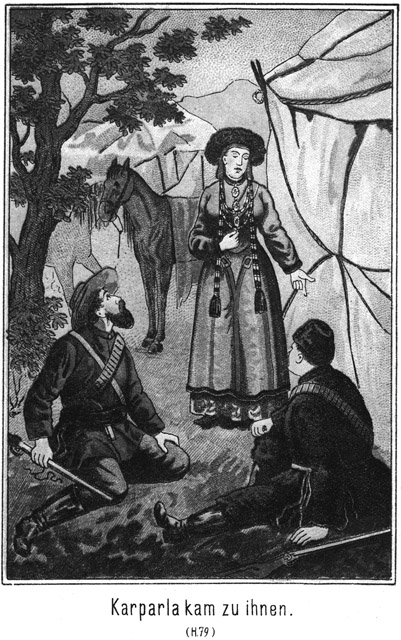»Er konnte es mir nur andeuten, weil er selbst nicht Alles wußte. Aber jener Mann, welchen ich in Californien traf, hatte Deinen Vater getroffen.«
»Wo? Wo?«
»In Sibirien. Er war ein entflohener Verbannter und erzählte mir, daß Banda, der einstige Maharadscha von Nubrida sich unschuldig als Verbannter in Sibirien befinde. Von diesem Augenblicke an stand es bei mir fest, daß ich nach Sibirien gehen würde, um Deinen Vater zu befreien.«
»Du weißt also, wo er ist?«
»Ja. Das heißt, bis vor wenigen Minuten wußte ich es nicht genau: ich wollte es erfahren. Sam sagte es mir vorhin; er hatte es ausgekundschaftet.«
»Ah, nun erkläre ich mir die Reden Deines wunderlichen Freundes.«
»Der Graf kennt aber den Aufenthaltsort Deines Vaters auch.«
»Ich weiß es.«
»Er ist hin zu ihm.«
»Auch das weiß ich.«
»Wirklich? Weißt Du auch, was er dort bei ihm will?«
»Ja. Er will ihn befreien.«
»Hat er das gesagt?«
»Ja.«
»Hm! Mir klingt das nicht wahrscheinlich.«
»Es ist dennoch wahr.«
»Fast möchte ich daran zweifeln.«
»Er hat es mir versprochen.«
»So! Wenn er Deinen Vater befreien will, muß er sich selbst anklagen, denn er war es ja, welcher durch falsches Zeugniß und andere Verbrechen ihn zum Verbannten machte.
»Vielleicht weiß er einen Weg zur Befreiung des Vaters, ohne daß er sich selbst dabei schadet.«
»Das wäre nur dadurch möglich, daß er seine Schuld auf Andere wälzt und ich traue es ihm zu.«
»Ich auch.«
»Aber, Geliebte, wie kommt es, daß er jetzt Den befreien will, den er erst in das Verderben führte?«
»Er hat seine Absicht dabei.«
»Kennst Du diese Absicht?«
»Ja.«
»Darf ich sie erfahren?«
Sie schüttelte leise und langsam den Kopf.
»Gökala!« bat er.
Sie erröthete, antwortete aber nicht. Er zog sie an sich und fragte:
»Fällt es Dir gar so schwer?«
»So hast Du kein vertrauen zu mir?«
»Mein Vertrauen zu Dir ist grenzenlos.«
»Und dies, die Hauptsache, willst Du mir verschweigen!«
»Ich muß, weil ich das Leben meines Vaters sonst gefährden würde.«
»Das ist abermals eine Täuschung, in welcher Du Dich befindest.«
»Seine Drohungen waren so schrecklich!«
»Natürlich! Aber grad durch eine offene Mittheilung würdest Du es mir ermöglichen, seine Drohungen zu schanden zu machen.«
»Meinst Du?«
»Gewiß. Ich ahne, daß Dein Zartgefühl sich sträubt, mir Alles zu sagen.«
Da ergriff sie seine beiden Hände, blickte ihm groß und aufrichtig in Gesicht und antwortete:
»Oskar, ich würde Dich nicht lieben, wenn Deine Vermuthung wahr wäre. Dir und nur Dir allein könnte ich mein ganzes Herz offenbaren, daß es vor Dir läge wie ein aufgeschlagenes Buch. Es ist nur allein die Angst um das Leben meines Vaters, welche mich zum Schweigen gezwungen hat und auch noch heute zwingt.«
Er lächelte.
»Und ich bin überzeugt, daß Du Dich gar sehr täuschest.«
»Gewiß nicht!«
»Und vielleicht doch. Mir ahnt vielmehr, daß Du Deinen Vater dadurch, daß Du schweigst und mir es unmöglich machst, ihn zu retten, in das Verderben bringst.«
»Mein Gott! Wenn das wäre!«
»Ich befürchte es!«
»Wirklich, wirklich?«
Aus ihren Augen sprach jetzt eine große Angst.
»Wirklich!« antwortete Steinbach. »Ich bin überzeugt, daß der Graf Dich ebenso betrügen will, wie er Andere betrogen hat.«
»Das wäre schrecklich!«
»Darum bitte ich Dich, sei aufrichtig!«
»Gott, was soll ich thun!«
»Folge dem Vertrauen zu mir!«
»Das möchte ich so gern.«
»Du wirst es nicht bereuen.«
»Weißt Du überhaupt, warum der Graf meinen Vater in das Verderben führte?«
»Ja. Er wollte Dich besitzen.«
»Mein Vater mußte verschwinden, damit ich in seine Hände fiele.«
»Ja. Du warst damals trotz Deiner Jugend bereits eine Schönheit, nach deren Besitz er lechzte. Die Sonne Indiens hatte Dich zeitig gereift. Er lockte Deinen Vater aus seinem Lande, ließ beschwören, daß er ein russischer Verbrecher sei, und so wurde Dein Vater nach Sibirien verbannt.«
»Und mich nahm der Graf mit sich fort.«
»Du solltest sein Weib werden.«
Sie senkte die Augen, während eine tiefe Gluth ihr Angesicht bedeckte.
»Sein Weib?« sagte sie leise. »Nein, sondern seine – – –«
Sie sprach das Wort nicht aus.
»Ah, das also!« fuhr Steinbach auf.
»Ja. Aber er hatte sich in mir verrechnet. Er hatte geglaubt, ich sei viel zu jung, als daß ich ihm Widerstand entgegensetzen werde.«
»Dieser Mensch! Ist er gewaltthätig gegen Dich gewesen?« fuhr Steinbach zornig auf.
»Ja.«
»Ah! Das soll er mir entgelten! Ich zermalme ihn langsam, so daß jedes einzelne seiner Glieder vor Schmerz laut aufbrüllen soll.«
Sie legte ihm die Hand begütigend auf den Arm und sagte:
»Oskar, sei ruhig! Auch da hatte er sich verrechnet. Er hat mich nicht anrühren dürfen.«
»Aber Du sprachst doch von Gewaltthätigkeit!«
»Diese bestand nicht in directen Angriffen gegen mich.«
»Worin denn?«
»Er sperrte mich ein; er entzog mir die Nahrung. Ich mußte hungern und dürsten. Er schleppte mich von Ort zu Ort, von Land zu Land und that Alles, mich so elend zu machen, daß es mir als eine Rettung erscheinen mußte, von ihm geliebt zu werden und seine Liebe zu erwidern.«
»Ah! Das erlöst ihn vom Tode. Aber büßen soll er dennoch schrecklich.«
»Es gelang ihm nicht, seine Absicht zu erreichen. Er liebte mich wirklich, mit unbesiegbarer, heißer Leidenschaft, und diese seine Liebe war meine Retterin.«
»Wieso?«
»Mein Tod wäre ihm die größte Strafe gewesen. Darum drohte ich ihm, so oft er Gewalt gegen mich anwenden wollte, mich sofort zu tödten.«
»Hättest Du es gethan?«
»Ja. Sicher, ganz sicher. Ich hätte mit dem Gedanken, von ihm nur berührt worden zu sein, nicht einen Augenblick zu leben vermocht.«
»Armes, armes Kind! Gelang es Dir denn niemals, Dich ihm zu entziehen?«
»Nein; ich konnte das nicht wagen. Er hatte mir gedroht, sobald ich ihn verließe, würde mein Vater sterben.«
»Der Hallunke! Du glaubtest es?«
»Mußte ich nicht?«
»Ja freilich. Bei seiner Gewissenslosigkeit war ihm Alles zuzutrauen.«
»So blieb ich also bei ihm, nur um den Vater am Leben zu erhalten. Was für elende Jahre das gewesen sind, das vermag ich nicht in Worte zu fassen.«
»Wußtest Du denn, wo Dein Vater sich befand?«
»Nein. Das sagte er mir nie.«
»Der Schurke! Er war schlau. Er handelte mit Berechnung. Wenn er Dir den Aufenthalt, das Schicksal Deines Vaters mittheilte, hättest Du doch vielleicht einen heimlichen Schritt zu dessen Rettung zu thun vermocht.«
»Ich hätte diesen Schritt gethan. Der Graf hatte mir nur gesagt, daß mein Vater in Gefangenschaft lebe und daß es nur auf ihn ankomme, ob er sterben müsse oder nicht. So verging eine lange, lange Zeit. Er mochte gehofft haben, daß das Elend mich gefügig machen werde; aber da hatte er sich verrechnet. Jetzt nun schleppte er mich nach Sibirien, und erst hier wurde er in seinen Mittheilungen aufrichtiger.«
»Was sagte er?«
»Das mein Vater verbannt sei.«
»Weshalb?«
»Weil er gegen Rußland conspirirt habe.«
»Glaubtest Du das?«
»Nein. Mein Vater war indischer Fürst. Eine politische Gegnerschaft gegen Rußland konnte ihn nicht in Strafe bringen. Darum lachte ich über seine Lüge.«
»Blieb er bei derselben?«
»Nein. Er sagte mir nun die Wahrheit, daß Nena meinen Vater verrathen habe, daß dieser Letztere nun als ein Verbrecher Namens Saltikoff gelte und zu lebenslänglicher Gefangenschaft in den Urwäldern Sibiriens verurtheilt sei.«
»Das ist nun freilich die Wahrheit.«
»Er schilderte mir die Qualen und Entbehrungen, welche mein Vater zu erdulden habe – –«
»Natürlich um Dich weich zu stimmen.«
»Und versprach mir die Rettung des Vaters – – –«
»Gegen welchen Preis?«
»Der Preis bin ich.«
Sie senkte das Haupt.
»Bist Du darauf eingegangen?«
»Ja.«
Sie schlug die Hände vor das Gesicht und begann zu schluchzen. Steinbach blickte finster vor sich nieder. Es überkam ihn eine Regung des Unmuthes gegen die Geliebte, doch schon nach wenigen Augenblicken siegte sein besseres Gefühl. Er zog Gökala an sich und sagte:
»Das habe ich erwartet.«
Sofort ließ sie die Hände vom Gesicht fallen, blickte ihn unter Thränen an und fragte:
»Oskar, ist das wahr?«
»Ja.«
»Du hast es erwartet? Du zürnest mir nicht ob dieses Entschlusses?«
»Wie sollte ich! Du konntest ja gar nicht anders.«
»Das meinst Du wirklich, wirklich?«
»Ja. Um Deinen Vater zu retten, wolltest Du Dich hingeben.«
Sie schüttelte den Kopf wieder, ganz wie vorhin, und sagte:
»Hingeben? O nein. Von einer Hingebung könnte keine Rede sein. Ich wär sein Weib geworden, aber berühren hätte er mich nicht dürfen.«
»Mein tapferes, tapferes Mädchen!«
»Du darfst nicht denken, daß ich meine Einwilligung ohne Kampf gegeben habe.«
»Ich bin es überzeugt.«
»Nur als er mir erklärte, daß dies die letzte Bedingung sei, welche er mache, daß mein Vater unbedingt sterben müsse, falls ich nicht auf diesen Vorschlag eingehe, da erklärte ich mich endlich bereit.«
»Du hast ganz so gehandelt, wie es die Schuldigkeit der Tochter war, meine Gökala.«
»Du tadelst mich also nicht?«
»Wollte ich Dich tadeln, so wäre ich ein Unmensch.«
»Ich danke Dir! Ich danke Dir von ganzem, ganzem Herzen, mein Geliebter. Ich hatte eine entsetzliche Angst, daß Du mir zürnen würdest.«
»O nein. Ich begreife das Gefühl, nach welchem Du handeln mußtest. Und ebenso kann ich mir denken, welche Qualen es Dir bereitet haben muß, zu diesem für Dich fürchterlichen Entschlusse zu gelangen.«
Sie schmiegte sich zärtlich an ihn und flüsterte ihm zu:
»Gott sei Dank! Da Du so sprichst, ist die Angst vorüber und mein Herz ist vom Vorwurfe frei.«
»Ja, mein Engel, einen Vorwurf kann ich Dir nicht machen, ich muß vielmehr das Opfer bewundernd anstaunen, welches Du bereit warst, Deinem Vater zu bringen. Doch laß mich klar sehen! Was Du mit dem Grafen besprochen hast, ist nur mündlich geschehen?«
»Ja.«
»Eine Verlobung, wie er sie zu seiner Sicherheit ja leicht hätte fordern können, hat nicht vor dem Popen stattgefunden?«
»Nein.«
»Wann sollte die Hochzeit vorgenommen werden?«
»Sofort nachdem ich meinen Vater gesehen haben würde.«
»Ah! Also hier in Sibirien?«
»Ja.«
»Noch bevor Dein Vater frei war?«
»Ja. Er sagte mir, daß er mir nicht traue. Er glaubte, ich würde ihm nicht Wort halten, wenn er meinen Vater vor der Hochzeit befreie.«
»Hm!« brummte Steinbach nachdenklich.
»Vielleicht hat er diese Bedingung auch aus Angst gestellt,« meinte Gökala.
»Wieso?«
»Aus Angst vor der Rache meines Vaters. Es ist doch anzunehmen, daß dieser sich an ihm dann, wenn er sein Schwiegersohn wäre, nicht rächen werde.«
»Ja, und dennoch glaube ich nicht an diese Angst. Ich befürchte vielmehr, daß er irgend welche Hintergedanken hat. Hat er nicht noch andere Bedingungen gestellt?«
»Ich solle ein Document unterschreiben, in welchem ich ihm alle Rechte abtrete, welche mir, als dem einzigen Kinde des Maharadscha von Nubrida, zustehen.«
»Donnerwetter! Verzeihe mir dieses kräftige Wort, Gökala! Aber ich beginne, seine Absicht zu durchschauen.«
»Eine böse?«
»Ja. Sollte Dein Vater Zeuge Deiner Vermählung mit dem Grafen sein?«
»Nein.«
»Ach so! Hm!«
»Ich sollte überhaupt mit ihm gar nicht sprechen, bevor ich nicht Gräfin von Polikeff sei. Nur ihn einmal von Weitem zu sehen, das sollte mir erlaubt sein.«
»Ganz richtig, ganz richtig! Gökala, ich hatte Recht, als ich vorhin sagte, Dein Vater befinde sich in größter Gefahr, wenn Du zögertest, Dich mir mitzutheilen.«
»Herrgott! Wie meinst Du das?«
»Der Graf will ihn tödten.«
»Himmel! Doch nur, wenn ich mich weigere, seine Frau zu werden?«
»Unmöglich!«
»Ganz gewiß!«
»Das wäre doch teuflisch!«
»Er ist ja ein Teufel; das hast Du tausendmal erfahren. Er kann Deinen Vater nicht befreien, denn er könnte das nur dadurch, daß er seine eigenen Missethaten gestände, und dies zu thun, wird er sich hüten. Nein. Er will Dir Deinen Vater zeigen; das ist wahr. Durch den Anblick des alten, unglücklichen Mannes wird Dein Herz in Wehmuth zerfließen, und Du wirst bereit sein, dem Grafen Deine Hand zu geben. Ist das geschehen, so stirbt Dein Vater – – –«
»Glaubst Du das wirklich?«
»Ich bin es überzeugt. Wenn Dein Vater stirbt, natürlich in Folge seiner Anstrengungen und Entbehrungen, braucht der Graf ihn nicht zu befreien. Er ist seines Versprechens ledig, und Du bist doch sein Weib.«
»Das wolle Gott verhüten!«
»Er wird es verhüten, und zwar durch mich. Du hättest dann alle Rechte abgetreten. Weißt Du, was das heißt?«
»Nein.«
»Du bist das einzige Kind des Maharadscha, also seine Thronfolgerin.«
»Ah, ich ahne!«
»Nicht wahr? Du hättest das Recht der Thronfolge an den Grafen abgetreten, folglich gehörte ihm die Regierung.«
»Mein Vater würde einen Nachfolger gefunden haben.«
»Der aber weichen muß, wenn Jemand kommt, der ein größeres Recht besitzt.«
»Und wenn die Unterthanen sich weigern, den Grafen anzuerkennen?«
»So kommen die Russen und zwingen sie.«
Gökala machte eine Miene des Erstaunens, holte seufzend tief Athem und sagte:
»Jetzt, jetzt begreife ich Alles, Alles!«
»Nicht wahr. Der Graf handelt nicht nur aus wahnsinniger Liebe zu Dir, sondern auch aus Eigennutz und Politik. Du wirst die Bedeutung Deines Vaterlandes Nubrida gar nicht kennen?«
»O doch.«
»Nun?« fragte er, sie erwartungsvoll und lächelnd anblickend.
»Es liegt zwischen Rußland und England,« antwortete sie.
»Ah, Du triffst das Richtige!«
»Ja,« nickte sie in scherzendem Stolze. »Ich bin eine ganz bedeutende Politikerin.«
»Das höre ich allerdings.«
»Ich habe es dem Grafen zu verdanken.«
»Wieso? War er Dein Lehrer?«
»Ja.«
»Ah! Fast ahnte ich es.«
»Er bediente sich meiner Person zuweilen, um – – ah, erlaß mir das.«
»Ich verstehe. Du warst schön. Er fesselte durch Dich Herren an sich, welche er diplomatisch ausbeuten wollte.«
Sie gestand das, obgleich tief erröthend, zu.
»Du warst damals,« fuhr er fort, »auch nicht ohne Absicht in die Nähe der türkischen Prinzessin gebracht worden?«
»Du hast es errathen. Damals aber kamst Du und machtest die Absichten des Grafen zu schanden.«
»Das heißt, die Absichten Rußlands, denen Du dienen mußtest.«
»Ich sollte ihnen dienen, hätte es aber nicht gethan. Ich hatte die Prinzessin lieb gewonnen und hätte zu nichts, was gegen ihr Glück gewesen wäre, die Hand geboten.«
»Das freut mich von Dir. Ich habe allerdings damals einen Schachzug vermitteln müssen, durch welchen Rußland einen hohen Einsatz verlor. Ich liebe Rußland nicht, ebensowenig wie England. Keinen von Beiden kann ich eine besondere Theilnahme widmen. Sie stehen sich in ihren asiatischen Besitzungen gegenüber, jeden Augenblick bereit, gegen einander loszuschlagen. Zwischen diesen Besitzungen liegt Nubrida, das Land Deines Vaters. Zu wem der Herrscher desselben sich hinneigt, ob zu Rußland, ob zu England, das ist von allerhöchster Wichtigkeit. Dein Vater war ein Freund Englands. Daher verschwand er in Sibirien – – –«
»Gott! So ist das!« rief Gökola aus.
»Ja. Denke Dir nur, einen russischen Grafen als Beherrscher von Nubrida. Ist das nicht ein Triumph für Rußland?«
»Ja, ja! Also wäre ich das Opfer einer diplomatischen Berechnung geworden?«
»Nein, so weit will ich denn doch nicht gehen. Aber nachdem die Leidenschaft, welche der Graf für Dich fühlte, Euer Verderben geworden war, stand der russischen Diplomatie nichts im Wege, sich dieser Thatsachen zu ihrem Vortheile zu bemächtigen. Jetzt kennst Du Alles. Dein Vater ist dem Tode geweiht.«
Da ergriff sie seine Hand und sprach:
»Oscar, rette ihn, rette ihn!«
»Habe keine Sorge! Ich werde ihn retten.«
»Aber hast Du auch die Macht dazu?«
Er lächelte ihr beinahe ironisch zu und antwortete:
»Das wollen wir einmal versuchen. Bis jetzt habe ich noch nicht daran gezweifelt.
»Aber schnell muß es geschehen.«
»Natürlich.«
»Der Graf ist fort zu meinem Vater. Man muß ihm schleunigst folgen, damit er ihm nichts Böses thun kann.«
»In dieser Beziehung braucht Dir nicht bange zu sein. Er hat Dir ja versprochen, Dir Deinen Vater zu zeigen. Also kann er ihm nichts thun, wenigstens jetzt nicht.«
»Was bist Du entschlossen zu thun?«
»Das ist noch unentschieden. Ich habe nur erst wenige Worte mit meinem braven Sam wechseln können. Wie es scheint, hat er ganz bedeutende Entdeckungen gemacht. Ich muß erst ausführlicher mit ihm reden; dann wird es mir klar sein, welchen Weg ich einzuschlagen habe, um zum Ziele zu gelangen.«
»So sprich gleich mit ihm, sogleich!« drängte sie.
»Willst Du mich fortschicken?« lächelte er.
»Nein, nein, o nein!« antwortete sie, ihn schnell wieder umschlingend.
»Ueberhaupt,« fuhr er fort, seinen Blick mit innigem Glanze auf ihr Auge richtend, muß ich außer mit Sam auch noch mit Dir sprechen, bevor ich einen festen Entschluß fassen kann.«
»Mit mir? Wieso?«
»Ich habe Dich so unendlich lieb und darf also gegen den, welcher Dein Gemahl sein wird, nichts unternehmen.«
»Du meinst den Grafen?«
»Ja.«
»Oscar, ich denke nicht mehr an das Versprechen, welches ich ihm habe geben müssen. Es war ein erzwungenes.«
»Du willst also das Bündniß mit ihm aufgeben?«
»Und nun mir Vertrauen schenken?«
»Wie gern, o wie so gern!«
»Glaubst Du denn nun, daß ich im Stande sein werde, die Absichten des Grafen zu Schanden zu machen?«
»Ich hoffe es nicht nur, sondern ich glaube es auch. Er kommt mir gar nicht mehr so gefährlich vor wie bisher.«
»Aber ich will aufrichtig sein,« sagte er mit einem feinen Lächeln, welches zu verbergen er sich Mühe gab. »Er ist ein Graf, also gehört er zu dem hohen Adel. Er begleitet außerdem am Hofe des Czaaren einen bedeutenden Rang. Vielleicht hat er Ermächtigungen und Vollmachten in der Tasche, gegen welche mein zwar guter aber schwacher Wille nicht aufkommen kann; mit einem Worte, er ist mir überlegen. Willst Du mich Dir dennoch anvertrauen?«
»Ja, von ganzem Herzen!«
»So werde ich alle Kraft aufbieten, ihn zu besiegen. Aber dann –«
»Dann –?« fragte sie.
»Dann, ja, was wird dann sein?«
»Das fragst Du, Oscar?«
»Muß ich nicht?«
»So kannst Du es Dir nicht denken?«
»O doch. Es ist so sehr einfach und selbstverständlich. Dann, wenn Dein Vater befreit ist und seine Heimath wieder aufsuchen kann, dann gehst Du mit ihm als Prinzessin Deines Landes und ich – – ich kehre nach Deutschland zurück, um als armer Assessor mich wieder unter die Akten zu vergraben.«
Sie blickte ihn forschend an und fragte:
»Assessor bist Du?«
»Ja.«
Da ließ sie ein glockenhelles, fröhliches Lachen hören und sagte:
»Nicht ein Assessor sondern ein Spaßvogel bist Du!«
»Ach! Wieso?«
»Seit wann werden deutsche Gerichtsassessoren nach Konstantinopel gesandt, um gegen das mächtige Rußland eine so schwierige Schachparthie zu gewinnen?«
»Seit wann? Seit gar nicht.«
»Nun also war es ein Scherz. Du bist kein Assessor.«
»Ein Gerichtsassessor allerdings nicht, sondern ein Assessor beim auswärtigen Amte.«
Da wurde ihr Gesicht ernster.
»Die giebt es freilich,« sagte sie.
»Du siehst also, daß ich Dich nicht täuschen wollte.«
»Aber Du hast gar nicht das Aussehen eines solchen Beamten.«
»Meinst Du?«
»Ja. Du siehst viel, viel vornehmer aus.«
»Mein liebes Kind, das sagst Du, weil Du zwar die deutsche Sprache sprichst, aber nicht unsere Verhältnisse kennst. Ein Subalternbeamter meines Vaterlandes braucht sich gar nicht zu scheuen, sich mit einem Oberbeamten Rußlands vergleichen zu lassen.«
»Aber Dein Auftreten!«
»Was meinst Du?«
»Du scheinst reich zu sein.«
»Liebes Kind, ein jeder Monarch sorgt dafür, daß diejenigen, denen er eine Aufgabe giebt, so auftreten können, wie es zur Lösung dieser Aufgabe nöthig ist. Von meinem damaligen Erscheinen darfst Du nicht auf Anderes schließen. Ich beziehe zum Beispiel als Assessor des auswärtigen Amtes ein Gehalt von viertausend Mark. Das sind achtzig Mark pro Woche.«
»Ists wahr?« fragte sie.
Dabei war sie so ernst, daß er fast laut aufgelacht hätte.
»Ja,« antwortete er ebenso ernst.
»Höre, dann könnte ich Deutschland beinahe hassen!« sagte sie.
»Warum?«
»Weil es Männer wie Dich so gar sehr schlecht besoldet. Wie willst Du leben, wenn Du nicht selbst Privatvermögen besitzest!«
»Das habe ich freilich nicht.«
»So ists traurig. Und nach diesem Lande willst Du zurückkehren?«
»Natürlich.«
»Nein, nein. Das dulde ich nicht, das darf nicht sein.«
»Es muß sein. Ich muß doch meine Pflicht erfüllen.«
»Das ist richtig. Deine Pflicht mußt Du erfüllen. Aber weißt Du denn auch, welches Deine größte Pflicht ist?«
»Nun, welche?«
Da legte sie die vollen, warmen Arme um ihn, schmiegte sich voller Zärtlichkeit an ihn und antwortete:
»Deine Gökala glücklich machen.«
Er küßte sie leise und innig auf das prächtige Haar und fragte:
»Denkst Du, daß ich das nicht will?«
»Ja, das denke ich.«
»So beurtheilst Du mich falsch.«
»O nein.«
»Ich befreie Dich und Deinen Vater von diesem Grafen. Ihr könnt Beide nach Rubrida zurückkehren. Euch erwartet der Glanz des Thrones, die Liebe Eurer Unterthanen. Werdet Ihr da nicht glücklich sein.«
»Ich nicht,« antwortete sie.
»Warum nicht?«
»Weil Du mir fehlen würdest. Ohne Dich giebts kein Glück, keinen Himmel, keinen Stern für mich. Soll ich glücklich sein, so mußt Du an meiner Seite weilen. Du mußt mit nach Nubrida. Nicht ich trachte nach der Herrschaft meines Vaters; ich bin ein Weib; ich will Dein Weib sein, und Du sollst als mein Gebieter und als der Gebieter meines Volkes auf dem Throne meiner Väter sitzen.«
»Ich?« fragte er, indem er auffuhr.
»Ja, Du!« antwortete sie.
»Ich, Dein Gemahl!«
»Ja. Liebst Du mich nicht?«
»Mehr als mein Leben! Ich bin ja Deinetwegen – – ah, Du weißt ja gar nicht, was ich um Deinetwillen Alles gethan habe.«
»Also liebst Du mich und willst mich dennoch nicht besitzen?«
»Gökala, Dich zu besitzen wäre die höchste Seligkeit der Erde. Aber es kann und darf nicht sein.«
»Warum denn nicht, warum?«
»Du, die Tochter eines Maharadscha, nach deutschem Vergleich eines Großherzoges, und ich ein armer, kleiner Assessor am Amte des Auswärtigen! Ist es nicht gradezu Wahnsinn, an die Vereinigung zweier so verschieden gestellter Personen zu denken?«
»Personen? Wer spricht von Personen? Hier ist nur allein von Herzen die Rede. Und das Herz fragt nicht nach Stand und Rang.«
»O doch, es muß!«
»Nein, nein. Hat Dein Herz darnach gefragt, als Du der Vertreter einer mächtigen Nation warst und ich eine gefangene Sclavin eines niederträchtigen, heimtückischen Russen? Hast Du nach diesem Unterschiede gefragt, als es galt, einen Verbannten Sibiriens, also einen überwiesenen Verbrecher zu befreien? Du wirst unser Retter sein und glaubst, dann tiefer zu stehen als die von Dir Geretteten. Ist nicht der Dank, welchen wir Dir dann schulden, ein Opfer, welches nach aufwärts steigt? Steht nicht der Retter also hoch über uns? Und wenn Dir das noch nicht genügt, so denke an das, was Dein Gott und Herr Dir für herrliche Geschenke und Vorzüge ertheilte. Wer kann sich mit Dir messen, wer sich mit Dir vergleichen? Mußt Du nicht Sieger sein im Kampfe mit Jedem, mag dieser Kampf nun auf geistiger oder auf physischer Arena ausgefochten werden? Wer wollte die Behauptung wagen, daß Du ihm nicht ebenbürtig seist? Und denke an mich, was ich gewesen bin! Denke an das, was ich erlitten habe! Denkst Du, daß ich, wenn ich endlich, endlich einmal das lang ersehnte Glück finden darf, darnach fragen werde, ob dasselbe mir von einem Fürsten oder von einem deutschen Assessor des auswärtigen Amtes geboten wird? Nein, ich liebe Dich. Du bist der Erste und Einzige, der sich meiner angenommen hat. Ohne Dich giebt es für mich kein Glück, keinen Segen, kein Heil. Dein will ich sein. Nur von Dir will ich die Seligkeit empfangen, nach welcher ich mich sehne, und auch nur Du sollst es sein, dessen Glück mein einziger Wunsch, mein ganzes Streben und Trachten sein soll in diesem Leben. Und willst Du nicht mit mir gehen, so gehen wir mit Dir. Ich bin Dein und Du bist mein; ich weiche niemals wieder von Deiner Seite.«
Sie stand hoch und stolz vor ihm, mit der Röthe der Begeisterung auf den Wangen. Es war nicht der Stolz des Standesvorrechts, des Reichthums sondern der Stolz der Liebe, der Stolz eines edlen, reinen Frauenherzens, welches tausend Mal lieber ein Opfer bringt als eins fordert.
»Gökala, meine Gökala!« sagte er. »Du, Du wolltest das Weib eines armen, niedrigen Beamten werden?«
»Arm? Du wirst vorher mit nach Nubrida gehen, und wenn Du nicht dort bleiben willst, so wirst Du das Land mit uns verlassen, überhäuft mit Schätzen, welche ich nicht achte, weil ich weiß, daß sie nicht glücklich machen, mit denen Du aber in Deinem Heimathslande Dir Verdienste erwerben kannst, welche zum Glücke vieler Anderer führen. Arm also wirst Du auf keinen Fall sein, mein Geliebter.«
Steinbachs Gesicht strahlte im Ausdrucke eines unendlichen Glückes, und doch ging es zugleich wie eine tiefe, tiefe Rührung über seine Züge.
»Aber weißt Du auch, was Du sagst, was Du versprichst?« fragte er.
»Ja,« antwortete sie in festem Tone.
»Du bestimmst über Deine und meine Zukunft, ja über all Dein Eigenthum, welches Du Dir jedenfalls erst zurückerkämpfen müßtest, und hast doch mit Deinem Vater noch kein Wort darüber sprechen können.«
»Mein Vater wird grad so denken wie ich.«
»Das bezweifle ich. Du hast ihn seit langen, langen Jahren nicht gesehen. Du weißt nicht, was und wie er denkt.«
»Ich weiß, daß all sein Denken und Sinnen darauf gerichtet sein wird, die Freiheit wieder zu erlangen.«
»Und wenn er sie erlangt, so wird er alle Kräfte aufbieten, die Herrschaft wieder zu erhalten, welcher zu entsagen er so gewaltsam gezwungen wurde!«
»Er wird dies nur in dem Falle thun, daß ich bereit bin, wieder mit nach Nubrida zu gehen. Das thu ich aber nur dann, wenn Du mich begleiten willst.«
»Selbst wenn ich dazu Ja sagen wollte, wird der jetzige Herrscher dem Throne nicht freiwillig entsagen.«
»Er muß!«
»Willst Du ihn zwingen?«
»Ja.«
»Womit?«
»Mit Hilfe unserer Unterthanen, welche über die Rückkehr ihres alten, rechtmäßigen und geliebten Herrschers beglückt sein werden.«
»Sie lieben den jetzigen ebenso.«
»Weißt Du das?«
»Ja.«
»So kennst Du den jetzigen Maharadscha?«
»Sehr genau. Ich habe mich natürlich nach allen Verhältnissen des Landes und der Regierung auf das Genaueste erkundigt. Es regiert der Stiefbruder meines Vaters; er hat zwei Söhne. Er wird nicht auf die Herrschaft und die Söhne nicht auf die Thronfolge verzichten wollen. Er regiert streng aber gerecht. Er hat sich die Liebe und das volle Vertrauen seiner Unterthanen errungen. Die Völker sind wankelmüthig. Die Bewohner von Nubrida werden sich hüten, einen Kampf hereinbrechen zu lassen. Ein friedlicher Vergleich ist das Höchste, wonach Dein Vater streben kann. Du mußt auch berücksichtigen, daß der jetzige Maharadscha ein Freund Rußlands ist. Im Falle eines Conflictes würde der Czaar sofort diese höchst willkommene Gelegenheit ergreifen, den Schiedsrichter zu machen und sich dabei des Landes zu bemächtigen suchen. Wird Dein Vater dasselbe unglücklich und von Rußland abhängig machen wollen?«
»Niemals.«
»So bleibt Euch nur der Verzicht.«
»Gut, so verzichten wir. Aber das Privateigenthum, auf welches wir unveräußerliche Rechte haben, werden wir auf keinen Fall aufgeben.«
»Ich hoffe allerdings, daß Euch dasselbe ausgeliefert werden muß.«
»Nun, das sind viele Millionen. Wir werden dann das Land verlassen!«
»Und – – –?«
»Und – – –? Mit Dir gehen, natürlich.«
»Gökala, wenn Du die Reichthümer vor Dir liegen hast, dann wirst Du ganz anders denken.«
»Nie, niemals! Mein einziger Reichthum bist nur Du. Alles Andere achte ich nicht. Du hast bereits in Constantinopel gehört, daß ich die Dichter Deines Vaterlandes kenne. Euer Schiller sagt so treffend:
»Raum ist in der kleinsten Hütte
Für ein glücklich liebend Paar.«
Eine solche Hütte wünsche ich mir und Dich als den Herrn derselben und auch als meinen Herrn. Dann bin ich zufrieden. Ist Dein Amt auch klein und bringt es uns auch wenig ein, so werden wir doch keine Noth leiden. Vater wird nicht mehr ein Verbannter sondern ein freier Mann sein und nichts weiter wünschen, als sich an dem Glücke seines Kindes freuen zu können. Meinst Du nicht auch, daß eine solche Zukunft wohl werth sei, sich auf sie zu freuen?«
Sie legte ihren Arm um ihn, preßte ihr Köpfchen liebevoll an seine Brust und blickte fragend zu ihm auf. Er küßte sie auf die reine, weiße Stirn und antwortete:
»Ja, meine Geliebte. Sie ist es werth, daß man mit allen Kräften nach ihr ringe.«
»Nun, so wollen wir es thun!«
»Du hast Recht. Thun wir es! Es ist ein so großes Opfer, welches Du Deiner Liebe zu mir bringen willst. Ich will es annehmen, falls auch Dein Vater einwilligt, und ich hoffe, daß Du nie bereuen wirst, es mir gebracht zu haben.«
»Bereuen? Ich werde Dich noch in meiner Todesstunde dafür segnen, daß Du mir erlaubt hast, mein Schicksal an das Deinige zu binden. Nie werde ich es glauben können, daß ich Dir ein Opfer gebracht habe. Ist es denn ein Opfer, ein so unendlich Glück am Herzen des Geliebten zu empfinden?«
»Gökala!« rief er aus, von seiner Liebe übermannt.
»Oskar, mein Oskar! Willst Du mich nicht einmal bei meinem richtigen Namen nennen?«
»Semawa, meine herrliche Semawa!«
Er preßte sie an sich, so daß es ihr fast Schmerzen verursachte. Sie blickte strahlenden Auges zu ihm auf und flüsterte:
»Ich danke Dir. So hat meine Mutter mich genannt, und so sollst auch Du mich fortan nennen. Es wird mir so klingen, als ob ihr Geist aus Deinem lieben Munde zu mir spräche, als ob jedesmal, wenn Du mich so nennest, dieser Name ein Segenswort sei, welches sie mir aus der Wohnung der Seligen sendet. Sag den Namen noch einmal, noch einmal!«
Er näherte seinen Mund ihren Lippen und antwortete:
»Meine heißgeliebte Semawa, ich bin namenlos glücklich, unaussprechlich glücklich. Es giebt auf Gottes weiter Erde keinen Menschen, mit dem ich tauschen möchte.«
»Für mich giebt es auch keinen. Oskar, wir werden eine Seligkeit erleben, wie sie nur wenig Sterblichen beschieden ist.«
Da wurde an den äußeren Zeltpfahl geklopft, und die Stimme des dicken Sam ließ sich vernehmen:
»Meine Herrschaften, ist die Conferenz noch nicht bald beendet? Es leben außer Ihnen auch noch andere Menschen in Sibirien und in Platowa.«
»Komm herein!« antwortete Steinbach.
Jetzt wurde das Thürtuch zurückgeschlagen und der Dicke trat herein. Er betrachtete die Beiden, welche eng verschlungen vor ihm standen, lachenden Angesichts und fragte:
»Nun, mein gnädigster Herr Steinbach, wie hat Ihnen denn dieser alte, dicke Fürst der Tungusen gefallen?«
»Ausgezeichnet!« lachte Steinbach. »Ich habe nie geglaubt, daß ein Tunguse so schön und so liebenswürdig sein kann.«
Sam kratzte sich unwirrsch hinter den Ohren und meinte:
»Ich hätte es freilich auch nicht geglaubt. Aber es ist doch eine verfluchte Geschichte, so etwas Vorzügliches entdeckt zu haben, ohne daß man irgend welchen Nutzen davon hat.«
»Nun, so ganz leer wirst Du doch wohl auch nicht dabei ausgehen.«
»Nicht? O doch! Oder soll ich sie etwa heirathen?«
»Nein; das würde ich mir freilich verbitten müssen.«
»Ja, da hat mans!«
»Du hast doch Deine Auguste!«
»Sapperment! Das ist wahr. Und weil ich kein Sultan bin, dem der Standesbeamte erlaubt, sich sechstausend Weiber zu nehmen, so werde ich hier wohl verzichten müssen.«
»Das rathe ich Dir. Mein Dank aber gehört Dir Zeit meines ganzen Lebens, mein lieber, wackerer Kamerad.«
Er reichte ihm die Hand. Sam schlug ein und meinten:
»Was einen so anhaltenden Dank betrifft, so habe ich ihn gar nicht verdient. Die Dame ist ja von mir nicht entdeckt worden sondern mir grad so über den Weg gelaufen, daß ich sie gar nicht habe übersehen können.«
»Das dictirt Dir Deine Bescheidenheit, mein guter Sam. Du hast bereits so viel für mich gethan, daß ich es Dir niemals recht vergelten kann.«
Indem Semawa diese Worte sprach, streckte sie ihm auch die Hand entgegen. Er ergriff dieselbe, zog sie ritterlich und tief gerührt an seine Lippen und antwortete, indem sein ehrliches Auge feucht zu glänzen begann:
»Mein guter Sam! Wenn man aus einem solchen Munde so genannt wird, so ists einem zu Muthe wie einem Bären, der aus Versehen in ein Honigfaß gefallen ist: Man möchte sich den ganzen Körper ablecken, und Haut und Haar dazu. Erst jetzt sehe ich ein, was für ein bedeutender Kerl ich bin. Hätte ich das früher gewußt, so wäre ich sicher nicht mit einer einfachen Herlasgrüner Auguste zufrieden gewesen, sondern ich hätte mich auch nach einer indischen oder chinesischen Prinzessin umgesehen. Aber nichts für ungut, daß mir da mein dummes Naturell wieder einmal mit der Höflichkeit davon läuft. Ich freue mich von ganzem Herzen, daß der liebe Herrgott Sie endlich einmal zusammengeführt hat. Kein Teufel soll sie wieder trennen, so lange ich noch einen Arm und eine Waffe besitze. Aber verträumen dürfen wir die Zeit doch nicht. Es giebt noch gar viel zu thun und zu besprechen. Drüben im großen Zelte sitzen die Anderen und platzen fast vor Verlangen, Herrn Steinbach zu sehen. Darum bin ich abgeschickt worden. Wenn ich als Gesandter dieser Leute Ihnen ungelegen komme, so bitte ich um Verzeihung und verspreche, es nicht wieder zu thun.«
Er sprach so herzlich und dabei auch so drollig, daß Beide ihm abermals die Hände boten.
»Nein,« sagte Steinbach, »ungelegen kommst Du uns nicht, mein guter Sam. Du hast vielmehr sehr Recht, wenn Du sagtest, daß wir nicht allein oder nur für uns in der Welt sind. Die Verhältnisse liegen so, daß wir handeln müssen und nicht träumen dürfen, und so ist es also ganz recht, wenn Du uns an unsere Pflicht erinnerst. Wir werden Dir sogleich folgen.«
Die drei verließen das Zelt und gingen nach demjenigen, in welchem sich der Fürst mit den Seinigen und seinen Gästen befand. Die guten Tungusen staunten nicht wenig, als sie die hohe, edle Gestalt des Deutschen erblickten. Jene sibirischen Stämme zeichnen sich durch Kleinheit der Gestalt aus. Karparla war bedeutend höher als ihre Eltern, eine große Ausnahme von der Regel. Das heldenhafte, imponirende Aeußere Steinbachs mußte also einen ganz ungewöhnlichen Eindruck auf sie machen.
Der Fürst und die Fürstin erhoben sich unwillkürlich respectvoll von ihren Sitzen, als ihr Auge auf sie fiel. Ganz verwundert aber waren sie, als er sie höchst freundlich begrüßte, und zwar, was sie von so einem Fremden gar nicht hatten erwarten können, in der Sprache ihres Landes und Volkes. Sie reichten ihm die Hände und hießen ihn willkommen. Der Fürst ließ ihm seinen eigenen Platz über.
»Rathe einmal, wer das ist, meine liebe Karparla,« sagte Semawa, indem ihr Angesicht vor Glück und Freude strahlte.
»Ich weiß es,« antwortete sie, indem sie ihr herzlich die Hand drückte.
»Wie könntest Du das wissen?«
»Von Sam.«
»Der Verräther! Hat er geschwatzt?«
»Bei Leibe nicht!« rief der Dicke. »Es ist mir gar nicht eingefallen, wer unser Herr Steinbach eigentlich ist. Ich weiß es ja selbst nicht.«
»Was er ist, meinst Du!« verbesserte Semawa.
»Ach so! Richtig!« gab Sam zu, obgleich er es so gemeint hatte, wie er gesagt hatte, denn er wußte weder was noch wer eigentlich Steinbach war.
»So will ich es Dir sagen,« meinte Semawa. »Er ist Assessor.«
Der Dicke machte ein höchst erstauntes Gesicht. Er guckte sie und Steinbach an und fragte:
»Assessor? Hm! Sonderbar! Wohl bei einem Gerichtsamte oder gar bei einem Bezirks- oder Landgerichte?«
»Nein, sondern bei dem auswärtigen Amte in Berlin.«
»Donnerw– – Verzeihung! In Gesellschaft schöner Damen soll man nicht fluchen. Aber Assessor! Beim auswärtigen Amte! In Berlin! Jim, was meinst Du dazu?«
»Hm!« brummte der lange Amerikaner, indem er verwundert den Kopf schüttelte.
»Und Du, Tim?«
»Ganz dasselbe, was mein Bruder gesagt hat, nämlich auch: Hm!« antwortete der andere Yankee.
»Du traust es ihm wohl nicht zu?«
»O, ich hätte ihm viel mehr zugetraut.«
»Ich auch,« bestätigte Jim. »So ein Gentleman, welcher in dieser Weise mit Wilden und Zahmen umspringt, sollte meines Erachtens etwas viel Besseres sein, als nur ein Assessor.«
»Nun, was denn zum Beispiel?«
»Ein Offizier.«
»Ja das habe ich mir auch gedacht. Aber da er eben nur Assessor ist, müssen wir es uns auch gefallen lassen.«
»Well,« brummte Jim.
»Well,« nickte auch Tim.
»Schau,« wendete Semawa sich an Steinbach, »diesen guten Herren ist es ganz so ergangen wie mir: Sie haben Dich viel höher taxirt, als Du in Wirklichkeit bist.«
*
»So muß ich, sobald ich die Heimath erreiche, sofort um Avancement bitten,« lachte Steinbach.
»Meinetwegen brauchst Du das nicht zu thun. Mir bist Du gerade so recht, wie Du bist. Aber, Karparla, ich muß dennoch meine Frage wiederholen: Kannst Du errathen, was er ist? Nämlich was er nur ist?«
»Ja,« antwortete die Gefragte. »Ich brauche ja nur in Dein glückstrahlendes Auge zu blicken, so weiß ich es. Er ist –«
»Nun, meine Liebe?«
»Dein – Bräutigam.«
»Ja, ja, das ist er, das ist er. Und Recht hast Du. Ich bin sehr, sehr glücklich.«
»Donnerwetter!« flüsterte Jim seinem Bruder zu. »Hast Du es gehört?«
»Freilich!« nickte Tim.
»Ihr Bräutigam!«
»Möchte ich auch sein!«
»Ein verteufelt passables Weibsbild. Ich gäb gleich einige tausend Dollars, wenn der Priester mir so eine famose Lady ankopuliren wollte!«
»Ich noch viel mehr!«
»Es wird bald Zeit, daß wir uns auch nach so Etwas umsehen.«
»Hm! Schau Dich um! Solche alte Swalker, wie wir sind, dürfen sich die Finger ablecken, aber so eine Frau bekommen sie nicht. Eine alte Mulattin ohne Zähne, ja, die vielleicht.«
»Oder gar eine Schwarze mit Wollhaar und weißen Blatternarben. Pfui Teufel!«
Während die Beiden sich diese Bemerkungen zuflüsterten, hatten die Anderen sich wieder niedergesetzt, Steinbach auf den Ehrenplatz, wie der Fürst es gar nicht anders zugegeben hatte.
»Jetzt, lieber Sam,« sagte er in russischer Sprache, damit die Anderen ihn alle verstehen könnten, »jetzt ist es vor allen Dingen nothwendig, daß Du mir erzählst, was nach unserer Trennung Du mit Jim und Tim Alles erlebt hast.«
»Hm,« meinte der Dicke. »Da kann ich sehr lange erzählen, denn das, was wir gethan und erfahren haben, könnte wohl beinahe ein ganzes Buch füllen.«
»So beginne gleich, damit Du desto eher fertig wirst.«
»Nein,« fiel der Fürst ein. »Meine Brüderchen sollen zunächst essen und trinken, damit ich unserem neuen Gaste beweisen kann, wie willkommen er mir ist.«
»Ich danke!« gegenredete Steinbach. »Ich glaube Dir gern, daß Du gewillt bist, mich freundlich bei Dir aufzunehmen, aber in dem Lande, aus welchem ich stamme, ißt man erst, nachdem man gearbeitet hat.«
»Das sollst Du ja auch hier. Du hast ja gearbeitet.«
»Was?«
»Du bist gereist. Das ist eine gar schwere Arbeit.«
»O nein. Die eigentliche Arbeit erwartet mich erst jetzt, wie Du bald sehen wirst. Ich bitte Dich dringend, erst erfahren zu dürfen, was meine drei Freunde hier erlebt haben. Nachher werde ich mich nicht weigern, von Deiner Freundlichkeit Gebrauch zu machen.«
»Du bist der Gast und ich habe also zu gehorchen.«
»Gut. Also erzähle jetzt, Sam!«
Der dicke Jäger kam dieser Aufforderung nach. Der Fürst, die Fürstin, Karparla und Semawa erfuhren jetzt erst den Zusammenhang alles Geschehenen. Sie unterbrachen den Redner oft mit lauten Ausrufen der Verwunderung.
Steinbach hingegen sagte kein Wort. Er hörte ruhig zu und gab nur hier und da durch ein Kopfnicken zu erkennen, daß der wackere Sam ganz nach seiner Ansicht, also sehr richtig gehandelt habe.
Diese schweigende Zustimmung gab dem Dicken den Muth, zuletzt sogar den Waffen- und Munitionsdiebstahl zu erzählen. Da aber verfinsterte sich das Gesicht Steinbach's.
»Halt!« sagte er, noch bevor Sam geendet hatte. »Ich mag es nicht bis zu Ende hören.«
»Warum?«
»Ich darf es nicht hören. Ich ahne, was geschehen ist. Ihr mögt Eure guten Gründe dazu gehabt haben, aber wenn Du es mir ausführlich erzähltest, so müßte ich Alles aufbieten, das, was Ihr gethan habt, ungeschehen zu machen.«
»Ich sehe aber keinen Grund dazu.«
»Es ist sogar ein sehr triftiger vorhanden, Sam.«
»Den kenne ich nicht.«
»Du wirst ihn sehr bald erfahren. Ich bin nämlich nicht als Privatmann hier.«
»Als was denn?«
»Davon später.«
»Etwa auch als Assessor?«
»Vielleicht.«
»Donnerwetter! Da laufe ich vielleicht gar Gefahr, arretirt zu werden, arretirt und processirt für meinen guten Willen.«
»Das ist sehr leicht möglich.«
»Also schweige ich lieber.«
»Ja, daran thust Du recht. Du hast so Vieles zu meiner vollsten Zufriedenheit gethan, wohl noch viel besser, als ich es selbst hätte thun können, daß ich aus Anerkennung dafür von Deinem letzten Besuche im Regierungshause gar nichts hören will. Du hast mich zum Lobe und zur Dankbarkeit verpflichtet, und so will ich keine Veranlassung kennen lernen, Dich zu tadeln.«
»Sakkerment! Das klingt freilich ganz wie Gerichtsassessor. Schweigen wir also davon. Die Hauptsache ist, daß wir Alle, die wir suchen, am Mückenflusse finden.«
»Ja. Wir müssen natürlich hin und dürfen keine Zeit verlieren. Am Allerliebsten möchte ich, wie die Angelegenheit steht, gleich jetzt aufbrechen und –«
»Nein, Herr Assessor, das darfst Du nicht,« fiel der Fürst schnell ein. »Du mußt, bevor Du von uns aufbrichst, erst meine Gastfreundschaft genießen. Sonst beleidigst Du mich.«
»Gemach, gemach!« lächelte Steinbach. »So schnell komme ich ja auch gar nicht von hinnen. Es ist nothwendig, vorher noch gar Manches zu besprechen und reiflich zu überlegen. Ferner scheint es nur, als ob ich auch noch Einiges genauer kennen lernen müsse und endlich habe ich meine Bagage noch nicht hier, deren Ankunft ich unbedingt abwarten muß. Also werde ich mich wohl wenigstens noch diese Nacht hier verweilen müssen.«
Bei den Worten, daß er Einiges näher kennen lernen müsse, fixirte er Karparla prüfend. Sie sah es und erröthete. Ihr Vater aber enthob sie einer Bemerkung, durch welche sie in große Verlegenheit gesetzt worden wäre, indem er sagte:
»Nicht nur diese Nacht wirst Du hier bei uns bleiben, sondern noch viel länger.«
»Das wird unmöglich sein.«
»O doch, denn Du gefällst mir sehr, mein liebes Söhnchen, Herr Assessor.«
Er wollte ihn nach seiner Weise, nach dem Gebrauche jenes Landes tituliren, welcher erfordert, daß man einen Aelteren Väterchen, einen Gleichalten Brüderchen und einen Jüngeren Söhnchen nennt, und doch wollte er ihm auch die Ehre geben, auf welche Steinbach als Assessor Anspruch hatte; darum nannte er ihn so naiv, aber wohl gemeint, mein liebes Söhnchen, Herr Assessor.
»Auch Du gefällst mir ganz außerordentlich, mein gutes Väterchen,« antwortete Steinbach. »Du hast ein prächtiges Mütterchen und ein reizendes Töchterchen. Darum würde ich von Herzen gern recht sehr lange bei Dir bleiben; aber ich bin gewohnt, vor allen Dingen meine Pflicht zu thun, und darum – horch!«
Er war von einem lauten Geräusch unterbrochen worden, welches sich draußen hören ließ, Pferdegetrappel, Räderrollen, Stimmengewirr, Willkommenrufe und Peitschengeknall.
»Da sind Fremde angekommen,« sagte der Fürst. »Man wird mir gleich melden, wer es ist.«
Er hatte ganz richtig vermuthet, denn einer seiner Tungusen trat ein und sagte:
»Der Kreissecretär ist angekommen und hat Begleitung mitgebracht. Er hat nach der Stadt gewollt, aber ehe er diese erreichte, von uns erfahren, daß der Fremde, den er dort treffen will, hier bei uns ist. Darum hat er die Pferde und Wagen hierher zu uns gelenkt.«
»Ah, da kommen meine Sachen,« rief Steinbach erfreut. »Ich hätte es nicht für möglich gehalten, daß der Secretär mir so schnell dienen könnte. Bring ihn herein, Brüderchen. Ich will mit ihm sprechen.«
Der Tunguse entfernte sich und gleich darauf trat der Secretär in das Zelt.
Er war ein noch ziemlich junger Mann mit intelligenten, energischen Gesichtszügen, in welchen sich trotzdem ein gewisses Wohlwollen aussprach. Seine Kleidung war die gewöhnliche russische und die Knute, welche an seiner Seite hing, deutete an, daß er ein kaiserlicher Beamter sei, welcher die Berechtigung hatte, seinen Worten durch gewichtige Hiebe Nachdruck zu geben. Er machte eine höfliche, dabei aber doch einigermaßen herablassende Verbeugung und sagte:
»Die heilige Jungfrau gebe Euch Allen einen guten Abend und eine süße Nachtruhe! Herr Steinbach, Du hast mich rufen lassen. Ich hörte, daß Du nicht im Regierungshause abgestiegen seist.«
»Der Fürst der Tungusen hat mir seine Gastlichkeit angeboten, und da meine Freunde bereits bei ihm wohnen, so habe ich mich gern entschlossen, sie anzunehmen.«
»Du hättest auch im Regierungshause Aufnahme gefunden, weil Du einen kaiserlichen Paß besitzest.«
»Die Störung wäre dem Kreishauptmanne doch vielleicht unlieb gewesen. Hier aber weiß ich, daß ich willkommen bin.«
Der Secretär zuckte die Achsel und fragte dann in geschäftsmäßigem Tone:
»Deine Effecten sind angekommen. Wo wünschest Du, daß sie abgeladen werden?«
»Hier vor dem Zelte.«
»Hast Du sonst noch eine Bit– einen Wunsch?«
Er verbesserte das Wort Bitte, welches er hatte aussprechen wollen. Er fühlte sich doch als Regierungsbeamter höher als Steinbach, welcher ihm nur als Privatreisender bekannt war. Desto anerkennungswerther war die Bereitwilligkeit, mit welcher er den sicheren Transport des Eigenthums Steinbach's übernommen hatte. Man erkannte daraus, daß er ein pflichtgetreuer und gefälliger Beamter sei.
»Nein, ich danke Dir,« antwortete Steinbach. »Aber wie ist es gekommen, daß Ihr so schnell angekommen seid?«
»Als Du kaum fort warst, kam ein Zug Jakuten mit frischen Pferden, die sie uns gegen Bezahlung gern überließen. So konnten wir Dir rascher folgen, als wir geglaubt hatten. Willst Du nicht heraus kommen und Dich überzeugen, daß Alles, was Du mir übergeben hast, sich in dem besten Zustande befindet?«
Steinbach mußte dieser Aufforderung Folge leisten. Sam und die beiden amerikanischen Brüder folgten ihm. Auch Semawa ging mit. Sie wollte ihn möglichst wenig verlassen, ihn, den sie so lange, lange Zeit hatte missen müssen.
Bula, der Fürst der Tungusen, wäre sehr gern auch mitgegangen, um zu sehen, wie die Reisebagage eines Europäers eingerichtet sei, doch verbot ihm dies seine fürstliche Würde. Da er jedoch zu sehr Naturmensch war, als daß er seine Wißbegierde hätte vollständig zu beherrschen vermocht, so trat er wenigstens vor sein Zelt hinaus und gab den Befehl, die Lagerfeuer so hell wie möglich zu machen.
Bei dem jetzt erfolgenden Auflodern derselben erblickte man vier Kibitken, das sind leichte Wagen, welche mit den Effecten Steinbachs beladen waren. Dabei wurden von einigen Kosaken eine Anzahl Pferde gehalten, welche auch Steinbach gehörten. Obgleich der Schein der Feuer nicht hinreichte, die Thiere vollständig tageshell zu beleuchten, standen doch bereits eine Menge Tungusen und andere sibirische Nomaden bei diesen edlen Thieren, um dieselben zu bewundern.
Steinbach überzeugte sich zunächst, daß er sein Eigenthum vollständig beisammen habe und ihm nicht das Geringste davon abhanden gekommen sei; dann bezahlte er die begleitenden Reiter und Fahrer in einer Weise, daß sie höchst erstaunt über eine solche Freigebigkeit waren und sich nach ihrer Weise in den überschwenglichsten Ausdrücken bei ihm bedankten. Sodann wendete er sich an den Kreissecretär:
»Du hast mir mein Eigenthum so wohl beaufsichtigt, daß ich Dir sehr dankbar sein muß. Bestimme Du selbst den Preis, welchen ich Dir zu bezahlen habe.«
Der Aufgeforderte schüttelte den Kopf und antwortete:
»Hältst Du mich für eine Dienstperson? Ich habe Dir einen Gefallen gethan, für welchen Du mir keine Bezahlung schuldig bist.«
»Das weiß ich; aber ein Geschenk wirst Du wohl nicht von mir zurückweisen, und da dies in Geld bestehen soll, so bitte ich Dich, mir anzugeben, mit wie viel ich Dir dienen kann.«
Er kannte den Gelddurst und die Bestechlichkeit dieser Art von Beamten und nur darum hatte er diese Aufforderung ausgesprochen. Es zeigte sich aber, daß er sich in dem Secretär geirrt habe, denn derselbe antwortete ihm:
»Herr, wenn Du mir Geld geben wolltest, so würdest Du mich sehr beleidigen. Es freut mich, daß ich Dir einen Gefallen erweisen konnte, und Du solltest mir diese Freude nicht dadurch verderben, daß Du mich mit Anderen, welche über ihre Pflicht hinausgehen, auf gleiche Stufe stellst.«
Da reichte Steinbach dem braven Manne die Hand und sagte:
»Du bist ein Ehrenmann, wie man ihn hier wohl nicht oft findet. Wohlan, ich will Dich nicht mit Geld belohnen; aber ich werde zu Dir kommen, und dann sollst Du sehen, daß ich Dir dankbar sein kann, auch ohne daß ich Dich wie einen Dienenden bezahle.«
Es glitt ein ungläubiges Lächeln über das Gesicht des Kreissecretärs, indem er jetzt antwortete:
»Ich muß jedes Geschenk zurückweisen.«
»Ich werde Dir nichts schenken, gar nichts, aber dennoch werde ich Dir eine Freude bereiten, welche größer sein wird, als Du Dir jetzt zu denken vermagst.«
»Eine Freude? Worüber?«
»Das wirst Du dann erfahren, wenn ich zu Dir komme. Ich werde Dir eine Botschaft bringen, von der Du jetzt noch nichts ahnen kannst.«
»Warum hast Du sie mir nicht bereits mitgetheilt?«
»Weil ich erst vor wenigen Augenblicken selbst davon erfahren habe.«
»So komm. Ich bin am heutigen Tage für Dich zu jeder Zeit zu sprechen, außer wenn ich mich beim Kreishauptmanne befinde, dem ich meine Rückkehr persönlich zu melden habe.«
Er setzte sich auf sein Pferd und ritt nach der Stadt. Es wäre, trotzdem dieselbe so sehr nahe lag, gegen seine Würde gewesen, zu Fuß nach derselben zu gehen.
Jetzt ergriff Sam Steinbachs Arm, zog ihn ein Wenig seitwärts und sagte:
»Ich habe gesehen, daß Sie vorhin Karparla so eigenthümlich anguckten, als Sie sagten, daß Sie noch Einiges erfahren müßten. Was meinten Sie da? Jetzt hört der Fürst es nicht und wir können also davon sprechen.«
»Als Du von dem Kosaken Nummer Zehn sprachst, bemerkte ich, daß Karparla mit größtem Interesse bei Deiner Rede war. Sie ist es auch gewesen, welche Euch gebeten hat, ihn zu befreien. Sollte er ihr etwa nicht ganz gleichgiltig sein?«
»Hm! Sie haben weiß Gott ein Auge, wie ein Adler.«
»Ich vermuthe also richtig?«
»Ja. Er hat sie einmal vom Tode des Ertrinkens gerettet, und nun ist sie ihm gut.«
»Also wirklich eine Liebe?«
»Und er?«
»Sapperment! Wenn er ihr nicht wieder gut wäre, so müßte er ja keine Augen im Kopfe haben!«
»Sind sie einig?«
»Es scheint so. Wenigstens habe ich noch nichts davon gehört, daß sie sich geprügelt haben.«
»Aber ihre Eltern?«
»Davon weiß ich freilich nichts.«
»Nummer Zehn ist ein Verbrecher. Er muß es in ihren Augen sein. Bula ist Fürst. Wird er Ja sagen zu dieser Liebe?«
»Ich weiß es nicht.«
»Nummer Zehn wird verfolgt. Unter gewöhnlichen Verhältnissen ist es ganz unmöglich, daß er der Mann Karparla's werden kann. Darum steht zu erwarten, daß ihre Eltern ganz gegen diese Herzensneigung sein werden.«
»Hm, ja! So müßte man eigentlich denken; aber Karparla besitzt einen sehr festen Character und einen bestimmten Willen. Und ihre Eltern haben sie so lieb und sind so gutmüthige Menschen, daß es dennoch möglich ist, daß sie ihr den Willen thun.«
»Aber wie sollen die beiden Liebenden Mann und Frau werden? Der Kosak darf sich doch nirgends sehen lassen, ohne eingefangen und bestraft zu werden.«
»Ich denke mir, daß der Fürst dennoch Mittel und Wege zu finden wissen wird. Haben Sie von dem Engel der Verbannung gehört?«
»Ja, bereits in Irkutsk.«
»Nun, Karparla ist dieser Engel.«
»Wirklich?« fragte Steinbach im Tone der Ueberraschung.
»Ja, sie ists.«
»Wer sagte es Dir?«
»Sie selbst.«
»So muß sie ein großes Vertrauen zu Dir haben.«
Sam lachte vergnügt auf und antwortete:
»Das meine ich. Ich bin auch ganz der richtige Kerl darnach. Oder etwa nicht?«
»Ja. Wer Dir in das Angesicht guckt, der kann keinen Argwohn gegen Dich haben. Also sie, sie ist der berühmte Engel der Verbannten! Ich habe es mir doch sogleich gedacht, daß dieser Engel über die Hilfe eines ganzen Stammes gebieten müsse, sonst hätte er nicht das ausführen können, was man von ihm erzählt. Natürlich wissen ihre Eltern davon? Das versteht sich. Und sonst noch Jemand?«
»Außer mir wohl schwerlich Einer.«
»Das ist sehr gut. Wenn sie die Beschützerin so vieler entflohener Verbannter ist, so glaube ich nun, daß Kosak Nummer Zehn mit ihrer Hilfe entkommen wird. Und da halte ich es auch für möglich, daß sie den Gedanken hat, sich mit ihm zu verbinden, trotzdem er sich vor den Russen nicht sehen lassen darf.«
»Das meine ich auch. Sibirien ist groß genug. Der Stamm könnte sich leicht eine Gegend wählen, in welcher die Russen nicht mehr zu fürchten sind.«
»Freilich wird nun Alles anders, als sie denkt. Da der Kosak kein Anderer als Georg Adlerhorst ist, so wird er jedenfalls nach Deutschland zurückkehren. Wird sie ihm folgen?«
»Hm! Wohl kaum!«
»Ich glaube auch nicht, daß sie um seinetwillen ihre Heimath und ihre Eltern verlassen wird.«
»Ja, sie kommt da in ein arges Dilemma. Das arme Mädchen dauert mich, denn ich bin ihr wirklich herzlich gut.«
»Das glaube ich. Welchem hübschen Mädchen, welches Sam Bart überhaupt gesehen hat, wäre er nicht gut gewesen!«
»Donnerwetter! Bin ich denn ein gar so ausgezeichnet hübscher Kerl?«
»Das nicht.«
»Ein Don Juan?«
»Ja, aber ein sehr unglücklicher. Es will Dich Keine. Verstanden, Dicker?«
»Na, so schlimm ist es doch nicht.«
»Wenn auch nicht ganz so, aber dennoch schlimm genug.«
»So muß ich mich zu trösten suchen. Aber, jetzt im Ernste gesprochen, ich fühle mich wirklich auf eine ganz ungewöhnliche Weise zu Karparla hingezogen. Ich bin ihr herzlich gut, nicht so, wie ein junger Bursche ein Mädchen lieb hat, sondern es ist eine mehr väterliche Regung, so ungefähr, als ob ich ein Verwandter von ihr sei.«
»Na, sie wird doch nicht etwa eine Cousine oder Nichte von Dir sein!« scherzte Steinbach.
»Das ist freilich unmöglich, obgleich ich in Rußland wohl auch Verwandte habe.«
»Wie kommt das?«
»Nun, ich war nicht der einzige Sohn meiner Eltern. Ich hatte einen Bruder. Sie werden gehört haben, daß vor einigen dreißig Jahren viele Deutsche nach Rußland auswanderten, besonders nach dem Kaukasus?«
»Ich weiß es. Es waren meist Schwaben.«
»Auch Sachsen gingen mit. Unter ihnen befand sich mein Bruder Carl. Er wollte sein Glück in der weiten Welt suchen. Er suchte es im Osten, in Rußland, ich im Westen, in Amerika. Welcher von uns Beiden es gefunden hat, ob er, ob ich? Hm! Aber ich möchte doch gern wissen, ob er noch lebt.«
»Hast Du denn niemals Etwas von ihm gehört?«
»Er hat mir einige Male geschrieben und ich antwortete ihm. Dann kam die Geschichte mit der Auguste! Sie wissen es, daß ich vor Wuth über ihre damalige Untreue nach Amerika ging. Da habe ich keinen Brief mehr bekommen. Ich schrieb ihm zwar noch einige Male, erhielt aber von der dortigen Behörde die Benachrichtigung, daß er nach der Ukraine gezogen sei, Wohin, das wußte man nicht. Seit jener Zeit weiß ich nicht, ob er noch lebt. Also, in Rußland kann ich ganz gut Verwandte haben.«
»Unter diesen Verhältnissen, ja. Aber Karparla geht Dich keineswegs etwas an.«
»Das versteht sich ganz von selbst. Und doch, wenn ich sie mir näher betrachte, so ist in ihrem Gesichte Etwas, so Etwas – Etwas – wie sage ich doch gleich, so Etwas, als ob ich sie früher schon einmal gesehen und gekannt haben müsse.«
»Das kommt im Leben sehr oft vor. Mich freut es außerordentlich, daß sie der Engel der Verbannten ist, denn nun darf ich darauf rechnen, daß ihr Vater mir seine Unterstützung nicht versagen wird.«
»Wollen Sie sich dieselbe erbitten?«
»Ja.«
»Sie meinen also, daß wir die Tungusen brauchen werden?«
»Ganz gewiß. Um den Maharadscha und den Kosaken heraus zu bekommen, reicht zwar mein Einfluß aus, denn –«
»Obgleich Sie nur Assessor sind,« unterbrach Sam ihn lachend.
»Meinst Du etwa, daß ich mehr bin?«
»Hm!«
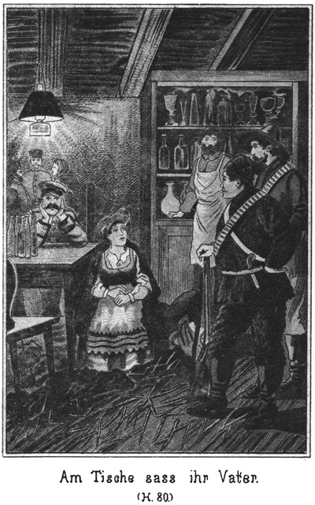»Na, so bleiben Sie in Gottes Namen Assessor! Ich habe ja gar nichts dagegen. Aber wenn mir Jemand heut sagte, daß Sie ein Fürst oder gar ein Herzog seien, so soll mich der Teufel holen, wenn ich es nicht auf der Stelle glaubte.«
»Das wäre Aberglaube. Also mein Einfluß reicht hier wohl aus, den Maharadscha und auch den Nummer Zehn frei zu bekommen. Aber wir wollen doch den Grafen und auch den früheren Derwisch ergreifen. Dazu bedürfen wir zunächst einer anderen als der russischen Hilfe.«
»Die tungusische?«
»Ja. Ich habe freilich nicht genau wissen können, wo der Maharadscha sich befindet. Noch weniger konnte ich ahnen, daß der Graf und der Derwisch in Sibirien seien. Aber ich hatte doch eine Ahnung, daß ich des Beistandes deiner hiesigen Völkerschaft bedürfe, und darum habe ich reichliche Geschenke mitgebracht, freilich ohne zu wissen, wer dieselben bekommen werde.«
»Ja, zum Beispiel die wunderbar schöne Uniform.«
Er lachte dabei. Steinbach lachte mit und antwortete:
»Nun, wenigstens habe ich mich in Beziehung auf diese Uniform nicht verrechnet. Ich berücksichtigte die Kleinheit der in Sibirien wohnenden Nomaden. Ich konnte mir auch denken, daß der Beherrscher eines hiesigen Stammes bei dem ruhigen, sitzenden Leben dick sein werde. Darum habe ich diese Uniform so zuschneiden lassen, daß sie jedem kleinen, dicken Menschen leidlich passen muß. Ich glaube, daß sie dem guten Fürsten der Tungusen wie angegossen auf dem Leibe sitzen wird.«
»Der soll sie bekommen?«
»Ja.«
»Donnerwetter! Da werden wir freilich eine gewaltige Ehre einlegen, Aber die Fürstin darf nicht leer ausgehen!«
»Nein. Sie erhält Schmucksachen und Seidenstoffe, über welche der guten Dicken die Augen übergehen werden.«
»Bravo! Diese Leute werden ihr Leben für uns lassen.«
»Sodann giebt es Tabak und Tabakspfeifen für den ganzen Stamm. Tabak mehrere Zentner.«
»Das wird ein Jubel, welcher bis zum Himmel reicht!«
»Und Rum, echten, guten, starken Rum, mehrere Fässer.«
»Das ist die Krone der ganzen Geschichte. Rum ist noch nie da gewesen unter den Tungusen. Das ganze Volk wird geradezu verrückt vor Entzücken.«
»Wenn es auch nicht gar so schlimm ausfällt, so weiß ich doch, daß meine Geschenke große Befriedigung hervorrufen werden. Darum bin ich überzeugt –«
Er wurde durch einen lauten Schrei unterbrochen, welcher sich in der Nähe hören ließ.
Semawa war, als sie bemerkt hatte, daß Steinbach mit Sam unter vier Augen sprechen wolle, langsam bei Seite gegangen. Sie betrachtete sich die Pferde Steinbachs und sodann die Wagen. An einem derselben lehnte eine schlanke, hohe Gestalt, zwar in die Tracht des Landes gekleidet aber doch etwas Fremdartiges in der ganzen Haltung zeigend. Das scharf geschnittene Gesicht, von vielen Runzeln durchfurcht, hatte eine braune, hier in Sibirien ganz seltene Farbe. Der Mann bewegte sich nicht und blickte in das Feuer, dessen Flamme ihn beschien. Er glich einer Statue.
Da kam Semawa langsam herbei, leisen Schrittes, so daß sie kaum zu hören war. Dennoch bemerkte er ihr Nahen und wendete ihr das Gesicht zu.
Noch stand sie im Schatten, welchen der nächste Wagen warf. Nun aber trat sie aus demselben heraus und ihr Gesicht war deutlich zu erkennen.
Da war es, als ob eine unsichtbare Hand den Mann um einen Schritt vom Wagen wegreiße. Er erhob die Arme und stieß jenen lauten Schrei aus, durch welchen Steinbach in seiner Rede unterbrochen worden war.
Semawa erschrak. Sie blieb stehen und heftete ihre Augen auf den Mann.
»Allah il Allah!« schrie dieser auf, indem er sich der arabischen Sprache bediente, welche auch die Muselmänner Hochasiens sprechen und verstehen. »Ists ein Wunder? Stehen die Todten auf?«
»Welche Todten?« fragte Semawa.
Er ließ die Arme wieder sinken, behielt aber sonst die Stellung bei, welche sein Entsetzen ausdrückte und antwortete:
»Kalida!«
Semawa trat sofort einen Schritt näher, bohrte ihren Blick in sein Gesicht und fragte:
»Kalida? Kanntest Du sie?«
»Ob ich sie – ob ich Dich kannte? Du bist es ja selbst. O, Allah ist groß, Allah ist allmächtig. Die Todten stehen auf, um sich zu rächen!«
Er sank langsam in die Kniee.
»Ich lebe; ich bin keine Todte,« sagte Semawa.
»Nein, Du bist keine Lebende. Du kommst aus dem Jenseits, um Dich zu rächen. Gnade, o Gnade!«
»Wie heißest Du?«
»Weißt Du das nicht mehr? Ist mein Name Dir in den Herrlichkeiten jenes Lebens verloren gegangen?«
Sie trat ganz nahe zu ihm heran und beugte sich nieder zu ihm. Sie nahm ihm die Mütze vom Kopfe. Sie sah sein geschorenes Haupt, welches er noch heut nackt trug wie in seiner indischen Heimath. Sie sah nun deutlicher den Kopf, den sie in ihrer Kindheit so oft gesehen hatte. Er war alt geworden, sehr alt, dieser einstige Diener ihres Vaters, aber seine Züge waren so charakteristisch, daß sie dieselben jetzt erkannte.
»Nena!« rief sie aus, indem sie seine Mütze aus der Hand fallen ließ.
»Du kennst mich, o, Du kennst mich!« stieß er hervor.
»Verräther!«
»Gnade, Gnade!« bat er, die Arme zu ihr erhebend. »Du bist eine Selige, Kalida. Du kannst mich nicht verdammen. Bitte Allah, daß er sich meiner erbarmen möge!«
»Ich bin nicht Kalida,« antwortete sie.
»Nicht Kalida, das Weib meines Maharadscha? Wer wärst Du sonst?«
»Ich bin Semawa, ihre Tochter.«
Da sprang er, wie von einer Spannfeder geschnellt, vom Boden auf.
»Semawa, Semawa! Allah ist groß!« schrie er laut! »Semawa ist da! Semawa ist gefunden. Sidi, Sidi, öffne Deine Ohren und vernimm die Botschaft, daß – –«
»Still, ich weiß es bereits,« sagte Steinbach, welcher herbeigetreten war und ihm nun beruhigend die Hand auf den Arm legte.
»Du weißt es? Du weißt es?« fragte der Indier.
»Ja, noch eher als Du.«
»Und Du jubelst nicht laut auf, daß alle Welt es hört? Du springst nicht vor Freude und Wonne? Semawa ist gefunden, und Du stehst hier bei ihr, als ob sie nie verloren gewesen wäre!«
Es war ihm anzusehen, daß sein Entzücken ein wirklich aus dem Herzen kommendes sei. Semawa war gerührt davon, obgleich sie ihm so viel Böses zu verdanken hatte.
»Du lebst! Du bist hier!« fuhr er fort. Wo Du bist, muß auch Derjenige sein, der mir so viel zu verzeihen hat. Dein Vater, der Maharadscha. Weißt Du von ihm?«
»Ja,« antwortete sie.
»Lebt er noch?«
»Er lebt.«
»Als Gefangener?«
»Als Verbannter. Du weißt es ja. Du bist es ja gewesen, auf dessen falsches Zeugniß hin er fortgeschleppt und verurtheilt worden ist.«
»Ich habe es bereut, längst bereut und werde Alles, Alles wieder gut machen.«
»Das kannst Du nicht.«
»Ich kann es, ich kann es!«
»Nie!«
»Ich werde beschwören, daß er nicht Saltikoff heißt, sondern daß er der verschwundene Maharadscha von Nubrida ist.«
»Kannst Du ihm und mir die Jahre zurückgeben, welche wir in tiefem Elende verbracht haben? Kannst Du das?«
Bei dieser ernsten, vorwurfsvollen Frage schwand sein Entzücken. Er senkte den Kopf und antwortete:
»Das kann ich freilich nicht. Jetzt sehe ich ein, was ich verbrochen habe. Ich kann weder bei Dir noch bei Allah Gnade finden. Hier, nimm dies! Stoße mir den Stahl in das Herz.«
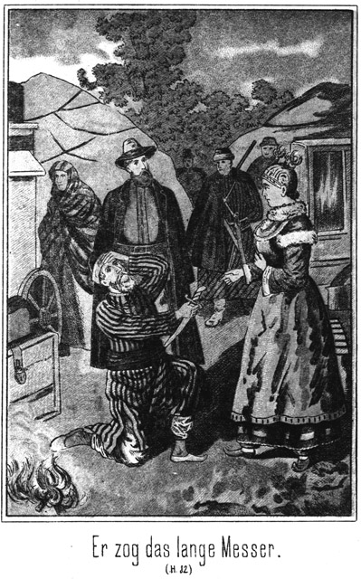Er zog das lange Messer, welches er im Gürtel stecken hatte, und hielt es ihr hin. Ihr Blick war finster auf den Zerknirschten gerichtet, fiel aber nun auf Steinbach, welcher erwartungsvoll neben demselben stand. Sofort nahm ihr Gesicht einen ganz anderen Ausdruck an. Sie schob die Hand mit dem Messer zurück und antwortete in mildem Tone:
»Es ist mir gesagt worden, daß Du bereut und gebüßt habest. Dir sei vergeben. Möge Allah Dir verzeihen, wie ich Dir verzeihe. Stehe auf.«
Da ergriff er ihr Gewand und zog es an seine Lippen.
»Du verzeihst! Du gewährst mir Gnade! So wird auch Allah nicht mit mir in's Gericht gehen!« rief er aus. »Ich bin meiner schweren Schuld ledig und werde Dir mein Leben weihen. Dir und der Befreiung dessen, dessen Gefangenschaft ich verschuldet habe.«
Alle, welche dieser Scene zugeschaut hatten, waren des Arabischen nicht mächtig. Sie wußten nicht, um was es sich handelte. Doch erkannten sie so viel, daß Nena ein Bittender sei, dessen Bitte Semawa erfüllt habe. Sie wurden gerührt von dem Ausdrucke tiefsten Dankes, mit welchem der Indier sich jetzt von der Erde erhob.
Steinbach nahm die Geliebte bei der Hand, um sie nach dem Zelte zu führen.
»Ich danke Dir!« flüsterte er ihr liebevoll zu. »Fast glaubte ich. Du würdest ihm die erbetene Gnade versagen.«
»Es war mir, als ob ich ihm nicht verzeihen dürfe; aber als ich Dein Auge so erwartungsvoll und ernst auf mich gerichtet sah, mußte ich ihm gnädig sein, ich konnte nicht anders. Möge er sehen, wie er mit seinem Gewissen fertig wird.«
Als sie an das Zelt gelangten, trat von der anderen Seite ein Tunguse heran, um mit dem Fürsten Bula, welcher noch immer vor dem Eingange stand, zu sprechen. Steinbach wollte sich rasch zurückziehen, aber Bula sagte:
»Bleibt hier! Was dieser Mann mir zu sagen hat, das dürft Ihr hören.«
Aber der Tunguse kam doch in Verlegenheit, denn er schüttelte den Kopf und meinte:
»Väterchen, Niemand darf es wissen.«
»So? Warum?«
»Weil es ein Geheimniß ist. Nur Du darfst es erfahren. Du und Karparla, die Prinzessin der Tungusen.«
Karparla stand mit ihrer Mutter dabei. Sie sagte dem Manne:
»Was ich wissen darf, dürfen diese Beiden auch wissen. Sie sind so gut wie meine Schwester und mein Bruder.«
»Aber weißt Du denn, was es betrifft?«
»Nein.«
»Wenn Du es wüßtest, würdest Du mich ganz allein hören wollen.«
»Nun, was betrifft es denn?«
»Die armen Leute.«
Unter dem in ganz Sibirien landläufigen Ausdrucke ›arme Leute‹ sind die Verbannten zu verstehen.
»Was ist mit ihnen?« fragte Karparla.
»Ja. Immer sprich!«
»Gestern kam die Botschaft, daß es einer ganzen Anzahl gelungen ist, aus den gräßlichen Bergwerken von Nertschinsk zu entfliehen.«
»Einer ganzen Anzahl? Wie ist das möglich? Das ist noch nie dagewesen.«
»Wie es ihnen gelungen ist, das weiß man jetzt auch noch nicht; aber sie haben der guten Mila Dobronitsch das Zeichen gegeben, und diese hat mich schleunigst zu Dir gesandt. Dich um Hilfe bittend.«
»Wenn Mila Dobronitsch Dich sendet, so muß ich helfen. Nicht wahr, Vater?«
Der dicke, gutmüthige Fürst zeigte in seinem Gesichte einige Verlegenheit. Es war ihm doch nicht ganz gleichgiltig, wissen zu lassen, daß er sich der entflohenen Verbannten anzunehmen pflege, doch nickte er seiner Tochter zu und antwortete:
»Ja, wir haben die Mila Dobronitsch ja dazu angestellt, daß sie uns stets benachrichtigen soll.«
»Sind die Flüchtigen denn bereits dort angekommen?« fragte Karparla den Tungusen.
»Nein, sie selbst nicht, sondern nur erst die Kunde von ihrer Flucht.«
»Wenn einmal die Kunde da ist, so werden sie auch nicht lange auf sich warten lassen. Wie steht es an der Grenze?«
»Sie ist alarmirt. Sowohl die russischen als auch die chinesischen Wächter sind auf ihren Posten. Es wird den ›armen Leuten‹ dieses Mal schwer werden, sehr schwer, die Freiheit zu erlangen.«
»So müssen wir ihnen eben helfen. Dazu sind wir da. Vater, gieb sogleich den Befehl zum Aufbruche. Wir dürfen nicht zögern!«
»Kindchen, Töchterchen, was fällt Dir ein!« antwortete er. »Wir müssen noch hier bleiben.«
»Warum?«
»Ist denn Alles geschehen, was wir hier zu thun haben?«
»Ja.«
»Hast Du vergessen, daß wir Gäste bei uns haben?«
»Ich habe es nicht vergessen, ich weiß es sogar sehr genau. Und grad weil wir diese Gäste haben, müssen wir baldigst aufbrechen, denn diejenigen Personen, denen sie nachstreben, befinden sich ja grad dort, wohin wir auch ziehen müssen, wenn wir den ›armen Leuten‹ Hilfe bringen wollen.«
»Wie?« fragte Steinbach. »Meinst Du etwa den Mückenfluß, Karparla?«
»Ja.«
»Dorthin werden die Flüchtigen kommen?«
»Ja, und darum müssen wir auch hin.«
»Ihr Alle, der ganze Stamm?«
»Alle Tungusen, welche meinem Vater zu gehorchen haben. Von den anderen Stämmen der Tungusen ist natürlich nicht die Rede.«
»So bitte ich allerdings um den schleunigsten Aufbruch.«
»Du willigst jetzt also ein, daß wir so schnell wie möglich hier fortreiten? Und vorhin warst Du doch dagegen!«
»Jetzt steht es anders als vor noch einer halben Stunde. Ich habe erfahren, was ich noch wissen wollte; meine Sachen sind angekommen und ich habe hier weiter nichts mehr zu thun, als dem Herrn Kreisdirector einen Besuch abzustatten.«
»Der wird bereits schlafen.«
»So wecke ich ihn.«
»Er wird Dir das gewaltig übel nehmen.«
»Darnach frage ich nicht. Er mag sich vorsehen, daß ich ihm nichts übel nehme.«
»Liebes Brüderchen, ich vermuthe, daß Du Dich in ihm verrechnest.«
»Inwiefern?«
»Bist Du ein Russe?«
»Nein, sondern ein Deutscher.«
»Haben die Deutschen dem Russen Etwas zu befehlen, Brüderchen?«
»Nein,« antwortete er, indem er sich Mühe gab, bei dieser naiven Frage des Naturkindes ernst zu bleiben.
»So hast Du also dem Kreisdirector auch nichts zu befehlen.«
»In meiner nationalen Eigenschaft als Deutscher freilich nicht.«
»Und was ist mehr, ein Assessor oder ein Kreishauptmann? Sage es mir doch!«
»Allemal steht der Kreishauptmann höher.«
»So ist er also mehr als Du?«
»Ja.«
»Und Du willst ihn wecken? Thue es nicht. Er könnte sehr zornig darüber werden. Er ist über Vieles, was jetzt geschehen ist, sehr aufgebracht, und es sollte mir leid thun, wenn Du die Thaten anderer Leute zu büßen hättest.«
»Ich danke Dir für Deine theilnehmende Warnung, liebes Schwesterchen; aber ich habe keine Lust, mich vor dem Kreishauptmanne in Acht zu nehmen. Schau, unser Freundchen Sam ist viel weniger als ich, er ist nicht Assessor, sondern nichts als ein einfacher Privatmann. Aber obgleich er nur ein Privatmann ist, also irgend einen Rang nicht besitzt, wirst Du nicht bemerkt haben, daß er sich vor dem Kreishauptmanne gefürchtet hat.«
»Das ist wahr. Auch Deine beiden anderen Freunde fürchteten sich nicht.«
»Du siehst daraus, daß Du in Beziehung auf mich ganz ruhig sein kannst. Ich muß zu ihm, und wenn er schläft, so werde ich ihn wecken. Will er sich das nicht gefallen lassen, so werde ich ja wohl erfahren, wie er die Störung aufnimmt.«
»So gehe wenigstens nicht allein, sondern nimm noch Jemand mit!«
»Das werde ich allerdings thun. Ich bitte sogar Euch Alle, mit mir zu kommen.«
»Alle, wirklich Alle?« fragte sie verwundert.
»Ja, Du, Deine Eltern, Semawa, Sam und auch Jim und Tim.«
»Warum so viele? Warum auch wir drei Frauen mit, die wir Dich doch wohl kaum werden beschützen können?«
»Es handelt sich nicht um meinen Schutz, sondern darum, daß Ihr erfahren sollt, was ich mit ihm zu verhandeln habe. Ich bitte also, Euch fertig zu machen. Ich werde mich nur für wenige Augenblicke entfernen und Euch dann abholen!«
Er ging hinaus zu einer der Kibitken. Er stieg auf den Wagen, öffnete einen darauf befindlichen Koffer, entnahm demselben verschiedene Sachen und stieg dann wieder ab. Nun begab er sich mit diesen Sachen nach dem Zelte, in welchem er vorhin sein Wiedersehen mit Semawa gefeiert hatte. Er band den Eingang von innen zu, um nicht überrascht zu werden.
Das Zelt war noch von vorhin erleuchtet. Die Sachen, welche er aus dem Wagen geholt hatte, bildeten einen vollständigen Militäranzug mit Säbel und allem Zubehör. Er legte seine bisherigen Kleider ab und den Anzug an. Niemand, selbst Sam nicht, hatte von dem Vorhandensein dieser Uniform eine Ahnung gehabt.
Er setzte anstatt des Hutes, welchen er vorher getragen hatte, eine hohe Lamafellmütze auf, welche aber mit einem Ueberzuge versehen war, den er darüber ließ. Dann zog er einen langen, weiten Ueberrock aus grauem Stoffe an, der ihn bis herab auf die Sporen reichte. Der Degen wurde angekoppelt, so daß auch dieser nicht zu sehen war.
Nun verließ er das Zelt wieder, die abgelegten Sachen in demselben zurücklassend.
Die Anderen warteten bereits auf ihn. Da sie vor dem Zelte standen und er also dasselbe, welches erleuchtet war, nicht zu betreten brauchte, und da auch die Lagerfeuer wieder nur noch nothdürftig klimmten, so fiel die Veränderung, welche mit seinem Aeußeren vorgegangen war, gar nicht auf. Alle die vorhin genannten Personen bestiegen die Pferde und ritten nun nach dem Regierungsgebäude.
Als sie dort angekommen waren, sahen sie noch Licht in dem Wohnzimmer. Der Hufschlag ihrer Pferde war gehört worden, denn es trat eine männliche Gestalt an das erleuchtete Fenster, um herabzuschauen.
»Der Kreissecretär,« sagte Steinbach. »Er ist noch beim Kreishauptmanne, bei welchem er sich jedenfalls gemeldet hat. Das ist mir sehr lieb, denn da brauche ich ihn nicht holen zu lassen. Es sind nun alle Personen beisammen, deren Anwesenheit ich wünsche.«
Der Kreissecretär öffnete das Fenster.
»Will Jemand herein?« fragte er.
»Ja,« antwortete Steinbach.
»Wer ists?«
»Steinbach.«
»Ah Du! Ists so nothwendig, daß Du noch in der Nacht kommst?«
»Ich habe morgen keine Zeit dazu.«
Der Secretär wendete sich vom Fenster ab und sprach in das Innere der Stube hinein. Dann rief er herab:
»Und der Herr Kreishauptmann hat jetzt keine Zeit. Das soll ich Dir sagen.«
»Das geht mich nichts an. Ich bitte, zu öffnen.«
»Er will nicht.«
»So ersuche ich Dich, es zu thun. Ich bringe Dir die frohe Botschaft, welche ich Dir versprochen habe. Morgen früh könnte es bereits zu spät dazu sein.«
Dies schien zu wirken, denn der Secretär wendete sich abermals in die Stube zurück, sprach eine Weile mit den in derselben befindlichen Personen und meldete dann herab:
»Auf meine besondere Fürsprache will der Herr Kreishauptmann es ausnahmsweise erlauben. Ich werde also hinabkommen, um Dir zu öffnen.«
Er schien anzunehmen, daß nur Steinbach allein zum Kreishauptmanne wollte. Daß er sich jetzt noch in so später Stunde bei demselben befand, war leicht erklärlich. Als er sich von Steinbach getrennt hatte, um heimzureiten, hatte er in dem Wohnzimmer seines Vorgesetzten Licht bemerkt. Da es eben das Wohn- und nicht ein anderes Zimmer war, so ließ sich mit Gewißheit annehmen, daß der Gebieter von Platowna noch wach sei und sich im Kreise seiner Häuslichkeit befinde. Da es für den Secretär Pflicht war, seine Rückkehr von der Reise so bald wie möglich zu melden, so zögerte er keinen Augenblick, noch jetzt zu seinem Vorgesetzten zu gehen. Er stieg also ab, band sein Pferd an und klopfte.
Der Kreishauptmann befand sich in Gesellschaft seiner Frau und seines Sohnes. Sie hatten noch nicht an's Schlafen gedacht. Sie Alle waren zu sehr erregt von dem Geschehenen.
Zwar waren sie dem Secretär nicht freundlich gesinnt, aber seine Ankunft war ihnen jetzt doch willkommen. Sie hofften von seiner Energie und Ueberlegenheit, von welcher sie innerlich sehr überzeugt waren, ohne dies freilich jemals hörbar auszusprechen und zuzugeben, daß er die Fremden, die ein so ungewöhnliches Benehmen gezeigt hatten, zu Paaren treiben werde. Darum wurde er sehr gern vorgelassen.
Natürlich ging es nun an ein Erzählen, wobei, wie leicht zu denken, Alles so gerichtet und gefärbt wurde, daß der Kreishauptmann Recht haben mußte. Alles, was nicht verändert dargestellt werden konnte, wurde verschwiegen.
Der Kreissecretär war kein Freund von unnöthigen Worten. Er hörte schweigend zu. Erst als die Drei sich vollständig ausgesprochen hatten, stand er auf und ging nachdenklich einige Male in der Stube auf und ab. Dann blieb er kopfschüttelnd stehen und sagte:
»Väterchen, was Ihr mir da erzählt habt, das kann ich nicht begreifen. So Etwas kann doch gar nicht geschehen.«
»Es ist aber doch geschehen!« raisonnirte der Kreishauptmann.
»So muß es anders sein, als Ihr es mir berichtet habt.«
»Gar nicht anders. Wir haben uns ganz genau an die Wahrheit und an die Thatsachen gehalten.«
»Da Du das versicherst, so muß ich es freilich glauben. Aber dennoch ist mir diese ganze Sache im höchsten Grade unklar. Es muß Etwas vorhanden sein, was ich noch nicht weiß, was Du mir verschwiegen hast.«
»Nichts, gar nichts. Ich habe Dir Alles gesagt.«
»So begreife ich Euch nicht. Warum habt Ihr Euch denn das Alles gefallen lassen?«
»Mußten wir nicht?«
»Warum mußtet Ihr?«
»Wegen dem verdammten Passe, den dieser dicke Hallunke hatte, und wegen dem Curier, welcher vorher angekommen war, um mir zu melden, daß ein Reisender Namens Steinbach ankommen werde, welcher mit ganz besonderer Rücksicht aufzunehmen sei.«
»So! Das ist ganz gut. Aber wenn mir ein Mensch noch so dringend empfohlen worden ist, sobald er mich kränkt und fortgesetzt beleidigt, sobald er sich sogar, wie es hier geschehen ist, gegen die von Gott eingesetzte Behörde, gegen den Vertreter des Czaren vergeht, dann nehme ich auf diese Empfehlung keine Rücksicht mehr. Es ist die Pflicht eines jeden Beamten, solche Menschen zu bestrafen. Warum habt Ihr das nicht gethan?«
»Eben wegen ihrer Legitimation, und weil sie keine Russen sind.«
»Das geht mich den Teufel an! Und wenn sie Hottentotten wären, würde ich sie unnachsichtlich bestrafen. Das Völkerrecht ist nicht dazu da, den Menschen die Erlaubniß zu geben, in jedem anderen Lande Thaten zu begehen, welche in ihrer Heimath bestraft werden. Wer gegen die Gesetze sündigt, gleichviel, ob er ein In- oder ein Ausländer ist, verfällt dem betreffenden Strafgesetzbuche.«
»Das klingt ganz gut. Aber diese Kerls machen sich aus dem Strafgesetzbuche so wenig, wie das Pferd aus dem Frosche.«
»Du hast Dich wohl falsch ausgedrückt?« fragte der Kreissecretair lächelnd.
»Wieso?«
»Du wolltest sagen, daß sie sich aus Euch nichts gemacht haben.«
»Oho!«
»Nun, aus dem Strafgesetzbuche müssen sie sich wohl Etwas machen, falls der Beamte die nöthige Energie besitzt, es zur Geltung zu bringen.«
»Meinst Du, daß wir es an Energie haben fehlen lassen?«
»Das meine ich freilich.«
»So irrst Du sehr.«
»Ich kann nicht irren, denn diese Männer laufen ja noch frei herum und müßten sich doch unbedingt in Gefangenschaft befinden.«
»Das ist leicht gesagt. Wer soll sie arretiren lassen?«
»Du natürlich!«
»Schön! Und wenn sie nicht gehorchen? Wenn sie sich nicht einstecken lassen?«
Der Kreissecretair fuhr einige Schritte zurück und machte ein Gesicht, wie es erstaunter gar keins geben kann.
»Was?« rief er aus. »Sich nicht einstecken lassen! Höre ich denn wirklich recht?«
»Jawohl hörst Du recht.«
»So zwingt man sie.«
»Womit?«
»Heiliger Iwan von Ostrowa! Giebt es denn keine Polizei hier!«
»Einige versoffene Hallunken, ja. Wenn man sie braucht, hocken sie in irgend einem Winkel, um ihren Rausch auszuschlafen.«
»So weckt man sie mit der Knute auf. Das werden sie sich merken. Aber auch davon abgesehen – giebt es denn kein Militair hier? Steht nicht hier in Platowa eine ganze Sotnie Kosaken?«
Eine Sotnie ist eine Schwadron oder Kompagnie von hundert Mann. Der Befehlshaber derselben ist der Sotnik oder Rittmeister. Der Kreishauptmann antwortete:
»Kosaken haben wir hier, ja; aber was kann das nützen?«
»Was es nützen könne, fragst Du? Nimm es mir nicht übel, aber ich weiß in diesem Augenblicke wirklich nicht, ob ich verrückt bin oder ob Du im Fieber redest. Um dem Gesetze Respect zu verschaffen, dazu sind sie da. Oder ist das etwa nicht der Fall?«
»Jawohl, dazu sollte das Militair eigentlich vorhanden sein; aber was vermögen unsere Kosaken gegen solche Menschen!«
»Was? Hundert Kosaken gegen drei Ausländer vermögen nichts?«
»Gegen diese Drei wirklich nicht. Die Kerls greifen bei jedem Worte, welches ihnen nicht gefällt, an die Gewehre.«
»Nun, so greifen die Kosaken auch zu den Waffen. Da wird man wohl sehen, wer der Sieger bleibt. Ich möchte diese Menschen, vor denen sich hundert Kosaken fürchten müssen, doch einmal sehen. Ist ihr Aussehen denn gar so schrecklich?«
»Sie sehen ganz so aus wie Straßenräuber und Mordbrenner. Einer von ihnen, der Schlimmste, ist kurz und dick. Die beiden Anderen sind sehr lang und dürr.«
»So! Da hab ich sie doch vielleicht bereits gesehen.«
»Wo?«
»Im Zelte des Tungusenfürsten.«
»Da warst Du bereits heut Abend?«
»Ja.«
»Bevor Du zu uns kamst? Was hattest Du dort zu thun?«
»Ich mußte jenem Steinbach, von welchem Du vorhin sprachst, seine Sachen übergeben.«
»Steinbach? Ah! Du hast den Mann gesehen?«
»Gesehen und auch mit ihm gesprochen.«
»Wo?«
»Auf der Station Boliwa. Er hielt dort mit seinen Wagen und Pferden, deren Beaufsichtigung er mir bittweise übergab, da ich in derselben Richtung reiste.«
»Wie? Du hast ihn bedient?«
»Bedient! Wer hat das gesagt?«
»Du selbst. Du hast seine Sachen beaufsichtigt, ihn also bedient.«
»O nein. Er mußte schnell vorwärts nach hier, nach Platowa, und war daher gezwungen, seine Begleitung, welche ihm nicht so schnell zu folgen vermochte, zurückzulassen. Er bat mich um die Erlaubniß, daß sich dieselbe mir anschließen dürfe. Das ist Alles. Habe ich also seinen Diener gemacht?«
»Nein, wenn Du es so nimmst.«
»Ich habe sogar das Vergnügen gehabt, nicht allein reisen zu müssen.«
»Warum rittest Du nicht sofort mit ihm anstatt mit seiner Begleitung?«
»Weil ein Kreissecretair bei seiner Besoldung sich keine solchen Rennpferde kaufen kann, wie dieser Steinbach besitzt.«
»So ist er reich?«
»Es scheint so.«
»Ist er auch so ein Kerl wie die Drei, welche vor ihm hier angekommen sind?«
»Ich habe an ihm eine wirklich prachtvolle, gebieterische Erscheinung bewundert. Er ist mir vorgekommen wie ein Mann, mit dem nicht zu spaßen ist.«
»Ah! Also doch auch!«
»Was? Ein rücksichtsloser Mensch ist er auf keinen Fall. Er hat mich mit aller Würde und Freundlichkeit behandelt.«
»So! Und jetzt ist er bei dem Tungusenfürsten und hat natürlich Alles erfahren, was hier geschehen ist?«
»Vermuthlich, obgleich er gegen mich kein Wort davon erwähnt hat.«
»Nun, so werden wir morgen jedenfalls Gelegenheit haben, uns ein Urtheil über ihn zu fällen. Gegen Dich ist er natürlich höflich gewesen, weil er Dich um eine Gefälligkeit bitten mußte. Ich vermuthe sehr, daß er morgen ganz andere Seiten anschlagen wird.«
»So schlage ich ganz denselben Ton an wie er. Und was diese drei Menschen betrifft, welche hier in einer so gradezu unbegreiflichen Weise aufgetreten sind, so sollen sie es nur unterlassen, dasselbe an mir zu versuchen.«
»Was würdest Du thun?«
»Ich würde sie festnehmen und auspeitschen lassen, ganz so, wie sie es verdienen.«
»Hm! Schau sie Dir nur erst an!«
»Das ist nicht nöthig. Ich kenne meine Pflicht und werde sie gegen einen Jeden erfüllen, er mag aussehen, wie er nur immer wolle. Aber horch, da höre ich Pferde. Wer mag kommen? Vielleicht ein Courier.«
Er trat an das Fenster und blickte hinab. Dann meldete er:
»Es sind mehrere Reiter. Sie bleiben hier halten. Soll ich fragen, was sie wollen?«
»Ja, frage sie!«
Nun erfolgte das bereits erwähnte Gespräch durch das Fenster. Sodann nahm der Kreissecretair ein Licht und ging hinab, um die Thür zu öffnen.
Als während dieser kurzen Zeit die andern Drei allein waren, sagte der Kreishauptmann:
»Der hat gut Reden. Er weiß nicht Alles.«
»Er wird es aber erfahren. Was thun wir dann?« fragte sein Sohn, der Rittmeister.
»Wir müssen dafür sorgen, daß er es nicht erfährt. Diese drei Kerls müssen verschwinden. Laßt nur den Morgen herankommen, dann werden wir handeln.«
»Und was mag dieser Steinbach wollen?«
»Quartier natürlich.«
»Giebst Du es ihm?«
»Ich muß.«
»Verdammt!«
»Ja, mir ist es ebenso unangenehm; aber es läßt sich nichts dagegen thun. Wehe ihm aber, wenn er etwa glaubt, ebenso rücksichtslos sein zu können wie seine drei Leute. Dann zeige ich ihm die Zähne!«
»Und ich ihm meinen Degen. Es ist gerathen, sich überhaupt gleich vom ersten Augenblicke an gegen ihn so zu benehmen, daß er Respect bekommt.«
»Richtig! Thun wir das!«
»Wir bleiben sitzen. Wir stehen gar nicht auf, wenn er eintritt. Er mag die Suppe ausessen, welche ihm seine drei Kerls eingebrockt haben. Still; er kommt! Sapperment! Das klingt nicht wie nur Einer. Das klingt grad so, als ob eine ganze Schwadron angestiegen käme.«
Ja, es war freilich nicht Steinbach allein. Auch der Kreissekretair hatte sich gewundert, als er anstatt einer volle sieben Personen vor der Thür stehen sah, als er öffnete, darunter sogar dreie weiblichen Geschlechtes.
»Hoffentlich wollen doch nicht diese alle herein?« fragte er erstaunt.
»Alle,« antwortete Steinbach, welcher voran stand und vorsichtig den Fuß auf die Schwelle setzte, damit die Thür nicht zugemacht werden könne.
»Das geht nicht.«
»Warum nicht?«
»Ich habe nur die Erlaubniß für Dich allein erhalten.«
»Und ich kam nur in der Absicht, mit allen meinen Begleitern hier einzutreten.«
»Diese Absicht geht mich nichts an!«
»Und mich die Erlaubniß nicht, welche Du erhalten hast.«
»So bleibst auch Du draußen!«
Er wollte die Thür schließen, was jedoch nicht ging, weil Steinbach mit dem Fuße dazwischen stand.
»Ich weiche nicht.«
»So zerquetsche ich Dir den Fuß. Oder willst Du Dir den Eingang mit Gewalt erzwingen?«
»Unter Umständen, ja.«
»Also Haus- oder gar Landfriedensbruch!«
»Nenne es, wie Du willst!«
»Weißt Du, was darauf folgt?«
»Ja, nichts.«
»Oho! Du würdest sofort erfahren – – –«
»Unsinn!« rief da der dicke Sam. »Wir wollen von Dir gar nichts erfahren, sondern vielmehr Du sollst von uns hören. Meinst Du etwa, wir hätten große Lust, hier unter der Thür mit Dir einige Dutzend Strümpfe zu stricken? Dazu giebt es keine Zeit. Mach Platz!«
»Nicht einen Schritt! Wer will es wagen, hier einzudringen?«
Er rief diese Frage in drohendem Tone aus und stellte sich mitten in die Thüröffnung, damit Niemand eintreten könne.
»Ich,« antwortete Sam. »Geh zur Seite!«
»Nur über mich hinweg geht der Weg in das Haus.«
»Unsinn! Ueber Dich hinweg! Das fällt uns gar nicht ein. Wir machen uns schon auf andere Weise Platz. Gieb also Raum, liebes Brüderchen!«
»Nein!«
»Nun, so machen wir uns welchen. Komm, hopp Dich! Da, hier stehst Du! Nun schau zu, wie hübsch wir hinein gehen.«
Der Dicke hatte den Kreissecretair bei den Hüften hüben und drüben erfaßt, hoch empor gehoben, sich dann schnell umgedreht und ihn sodann außen vor dem Gebäude niedergelassen. Dort stand nun der Beamte und sah allerdings, daß die sieben Personen nunmehr ungehindert in das Haus traten.
»Donnerwetter!« fluchte er ergrimmt. »Das war der Dicke! Also so treibt er es! Jetzt kann ich fast begreifen, daß es ihm gelingt, die Leute einzuschüchtern. Aber in mir soll er sich im höchsten Grade geirrt haben. Ich arretire die ganze Gesellschaft, sperre sie ein und lasse sie am Morgen auspeitschen.«
Gesagt, gethan! Er rannte über den Platz hinüber nach dem Gebäude, welches als Kaserne diente. Im Wachtzimmer waren die Leute munter. Er ließ schnell noch Mehrere wecken, welche sich schleunigst bewaffnen mußten, und noch waren nicht zwei Minuten vergangen, seit Sam sich an ihm vergriffen hatte, als er auch bereits mit zehn Kosaken die Treppe emporstieg, um die Arretur auszuführen.
Der wackere Sam war, den Anderen voran, in das Wohnzimmer des Kreishauptmannes eingetreten. Steinbach hatte den Letzten gemacht, innerlich höchst belustigt über das resolute Vorgehen des dicken Deutschen.
Als diese sieben Personen eintraten, wollte der Kreishauptmann vor Schreck oder wohl auch vor Zorn aufspringen. Er besann sich aber noch rechtzeitig, daß er ja mit seinem Sohne übereingekommen sei, sitzen zu bleiben. Darum behielt er seinen Platz, machte aber die grimmigste Miene, die ihm möglich war.
»Was wollt Ihr?« fragte er.
»Dich besuchen,« antwortete Sam mit der größten Freundlichkeit.
»Das werde ich mir verbitten!«
»O nein. Du wirst berücksichtigen, daß ich Dir hier diesen Herrn vorzustellen habe.«
Er deutete dabei auf Steinbach.
»Wie heißt der Mann?«
»Sein Name ist Steinbach.«
»Ach so! Was will er von mir?«
Steinbach trat vor. Er hatte seine Mütze nicht abgenommen, sondern auf dem Kopf behalten.
»Was ich von Dir will,« sagte er langsam und mit schwerer Betonung. »Zunächst will ich, daß Du höflichst aufstehest, wenn Du von Leuten besucht wirst.«
»Ob ich daß thue, das kommt ganz auf meinen Gefallen an!« antwortete der Kreishauptmann, indem er das eine Bein gemächlich über das andere legte.
»Und auf die Personen, welche zu Dir kommen. Nicht?«
»Allerdings.«
»Nur wohlan! Ich gehöre zu den Personen, welche gewöhnt sind, höflich empfangen zu werden, folglich wirst Du Dich also erheben.«
»Oho!«
»Sofort!«
»Hast Du etwa die Mütze abgenommen?«
»Vor einem Menschen, wie Du bist, thue ich das freilich nicht. Du aber wirst meinem Befehle augenblicklich nachkommen!«
»Befehl? Mensch, was fällt Dir ein!«
Da trat Steinbach näher an ihn heran, blitzte ihn aus förmlich sprühenden Augen an und gebot:
»Auf!«
Es war nur dieses eine Wort, welches donnernd erklang, aber jetzt konnte der Beamte nicht widerstehen. Er fuhr vom Stuhle empor, als ob er durch einen Flaschenzug aufgerissen worden sei.
»Kreuzdonnerwetter!« knirschte sein Sohn, indem er Steinbach mit wüthigen Blicken musterte.
Dieser aber wendete sich ihm zu und fragte:
»Und wer ist der Laffe, welcher hier noch sitzen bleibt?«
»Laffe?« schrie der Rittmeister. »Das sollst Du mir entgelten. Ich bin Offizier, ich bin der Sohn des Kreishauptmannes, Rittmeister im Dienste des Czaren und Militaircommandant von Platowa.«
»So stehe auf!«
Diese drei Worte waren in einem Tone gesprochen, wie der Rittmeister ihn noch nie gehört hatte. Ohne es eigentlich zu wollen, fuhr er ebenso schnell vom Stuhle auf wie sein Vater.
Da ertönten draußen Schritte. Man hörte Gewehrkolben auf den Boden stoßen, und dann wurde die Thür geöffnet. Der Kreissecretair trat ein.
Er warf einen zornigen Blick in der Stube umher, trat auf Sam zu, legte ihm die Hand auf die Achsel und sagte:
»Mann, Du bist arretirt!«
»Von wem?« fragte der Dicke.
»Von mir!«
Sam machte das eine Auge zu und visirte ihn mit dem anderen vom Kopfe bis zu den Füßen herab, dann brach er in ein lautes, schallendes Gelächter aus.
»Mensch, was lachst Du!« rief der Kreissecretair. »Bist Du verrückt!«
Sam aber drehte sich zu den beiden langen Jägern um und fragte lachend:
»Tim, arretirt, hast Du es gehört?«
» Well!« lachte der Gefragte mit.
»Und Jim, wie kommt Dir das vor?«
»Wundervoll,« antwortete Jim, indem er in das Lachen der beiden Andern aus voller Kehle einstimmte.
»Und zwar von Dem da!« rief Sam, mit dem Finger auf den Secretair zeigend.
»Von Dem da!« secundirte Jim.
»Von Dem da!« stimmte Tim ein.
So standen alle Drei, mit den Zeigefingern auf den Kreissecretair deutend und dabei so lachend, daß der dicke Fürst auch mit angesteckt wurde. In Folge dessen begann seine noch dickere Kalyna auch, zu lachen, daß ihr der Bauch noch mehr wackelte als ihm der seinige. Da konnte Karparla sich nicht zurückhalten; sie lachte mit, und ihre Lustigkeit ging nun auch auf die neben ihr stehende Semawa über, welche sich vergeblich bemühte, ernsthaft zu bleiben.
Draußen vor der offenen Thür standen die zehn Kosaken, die Gewehre bei Fuße. Sie konnten die ganze Stube übersehen. Sie erblickten den ihnen so wohl bekannten Tungusenfürsten und dessen Gemahlin, welche Beide sehr gut bei ihnen angeschrieben waren. Diese zwei dicken Personen lachten, daß ihnen die Thränen in großen Tropfen über die Wangen liefen. Der dicke Sam bildete ebenso wie sie ein urkomisches Bild, seine beiden Kameraden nicht minder. Kosaken sind äußerst gemüthliche Leute. Erst begann Einer von ihnen zu lachen, der Zweite folgte, sodann der Dritte, der Vierte, Fünfte und Sechste, und endlich brüllten alle Zehn aus vollen Hälsen.
So gab es eine Lachfuge, wie sie hier noch nie gehört worden war. Wenn Einer einmal alle Kraft zusammen nahm, um aufzuhören, so wurde er im nächsten Augenblicke wieder in diese Epidemie hineingerissen. Der Bauch that Jedem und Jeder weh, und endlich schrie der dicke Fürst in heller Angst aber immer dabei laut lachend:
»Um Gotteswillen, hört auf, hört auf. Ich kann nicht mehr! Ich zerplatze! Mein Bauch, mein Leib, mein Bauch!«
Er hielt sich den Bauch mit beiden Händen, machte ein beispiellos jammervolles Gesicht und lachte doch immer weiter.
Seine Gemahlin lachte, daß es förmlich pfiff. Sie blickte sich in ihrer Herzensangst nach einem Stuhle um, auf den sie sich setzen könne, denn sie war dem Krampfe nahe. Dort stand Einer, vier Schritte weit hinter ihr. Sie wollte hin; aber das verteufelte Lachen raubte ihr die Kraft. Zwei Schritte konnte sie noch fertig bringen; dann aber war es aus. Sie setzte sich mit einen kräftigen Plumps auf den Boden nieder, so dick und rund wie sie war; aber aus dem Lachen kam sie doch nicht heraus.
»Hilfe, Hilfe! Ich ersticke, ich zerplatze!« schrie sie, und doch lachte und lachte sie dabei immer weiter.
Steinbach wendete eine fast übermenschliche Selbstbeherrschungskraft an, um nicht mitzulachen. Es gab ihm einige derbe Stöße von innen heraus, aber es gelang ihm doch noch, möglichst ernst zu bleiben.
Der Kreishauptmann, sein Sohn und seine Frau standen da, als ob sie der Donner gerührt habe. Sie machten wahre Schafsgesichter.
Der Kreissecretair wußte gar nicht, wie ihm geschah. Es war ihm wie Lachen und Weinen, wie Fluchen und Beten, wie Zanken und Toben zu gleicher Zeit. Seine Mienen spielten in den Reflexen aller möglichen Gemüthsbewegungen. Er wurde bald blaß bald roth und wartete auf eine Lachpause, um dann fürchterlich loszudonnern. Aber diese Pause ließ außerordentlich lang auf sich warten.
Nach und nach, als der lustigen Gesellschaft die Kräfte vergingen und der Athem zu mangeln begann, wurde das Lachen leiser. Zuletzt kamen nur noch einzelne Salven und Stöße zum Vorscheine, und endlich war die allgemeine Abspannung so groß, daß sich nur hier und da noch ein tiefer, tiefer aber schwächlicher Seufzer hören ließ.
»Gott sei Dank!« pustete der Fürst. »Ich schwitze wie ein Braten! So Etwas ist mir noch nicht passirt. Wie ist Dir zu Muthe, meine gute Kalyna?«
»Ich – ich – ich – bin todt!« stöhnte sie als Antwort.
»Wärt Ihr doch Alle daran gestorben!« zürnte jetzt der Kreissecretair. »Ich arretire diesen Menschen hier und erhalte als Antwort ein Gelächter, welches die gröbste Beleidigung der Staatsgewalt enthält. Ich werde Euch dafür nach Noten fuchteln lassen.«
»Fuchteln! Fuchteln! Habt Ihrs gehört?« fragte Sam, indem er sich Mühe gab, nicht abermals in ein lautes Gelächter auszubrechen.
»Ja, gefuchtelt wirst Du, geknutet!« drohte der Secretair. »Und je lustiger Dir das jetzt vorkommt, desto mehr Hiebe wirst Du erhalten. Du hast Dich an mir vergriffen. Nehmt ihn hinaus zu Euch!«
*
Dieser Befehl war an die Kosaken gerichtet. Keiner derselben bewegte sich. Sam war ja Derjenige, welcher ihren Kameraden, Nummer Zehn, gegen den Rittmeister in Schutz genommen hatte. Jetzt sollten sie ihn arretiren? Hatte überhaupt der Kreissecretair ihnen Etwas zu befehlen?«
»Vorwärts!« schrie er sie an.
Sie bewegten dennoch kein Glied. Da aber commandirte ihr directer Vorgesetzter, der Rittmeister:
»Marsch, herein! Nehmt den Kerl fest!«
Nun erst trat der Unteroffizier, welcher sie anführte, zur Thür herein, und die Andern schickten sich an, ihm zu folgen.
»Halt!« rief da Sam, indem er mit dem Kolben seines Gewehres kräftig auf den Fußboden stampfte. »Wer mich anrührt, dem schieße ich eine Kugel in den Kopf! Nun versucht es, mich zu arretiren!«
Die Leute blieben augenblicklich wieder stehen.
»Vorwärts! Beim Teufel, vorwärts, Ihr Hallunken!« schrie der Rittmeister.
Aber vergebens. Er griff zur Knute, um sie mit Hieben anzuspornen. Da aber warnte Sam:
»Höre, Bürschchen, Du hast schon zweimal Deine eigene Knute geschmeckt. Willst Du zum dritten Male Hiebe haben?«
Da hielt es der »Commandant von Platowa« für das Beste, schleunigst zurückzutreten.
»Memmen!« rief der Kreissecretair den Kosaken zu. »Auch Ihr sollt bestraft werden. Darauf macht Euch gefaßt. Uebrigens gilt die Arretur nicht nur einer Person, sondern Alle, welche hier ohne Erlaubniß eindrangen, sind meine Gefangenen. Sie haben dem Militair sofort in vollstem Gehorsam nach dem Gefängniß zu folgen!«
Er hatte das in würdevollem, gebieterischem Tone gesprochen.
»Wir Alle also?« sagte Sam in höchst freundlichem Tone. »Weißt Du auch, Brüderchen, was Du thust?«
»Ich weiß es ganz genau.«
»Schön! Da laß uns abführen!«
»Sogleich. Vorwärts!«
Dieser Befehl galt den Kosaken, welche freilich keine Miene machten, ihn zu erfüllen.
»Siehst Du, Brüderchen,« lachte Sam, »daß es nicht so leicht ist, Leute zu arretiren, welche gekommen sind, Euch selbst zu arretiren!«
»Uns? Uns?«
»Ja.«
»Bist Du verrückt!«
»O nein, aber ein lustiger Kauz bin ich allerdings, wenn ich mit so vortrefflichen Männern zusammenkomme, wie Du bist.«
»Mensch, ich lasse Dich peitschen, bis Dir das Blut am Leibe niederläuft!«
»Thue das nicht, denn ich bin am ganzen Leibe so empfindlich, daß ich sehr leicht ungemüthlich werden könnte. Uebrigens wird mir da Herr Steinbach bestätigen, daß wir allerdings gekommen sind, eine Arretur vorzunehmen.« Als jetzt der Secretair Steinbach fragend anblickte, trat dieser, welcher bis jetzt hinter den Anderen gestanden hatte, hervor. Er sagte in sehr ernstem Tone:
»Wir haben jetzt eine Scene erlebt, welche man unerklärlich nennen könnte, wenn Einem nicht die hierbei giltigen Verhältnisse bekannt wären. Mein guter Sam hatte allerdings einiges Recht, zu lachen, da wir in Wirklichkeit gekommen sind, eine Arretur vorzunehmen.«
»So sag, wen Du arretiren willst!« forderte der Kreissecretair auf.
Es war ein halb ironischer und halb bedenklicher Blick, welchen er dabei auf Steinbach warf. Dieser antwortete, auf die drei Betreffenden zeigend:
»Den Kreishauptmann, seinen Sohn und seine Frau.«
»Was! Die ganze Familie?«
»Ja.«
»Weshalb?«
»Wegen verschiedener Verbrechen und Vergehen.«
»Wer bist Du denn, daß Du davon redest, einen Kreishauptmann und einen Offizier des Kaisers arretiren zu wollen? Bist Du ein Polizist oder Justizbeamter?«
»Nein, aber das bin ich.«
Er zog schnell den Ueberzug von der Mütze.
Der Kreissecretair wich schnell bestürzt einen Schritt zurück, denn das Lammfell war mit goldig glänzenden, militairischen Insignien geschmückt.
Als aber Steinbach gleich darauf auch den Ueberrock abwarf, so war keiner der Anwesenden mächtig, einen Ruf des Schreckes, der Angst oder der freudigen Ueberraschung zu unterdrücken, denn er stand da in der brillanten Uniform eines russischen Generals der Cavallerie, die breite, mächtige Brust mit zahlreichen, funkelnden Orden geschmückt.
»Alle Teufel!« schrie der Rittmeister und retirirte in den äußersten Winkel der Stube.
Die Kosaken unter der Thür und draußen vor derselben ließen sich demüthig auf ihre Kniee nieder.
Der Kreishauptmann konnte sich nicht aufrecht erhalten; er sank auf den Stuhl nieder, ebenso seine Frau. Beide ließen ein angstvolles Stöhnen hören, die Frau allerdings nicht im Bewußtsein einer eigenen Schuld, sondern in der Vorahnung, daß ihr Mann und Sohn nicht unschuldig seien.
»Sapperment!« stieß Sam hervor. »Und das wollte ein Assessor sein!«
Sein Auge suchte Semawa. Er fand bei ihr nicht die mindeste Beachtung, denn ihre Augen waren förmlich strahlend auf die glänzende Erscheinung des Geliebten gerichtet.
Der Kreissecretair stand da, als ob ihn der Schlag getroffen habe. Er starrte Steinbach an, als ob dieser eine ganz überirdische Erscheinung sei. Doch war er ein zu guter Beamter, als daß es ihm nicht rasch gelungen wäre, seine Fassung wieder zu erlangen.
»Herr, verzeihe Deinem demüthigen Diener! Das habe ich nicht gewußt!« Indem er diese Bitte und Entschuldigung aussprach, kreuzte er die Arme über die Brust und bückte sich so tief, daß sein Kopf fast den Boden berührte.
»Stühle für uns!« befahl Steinbach.
Sofort riß der Secretair alle vorhandenen Stühle herbei, und als dieselben nicht reichten, herrschte er die Kosaken an:
»Ihr Hunde, habt Ihr es nicht gehört! Lauft in die anderen Zimmer, und holt Sessel herbei! Schnell, schnell, sonst helfe ich nach!«
Sie sprangen von den Knieen auf und rannten davon. Nach einigen Secunden waren sämmtliche Stühle des Hauses herbeigeschleppt.
Steinbach setzte sich nieder; die Seinen nahmen hinter ihm Platz. Sein Auge ruhte ernst und schwer auf dem Kreishauptmann und dessen Sohne. Sie standen da mit tiefgebeugten Köpfen, als ob das Weltgericht über sie hereinbrechen wolle.
»Kreishauptmann!« sagte er endlich. »Weißt Du, weshalb der große Zaar einen seiner Generale zu Dir gesendet hat?«
»Nein,« hauchte der Gefragte.
»Du hast keine Ahnung davon?«
»Nein.«
»Ich will gnädig sein und Dich darauf aufmerksam machen, daß ein offenes Geständniß Deine Strafe mildern würde. Willst Du die Wahrheit sagen?«
»Ja.«
»So gestehe!«
»Ich will die Wahrheit sagen, aber gestehen kann ich nichts, denn ich bin mir keines Unrechtes bewußt.«
Er gab sich Mühe, bei diesen Worten stolz den Kopf zu erheben und das Aussehen eines unschuldig gekränkten Mannes zu zeigen.
»Rittmeister,« wendete Steinbach sich jetzt an den Offizier, »willst auch Du nur die reine Wahrheit sagen?«
»Ja, Excellenz,« antwortete dieser.
»Hast Du Etwas zu gestehen?«
»Nein.«
Auch er gab sich Mühe, dasselbe Gesicht wie sein Vater zu zeigen.
»Nun wohl,« fuhr Steinbach fort. »Ich habe es für meine Pflicht gehalten, Euch zunächst die Möglichkeit einer milden Beurtheilung Eurer Thaten zu öffnen. Nun Ihr Euch jedoch derselben unwürdig zeigt, mag die ganze Strenge des Gesetzes walten.«
»Excellenz,« fiel der Kreishauptmann ein, »ich weiß nichts, was ich gethan – – –«
»Schweig!« donnerte der General ihn an. »Welcher von Euch von jetzt an ein Wort spricht, ohne gefragt worden zu sein, erhält fünfzig Knutenhiebe! Merkt Euch das!«
Und sich an die Frau wendend, fragte er:
»Weißt Du vielleicht, von welchem Verbrechen ich mit den Deinen reden will?«
Sie zitterte am ganzen Leibe und vermochte nur kaum hörbar zu antworten.
»Ich ahne von nichts, Herr.«
»Ich möchte gern glauben, daß wenigstens Du Dich zu rechtfertigen vermögest; aber ich meine, daß Du dennoch nicht frei von aller Schuld sein wirst. Ich werde Dir nachher noch eine Frage vorlegen. Jetzt aber vor allen Dingen zu Deinem Manne, der mir kurz und bündig antworten mag.«
Der Kreishauptmann wischte sich den Angstschweiß von der Stirn, als er nun gefragt wurde:
»Wie heißest Du?«
»Wassilei Rapnin. Excellenz.«
»Ist dies Dein wirklicher Name?«
»Ja.«
»Du hast niemals anders geheißen?«
»Nie.«
»Ist Dir ein Graf bekannt, Namens Alexin Polikeff?«
»Nein – – – doch, ja,« fügte er schnell hinzu, nachdem er sich besonnen hatte, daß er ihn ja kennen müsse.
»Seit wann kennst Du ihn?«
»Seit einigen Tagen.«
»Früher hast Du ihn nicht gesehen?«
»Niemals.«
»Auch keine Geschäfte mit ihm gemacht?«
»Nein.«
»Ist Dir nicht vielleicht der Name eines Verbrechers bekannt, welcher Saltikoff hieß?«
»Nein, Excellenz.«
Der Kreishauptmann war selbst dieser Verbrecher Saltikoff. Die Angst trieb ihm das Blut nach dem Kopfe, so daß es ihm vor den Augen funkelte und vor den Ohren summte.
»Du hast niemals Etwas von ihm gehört?«
»Nein.«
»Schön! Aber vielleicht hast Du einmal von einer indischen Provinz gehört, welche Nubrida heißt?«
Der Gefragte antwortete mit erzwungen treuherzigem Tone:
»Ich glaube, so ein Land soll es geben.«
»Ja, es existirt. Hast Du Näheres davon gehört?«
»Nein.«
»Auch nicht den Namen seines letzten Fürsten?«
»Auch den nicht, Excellenz.«
»Hm! Banda ist doch ein sehr bekannter Name!«
»Ich kenne ihn nicht.«
»Wohl auch nicht die Namen Nena und Semawa?«
»Auch nicht.«
»Ich bemerke, daß Du in allen Dingen, in denen ich Dich für sehr unterrichtet hielt, sehr unwissend bist. Ich werde nun einmal versuchen, ob ich an Deinem Sohne dieselbe eigenthümliche Beobachtung machen werde.«
Er blickte den Rittmeister scharf an und sagte zu diesem:
»Alle die Fragen, welche ich bisher Deinem Vater vorlegte, müßte ich eigentlich auch Dir zur Beantwortung geben. Da mich das aber zu lange mit Dir beschäftigte, wozu ich keineswegs Lust habe, so frage ich Dich lieber ganz einfach: Wirst Du mir dieselben Antworten geben wie Dein Vater, oder hast Du, der Wahrheit zur Ehre, Etwas an denselben abzuändern?«
Der Rittmeister antwortete schnell und ohne sich zu besinnen:
»Mein Vater hat die reine Wahrheit gesagt. Ich kann Etwas weder hinzufügen, noch davonnehmen.«
»Dabei verharrest Du?«
»Ja.«
»Weißt Du, wo der Graf sich jetzt befindet?«
»Nein.«
»Du kennst das Ziel seiner jetzigen Reise nicht?«
»Nein. Er hat nichts gesagt. Ich habe überhaupt wenig mit ihm zu sprechen gehabt. Mein Vater war es ja, an den er sich wenden mußte.«
»Das ist richtig. Vielleicht bist Du grad so unschuldig wie Dein Vater. Und Deine Mutter – – – Frau Kreishauptmann, was haben Sie zu den Antworten Ihres Mannes und Sohnes zu sagen?«
»Nichts,« antwortete sie gepreßt.
»Es war wirklich Wahrheit?«
»Ja«
»Wie ist Ihr Name?«
»Natalia Rapnin.«
»Sie haben nie anders geheißen?«
»O ja, als Mädchen.«
»Ich meine als Frau. Gab es da nicht eine Zeit, in welcher Sie anders hießen?«
»Nein.«
»Besinnen Sie sich! Bis zu diesem Augenblicke halte ich Sie nicht für eine wissentlich Mitschuldige der Ihrigen. Sobald Sie mir aber mit Absicht und Bewußtsein die Unwahrheit sagen, muß ich Sie ebenso streng beurtheilen, wie den Mann und den Sohn.«
Diese Worte machten einen um so tieferen Eindruck, als er die Frau nicht mehr mit dem gebräuchlichen Du, sondern mit dem harten, drückenden Sie anredete. Sie war todtesbleich.
»Sagen Sie aufrichtig,« fuhr Steinbach fort, »haben Sie nicht einst auch Natalia Saltikoff geheißen?«
Sie senkte den Kopf, so tief, daß man ihr Gesicht nicht mehr sehen konnte, aber sie antwortete nicht.
»Nun, antworten Sie!«
Da brach sie in lautes Weinen aus und rief in verzweiflungvollem Tone:
»Ich kann nicht antworten, ich kann nicht!«
Steinbach fühlte Mitleiden mit ihr. Er begnügte sich mit der Bemerkung:
»Ich glaube es Dir, daß Dir die Antwort schwer fällt, sehr schwer, und darum will ich sie Dir erlassen. Du sollst nicht gezwungen sein, als Zeugin gegen Dein eigen Fleisch und Blut aufzutreten.«
»Sie kann nichts gegen mich sagen, gar nichts, kein Wort!« rief der Rittmeister.
»Schweig, Mensch!« donnerte Steinbach ihn an. »Wenn Du noch ein einziges Wort sagst, ohne gefragt zu werden, so bekommst Du die Knute, grad so, wie ich es Deinem Vater auch gedroht habe.«
Der Rittmeister hatte Mühe, sich aufrecht zu halten. Jetzt wendete Steinbach sich in erklärendem Tone an den Kreissecretair:
»Du hast natürlich keine Ahnung, um was es sich handelt?«
»Nicht die mindeste.«
»So muß ich Dir eine kurze Erklärung geben. Der erwähnte Graf Polikeff wollte Banda, den Maharadscha von Nubrida verderben, weshalb, das ist jetzt gleichgiltig. Er lockte ihn auf einer Wallfahrt auf russisches Gebiet. Damals wurde ein großer Verbrecher, Namens Saltikoff, verfolgt. Durch List und falsche Zeugen brachte der Graf es dahin, daß der Maharadscha für jenen Saltikoff gehalten und in kurzer, summarischer Weise zu ewiger Verbannung in die Urwälder Sibiriens verurtheilt wurde. Der echte Saltikoff aber erhielt von dem Grafen Legitimationspapiere auf den Namen Rapnin und wurde dafür, daß er seinen berüchtigten Namen und die ihm geltende Strafe dem unschuldigen Herrscher von Nubrida überlassen hatte, auf die Räder der Beamtenlaufbahn gesetzt, auf welcher er jetzt bei der Station eines Kreishauptmannes angekommen ist. Kannst Du Dir vielleicht denken, wo dieser Herr Kreishauptmann zu suchen sein wird?«
Der Gefragte hatte der Verhandlung mit einer Miene und einer Aufmerksamkeit zugehört, in denen sich nicht nur sein größtes Interesse für diese Sache, sondern eine ebenso große Bestürzung kund gaben. Er antwortete mit stockender Stimme:
»Excellenz, ich bin vor ungeheurer Ueberraschung fast außer Stande, aus Dem, was ich bisher hörte, einen Schluß zu ziehen. Es kommt mir fast wie ein Frevel vor, meinen nächsten Vorgesetzten einer so ungeheuren Schuld zu zeihen, und doch ist es mir unmöglich, anders zu denken, als daß er es ist, von welchem Du gesprochen hast.«
»Natürlich ist er es.«
»Aber keiner der beiden Schuldigen hat ein Geständniß ablegen wollen. Beide sagen, daß sie von dieser Angelegenheit nichts wissen. Sie leugnen, den Maharadscha zu kennen, und behaupten, den Grafen zum ersten Male gesehen zu haben. Ihre Aussage giebt also keine genügende Unterlage zu ihrer Verurtheilung, wie Du zuzugeben die Einsicht und die Güte haben wirst.«
»Natürlich versteht es sich ganz von selbst, daß es solchen Menschen nicht einfallen kann, sofort ein offenes Geständniß abzulegen.«
»Aber ohne dieses Geständniß ist es in diesem Falle unmöglich, sie zu verurtheilen.«
Er sagte das in so bestimmtem Tone, daß Steinbach ironisch lächelnd fragte:
»Meinst Du wirklich?«
»Ja. Ich bin Jurist, und diese Angelegenheit ist eine rein criminelle. Du wirst mir verzeihen, wenn ich offen meine Meinung ausspreche, daß ein Offizier, selbst wenn er den allerhöchsten Rang bekleidet, in einer solchen Sache doch wohl nicht competent sein kann.«
»Und Du wirst mir zugeben, daß es schon oft Offiziere gegeben hat, welche auch eine juristische Vorbildung hatten. Auch ich bin Jurist, wohl ebenso gut wie Du, und so weiß ich, daß es nicht immer eines Geständnisses des Verbrechers bedarf. Vielleicht hast Du einmal von einer Art des Beweises gehört, welchen man den Indizienbeweis nennt?«
»Natürlich!«
»Nun, zu diesem können wir hier ja greifen, wenn diese beiden Männer es vorziehen, bei ihrem Leugnen zu bleiben.«
»Du hast bisher noch nicht gesagt, daß es hier solche Indizien giebt.«
»Bist Du etwa der Ansicht, daß der Jurist dem Verbrecher sofort den ganzen vorhandenen Beweisesapparat zu offenbaren hat?«
»Nein,« antwortete der Secretair verlegen, denn er bemerkte gar wohl, daß Steinbach ihm überlegen sei. »Du hast die Anklage ausgesprochen. Es entsteht nun die Frage, ob das genügend ist, gegen diese beiden Männer einzuschreiten.«
»Natürlich ist es genügend.«
»Ich kann diese Ansicht nicht zu der meinigen machen.«
»So!« meinte Steinbach in strengem Tone. »Wie es scheint, bemerkst Du gar nicht, wer und was ich bin!«
»Das weiß ich, Herr. Du willst, daß diese Zwei arretirt werden sollen?«
»Ja.«
»Von wem?«
»Von Dir natürlich.«
»Das ist es ja eben. Der Kreishauptmann ist mein Vorgesetzter, und der Rittmeister steht als Offizier ganz außerhalb meiner Machtsphäre. Du als General hast Gewalt über ihn. Wenn Du es mir befiehlst, so muß ich ihn gefangennehmen, aber des Kreishauptmannes könnte ich mich nur dann bemächtigen, wenn die Anklage wenn auch nicht den vollen Beweis, mir aber doch die persönliche Vermuthung bietet, daß er schuldig sei.«
»Ich sehe, wie sehr gewissenhaft Du bist, und freue mich darüber. Ich will Dir gestehen, daß ich die Absicht hatte, Dich zu prüfen. Du lässest Dich durch nichts verleiten, gegen Pflicht und Gewissen zu handeln, während die beiden Angeklagten sich durch fortgesetzte Gewissenslosigkeiten und Gewalthätigkeiten ausgezeichnet haben. Die hiesige Bevölkerung wird entzückt sein, einen so gerechten Kreishauptmann zu bekommen.«
»Wie? Mich etwa?«
Er machte ein höchst erstauntes Gesicht.
»Ja,« antwortete Steinbach.
»Das ist unmöglich. Selbst wenn ich gezwungen wäre, den Kreishauptmann zu arretiren und ihn also einstweilen seines Amtes zu entheben, könnte ich die Verwaltung desselben doch nur provisorisch übernehmen.«
»Ich übergebe sie Dir definitiv.«
»Herr – – –!«
»Ja, Du bist von dem gegenwärtigen Augenblicke an Kreishauptmann von Platowa.«
»Ich kann das nicht annehmen. Nur ein directer Vorgesetzter ist berechtigt, mir eine solche Verfügung mitzutheilen.«
»Muß es wirklich ein directer sein?« fragte Steinbach lächelnd.
»Ja.«
»Nun, dann muß ich allerdings meine Mittheilung wieder zurücknehmen, denn derjenige Beamte, welcher mich beauftragt hat. Dir dieses Amt zu übergeben, ist der indirecteste und entfernteste, den es nur geben kann.«
»Wer ist es?«
»Dieser hier.«
Er zog ein Papier aus der Tasche, faltete es auseinander und reichte es ihm hin. Der Secretair nahm es mit einer tiefen Verneigung in Empfang. Kaum aber hatte er einen Blick auf dasselbe geworfen, so drückte er es nach orientalischer Weise an sein Herz, verbeugte sich noch viel tiefer als vorher und sagte im Tone der größtmöglichsten Ehrerbietung:
»Mein Gott! Herr, das ist ja ein Ukas imennoj!«
Ein Ukas imennoj ist nämlich ein von dem russischen Kaiser höchst eigenhändig ausgestellter, von ihm selbst unterschriebener und besiegelter Befehl. Solche Ukasen sind eine hohe Seltenheit; sie gelangen nur in die Hände der hervorragendsten, wichtigsten und von der kaiserlichen Gunst getragenen Persönlichkeiten. Wer einen solchen Ukas imonnoj besitzt, ist ganz sicherlich ein sehr bevorzugter und bedeutender Mann, und darum mußte der Kreissecretair jetzt Steinbach unbedingt auch für einen solchen halten. Daher der Ton des Erstaunens oder vielmehr des Schreckes, in welchem er die letzten Worte ausrief.
»Lies ihn nur!« befahl Steinbach kurz.
Der Ukas war auf den Inhaber ausgestellt, ohne daß der Name desselben genannt wurde. Der Secretair konnte also aus demselben nicht erfahren, wer Steinbach eigentlich sei. Daß dieser aber nicht ein Privatmann sein könne, bewies zunächst seine Generalsuniform und sodann der Inhalt des Ukas, denn in demselben wurde gesagt, daß alle Befehle und Anordnungen Steinbach's, möchten sie lauten, wie sie nur wollten, gerade so zu befolgen seien, als ob sie von dem Zaren selbst ausgingen.
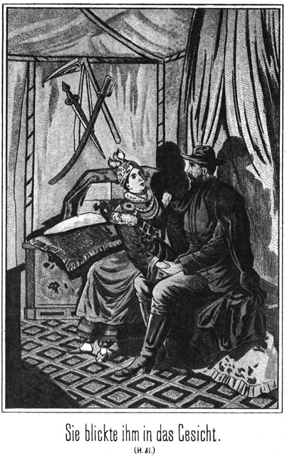Der Kreissecretär trat zu ihm heran, beugte sein Knie, reichte ihm den Ukas hin und sagte:
»Excellenz, nimm meinen Respect in Gnaden an. Ich bin Dein gehorsamster Sclave und werde Alles thun, was Du mir befiehlst.«
Steinbach steckte das Papier wieder zu sich und antwortete:
»Das erwarte ich allerdings von Dir. Zunächst ernenne ich Dich zum Kreishauptmann von Platowa und werde dafür sorgen, daß die schriftliche Installirung Dir vom Gouverneur baldigst zugehe. Dein erstes Thun im neuen Amte soll die Arretirung dieser beiden Verbrecher sein.«
»Herr, wenn Du es wünschest, werde ich sie in Ketten legen lassen!«
Der Eifer, mit welchem der Mann diese Worte sprach, ließ erkennen, welchen großen Eindruck der Ukas auf ihn gemacht hatte.
»Ich muß allerdings die größte Vorsicht anrathen. Es giebt hier kein Gefängnißgebäude, welches die nöthige Sicherheit für solche Gefangenen bietet. Du wirst sie also gefesselt und unter gehöriger Bedeckung nach Irkutsk schaffen lassen. Das Begleitschreiben verfasse ich sofort und werde es Dir noch vor Anbruch des Morgens zustellen. Du haftest mir für die sichere Ablieferung der Gefangenen.«
»Excellenz, ich werde sie selbst hinschaffen.«
»Wenn Du glaubst, so lange hier abkommen zu können?«
»Ganz gewiß. Die laufenden Angelegenheiten können bis nach meiner Rückkehr warten.«
»Gut. Und noch Eins: Ich reise früh ab, um den Grafen Polikeff zu ergreifen. Sollte ich ihn verfehlen, so daß er vor mir hier wieder anlangt, so arretirst Du ihn sofort und transportirst ihn ebenfalls nach Irkutsk.
»Ich werde diesem Befehle auf das Allerstrengste nachkommen.«
»Aber nimm Dich in Acht mit ihm! Er ist ein gefährlicher und waghalsiger Mensch, der Alles daran setzen würde, Dir zu entkommen. Er wird seine ganze Schlauheit anwenden, diesen Zweck zu erreichen.«
»Und wenn er schlauer wäre, als ein Fuchs, mich soll er nicht überlisten.«
»Ich hoffe es. Was das Eigenthum dieser beiden Gefangenen betrifft, so vertraue ich es Deinen Händen an. Das über sie zu fällende Urtheil wird bald gesprochen werden, und dann wird auch bestimmt werden, was mit ihren Sachen geschieht. Und damit Du erkennst, daß ich nicht gegen unschuldige Leute so streng verfahre, will ich Dir die Beweise ihrer Schuld zeigen. Diese Menschen irren sich gewaltig, wenn sie denken, daß sie sich durch ihr Leugnen zu retten vermögen.«
Er gab Sam einen Wink und dieser zog nun den Schein hervor, welchen er dem Kreishauptmanne unten im Keller abgenommen hatte. Als der Secretär denselben gelesen hatte, sagte er erstaunt:
»Du siehst, wie die Sachen stehen. Ich übergebe Dir hiermit die Gefangenen. Thue Deine Pflicht!«
Er zog den Ueberrock wieder an, um sich zu entfernen. Da trat die Frau des Kreishauptmannes zu ihm, um für ihren Mann und Sohn zu bitten. Er hörte sie geduldig an und gab ihr den Bescheid:
»Ich will annehmen, daß Du von ihrem Verbrechen nichts gewußt hast, aber von der Aenderung Eures Namens hast Du gewußt. Das genügt eigentlich, um auch Dich mit anzuklagen. Dennoch will ich davon absehen, denn Du thust mir leid. Du sollst Deine Freiheit behalten und es mag auf Dich ankommen, ob Du hier in Platowa bleiben oder die Deinen nach Irkutsk begleiten willst. Frei werden sie aber niemals wieder werden.«
Diese letztere Bemerkung verfehlte ihre Wirkung auf die beiden Gefangenen nicht; aber sie war eine verschiedene. Der Kreishauptmann sank mit einen, dumpfen Weherufe in sich zusammen, sein Sohn aber wagte es, zornig zu rufen:
»Ich werde wieder frei sein, ja, ich werde mich gar nicht gefangen geben. Ich bin unschuldig. Und wenn Alle es bezweifeln, so giebt es doch ganz gewiß eine Person, welche für mich eintreten wird.«
»Wer sollte das sein?« fragte der Secretär.
»Hier, Karparla, meine Braut. Sie soll in Kurzem meine Frau werden, und mein Schwiegervater, welcher Fürst der Tungusen ist, wird nicht zugeben, daß ich wie ein Verbrecher behandelt werde. Karparla, ich verlange von Dir, daß Du mich gegen die Willkür vertheidigest, welcher ich unterliegen soll. Es ist Deine Pflicht.«
Er hatte sich bei diesen Worten direct an sie gewendet und war ihr mehrere Schritte näher getreten.
»Weiche von mir!« wehrte sie ihn ab. »Ich mag nichts von Dir wissen.«
»Du mußt! Ich fordere es!«
»Du hast kein Recht dazu! Ich habe Dich gehaßt und verabscheut, so lange ich Dich nur kenne. Es ist nie ein Wort davon, daß ich Dein Weib werden will, über meine Lippen gekommen. Und selbst wenn ich hätte gezwungen werden sollen, so hätte ich mich gewehrt. Von Dir auch nur angerührt zu werden, ist mir stets eine Pein gewesen. Was Dir geschieht, hast Du mehr als reichlich verdient. Ich habe nichts mit Dir zu schaffen.«
Sie hatte ganz anders gesprochen, als es sonst ihre Weise war. Ihre Augen hatten geblitzt und auf ihre Wangen war die dunkle Röthe des Zornes getreten. Es war, als ob ihre Züge ein ganz neues Gepräge bekommen hätten, als ob sie plötzlich eine ganz Andere geworden sei.
War bereits vorher von der characteristischen Gesichtsbildung der Tungusen bei ihr nichts zu bemerken gewesen, so trat jetzt dieser Umstand auf das Entschiedenste und Auffälligste hervor. Die schief geschlitzten Augen und hervortretenden Backenknochen der sibirischen Nationalitäten fehlten ihr ganz. Ihr Gesicht hatte vollständig europäischen Schnitt.
Das fiel jetzt Allen auf, besonders aber Steinbach, welcher ja gewöhnt war, stets auf Alles, selbst auf das Kleinste zu achten. Sein Blick glitt von ihr auf ihre Eltern; er ruhte still prüfend auf denselben und kehrte dann wieder zu dem schönen Mädchen zurück. Dann flog es hell über sein Gesicht, als ob er irgend einen Entschluß gefaßt habe; doch sagte er jetzt nichts.
Es gab überhaupt nichts mehr zu sagen. Die anwesenden Kosaken mußten sich ihrer beiden bisherigen Vorgesetzten bemächtigen und sie hinab in den Keller führen, um sie dort bis zum Aufbruche nach Irkutsk zu bewachen. Steinbach kehrte mit seinen Begleitern nach dem Lager vor der Stadt zurück.
Unterwegs waren sie Alle still; dennoch beschäftigten sich Alle mit nur dem einen Gedanken, daß Steinbach ein so hoch stehender Officier sei. Er hatte also doch endlich einmal sein Incognito ein Wenig gelüftet.
Als er vom Pferde steigen wollte, warf Sam sich schnell aus dem Sattel, hielt ihm demüthig den Steigbügel und sagte deutsch:
»Excellenz, der Teufel soll mich holen, wenn ich geahnt habe, daß ein deutscher Assessor ein russischer General der Cavallerie sein kann. Mir steht der Verstand still. Geben Sie mir eine tüchtige Backpfeife, daß er wieder in Bewegung kommt.«
»Still!« lachte Steinbach, indem er abstieg. »Laß die Excellenz bei Seite! Ich bleibe Steinbach nach wie vor.«
»Das geht nicht an. Jedem das Seine!«
»Pah!«
»Freilich! Einen General kann ich doch nicht so glatt weg Steinbach nennen. Das würde mir meine angeborene Höflichkeit keineswegs erlauben.«
»Weißt Du denn so genau, daß ich wirklich ein General bin?«
»Natürlich! Ihre Uniform sagt es ja.«
»Die kann ich ja angezogen haben, ohne daß ich ein Recht habe, sie zu tragen. Ich habe nur diesen Russen imponiren wollen.«
»Hm! Sie sind Derjenige, der sich so mit fremden Federn schmücken würde! Nein, hinter diesem Steinbach steckt etwas ganz Anderes.«
»So laß es einstweilen stecken, bis es später freiwillig und ganz von selbst zum Vorschein kommt.«
»Das will ich mir eher gefallen lassen. Freilich ist dabei ein Umstand, über den ich mich eigentlich riesig ärgern könnte, wenn ich überhaupt so ein ärgerliches Temperament hätte.«
»Welcher Umstand ist das?«
»Daß hinter dem Namen Sam Barth nicht auch etwas Vornehmes steckt. Ich kann mich begucken von welcher Seite ich will und noch so hoch an meinem Stammbaume in die Höhe klettern, so bleibe ich, der ich bin und der ich war, nämlich der Knopfmachergeselle Samuel Barth aus Herlasgrün im Königreiche Sachsen.«
»Der ist ein braver Kerl, auf den ich große Stücke halte. Sei also zufrieden, daß Du derselbe bleibst!«
Jetzt trat Semawa zu ihm. Darum zog Sam sich schnell zurück.
»Oscar,« sagte sie »Du hast Dir einen Scherz mit mir gemacht. Willst Du das eingestehen?«
»Du meinst in Beziehung auf den Assessor?«
»Ja.«
»Nun, ich will Dir gegenüber nicht leugnen, Geliebte. Ich bin nicht ein Subalternbeamter, wie ich gesagt habe.«
»Was denn?«
»Magst Du mir nicht erlauben, darüber zu schweigen?«
»Hast Du Gründe dazu?«
»Sehr triftige.«
»So werde ich freilich nicht in Dich dringen. Es genügt mir, daß ich Dich habe. Freilich wäre es mir lieber, wenn Du der kleine Assessor geblieben wärst.«
»Lieber? Warum?«
»Weil ich Dir dann hätte beweisen können, daß ich nur Dich zu besitzen wünsche, daß ich Dich nur um Deiner selbst liebe.«
»Meine Semawa, das hast Du mir bereits bewiesen, und ich bin ganz glücklich, daß ich meiner schönen indischen Prinzessin eine Stellung bieten kann, welche ihrem Stande angemessen und würdig ist. Da steht Karparla. Sie wartet auf Dich. Bitte, sage ihr, daß ich einige Worte ungestört mit ihr sprechen möchte.«
Während die Anderen sich bereits im Zelte befanden, hatte Karparla am Eingange desselben gewartet. Sie kam, als Semawa ihr den Wunsch Steinbachs mittheilte, zu diesem herbei.
»Du hast mich rufen lassen,« sagte sie. »Ist es etwas so Geheimnißvolles, was Du mir zu sagen hast?«
»Nein, aber doch Etwas, was kein Anderer zu hören braucht. Es betrifft nur Dich allein – ganz allein allerdings auch nicht, sondern einen Anderen mit – den Kosaken Nummer Zehn.«
»Ihn? Was hast Du mir von ihm zu sagen?«
»Nichts, vielmehr sollst Du mir Etwas von ihm sagen. Ich habe gehört, daß Du ihn lieb hast. Erlaubst Du mir, davon zu sprechen?«
»Du bist unser Gast, unser Freund; Du kannst mit uns von Allem sprechen, was Dir beliebt.«
»So sage mir einmal aufrichtig, ob Du ihn wirklich lieb hast?«
»Sehr, sehr lieb!«
»Wohl so lieb, daß Du ihm gehören möchtest?«
»Ja, das will ich Dir gestehen.«
»Hast Du denn auch daran gedacht, daß dies nicht gut möglich ist?«
»Ja, ich habe sogar mit ihm davon gesprochen.«
»So habt Ihr einen Plan für Eure Zukunft entworfen?«
»Nein. Es giebt da gar keinen Plan. Wir können einander nicht gehören; wir werden nie glücklich sein.«
Sie sagte das in so traurigem Tone, daß es Steinbach wehe that. Er ergriff ihr Händchen und meinte in tröstendem Tone:
»Vielleicht ist es doch möglich, daß Ihr vereinigt werdet.«
»Nein; das kann niemals geschehen.«
»Er ist freilich ein Flüchtling und wird als solcher verfolgt, aber Du könntest mit ihm in eine Gegend ziehen, viel weiter nach Osten, wo man ihn russischerseits nicht findet.«
»Das könnten wir freilich; aber er thut nicht mit und ich kann den Tungusen nicht zumuthen, meinetwegen die gewohnten Weideplätze zu verlassen.«
»Nun, so ist es mir vielleicht möglich, seine Begnadigung zu erlangen. Dann könnte er ja unangefochten bei Euch bleiben.«
»Herr, ich wäre unendlich glücklich und wollte es Dir Zeit meines Lebens danken, wenn Du es so weit brächtest, daß der Zaar ihn begnadigte; aber sein Weib könnte ich doch nicht werden, weil er in diesem Falle nicht bleiben würde.«
»Wo will er hin?«
»Nach seiner Heimath.«
»So liebt er Dich nicht genug?«
»O, er liebt mich nicht weniger als ich ihn; aber er hat daheim seine Familie und eine alte Mutter, die sich nach ihm sehnt.«
»Hat er Dir das selbst gesagt, oder hast Du es von Sam erfahren?«
»Er selbst sprach davon, und ich glaube wohl, daß Sam es ihm erzählt hat.«
»So hat er Dich ganz recht berichtet. Seine Familie ist auseinander gerissen worden. Die Glieder derselben haben sich seit langen Jahren nicht sehen können, und falls es ihm gelingt, frei zu werden, so ist es allerdings seine Pflicht, in die Heimath zurückzukehren, um sich mit den Seinigen zu vereinigen. Aber das ist doch noch kein Grund für Dich, unglücklich zu sein.«
»O doch! Wenn er mich verlassen muß!«
»Du kannst doch mit ihm gehen!«
»Das kann ich nicht. Auch ihm habe ich das bereits gesagt. So wie sein Herz und seine Pflicht ihn nach der Heimath rufen, so gebieten mir meine Pflicht und mein Herz, hier bei den Eltern zurück zu bleiben. Ich bin ihr einziges Kind.«
»So hast Du sie lieber als ihn?«
»Nein, ebenso wie auch er mich nicht weniger liebt als die Seinen. Er weiß, daß wir uns trennen müssen. Ich werde ihn befreien, damit er heimkehren kann. Ich werde dann sehr unglücklich sein; ich werde nie einem Manne gehören und mich nur mit dem Gedanken trösten, daß ich es ihm ermöglicht habe, seine Heimath wieder zu sehen.«
Sie sagte das so einfach, und doch lag eine tiefe Innigkeit in ihrem Tone. Sie fühlte, daß sie unglücklich sein werde, und doch wollte sie dem Geliebten den Weg nach der Heimath öffnen. Steinbach fühlte sich auf das Herzlichste zu dem einfachen, schönen und so braven Mädchen hingezogen. Er fragte weiter:
»So ist es also fest beschlossen, daß Ihr Euch trennen werdet?«
»Ganz fest.«
»Vielleicht würde es, wenn Du nicht das einzige Kind Deiner Eltern wärst. Dir leichter. Dich von ihnen zu trennen und mit ihm zu gehen?«
»Ich weiß das nicht, denn ich weiß nicht, wie es ist, wenn man Geschwister hat.«
Es entstand eine Pause, während welcher Steinbach nachsann, wie er die entscheidende Frage wohl formuliren möge. Er war nämlich vorhin, als Karparla so erregt zu dem Rittmeister sprach, auf den Gedanken gekommen, daß sie gar nicht die Tochter des Tungusenfürsten sei. Das konnte er ihr aber doch nicht so unmittelbar mittheilen. Darum fragte er:
»Du hast Dich stets auf den Weideplätzen der Tungusen befunden?«
»Ja. Wo sollte ich anders gewesen sein?«
»Kannst Du mir vielleicht sagen, wie weit Dein Gedächtniß zurückreicht?«
»Bis in meine früheste Kindheit.«
»Wessen kannst Du Dich da erinnern?«
»Ich erinnere mich an Alles, an unser Zelt, an meine Eltern, an unsere Heerden, kurz an Alles, Alles.«
»Hast Du in den ersten Jahren Deines Lebens nicht auch fremde Gesichter gesehen?«
»Nein.«
»Oder fremde Spielsachen gehabt?«
»Auch nicht.«
»Hm! Sonderbar!«
Er war am Ende seiner Weisheit angekommen. Jetzt erst fiel es Karparla auf, welche eigenthümlichen Fragen er ihr vorgelegt hatte.
»Warum willst Du das von mir wissen, Excellenz?« fragte sie ihn.
»Sage nicht Excellenz; ich heiße Steinbach und will nicht anders genannt werden. Warum ich Dir diese Fragen vorgelegt habe, das kann ich Dir jetzt noch nicht sagen. Vielleicht theile ich es Dir später mit. Morgen werden wir aufbrechen. Jetzt ist es bereits sehr spät, und da Semawa uns vielleicht begleiten wird, so bedarf sie der Ruhe. Ich bitte Dich also, sie in Dein Zelt zu führen.«
Karparla war viel zu sehr Naturkind, als daß sie in Folge dieser Aufforderung erkannt hätte, daß er wünsche, ohne ihre Gegenwart mit ihren Eltern zu reden. Sie sann gar nicht über den Grund zu dieser seiner Aufforderung nach; sie gehorchte derselben einfach und zog sich, nachdem Semawa von Steinbach Abschied genommen hatte, mit derselben in das Frauenzelt zurück.
Nun erst begab sich Steinbach in das Familienzelt, wo der Fürst mit seiner Gemahlin und den drei Jägern saß. Das gute, dicke tungusische Ehepaar hatte gar keine Ahnung von dem Blitze, welcher wie aus heiterem Himmel jetzt in ihr so friedliches Familienleben fahren sollte.
Der Fürst wollte davon sprechen, daß Steinbach ein so vornehmer Herr sei. Dieser aber schnitt dieses Thema mit einer kurzen Bemerkung durch:
»Lassen mir das! Wir haben jetzt Wichtigeres zu besprechen, und dann wollen mir zu einer kurzen Ruhe gehen, welche wir alle sehr nothwendig brauchen.«
»Recht hast Du,« stimmte der Fürst, welcher sehr gern schlief, ihm bei. »Wir müssen bei Zeiten aufbrechen und haben einen weiten Ritt vor uns.«
»Also bist Du wirklich fest entschlossen, mit Deinen Tungusen mit nach dem Mückenflusse zu reiten?«
»Ja, ich muß, denn Mila Dobtonitsch hat gesandt, und wenn diese uns eine Botschaft schickt, so ist es immer dringend.«
»Wer ist diese Frau?«
»Sie ist keine Frau, sondern ein junges Mädchen, eine Freundin von Karparla.«
»Ah, wohl ihre Verbündete? Sie ist dem Engel der Verbannten behilflich, den Flüchtlingen über die Grenze zu Helfen?«
»Ja.«
»Dann kann sie kein gewöhnliches Mädchen sein.«
»Das ist sie freilich nicht. Sie ist reich, schön und so muthig wie selten ein Mann ist.«
»Was ist ihr Vater? Dem Namen Dobronitsch nach scheint er ein Russe zu sein?«
»Er ist ein sehr reicher Heerdenbesitzer, dessen Wohnung am Ufer des Baikalsee's liegt, da, wo der Mückenfluß sich in den See ergießt, einige Werst nördlich von Werchnei Udinsk. Er ist ein alter Bekannter von mir und freut sich immer, wenn ich ihn einmal besuche.«
»Auf welche Weise trägt er denn zur Befreiung der Gefangenen bei?«
»Hm! Das ist ein Geheimniß, welches ich eigentlich nicht verrathen darf. Zu Dir aber kann ich davon sprechen. Er hat am Ufer des Sees, in den steilen Felsen ein sehr vorzügliches Versteck, in welchen er die Flüchtlinge verbirgt, bis sich eine gute Gelegenheit für sie findet, über die Grenze zu gelangen. Leider werde ich ihn verlieren. Er ist als armer Mann nach Sibirien gekommen und hier reich geworden. Nun will er wieder in die Gegend von Warschau, aus welcher er stammt, zurückkehren. So werden wir uns bald trennen, und ich bekomme ihn nie wieder zu sehen.«
»Das ist das Schicksal aller Menschen. Sie kommen und gehen. Oft ist man gezwungen, sich vom Allerliebsten, was man besitzt, zu trennen. Vielleicht wirst Du das auch noch erfahren.«
»Ich? Wieso?«
»Nun, ich denke, daß Du Dich einmal von Deiner Karparla wirst trennen müssen.«
»Niemals!«
»Vielleicht doch. Die Bestimmung des Weibes ist, dem Mann anzugehören.«
»Wenn Karparla einmal einen Mann nimmt, wird sie dennoch bei uns bleiben.«
»Ich habe gehört, daß sie den flüchtigen Kosaken liebt. Wenn sie ihm angehören will, wird sie ihm in seine Heimath folgen.«
»Das wird sie nicht thun. Sie bleibt bei uns, denn sie gehört ja zu uns.«
Steinbach ließ mit Fleiß eine Pause eintreten, während welcher er seinen Blick scharf und forschend auf das Gesicht des Fürsten gerichtet hielt. Dann fragte er mit schwerer Betonung:
»Gehört sie wirklich zu Euch?«
»Natürlich!«
»Aus welchem Grunde?«
»Das vermagst Du zu fragen? Sie gehört zu uns, weil sie unsere Tochter ist.«
»So! Ist – sie – das – wirklich?«
Er sprach jedes Wort dieser Frage langsam und einzeln aus. Der Fürst schien zu erschrecken. Er blickte Steinbach lange in das Gesicht und fragte:
»Wie kommst Du zu dieser Erkundigung?«
»Ich weiß, daß sie Eure Tochter nicht ist.«
Da sprang der Fürst trotz der Schwere seiner Gestalt blitzschnell von seinem Sitze auf. Die Fürstin stieß einen Schrei des Schreckes aus. Sie saß neben Steinbach, ergriff seinen Arm und rief:
»Herr, schweig, schweig! Das soll ja Niemand wissen. Sie ist unser Kind, obgleich ich sie nicht geboren habe.«
Steinbach fühlte eine innige Theilnahme für die beiden braven Menschen; aber wenn er es auch nicht grad für seine Pflicht gehalten hätte, diesen Fall aufzuklären, so gebot ihm doch die Rücksicht auf Georg Adlerhorst, den Kosaken, nach der Abstammung Karparla's zu forschen. Darum sagte er:
»Warum erschreckt Ihr? Niemand will Euch die Tochter nehmen.«
»O doch, doch!« rief die Fürstin. »Wenn Karparla erfährt, daß sie nicht unser wirkliches Kind ist, so folgt sie dem Kosaken in seine Heimath, denn diese – – –«
Sie hielt inne. Steinbach durfte ihr keine Zeit lassen, diese Pause zu verlängern. Darum sagte er schnell:
»Denn diese – – – was wolltest Du noch hinzufügen?«
»Diese Heimath ist ja auch die ihrige.«
»Wie? Was? Karparla ist eine Deutsche?«
»Ja.«
»Nein, das ist nicht wahr,« schalt der Fürst ein. »Sie ist eine Russin.«
»Ihr Vater war ja aus Deutschland,« entgegnete seine Frau.
»Aber ihre Mutter war eine Russin, und überdies ist sie in Rußland geboren.«
Das war für Steinbach freilich höchst interessant. Die beiden Eheleute befanden sich in einer bedeutenden Erregung, welche benutzt werden mußte, um von ihnen ein Geständniß zu erlangen.
»Bleibt ruhig, bleibt ruhig!« bat er. »Ihr werdet so gut sein, mir zu erzählen, wie Karparla Eure Tochter geworden ist.«
»Nein, das werden wir nicht thun,« antwortete der Fürst, indem er sich langsam wieder niedersetzte.
»Ihr seid es mir schuldig.«
»Nein, nein. Ich spreche von dieser Sache nicht. Karparla ist unsere Tochter, und das ist genug. Wie sie es geworden ist, das braucht Niemand zu erfahren.«
Steinbach machte mit Absicht ein möglichst enttäuschtes Gesicht und stieß in sehr bedenklichem Tone hervor:
»Schade, jammerschade! Ich habe Euch bisher für brave, ehrliche Leute gehalten.«
»Das sind wir auch.«
»Jetzt möchte ich daran zweifeln.«
»Herr, willst Du uns beleidigen? Willst Du uns kränken, uns, Deine Gastfreunde?«
»Nein. Ganz im Gegentheile kränkt es mich, denken zu müssen, daß Ihr, die ich so liebe, eine böse That auf dem Gewissen habt!«
Da rief der Fürst ganz entsetzt seiner Frau zu:
»Hörst Du, Kalyna, eine böse That!«
»Ich höre es,« antwortete sie ganz außer sich. »Eine böse That! Und doch ist es grad im Gegentheile eine sehr gute That gewesen, eine Wohlthat für das Kind!«
»Das sollte mich freuen,« meinte Steinbach. »Es erleichtert mir das Herz außerordentlich, überzeugt sein zu dürfen, daß Ihr an dem Mädchen kein Verbrechen begangen habt.«
»Ein Verbrechen! Ein Verbrechen! Für was hältst Du uns?« rief der Fürst.
»Jetzt weiß ich ja gar nicht, was ich von Euch halten soll. Ihr wollt mir ja Alles verschweigen, also kann ich eigentlich nichts Gutes, sondern nur Böses von Euch denken.«
»Ich erschrecke! Wer kann uns etwas Böses nachsagen!«
»Bis jetzt Niemand. Aber was werden die Leute dann sagen, wenn Ihr vor die Polizei und vor das Gericht gefordert werdet!«
»Vor die Polizei? Wir? Herrgott! Dazu giebt es doch gar keinen Grund.«
»O doch! Einen sehr triftigen.«
»Welchen denn?«
»Ihr habt ein fremdes Kind bei Euch und haltet es seinen Eltern zurück. Ihr sagt nicht, wem es gehört. Das ist ein Verbrechen, welches sehr schwer bestraft wird.«
»Ein Verbrechen? Wäre es wirklich eins?«
»Natürlich, ein sehr großes sogar.«
»Und es wird bestraft?«
»Mit Zuchthaus, mit lebenslänglicher Verbannung in die Bergwerke.«
»Mein Heiland!« schrie die Fürstin auf.
»Du Herr mein Gott!« rief auch der Fürst.
Er, ein Nommadenfürst, von Jugend auf an das freie, ungebundene Herumziehen gewöhnt, sollte in das Zuchthaus kommen oder gar lebenslänglich unterirdisch in den Bergwerken arbeiten, ohne jemals das Licht der Sonne wieder zu erblicken! Es konnte für ihn gar nichts Schrecklicheres, Entsetzlicheres geben.
»Ja, da erschreckt Ihr nun,« sagte Steinbach. »Es ist sicher, daß Ihr ein solches Verbrechen auf dem Gewissen habt, und grad ich muß es sein, es entdeckt und Euch der Polizei überliefert, ich, den Ihr als Euern Gast hier aufgenommen habt. Das ist mir sehr leid; es ist traurig für mich, aber ich kann es nicht ändern; ich muß leider meine Schuldigkeit thun.«
»Du, Du willst uns anzeigen!«
»Ja, ich muß.«
»Nein, Du mußt nicht!«
»O doch! Du bist ja selbst dabei gewesen, als ich den Kreishauptmann und den Rittmeister habe arretiren lassen. Ich bin als Beauftragter der Criminaljustiz gekommen und muß Alles, was ich auch nur zufällig entdecke, bestrafen lassen.«
Das Gesicht des armen Fürsten wurde ganz starr und bewegungslos. Das Blut war gänzlich aus demselben gewichen. Die gute Kalyna rang die Hände; sie brachte vor Entsetzen kein Wort hervor. Sie athmete schwer und vermochte nur, zu seufzen.
»Cri–mi–nal–ju–stiz! Gnade, Gnade! Es zwingt Dich ja Niemand, uns anzuzeigen!«
»O freilich doch!«
»Wer denn?«
»Ihr selbst.«
»Das fällt uns ja gar nicht ein! Wir wollen nicht angezeigt sein. Wie kannst Du da sagen, daß wir Dich zwingen!«
»Ihr zwingt mich dazu, indem Ihr Euch weigert, mir die Sache zu erzählen. Wenn Ihr die Wahrheit sagtet, könnte ich vielleicht eine Möglichkeit entdecken, die That ungeschehen zu machen.«
»Meinst Du, Herr? Meinst Du wirklich?«
»Ja. Ich bin gern bereit, Alles zum Besten zu kehren; aber wissen muß ich da natürlich, wie es zugegangen ist.«
»Ganz gesetzlich ist es zugegangen, ganz gesetzlich. Das kannst Du uns glauben!«
»Wenn ich es wirklich glauben soll, so müßt Ihr es mir erzählen.«
»Was soll ich thun! Kalyna, liebe Kalyna, sage mir, was ich thun soll!«
»Bula, bester Bula, erzähle es!« antwortete sie. »Das wird das Beste sein.«
»Aber dann kommts heraus!«
»Wenn Du es diesem Herrn nicht erzählst, wird es auch herauskommen, denn Du wirst es der Polizei sagen müssen.«
»Und die kennt nachher keine Rücksicht,« fügte Steinbach hinzu. »Ich aber kann die Sache freundschaftlich behandeln.«
»Wirst Du das wirklich thun?«
»Ganz gewiß.«
»Nun, so werde ich mich doch wohl entschließen, es Dir zu erzählen.«
»Das ist das beste, was Du thun kannst.«
»Du wirst erkennen, daß wir nichts Böses begangen haben.«
»Ich will das hoffen. Nun aber laß die Zeit nicht noch länger unnütz verstreichen. Sie ist mir zu kostbar, als daß ich sie mit leeren Reden verschwenden möchte.«
»Ja, ich will reden, Herr. Es war im Winter, in einem schweren, harten Winter, in welchem uns selbst die Rennthiere erfroren, weil sich so starkes Eis gebildet hatte, daß sie nicht durch dasselbe zu dem Moose gelangen konnten, welches ihnen zur Nahrung dient. Wir hatten unsere Zelte an der großen Straße aufgeschlagen, auf welcher die Verbannten nach dem Osten geschafft werden. Der Sturm pfiff schrecklich und wehte den Schnee in dichten Wolken vor sich her. Da kam ein Zug Gefangener und hielt bei uns an, um zu rasten – – –«
»Waren sie in Schlitten?«
»Nein. Damals gab es für sie diese Erleichterung noch nicht. Sie mußten laufen, selbst im Winter. Es waren über sechzig Personen, Verbannte und die Familienglieder, welche ihnen freiwillig gefolgt waren. Sie trugen ihre wenigen Habseligkeiten bei sich. Ein Mann hatte einen Knaben auf dem Arme, den er kaum gegen die grimmige Kälte bedecken konnte. Sein Weib trug ein ganz kleines Mädchen, welches noch nicht ein Jahr alt sein konnte. Die Frau hatte ihre Kleidung vorn geöffnet und hielt das Kind an den nackten Leib, damit es von demselben erwärmt werde. Aber es war doch unnütz gewesen, denn als ich aus Mitleid sie in mein Zelt führte und sie das Kind von ihrem Herzen nahm, war es todt.«
»Ja, todt, ganz starr und todt!« bekräftigte die gutherzige Kalyna, indem sie in ein lautes Weinen ausbrach.
Sie fühlte sich noch jetzt, nach so langer Zeit, aufs Tiefste gerührt, als sie an jene Stunde dachte. Der Fürst fuhr fort:
»Das Herz thut, mir noch heut weh, wenn ich mir das Weib vergegenwärtige. Sie stand ganz starr da, den Blick auf die kleine Leiche gerichtet. Dann stieß sie einen Schrei aus, den ich nie vergessen werde, und sank auf den Boden nieder.«
»Habt Ihr nicht versucht, das Kind wieder in's Leben zurückzubringen?« fragte Steinbach.
»Ja, natürlich haben wir es gethan.«
»Wie denn?«
»Wir haben es über das Feuer gehalten, um es zu erwärmen, und als das nichts half, haben wir es in den Kessel gelegt und mit warmem Wasser begossen; aber auch da blieb es todt.«
»Natürlich! Ihr habt es ganz verkehrt gemacht.«
»Wieso denn?«
»Einen Erfrorenen behandelt man doch nicht mit Wärme, sondern mit Kälte.«
»Herr, Du spaßest!«
»Nein. Ich spreche im Ernst.«
»Wer erfriert, dem geht doch die Lebenswärme verloren. Ist das nicht so?«
»Allerdings.«
»Also muß man ihm Wärme geben!«
»Ja, aber nicht durch Feuer und warmes Wasser; da tödtet man ihn vollends. Was machst Du denn, wenn Deine Nase weiß wird und erfrieren will?«
»Ich reibe sie schleunigst so lange mit Schnee, bis sie die Farbe wiederbekommt.«
»Und wenn Du den Fuß oder die Hand erfrierst, was thust Du dann?«
»Ich stecke sie in Schnee.«
»Warum denn nicht in warmes Wasser?«
»Das würde nichts helfen, sondern die Sache nur schlimmer machen.«
»Nun siehst Du. So hättet Ihr es auch mit dem Kinde machen sollen. Anstatt dessen aber habt Ihr es in's warme Wasser gebracht und es vollends getödtet, wenn es ja noch eine Spur von Leben gehabt hat.«
»Herr, ich denke, nur mit der Nase und Händen und Füßen darf man das machen. Da wird mir doch das Herz leicht, wenn ich daran denke, daß das kleine Mädchen nicht gestorben ist.«
»Ah, es ist wieder erwacht? Es war nicht ganz todt?«
»Nein. Könnte es da noch leben, wenn es ganz todt gewesen wäre. Es war ja unsere Karparla.«
»Ach so! Erzähle weiter!«
»Wir waren freilich Alle überzeugt, daß es todt sei. Der Vater war ganz untröstlich, und die Mutter hatte vor Jammer fast den Verstand verloren. Sie sagte nichts und ließ mit sich machen, was man wollte.«
»Das ist der höchste Grad des Schmerzes gewesen.«
»Die Leute konnten nicht bleiben, denn die Stationen sind ihnen ganz genau vorgeschrieben, und die Kosaken trieben bald zum Aufbruche. Der Mann wollte die Leiche seines erfrorenen Kindes mit sich nehmen; aber der Anführer litt es nicht; er verbot es ihm.«
»Welch eine Grausamkeit!«
»So dachte ich auch. Aber man kann eine Leiche doch nicht stets bei sich führen. Sie muß begraben werden. Darum hatte der Anführer doch vielleicht Recht. Er war auch nicht ganz so grausam, wie es scheinen mochte, denn er erlaubte dem Vater, das Kind noch schnell zu begraben. Es wurde der harte Schnee entfernt, gar nicht weit von meinem Zelte. Aber der Erdboden war so fest gefroren, daß man mit den vorhandenen Werkzeugen kein Grab machen konnte. So begrub man also die Leiche einstweilen nur in den Schnee, und ich versprach, sie später der Erde zu übergeben. Die Kosaken und Verbannten sprachen ein Gebet und zogen dann weiter.«
»Wie verhielt sich die Mutter des Kindes dabei?«
»Um sie war es mir eigentlich angst; aber sie war ganz still; sie that gar nicht so, als ob die Sache sie etwas angehe. Sie hielt die Arme immer so, als ob sie ihr Kind noch auf denselben trage, und sang leise vor sich hin, wie man singt, wenn man ein Kind in den Schlaf singen will.«
»Mein Gott! Sie ist wahnsinnig gewesen.«
»Das dachten wir auch. Aber konnten wir die Sache ändern?«
»Nein.«
»Also sie zogen fort, in den Schneesturm hinein. Es wurde kurze Zeit darauf Abend. Wir saßen um das Feuer und tranken heißen Thee. Wir sprachen natürlich von den ›armen Leuten‹ und bedauerten sie von ganzem Herzen; da – errathe einmal, was jetzt plötzlich geschah!«
»Was kann ich rathen? Erzähle es!«
»Wir hörten Etwas.«
»Nun, was denn?«
»Das wußten wir auch nicht. Erst dachte ich, es heule in der Ferne ein Hund, der sich verlaufen habe und nicht weiter könne; aber bald bemerkten wir, daß die Töne aus der Nähe kamen. Ich ging vor das Zelt. Woher denkst Du wohl, woher die Töne kamen?«
»Jetzt errathe ich es – von der Stelle her, an welcher das Kind begraben worden war.«
»Ja, so war es. Ich eilte hin, scharrte den Schnee gleich mit den Händen fort und sah dann, daß das Kind lebendig war. Es strampelte mit Armen und Beinen und schrie zum Entzücken. Sollte man so Etwas für möglich halten! Es war ein Wunder!«
»Nein, es war kein Wunder. Es läßt sich das sogar sehr leicht, erklären.«
»Da bist Du klüger als ich. Das Kind war todt und begraben. Es wurde wieder lebendig. Kann es ein größeres Wunder geben?«
»Das Kind war nicht todt – – –«
»Wir haben es doch begraben!«
»Ja, lebendig!«
»Heiliger Iwan! Wir werden doch keinen Lebendigen begraben!«
»Und doch habt Ihr es gethan. Es ist nicht erfroren, sondern nur erstarrt gewesen. Durch das warme Wasser habt Ihr es verhindert, daß es erwachen konnte, und das ist freilich ein Wunder, daß es nicht daran vollends gestorben ist. Dann, nachdem es in den Schnee verscharrt worden war, that dieser seine Schuldigkeit grad so, wie wenn Ihr Euch die Nase mit demselben einreibt – das Kind erwachte.«
»Wenn Du es so erklärst, möchte man freilich meinen, daß Du Recht habest.«
»Ich habe Recht. Erzähle weiter!«
»Ich habe ja nichts weiter zu erzählen. Das Kindchen war Karparla.«
»Ich meine im Gegentheile, daß Du nun erst noch die Hauptsache zu erzählen hast. Was thatest Du, als Du das Kind in das Zelt brachtest?«
»Ich gab es meinem guten Weibe Kalyna. Die nahm es an ihr Herz und gab ihm Thee zu trinken und Fleisch zu essen.«
»Einem Kinde von noch nicht einem Jahre! Nachdem es erst vom Scheintodte erwacht war!«
»Ja. Was sollten wir sonst thun.«
»Gab es keine Milch?«
»Rennthiermilch gab es; aber wir dachten, Fleisch sei für einen vom Tode Erstandenen kräftiger.«
»Ihr konntet es ja sofort wieder tödten.«
»O nein. Das Kindchen aß und trank wie ein Alter. Es sah erst ganz blauroth am ganzen Körper. Bald aber färbte sich die Haut wieder weiß, und als nachher auch noch die schönen, hell glänzenden Haare wuchsen, nannten wir das Mädchen Karparla – die wie Schnee Glänzende.«
»Aber die Eltern desselben? An diese mußtet Ihr doch denken.«
»Herr, haben wir auch gethan. Wir haben gedacht, wie sie entzückt sein würden, wenn sie erführen, daß ihr Kindchen noch lebte.«
»Ihr mußtet ihnen das Kind bringen. Ihr wart verpflichtet, es ihnen nachzuschaffen oder nachzusenden.«
»Das wollten wir auch.«
»Habt es aber doch nicht gethan!«
»Wir konnten nicht, denn während der Nacht stieg der Sturm zum Orkane welcher mehrere Tage wüthete. Und als er sich endlich legte, der Schnee viele, viele Werste weit so hoch, daß es ganz unmöglich war, fortzukommen. Wir waren Wochen lang eingeschneit, und als wir endlich wieder reiten konnten und nach jenem Gefangenentransport suchten, konnten wir nichts erfahren. Wir behielten das Kind bei uns und haben es wie unser eigenes Kind gehalten. Nun sage uns, ob wir ein Verbrechen begangen haben.«
»Ein Verbrechen nicht, vielleicht aber eine Unterlassungssünde. Habt Ihr Euch denn später keine Mühe gegeben, die Eltern zu entdecken?«
»O, viele; aber es war vergebens.«
»Wie habt Ihr das denn gemacht?«
»Wir haben alle Leute gefragt, welche uns begegneten.«
»O wehe! Das genügt nicht. Ihr mußtet die Sache bei der Behörde melden; die hätte die Eltern sicher gefunden.«
»Daran haben wir freilich nicht gedacht.«
*
»Das weiß ich nicht.«
»Darnach hättest Du Dich doch erkundigen müssen.«
»Ich hätte es gethan, wenn ich gewußt hätte, daß das Kindchen wieder lebendig wurde. So aber ging mich der Mann ja gar nichts an.«
»Du weißt aber doch, daß er ein Deutscher gewesen ist.«
»Das hörte ich von zwei Kosaken, welche von ihm sprachen. Er war verurtheilt worden, und die Frau war ihm mit den Kindern freiwillig gefolgt.«
»War er alt?«
»Nein.«
»Wie alt war der Knabe?«
»Er konnte drei oder vier Jahre zählen.«
»Und wo geschah das, was Du mir jetzt erzählt hast?«
»In der Tundra der kriechenden Birken. Sie ist weit bekannt unter allen Stämmen des Landes.«
»So könnte das wohl einen Anhaltepunkt geben.«
»Willst Du etwa nach den Eltern forschen?«
»Nein. Aber oft spielt der Zufall wunderbar, oder vielmehr Gottes Schickungen machen oft das Unmögliche möglich. Ich habe einen weiten Ritt zu machen. Zwar läßt es sich keinesweges denken, daß ich mit einem Verwandten von Karparla zusammentreffe, aber ich bin einmal gewohnt, einer jeden Sache möglichst auf den Grund zu gehen, und so will ich mir auch diese einzelnen Daten merken. Wer weiß wozu es gut ist.«
»Thue, was Dir gefällt, aber sage uns vor allen Dingen nun, ob wir bestraft werden können!«
»Nein. Ihr habt nichts Strafbares gethan.«
»Gott sei Dank! Karparla darf also unsere Tochter bleiben?«
»Ja, außer die Eltern derselben finden sich wunderbarer Weise. Denen müßtet Ihr sie allerdings abtreten.«
»Das wolle Gott verhüten! Sie haben sich ja längst in ihren Verlust gefunden; wir aber könnten es wohl nicht überwinden, wenn wir gezwungen wären, sie von uns zu geben!«